import warnings
warnings.filterwarnings("ignore")
import os
os.environ['TF_CPP_MIN_LOG_LEVEL'] = '3'
import tensorflow as tf
tf.compat.v1.logging.set_verbosity(tf.compat.v1.logging.ERROR)
# Hide GPU from visible devices
# tf.config.set_visible_devices([], 'GPU')Addestramento e metodi di ottimizzazione
1 Introduzione ad AlexNet
Prima CNN. La montiamo seguendo l’articolo. Oramai ha 10 anni, per cui è un dinosauro, ma i componenti fondamentali di convoluzione e pooling sono gli stessi.
The net contains 8 layers with weights; the first 5 are convolutional and the remaining 3 are fullyconnected. The output of the last fully-connected layer is fed to a 1000-way softmax which produces a distribution over the 1000 class labels.
La versione originale è su 2 GPU in parallelo, ma che non ha avuto seguito. Quando c’è qualcosa di distribuito, lo accorpiamo in un unico tensore.
import tensorflow as tf
import numpy as np
from tensorflow.keras.backend import clear_session
import matplotlib.pyplot as plt
from tensorflow.keras import Sequential
from tensorflow.keras.layers import InputLayer, Dense, Conv2D, MaxPool2D, BatchNormalization, Flatten, Dropoutclear_session()
alexnet_1 = Sequential([
InputLayer(input_shape=(227, 227, 3)), # immagini 227x227 RGB.
Conv2D(
filters=96,
kernel_size=(11, 11),
strides=(4, 4), # quanto vado a dx e a capo ogni volta
padding='valid', # non aggiungo zeri. bordo attorno ad ogni immagine. "same" compensa la dimensione del filtro.
activation="relu"
)
])
alexnet_1.summary()Model: "sequential"
┏━━━━━━━━━━━━━━━━━━━━━━━━━━━━━━━━━┳━━━━━━━━━━━━━━━━━━━━━━━━┳━━━━━━━━━━━━━━━┓ ┃ Layer (type) ┃ Output Shape ┃ Param # ┃ ┡━━━━━━━━━━━━━━━━━━━━━━━━━━━━━━━━━╇━━━━━━━━━━━━━━━━━━━━━━━━╇━━━━━━━━━━━━━━━┩ │ conv2d (Conv2D) │ (None, 55, 55, 96) │ 34,944 │ └─────────────────────────────────┴────────────────────────┴───────────────┘
Total params: 34,944 (136.50 KB)
Trainable params: 34,944 (136.50 KB)
Non-trainable params: 0 (0.00 B)
2 Definiamo l’architettura di AlexNet
kernel_size e stride di solito ora sono identiche. Pooling -> schiaccia altezza e larghezza. Conv -> aumenta la profondità.
clear_session()
alexnet_1 = Sequential([
InputLayer(input_shape=(227, 227,3)), # immagini 227x227 RGB
Conv2D(
filters=96,
kernel_size=(11,11), # cornice
strides=(4,4), # spostamento a destra e in basso
activation="relu"),
MaxPool2D(
pool_size=(3,3),
strides=(2,2)),
Conv2D(
filters=256, # 256 filtri
kernel_size=(5,5), # grossi 5x5
strides=(1,1),
padding="same", # ottengo la dimensione 5 da 1, dunque aggiungendo 2 e 2 a destra e sinistra dell'output di stride.
activation="relu"),
MaxPool2D(
pool_size=(3,3),
strides=(2,2)),
Conv2D(
filters=384, # 192 * 2 GPUs. Numero arbitrario ed empirico.
kernel_size=(3,3),
strides=(1,1),
padding="same",
activation="relu"),
Conv2D(
filters=384,
kernel_size=(3,3),
strides=(1,1),
padding="same",
activation="relu"),
Conv2D(
filters=256,
kernel_size=(3,3),
strides=(1,1),
padding="same",
activation="relu"),
MaxPool2D(
pool_size=(3,3),
strides=(2,2)),
Flatten(),
Dense(4096, activation="relu"),
Dense(4096, activation="relu"),
Dense(1000, activation="softmax")
])
alexnet_1.summary()Model: "sequential"
┏━━━━━━━━━━━━━━━━━━━━━━━━━━━━━━━━━┳━━━━━━━━━━━━━━━━━━━━━━━━┳━━━━━━━━━━━━━━━┓ ┃ Layer (type) ┃ Output Shape ┃ Param # ┃ ┡━━━━━━━━━━━━━━━━━━━━━━━━━━━━━━━━━╇━━━━━━━━━━━━━━━━━━━━━━━━╇━━━━━━━━━━━━━━━┩ │ conv2d (Conv2D) │ (None, 55, 55, 96) │ 34,944 │ ├─────────────────────────────────┼────────────────────────┼───────────────┤ │ max_pooling2d (MaxPooling2D) │ (None, 27, 27, 96) │ 0 │ ├─────────────────────────────────┼────────────────────────┼───────────────┤ │ conv2d_1 (Conv2D) │ (None, 27, 27, 256) │ 614,656 │ ├─────────────────────────────────┼────────────────────────┼───────────────┤ │ max_pooling2d_1 (MaxPooling2D) │ (None, 13, 13, 256) │ 0 │ ├─────────────────────────────────┼────────────────────────┼───────────────┤ │ conv2d_2 (Conv2D) │ (None, 13, 13, 384) │ 885,120 │ ├─────────────────────────────────┼────────────────────────┼───────────────┤ │ conv2d_3 (Conv2D) │ (None, 13, 13, 384) │ 1,327,488 │ ├─────────────────────────────────┼────────────────────────┼───────────────┤ │ conv2d_4 (Conv2D) │ (None, 13, 13, 256) │ 884,992 │ ├─────────────────────────────────┼────────────────────────┼───────────────┤ │ max_pooling2d_2 (MaxPooling2D) │ (None, 6, 6, 256) │ 0 │ ├─────────────────────────────────┼────────────────────────┼───────────────┤ │ flatten (Flatten) │ (None, 9216) │ 0 │ ├─────────────────────────────────┼────────────────────────┼───────────────┤ │ dense (Dense) │ (None, 4096) │ 37,752,832 │ ├─────────────────────────────────┼────────────────────────┼───────────────┤ │ dense_1 (Dense) │ (None, 4096) │ 16,781,312 │ ├─────────────────────────────────┼────────────────────────┼───────────────┤ │ dense_2 (Dense) │ (None, 1000) │ 4,097,000 │ └─────────────────────────────────┴────────────────────────┴───────────────┘
Total params: 62,378,344 (237.95 MB)
Trainable params: 62,378,344 (237.95 MB)
Non-trainable params: 0 (0.00 B)
Questa è la sintassi di una prima approsimazione di una AlexNet.
4 Immagini come array
import numpy as np
import matplotlib.pyplot as plt
from tensorflow.keras.preprocessing.image import load_img, array_to_img, img_to_array4.1 Immagine
img = load_img("/Users/simonebrazzi//R/professionAI_deep-learning-e-reti-neurali-artificiali/4 - Reti Neurali Convoluzionali/images/cat.jpg")
type(img)PIL.JpegImagePlugin.JpegImageFileVersione macchina
img_to_array(img)array([[[ 42., 36., 24.],
[ 42., 36., 24.],
[ 42., 36., 24.],
...,
[ 40., 80., 27.],
[ 39., 79., 26.],
[ 37., 77., 24.]],
[[ 41., 35., 23.],
[ 41., 35., 23.],
[ 41., 35., 23.],
...,
[ 39., 79., 26.],
[ 38., 78., 25.],
[ 37., 77., 24.]],
[[ 41., 35., 23.],
[ 41., 35., 23.],
[ 41., 35., 23.],
...,
[ 41., 80., 27.],
[ 41., 80., 27.],
[ 42., 81., 28.]],
...,
[[142., 119., 88.],
[156., 136., 103.],
[172., 150., 111.],
...,
[214., 216., 202.],
[208., 210., 196.],
[206., 208., 195.]],
[[145., 121., 95.],
[162., 139., 108.],
[177., 154., 120.],
...,
[238., 241., 222.],
[234., 237., 218.],
[233., 236., 219.]],
[[149., 123., 100.],
[167., 141., 116.],
[182., 157., 126.],
...,
[245., 248., 227.],
[243., 246., 225.],
[241., 244., 225.]]], dtype=float32)np_cat = img_to_array(img) / 255
plt.imshow(np_cat)
plt.show()
plt.close()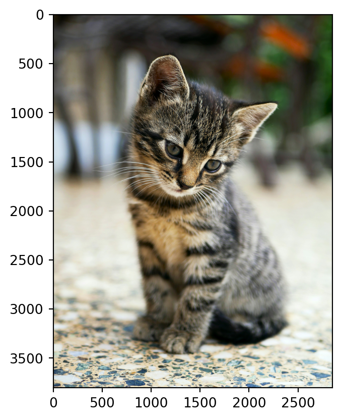
Questo consente di lavorare con una numpy array e seguire la visualizzazione.
Il subset dell’immagine segue la stessa logica del subset per una np.array().
plt.subplot(1,3,1)
plt.imshow(np_cat[:, :300])
plt.subplot(1,3,2)
plt.imshow(np_cat[:, -300:])
plt.subplot(1,3,3)
plt.imshow(np_cat[:, 150:-150])
plt.show()
plt.tight_layout()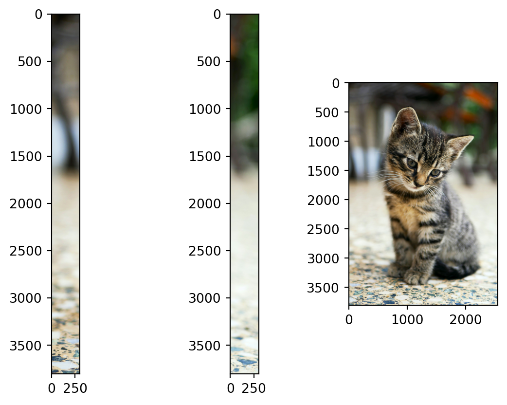
<Figure size 672x480 with 0 Axes>Downsample: tutte le righe dalla prima all’ultima, ma ogni 50.
plt.imshow(np_cat[::50,::50])
plt.show()
Si possono visualizzare anche i singoli canali.
plt.imshow(np_cat[:,:,1])
plt.show()
plt.close()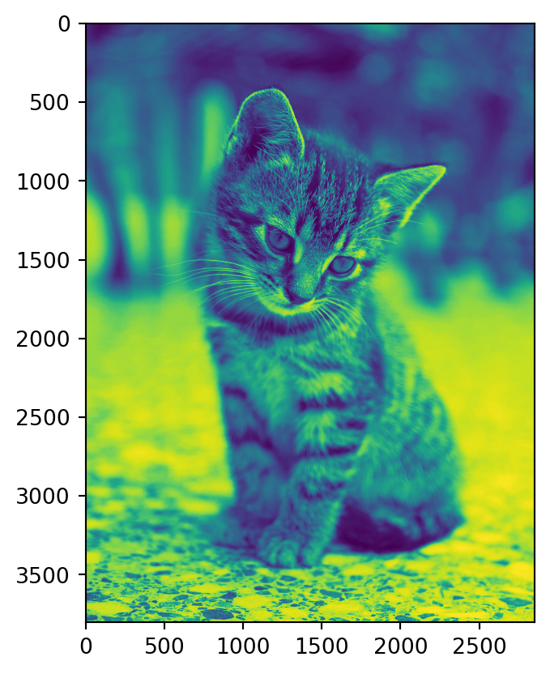
5 Modelli pre-addestrati di tf.keras
Lista di reti neurali.
[x for x in dir(tf.keras.applications) if not x.startswith("_")]['ConvNeXtBase',
'ConvNeXtLarge',
'ConvNeXtSmall',
'ConvNeXtTiny',
'ConvNeXtXLarge',
'DenseNet121',
'DenseNet169',
'DenseNet201',
'EfficientNetB0',
'EfficientNetB1',
'EfficientNetB2',
'EfficientNetB3',
'EfficientNetB4',
'EfficientNetB5',
'EfficientNetB6',
'EfficientNetB7',
'EfficientNetV2B0',
'EfficientNetV2B1',
'EfficientNetV2B2',
'EfficientNetV2B3',
'EfficientNetV2L',
'EfficientNetV2M',
'EfficientNetV2S',
'InceptionResNetV2',
'InceptionV3',
'MobileNet',
'MobileNetV2',
'MobileNetV3Large',
'MobileNetV3Small',
'NASNetLarge',
'NASNetMobile',
'ResNet101',
'ResNet101V2',
'ResNet152',
'ResNet152V2',
'ResNet50',
'ResNet50V2',
'VGG16',
'VGG19',
'Xception',
'convnext',
'densenet',
'efficientnet',
'efficientnet_v2',
'imagenet_utils',
'inception_resnet_v2',
'inception_v3',
'mobilenet',
'mobilenet_v2',
'mobilenet_v3',
'nasnet',
'resnet',
'resnet50',
'resnet_v2',
'vgg16',
'vgg19',
'xception']trained_model = tf.keras.applications.MobileNetV2()type(trained_model)
trained_model.summary()Model: "mobilenetv2_1.00_224"
┏━━━━━━━━━━━━━━━━━━━━━┳━━━━━━━━━━━━━━━━━━━┳━━━━━━━━━━━━┳━━━━━━━━━━━━━━━━━━━┓ ┃ Layer (type) ┃ Output Shape ┃ Param # ┃ Connected to ┃ ┡━━━━━━━━━━━━━━━━━━━━━╇━━━━━━━━━━━━━━━━━━━╇━━━━━━━━━━━━╇━━━━━━━━━━━━━━━━━━━┩ │ input_layer_1 │ (None, 224, 224, │ 0 │ - │ │ (InputLayer) │ 3) │ │ │ ├─────────────────────┼───────────────────┼────────────┼───────────────────┤ │ Conv1 (Conv2D) │ (None, 112, 112, │ 864 │ input_layer_1[0]… │ │ │ 32) │ │ │ ├─────────────────────┼───────────────────┼────────────┼───────────────────┤ │ bn_Conv1 │ (None, 112, 112, │ 128 │ Conv1[0][0] │ │ (BatchNormalizatio… │ 32) │ │ │ ├─────────────────────┼───────────────────┼────────────┼───────────────────┤ │ Conv1_relu (ReLU) │ (None, 112, 112, │ 0 │ bn_Conv1[0][0] │ │ │ 32) │ │ │ ├─────────────────────┼───────────────────┼────────────┼───────────────────┤ │ expanded_conv_dept… │ (None, 112, 112, │ 288 │ Conv1_relu[0][0] │ │ (DepthwiseConv2D) │ 32) │ │ │ ├─────────────────────┼───────────────────┼────────────┼───────────────────┤ │ expanded_conv_dept… │ (None, 112, 112, │ 128 │ expanded_conv_de… │ │ (BatchNormalizatio… │ 32) │ │ │ ├─────────────────────┼───────────────────┼────────────┼───────────────────┤ │ expanded_conv_dept… │ (None, 112, 112, │ 0 │ expanded_conv_de… │ │ (ReLU) │ 32) │ │ │ ├─────────────────────┼───────────────────┼────────────┼───────────────────┤ │ expanded_conv_proj… │ (None, 112, 112, │ 512 │ expanded_conv_de… │ │ (Conv2D) │ 16) │ │ │ ├─────────────────────┼───────────────────┼────────────┼───────────────────┤ │ expanded_conv_proj… │ (None, 112, 112, │ 64 │ expanded_conv_pr… │ │ (BatchNormalizatio… │ 16) │ │ │ ├─────────────────────┼───────────────────┼────────────┼───────────────────┤ │ block_1_expand │ (None, 112, 112, │ 1,536 │ expanded_conv_pr… │ │ (Conv2D) │ 96) │ │ │ ├─────────────────────┼───────────────────┼────────────┼───────────────────┤ │ block_1_expand_BN │ (None, 112, 112, │ 384 │ block_1_expand[0… │ │ (BatchNormalizatio… │ 96) │ │ │ ├─────────────────────┼───────────────────┼────────────┼───────────────────┤ │ block_1_expand_relu │ (None, 112, 112, │ 0 │ block_1_expand_B… │ │ (ReLU) │ 96) │ │ │ ├─────────────────────┼───────────────────┼────────────┼───────────────────┤ │ block_1_pad │ (None, 113, 113, │ 0 │ block_1_expand_r… │ │ (ZeroPadding2D) │ 96) │ │ │ ├─────────────────────┼───────────────────┼────────────┼───────────────────┤ │ block_1_depthwise │ (None, 56, 56, │ 864 │ block_1_pad[0][0] │ │ (DepthwiseConv2D) │ 96) │ │ │ ├─────────────────────┼───────────────────┼────────────┼───────────────────┤ │ block_1_depthwise_… │ (None, 56, 56, │ 384 │ block_1_depthwis… │ │ (BatchNormalizatio… │ 96) │ │ │ ├─────────────────────┼───────────────────┼────────────┼───────────────────┤ │ block_1_depthwise_… │ (None, 56, 56, │ 0 │ block_1_depthwis… │ │ (ReLU) │ 96) │ │ │ ├─────────────────────┼───────────────────┼────────────┼───────────────────┤ │ block_1_project │ (None, 56, 56, │ 2,304 │ block_1_depthwis… │ │ (Conv2D) │ 24) │ │ │ ├─────────────────────┼───────────────────┼────────────┼───────────────────┤ │ block_1_project_BN │ (None, 56, 56, │ 96 │ block_1_project[… │ │ (BatchNormalizatio… │ 24) │ │ │ ├─────────────────────┼───────────────────┼────────────┼───────────────────┤ │ block_2_expand │ (None, 56, 56, │ 3,456 │ block_1_project_… │ │ (Conv2D) │ 144) │ │ │ ├─────────────────────┼───────────────────┼────────────┼───────────────────┤ │ block_2_expand_BN │ (None, 56, 56, │ 576 │ block_2_expand[0… │ │ (BatchNormalizatio… │ 144) │ │ │ ├─────────────────────┼───────────────────┼────────────┼───────────────────┤ │ block_2_expand_relu │ (None, 56, 56, │ 0 │ block_2_expand_B… │ │ (ReLU) │ 144) │ │ │ ├─────────────────────┼───────────────────┼────────────┼───────────────────┤ │ block_2_depthwise │ (None, 56, 56, │ 1,296 │ block_2_expand_r… │ │ (DepthwiseConv2D) │ 144) │ │ │ ├─────────────────────┼───────────────────┼────────────┼───────────────────┤ │ block_2_depthwise_… │ (None, 56, 56, │ 576 │ block_2_depthwis… │ │ (BatchNormalizatio… │ 144) │ │ │ ├─────────────────────┼───────────────────┼────────────┼───────────────────┤ │ block_2_depthwise_… │ (None, 56, 56, │ 0 │ block_2_depthwis… │ │ (ReLU) │ 144) │ │ │ ├─────────────────────┼───────────────────┼────────────┼───────────────────┤ │ block_2_project │ (None, 56, 56, │ 3,456 │ block_2_depthwis… │ │ (Conv2D) │ 24) │ │ │ ├─────────────────────┼───────────────────┼────────────┼───────────────────┤ │ block_2_project_BN │ (None, 56, 56, │ 96 │ block_2_project[… │ │ (BatchNormalizatio… │ 24) │ │ │ ├─────────────────────┼───────────────────┼────────────┼───────────────────┤ │ block_2_add (Add) │ (None, 56, 56, │ 0 │ block_1_project_… │ │ │ 24) │ │ block_2_project_… │ ├─────────────────────┼───────────────────┼────────────┼───────────────────┤ │ block_3_expand │ (None, 56, 56, │ 3,456 │ block_2_add[0][0] │ │ (Conv2D) │ 144) │ │ │ ├─────────────────────┼───────────────────┼────────────┼───────────────────┤ │ block_3_expand_BN │ (None, 56, 56, │ 576 │ block_3_expand[0… │ │ (BatchNormalizatio… │ 144) │ │ │ ├─────────────────────┼───────────────────┼────────────┼───────────────────┤ │ block_3_expand_relu │ (None, 56, 56, │ 0 │ block_3_expand_B… │ │ (ReLU) │ 144) │ │ │ ├─────────────────────┼───────────────────┼────────────┼───────────────────┤ │ block_3_pad │ (None, 57, 57, │ 0 │ block_3_expand_r… │ │ (ZeroPadding2D) │ 144) │ │ │ ├─────────────────────┼───────────────────┼────────────┼───────────────────┤ │ block_3_depthwise │ (None, 28, 28, │ 1,296 │ block_3_pad[0][0] │ │ (DepthwiseConv2D) │ 144) │ │ │ ├─────────────────────┼───────────────────┼────────────┼───────────────────┤ │ block_3_depthwise_… │ (None, 28, 28, │ 576 │ block_3_depthwis… │ │ (BatchNormalizatio… │ 144) │ │ │ ├─────────────────────┼───────────────────┼────────────┼───────────────────┤ │ block_3_depthwise_… │ (None, 28, 28, │ 0 │ block_3_depthwis… │ │ (ReLU) │ 144) │ │ │ ├─────────────────────┼───────────────────┼────────────┼───────────────────┤ │ block_3_project │ (None, 28, 28, │ 4,608 │ block_3_depthwis… │ │ (Conv2D) │ 32) │ │ │ ├─────────────────────┼───────────────────┼────────────┼───────────────────┤ │ block_3_project_BN │ (None, 28, 28, │ 128 │ block_3_project[… │ │ (BatchNormalizatio… │ 32) │ │ │ ├─────────────────────┼───────────────────┼────────────┼───────────────────┤ │ block_4_expand │ (None, 28, 28, │ 6,144 │ block_3_project_… │ │ (Conv2D) │ 192) │ │ │ ├─────────────────────┼───────────────────┼────────────┼───────────────────┤ │ block_4_expand_BN │ (None, 28, 28, │ 768 │ block_4_expand[0… │ │ (BatchNormalizatio… │ 192) │ │ │ ├─────────────────────┼───────────────────┼────────────┼───────────────────┤ │ block_4_expand_relu │ (None, 28, 28, │ 0 │ block_4_expand_B… │ │ (ReLU) │ 192) │ │ │ ├─────────────────────┼───────────────────┼────────────┼───────────────────┤ │ block_4_depthwise │ (None, 28, 28, │ 1,728 │ block_4_expand_r… │ │ (DepthwiseConv2D) │ 192) │ │ │ ├─────────────────────┼───────────────────┼────────────┼───────────────────┤ │ block_4_depthwise_… │ (None, 28, 28, │ 768 │ block_4_depthwis… │ │ (BatchNormalizatio… │ 192) │ │ │ ├─────────────────────┼───────────────────┼────────────┼───────────────────┤ │ block_4_depthwise_… │ (None, 28, 28, │ 0 │ block_4_depthwis… │ │ (ReLU) │ 192) │ │ │ ├─────────────────────┼───────────────────┼────────────┼───────────────────┤ │ block_4_project │ (None, 28, 28, │ 6,144 │ block_4_depthwis… │ │ (Conv2D) │ 32) │ │ │ ├─────────────────────┼───────────────────┼────────────┼───────────────────┤ │ block_4_project_BN │ (None, 28, 28, │ 128 │ block_4_project[… │ │ (BatchNormalizatio… │ 32) │ │ │ ├─────────────────────┼───────────────────┼────────────┼───────────────────┤ │ block_4_add (Add) │ (None, 28, 28, │ 0 │ block_3_project_… │ │ │ 32) │ │ block_4_project_… │ ├─────────────────────┼───────────────────┼────────────┼───────────────────┤ │ block_5_expand │ (None, 28, 28, │ 6,144 │ block_4_add[0][0] │ │ (Conv2D) │ 192) │ │ │ ├─────────────────────┼───────────────────┼────────────┼───────────────────┤ │ block_5_expand_BN │ (None, 28, 28, │ 768 │ block_5_expand[0… │ │ (BatchNormalizatio… │ 192) │ │ │ ├─────────────────────┼───────────────────┼────────────┼───────────────────┤ │ block_5_expand_relu │ (None, 28, 28, │ 0 │ block_5_expand_B… │ │ (ReLU) │ 192) │ │ │ ├─────────────────────┼───────────────────┼────────────┼───────────────────┤ │ block_5_depthwise │ (None, 28, 28, │ 1,728 │ block_5_expand_r… │ │ (DepthwiseConv2D) │ 192) │ │ │ ├─────────────────────┼───────────────────┼────────────┼───────────────────┤ │ block_5_depthwise_… │ (None, 28, 28, │ 768 │ block_5_depthwis… │ │ (BatchNormalizatio… │ 192) │ │ │ ├─────────────────────┼───────────────────┼────────────┼───────────────────┤ │ block_5_depthwise_… │ (None, 28, 28, │ 0 │ block_5_depthwis… │ │ (ReLU) │ 192) │ │ │ ├─────────────────────┼───────────────────┼────────────┼───────────────────┤ │ block_5_project │ (None, 28, 28, │ 6,144 │ block_5_depthwis… │ │ (Conv2D) │ 32) │ │ │ ├─────────────────────┼───────────────────┼────────────┼───────────────────┤ │ block_5_project_BN │ (None, 28, 28, │ 128 │ block_5_project[… │ │ (BatchNormalizatio… │ 32) │ │ │ ├─────────────────────┼───────────────────┼────────────┼───────────────────┤ │ block_5_add (Add) │ (None, 28, 28, │ 0 │ block_4_add[0][0… │ │ │ 32) │ │ block_5_project_… │ ├─────────────────────┼───────────────────┼────────────┼───────────────────┤ │ block_6_expand │ (None, 28, 28, │ 6,144 │ block_5_add[0][0] │ │ (Conv2D) │ 192) │ │ │ ├─────────────────────┼───────────────────┼────────────┼───────────────────┤ │ block_6_expand_BN │ (None, 28, 28, │ 768 │ block_6_expand[0… │ │ (BatchNormalizatio… │ 192) │ │ │ ├─────────────────────┼───────────────────┼────────────┼───────────────────┤ │ block_6_expand_relu │ (None, 28, 28, │ 0 │ block_6_expand_B… │ │ (ReLU) │ 192) │ │ │ ├─────────────────────┼───────────────────┼────────────┼───────────────────┤ │ block_6_pad │ (None, 29, 29, │ 0 │ block_6_expand_r… │ │ (ZeroPadding2D) │ 192) │ │ │ ├─────────────────────┼───────────────────┼────────────┼───────────────────┤ │ block_6_depthwise │ (None, 14, 14, │ 1,728 │ block_6_pad[0][0] │ │ (DepthwiseConv2D) │ 192) │ │ │ ├─────────────────────┼───────────────────┼────────────┼───────────────────┤ │ block_6_depthwise_… │ (None, 14, 14, │ 768 │ block_6_depthwis… │ │ (BatchNormalizatio… │ 192) │ │ │ ├─────────────────────┼───────────────────┼────────────┼───────────────────┤ │ block_6_depthwise_… │ (None, 14, 14, │ 0 │ block_6_depthwis… │ │ (ReLU) │ 192) │ │ │ ├─────────────────────┼───────────────────┼────────────┼───────────────────┤ │ block_6_project │ (None, 14, 14, │ 12,288 │ block_6_depthwis… │ │ (Conv2D) │ 64) │ │ │ ├─────────────────────┼───────────────────┼────────────┼───────────────────┤ │ block_6_project_BN │ (None, 14, 14, │ 256 │ block_6_project[… │ │ (BatchNormalizatio… │ 64) │ │ │ ├─────────────────────┼───────────────────┼────────────┼───────────────────┤ │ block_7_expand │ (None, 14, 14, │ 24,576 │ block_6_project_… │ │ (Conv2D) │ 384) │ │ │ ├─────────────────────┼───────────────────┼────────────┼───────────────────┤ │ block_7_expand_BN │ (None, 14, 14, │ 1,536 │ block_7_expand[0… │ │ (BatchNormalizatio… │ 384) │ │ │ ├─────────────────────┼───────────────────┼────────────┼───────────────────┤ │ block_7_expand_relu │ (None, 14, 14, │ 0 │ block_7_expand_B… │ │ (ReLU) │ 384) │ │ │ ├─────────────────────┼───────────────────┼────────────┼───────────────────┤ │ block_7_depthwise │ (None, 14, 14, │ 3,456 │ block_7_expand_r… │ │ (DepthwiseConv2D) │ 384) │ │ │ ├─────────────────────┼───────────────────┼────────────┼───────────────────┤ │ block_7_depthwise_… │ (None, 14, 14, │ 1,536 │ block_7_depthwis… │ │ (BatchNormalizatio… │ 384) │ │ │ ├─────────────────────┼───────────────────┼────────────┼───────────────────┤ │ block_7_depthwise_… │ (None, 14, 14, │ 0 │ block_7_depthwis… │ │ (ReLU) │ 384) │ │ │ ├─────────────────────┼───────────────────┼────────────┼───────────────────┤ │ block_7_project │ (None, 14, 14, │ 24,576 │ block_7_depthwis… │ │ (Conv2D) │ 64) │ │ │ ├─────────────────────┼───────────────────┼────────────┼───────────────────┤ │ block_7_project_BN │ (None, 14, 14, │ 256 │ block_7_project[… │ │ (BatchNormalizatio… │ 64) │ │ │ ├─────────────────────┼───────────────────┼────────────┼───────────────────┤ │ block_7_add (Add) │ (None, 14, 14, │ 0 │ block_6_project_… │ │ │ 64) │ │ block_7_project_… │ ├─────────────────────┼───────────────────┼────────────┼───────────────────┤ │ block_8_expand │ (None, 14, 14, │ 24,576 │ block_7_add[0][0] │ │ (Conv2D) │ 384) │ │ │ ├─────────────────────┼───────────────────┼────────────┼───────────────────┤ │ block_8_expand_BN │ (None, 14, 14, │ 1,536 │ block_8_expand[0… │ │ (BatchNormalizatio… │ 384) │ │ │ ├─────────────────────┼───────────────────┼────────────┼───────────────────┤ │ block_8_expand_relu │ (None, 14, 14, │ 0 │ block_8_expand_B… │ │ (ReLU) │ 384) │ │ │ ├─────────────────────┼───────────────────┼────────────┼───────────────────┤ │ block_8_depthwise │ (None, 14, 14, │ 3,456 │ block_8_expand_r… │ │ (DepthwiseConv2D) │ 384) │ │ │ ├─────────────────────┼───────────────────┼────────────┼───────────────────┤ │ block_8_depthwise_… │ (None, 14, 14, │ 1,536 │ block_8_depthwis… │ │ (BatchNormalizatio… │ 384) │ │ │ ├─────────────────────┼───────────────────┼────────────┼───────────────────┤ │ block_8_depthwise_… │ (None, 14, 14, │ 0 │ block_8_depthwis… │ │ (ReLU) │ 384) │ │ │ ├─────────────────────┼───────────────────┼────────────┼───────────────────┤ │ block_8_project │ (None, 14, 14, │ 24,576 │ block_8_depthwis… │ │ (Conv2D) │ 64) │ │ │ ├─────────────────────┼───────────────────┼────────────┼───────────────────┤ │ block_8_project_BN │ (None, 14, 14, │ 256 │ block_8_project[… │ │ (BatchNormalizatio… │ 64) │ │ │ ├─────────────────────┼───────────────────┼────────────┼───────────────────┤ │ block_8_add (Add) │ (None, 14, 14, │ 0 │ block_7_add[0][0… │ │ │ 64) │ │ block_8_project_… │ ├─────────────────────┼───────────────────┼────────────┼───────────────────┤ │ block_9_expand │ (None, 14, 14, │ 24,576 │ block_8_add[0][0] │ │ (Conv2D) │ 384) │ │ │ ├─────────────────────┼───────────────────┼────────────┼───────────────────┤ │ block_9_expand_BN │ (None, 14, 14, │ 1,536 │ block_9_expand[0… │ │ (BatchNormalizatio… │ 384) │ │ │ ├─────────────────────┼───────────────────┼────────────┼───────────────────┤ │ block_9_expand_relu │ (None, 14, 14, │ 0 │ block_9_expand_B… │ │ (ReLU) │ 384) │ │ │ ├─────────────────────┼───────────────────┼────────────┼───────────────────┤ │ block_9_depthwise │ (None, 14, 14, │ 3,456 │ block_9_expand_r… │ │ (DepthwiseConv2D) │ 384) │ │ │ ├─────────────────────┼───────────────────┼────────────┼───────────────────┤ │ block_9_depthwise_… │ (None, 14, 14, │ 1,536 │ block_9_depthwis… │ │ (BatchNormalizatio… │ 384) │ │ │ ├─────────────────────┼───────────────────┼────────────┼───────────────────┤ │ block_9_depthwise_… │ (None, 14, 14, │ 0 │ block_9_depthwis… │ │ (ReLU) │ 384) │ │ │ ├─────────────────────┼───────────────────┼────────────┼───────────────────┤ │ block_9_project │ (None, 14, 14, │ 24,576 │ block_9_depthwis… │ │ (Conv2D) │ 64) │ │ │ ├─────────────────────┼───────────────────┼────────────┼───────────────────┤ │ block_9_project_BN │ (None, 14, 14, │ 256 │ block_9_project[… │ │ (BatchNormalizatio… │ 64) │ │ │ ├─────────────────────┼───────────────────┼────────────┼───────────────────┤ │ block_9_add (Add) │ (None, 14, 14, │ 0 │ block_8_add[0][0… │ │ │ 64) │ │ block_9_project_… │ ├─────────────────────┼───────────────────┼────────────┼───────────────────┤ │ block_10_expand │ (None, 14, 14, │ 24,576 │ block_9_add[0][0] │ │ (Conv2D) │ 384) │ │ │ ├─────────────────────┼───────────────────┼────────────┼───────────────────┤ │ block_10_expand_BN │ (None, 14, 14, │ 1,536 │ block_10_expand[… │ │ (BatchNormalizatio… │ 384) │ │ │ ├─────────────────────┼───────────────────┼────────────┼───────────────────┤ │ block_10_expand_re… │ (None, 14, 14, │ 0 │ block_10_expand_… │ │ (ReLU) │ 384) │ │ │ ├─────────────────────┼───────────────────┼────────────┼───────────────────┤ │ block_10_depthwise │ (None, 14, 14, │ 3,456 │ block_10_expand_… │ │ (DepthwiseConv2D) │ 384) │ │ │ ├─────────────────────┼───────────────────┼────────────┼───────────────────┤ │ block_10_depthwise… │ (None, 14, 14, │ 1,536 │ block_10_depthwi… │ │ (BatchNormalizatio… │ 384) │ │ │ ├─────────────────────┼───────────────────┼────────────┼───────────────────┤ │ block_10_depthwise… │ (None, 14, 14, │ 0 │ block_10_depthwi… │ │ (ReLU) │ 384) │ │ │ ├─────────────────────┼───────────────────┼────────────┼───────────────────┤ │ block_10_project │ (None, 14, 14, │ 36,864 │ block_10_depthwi… │ │ (Conv2D) │ 96) │ │ │ ├─────────────────────┼───────────────────┼────────────┼───────────────────┤ │ block_10_project_BN │ (None, 14, 14, │ 384 │ block_10_project… │ │ (BatchNormalizatio… │ 96) │ │ │ ├─────────────────────┼───────────────────┼────────────┼───────────────────┤ │ block_11_expand │ (None, 14, 14, │ 55,296 │ block_10_project… │ │ (Conv2D) │ 576) │ │ │ ├─────────────────────┼───────────────────┼────────────┼───────────────────┤ │ block_11_expand_BN │ (None, 14, 14, │ 2,304 │ block_11_expand[… │ │ (BatchNormalizatio… │ 576) │ │ │ ├─────────────────────┼───────────────────┼────────────┼───────────────────┤ │ block_11_expand_re… │ (None, 14, 14, │ 0 │ block_11_expand_… │ │ (ReLU) │ 576) │ │ │ ├─────────────────────┼───────────────────┼────────────┼───────────────────┤ │ block_11_depthwise │ (None, 14, 14, │ 5,184 │ block_11_expand_… │ │ (DepthwiseConv2D) │ 576) │ │ │ ├─────────────────────┼───────────────────┼────────────┼───────────────────┤ │ block_11_depthwise… │ (None, 14, 14, │ 2,304 │ block_11_depthwi… │ │ (BatchNormalizatio… │ 576) │ │ │ ├─────────────────────┼───────────────────┼────────────┼───────────────────┤ │ block_11_depthwise… │ (None, 14, 14, │ 0 │ block_11_depthwi… │ │ (ReLU) │ 576) │ │ │ ├─────────────────────┼───────────────────┼────────────┼───────────────────┤ │ block_11_project │ (None, 14, 14, │ 55,296 │ block_11_depthwi… │ │ (Conv2D) │ 96) │ │ │ ├─────────────────────┼───────────────────┼────────────┼───────────────────┤ │ block_11_project_BN │ (None, 14, 14, │ 384 │ block_11_project… │ │ (BatchNormalizatio… │ 96) │ │ │ ├─────────────────────┼───────────────────┼────────────┼───────────────────┤ │ block_11_add (Add) │ (None, 14, 14, │ 0 │ block_10_project… │ │ │ 96) │ │ block_11_project… │ ├─────────────────────┼───────────────────┼────────────┼───────────────────┤ │ block_12_expand │ (None, 14, 14, │ 55,296 │ block_11_add[0][… │ │ (Conv2D) │ 576) │ │ │ ├─────────────────────┼───────────────────┼────────────┼───────────────────┤ │ block_12_expand_BN │ (None, 14, 14, │ 2,304 │ block_12_expand[… │ │ (BatchNormalizatio… │ 576) │ │ │ ├─────────────────────┼───────────────────┼────────────┼───────────────────┤ │ block_12_expand_re… │ (None, 14, 14, │ 0 │ block_12_expand_… │ │ (ReLU) │ 576) │ │ │ ├─────────────────────┼───────────────────┼────────────┼───────────────────┤ │ block_12_depthwise │ (None, 14, 14, │ 5,184 │ block_12_expand_… │ │ (DepthwiseConv2D) │ 576) │ │ │ ├─────────────────────┼───────────────────┼────────────┼───────────────────┤ │ block_12_depthwise… │ (None, 14, 14, │ 2,304 │ block_12_depthwi… │ │ (BatchNormalizatio… │ 576) │ │ │ ├─────────────────────┼───────────────────┼────────────┼───────────────────┤ │ block_12_depthwise… │ (None, 14, 14, │ 0 │ block_12_depthwi… │ │ (ReLU) │ 576) │ │ │ ├─────────────────────┼───────────────────┼────────────┼───────────────────┤ │ block_12_project │ (None, 14, 14, │ 55,296 │ block_12_depthwi… │ │ (Conv2D) │ 96) │ │ │ ├─────────────────────┼───────────────────┼────────────┼───────────────────┤ │ block_12_project_BN │ (None, 14, 14, │ 384 │ block_12_project… │ │ (BatchNormalizatio… │ 96) │ │ │ ├─────────────────────┼───────────────────┼────────────┼───────────────────┤ │ block_12_add (Add) │ (None, 14, 14, │ 0 │ block_11_add[0][… │ │ │ 96) │ │ block_12_project… │ ├─────────────────────┼───────────────────┼────────────┼───────────────────┤ │ block_13_expand │ (None, 14, 14, │ 55,296 │ block_12_add[0][… │ │ (Conv2D) │ 576) │ │ │ ├─────────────────────┼───────────────────┼────────────┼───────────────────┤ │ block_13_expand_BN │ (None, 14, 14, │ 2,304 │ block_13_expand[… │ │ (BatchNormalizatio… │ 576) │ │ │ ├─────────────────────┼───────────────────┼────────────┼───────────────────┤ │ block_13_expand_re… │ (None, 14, 14, │ 0 │ block_13_expand_… │ │ (ReLU) │ 576) │ │ │ ├─────────────────────┼───────────────────┼────────────┼───────────────────┤ │ block_13_pad │ (None, 15, 15, │ 0 │ block_13_expand_… │ │ (ZeroPadding2D) │ 576) │ │ │ ├─────────────────────┼───────────────────┼────────────┼───────────────────┤ │ block_13_depthwise │ (None, 7, 7, 576) │ 5,184 │ block_13_pad[0][… │ │ (DepthwiseConv2D) │ │ │ │ ├─────────────────────┼───────────────────┼────────────┼───────────────────┤ │ block_13_depthwise… │ (None, 7, 7, 576) │ 2,304 │ block_13_depthwi… │ │ (BatchNormalizatio… │ │ │ │ ├─────────────────────┼───────────────────┼────────────┼───────────────────┤ │ block_13_depthwise… │ (None, 7, 7, 576) │ 0 │ block_13_depthwi… │ │ (ReLU) │ │ │ │ ├─────────────────────┼───────────────────┼────────────┼───────────────────┤ │ block_13_project │ (None, 7, 7, 160) │ 92,160 │ block_13_depthwi… │ │ (Conv2D) │ │ │ │ ├─────────────────────┼───────────────────┼────────────┼───────────────────┤ │ block_13_project_BN │ (None, 7, 7, 160) │ 640 │ block_13_project… │ │ (BatchNormalizatio… │ │ │ │ ├─────────────────────┼───────────────────┼────────────┼───────────────────┤ │ block_14_expand │ (None, 7, 7, 960) │ 153,600 │ block_13_project… │ │ (Conv2D) │ │ │ │ ├─────────────────────┼───────────────────┼────────────┼───────────────────┤ │ block_14_expand_BN │ (None, 7, 7, 960) │ 3,840 │ block_14_expand[… │ │ (BatchNormalizatio… │ │ │ │ ├─────────────────────┼───────────────────┼────────────┼───────────────────┤ │ block_14_expand_re… │ (None, 7, 7, 960) │ 0 │ block_14_expand_… │ │ (ReLU) │ │ │ │ ├─────────────────────┼───────────────────┼────────────┼───────────────────┤ │ block_14_depthwise │ (None, 7, 7, 960) │ 8,640 │ block_14_expand_… │ │ (DepthwiseConv2D) │ │ │ │ ├─────────────────────┼───────────────────┼────────────┼───────────────────┤ │ block_14_depthwise… │ (None, 7, 7, 960) │ 3,840 │ block_14_depthwi… │ │ (BatchNormalizatio… │ │ │ │ ├─────────────────────┼───────────────────┼────────────┼───────────────────┤ │ block_14_depthwise… │ (None, 7, 7, 960) │ 0 │ block_14_depthwi… │ │ (ReLU) │ │ │ │ ├─────────────────────┼───────────────────┼────────────┼───────────────────┤ │ block_14_project │ (None, 7, 7, 160) │ 153,600 │ block_14_depthwi… │ │ (Conv2D) │ │ │ │ ├─────────────────────┼───────────────────┼────────────┼───────────────────┤ │ block_14_project_BN │ (None, 7, 7, 160) │ 640 │ block_14_project… │ │ (BatchNormalizatio… │ │ │ │ ├─────────────────────┼───────────────────┼────────────┼───────────────────┤ │ block_14_add (Add) │ (None, 7, 7, 160) │ 0 │ block_13_project… │ │ │ │ │ block_14_project… │ ├─────────────────────┼───────────────────┼────────────┼───────────────────┤ │ block_15_expand │ (None, 7, 7, 960) │ 153,600 │ block_14_add[0][… │ │ (Conv2D) │ │ │ │ ├─────────────────────┼───────────────────┼────────────┼───────────────────┤ │ block_15_expand_BN │ (None, 7, 7, 960) │ 3,840 │ block_15_expand[… │ │ (BatchNormalizatio… │ │ │ │ ├─────────────────────┼───────────────────┼────────────┼───────────────────┤ │ block_15_expand_re… │ (None, 7, 7, 960) │ 0 │ block_15_expand_… │ │ (ReLU) │ │ │ │ ├─────────────────────┼───────────────────┼────────────┼───────────────────┤ │ block_15_depthwise │ (None, 7, 7, 960) │ 8,640 │ block_15_expand_… │ │ (DepthwiseConv2D) │ │ │ │ ├─────────────────────┼───────────────────┼────────────┼───────────────────┤ │ block_15_depthwise… │ (None, 7, 7, 960) │ 3,840 │ block_15_depthwi… │ │ (BatchNormalizatio… │ │ │ │ ├─────────────────────┼───────────────────┼────────────┼───────────────────┤ │ block_15_depthwise… │ (None, 7, 7, 960) │ 0 │ block_15_depthwi… │ │ (ReLU) │ │ │ │ ├─────────────────────┼───────────────────┼────────────┼───────────────────┤ │ block_15_project │ (None, 7, 7, 160) │ 153,600 │ block_15_depthwi… │ │ (Conv2D) │ │ │ │ ├─────────────────────┼───────────────────┼────────────┼───────────────────┤ │ block_15_project_BN │ (None, 7, 7, 160) │ 640 │ block_15_project… │ │ (BatchNormalizatio… │ │ │ │ ├─────────────────────┼───────────────────┼────────────┼───────────────────┤ │ block_15_add (Add) │ (None, 7, 7, 160) │ 0 │ block_14_add[0][… │ │ │ │ │ block_15_project… │ ├─────────────────────┼───────────────────┼────────────┼───────────────────┤ │ block_16_expand │ (None, 7, 7, 960) │ 153,600 │ block_15_add[0][… │ │ (Conv2D) │ │ │ │ ├─────────────────────┼───────────────────┼────────────┼───────────────────┤ │ block_16_expand_BN │ (None, 7, 7, 960) │ 3,840 │ block_16_expand[… │ │ (BatchNormalizatio… │ │ │ │ ├─────────────────────┼───────────────────┼────────────┼───────────────────┤ │ block_16_expand_re… │ (None, 7, 7, 960) │ 0 │ block_16_expand_… │ │ (ReLU) │ │ │ │ ├─────────────────────┼───────────────────┼────────────┼───────────────────┤ │ block_16_depthwise │ (None, 7, 7, 960) │ 8,640 │ block_16_expand_… │ │ (DepthwiseConv2D) │ │ │ │ ├─────────────────────┼───────────────────┼────────────┼───────────────────┤ │ block_16_depthwise… │ (None, 7, 7, 960) │ 3,840 │ block_16_depthwi… │ │ (BatchNormalizatio… │ │ │ │ ├─────────────────────┼───────────────────┼────────────┼───────────────────┤ │ block_16_depthwise… │ (None, 7, 7, 960) │ 0 │ block_16_depthwi… │ │ (ReLU) │ │ │ │ ├─────────────────────┼───────────────────┼────────────┼───────────────────┤ │ block_16_project │ (None, 7, 7, 320) │ 307,200 │ block_16_depthwi… │ │ (Conv2D) │ │ │ │ ├─────────────────────┼───────────────────┼────────────┼───────────────────┤ │ block_16_project_BN │ (None, 7, 7, 320) │ 1,280 │ block_16_project… │ │ (BatchNormalizatio… │ │ │ │ ├─────────────────────┼───────────────────┼────────────┼───────────────────┤ │ Conv_1 (Conv2D) │ (None, 7, 7, │ 409,600 │ block_16_project… │ │ │ 1280) │ │ │ ├─────────────────────┼───────────────────┼────────────┼───────────────────┤ │ Conv_1_bn │ (None, 7, 7, │ 5,120 │ Conv_1[0][0] │ │ (BatchNormalizatio… │ 1280) │ │ │ ├─────────────────────┼───────────────────┼────────────┼───────────────────┤ │ out_relu (ReLU) │ (None, 7, 7, │ 0 │ Conv_1_bn[0][0] │ │ │ 1280) │ │ │ ├─────────────────────┼───────────────────┼────────────┼───────────────────┤ │ global_average_poo… │ (None, 1280) │ 0 │ out_relu[0][0] │ │ (GlobalAveragePool… │ │ │ │ ├─────────────────────┼───────────────────┼────────────┼───────────────────┤ │ predictions (Dense) │ (None, 1000) │ 1,281,000 │ global_average_p… │ └─────────────────────┴───────────────────┴────────────┴───────────────────┘
Total params: 3,538,984 (13.50 MB)
Trainable params: 3,504,872 (13.37 MB)
Non-trainable params: 34,112 (133.25 KB)
È una rete con tantissimi layer e con solo 3.5 ml di parametri: tipico delle reti moderne, che tendono ad essere più compatte. Numero di layer: 156.
5.1 Trials and errors
# trained_model.predict(np_cat)ValueError: Input 0 of layer “mobilenetv2_1.00_224” is incompatible with the layer: expected shape=(None, 224, 224, 3), found shape=(None, 2853, 3).
Le reti neurali funzionano in batch. La dimensione dell’input è (None, 224, 224, 3), ma l’immagine è di dimensione 2853x3. Si può fare un resize dell’immagine.
batch_cat = np.expand_dims(np_cat, 0)
print(np_cat.shape, batch_cat.shape)(3803, 2853, 3) (1, 3803, 2853, 3)Ora abbiamo la prima dimensione che indica che stiamo passando una batch di 1 immagine. Bisogna ancora fare un resize dell’immagine a 224x224.
img = load_img("/Users/simonebrazzi/R/professionAI_deep-learning-e-reti-neurali-artificiali/4 - Reti Neurali Convoluzionali/images/cat.jpg", target_size=(224,224))
np_cat = img_to_array(img) / 255
batch_cat = np.expand_dims(np_cat, 0)
predictions = trained_model.predict(batch_cat)1/1 ━━━━━━━━━━━━━━━━━━━━ 0s 2s/step1/1 ━━━━━━━━━━━━━━━━━━━━ 2s 2s/stepimg è l’immagine, ma importata 224x224. np_cat è una numpy array 224x224x3. batch_cat: la rete neurale lavora a batch, per cui aggiungo una nuova dimensione. predictions è un array di 1000 elementi, che rappresentano le probabilità di appartenenza a ciascuna delle 1000 classi. (1, 1000). Predictions somma a {python}np.sum(predictions[0]).
plt.plot(predictions[0])
plt.show()
plt.close()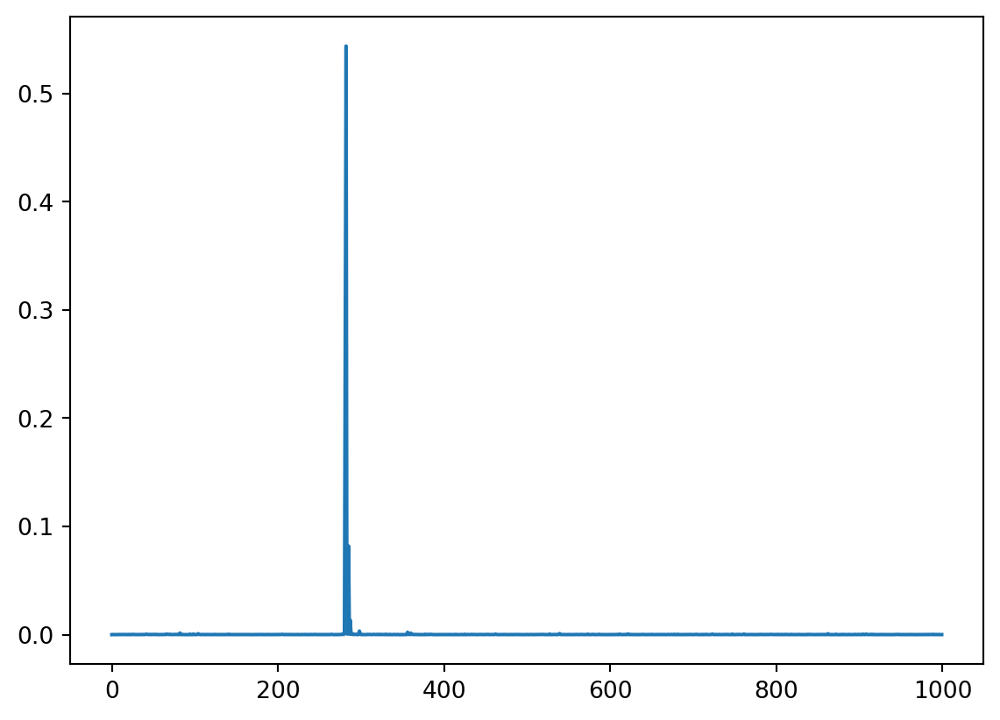
La rete è stata trainata su ImageNet, per cui è molto brava a riconoscere oggetti.
La rete è sicura al 0.5438969 che l’immagine sia l’oggetto 282.
tf.keras.applications.mobilenet_v2.decode_predictions(predictions)[[('n02123159', 'tiger_cat', 0.5438969),
('n02123045', 'tabby', 0.2600932),
('n02124075', 'Egyptian_cat', 0.08183205),
('n02127052', 'lynx', 0.013254042),
('n02137549', 'mongoose', 0.0033205412)]]Un neurone si è preso il 0.54 che l’immagine sia un “tiger_cat”. In alcuni casi serve ulteriore preprocessing dell’immagine, ma in questo caso non è servito.
preprecessed_cat = tf.keras.applications.mobilenet_v2.preprocess_input(
batch_cat
)
preprecessed_cat.shape(1, 224, 224, 3)La shape non cambia.
5.2 Pipeline di predizione
Creiamo una funzione per avere tutta la pipeline insieme.
from tensorflow.keras.applications.mobilenet_v2 import decode_predictions, preprocess_input
def pretrained_prediction(model, filename):
img = load_img(filename, target_size=(224, 224))
plt.imshow(img)
plt.show()
img = np.expand_dims(img,0)
prediction = model.predict(preprocess_input(img))
return decode_predictions(prediction)
pretrained_prediction(trained_model, "/Users/simonebrazzi/R/professionAI_deep-learning-e-reti-neurali-artificiali/4 - Reti Neurali Convoluzionali/images/cat.jpg")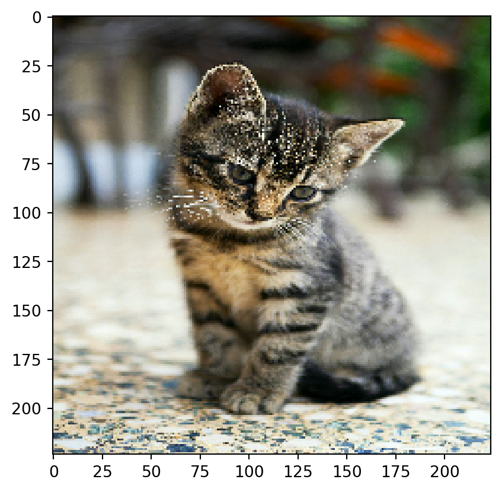
1/1 ━━━━━━━━━━━━━━━━━━━━ 0s 34ms/step1/1 ━━━━━━━━━━━━━━━━━━━━ 0s 35ms/step[[('n02123159', 'tiger_cat', 0.42225984),
('n02123045', 'tabby', 0.37251756),
('n02124075', 'Egyptian_cat', 0.06713867),
('n02127052', 'lynx', 0.009909955),
('n03598930', 'jigsaw_puzzle', 0.002172836)]]pretrained_prediction(trained_model, "/Users/simonebrazzi/R/professionAI_deep-learning-e-reti-neurali-artificiali/4 - Reti Neurali Convoluzionali/images/dog.jpeg")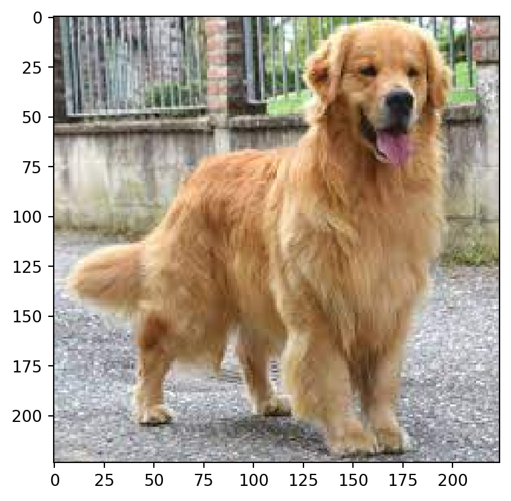
1/1 ━━━━━━━━━━━━━━━━━━━━ 0s 25ms/step1/1 ━━━━━━━━━━━━━━━━━━━━ 0s 25ms/step[[('n02099601', 'golden_retriever', 0.8365318),
('n02112137', 'chow', 0.014650741),
('n02111129', 'Leonberg', 0.007915332),
('n02108551', 'Tibetan_mastiff', 0.007157825),
('n02111277', 'Newfoundland', 0.006078163)]]Il limite di questo modello è su quali immagini è stato addestrato: se tra i 1000 neuroni non c’è l’output, la rete distribuisce il segnale come meglio riesce su altri neuroni di output. Non solo serve un modello pretrainato, ma deve essere stato allenato per una classificazione (in questo caso) specifica per il tipo di task che vogliamo risolvere.
pretrained_prediction(trained_model, "/Users/simonebrazzi/R/professionAI_deep-learning-e-reti-neurali-artificiali/4 - Reti Neurali Convoluzionali/images/ironman.jpeg")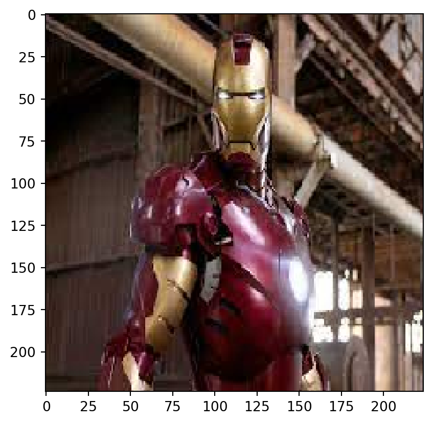
1/1 ━━━━━━━━━━━━━━━━━━━━ 0s 25ms/step1/1 ━━━━━━━━━━━━━━━━━━━━ 0s 25ms/step[[('n03146219', 'cuirass', 0.51901996),
('n02895154', 'breastplate', 0.110765435),
('n04192698', 'shield', 0.032896407),
('n02966193', 'carousel', 0.021488417),
('n04005630', 'prison', 0.01241652)]]6 Addestriamo la nostra CNN
Il training è su un caso semplificato e ridotto, altrimenti sarebbe molto doloroso.
import warnings
warnings.filterwarnings("ignore")
import os
os.environ['TF_CPP_MIN_LOG_LEVEL'] = '3'
import tensorflow as tf
tf.compat.v1.logging.set_verbosity(tf.compat.v1.logging.ERROR)
# Hide GPU from visible devices
# tf.config.set_visible_devices([], 'GPU')
import numpy as np
import pickle
import matplotlib.pyplot as plt
from tensorflow.keras import Sequential
from tensorflow.keras.layers import InputLayer, Input, Conv2D, Dense, Flatten, Dropout, MaxPool2D, BatchNormalization
from tensorflow.keras.models import Model
from tensorflow.keras.backend import clear_sessionCanadian Institute For Advanced Reasearch
cifar10 = tf.keras.datasets.cifar10
(xtrain, ytrain), (xtest, ytest) = cifar10.load_data()
labels = ["airplane", "automobile", "bird", "cat", "deer", "dog", "frog", "horse", "ship", "truck"]
xtrain.shape, ytrain.shape, xtest.shape, ytest.shape((50000, 32, 32, 3), (50000, 1), (10000, 32, 32, 3), (10000, 1))Le immagini sono 32x32x3. Le label sono unidimensionali (vettori colonna). Abbiamo 10 categorie, quelle di labels. Per questo motivo è una rete molto semplice rispetto ImageNet.
Y train ha gli indici delle labels.
ytrain[:10]array([[6],
[9],
[9],
[4],
[1],
[1],
[2],
[7],
[8],
[3]], dtype=uint8)plt.figure(figsize=(2,2))
indx = np.random.choice(range(50000)) # random selection of an img
plt.imshow(xtrain[indx])
plt.title(labels[ytrain[indx][0]]) # uso lables invece di ytrain, siccome ho il decoding
plt.show()
plt.close()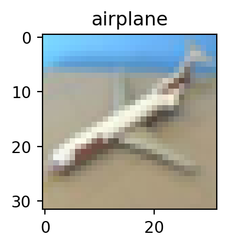
Preprocessing delle immagini Normalizzazione delle features e linearizzazione delle labels.
xtrain, xtest = xtrain/255., xtest/255.
ytrain, ytest = ytrain.flatten(), ytest.flatten()w_init = tf.keras.initializers.RandomNormal(stddev=0.01)
cnn1 = Sequential([
InputLayer(input_shape=(32,32,3)),
Conv2D(filters=96, kernel_size=(3,3), strides=(1,1),
kernel_initializer=w_init, bias_initializer='zeros',activation='relu'),
BatchNormalization(),
MaxPool2D(pool_size=(3,3), strides=(2,2)),
Conv2D(filters=256, kernel_size=(3,3), strides=(1,1), activation='relu',
kernel_initializer=w_init, bias_initializer='ones',padding="same"),
BatchNormalization(),
MaxPool2D(pool_size=(3,3), strides=(2,2)),
Conv2D(filters=384, kernel_size=(3,3), strides=(1,1), activation='relu',
kernel_initializer=w_init, bias_initializer='zeros',padding="same"),
Conv2D(filters=384, kernel_size=(3,3), strides=(1,1), activation='relu',
kernel_initializer=w_init, bias_initializer='ones',padding="same"),
Conv2D(filters=256, kernel_size=(3,3), strides=(1,1), activation='relu',
kernel_initializer=w_init, bias_initializer='ones',padding="same"),
MaxPool2D(pool_size=(3,3), strides=(2,2)),
Flatten(),
Dense(4096, kernel_initializer=w_init, bias_initializer='ones', activation='relu'),
Dropout(0.5),
Dense(4096, kernel_initializer=w_init, bias_initializer='ones', activation='relu'),
Dropout(0.5),
Dense(10, kernel_initializer=w_init, bias_initializer='zeros', activation='softmax')
])cnn1.compile(
optimizer="adam",
loss="sparse_categorical_crossentropy",
metrics=["accuracy"]
)hist1 = cnn1.fit(
xtrain,
ytrain,
validation_data=(xtest, ytest),
epochs=5 # partiamo bassi per vedere se sta apprendendo
)Epoch 1/5
1/1563 ━━━━━━━━━━━━━━━━━━━━ 2:17:05 5s/step - accuracy: 0.2188 - loss: 2.8169 2/1563 ━━━━━━━━━━━━━━━━━━━━ 3:35 138ms/step - accuracy: 0.1797 - loss: 12.6094 3/1563 ━━━━━━━━━━━━━━━━━━━━ 2:32 98ms/step - accuracy: 0.1649 - loss: 16.3397 4/1563 ━━━━━━━━━━━━━━━━━━━━ 2:07 82ms/step - accuracy: 0.1628 - loss: 17.9630 5/1563 ━━━━━━━━━━━━━━━━━━━━ 1:55 74ms/step - accuracy: 0.1652 - loss: 18.8330 6/1563 ━━━━━━━━━━━━━━━━━━━━ 1:49 70ms/step - accuracy: 0.1637 - loss: 19.0887 8/1563 ━━━━━━━━━━━━━━━━━━━━ 1:38 64ms/step - accuracy: 0.1618 - loss: 18.7674 10/1563 ━━━━━━━━━━━━━━━━━━━━ 1:33 60ms/step - accuracy: 0.1601 - loss: 18.0115 11/1563 ━━━━━━━━━━━━━━━━━━━━ 1:31 59ms/step - accuracy: 0.1592 - loss: 17.5915 13/1563 ━━━━━━━━━━━━━━━━━━━━ 1:28 57ms/step - accuracy: 0.1571 - loss: 16.7662 15/1563 ━━━━━━━━━━━━━━━━━━━━ 1:26 56ms/step - accuracy: 0.1544 - loss: 15.9911 17/1563 ━━━━━━━━━━━━━━━━━━━━ 1:24 55ms/step - accuracy: 0.1521 - loss: 15.2859 19/1563 ━━━━━━━━━━━━━━━━━━━━ 1:23 54ms/step - accuracy: 0.1501 - loss: 14.6462 21/1563 ━━━━━━━━━━━━━━━━━━━━ 1:22 53ms/step - accuracy: 0.1477 - loss: 14.0684 22/1563 ━━━━━━━━━━━━━━━━━━━━ 1:21 53ms/step - accuracy: 0.1465 - loss: 13.8010 24/1563 ━━━━━━━━━━━━━━━━━━━━ 1:20 53ms/step - accuracy: 0.1446 - loss: 13.3044 26/1563 ━━━━━━━━━━━━━━━━━━━━ 1:20 52ms/step - accuracy: 0.1430 - loss: 12.8521 28/1563 ━━━━━━━━━━━━━━━━━━━━ 1:19 52ms/step - accuracy: 0.1417 - loss: 12.4382 30/1563 ━━━━━━━━━━━━━━━━━━━━ 1:18 51ms/step - accuracy: 0.1404 - loss: 12.0594 32/1563 ━━━━━━━━━━━━━━━━━━━━ 1:17 51ms/step - accuracy: 0.1394 - loss: 11.7107 34/1563 ━━━━━━━━━━━━━━━━━━━━ 1:17 51ms/step - accuracy: 0.1387 - loss: 11.3892 36/1563 ━━━━━━━━━━━━━━━━━━━━ 1:16 50ms/step - accuracy: 0.1381 - loss: 11.0920 38/1563 ━━━━━━━━━━━━━━━━━━━━ 1:16 50ms/step - accuracy: 0.1375 - loss: 10.8167 40/1563 ━━━━━━━━━━━━━━━━━━━━ 1:15 50ms/step - accuracy: 0.1370 - loss: 10.5604 42/1563 ━━━━━━━━━━━━━━━━━━━━ 1:15 50ms/step - accuracy: 0.1366 - loss: 10.3212 44/1563 ━━━━━━━━━━━━━━━━━━━━ 1:15 50ms/step - accuracy: 0.1363 - loss: 10.0974 46/1563 ━━━━━━━━━━━━━━━━━━━━ 1:15 49ms/step - accuracy: 0.1361 - loss: 9.8875 48/1563 ━━━━━━━━━━━━━━━━━━━━ 1:14 49ms/step - accuracy: 0.1360 - loss: 9.6903 50/1563 ━━━━━━━━━━━━━━━━━━━━ 1:14 49ms/step - accuracy: 0.1358 - loss: 9.5044 52/1563 ━━━━━━━━━━━━━━━━━━━━ 1:14 49ms/step - accuracy: 0.1357 - loss: 9.3293 54/1563 ━━━━━━━━━━━━━━━━━━━━ 1:13 49ms/step - accuracy: 0.1357 - loss: 9.1639 56/1563 ━━━━━━━━━━━━━━━━━━━━ 1:13 49ms/step - accuracy: 0.1357 - loss: 9.0072 58/1563 ━━━━━━━━━━━━━━━━━━━━ 1:13 49ms/step - accuracy: 0.1357 - loss: 8.8585 60/1563 ━━━━━━━━━━━━━━━━━━━━ 1:13 49ms/step - accuracy: 0.1357 - loss: 8.7171 62/1563 ━━━━━━━━━━━━━━━━━━━━ 1:13 49ms/step - accuracy: 0.1358 - loss: 8.5825 64/1563 ━━━━━━━━━━━━━━━━━━━━ 1:12 49ms/step - accuracy: 0.1359 - loss: 8.4540 66/1563 ━━━━━━━━━━━━━━━━━━━━ 1:12 48ms/step - accuracy: 0.1361 - loss: 8.3313 68/1563 ━━━━━━━━━━━━━━━━━━━━ 1:12 48ms/step - accuracy: 0.1363 - loss: 8.2140 70/1563 ━━━━━━━━━━━━━━━━━━━━ 1:12 48ms/step - accuracy: 0.1364 - loss: 8.1016 72/1563 ━━━━━━━━━━━━━━━━━━━━ 1:11 48ms/step - accuracy: 0.1366 - loss: 7.9939 74/1563 ━━━━━━━━━━━━━━━━━━━━ 1:11 48ms/step - accuracy: 0.1369 - loss: 7.8908 76/1563 ━━━━━━━━━━━━━━━━━━━━ 1:11 48ms/step - accuracy: 0.1371 - loss: 7.7919 78/1563 ━━━━━━━━━━━━━━━━━━━━ 1:11 48ms/step - accuracy: 0.1373 - loss: 7.6971 80/1563 ━━━━━━━━━━━━━━━━━━━━ 1:11 48ms/step - accuracy: 0.1375 - loss: 7.6059 82/1563 ━━━━━━━━━━━━━━━━━━━━ 1:11 48ms/step - accuracy: 0.1377 - loss: 7.5183 84/1563 ━━━━━━━━━━━━━━━━━━━━ 1:10 48ms/step - accuracy: 0.1379 - loss: 7.4341 86/1563 ━━━━━━━━━━━━━━━━━━━━ 1:10 48ms/step - accuracy: 0.1381 - loss: 7.3530 88/1563 ━━━━━━━━━━━━━━━━━━━━ 1:10 48ms/step - accuracy: 0.1383 - loss: 7.2748 90/1563 ━━━━━━━━━━━━━━━━━━━━ 1:10 48ms/step - accuracy: 0.1384 - loss: 7.1993 92/1563 ━━━━━━━━━━━━━━━━━━━━ 1:10 48ms/step - accuracy: 0.1387 - loss: 7.1261 94/1563 ━━━━━━━━━━━━━━━━━━━━ 1:10 48ms/step - accuracy: 0.1389 - loss: 7.0554 96/1563 ━━━━━━━━━━━━━━━━━━━━ 1:10 48ms/step - accuracy: 0.1391 - loss: 6.9869 98/1563 ━━━━━━━━━━━━━━━━━━━━ 1:09 48ms/step - accuracy: 0.1394 - loss: 6.9206 100/1563 ━━━━━━━━━━━━━━━━━━━━ 1:09 48ms/step - accuracy: 0.1396 - loss: 6.8564 102/1563 ━━━━━━━━━━━━━━━━━━━━ 1:09 48ms/step - accuracy: 0.1398 - loss: 6.7941 104/1563 ━━━━━━━━━━━━━━━━━━━━ 1:09 48ms/step - accuracy: 0.1400 - loss: 6.7337 106/1563 ━━━━━━━━━━━━━━━━━━━━ 1:09 48ms/step - accuracy: 0.1402 - loss: 6.6750 108/1563 ━━━━━━━━━━━━━━━━━━━━ 1:09 48ms/step - accuracy: 0.1405 - loss: 6.6181 110/1563 ━━━━━━━━━━━━━━━━━━━━ 1:09 48ms/step - accuracy: 0.1407 - loss: 6.5628 112/1563 ━━━━━━━━━━━━━━━━━━━━ 1:09 48ms/step - accuracy: 0.1409 - loss: 6.5090 114/1563 ━━━━━━━━━━━━━━━━━━━━ 1:08 48ms/step - accuracy: 0.1411 - loss: 6.4567 116/1563 ━━━━━━━━━━━━━━━━━━━━ 1:08 48ms/step - accuracy: 0.1414 - loss: 6.4058 118/1563 ━━━━━━━━━━━━━━━━━━━━ 1:08 48ms/step - accuracy: 0.1416 - loss: 6.3562 120/1563 ━━━━━━━━━━━━━━━━━━━━ 1:08 47ms/step - accuracy: 0.1418 - loss: 6.3080 122/1563 ━━━━━━━━━━━━━━━━━━━━ 1:08 47ms/step - accuracy: 0.1420 - loss: 6.2610 124/1563 ━━━━━━━━━━━━━━━━━━━━ 1:08 47ms/step - accuracy: 0.1422 - loss: 6.2151 126/1563 ━━━━━━━━━━━━━━━━━━━━ 1:08 47ms/step - accuracy: 0.1424 - loss: 6.1705 128/1563 ━━━━━━━━━━━━━━━━━━━━ 1:07 47ms/step - accuracy: 0.1426 - loss: 6.1269 130/1563 ━━━━━━━━━━━━━━━━━━━━ 1:07 47ms/step - accuracy: 0.1428 - loss: 6.0843 132/1563 ━━━━━━━━━━━━━━━━━━━━ 1:07 47ms/step - accuracy: 0.1430 - loss: 6.0429 134/1563 ━━━━━━━━━━━━━━━━━━━━ 1:07 47ms/step - accuracy: 0.1433 - loss: 6.0023 136/1563 ━━━━━━━━━━━━━━━━━━━━ 1:07 47ms/step - accuracy: 0.1435 - loss: 5.9627 138/1563 ━━━━━━━━━━━━━━━━━━━━ 1:07 47ms/step - accuracy: 0.1437 - loss: 5.9240 140/1563 ━━━━━━━━━━━━━━━━━━━━ 1:07 47ms/step - accuracy: 0.1440 - loss: 5.8862 142/1563 ━━━━━━━━━━━━━━━━━━━━ 1:07 47ms/step - accuracy: 0.1442 - loss: 5.8492 144/1563 ━━━━━━━━━━━━━━━━━━━━ 1:06 47ms/step - accuracy: 0.1444 - loss: 5.8131 146/1563 ━━━━━━━━━━━━━━━━━━━━ 1:06 47ms/step - accuracy: 0.1447 - loss: 5.7777 148/1563 ━━━━━━━━━━━━━━━━━━━━ 1:06 47ms/step - accuracy: 0.1449 - loss: 5.7430 150/1563 ━━━━━━━━━━━━━━━━━━━━ 1:06 47ms/step - accuracy: 0.1451 - loss: 5.7090 152/1563 ━━━━━━━━━━━━━━━━━━━━ 1:06 47ms/step - accuracy: 0.1453 - loss: 5.6758 154/1563 ━━━━━━━━━━━━━━━━━━━━ 1:06 47ms/step - accuracy: 0.1456 - loss: 5.6432 156/1563 ━━━━━━━━━━━━━━━━━━━━ 1:06 47ms/step - accuracy: 0.1458 - loss: 5.6113 158/1563 ━━━━━━━━━━━━━━━━━━━━ 1:06 47ms/step - accuracy: 0.1460 - loss: 5.5801 160/1563 ━━━━━━━━━━━━━━━━━━━━ 1:06 47ms/step - accuracy: 0.1462 - loss: 5.5494 162/1563 ━━━━━━━━━━━━━━━━━━━━ 1:05 47ms/step - accuracy: 0.1465 - loss: 5.5194 164/1563 ━━━━━━━━━━━━━━━━━━━━ 1:05 47ms/step - accuracy: 0.1467 - loss: 5.4899 166/1563 ━━━━━━━━━━━━━━━━━━━━ 1:05 47ms/step - accuracy: 0.1469 - loss: 5.4610 168/1563 ━━━━━━━━━━━━━━━━━━━━ 1:05 47ms/step - accuracy: 0.1472 - loss: 5.4327 170/1563 ━━━━━━━━━━━━━━━━━━━━ 1:05 47ms/step - accuracy: 0.1474 - loss: 5.4048 172/1563 ━━━━━━━━━━━━━━━━━━━━ 1:05 47ms/step - accuracy: 0.1476 - loss: 5.3775 174/1563 ━━━━━━━━━━━━━━━━━━━━ 1:05 47ms/step - accuracy: 0.1478 - loss: 5.3507 176/1563 ━━━━━━━━━━━━━━━━━━━━ 1:05 47ms/step - accuracy: 0.1481 - loss: 5.3244 178/1563 ━━━━━━━━━━━━━━━━━━━━ 1:05 47ms/step - accuracy: 0.1483 - loss: 5.2985 180/1563 ━━━━━━━━━━━━━━━━━━━━ 1:05 47ms/step - accuracy: 0.1485 - loss: 5.2732 182/1563 ━━━━━━━━━━━━━━━━━━━━ 1:04 47ms/step - accuracy: 0.1487 - loss: 5.2483 184/1563 ━━━━━━━━━━━━━━━━━━━━ 1:04 47ms/step - accuracy: 0.1490 - loss: 5.2238 186/1563 ━━━━━━━━━━━━━━━━━━━━ 1:04 47ms/step - accuracy: 0.1492 - loss: 5.1997 188/1563 ━━━━━━━━━━━━━━━━━━━━ 1:04 47ms/step - accuracy: 0.1495 - loss: 5.1760 190/1563 ━━━━━━━━━━━━━━━━━━━━ 1:04 47ms/step - accuracy: 0.1497 - loss: 5.1528 192/1563 ━━━━━━━━━━━━━━━━━━━━ 1:04 47ms/step - accuracy: 0.1500 - loss: 5.1298 194/1563 ━━━━━━━━━━━━━━━━━━━━ 1:04 47ms/step - accuracy: 0.1502 - loss: 5.1073 196/1563 ━━━━━━━━━━━━━━━━━━━━ 1:04 47ms/step - accuracy: 0.1505 - loss: 5.0851 198/1563 ━━━━━━━━━━━━━━━━━━━━ 1:04 47ms/step - accuracy: 0.1508 - loss: 5.0633 200/1563 ━━━━━━━━━━━━━━━━━━━━ 1:03 47ms/step - accuracy: 0.1510 - loss: 5.0418 202/1563 ━━━━━━━━━━━━━━━━━━━━ 1:03 47ms/step - accuracy: 0.1513 - loss: 5.0206 204/1563 ━━━━━━━━━━━━━━━━━━━━ 1:03 47ms/step - accuracy: 0.1516 - loss: 4.9998 206/1563 ━━━━━━━━━━━━━━━━━━━━ 1:03 47ms/step - accuracy: 0.1518 - loss: 4.9793 208/1563 ━━━━━━━━━━━━━━━━━━━━ 1:03 47ms/step - accuracy: 0.1521 - loss: 4.9591 210/1563 ━━━━━━━━━━━━━━━━━━━━ 1:03 47ms/step - accuracy: 0.1524 - loss: 4.9392 212/1563 ━━━━━━━━━━━━━━━━━━━━ 1:03 47ms/step - accuracy: 0.1526 - loss: 4.9195 214/1563 ━━━━━━━━━━━━━━━━━━━━ 1:03 47ms/step - accuracy: 0.1529 - loss: 4.9002 216/1563 ━━━━━━━━━━━━━━━━━━━━ 1:03 47ms/step - accuracy: 0.1531 - loss: 4.8812 218/1563 ━━━━━━━━━━━━━━━━━━━━ 1:03 47ms/step - accuracy: 0.1534 - loss: 4.8625 220/1563 ━━━━━━━━━━━━━━━━━━━━ 1:02 47ms/step - accuracy: 0.1537 - loss: 4.8441 222/1563 ━━━━━━━━━━━━━━━━━━━━ 1:02 47ms/step - accuracy: 0.1539 - loss: 4.8259 224/1563 ━━━━━━━━━━━━━━━━━━━━ 1:02 47ms/step - accuracy: 0.1542 - loss: 4.8080 226/1563 ━━━━━━━━━━━━━━━━━━━━ 1:02 47ms/step - accuracy: 0.1544 - loss: 4.7903 228/1563 ━━━━━━━━━━━━━━━━━━━━ 1:02 47ms/step - accuracy: 0.1547 - loss: 4.7729 230/1563 ━━━━━━━━━━━━━━━━━━━━ 1:02 47ms/step - accuracy: 0.1549 - loss: 4.7557 232/1563 ━━━━━━━━━━━━━━━━━━━━ 1:02 47ms/step - accuracy: 0.1552 - loss: 4.7387 234/1563 ━━━━━━━━━━━━━━━━━━━━ 1:02 47ms/step - accuracy: 0.1554 - loss: 4.7220 236/1563 ━━━━━━━━━━━━━━━━━━━━ 1:02 47ms/step - accuracy: 0.1557 - loss: 4.7055 238/1563 ━━━━━━━━━━━━━━━━━━━━ 1:02 47ms/step - accuracy: 0.1560 - loss: 4.6892 240/1563 ━━━━━━━━━━━━━━━━━━━━ 1:01 47ms/step - accuracy: 0.1562 - loss: 4.6732 242/1563 ━━━━━━━━━━━━━━━━━━━━ 1:01 47ms/step - accuracy: 0.1565 - loss: 4.6573 244/1563 ━━━━━━━━━━━━━━━━━━━━ 1:01 47ms/step - accuracy: 0.1567 - loss: 4.6417 246/1563 ━━━━━━━━━━━━━━━━━━━━ 1:01 47ms/step - accuracy: 0.1570 - loss: 4.6262 248/1563 ━━━━━━━━━━━━━━━━━━━━ 1:01 47ms/step - accuracy: 0.1573 - loss: 4.6110 250/1563 ━━━━━━━━━━━━━━━━━━━━ 1:01 47ms/step - accuracy: 0.1575 - loss: 4.5959 252/1563 ━━━━━━━━━━━━━━━━━━━━ 1:01 47ms/step - accuracy: 0.1578 - loss: 4.5810 254/1563 ━━━━━━━━━━━━━━━━━━━━ 1:01 47ms/step - accuracy: 0.1581 - loss: 4.5663 256/1563 ━━━━━━━━━━━━━━━━━━━━ 1:01 47ms/step - accuracy: 0.1584 - loss: 4.5518 258/1563 ━━━━━━━━━━━━━━━━━━━━ 1:00 47ms/step - accuracy: 0.1586 - loss: 4.5375 260/1563 ━━━━━━━━━━━━━━━━━━━━ 1:00 47ms/step - accuracy: 0.1589 - loss: 4.5233 262/1563 ━━━━━━━━━━━━━━━━━━━━ 1:00 47ms/step - accuracy: 0.1592 - loss: 4.5093 264/1563 ━━━━━━━━━━━━━━━━━━━━ 1:00 47ms/step - accuracy: 0.1595 - loss: 4.4955 266/1563 ━━━━━━━━━━━━━━━━━━━━ 1:00 47ms/step - accuracy: 0.1597 - loss: 4.4818 268/1563 ━━━━━━━━━━━━━━━━━━━━ 1:00 47ms/step - accuracy: 0.1600 - loss: 4.4683 270/1563 ━━━━━━━━━━━━━━━━━━━━ 1:00 47ms/step - accuracy: 0.1603 - loss: 4.4549 272/1563 ━━━━━━━━━━━━━━━━━━━━ 1:00 47ms/step - accuracy: 0.1606 - loss: 4.4417 274/1563 ━━━━━━━━━━━━━━━━━━━━ 1:00 47ms/step - accuracy: 0.1609 - loss: 4.4286 276/1563 ━━━━━━━━━━━━━━━━━━━━ 1:00 47ms/step - accuracy: 0.1612 - loss: 4.4157 278/1563 ━━━━━━━━━━━━━━━━━━━━ 59s 47ms/step - accuracy: 0.1615 - loss: 4.4030 280/1563 ━━━━━━━━━━━━━━━━━━━━ 59s 47ms/step - accuracy: 0.1617 - loss: 4.3904 282/1563 ━━━━━━━━━━━━━━━━━━━━ 59s 47ms/step - accuracy: 0.1620 - loss: 4.3779 284/1563 ━━━━━━━━━━━━━━━━━━━━ 59s 47ms/step - accuracy: 0.1623 - loss: 4.3656 286/1563 ━━━━━━━━━━━━━━━━━━━━ 59s 47ms/step - accuracy: 0.1626 - loss: 4.3534 288/1563 ━━━━━━━━━━━━━━━━━━━━ 59s 47ms/step - accuracy: 0.1629 - loss: 4.3414 290/1563 ━━━━━━━━━━━━━━━━━━━━ 59s 47ms/step - accuracy: 0.1632 - loss: 4.3295 292/1563 ━━━━━━━━━━━━━━━━━━━━ 59s 47ms/step - accuracy: 0.1635 - loss: 4.3177 294/1563 ━━━━━━━━━━━━━━━━━━━━ 59s 47ms/step - accuracy: 0.1637 - loss: 4.3060 296/1563 ━━━━━━━━━━━━━━━━━━━━ 59s 47ms/step - accuracy: 0.1640 - loss: 4.2945 298/1563 ━━━━━━━━━━━━━━━━━━━━ 59s 47ms/step - accuracy: 0.1643 - loss: 4.2831 300/1563 ━━━━━━━━━━━━━━━━━━━━ 58s 47ms/step - accuracy: 0.1646 - loss: 4.2719 302/1563 ━━━━━━━━━━━━━━━━━━━━ 58s 47ms/step - accuracy: 0.1649 - loss: 4.2607 304/1563 ━━━━━━━━━━━━━━━━━━━━ 58s 47ms/step - accuracy: 0.1651 - loss: 4.2497 306/1563 ━━━━━━━━━━━━━━━━━━━━ 58s 47ms/step - accuracy: 0.1654 - loss: 4.2387 308/1563 ━━━━━━━━━━━━━━━━━━━━ 58s 47ms/step - accuracy: 0.1657 - loss: 4.2279 310/1563 ━━━━━━━━━━━━━━━━━━━━ 58s 47ms/step - accuracy: 0.1660 - loss: 4.2172 312/1563 ━━━━━━━━━━━━━━━━━━━━ 58s 47ms/step - accuracy: 0.1663 - loss: 4.2066 314/1563 ━━━━━━━━━━━━━━━━━━━━ 58s 47ms/step - accuracy: 0.1666 - loss: 4.1961 316/1563 ━━━━━━━━━━━━━━━━━━━━ 58s 47ms/step - accuracy: 0.1668 - loss: 4.1857 318/1563 ━━━━━━━━━━━━━━━━━━━━ 58s 47ms/step - accuracy: 0.1671 - loss: 4.1754 320/1563 ━━━━━━━━━━━━━━━━━━━━ 57s 47ms/step - accuracy: 0.1674 - loss: 4.1652 322/1563 ━━━━━━━━━━━━━━━━━━━━ 57s 47ms/step - accuracy: 0.1677 - loss: 4.1552 324/1563 ━━━━━━━━━━━━━━━━━━━━ 57s 47ms/step - accuracy: 0.1680 - loss: 4.1452 326/1563 ━━━━━━━━━━━━━━━━━━━━ 57s 47ms/step - accuracy: 0.1683 - loss: 4.1353 328/1563 ━━━━━━━━━━━━━━━━━━━━ 57s 47ms/step - accuracy: 0.1685 - loss: 4.1255 330/1563 ━━━━━━━━━━━━━━━━━━━━ 57s 47ms/step - accuracy: 0.1688 - loss: 4.1158 332/1563 ━━━━━━━━━━━━━━━━━━━━ 57s 47ms/step - accuracy: 0.1691 - loss: 4.1062 334/1563 ━━━━━━━━━━━━━━━━━━━━ 57s 47ms/step - accuracy: 0.1694 - loss: 4.0966 336/1563 ━━━━━━━━━━━━━━━━━━━━ 57s 47ms/step - accuracy: 0.1697 - loss: 4.0872 338/1563 ━━━━━━━━━━━━━━━━━━━━ 57s 47ms/step - accuracy: 0.1699 - loss: 4.0779 340/1563 ━━━━━━━━━━━━━━━━━━━━ 56s 47ms/step - accuracy: 0.1702 - loss: 4.0686 342/1563 ━━━━━━━━━━━━━━━━━━━━ 56s 47ms/step - accuracy: 0.1705 - loss: 4.0594 344/1563 ━━━━━━━━━━━━━━━━━━━━ 56s 47ms/step - accuracy: 0.1708 - loss: 4.0504 346/1563 ━━━━━━━━━━━━━━━━━━━━ 56s 47ms/step - accuracy: 0.1710 - loss: 4.0414 348/1563 ━━━━━━━━━━━━━━━━━━━━ 56s 47ms/step - accuracy: 0.1713 - loss: 4.0324 350/1563 ━━━━━━━━━━━━━━━━━━━━ 56s 47ms/step - accuracy: 0.1716 - loss: 4.0236 352/1563 ━━━━━━━━━━━━━━━━━━━━ 56s 47ms/step - accuracy: 0.1719 - loss: 4.0148 354/1563 ━━━━━━━━━━━━━━━━━━━━ 56s 47ms/step - accuracy: 0.1722 - loss: 4.0062 356/1563 ━━━━━━━━━━━━━━━━━━━━ 56s 47ms/step - accuracy: 0.1725 - loss: 3.9976 358/1563 ━━━━━━━━━━━━━━━━━━━━ 56s 47ms/step - accuracy: 0.1727 - loss: 3.9890 360/1563 ━━━━━━━━━━━━━━━━━━━━ 56s 47ms/step - accuracy: 0.1730 - loss: 3.9806 362/1563 ━━━━━━━━━━━━━━━━━━━━ 55s 47ms/step - accuracy: 0.1733 - loss: 3.9722 364/1563 ━━━━━━━━━━━━━━━━━━━━ 55s 47ms/step - accuracy: 0.1736 - loss: 3.9639 366/1563 ━━━━━━━━━━━━━━━━━━━━ 55s 47ms/step - accuracy: 0.1739 - loss: 3.9557 368/1563 ━━━━━━━━━━━━━━━━━━━━ 55s 47ms/step - accuracy: 0.1741 - loss: 3.9475 370/1563 ━━━━━━━━━━━━━━━━━━━━ 55s 47ms/step - accuracy: 0.1744 - loss: 3.9394 372/1563 ━━━━━━━━━━━━━━━━━━━━ 55s 47ms/step - accuracy: 0.1747 - loss: 3.9314 374/1563 ━━━━━━━━━━━━━━━━━━━━ 55s 47ms/step - accuracy: 0.1750 - loss: 3.9235 376/1563 ━━━━━━━━━━━━━━━━━━━━ 55s 47ms/step - accuracy: 0.1752 - loss: 3.9156 378/1563 ━━━━━━━━━━━━━━━━━━━━ 55s 47ms/step - accuracy: 0.1755 - loss: 3.9078 380/1563 ━━━━━━━━━━━━━━━━━━━━ 55s 47ms/step - accuracy: 0.1758 - loss: 3.9001 382/1563 ━━━━━━━━━━━━━━━━━━━━ 54s 47ms/step - accuracy: 0.1760 - loss: 3.8924 384/1563 ━━━━━━━━━━━━━━━━━━━━ 54s 47ms/step - accuracy: 0.1763 - loss: 3.8848 386/1563 ━━━━━━━━━━━━━━━━━━━━ 54s 47ms/step - accuracy: 0.1766 - loss: 3.8773 388/1563 ━━━━━━━━━━━━━━━━━━━━ 54s 47ms/step - accuracy: 0.1769 - loss: 3.8698 390/1563 ━━━━━━━━━━━━━━━━━━━━ 54s 47ms/step - accuracy: 0.1771 - loss: 3.8624 392/1563 ━━━━━━━━━━━━━━━━━━━━ 54s 47ms/step - accuracy: 0.1774 - loss: 3.8550 394/1563 ━━━━━━━━━━━━━━━━━━━━ 54s 47ms/step - accuracy: 0.1776 - loss: 3.8477 396/1563 ━━━━━━━━━━━━━━━━━━━━ 54s 47ms/step - accuracy: 0.1779 - loss: 3.8405 398/1563 ━━━━━━━━━━━━━━━━━━━━ 54s 47ms/step - accuracy: 0.1782 - loss: 3.8333 400/1563 ━━━━━━━━━━━━━━━━━━━━ 54s 47ms/step - accuracy: 0.1784 - loss: 3.8262 402/1563 ━━━━━━━━━━━━━━━━━━━━ 54s 47ms/step - accuracy: 0.1787 - loss: 3.8192 404/1563 ━━━━━━━━━━━━━━━━━━━━ 53s 47ms/step - accuracy: 0.1789 - loss: 3.8122 406/1563 ━━━━━━━━━━━━━━━━━━━━ 53s 47ms/step - accuracy: 0.1792 - loss: 3.8053 408/1563 ━━━━━━━━━━━━━━━━━━━━ 53s 47ms/step - accuracy: 0.1794 - loss: 3.7984 410/1563 ━━━━━━━━━━━━━━━━━━━━ 53s 47ms/step - accuracy: 0.1797 - loss: 3.7916 412/1563 ━━━━━━━━━━━━━━━━━━━━ 53s 47ms/step - accuracy: 0.1799 - loss: 3.7848 414/1563 ━━━━━━━━━━━━━━━━━━━━ 53s 47ms/step - accuracy: 0.1802 - loss: 3.7781 416/1563 ━━━━━━━━━━━━━━━━━━━━ 53s 47ms/step - accuracy: 0.1804 - loss: 3.7714 418/1563 ━━━━━━━━━━━━━━━━━━━━ 53s 47ms/step - accuracy: 0.1806 - loss: 3.7648 420/1563 ━━━━━━━━━━━━━━━━━━━━ 53s 47ms/step - accuracy: 0.1809 - loss: 3.7582 422/1563 ━━━━━━━━━━━━━━━━━━━━ 53s 47ms/step - accuracy: 0.1811 - loss: 3.7517 424/1563 ━━━━━━━━━━━━━━━━━━━━ 53s 47ms/step - accuracy: 0.1814 - loss: 3.7453 426/1563 ━━━━━━━━━━━━━━━━━━━━ 52s 47ms/step - accuracy: 0.1816 - loss: 3.7388 428/1563 ━━━━━━━━━━━━━━━━━━━━ 52s 47ms/step - accuracy: 0.1819 - loss: 3.7325 430/1563 ━━━━━━━━━━━━━━━━━━━━ 52s 47ms/step - accuracy: 0.1821 - loss: 3.7262 432/1563 ━━━━━━━━━━━━━━━━━━━━ 52s 47ms/step - accuracy: 0.1823 - loss: 3.7199 434/1563 ━━━━━━━━━━━━━━━━━━━━ 52s 47ms/step - accuracy: 0.1826 - loss: 3.7137 436/1563 ━━━━━━━━━━━━━━━━━━━━ 52s 47ms/step - accuracy: 0.1828 - loss: 3.7075 438/1563 ━━━━━━━━━━━━━━━━━━━━ 52s 47ms/step - accuracy: 0.1831 - loss: 3.7014 440/1563 ━━━━━━━━━━━━━━━━━━━━ 52s 47ms/step - accuracy: 0.1833 - loss: 3.6953 442/1563 ━━━━━━━━━━━━━━━━━━━━ 52s 47ms/step - accuracy: 0.1835 - loss: 3.6892 444/1563 ━━━━━━━━━━━━━━━━━━━━ 52s 47ms/step - accuracy: 0.1838 - loss: 3.6832 446/1563 ━━━━━━━━━━━━━━━━━━━━ 51s 47ms/step - accuracy: 0.1840 - loss: 3.6773 448/1563 ━━━━━━━━━━━━━━━━━━━━ 51s 47ms/step - accuracy: 0.1842 - loss: 3.6714 450/1563 ━━━━━━━━━━━━━━━━━━━━ 51s 47ms/step - accuracy: 0.1845 - loss: 3.6655 452/1563 ━━━━━━━━━━━━━━━━━━━━ 51s 47ms/step - accuracy: 0.1847 - loss: 3.6597 454/1563 ━━━━━━━━━━━━━━━━━━━━ 51s 47ms/step - accuracy: 0.1850 - loss: 3.6539 456/1563 ━━━━━━━━━━━━━━━━━━━━ 51s 47ms/step - accuracy: 0.1852 - loss: 3.6482 458/1563 ━━━━━━━━━━━━━━━━━━━━ 51s 47ms/step - accuracy: 0.1854 - loss: 3.6425 460/1563 ━━━━━━━━━━━━━━━━━━━━ 51s 47ms/step - accuracy: 0.1857 - loss: 3.6368 462/1563 ━━━━━━━━━━━━━━━━━━━━ 51s 47ms/step - accuracy: 0.1859 - loss: 3.6312 464/1563 ━━━━━━━━━━━━━━━━━━━━ 51s 47ms/step - accuracy: 0.1861 - loss: 3.6256 466/1563 ━━━━━━━━━━━━━━━━━━━━ 51s 47ms/step - accuracy: 0.1864 - loss: 3.6201 468/1563 ━━━━━━━━━━━━━━━━━━━━ 50s 47ms/step - accuracy: 0.1866 - loss: 3.6146 470/1563 ━━━━━━━━━━━━━━━━━━━━ 50s 47ms/step - accuracy: 0.1868 - loss: 3.6091 472/1563 ━━━━━━━━━━━━━━━━━━━━ 50s 46ms/step - accuracy: 0.1870 - loss: 3.6037 474/1563 ━━━━━━━━━━━━━━━━━━━━ 50s 46ms/step - accuracy: 0.1873 - loss: 3.5983 476/1563 ━━━━━━━━━━━━━━━━━━━━ 50s 46ms/step - accuracy: 0.1875 - loss: 3.5929 478/1563 ━━━━━━━━━━━━━━━━━━━━ 50s 46ms/step - accuracy: 0.1877 - loss: 3.5876 480/1563 ━━━━━━━━━━━━━━━━━━━━ 50s 46ms/step - accuracy: 0.1880 - loss: 3.5823 482/1563 ━━━━━━━━━━━━━━━━━━━━ 50s 46ms/step - accuracy: 0.1882 - loss: 3.5771 484/1563 ━━━━━━━━━━━━━━━━━━━━ 50s 46ms/step - accuracy: 0.1884 - loss: 3.5719 486/1563 ━━━━━━━━━━━━━━━━━━━━ 50s 46ms/step - accuracy: 0.1886 - loss: 3.5667 488/1563 ━━━━━━━━━━━━━━━━━━━━ 49s 46ms/step - accuracy: 0.1889 - loss: 3.5615 490/1563 ━━━━━━━━━━━━━━━━━━━━ 49s 46ms/step - accuracy: 0.1891 - loss: 3.5564 492/1563 ━━━━━━━━━━━━━━━━━━━━ 49s 46ms/step - accuracy: 0.1893 - loss: 3.5513 494/1563 ━━━━━━━━━━━━━━━━━━━━ 49s 46ms/step - accuracy: 0.1895 - loss: 3.5463 496/1563 ━━━━━━━━━━━━━━━━━━━━ 49s 46ms/step - accuracy: 0.1898 - loss: 3.5413 498/1563 ━━━━━━━━━━━━━━━━━━━━ 49s 46ms/step - accuracy: 0.1900 - loss: 3.5363 500/1563 ━━━━━━━━━━━━━━━━━━━━ 49s 46ms/step - accuracy: 0.1902 - loss: 3.5313 502/1563 ━━━━━━━━━━━━━━━━━━━━ 49s 46ms/step - accuracy: 0.1904 - loss: 3.5264 504/1563 ━━━━━━━━━━━━━━━━━━━━ 49s 46ms/step - accuracy: 0.1907 - loss: 3.5215 506/1563 ━━━━━━━━━━━━━━━━━━━━ 49s 46ms/step - accuracy: 0.1909 - loss: 3.5166 508/1563 ━━━━━━━━━━━━━━━━━━━━ 49s 46ms/step - accuracy: 0.1911 - loss: 3.5118 510/1563 ━━━━━━━━━━━━━━━━━━━━ 48s 46ms/step - accuracy: 0.1913 - loss: 3.5070 512/1563 ━━━━━━━━━━━━━━━━━━━━ 48s 46ms/step - accuracy: 0.1915 - loss: 3.5022 514/1563 ━━━━━━━━━━━━━━━━━━━━ 48s 46ms/step - accuracy: 0.1918 - loss: 3.4975 516/1563 ━━━━━━━━━━━━━━━━━━━━ 48s 46ms/step - accuracy: 0.1920 - loss: 3.4928 518/1563 ━━━━━━━━━━━━━━━━━━━━ 48s 46ms/step - accuracy: 0.1922 - loss: 3.4881 520/1563 ━━━━━━━━━━━━━━━━━━━━ 48s 46ms/step - accuracy: 0.1924 - loss: 3.4835 522/1563 ━━━━━━━━━━━━━━━━━━━━ 48s 46ms/step - accuracy: 0.1926 - loss: 3.4789 524/1563 ━━━━━━━━━━━━━━━━━━━━ 48s 46ms/step - accuracy: 0.1929 - loss: 3.4743 526/1563 ━━━━━━━━━━━━━━━━━━━━ 48s 46ms/step - accuracy: 0.1931 - loss: 3.4697 528/1563 ━━━━━━━━━━━━━━━━━━━━ 48s 46ms/step - accuracy: 0.1933 - loss: 3.4652 530/1563 ━━━━━━━━━━━━━━━━━━━━ 47s 46ms/step - accuracy: 0.1935 - loss: 3.4607 532/1563 ━━━━━━━━━━━━━━━━━━━━ 47s 46ms/step - accuracy: 0.1937 - loss: 3.4562 534/1563 ━━━━━━━━━━━━━━━━━━━━ 47s 46ms/step - accuracy: 0.1939 - loss: 3.4517 536/1563 ━━━━━━━━━━━━━━━━━━━━ 47s 46ms/step - accuracy: 0.1941 - loss: 3.4473 538/1563 ━━━━━━━━━━━━━━━━━━━━ 47s 46ms/step - accuracy: 0.1944 - loss: 3.4429 540/1563 ━━━━━━━━━━━━━━━━━━━━ 47s 46ms/step - accuracy: 0.1946 - loss: 3.4386 542/1563 ━━━━━━━━━━━━━━━━━━━━ 47s 46ms/step - accuracy: 0.1948 - loss: 3.4342 544/1563 ━━━━━━━━━━━━━━━━━━━━ 47s 46ms/step - accuracy: 0.1950 - loss: 3.4299 546/1563 ━━━━━━━━━━━━━━━━━━━━ 47s 46ms/step - accuracy: 0.1952 - loss: 3.4256 548/1563 ━━━━━━━━━━━━━━━━━━━━ 47s 46ms/step - accuracy: 0.1954 - loss: 3.4213 550/1563 ━━━━━━━━━━━━━━━━━━━━ 47s 46ms/step - accuracy: 0.1957 - loss: 3.4171 552/1563 ━━━━━━━━━━━━━━━━━━━━ 46s 46ms/step - accuracy: 0.1959 - loss: 3.4129 554/1563 ━━━━━━━━━━━━━━━━━━━━ 46s 46ms/step - accuracy: 0.1961 - loss: 3.4087 556/1563 ━━━━━━━━━━━━━━━━━━━━ 46s 46ms/step - accuracy: 0.1963 - loss: 3.4045 558/1563 ━━━━━━━━━━━━━━━━━━━━ 46s 46ms/step - accuracy: 0.1965 - loss: 3.4003 560/1563 ━━━━━━━━━━━━━━━━━━━━ 46s 46ms/step - accuracy: 0.1967 - loss: 3.3962 562/1563 ━━━━━━━━━━━━━━━━━━━━ 46s 46ms/step - accuracy: 0.1970 - loss: 3.3921 564/1563 ━━━━━━━━━━━━━━━━━━━━ 46s 46ms/step - accuracy: 0.1972 - loss: 3.3880 566/1563 ━━━━━━━━━━━━━━━━━━━━ 46s 46ms/step - accuracy: 0.1974 - loss: 3.3839 568/1563 ━━━━━━━━━━━━━━━━━━━━ 46s 46ms/step - accuracy: 0.1976 - loss: 3.3799 570/1563 ━━━━━━━━━━━━━━━━━━━━ 46s 46ms/step - accuracy: 0.1978 - loss: 3.3759 572/1563 ━━━━━━━━━━━━━━━━━━━━ 46s 46ms/step - accuracy: 0.1980 - loss: 3.3719 574/1563 ━━━━━━━━━━━━━━━━━━━━ 45s 46ms/step - accuracy: 0.1983 - loss: 3.3679 576/1563 ━━━━━━━━━━━━━━━━━━━━ 45s 46ms/step - accuracy: 0.1985 - loss: 3.3640 578/1563 ━━━━━━━━━━━━━━━━━━━━ 45s 46ms/step - accuracy: 0.1987 - loss: 3.3601 580/1563 ━━━━━━━━━━━━━━━━━━━━ 45s 46ms/step - accuracy: 0.1989 - loss: 3.3562 582/1563 ━━━━━━━━━━━━━━━━━━━━ 45s 46ms/step - accuracy: 0.1991 - loss: 3.3523 584/1563 ━━━━━━━━━━━━━━━━━━━━ 45s 46ms/step - accuracy: 0.1993 - loss: 3.3484 586/1563 ━━━━━━━━━━━━━━━━━━━━ 45s 46ms/step - accuracy: 0.1995 - loss: 3.3446 588/1563 ━━━━━━━━━━━━━━━━━━━━ 45s 46ms/step - accuracy: 0.1998 - loss: 3.3408 590/1563 ━━━━━━━━━━━━━━━━━━━━ 45s 46ms/step - accuracy: 0.2000 - loss: 3.3370 592/1563 ━━━━━━━━━━━━━━━━━━━━ 45s 46ms/step - accuracy: 0.2002 - loss: 3.3332 594/1563 ━━━━━━━━━━━━━━━━━━━━ 44s 46ms/step - accuracy: 0.2004 - loss: 3.3294 596/1563 ━━━━━━━━━━━━━━━━━━━━ 44s 46ms/step - accuracy: 0.2006 - loss: 3.3257 598/1563 ━━━━━━━━━━━━━━━━━━━━ 44s 46ms/step - accuracy: 0.2008 - loss: 3.3220 600/1563 ━━━━━━━━━━━━━━━━━━━━ 44s 46ms/step - accuracy: 0.2010 - loss: 3.3183 602/1563 ━━━━━━━━━━━━━━━━━━━━ 44s 46ms/step - accuracy: 0.2013 - loss: 3.3146 604/1563 ━━━━━━━━━━━━━━━━━━━━ 44s 46ms/step - accuracy: 0.2015 - loss: 3.3109 606/1563 ━━━━━━━━━━━━━━━━━━━━ 44s 46ms/step - accuracy: 0.2017 - loss: 3.3073 608/1563 ━━━━━━━━━━━━━━━━━━━━ 44s 46ms/step - accuracy: 0.2019 - loss: 3.3037 610/1563 ━━━━━━━━━━━━━━━━━━━━ 44s 46ms/step - accuracy: 0.2021 - loss: 3.3001 612/1563 ━━━━━━━━━━━━━━━━━━━━ 44s 46ms/step - accuracy: 0.2023 - loss: 3.2965 614/1563 ━━━━━━━━━━━━━━━━━━━━ 44s 46ms/step - accuracy: 0.2025 - loss: 3.2929 616/1563 ━━━━━━━━━━━━━━━━━━━━ 43s 46ms/step - accuracy: 0.2028 - loss: 3.2894 618/1563 ━━━━━━━━━━━━━━━━━━━━ 43s 46ms/step - accuracy: 0.2030 - loss: 3.2858 620/1563 ━━━━━━━━━━━━━━━━━━━━ 43s 46ms/step - accuracy: 0.2032 - loss: 3.2823 622/1563 ━━━━━━━━━━━━━━━━━━━━ 43s 46ms/step - accuracy: 0.2034 - loss: 3.2788 624/1563 ━━━━━━━━━━━━━━━━━━━━ 43s 46ms/step - accuracy: 0.2036 - loss: 3.2753 626/1563 ━━━━━━━━━━━━━━━━━━━━ 43s 46ms/step - accuracy: 0.2038 - loss: 3.2719 628/1563 ━━━━━━━━━━━━━━━━━━━━ 43s 46ms/step - accuracy: 0.2040 - loss: 3.2684 630/1563 ━━━━━━━━━━━━━━━━━━━━ 43s 46ms/step - accuracy: 0.2042 - loss: 3.2650 632/1563 ━━━━━━━━━━━━━━━━━━━━ 43s 46ms/step - accuracy: 0.2044 - loss: 3.2616 634/1563 ━━━━━━━━━━━━━━━━━━━━ 43s 46ms/step - accuracy: 0.2046 - loss: 3.2582 636/1563 ━━━━━━━━━━━━━━━━━━━━ 43s 46ms/step - accuracy: 0.2049 - loss: 3.2548 638/1563 ━━━━━━━━━━━━━━━━━━━━ 42s 46ms/step - accuracy: 0.2051 - loss: 3.2514 640/1563 ━━━━━━━━━━━━━━━━━━━━ 42s 46ms/step - accuracy: 0.2053 - loss: 3.2481 642/1563 ━━━━━━━━━━━━━━━━━━━━ 42s 46ms/step - accuracy: 0.2055 - loss: 3.2448 644/1563 ━━━━━━━━━━━━━━━━━━━━ 42s 46ms/step - accuracy: 0.2057 - loss: 3.2414 646/1563 ━━━━━━━━━━━━━━━━━━━━ 42s 46ms/step - accuracy: 0.2059 - loss: 3.2381 648/1563 ━━━━━━━━━━━━━━━━━━━━ 42s 46ms/step - accuracy: 0.2061 - loss: 3.2349 650/1563 ━━━━━━━━━━━━━━━━━━━━ 42s 46ms/step - accuracy: 0.2063 - loss: 3.2316 652/1563 ━━━━━━━━━━━━━━━━━━━━ 42s 46ms/step - accuracy: 0.2065 - loss: 3.2283 654/1563 ━━━━━━━━━━━━━━━━━━━━ 42s 46ms/step - accuracy: 0.2067 - loss: 3.2251 656/1563 ━━━━━━━━━━━━━━━━━━━━ 42s 46ms/step - accuracy: 0.2069 - loss: 3.2219 658/1563 ━━━━━━━━━━━━━━━━━━━━ 41s 46ms/step - accuracy: 0.2071 - loss: 3.2187 660/1563 ━━━━━━━━━━━━━━━━━━━━ 41s 46ms/step - accuracy: 0.2073 - loss: 3.2155 662/1563 ━━━━━━━━━━━━━━━━━━━━ 41s 46ms/step - accuracy: 0.2075 - loss: 3.2123 664/1563 ━━━━━━━━━━━━━━━━━━━━ 41s 46ms/step - accuracy: 0.2077 - loss: 3.2091 666/1563 ━━━━━━━━━━━━━━━━━━━━ 41s 46ms/step - accuracy: 0.2079 - loss: 3.2060 668/1563 ━━━━━━━━━━━━━━━━━━━━ 41s 46ms/step - accuracy: 0.2081 - loss: 3.2029 670/1563 ━━━━━━━━━━━━━━━━━━━━ 41s 46ms/step - accuracy: 0.2083 - loss: 3.1997 672/1563 ━━━━━━━━━━━━━━━━━━━━ 41s 46ms/step - accuracy: 0.2085 - loss: 3.1966 674/1563 ━━━━━━━━━━━━━━━━━━━━ 41s 46ms/step - accuracy: 0.2087 - loss: 3.1936 676/1563 ━━━━━━━━━━━━━━━━━━━━ 41s 46ms/step - accuracy: 0.2089 - loss: 3.1905 678/1563 ━━━━━━━━━━━━━━━━━━━━ 41s 46ms/step - accuracy: 0.2091 - loss: 3.1874 680/1563 ━━━━━━━━━━━━━━━━━━━━ 40s 46ms/step - accuracy: 0.2093 - loss: 3.1844 682/1563 ━━━━━━━━━━━━━━━━━━━━ 40s 46ms/step - accuracy: 0.2095 - loss: 3.1813 684/1563 ━━━━━━━━━━━━━━━━━━━━ 40s 46ms/step - accuracy: 0.2097 - loss: 3.1783 686/1563 ━━━━━━━━━━━━━━━━━━━━ 40s 46ms/step - accuracy: 0.2099 - loss: 3.1753 688/1563 ━━━━━━━━━━━━━━━━━━━━ 40s 46ms/step - accuracy: 0.2101 - loss: 3.1723 690/1563 ━━━━━━━━━━━━━━━━━━━━ 40s 46ms/step - accuracy: 0.2103 - loss: 3.1694 692/1563 ━━━━━━━━━━━━━━━━━━━━ 40s 46ms/step - accuracy: 0.2105 - loss: 3.1664 694/1563 ━━━━━━━━━━━━━━━━━━━━ 40s 46ms/step - accuracy: 0.2107 - loss: 3.1634 696/1563 ━━━━━━━━━━━━━━━━━━━━ 40s 46ms/step - accuracy: 0.2109 - loss: 3.1605 698/1563 ━━━━━━━━━━━━━━━━━━━━ 40s 46ms/step - accuracy: 0.2111 - loss: 3.1576 700/1563 ━━━━━━━━━━━━━━━━━━━━ 40s 46ms/step - accuracy: 0.2113 - loss: 3.1547 702/1563 ━━━━━━━━━━━━━━━━━━━━ 39s 46ms/step - accuracy: 0.2115 - loss: 3.1518 704/1563 ━━━━━━━━━━━━━━━━━━━━ 39s 46ms/step - accuracy: 0.2117 - loss: 3.1489 706/1563 ━━━━━━━━━━━━━━━━━━━━ 39s 46ms/step - accuracy: 0.2119 - loss: 3.1460 708/1563 ━━━━━━━━━━━━━━━━━━━━ 39s 46ms/step - accuracy: 0.2121 - loss: 3.1432 710/1563 ━━━━━━━━━━━━━━━━━━━━ 39s 46ms/step - accuracy: 0.2123 - loss: 3.1403 712/1563 ━━━━━━━━━━━━━━━━━━━━ 39s 46ms/step - accuracy: 0.2125 - loss: 3.1375 714/1563 ━━━━━━━━━━━━━━━━━━━━ 39s 46ms/step - accuracy: 0.2127 - loss: 3.1347 716/1563 ━━━━━━━━━━━━━━━━━━━━ 39s 46ms/step - accuracy: 0.2129 - loss: 3.1318 718/1563 ━━━━━━━━━━━━━━━━━━━━ 39s 46ms/step - accuracy: 0.2131 - loss: 3.1290 720/1563 ━━━━━━━━━━━━━━━━━━━━ 39s 46ms/step - accuracy: 0.2133 - loss: 3.1263 722/1563 ━━━━━━━━━━━━━━━━━━━━ 39s 46ms/step - accuracy: 0.2135 - loss: 3.1235 724/1563 ━━━━━━━━━━━━━━━━━━━━ 38s 46ms/step - accuracy: 0.2137 - loss: 3.1207 726/1563 ━━━━━━━━━━━━━━━━━━━━ 38s 46ms/step - accuracy: 0.2139 - loss: 3.1180 728/1563 ━━━━━━━━━━━━━━━━━━━━ 38s 46ms/step - accuracy: 0.2140 - loss: 3.1152 730/1563 ━━━━━━━━━━━━━━━━━━━━ 38s 46ms/step - accuracy: 0.2142 - loss: 3.1125 732/1563 ━━━━━━━━━━━━━━━━━━━━ 38s 46ms/step - accuracy: 0.2144 - loss: 3.1098 734/1563 ━━━━━━━━━━━━━━━━━━━━ 38s 46ms/step - accuracy: 0.2146 - loss: 3.1071 736/1563 ━━━━━━━━━━━━━━━━━━━━ 38s 46ms/step - accuracy: 0.2148 - loss: 3.1044 738/1563 ━━━━━━━━━━━━━━━━━━━━ 38s 46ms/step - accuracy: 0.2150 - loss: 3.1017 740/1563 ━━━━━━━━━━━━━━━━━━━━ 38s 46ms/step - accuracy: 0.2152 - loss: 3.0991 742/1563 ━━━━━━━━━━━━━━━━━━━━ 38s 46ms/step - accuracy: 0.2154 - loss: 3.0964 744/1563 ━━━━━━━━━━━━━━━━━━━━ 37s 46ms/step - accuracy: 0.2156 - loss: 3.0937 746/1563 ━━━━━━━━━━━━━━━━━━━━ 37s 46ms/step - accuracy: 0.2158 - loss: 3.0911 748/1563 ━━━━━━━━━━━━━━━━━━━━ 37s 46ms/step - accuracy: 0.2159 - loss: 3.0885 750/1563 ━━━━━━━━━━━━━━━━━━━━ 37s 46ms/step - accuracy: 0.2161 - loss: 3.0859 752/1563 ━━━━━━━━━━━━━━━━━━━━ 37s 46ms/step - accuracy: 0.2163 - loss: 3.0833 754/1563 ━━━━━━━━━━━━━━━━━━━━ 37s 46ms/step - accuracy: 0.2165 - loss: 3.0807 756/1563 ━━━━━━━━━━━━━━━━━━━━ 37s 46ms/step - accuracy: 0.2167 - loss: 3.0781 758/1563 ━━━━━━━━━━━━━━━━━━━━ 37s 46ms/step - accuracy: 0.2169 - loss: 3.0755 760/1563 ━━━━━━━━━━━━━━━━━━━━ 37s 46ms/step - accuracy: 0.2171 - loss: 3.0730 762/1563 ━━━━━━━━━━━━━━━━━━━━ 37s 46ms/step - accuracy: 0.2172 - loss: 3.0704 764/1563 ━━━━━━━━━━━━━━━━━━━━ 37s 46ms/step - accuracy: 0.2174 - loss: 3.0679 766/1563 ━━━━━━━━━━━━━━━━━━━━ 36s 46ms/step - accuracy: 0.2176 - loss: 3.0653 768/1563 ━━━━━━━━━━━━━━━━━━━━ 36s 46ms/step - accuracy: 0.2178 - loss: 3.0628 770/1563 ━━━━━━━━━━━━━━━━━━━━ 36s 46ms/step - accuracy: 0.2180 - loss: 3.0603 772/1563 ━━━━━━━━━━━━━━━━━━━━ 36s 46ms/step - accuracy: 0.2182 - loss: 3.0578 774/1563 ━━━━━━━━━━━━━━━━━━━━ 36s 46ms/step - accuracy: 0.2183 - loss: 3.0553 776/1563 ━━━━━━━━━━━━━━━━━━━━ 36s 46ms/step - accuracy: 0.2185 - loss: 3.0529 778/1563 ━━━━━━━━━━━━━━━━━━━━ 36s 46ms/step - accuracy: 0.2187 - loss: 3.0504 780/1563 ━━━━━━━━━━━━━━━━━━━━ 36s 46ms/step - accuracy: 0.2189 - loss: 3.0480 782/1563 ━━━━━━━━━━━━━━━━━━━━ 36s 46ms/step - accuracy: 0.2191 - loss: 3.0455 784/1563 ━━━━━━━━━━━━━━━━━━━━ 36s 46ms/step - accuracy: 0.2193 - loss: 3.0431 786/1563 ━━━━━━━━━━━━━━━━━━━━ 36s 46ms/step - accuracy: 0.2194 - loss: 3.0407 788/1563 ━━━━━━━━━━━━━━━━━━━━ 35s 46ms/step - accuracy: 0.2196 - loss: 3.0382 790/1563 ━━━━━━━━━━━━━━━━━━━━ 35s 46ms/step - accuracy: 0.2198 - loss: 3.0358 792/1563 ━━━━━━━━━━━━━━━━━━━━ 35s 46ms/step - accuracy: 0.2200 - loss: 3.0334 794/1563 ━━━━━━━━━━━━━━━━━━━━ 35s 46ms/step - accuracy: 0.2202 - loss: 3.0310 796/1563 ━━━━━━━━━━━━━━━━━━━━ 35s 46ms/step - accuracy: 0.2203 - loss: 3.0287 798/1563 ━━━━━━━━━━━━━━━━━━━━ 35s 46ms/step - accuracy: 0.2205 - loss: 3.0263 800/1563 ━━━━━━━━━━━━━━━━━━━━ 35s 46ms/step - accuracy: 0.2207 - loss: 3.0239 802/1563 ━━━━━━━━━━━━━━━━━━━━ 35s 46ms/step - accuracy: 0.2209 - loss: 3.0216 804/1563 ━━━━━━━━━━━━━━━━━━━━ 35s 46ms/step - accuracy: 0.2210 - loss: 3.0193 806/1563 ━━━━━━━━━━━━━━━━━━━━ 35s 46ms/step - accuracy: 0.2212 - loss: 3.0169 808/1563 ━━━━━━━━━━━━━━━━━━━━ 35s 46ms/step - accuracy: 0.2214 - loss: 3.0146 810/1563 ━━━━━━━━━━━━━━━━━━━━ 34s 46ms/step - accuracy: 0.2216 - loss: 3.0123 812/1563 ━━━━━━━━━━━━━━━━━━━━ 34s 46ms/step - accuracy: 0.2217 - loss: 3.0100 814/1563 ━━━━━━━━━━━━━━━━━━━━ 34s 46ms/step - accuracy: 0.2219 - loss: 3.0077 816/1563 ━━━━━━━━━━━━━━━━━━━━ 34s 46ms/step - accuracy: 0.2221 - loss: 3.0054 818/1563 ━━━━━━━━━━━━━━━━━━━━ 34s 46ms/step - accuracy: 0.2223 - loss: 3.0031 820/1563 ━━━━━━━━━━━━━━━━━━━━ 34s 46ms/step - accuracy: 0.2224 - loss: 3.0009 822/1563 ━━━━━━━━━━━━━━━━━━━━ 34s 46ms/step - accuracy: 0.2226 - loss: 2.9986 824/1563 ━━━━━━━━━━━━━━━━━━━━ 34s 46ms/step - accuracy: 0.2228 - loss: 2.9964 826/1563 ━━━━━━━━━━━━━━━━━━━━ 34s 46ms/step - accuracy: 0.2230 - loss: 2.9941 828/1563 ━━━━━━━━━━━━━━━━━━━━ 34s 46ms/step - accuracy: 0.2231 - loss: 2.9919 830/1563 ━━━━━━━━━━━━━━━━━━━━ 33s 46ms/step - accuracy: 0.2233 - loss: 2.9897 832/1563 ━━━━━━━━━━━━━━━━━━━━ 33s 46ms/step - accuracy: 0.2235 - loss: 2.9874 834/1563 ━━━━━━━━━━━━━━━━━━━━ 33s 46ms/step - accuracy: 0.2237 - loss: 2.9852 836/1563 ━━━━━━━━━━━━━━━━━━━━ 33s 46ms/step - accuracy: 0.2238 - loss: 2.9830 838/1563 ━━━━━━━━━━━━━━━━━━━━ 33s 46ms/step - accuracy: 0.2240 - loss: 2.9808 840/1563 ━━━━━━━━━━━━━━━━━━━━ 33s 46ms/step - accuracy: 0.2242 - loss: 2.9786 842/1563 ━━━━━━━━━━━━━━━━━━━━ 33s 46ms/step - accuracy: 0.2243 - loss: 2.9765 844/1563 ━━━━━━━━━━━━━━━━━━━━ 33s 46ms/step - accuracy: 0.2245 - loss: 2.9743 846/1563 ━━━━━━━━━━━━━━━━━━━━ 33s 46ms/step - accuracy: 0.2247 - loss: 2.9721 848/1563 ━━━━━━━━━━━━━━━━━━━━ 33s 46ms/step - accuracy: 0.2249 - loss: 2.9700 850/1563 ━━━━━━━━━━━━━━━━━━━━ 33s 46ms/step - accuracy: 0.2250 - loss: 2.9678 852/1563 ━━━━━━━━━━━━━━━━━━━━ 32s 46ms/step - accuracy: 0.2252 - loss: 2.9657 854/1563 ━━━━━━━━━━━━━━━━━━━━ 32s 46ms/step - accuracy: 0.2254 - loss: 2.9636 856/1563 ━━━━━━━━━━━━━━━━━━━━ 32s 46ms/step - accuracy: 0.2255 - loss: 2.9615 858/1563 ━━━━━━━━━━━━━━━━━━━━ 32s 46ms/step - accuracy: 0.2257 - loss: 2.9594 860/1563 ━━━━━━━━━━━━━━━━━━━━ 32s 46ms/step - accuracy: 0.2259 - loss: 2.9572 862/1563 ━━━━━━━━━━━━━━━━━━━━ 32s 46ms/step - accuracy: 0.2261 - loss: 2.9552 864/1563 ━━━━━━━━━━━━━━━━━━━━ 32s 46ms/step - accuracy: 0.2262 - loss: 2.9531 866/1563 ━━━━━━━━━━━━━━━━━━━━ 32s 46ms/step - accuracy: 0.2264 - loss: 2.9510 868/1563 ━━━━━━━━━━━━━━━━━━━━ 32s 46ms/step - accuracy: 0.2266 - loss: 2.9489 870/1563 ━━━━━━━━━━━━━━━━━━━━ 32s 46ms/step - accuracy: 0.2267 - loss: 2.9468 872/1563 ━━━━━━━━━━━━━━━━━━━━ 32s 46ms/step - accuracy: 0.2269 - loss: 2.9448 874/1563 ━━━━━━━━━━━━━━━━━━━━ 31s 46ms/step - accuracy: 0.2271 - loss: 2.9427 876/1563 ━━━━━━━━━━━━━━━━━━━━ 31s 46ms/step - accuracy: 0.2272 - loss: 2.9407 878/1563 ━━━━━━━━━━━━━━━━━━━━ 31s 46ms/step - accuracy: 0.2274 - loss: 2.9387 880/1563 ━━━━━━━━━━━━━━━━━━━━ 31s 46ms/step - accuracy: 0.2276 - loss: 2.9366 882/1563 ━━━━━━━━━━━━━━━━━━━━ 31s 46ms/step - accuracy: 0.2277 - loss: 2.9346 884/1563 ━━━━━━━━━━━━━━━━━━━━ 31s 46ms/step - accuracy: 0.2279 - loss: 2.9326 886/1563 ━━━━━━━━━━━━━━━━━━━━ 31s 46ms/step - accuracy: 0.2281 - loss: 2.9306 888/1563 ━━━━━━━━━━━━━━━━━━━━ 31s 46ms/step - accuracy: 0.2282 - loss: 2.9286 890/1563 ━━━━━━━━━━━━━━━━━━━━ 31s 46ms/step - accuracy: 0.2284 - loss: 2.9266 892/1563 ━━━━━━━━━━━━━━━━━━━━ 31s 46ms/step - accuracy: 0.2286 - loss: 2.9246 894/1563 ━━━━━━━━━━━━━━━━━━━━ 31s 46ms/step - accuracy: 0.2287 - loss: 2.9227 896/1563 ━━━━━━━━━━━━━━━━━━━━ 30s 46ms/step - accuracy: 0.2289 - loss: 2.9207 898/1563 ━━━━━━━━━━━━━━━━━━━━ 30s 46ms/step - accuracy: 0.2290 - loss: 2.9187 900/1563 ━━━━━━━━━━━━━━━━━━━━ 30s 46ms/step - accuracy: 0.2292 - loss: 2.9168 902/1563 ━━━━━━━━━━━━━━━━━━━━ 30s 46ms/step - accuracy: 0.2294 - loss: 2.9148 904/1563 ━━━━━━━━━━━━━━━━━━━━ 30s 46ms/step - accuracy: 0.2295 - loss: 2.9129 906/1563 ━━━━━━━━━━━━━━━━━━━━ 30s 46ms/step - accuracy: 0.2297 - loss: 2.9109 908/1563 ━━━━━━━━━━━━━━━━━━━━ 30s 46ms/step - accuracy: 0.2299 - loss: 2.9090 910/1563 ━━━━━━━━━━━━━━━━━━━━ 30s 46ms/step - accuracy: 0.2300 - loss: 2.9071 912/1563 ━━━━━━━━━━━━━━━━━━━━ 30s 46ms/step - accuracy: 0.2302 - loss: 2.9052 914/1563 ━━━━━━━━━━━━━━━━━━━━ 30s 46ms/step - accuracy: 0.2304 - loss: 2.9032 916/1563 ━━━━━━━━━━━━━━━━━━━━ 29s 46ms/step - accuracy: 0.2305 - loss: 2.9013 918/1563 ━━━━━━━━━━━━━━━━━━━━ 29s 46ms/step - accuracy: 0.2307 - loss: 2.8994 920/1563 ━━━━━━━━━━━━━━━━━━━━ 29s 46ms/step - accuracy: 0.2308 - loss: 2.8975 922/1563 ━━━━━━━━━━━━━━━━━━━━ 29s 46ms/step - accuracy: 0.2310 - loss: 2.8957 924/1563 ━━━━━━━━━━━━━━━━━━━━ 29s 46ms/step - accuracy: 0.2312 - loss: 2.8938 926/1563 ━━━━━━━━━━━━━━━━━━━━ 29s 46ms/step - accuracy: 0.2313 - loss: 2.8919 928/1563 ━━━━━━━━━━━━━━━━━━━━ 29s 46ms/step - accuracy: 0.2315 - loss: 2.8900 930/1563 ━━━━━━━━━━━━━━━━━━━━ 29s 46ms/step - accuracy: 0.2316 - loss: 2.8882 932/1563 ━━━━━━━━━━━━━━━━━━━━ 29s 46ms/step - accuracy: 0.2318 - loss: 2.8863 934/1563 ━━━━━━━━━━━━━━━━━━━━ 29s 46ms/step - accuracy: 0.2320 - loss: 2.8845 936/1563 ━━━━━━━━━━━━━━━━━━━━ 29s 46ms/step - accuracy: 0.2321 - loss: 2.8826 938/1563 ━━━━━━━━━━━━━━━━━━━━ 28s 46ms/step - accuracy: 0.2323 - loss: 2.8808 940/1563 ━━━━━━━━━━━━━━━━━━━━ 28s 46ms/step - accuracy: 0.2324 - loss: 2.8790 942/1563 ━━━━━━━━━━━━━━━━━━━━ 28s 46ms/step - accuracy: 0.2326 - loss: 2.8772 944/1563 ━━━━━━━━━━━━━━━━━━━━ 28s 46ms/step - accuracy: 0.2328 - loss: 2.8753 946/1563 ━━━━━━━━━━━━━━━━━━━━ 28s 46ms/step - accuracy: 0.2329 - loss: 2.8735 948/1563 ━━━━━━━━━━━━━━━━━━━━ 28s 46ms/step - accuracy: 0.2331 - loss: 2.8717 950/1563 ━━━━━━━━━━━━━━━━━━━━ 28s 46ms/step - accuracy: 0.2332 - loss: 2.8699 952/1563 ━━━━━━━━━━━━━━━━━━━━ 28s 46ms/step - accuracy: 0.2334 - loss: 2.8681 954/1563 ━━━━━━━━━━━━━━━━━━━━ 28s 46ms/step - accuracy: 0.2336 - loss: 2.8663 956/1563 ━━━━━━━━━━━━━━━━━━━━ 28s 46ms/step - accuracy: 0.2337 - loss: 2.8646 958/1563 ━━━━━━━━━━━━━━━━━━━━ 28s 46ms/step - accuracy: 0.2339 - loss: 2.8628 959/1563 ━━━━━━━━━━━━━━━━━━━━ 28s 46ms/step - accuracy: 0.2339 - loss: 2.8619 961/1563 ━━━━━━━━━━━━━━━━━━━━ 27s 46ms/step - accuracy: 0.2341 - loss: 2.8601 963/1563 ━━━━━━━━━━━━━━━━━━━━ 27s 46ms/step - accuracy: 0.2343 - loss: 2.8584 965/1563 ━━━━━━━━━━━━━━━━━━━━ 27s 46ms/step - accuracy: 0.2344 - loss: 2.8566 967/1563 ━━━━━━━━━━━━━━━━━━━━ 27s 46ms/step - accuracy: 0.2346 - loss: 2.8549 969/1563 ━━━━━━━━━━━━━━━━━━━━ 27s 46ms/step - accuracy: 0.2347 - loss: 2.8531 971/1563 ━━━━━━━━━━━━━━━━━━━━ 27s 46ms/step - accuracy: 0.2349 - loss: 2.8514 973/1563 ━━━━━━━━━━━━━━━━━━━━ 27s 46ms/step - accuracy: 0.2350 - loss: 2.8497 975/1563 ━━━━━━━━━━━━━━━━━━━━ 27s 46ms/step - accuracy: 0.2352 - loss: 2.8479 977/1563 ━━━━━━━━━━━━━━━━━━━━ 27s 46ms/step - accuracy: 0.2353 - loss: 2.8462 979/1563 ━━━━━━━━━━━━━━━━━━━━ 27s 46ms/step - accuracy: 0.2355 - loss: 2.8445 981/1563 ━━━━━━━━━━━━━━━━━━━━ 26s 46ms/step - accuracy: 0.2357 - loss: 2.8428 983/1563 ━━━━━━━━━━━━━━━━━━━━ 26s 46ms/step - accuracy: 0.2358 - loss: 2.8411 985/1563 ━━━━━━━━━━━━━━━━━━━━ 26s 46ms/step - accuracy: 0.2360 - loss: 2.8394 987/1563 ━━━━━━━━━━━━━━━━━━━━ 26s 46ms/step - accuracy: 0.2361 - loss: 2.8377 989/1563 ━━━━━━━━━━━━━━━━━━━━ 26s 46ms/step - accuracy: 0.2363 - loss: 2.8360 991/1563 ━━━━━━━━━━━━━━━━━━━━ 26s 46ms/step - accuracy: 0.2364 - loss: 2.8343 993/1563 ━━━━━━━━━━━━━━━━━━━━ 26s 46ms/step - accuracy: 0.2366 - loss: 2.8327 995/1563 ━━━━━━━━━━━━━━━━━━━━ 26s 46ms/step - accuracy: 0.2367 - loss: 2.8310 997/1563 ━━━━━━━━━━━━━━━━━━━━ 26s 46ms/step - accuracy: 0.2369 - loss: 2.8293 999/1563 ━━━━━━━━━━━━━━━━━━━━ 26s 46ms/step - accuracy: 0.2370 - loss: 2.82771001/1563 ━━━━━━━━━━━━━━━━━━━━ 26s 46ms/step - accuracy: 0.2372 - loss: 2.82601003/1563 ━━━━━━━━━━━━━━━━━━━━ 25s 46ms/step - accuracy: 0.2373 - loss: 2.82441005/1563 ━━━━━━━━━━━━━━━━━━━━ 25s 46ms/step - accuracy: 0.2375 - loss: 2.82271007/1563 ━━━━━━━━━━━━━━━━━━━━ 25s 46ms/step - accuracy: 0.2376 - loss: 2.82111009/1563 ━━━━━━━━━━━━━━━━━━━━ 25s 46ms/step - accuracy: 0.2378 - loss: 2.81941011/1563 ━━━━━━━━━━━━━━━━━━━━ 25s 46ms/step - accuracy: 0.2379 - loss: 2.81781013/1563 ━━━━━━━━━━━━━━━━━━━━ 25s 46ms/step - accuracy: 0.2381 - loss: 2.81621015/1563 ━━━━━━━━━━━━━━━━━━━━ 25s 46ms/step - accuracy: 0.2382 - loss: 2.81461017/1563 ━━━━━━━━━━━━━━━━━━━━ 25s 46ms/step - accuracy: 0.2384 - loss: 2.81301019/1563 ━━━━━━━━━━━━━━━━━━━━ 25s 46ms/step - accuracy: 0.2385 - loss: 2.81131021/1563 ━━━━━━━━━━━━━━━━━━━━ 25s 46ms/step - accuracy: 0.2387 - loss: 2.80971023/1563 ━━━━━━━━━━━━━━━━━━━━ 25s 46ms/step - accuracy: 0.2388 - loss: 2.80811025/1563 ━━━━━━━━━━━━━━━━━━━━ 24s 46ms/step - accuracy: 0.2390 - loss: 2.80651027/1563 ━━━━━━━━━━━━━━━━━━━━ 24s 46ms/step - accuracy: 0.2391 - loss: 2.80501029/1563 ━━━━━━━━━━━━━━━━━━━━ 24s 46ms/step - accuracy: 0.2393 - loss: 2.80341031/1563 ━━━━━━━━━━━━━━━━━━━━ 24s 46ms/step - accuracy: 0.2394 - loss: 2.80181033/1563 ━━━━━━━━━━━━━━━━━━━━ 24s 46ms/step - accuracy: 0.2396 - loss: 2.80021035/1563 ━━━━━━━━━━━━━━━━━━━━ 24s 46ms/step - accuracy: 0.2397 - loss: 2.79861037/1563 ━━━━━━━━━━━━━━━━━━━━ 24s 46ms/step - accuracy: 0.2399 - loss: 2.79711039/1563 ━━━━━━━━━━━━━━━━━━━━ 24s 46ms/step - accuracy: 0.2400 - loss: 2.79551041/1563 ━━━━━━━━━━━━━━━━━━━━ 24s 46ms/step - accuracy: 0.2402 - loss: 2.79401043/1563 ━━━━━━━━━━━━━━━━━━━━ 24s 46ms/step - accuracy: 0.2403 - loss: 2.79241045/1563 ━━━━━━━━━━━━━━━━━━━━ 24s 46ms/step - accuracy: 0.2404 - loss: 2.79091047/1563 ━━━━━━━━━━━━━━━━━━━━ 23s 46ms/step - accuracy: 0.2406 - loss: 2.78931049/1563 ━━━━━━━━━━━━━━━━━━━━ 23s 46ms/step - accuracy: 0.2407 - loss: 2.78781051/1563 ━━━━━━━━━━━━━━━━━━━━ 23s 46ms/step - accuracy: 0.2409 - loss: 2.78621053/1563 ━━━━━━━━━━━━━━━━━━━━ 23s 46ms/step - accuracy: 0.2410 - loss: 2.78471055/1563 ━━━━━━━━━━━━━━━━━━━━ 23s 46ms/step - accuracy: 0.2412 - loss: 2.78321057/1563 ━━━━━━━━━━━━━━━━━━━━ 23s 46ms/step - accuracy: 0.2413 - loss: 2.78171059/1563 ━━━━━━━━━━━━━━━━━━━━ 23s 46ms/step - accuracy: 0.2415 - loss: 2.78021061/1563 ━━━━━━━━━━━━━━━━━━━━ 23s 46ms/step - accuracy: 0.2416 - loss: 2.77861063/1563 ━━━━━━━━━━━━━━━━━━━━ 23s 46ms/step - accuracy: 0.2418 - loss: 2.77711065/1563 ━━━━━━━━━━━━━━━━━━━━ 23s 46ms/step - accuracy: 0.2419 - loss: 2.77561067/1563 ━━━━━━━━━━━━━━━━━━━━ 22s 46ms/step - accuracy: 0.2420 - loss: 2.77411069/1563 ━━━━━━━━━━━━━━━━━━━━ 22s 46ms/step - accuracy: 0.2422 - loss: 2.77261071/1563 ━━━━━━━━━━━━━━━━━━━━ 22s 46ms/step - accuracy: 0.2423 - loss: 2.77111073/1563 ━━━━━━━━━━━━━━━━━━━━ 22s 46ms/step - accuracy: 0.2425 - loss: 2.76971075/1563 ━━━━━━━━━━━━━━━━━━━━ 22s 46ms/step - accuracy: 0.2426 - loss: 2.76821077/1563 ━━━━━━━━━━━━━━━━━━━━ 22s 46ms/step - accuracy: 0.2428 - loss: 2.76671079/1563 ━━━━━━━━━━━━━━━━━━━━ 22s 46ms/step - accuracy: 0.2429 - loss: 2.76521081/1563 ━━━━━━━━━━━━━━━━━━━━ 22s 46ms/step - accuracy: 0.2431 - loss: 2.76381083/1563 ━━━━━━━━━━━━━━━━━━━━ 22s 46ms/step - accuracy: 0.2432 - loss: 2.76231085/1563 ━━━━━━━━━━━━━━━━━━━━ 22s 46ms/step - accuracy: 0.2433 - loss: 2.76081087/1563 ━━━━━━━━━━━━━━━━━━━━ 22s 46ms/step - accuracy: 0.2435 - loss: 2.75941089/1563 ━━━━━━━━━━━━━━━━━━━━ 21s 46ms/step - accuracy: 0.2436 - loss: 2.75791091/1563 ━━━━━━━━━━━━━━━━━━━━ 21s 46ms/step - accuracy: 0.2438 - loss: 2.75651093/1563 ━━━━━━━━━━━━━━━━━━━━ 21s 46ms/step - accuracy: 0.2439 - loss: 2.75501095/1563 ━━━━━━━━━━━━━━━━━━━━ 21s 46ms/step - accuracy: 0.2440 - loss: 2.75361097/1563 ━━━━━━━━━━━━━━━━━━━━ 21s 46ms/step - accuracy: 0.2442 - loss: 2.75221099/1563 ━━━━━━━━━━━━━━━━━━━━ 21s 46ms/step - accuracy: 0.2443 - loss: 2.75071101/1563 ━━━━━━━━━━━━━━━━━━━━ 21s 46ms/step - accuracy: 0.2445 - loss: 2.74931103/1563 ━━━━━━━━━━━━━━━━━━━━ 21s 46ms/step - accuracy: 0.2446 - loss: 2.74791105/1563 ━━━━━━━━━━━━━━━━━━━━ 21s 46ms/step - accuracy: 0.2447 - loss: 2.74651107/1563 ━━━━━━━━━━━━━━━━━━━━ 21s 46ms/step - accuracy: 0.2449 - loss: 2.74511109/1563 ━━━━━━━━━━━━━━━━━━━━ 21s 46ms/step - accuracy: 0.2450 - loss: 2.74361111/1563 ━━━━━━━━━━━━━━━━━━━━ 20s 46ms/step - accuracy: 0.2452 - loss: 2.74221113/1563 ━━━━━━━━━━━━━━━━━━━━ 20s 46ms/step - accuracy: 0.2453 - loss: 2.74081115/1563 ━━━━━━━━━━━━━━━━━━━━ 20s 46ms/step - accuracy: 0.2455 - loss: 2.73941117/1563 ━━━━━━━━━━━━━━━━━━━━ 20s 46ms/step - accuracy: 0.2456 - loss: 2.73801119/1563 ━━━━━━━━━━━━━━━━━━━━ 20s 46ms/step - accuracy: 0.2457 - loss: 2.73671121/1563 ━━━━━━━━━━━━━━━━━━━━ 20s 46ms/step - accuracy: 0.2459 - loss: 2.73531123/1563 ━━━━━━━━━━━━━━━━━━━━ 20s 46ms/step - accuracy: 0.2460 - loss: 2.73391125/1563 ━━━━━━━━━━━━━━━━━━━━ 20s 46ms/step - accuracy: 0.2461 - loss: 2.73251127/1563 ━━━━━━━━━━━━━━━━━━━━ 20s 46ms/step - accuracy: 0.2463 - loss: 2.73111129/1563 ━━━━━━━━━━━━━━━━━━━━ 20s 46ms/step - accuracy: 0.2464 - loss: 2.72981131/1563 ━━━━━━━━━━━━━━━━━━━━ 20s 46ms/step - accuracy: 0.2466 - loss: 2.72841133/1563 ━━━━━━━━━━━━━━━━━━━━ 19s 46ms/step - accuracy: 0.2467 - loss: 2.72701135/1563 ━━━━━━━━━━━━━━━━━━━━ 19s 46ms/step - accuracy: 0.2468 - loss: 2.72571137/1563 ━━━━━━━━━━━━━━━━━━━━ 19s 46ms/step - accuracy: 0.2470 - loss: 2.72431139/1563 ━━━━━━━━━━━━━━━━━━━━ 19s 46ms/step - accuracy: 0.2471 - loss: 2.72301141/1563 ━━━━━━━━━━━━━━━━━━━━ 19s 46ms/step - accuracy: 0.2473 - loss: 2.72161143/1563 ━━━━━━━━━━━━━━━━━━━━ 19s 46ms/step - accuracy: 0.2474 - loss: 2.72031145/1563 ━━━━━━━━━━━━━━━━━━━━ 19s 46ms/step - accuracy: 0.2475 - loss: 2.71891147/1563 ━━━━━━━━━━━━━━━━━━━━ 19s 46ms/step - accuracy: 0.2477 - loss: 2.71761149/1563 ━━━━━━━━━━━━━━━━━━━━ 19s 46ms/step - accuracy: 0.2478 - loss: 2.71631151/1563 ━━━━━━━━━━━━━━━━━━━━ 19s 46ms/step - accuracy: 0.2479 - loss: 2.71491153/1563 ━━━━━━━━━━━━━━━━━━━━ 18s 46ms/step - accuracy: 0.2481 - loss: 2.71361155/1563 ━━━━━━━━━━━━━━━━━━━━ 18s 46ms/step - accuracy: 0.2482 - loss: 2.71231157/1563 ━━━━━━━━━━━━━━━━━━━━ 18s 46ms/step - accuracy: 0.2483 - loss: 2.71091159/1563 ━━━━━━━━━━━━━━━━━━━━ 18s 46ms/step - accuracy: 0.2485 - loss: 2.70961161/1563 ━━━━━━━━━━━━━━━━━━━━ 18s 46ms/step - accuracy: 0.2486 - loss: 2.70831163/1563 ━━━━━━━━━━━━━━━━━━━━ 18s 46ms/step - accuracy: 0.2488 - loss: 2.70701165/1563 ━━━━━━━━━━━━━━━━━━━━ 18s 46ms/step - accuracy: 0.2489 - loss: 2.70571167/1563 ━━━━━━━━━━━━━━━━━━━━ 18s 46ms/step - accuracy: 0.2490 - loss: 2.70441169/1563 ━━━━━━━━━━━━━━━━━━━━ 18s 46ms/step - accuracy: 0.2492 - loss: 2.70311171/1563 ━━━━━━━━━━━━━━━━━━━━ 18s 46ms/step - accuracy: 0.2493 - loss: 2.70181173/1563 ━━━━━━━━━━━━━━━━━━━━ 18s 46ms/step - accuracy: 0.2494 - loss: 2.70051175/1563 ━━━━━━━━━━━━━━━━━━━━ 17s 46ms/step - accuracy: 0.2496 - loss: 2.69921177/1563 ━━━━━━━━━━━━━━━━━━━━ 17s 46ms/step - accuracy: 0.2497 - loss: 2.69791179/1563 ━━━━━━━━━━━━━━━━━━━━ 17s 46ms/step - accuracy: 0.2498 - loss: 2.69671181/1563 ━━━━━━━━━━━━━━━━━━━━ 17s 46ms/step - accuracy: 0.2500 - loss: 2.69541183/1563 ━━━━━━━━━━━━━━━━━━━━ 17s 46ms/step - accuracy: 0.2501 - loss: 2.69411185/1563 ━━━━━━━━━━━━━━━━━━━━ 17s 46ms/step - accuracy: 0.2502 - loss: 2.69291187/1563 ━━━━━━━━━━━━━━━━━━━━ 17s 46ms/step - accuracy: 0.2504 - loss: 2.69161189/1563 ━━━━━━━━━━━━━━━━━━━━ 17s 46ms/step - accuracy: 0.2505 - loss: 2.69031191/1563 ━━━━━━━━━━━━━━━━━━━━ 17s 46ms/step - accuracy: 0.2506 - loss: 2.68911193/1563 ━━━━━━━━━━━━━━━━━━━━ 17s 46ms/step - accuracy: 0.2507 - loss: 2.68781195/1563 ━━━━━━━━━━━━━━━━━━━━ 17s 46ms/step - accuracy: 0.2509 - loss: 2.68661197/1563 ━━━━━━━━━━━━━━━━━━━━ 16s 46ms/step - accuracy: 0.2510 - loss: 2.68531199/1563 ━━━━━━━━━━━━━━━━━━━━ 16s 46ms/step - accuracy: 0.2511 - loss: 2.68411201/1563 ━━━━━━━━━━━━━━━━━━━━ 16s 46ms/step - accuracy: 0.2513 - loss: 2.68281203/1563 ━━━━━━━━━━━━━━━━━━━━ 16s 46ms/step - accuracy: 0.2514 - loss: 2.68161205/1563 ━━━━━━━━━━━━━━━━━━━━ 16s 46ms/step - accuracy: 0.2515 - loss: 2.68031207/1563 ━━━━━━━━━━━━━━━━━━━━ 16s 46ms/step - accuracy: 0.2517 - loss: 2.67911209/1563 ━━━━━━━━━━━━━━━━━━━━ 16s 46ms/step - accuracy: 0.2518 - loss: 2.67791211/1563 ━━━━━━━━━━━━━━━━━━━━ 16s 46ms/step - accuracy: 0.2519 - loss: 2.67671213/1563 ━━━━━━━━━━━━━━━━━━━━ 16s 46ms/step - accuracy: 0.2520 - loss: 2.67541215/1563 ━━━━━━━━━━━━━━━━━━━━ 16s 46ms/step - accuracy: 0.2522 - loss: 2.67421217/1563 ━━━━━━━━━━━━━━━━━━━━ 16s 46ms/step - accuracy: 0.2523 - loss: 2.67301219/1563 ━━━━━━━━━━━━━━━━━━━━ 15s 46ms/step - accuracy: 0.2524 - loss: 2.67181221/1563 ━━━━━━━━━━━━━━━━━━━━ 15s 46ms/step - accuracy: 0.2526 - loss: 2.67061223/1563 ━━━━━━━━━━━━━━━━━━━━ 15s 46ms/step - accuracy: 0.2527 - loss: 2.66941225/1563 ━━━━━━━━━━━━━━━━━━━━ 15s 46ms/step - accuracy: 0.2528 - loss: 2.66821227/1563 ━━━━━━━━━━━━━━━━━━━━ 15s 46ms/step - accuracy: 0.2529 - loss: 2.66701229/1563 ━━━━━━━━━━━━━━━━━━━━ 15s 46ms/step - accuracy: 0.2531 - loss: 2.66581231/1563 ━━━━━━━━━━━━━━━━━━━━ 15s 46ms/step - accuracy: 0.2532 - loss: 2.66461233/1563 ━━━━━━━━━━━━━━━━━━━━ 15s 46ms/step - accuracy: 0.2533 - loss: 2.66341235/1563 ━━━━━━━━━━━━━━━━━━━━ 15s 46ms/step - accuracy: 0.2534 - loss: 2.66221237/1563 ━━━━━━━━━━━━━━━━━━━━ 15s 46ms/step - accuracy: 0.2536 - loss: 2.66101239/1563 ━━━━━━━━━━━━━━━━━━━━ 15s 46ms/step - accuracy: 0.2537 - loss: 2.65981241/1563 ━━━━━━━━━━━━━━━━━━━━ 14s 46ms/step - accuracy: 0.2538 - loss: 2.65861243/1563 ━━━━━━━━━━━━━━━━━━━━ 14s 46ms/step - accuracy: 0.2539 - loss: 2.65741245/1563 ━━━━━━━━━━━━━━━━━━━━ 14s 46ms/step - accuracy: 0.2541 - loss: 2.65631247/1563 ━━━━━━━━━━━━━━━━━━━━ 14s 46ms/step - accuracy: 0.2542 - loss: 2.65511249/1563 ━━━━━━━━━━━━━━━━━━━━ 14s 46ms/step - accuracy: 0.2543 - loss: 2.65391251/1563 ━━━━━━━━━━━━━━━━━━━━ 14s 46ms/step - accuracy: 0.2544 - loss: 2.65281253/1563 ━━━━━━━━━━━━━━━━━━━━ 14s 46ms/step - accuracy: 0.2546 - loss: 2.65161255/1563 ━━━━━━━━━━━━━━━━━━━━ 14s 46ms/step - accuracy: 0.2547 - loss: 2.65041257/1563 ━━━━━━━━━━━━━━━━━━━━ 14s 46ms/step - accuracy: 0.2548 - loss: 2.64931259/1563 ━━━━━━━━━━━━━━━━━━━━ 14s 46ms/step - accuracy: 0.2549 - loss: 2.64811261/1563 ━━━━━━━━━━━━━━━━━━━━ 13s 46ms/step - accuracy: 0.2551 - loss: 2.64701263/1563 ━━━━━━━━━━━━━━━━━━━━ 13s 46ms/step - accuracy: 0.2552 - loss: 2.64581265/1563 ━━━━━━━━━━━━━━━━━━━━ 13s 46ms/step - accuracy: 0.2553 - loss: 2.64471267/1563 ━━━━━━━━━━━━━━━━━━━━ 13s 46ms/step - accuracy: 0.2554 - loss: 2.64351269/1563 ━━━━━━━━━━━━━━━━━━━━ 13s 46ms/step - accuracy: 0.2556 - loss: 2.64241271/1563 ━━━━━━━━━━━━━━━━━━━━ 13s 46ms/step - accuracy: 0.2557 - loss: 2.64121273/1563 ━━━━━━━━━━━━━━━━━━━━ 13s 46ms/step - accuracy: 0.2558 - loss: 2.64011275/1563 ━━━━━━━━━━━━━━━━━━━━ 13s 46ms/step - accuracy: 0.2559 - loss: 2.63891277/1563 ━━━━━━━━━━━━━━━━━━━━ 13s 46ms/step - accuracy: 0.2561 - loss: 2.63781279/1563 ━━━━━━━━━━━━━━━━━━━━ 13s 46ms/step - accuracy: 0.2562 - loss: 2.63671281/1563 ━━━━━━━━━━━━━━━━━━━━ 13s 46ms/step - accuracy: 0.2563 - loss: 2.63561283/1563 ━━━━━━━━━━━━━━━━━━━━ 12s 46ms/step - accuracy: 0.2564 - loss: 2.63441285/1563 ━━━━━━━━━━━━━━━━━━━━ 12s 46ms/step - accuracy: 0.2566 - loss: 2.63331287/1563 ━━━━━━━━━━━━━━━━━━━━ 12s 46ms/step - accuracy: 0.2567 - loss: 2.63221289/1563 ━━━━━━━━━━━━━━━━━━━━ 12s 46ms/step - accuracy: 0.2568 - loss: 2.63111291/1563 ━━━━━━━━━━━━━━━━━━━━ 12s 46ms/step - accuracy: 0.2569 - loss: 2.63001293/1563 ━━━━━━━━━━━━━━━━━━━━ 12s 46ms/step - accuracy: 0.2570 - loss: 2.62891295/1563 ━━━━━━━━━━━━━━━━━━━━ 12s 46ms/step - accuracy: 0.2572 - loss: 2.62771297/1563 ━━━━━━━━━━━━━━━━━━━━ 12s 46ms/step - accuracy: 0.2573 - loss: 2.62661299/1563 ━━━━━━━━━━━━━━━━━━━━ 12s 46ms/step - accuracy: 0.2574 - loss: 2.62551301/1563 ━━━━━━━━━━━━━━━━━━━━ 12s 46ms/step - accuracy: 0.2575 - loss: 2.62441303/1563 ━━━━━━━━━━━━━━━━━━━━ 12s 46ms/step - accuracy: 0.2576 - loss: 2.62331305/1563 ━━━━━━━━━━━━━━━━━━━━ 11s 46ms/step - accuracy: 0.2578 - loss: 2.62221307/1563 ━━━━━━━━━━━━━━━━━━━━ 11s 46ms/step - accuracy: 0.2579 - loss: 2.62121309/1563 ━━━━━━━━━━━━━━━━━━━━ 11s 46ms/step - accuracy: 0.2580 - loss: 2.62011311/1563 ━━━━━━━━━━━━━━━━━━━━ 11s 46ms/step - accuracy: 0.2581 - loss: 2.61901313/1563 ━━━━━━━━━━━━━━━━━━━━ 11s 46ms/step - accuracy: 0.2582 - loss: 2.61791315/1563 ━━━━━━━━━━━━━━━━━━━━ 11s 46ms/step - accuracy: 0.2584 - loss: 2.61681317/1563 ━━━━━━━━━━━━━━━━━━━━ 11s 46ms/step - accuracy: 0.2585 - loss: 2.61571319/1563 ━━━━━━━━━━━━━━━━━━━━ 11s 46ms/step - accuracy: 0.2586 - loss: 2.61471321/1563 ━━━━━━━━━━━━━━━━━━━━ 11s 46ms/step - accuracy: 0.2587 - loss: 2.61361323/1563 ━━━━━━━━━━━━━━━━━━━━ 11s 46ms/step - accuracy: 0.2588 - loss: 2.61251325/1563 ━━━━━━━━━━━━━━━━━━━━ 11s 46ms/step - accuracy: 0.2590 - loss: 2.61141327/1563 ━━━━━━━━━━━━━━━━━━━━ 10s 46ms/step - accuracy: 0.2591 - loss: 2.61041329/1563 ━━━━━━━━━━━━━━━━━━━━ 10s 46ms/step - accuracy: 0.2592 - loss: 2.60931331/1563 ━━━━━━━━━━━━━━━━━━━━ 10s 46ms/step - accuracy: 0.2593 - loss: 2.60831333/1563 ━━━━━━━━━━━━━━━━━━━━ 10s 46ms/step - accuracy: 0.2594 - loss: 2.60721335/1563 ━━━━━━━━━━━━━━━━━━━━ 10s 46ms/step - accuracy: 0.2596 - loss: 2.60611337/1563 ━━━━━━━━━━━━━━━━━━━━ 10s 46ms/step - accuracy: 0.2597 - loss: 2.60511339/1563 ━━━━━━━━━━━━━━━━━━━━ 10s 46ms/step - accuracy: 0.2598 - loss: 2.60401341/1563 ━━━━━━━━━━━━━━━━━━━━ 10s 46ms/step - accuracy: 0.2599 - loss: 2.60301343/1563 ━━━━━━━━━━━━━━━━━━━━ 10s 46ms/step - accuracy: 0.2600 - loss: 2.60191344/1563 ━━━━━━━━━━━━━━━━━━━━ 10s 46ms/step - accuracy: 0.2601 - loss: 2.60141346/1563 ━━━━━━━━━━━━━━━━━━━━ 10s 46ms/step - accuracy: 0.2602 - loss: 2.60041348/1563 ━━━━━━━━━━━━━━━━━━━━ 9s 46ms/step - accuracy: 0.2603 - loss: 2.5993 1350/1563 ━━━━━━━━━━━━━━━━━━━━ 9s 46ms/step - accuracy: 0.2604 - loss: 2.59831352/1563 ━━━━━━━━━━━━━━━━━━━━ 9s 46ms/step - accuracy: 0.2605 - loss: 2.59731354/1563 ━━━━━━━━━━━━━━━━━━━━ 9s 46ms/step - accuracy: 0.2607 - loss: 2.59621356/1563 ━━━━━━━━━━━━━━━━━━━━ 9s 46ms/step - accuracy: 0.2608 - loss: 2.59521358/1563 ━━━━━━━━━━━━━━━━━━━━ 9s 46ms/step - accuracy: 0.2609 - loss: 2.59421360/1563 ━━━━━━━━━━━━━━━━━━━━ 9s 46ms/step - accuracy: 0.2610 - loss: 2.59321362/1563 ━━━━━━━━━━━━━━━━━━━━ 9s 46ms/step - accuracy: 0.2611 - loss: 2.59211364/1563 ━━━━━━━━━━━━━━━━━━━━ 9s 46ms/step - accuracy: 0.2612 - loss: 2.59111366/1563 ━━━━━━━━━━━━━━━━━━━━ 9s 46ms/step - accuracy: 0.2614 - loss: 2.59011368/1563 ━━━━━━━━━━━━━━━━━━━━ 9s 46ms/step - accuracy: 0.2615 - loss: 2.58911370/1563 ━━━━━━━━━━━━━━━━━━━━ 8s 46ms/step - accuracy: 0.2616 - loss: 2.58811372/1563 ━━━━━━━━━━━━━━━━━━━━ 8s 46ms/step - accuracy: 0.2617 - loss: 2.58701374/1563 ━━━━━━━━━━━━━━━━━━━━ 8s 46ms/step - accuracy: 0.2618 - loss: 2.58601376/1563 ━━━━━━━━━━━━━━━━━━━━ 8s 46ms/step - accuracy: 0.2619 - loss: 2.58501378/1563 ━━━━━━━━━━━━━━━━━━━━ 8s 46ms/step - accuracy: 0.2620 - loss: 2.58401380/1563 ━━━━━━━━━━━━━━━━━━━━ 8s 46ms/step - accuracy: 0.2622 - loss: 2.58301382/1563 ━━━━━━━━━━━━━━━━━━━━ 8s 46ms/step - accuracy: 0.2623 - loss: 2.58201384/1563 ━━━━━━━━━━━━━━━━━━━━ 8s 46ms/step - accuracy: 0.2624 - loss: 2.58101386/1563 ━━━━━━━━━━━━━━━━━━━━ 8s 46ms/step - accuracy: 0.2625 - loss: 2.58001388/1563 ━━━━━━━━━━━━━━━━━━━━ 8s 46ms/step - accuracy: 0.2626 - loss: 2.57901390/1563 ━━━━━━━━━━━━━━━━━━━━ 8s 46ms/step - accuracy: 0.2627 - loss: 2.57801392/1563 ━━━━━━━━━━━━━━━━━━━━ 7s 46ms/step - accuracy: 0.2628 - loss: 2.57711394/1563 ━━━━━━━━━━━━━━━━━━━━ 7s 46ms/step - accuracy: 0.2629 - loss: 2.57611396/1563 ━━━━━━━━━━━━━━━━━━━━ 7s 46ms/step - accuracy: 0.2631 - loss: 2.57511398/1563 ━━━━━━━━━━━━━━━━━━━━ 7s 46ms/step - accuracy: 0.2632 - loss: 2.57411400/1563 ━━━━━━━━━━━━━━━━━━━━ 7s 46ms/step - accuracy: 0.2633 - loss: 2.57311402/1563 ━━━━━━━━━━━━━━━━━━━━ 7s 46ms/step - accuracy: 0.2634 - loss: 2.57211404/1563 ━━━━━━━━━━━━━━━━━━━━ 7s 46ms/step - accuracy: 0.2635 - loss: 2.57121406/1563 ━━━━━━━━━━━━━━━━━━━━ 7s 46ms/step - accuracy: 0.2636 - loss: 2.57021408/1563 ━━━━━━━━━━━━━━━━━━━━ 7s 46ms/step - accuracy: 0.2637 - loss: 2.56921410/1563 ━━━━━━━━━━━━━━━━━━━━ 7s 46ms/step - accuracy: 0.2638 - loss: 2.56821412/1563 ━━━━━━━━━━━━━━━━━━━━ 6s 46ms/step - accuracy: 0.2640 - loss: 2.56731414/1563 ━━━━━━━━━━━━━━━━━━━━ 6s 46ms/step - accuracy: 0.2641 - loss: 2.56631416/1563 ━━━━━━━━━━━━━━━━━━━━ 6s 46ms/step - accuracy: 0.2642 - loss: 2.56531418/1563 ━━━━━━━━━━━━━━━━━━━━ 6s 46ms/step - accuracy: 0.2643 - loss: 2.56441420/1563 ━━━━━━━━━━━━━━━━━━━━ 6s 46ms/step - accuracy: 0.2644 - loss: 2.56341422/1563 ━━━━━━━━━━━━━━━━━━━━ 6s 46ms/step - accuracy: 0.2645 - loss: 2.56251424/1563 ━━━━━━━━━━━━━━━━━━━━ 6s 46ms/step - accuracy: 0.2646 - loss: 2.56151426/1563 ━━━━━━━━━━━━━━━━━━━━ 6s 46ms/step - accuracy: 0.2647 - loss: 2.56061428/1563 ━━━━━━━━━━━━━━━━━━━━ 6s 46ms/step - accuracy: 0.2648 - loss: 2.55961430/1563 ━━━━━━━━━━━━━━━━━━━━ 6s 46ms/step - accuracy: 0.2650 - loss: 2.55871432/1563 ━━━━━━━━━━━━━━━━━━━━ 6s 46ms/step - accuracy: 0.2651 - loss: 2.55771434/1563 ━━━━━━━━━━━━━━━━━━━━ 5s 46ms/step - accuracy: 0.2652 - loss: 2.55681436/1563 ━━━━━━━━━━━━━━━━━━━━ 5s 46ms/step - accuracy: 0.2653 - loss: 2.55581438/1563 ━━━━━━━━━━━━━━━━━━━━ 5s 46ms/step - accuracy: 0.2654 - loss: 2.55491440/1563 ━━━━━━━━━━━━━━━━━━━━ 5s 46ms/step - accuracy: 0.2655 - loss: 2.55391442/1563 ━━━━━━━━━━━━━━━━━━━━ 5s 46ms/step - accuracy: 0.2656 - loss: 2.55301444/1563 ━━━━━━━━━━━━━━━━━━━━ 5s 46ms/step - accuracy: 0.2657 - loss: 2.55201446/1563 ━━━━━━━━━━━━━━━━━━━━ 5s 46ms/step - accuracy: 0.2658 - loss: 2.55111448/1563 ━━━━━━━━━━━━━━━━━━━━ 5s 46ms/step - accuracy: 0.2660 - loss: 2.55021450/1563 ━━━━━━━━━━━━━━━━━━━━ 5s 46ms/step - accuracy: 0.2661 - loss: 2.54921452/1563 ━━━━━━━━━━━━━━━━━━━━ 5s 46ms/step - accuracy: 0.2662 - loss: 2.54831454/1563 ━━━━━━━━━━━━━━━━━━━━ 5s 46ms/step - accuracy: 0.2663 - loss: 2.54741456/1563 ━━━━━━━━━━━━━━━━━━━━ 4s 46ms/step - accuracy: 0.2664 - loss: 2.54651458/1563 ━━━━━━━━━━━━━━━━━━━━ 4s 46ms/step - accuracy: 0.2665 - loss: 2.54551460/1563 ━━━━━━━━━━━━━━━━━━━━ 4s 46ms/step - accuracy: 0.2666 - loss: 2.54461462/1563 ━━━━━━━━━━━━━━━━━━━━ 4s 46ms/step - accuracy: 0.2667 - loss: 2.54371464/1563 ━━━━━━━━━━━━━━━━━━━━ 4s 46ms/step - accuracy: 0.2668 - loss: 2.54281466/1563 ━━━━━━━━━━━━━━━━━━━━ 4s 46ms/step - accuracy: 0.2669 - loss: 2.54191468/1563 ━━━━━━━━━━━━━━━━━━━━ 4s 46ms/step - accuracy: 0.2671 - loss: 2.54101470/1563 ━━━━━━━━━━━━━━━━━━━━ 4s 46ms/step - accuracy: 0.2672 - loss: 2.54001472/1563 ━━━━━━━━━━━━━━━━━━━━ 4s 46ms/step - accuracy: 0.2673 - loss: 2.53911474/1563 ━━━━━━━━━━━━━━━━━━━━ 4s 46ms/step - accuracy: 0.2674 - loss: 2.53821476/1563 ━━━━━━━━━━━━━━━━━━━━ 4s 46ms/step - accuracy: 0.2675 - loss: 2.53731478/1563 ━━━━━━━━━━━━━━━━━━━━ 3s 46ms/step - accuracy: 0.2676 - loss: 2.53641480/1563 ━━━━━━━━━━━━━━━━━━━━ 3s 46ms/step - accuracy: 0.2677 - loss: 2.53551482/1563 ━━━━━━━━━━━━━━━━━━━━ 3s 46ms/step - accuracy: 0.2678 - loss: 2.53461484/1563 ━━━━━━━━━━━━━━━━━━━━ 3s 46ms/step - accuracy: 0.2679 - loss: 2.53371486/1563 ━━━━━━━━━━━━━━━━━━━━ 3s 46ms/step - accuracy: 0.2680 - loss: 2.53281488/1563 ━━━━━━━━━━━━━━━━━━━━ 3s 46ms/step - accuracy: 0.2681 - loss: 2.53191490/1563 ━━━━━━━━━━━━━━━━━━━━ 3s 46ms/step - accuracy: 0.2683 - loss: 2.53101492/1563 ━━━━━━━━━━━━━━━━━━━━ 3s 46ms/step - accuracy: 0.2684 - loss: 2.53011494/1563 ━━━━━━━━━━━━━━━━━━━━ 3s 46ms/step - accuracy: 0.2685 - loss: 2.52921496/1563 ━━━━━━━━━━━━━━━━━━━━ 3s 46ms/step - accuracy: 0.2686 - loss: 2.52831498/1563 ━━━━━━━━━━━━━━━━━━━━ 3s 46ms/step - accuracy: 0.2687 - loss: 2.52751500/1563 ━━━━━━━━━━━━━━━━━━━━ 2s 46ms/step - accuracy: 0.2688 - loss: 2.52661502/1563 ━━━━━━━━━━━━━━━━━━━━ 2s 46ms/step - accuracy: 0.2689 - loss: 2.52571504/1563 ━━━━━━━━━━━━━━━━━━━━ 2s 46ms/step - accuracy: 0.2690 - loss: 2.52481506/1563 ━━━━━━━━━━━━━━━━━━━━ 2s 46ms/step - accuracy: 0.2691 - loss: 2.52391508/1563 ━━━━━━━━━━━━━━━━━━━━ 2s 46ms/step - accuracy: 0.2692 - loss: 2.52311510/1563 ━━━━━━━━━━━━━━━━━━━━ 2s 46ms/step - accuracy: 0.2693 - loss: 2.52221512/1563 ━━━━━━━━━━━━━━━━━━━━ 2s 46ms/step - accuracy: 0.2694 - loss: 2.52131514/1563 ━━━━━━━━━━━━━━━━━━━━ 2s 46ms/step - accuracy: 0.2695 - loss: 2.52041516/1563 ━━━━━━━━━━━━━━━━━━━━ 2s 46ms/step - accuracy: 0.2696 - loss: 2.51961518/1563 ━━━━━━━━━━━━━━━━━━━━ 2s 46ms/step - accuracy: 0.2697 - loss: 2.51871520/1563 ━━━━━━━━━━━━━━━━━━━━ 1s 46ms/step - accuracy: 0.2699 - loss: 2.51781522/1563 ━━━━━━━━━━━━━━━━━━━━ 1s 46ms/step - accuracy: 0.2700 - loss: 2.51701524/1563 ━━━━━━━━━━━━━━━━━━━━ 1s 46ms/step - accuracy: 0.2701 - loss: 2.51611526/1563 ━━━━━━━━━━━━━━━━━━━━ 1s 46ms/step - accuracy: 0.2702 - loss: 2.51531528/1563 ━━━━━━━━━━━━━━━━━━━━ 1s 46ms/step - accuracy: 0.2703 - loss: 2.51441530/1563 ━━━━━━━━━━━━━━━━━━━━ 1s 46ms/step - accuracy: 0.2704 - loss: 2.51351532/1563 ━━━━━━━━━━━━━━━━━━━━ 1s 46ms/step - accuracy: 0.2705 - loss: 2.51271534/1563 ━━━━━━━━━━━━━━━━━━━━ 1s 46ms/step - accuracy: 0.2706 - loss: 2.51181536/1563 ━━━━━━━━━━━━━━━━━━━━ 1s 46ms/step - accuracy: 0.2707 - loss: 2.51101538/1563 ━━━━━━━━━━━━━━━━━━━━ 1s 46ms/step - accuracy: 0.2708 - loss: 2.51011540/1563 ━━━━━━━━━━━━━━━━━━━━ 1s 46ms/step - accuracy: 0.2709 - loss: 2.50931542/1563 ━━━━━━━━━━━━━━━━━━━━ 0s 46ms/step - accuracy: 0.2710 - loss: 2.50841544/1563 ━━━━━━━━━━━━━━━━━━━━ 0s 46ms/step - accuracy: 0.2711 - loss: 2.50761546/1563 ━━━━━━━━━━━━━━━━━━━━ 0s 46ms/step - accuracy: 0.2712 - loss: 2.50671548/1563 ━━━━━━━━━━━━━━━━━━━━ 0s 46ms/step - accuracy: 0.2713 - loss: 2.50591550/1563 ━━━━━━━━━━━━━━━━━━━━ 0s 46ms/step - accuracy: 0.2714 - loss: 2.50501552/1563 ━━━━━━━━━━━━━━━━━━━━ 0s 46ms/step - accuracy: 0.2715 - loss: 2.50421554/1563 ━━━━━━━━━━━━━━━━━━━━ 0s 46ms/step - accuracy: 0.2716 - loss: 2.50341556/1563 ━━━━━━━━━━━━━━━━━━━━ 0s 46ms/step - accuracy: 0.2718 - loss: 2.50251558/1563 ━━━━━━━━━━━━━━━━━━━━ 0s 46ms/step - accuracy: 0.2719 - loss: 2.50171560/1563 ━━━━━━━━━━━━━━━━━━━━ 0s 46ms/step - accuracy: 0.2720 - loss: 2.50081562/1563 ━━━━━━━━━━━━━━━━━━━━ 0s 46ms/step - accuracy: 0.2721 - loss: 2.50001563/1563 ━━━━━━━━━━━━━━━━━━━━ 0s 47ms/step - accuracy: 0.2721 - loss: 2.49961563/1563 ━━━━━━━━━━━━━━━━━━━━ 83s 49ms/step - accuracy: 0.2722 - loss: 2.4992 - val_accuracy: 0.4798 - val_loss: 1.4282
Epoch 2/5
1/1563 ━━━━━━━━━━━━━━━━━━━━ 2:05 80ms/step - accuracy: 0.6875 - loss: 1.0012 3/1563 ━━━━━━━━━━━━━━━━━━━━ 1:11 46ms/step - accuracy: 0.6458 - loss: 1.0864 5/1563 ━━━━━━━━━━━━━━━━━━━━ 1:12 46ms/step - accuracy: 0.6288 - loss: 1.1290 7/1563 ━━━━━━━━━━━━━━━━━━━━ 1:11 46ms/step - accuracy: 0.6074 - loss: 1.1840 9/1563 ━━━━━━━━━━━━━━━━━━━━ 1:11 46ms/step - accuracy: 0.5889 - loss: 1.2302 11/1563 ━━━━━━━━━━━━━━━━━━━━ 1:11 46ms/step - accuracy: 0.5762 - loss: 1.2643 13/1563 ━━━━━━━━━━━━━━━━━━━━ 1:11 46ms/step - accuracy: 0.5677 - loss: 1.2868 14/1563 ━━━━━━━━━━━━━━━━━━━━ 1:12 47ms/step - accuracy: 0.5638 - loss: 1.2964 16/1563 ━━━━━━━━━━━━━━━━━━━━ 1:12 47ms/step - accuracy: 0.5561 - loss: 1.3144 18/1563 ━━━━━━━━━━━━━━━━━━━━ 1:11 46ms/step - accuracy: 0.5485 - loss: 1.3317 20/1563 ━━━━━━━━━━━━━━━━━━━━ 1:11 46ms/step - accuracy: 0.5421 - loss: 1.3462 22/1563 ━━━━━━━━━━━━━━━━━━━━ 1:11 46ms/step - accuracy: 0.5366 - loss: 1.3580 24/1563 ━━━━━━━━━━━━━━━━━━━━ 1:11 46ms/step - accuracy: 0.5316 - loss: 1.3680 26/1563 ━━━━━━━━━━━━━━━━━━━━ 1:11 46ms/step - accuracy: 0.5275 - loss: 1.3764 28/1563 ━━━━━━━━━━━━━━━━━━━━ 1:11 46ms/step - accuracy: 0.5237 - loss: 1.3837 30/1563 ━━━━━━━━━━━━━━━━━━━━ 1:10 46ms/step - accuracy: 0.5206 - loss: 1.3910 32/1563 ━━━━━━━━━━━━━━━━━━━━ 1:10 46ms/step - accuracy: 0.5177 - loss: 1.3975 34/1563 ━━━━━━━━━━━━━━━━━━━━ 1:10 46ms/step - accuracy: 0.5148 - loss: 1.4038 36/1563 ━━━━━━━━━━━━━━━━━━━━ 1:10 46ms/step - accuracy: 0.5123 - loss: 1.4091 38/1563 ━━━━━━━━━━━━━━━━━━━━ 1:10 46ms/step - accuracy: 0.5100 - loss: 1.4140 40/1563 ━━━━━━━━━━━━━━━━━━━━ 1:10 46ms/step - accuracy: 0.5079 - loss: 1.4188 42/1563 ━━━━━━━━━━━━━━━━━━━━ 1:10 46ms/step - accuracy: 0.5061 - loss: 1.4231 44/1563 ━━━━━━━━━━━━━━━━━━━━ 1:10 46ms/step - accuracy: 0.5045 - loss: 1.4266 46/1563 ━━━━━━━━━━━━━━━━━━━━ 1:10 46ms/step - accuracy: 0.5032 - loss: 1.4295 48/1563 ━━━━━━━━━━━━━━━━━━━━ 1:10 46ms/step - accuracy: 0.5020 - loss: 1.4319 50/1563 ━━━━━━━━━━━━━━━━━━━━ 1:10 46ms/step - accuracy: 0.5010 - loss: 1.4340 52/1563 ━━━━━━━━━━━━━━━━━━━━ 1:10 46ms/step - accuracy: 0.5002 - loss: 1.4356 53/1563 ━━━━━━━━━━━━━━━━━━━━ 1:10 46ms/step - accuracy: 0.4998 - loss: 1.4363 55/1563 ━━━━━━━━━━━━━━━━━━━━ 1:10 46ms/step - accuracy: 0.4991 - loss: 1.4384 57/1563 ━━━━━━━━━━━━━━━━━━━━ 1:10 47ms/step - accuracy: 0.4983 - loss: 1.4404 59/1563 ━━━━━━━━━━━━━━━━━━━━ 1:10 47ms/step - accuracy: 0.4977 - loss: 1.4422 61/1563 ━━━━━━━━━━━━━━━━━━━━ 1:10 47ms/step - accuracy: 0.4972 - loss: 1.4439 63/1563 ━━━━━━━━━━━━━━━━━━━━ 1:10 47ms/step - accuracy: 0.4966 - loss: 1.4456 65/1563 ━━━━━━━━━━━━━━━━━━━━ 1:10 47ms/step - accuracy: 0.4959 - loss: 1.4473 67/1563 ━━━━━━━━━━━━━━━━━━━━ 1:10 47ms/step - accuracy: 0.4953 - loss: 1.4488 69/1563 ━━━━━━━━━━━━━━━━━━━━ 1:10 47ms/step - accuracy: 0.4948 - loss: 1.4503 70/1563 ━━━━━━━━━━━━━━━━━━━━ 1:10 47ms/step - accuracy: 0.4946 - loss: 1.4509 72/1563 ━━━━━━━━━━━━━━━━━━━━ 1:09 47ms/step - accuracy: 0.4941 - loss: 1.4521 74/1563 ━━━━━━━━━━━━━━━━━━━━ 1:09 47ms/step - accuracy: 0.4938 - loss: 1.4531 76/1563 ━━━━━━━━━━━━━━━━━━━━ 1:09 47ms/step - accuracy: 0.4936 - loss: 1.4540 78/1563 ━━━━━━━━━━━━━━━━━━━━ 1:09 47ms/step - accuracy: 0.4933 - loss: 1.4550 80/1563 ━━━━━━━━━━━━━━━━━━━━ 1:09 47ms/step - accuracy: 0.4931 - loss: 1.4558 82/1563 ━━━━━━━━━━━━━━━━━━━━ 1:09 47ms/step - accuracy: 0.4929 - loss: 1.4567 84/1563 ━━━━━━━━━━━━━━━━━━━━ 1:09 47ms/step - accuracy: 0.4927 - loss: 1.4575 86/1563 ━━━━━━━━━━━━━━━━━━━━ 1:09 47ms/step - accuracy: 0.4926 - loss: 1.4583 88/1563 ━━━━━━━━━━━━━━━━━━━━ 1:09 47ms/step - accuracy: 0.4924 - loss: 1.4590 90/1563 ━━━━━━━━━━━━━━━━━━━━ 1:09 47ms/step - accuracy: 0.4923 - loss: 1.4598 92/1563 ━━━━━━━━━━━━━━━━━━━━ 1:08 47ms/step - accuracy: 0.4921 - loss: 1.4605 94/1563 ━━━━━━━━━━━━━━━━━━━━ 1:08 47ms/step - accuracy: 0.4920 - loss: 1.4613 96/1563 ━━━━━━━━━━━━━━━━━━━━ 1:08 47ms/step - accuracy: 0.4919 - loss: 1.4620 98/1563 ━━━━━━━━━━━━━━━━━━━━ 1:08 47ms/step - accuracy: 0.4918 - loss: 1.4626 100/1563 ━━━━━━━━━━━━━━━━━━━━ 1:08 47ms/step - accuracy: 0.4918 - loss: 1.4632 102/1563 ━━━━━━━━━━━━━━━━━━━━ 1:08 47ms/step - accuracy: 0.4917 - loss: 1.4637 104/1563 ━━━━━━━━━━━━━━━━━━━━ 1:08 47ms/step - accuracy: 0.4917 - loss: 1.4641 106/1563 ━━━━━━━━━━━━━━━━━━━━ 1:08 47ms/step - accuracy: 0.4917 - loss: 1.4646 108/1563 ━━━━━━━━━━━━━━━━━━━━ 1:08 47ms/step - accuracy: 0.4916 - loss: 1.4651 110/1563 ━━━━━━━━━━━━━━━━━━━━ 1:07 47ms/step - accuracy: 0.4915 - loss: 1.4655 112/1563 ━━━━━━━━━━━━━━━━━━━━ 1:07 47ms/step - accuracy: 0.4915 - loss: 1.4659 114/1563 ━━━━━━━━━━━━━━━━━━━━ 1:07 47ms/step - accuracy: 0.4914 - loss: 1.4664 116/1563 ━━━━━━━━━━━━━━━━━━━━ 1:07 47ms/step - accuracy: 0.4914 - loss: 1.4669 118/1563 ━━━━━━━━━━━━━━━━━━━━ 1:07 47ms/step - accuracy: 0.4913 - loss: 1.4673 120/1563 ━━━━━━━━━━━━━━━━━━━━ 1:07 47ms/step - accuracy: 0.4913 - loss: 1.4677 122/1563 ━━━━━━━━━━━━━━━━━━━━ 1:07 47ms/step - accuracy: 0.4912 - loss: 1.4680 124/1563 ━━━━━━━━━━━━━━━━━━━━ 1:07 47ms/step - accuracy: 0.4912 - loss: 1.4682 126/1563 ━━━━━━━━━━━━━━━━━━━━ 1:07 47ms/step - accuracy: 0.4912 - loss: 1.4685 128/1563 ━━━━━━━━━━━━━━━━━━━━ 1:07 47ms/step - accuracy: 0.4911 - loss: 1.4688 130/1563 ━━━━━━━━━━━━━━━━━━━━ 1:06 47ms/step - accuracy: 0.4911 - loss: 1.4691 132/1563 ━━━━━━━━━━━━━━━━━━━━ 1:06 47ms/step - accuracy: 0.4910 - loss: 1.4693 134/1563 ━━━━━━━━━━━━━━━━━━━━ 1:06 47ms/step - accuracy: 0.4910 - loss: 1.4694 136/1563 ━━━━━━━━━━━━━━━━━━━━ 1:06 47ms/step - accuracy: 0.4910 - loss: 1.4696 138/1563 ━━━━━━━━━━━━━━━━━━━━ 1:06 47ms/step - accuracy: 0.4910 - loss: 1.4698 140/1563 ━━━━━━━━━━━━━━━━━━━━ 1:06 47ms/step - accuracy: 0.4910 - loss: 1.4699 142/1563 ━━━━━━━━━━━━━━━━━━━━ 1:06 47ms/step - accuracy: 0.4910 - loss: 1.4701 144/1563 ━━━━━━━━━━━━━━━━━━━━ 1:06 47ms/step - accuracy: 0.4911 - loss: 1.4703 146/1563 ━━━━━━━━━━━━━━━━━━━━ 1:06 47ms/step - accuracy: 0.4911 - loss: 1.4705 148/1563 ━━━━━━━━━━━━━━━━━━━━ 1:05 47ms/step - accuracy: 0.4911 - loss: 1.4707 150/1563 ━━━━━━━━━━━━━━━━━━━━ 1:05 47ms/step - accuracy: 0.4911 - loss: 1.4708 152/1563 ━━━━━━━━━━━━━━━━━━━━ 1:05 47ms/step - accuracy: 0.4911 - loss: 1.4709 154/1563 ━━━━━━━━━━━━━━━━━━━━ 1:05 47ms/step - accuracy: 0.4911 - loss: 1.4709 156/1563 ━━━━━━━━━━━━━━━━━━━━ 1:05 47ms/step - accuracy: 0.4912 - loss: 1.4710 158/1563 ━━━━━━━━━━━━━━━━━━━━ 1:05 47ms/step - accuracy: 0.4912 - loss: 1.4711 160/1563 ━━━━━━━━━━━━━━━━━━━━ 1:05 47ms/step - accuracy: 0.4912 - loss: 1.4713 162/1563 ━━━━━━━━━━━━━━━━━━━━ 1:05 47ms/step - accuracy: 0.4912 - loss: 1.4714 164/1563 ━━━━━━━━━━━━━━━━━━━━ 1:05 47ms/step - accuracy: 0.4912 - loss: 1.4714 166/1563 ━━━━━━━━━━━━━━━━━━━━ 1:05 47ms/step - accuracy: 0.4912 - loss: 1.4715 168/1563 ━━━━━━━━━━━━━━━━━━━━ 1:04 47ms/step - accuracy: 0.4912 - loss: 1.4716 170/1563 ━━━━━━━━━━━━━━━━━━━━ 1:04 47ms/step - accuracy: 0.4911 - loss: 1.4716 172/1563 ━━━━━━━━━━━━━━━━━━━━ 1:04 47ms/step - accuracy: 0.4911 - loss: 1.4716 174/1563 ━━━━━━━━━━━━━━━━━━━━ 1:04 47ms/step - accuracy: 0.4911 - loss: 1.4717 176/1563 ━━━━━━━━━━━━━━━━━━━━ 1:04 47ms/step - accuracy: 0.4911 - loss: 1.4717 178/1563 ━━━━━━━━━━━━━━━━━━━━ 1:04 47ms/step - accuracy: 0.4911 - loss: 1.4717 180/1563 ━━━━━━━━━━━━━━━━━━━━ 1:04 47ms/step - accuracy: 0.4911 - loss: 1.4717 182/1563 ━━━━━━━━━━━━━━━━━━━━ 1:04 47ms/step - accuracy: 0.4911 - loss: 1.4717 184/1563 ━━━━━━━━━━━━━━━━━━━━ 1:04 47ms/step - accuracy: 0.4911 - loss: 1.4717 186/1563 ━━━━━━━━━━━━━━━━━━━━ 1:04 47ms/step - accuracy: 0.4911 - loss: 1.4718 188/1563 ━━━━━━━━━━━━━━━━━━━━ 1:03 47ms/step - accuracy: 0.4911 - loss: 1.4718 190/1563 ━━━━━━━━━━━━━━━━━━━━ 1:03 46ms/step - accuracy: 0.4911 - loss: 1.4719 192/1563 ━━━━━━━━━━━━━━━━━━━━ 1:03 46ms/step - accuracy: 0.4911 - loss: 1.4719 194/1563 ━━━━━━━━━━━━━━━━━━━━ 1:03 46ms/step - accuracy: 0.4911 - loss: 1.4720 196/1563 ━━━━━━━━━━━━━━━━━━━━ 1:03 46ms/step - accuracy: 0.4911 - loss: 1.4721 198/1563 ━━━━━━━━━━━━━━━━━━━━ 1:03 46ms/step - accuracy: 0.4911 - loss: 1.4721 200/1563 ━━━━━━━━━━━━━━━━━━━━ 1:03 46ms/step - accuracy: 0.4911 - loss: 1.4722 202/1563 ━━━━━━━━━━━━━━━━━━━━ 1:03 46ms/step - accuracy: 0.4910 - loss: 1.4723 204/1563 ━━━━━━━━━━━━━━━━━━━━ 1:03 46ms/step - accuracy: 0.4910 - loss: 1.4724 206/1563 ━━━━━━━━━━━━━━━━━━━━ 1:03 46ms/step - accuracy: 0.4910 - loss: 1.4726 208/1563 ━━━━━━━━━━━━━━━━━━━━ 1:02 46ms/step - accuracy: 0.4909 - loss: 1.4727 210/1563 ━━━━━━━━━━━━━━━━━━━━ 1:02 46ms/step - accuracy: 0.4909 - loss: 1.4728 212/1563 ━━━━━━━━━━━━━━━━━━━━ 1:02 46ms/step - accuracy: 0.4908 - loss: 1.4729 214/1563 ━━━━━━━━━━━━━━━━━━━━ 1:02 46ms/step - accuracy: 0.4908 - loss: 1.4731 216/1563 ━━━━━━━━━━━━━━━━━━━━ 1:02 46ms/step - accuracy: 0.4908 - loss: 1.4732 218/1563 ━━━━━━━━━━━━━━━━━━━━ 1:02 46ms/step - accuracy: 0.4907 - loss: 1.4734 220/1563 ━━━━━━━━━━━━━━━━━━━━ 1:02 46ms/step - accuracy: 0.4907 - loss: 1.4735 222/1563 ━━━━━━━━━━━━━━━━━━━━ 1:02 46ms/step - accuracy: 0.4907 - loss: 1.4736 224/1563 ━━━━━━━━━━━━━━━━━━━━ 1:02 46ms/step - accuracy: 0.4906 - loss: 1.4737 226/1563 ━━━━━━━━━━━━━━━━━━━━ 1:02 46ms/step - accuracy: 0.4906 - loss: 1.4739 228/1563 ━━━━━━━━━━━━━━━━━━━━ 1:01 46ms/step - accuracy: 0.4906 - loss: 1.4740 230/1563 ━━━━━━━━━━━━━━━━━━━━ 1:01 46ms/step - accuracy: 0.4905 - loss: 1.4742 232/1563 ━━━━━━━━━━━━━━━━━━━━ 1:01 46ms/step - accuracy: 0.4905 - loss: 1.4743 234/1563 ━━━━━━━━━━━━━━━━━━━━ 1:01 46ms/step - accuracy: 0.4904 - loss: 1.4744 236/1563 ━━━━━━━━━━━━━━━━━━━━ 1:01 46ms/step - accuracy: 0.4904 - loss: 1.4745 238/1563 ━━━━━━━━━━━━━━━━━━━━ 1:01 46ms/step - accuracy: 0.4904 - loss: 1.4746 240/1563 ━━━━━━━━━━━━━━━━━━━━ 1:01 46ms/step - accuracy: 0.4903 - loss: 1.4748 242/1563 ━━━━━━━━━━━━━━━━━━━━ 1:01 46ms/step - accuracy: 0.4903 - loss: 1.4749 244/1563 ━━━━━━━━━━━━━━━━━━━━ 1:01 46ms/step - accuracy: 0.4903 - loss: 1.4750 246/1563 ━━━━━━━━━━━━━━━━━━━━ 1:01 46ms/step - accuracy: 0.4902 - loss: 1.4751 248/1563 ━━━━━━━━━━━━━━━━━━━━ 1:00 46ms/step - accuracy: 0.4902 - loss: 1.4752 250/1563 ━━━━━━━━━━━━━━━━━━━━ 1:00 46ms/step - accuracy: 0.4902 - loss: 1.4753 252/1563 ━━━━━━━━━━━━━━━━━━━━ 1:00 46ms/step - accuracy: 0.4901 - loss: 1.4754 254/1563 ━━━━━━━━━━━━━━━━━━━━ 1:00 46ms/step - accuracy: 0.4901 - loss: 1.4755 256/1563 ━━━━━━━━━━━━━━━━━━━━ 1:00 46ms/step - accuracy: 0.4901 - loss: 1.4755 258/1563 ━━━━━━━━━━━━━━━━━━━━ 1:00 46ms/step - accuracy: 0.4900 - loss: 1.4756 260/1563 ━━━━━━━━━━━━━━━━━━━━ 1:00 46ms/step - accuracy: 0.4900 - loss: 1.4757 262/1563 ━━━━━━━━━━━━━━━━━━━━ 1:00 46ms/step - accuracy: 0.4900 - loss: 1.4757 264/1563 ━━━━━━━━━━━━━━━━━━━━ 1:00 46ms/step - accuracy: 0.4899 - loss: 1.4758 266/1563 ━━━━━━━━━━━━━━━━━━━━ 1:00 46ms/step - accuracy: 0.4899 - loss: 1.4759 268/1563 ━━━━━━━━━━━━━━━━━━━━ 1:00 46ms/step - accuracy: 0.4898 - loss: 1.4760 270/1563 ━━━━━━━━━━━━━━━━━━━━ 59s 46ms/step - accuracy: 0.4898 - loss: 1.4760 272/1563 ━━━━━━━━━━━━━━━━━━━━ 59s 46ms/step - accuracy: 0.4898 - loss: 1.4761 274/1563 ━━━━━━━━━━━━━━━━━━━━ 59s 46ms/step - accuracy: 0.4897 - loss: 1.4761 276/1563 ━━━━━━━━━━━━━━━━━━━━ 59s 46ms/step - accuracy: 0.4897 - loss: 1.4762 278/1563 ━━━━━━━━━━━━━━━━━━━━ 59s 46ms/step - accuracy: 0.4896 - loss: 1.4762 280/1563 ━━━━━━━━━━━━━━━━━━━━ 59s 46ms/step - accuracy: 0.4896 - loss: 1.4763 282/1563 ━━━━━━━━━━━━━━━━━━━━ 59s 46ms/step - accuracy: 0.4896 - loss: 1.4764 284/1563 ━━━━━━━━━━━━━━━━━━━━ 59s 46ms/step - accuracy: 0.4895 - loss: 1.4764 286/1563 ━━━━━━━━━━━━━━━━━━━━ 59s 46ms/step - accuracy: 0.4895 - loss: 1.4765 288/1563 ━━━━━━━━━━━━━━━━━━━━ 59s 46ms/step - accuracy: 0.4894 - loss: 1.4765 290/1563 ━━━━━━━━━━━━━━━━━━━━ 59s 46ms/step - accuracy: 0.4894 - loss: 1.4766 292/1563 ━━━━━━━━━━━━━━━━━━━━ 58s 46ms/step - accuracy: 0.4894 - loss: 1.4766 294/1563 ━━━━━━━━━━━━━━━━━━━━ 58s 46ms/step - accuracy: 0.4893 - loss: 1.4767 296/1563 ━━━━━━━━━━━━━━━━━━━━ 58s 46ms/step - accuracy: 0.4893 - loss: 1.4768 298/1563 ━━━━━━━━━━━━━━━━━━━━ 58s 46ms/step - accuracy: 0.4892 - loss: 1.4768 300/1563 ━━━━━━━━━━━━━━━━━━━━ 58s 46ms/step - accuracy: 0.4892 - loss: 1.4768 302/1563 ━━━━━━━━━━━━━━━━━━━━ 58s 46ms/step - accuracy: 0.4892 - loss: 1.4769 304/1563 ━━━━━━━━━━━━━━━━━━━━ 58s 46ms/step - accuracy: 0.4891 - loss: 1.4769 306/1563 ━━━━━━━━━━━━━━━━━━━━ 58s 46ms/step - accuracy: 0.4891 - loss: 1.4770 308/1563 ━━━━━━━━━━━━━━━━━━━━ 58s 46ms/step - accuracy: 0.4891 - loss: 1.4770 310/1563 ━━━━━━━━━━━━━━━━━━━━ 58s 46ms/step - accuracy: 0.4890 - loss: 1.4771 312/1563 ━━━━━━━━━━━━━━━━━━━━ 58s 46ms/step - accuracy: 0.4890 - loss: 1.4771 314/1563 ━━━━━━━━━━━━━━━━━━━━ 57s 46ms/step - accuracy: 0.4890 - loss: 1.4772 316/1563 ━━━━━━━━━━━━━━━━━━━━ 57s 46ms/step - accuracy: 0.4889 - loss: 1.4772 318/1563 ━━━━━━━━━━━━━━━━━━━━ 57s 46ms/step - accuracy: 0.4889 - loss: 1.4773 320/1563 ━━━━━━━━━━━━━━━━━━━━ 57s 46ms/step - accuracy: 0.4889 - loss: 1.4773 322/1563 ━━━━━━━━━━━━━━━━━━━━ 57s 46ms/step - accuracy: 0.4888 - loss: 1.4774 324/1563 ━━━━━━━━━━━━━━━━━━━━ 57s 46ms/step - accuracy: 0.4888 - loss: 1.4774 326/1563 ━━━━━━━━━━━━━━━━━━━━ 57s 46ms/step - accuracy: 0.4888 - loss: 1.4775 328/1563 ━━━━━━━━━━━━━━━━━━━━ 57s 46ms/step - accuracy: 0.4887 - loss: 1.4775 330/1563 ━━━━━━━━━━━━━━━━━━━━ 57s 46ms/step - accuracy: 0.4887 - loss: 1.4776 332/1563 ━━━━━━━━━━━━━━━━━━━━ 57s 46ms/step - accuracy: 0.4887 - loss: 1.4776 334/1563 ━━━━━━━━━━━━━━━━━━━━ 57s 46ms/step - accuracy: 0.4886 - loss: 1.4777 336/1563 ━━━━━━━━━━━━━━━━━━━━ 56s 46ms/step - accuracy: 0.4886 - loss: 1.4778 338/1563 ━━━━━━━━━━━━━━━━━━━━ 56s 46ms/step - accuracy: 0.4886 - loss: 1.4778 340/1563 ━━━━━━━━━━━━━━━━━━━━ 56s 46ms/step - accuracy: 0.4885 - loss: 1.4779 342/1563 ━━━━━━━━━━━━━━━━━━━━ 56s 46ms/step - accuracy: 0.4885 - loss: 1.4780 344/1563 ━━━━━━━━━━━━━━━━━━━━ 56s 46ms/step - accuracy: 0.4885 - loss: 1.4780 346/1563 ━━━━━━━━━━━━━━━━━━━━ 56s 46ms/step - accuracy: 0.4884 - loss: 1.4781 348/1563 ━━━━━━━━━━━━━━━━━━━━ 56s 46ms/step - accuracy: 0.4884 - loss: 1.4781 350/1563 ━━━━━━━━━━━━━━━━━━━━ 56s 46ms/step - accuracy: 0.4884 - loss: 1.4782 352/1563 ━━━━━━━━━━━━━━━━━━━━ 56s 46ms/step - accuracy: 0.4884 - loss: 1.4782 354/1563 ━━━━━━━━━━━━━━━━━━━━ 56s 46ms/step - accuracy: 0.4883 - loss: 1.4782 356/1563 ━━━━━━━━━━━━━━━━━━━━ 55s 46ms/step - accuracy: 0.4883 - loss: 1.4783 358/1563 ━━━━━━━━━━━━━━━━━━━━ 55s 46ms/step - accuracy: 0.4883 - loss: 1.4783 360/1563 ━━━━━━━━━━━━━━━━━━━━ 55s 46ms/step - accuracy: 0.4883 - loss: 1.4783 362/1563 ━━━━━━━━━━━━━━━━━━━━ 55s 46ms/step - accuracy: 0.4883 - loss: 1.4783 364/1563 ━━━━━━━━━━━━━━━━━━━━ 55s 46ms/step - accuracy: 0.4882 - loss: 1.4784 366/1563 ━━━━━━━━━━━━━━━━━━━━ 55s 46ms/step - accuracy: 0.4882 - loss: 1.4784 368/1563 ━━━━━━━━━━━━━━━━━━━━ 55s 46ms/step - accuracy: 0.4882 - loss: 1.4784 370/1563 ━━━━━━━━━━━━━━━━━━━━ 55s 46ms/step - accuracy: 0.4882 - loss: 1.4784 372/1563 ━━━━━━━━━━━━━━━━━━━━ 55s 46ms/step - accuracy: 0.4882 - loss: 1.4785 374/1563 ━━━━━━━━━━━━━━━━━━━━ 55s 46ms/step - accuracy: 0.4882 - loss: 1.4785 376/1563 ━━━━━━━━━━━━━━━━━━━━ 55s 46ms/step - accuracy: 0.4882 - loss: 1.4785 378/1563 ━━━━━━━━━━━━━━━━━━━━ 54s 46ms/step - accuracy: 0.4882 - loss: 1.4785 380/1563 ━━━━━━━━━━━━━━━━━━━━ 54s 46ms/step - accuracy: 0.4882 - loss: 1.4786 382/1563 ━━━━━━━━━━━━━━━━━━━━ 54s 46ms/step - accuracy: 0.4881 - loss: 1.4786 384/1563 ━━━━━━━━━━━━━━━━━━━━ 54s 46ms/step - accuracy: 0.4881 - loss: 1.4786 386/1563 ━━━━━━━━━━━━━━━━━━━━ 54s 46ms/step - accuracy: 0.4881 - loss: 1.4786 388/1563 ━━━━━━━━━━━━━━━━━━━━ 54s 46ms/step - accuracy: 0.4881 - loss: 1.4787 390/1563 ━━━━━━━━━━━━━━━━━━━━ 54s 46ms/step - accuracy: 0.4881 - loss: 1.4787 391/1563 ━━━━━━━━━━━━━━━━━━━━ 54s 46ms/step - accuracy: 0.4881 - loss: 1.4787 392/1563 ━━━━━━━━━━━━━━━━━━━━ 54s 46ms/step - accuracy: 0.4881 - loss: 1.4787 393/1563 ━━━━━━━━━━━━━━━━━━━━ 54s 47ms/step - accuracy: 0.4881 - loss: 1.4787 394/1563 ━━━━━━━━━━━━━━━━━━━━ 54s 47ms/step - accuracy: 0.4881 - loss: 1.4787 395/1563 ━━━━━━━━━━━━━━━━━━━━ 54s 47ms/step - accuracy: 0.4881 - loss: 1.4787 397/1563 ━━━━━━━━━━━━━━━━━━━━ 54s 47ms/step - accuracy: 0.4880 - loss: 1.4788 399/1563 ━━━━━━━━━━━━━━━━━━━━ 54s 47ms/step - accuracy: 0.4880 - loss: 1.4788 401/1563 ━━━━━━━━━━━━━━━━━━━━ 54s 47ms/step - accuracy: 0.4880 - loss: 1.4788 403/1563 ━━━━━━━━━━━━━━━━━━━━ 54s 47ms/step - accuracy: 0.4880 - loss: 1.4788 405/1563 ━━━━━━━━━━━━━━━━━━━━ 53s 47ms/step - accuracy: 0.4880 - loss: 1.4788 407/1563 ━━━━━━━━━━━━━━━━━━━━ 53s 47ms/step - accuracy: 0.4880 - loss: 1.4788 409/1563 ━━━━━━━━━━━━━━━━━━━━ 53s 47ms/step - accuracy: 0.4880 - loss: 1.4788 411/1563 ━━━━━━━━━━━━━━━━━━━━ 53s 47ms/step - accuracy: 0.4880 - loss: 1.4788 413/1563 ━━━━━━━━━━━━━━━━━━━━ 53s 47ms/step - accuracy: 0.4880 - loss: 1.4788 415/1563 ━━━━━━━━━━━━━━━━━━━━ 53s 47ms/step - accuracy: 0.4880 - loss: 1.4788 417/1563 ━━━━━━━━━━━━━━━━━━━━ 53s 47ms/step - accuracy: 0.4879 - loss: 1.4789 419/1563 ━━━━━━━━━━━━━━━━━━━━ 53s 47ms/step - accuracy: 0.4879 - loss: 1.4789 421/1563 ━━━━━━━━━━━━━━━━━━━━ 53s 47ms/step - accuracy: 0.4879 - loss: 1.4789 423/1563 ━━━━━━━━━━━━━━━━━━━━ 53s 47ms/step - accuracy: 0.4879 - loss: 1.4789 425/1563 ━━━━━━━━━━━━━━━━━━━━ 52s 47ms/step - accuracy: 0.4879 - loss: 1.4789 427/1563 ━━━━━━━━━━━━━━━━━━━━ 52s 47ms/step - accuracy: 0.4879 - loss: 1.4789 429/1563 ━━━━━━━━━━━━━━━━━━━━ 52s 47ms/step - accuracy: 0.4879 - loss: 1.4790 431/1563 ━━━━━━━━━━━━━━━━━━━━ 52s 47ms/step - accuracy: 0.4879 - loss: 1.4790 433/1563 ━━━━━━━━━━━━━━━━━━━━ 52s 47ms/step - accuracy: 0.4879 - loss: 1.4790 435/1563 ━━━━━━━━━━━━━━━━━━━━ 52s 47ms/step - accuracy: 0.4879 - loss: 1.4790 437/1563 ━━━━━━━━━━━━━━━━━━━━ 52s 47ms/step - accuracy: 0.4878 - loss: 1.4791 439/1563 ━━━━━━━━━━━━━━━━━━━━ 52s 47ms/step - accuracy: 0.4878 - loss: 1.4791 441/1563 ━━━━━━━━━━━━━━━━━━━━ 52s 47ms/step - accuracy: 0.4878 - loss: 1.4791 443/1563 ━━━━━━━━━━━━━━━━━━━━ 52s 47ms/step - accuracy: 0.4878 - loss: 1.4791 445/1563 ━━━━━━━━━━━━━━━━━━━━ 52s 47ms/step - accuracy: 0.4878 - loss: 1.4791 447/1563 ━━━━━━━━━━━━━━━━━━━━ 51s 47ms/step - accuracy: 0.4878 - loss: 1.4791 449/1563 ━━━━━━━━━━━━━━━━━━━━ 51s 47ms/step - accuracy: 0.4878 - loss: 1.4791 451/1563 ━━━━━━━━━━━━━━━━━━━━ 51s 47ms/step - accuracy: 0.4878 - loss: 1.4792 453/1563 ━━━━━━━━━━━━━━━━━━━━ 51s 47ms/step - accuracy: 0.4878 - loss: 1.4792 455/1563 ━━━━━━━━━━━━━━━━━━━━ 51s 47ms/step - accuracy: 0.4877 - loss: 1.4792 457/1563 ━━━━━━━━━━━━━━━━━━━━ 51s 47ms/step - accuracy: 0.4877 - loss: 1.4792 459/1563 ━━━━━━━━━━━━━━━━━━━━ 51s 47ms/step - accuracy: 0.4877 - loss: 1.4792 461/1563 ━━━━━━━━━━━━━━━━━━━━ 51s 47ms/step - accuracy: 0.4877 - loss: 1.4792 463/1563 ━━━━━━━━━━━━━━━━━━━━ 51s 47ms/step - accuracy: 0.4877 - loss: 1.4793 465/1563 ━━━━━━━━━━━━━━━━━━━━ 51s 47ms/step - accuracy: 0.4877 - loss: 1.4793 467/1563 ━━━━━━━━━━━━━━━━━━━━ 50s 47ms/step - accuracy: 0.4877 - loss: 1.4793 469/1563 ━━━━━━━━━━━━━━━━━━━━ 50s 47ms/step - accuracy: 0.4876 - loss: 1.4793 471/1563 ━━━━━━━━━━━━━━━━━━━━ 50s 47ms/step - accuracy: 0.4876 - loss: 1.4794 473/1563 ━━━━━━━━━━━━━━━━━━━━ 50s 47ms/step - accuracy: 0.4876 - loss: 1.4794 475/1563 ━━━━━━━━━━━━━━━━━━━━ 50s 47ms/step - accuracy: 0.4876 - loss: 1.4794 477/1563 ━━━━━━━━━━━━━━━━━━━━ 50s 47ms/step - accuracy: 0.4876 - loss: 1.4794 479/1563 ━━━━━━━━━━━━━━━━━━━━ 50s 47ms/step - accuracy: 0.4876 - loss: 1.4795 481/1563 ━━━━━━━━━━━━━━━━━━━━ 50s 47ms/step - accuracy: 0.4875 - loss: 1.4795 483/1563 ━━━━━━━━━━━━━━━━━━━━ 50s 47ms/step - accuracy: 0.4875 - loss: 1.4795 485/1563 ━━━━━━━━━━━━━━━━━━━━ 50s 47ms/step - accuracy: 0.4875 - loss: 1.4796 487/1563 ━━━━━━━━━━━━━━━━━━━━ 50s 47ms/step - accuracy: 0.4875 - loss: 1.4796 489/1563 ━━━━━━━━━━━━━━━━━━━━ 49s 47ms/step - accuracy: 0.4875 - loss: 1.4796 491/1563 ━━━━━━━━━━━━━━━━━━━━ 49s 46ms/step - accuracy: 0.4875 - loss: 1.4796 493/1563 ━━━━━━━━━━━━━━━━━━━━ 49s 47ms/step - accuracy: 0.4875 - loss: 1.4796 495/1563 ━━━━━━━━━━━━━━━━━━━━ 49s 47ms/step - accuracy: 0.4874 - loss: 1.4796 497/1563 ━━━━━━━━━━━━━━━━━━━━ 49s 47ms/step - accuracy: 0.4874 - loss: 1.4796 499/1563 ━━━━━━━━━━━━━━━━━━━━ 49s 47ms/step - accuracy: 0.4874 - loss: 1.4797 501/1563 ━━━━━━━━━━━━━━━━━━━━ 49s 46ms/step - accuracy: 0.4874 - loss: 1.4797 503/1563 ━━━━━━━━━━━━━━━━━━━━ 49s 46ms/step - accuracy: 0.4874 - loss: 1.4797 505/1563 ━━━━━━━━━━━━━━━━━━━━ 49s 46ms/step - accuracy: 0.4874 - loss: 1.4797 507/1563 ━━━━━━━━━━━━━━━━━━━━ 49s 46ms/step - accuracy: 0.4874 - loss: 1.4797 509/1563 ━━━━━━━━━━━━━━━━━━━━ 48s 46ms/step - accuracy: 0.4874 - loss: 1.4797 511/1563 ━━━━━━━━━━━━━━━━━━━━ 48s 46ms/step - accuracy: 0.4873 - loss: 1.4797 513/1563 ━━━━━━━━━━━━━━━━━━━━ 48s 46ms/step - accuracy: 0.4873 - loss: 1.4797 515/1563 ━━━━━━━━━━━━━━━━━━━━ 48s 46ms/step - accuracy: 0.4873 - loss: 1.4797 517/1563 ━━━━━━━━━━━━━━━━━━━━ 48s 46ms/step - accuracy: 0.4873 - loss: 1.4797 519/1563 ━━━━━━━━━━━━━━━━━━━━ 48s 46ms/step - accuracy: 0.4873 - loss: 1.4797 521/1563 ━━━━━━━━━━━━━━━━━━━━ 48s 46ms/step - accuracy: 0.4873 - loss: 1.4797 523/1563 ━━━━━━━━━━━━━━━━━━━━ 48s 46ms/step - accuracy: 0.4873 - loss: 1.4797 525/1563 ━━━━━━━━━━━━━━━━━━━━ 48s 46ms/step - accuracy: 0.4873 - loss: 1.4797 527/1563 ━━━━━━━━━━━━━━━━━━━━ 48s 46ms/step - accuracy: 0.4872 - loss: 1.4797 529/1563 ━━━━━━━━━━━━━━━━━━━━ 48s 46ms/step - accuracy: 0.4872 - loss: 1.4797 531/1563 ━━━━━━━━━━━━━━━━━━━━ 47s 46ms/step - accuracy: 0.4872 - loss: 1.4797 533/1563 ━━━━━━━━━━━━━━━━━━━━ 47s 46ms/step - accuracy: 0.4872 - loss: 1.4797 535/1563 ━━━━━━━━━━━━━━━━━━━━ 47s 46ms/step - accuracy: 0.4872 - loss: 1.4797 537/1563 ━━━━━━━━━━━━━━━━━━━━ 47s 46ms/step - accuracy: 0.4872 - loss: 1.4797 539/1563 ━━━━━━━━━━━━━━━━━━━━ 47s 46ms/step - accuracy: 0.4872 - loss: 1.4797 541/1563 ━━━━━━━━━━━━━━━━━━━━ 47s 46ms/step - accuracy: 0.4872 - loss: 1.4797 543/1563 ━━━━━━━━━━━━━━━━━━━━ 47s 46ms/step - accuracy: 0.4872 - loss: 1.4797 545/1563 ━━━━━━━━━━━━━━━━━━━━ 47s 46ms/step - accuracy: 0.4871 - loss: 1.4797 547/1563 ━━━━━━━━━━━━━━━━━━━━ 47s 46ms/step - accuracy: 0.4871 - loss: 1.4797 549/1563 ━━━━━━━━━━━━━━━━━━━━ 47s 46ms/step - accuracy: 0.4871 - loss: 1.4797 551/1563 ━━━━━━━━━━━━━━━━━━━━ 47s 46ms/step - accuracy: 0.4871 - loss: 1.4797 553/1563 ━━━━━━━━━━━━━━━━━━━━ 46s 46ms/step - accuracy: 0.4871 - loss: 1.4797 555/1563 ━━━━━━━━━━━━━━━━━━━━ 46s 46ms/step - accuracy: 0.4871 - loss: 1.4797 557/1563 ━━━━━━━━━━━━━━━━━━━━ 46s 46ms/step - accuracy: 0.4871 - loss: 1.4797 559/1563 ━━━━━━━━━━━━━━━━━━━━ 46s 46ms/step - accuracy: 0.4871 - loss: 1.4797 561/1563 ━━━━━━━━━━━━━━━━━━━━ 46s 46ms/step - accuracy: 0.4871 - loss: 1.4797 563/1563 ━━━━━━━━━━━━━━━━━━━━ 46s 46ms/step - accuracy: 0.4871 - loss: 1.4797 565/1563 ━━━━━━━━━━━━━━━━━━━━ 46s 46ms/step - accuracy: 0.4870 - loss: 1.4797 567/1563 ━━━━━━━━━━━━━━━━━━━━ 46s 46ms/step - accuracy: 0.4870 - loss: 1.4797 569/1563 ━━━━━━━━━━━━━━━━━━━━ 46s 46ms/step - accuracy: 0.4870 - loss: 1.4797 571/1563 ━━━━━━━━━━━━━━━━━━━━ 46s 46ms/step - accuracy: 0.4870 - loss: 1.4797 573/1563 ━━━━━━━━━━━━━━━━━━━━ 45s 46ms/step - accuracy: 0.4870 - loss: 1.4797 575/1563 ━━━━━━━━━━━━━━━━━━━━ 45s 46ms/step - accuracy: 0.4870 - loss: 1.4797 577/1563 ━━━━━━━━━━━━━━━━━━━━ 45s 46ms/step - accuracy: 0.4870 - loss: 1.4797 579/1563 ━━━━━━━━━━━━━━━━━━━━ 45s 46ms/step - accuracy: 0.4870 - loss: 1.4797 581/1563 ━━━━━━━━━━━━━━━━━━━━ 45s 46ms/step - accuracy: 0.4870 - loss: 1.4797 583/1563 ━━━━━━━━━━━━━━━━━━━━ 45s 46ms/step - accuracy: 0.4870 - loss: 1.4797 585/1563 ━━━━━━━━━━━━━━━━━━━━ 45s 46ms/step - accuracy: 0.4870 - loss: 1.4797 587/1563 ━━━━━━━━━━━━━━━━━━━━ 45s 46ms/step - accuracy: 0.4869 - loss: 1.4797 589/1563 ━━━━━━━━━━━━━━━━━━━━ 45s 46ms/step - accuracy: 0.4869 - loss: 1.4797 591/1563 ━━━━━━━━━━━━━━━━━━━━ 45s 46ms/step - accuracy: 0.4869 - loss: 1.4797 593/1563 ━━━━━━━━━━━━━━━━━━━━ 45s 46ms/step - accuracy: 0.4869 - loss: 1.4797 595/1563 ━━━━━━━━━━━━━━━━━━━━ 44s 46ms/step - accuracy: 0.4869 - loss: 1.4797 597/1563 ━━━━━━━━━━━━━━━━━━━━ 44s 46ms/step - accuracy: 0.4869 - loss: 1.4797 599/1563 ━━━━━━━━━━━━━━━━━━━━ 44s 46ms/step - accuracy: 0.4869 - loss: 1.4797 601/1563 ━━━━━━━━━━━━━━━━━━━━ 44s 46ms/step - accuracy: 0.4869 - loss: 1.4797 603/1563 ━━━━━━━━━━━━━━━━━━━━ 44s 46ms/step - accuracy: 0.4869 - loss: 1.4797 605/1563 ━━━━━━━━━━━━━━━━━━━━ 44s 46ms/step - accuracy: 0.4869 - loss: 1.4797 607/1563 ━━━━━━━━━━━━━━━━━━━━ 44s 46ms/step - accuracy: 0.4869 - loss: 1.4797 609/1563 ━━━━━━━━━━━━━━━━━━━━ 44s 46ms/step - accuracy: 0.4869 - loss: 1.4796 611/1563 ━━━━━━━━━━━━━━━━━━━━ 44s 46ms/step - accuracy: 0.4869 - loss: 1.4796 613/1563 ━━━━━━━━━━━━━━━━━━━━ 44s 46ms/step - accuracy: 0.4869 - loss: 1.4796 615/1563 ━━━━━━━━━━━━━━━━━━━━ 44s 46ms/step - accuracy: 0.4869 - loss: 1.4796 617/1563 ━━━━━━━━━━━━━━━━━━━━ 43s 46ms/step - accuracy: 0.4868 - loss: 1.4796 619/1563 ━━━━━━━━━━━━━━━━━━━━ 43s 46ms/step - accuracy: 0.4868 - loss: 1.4796 621/1563 ━━━━━━━━━━━━━━━━━━━━ 43s 46ms/step - accuracy: 0.4868 - loss: 1.4796 623/1563 ━━━━━━━━━━━━━━━━━━━━ 43s 46ms/step - accuracy: 0.4868 - loss: 1.4796 625/1563 ━━━━━━━━━━━━━━━━━━━━ 43s 46ms/step - accuracy: 0.4868 - loss: 1.4796 627/1563 ━━━━━━━━━━━━━━━━━━━━ 43s 46ms/step - accuracy: 0.4868 - loss: 1.4796 629/1563 ━━━━━━━━━━━━━━━━━━━━ 43s 46ms/step - accuracy: 0.4868 - loss: 1.4796 631/1563 ━━━━━━━━━━━━━━━━━━━━ 43s 46ms/step - accuracy: 0.4868 - loss: 1.4795 633/1563 ━━━━━━━━━━━━━━━━━━━━ 43s 46ms/step - accuracy: 0.4868 - loss: 1.4795 635/1563 ━━━━━━━━━━━━━━━━━━━━ 43s 46ms/step - accuracy: 0.4868 - loss: 1.4795 637/1563 ━━━━━━━━━━━━━━━━━━━━ 42s 46ms/step - accuracy: 0.4868 - loss: 1.4795 639/1563 ━━━━━━━━━━━━━━━━━━━━ 42s 46ms/step - accuracy: 0.4868 - loss: 1.4795 641/1563 ━━━━━━━━━━━━━━━━━━━━ 42s 46ms/step - accuracy: 0.4868 - loss: 1.4795 643/1563 ━━━━━━━━━━━━━━━━━━━━ 42s 46ms/step - accuracy: 0.4868 - loss: 1.4795 645/1563 ━━━━━━━━━━━━━━━━━━━━ 42s 46ms/step - accuracy: 0.4868 - loss: 1.4794 647/1563 ━━━━━━━━━━━━━━━━━━━━ 42s 46ms/step - accuracy: 0.4868 - loss: 1.4794 649/1563 ━━━━━━━━━━━━━━━━━━━━ 42s 46ms/step - accuracy: 0.4868 - loss: 1.4794 651/1563 ━━━━━━━━━━━━━━━━━━━━ 42s 46ms/step - accuracy: 0.4868 - loss: 1.4794 653/1563 ━━━━━━━━━━━━━━━━━━━━ 42s 46ms/step - accuracy: 0.4868 - loss: 1.4794 655/1563 ━━━━━━━━━━━━━━━━━━━━ 42s 46ms/step - accuracy: 0.4868 - loss: 1.4794 657/1563 ━━━━━━━━━━━━━━━━━━━━ 42s 46ms/step - accuracy: 0.4868 - loss: 1.4793 659/1563 ━━━━━━━━━━━━━━━━━━━━ 41s 46ms/step - accuracy: 0.4868 - loss: 1.4793 661/1563 ━━━━━━━━━━━━━━━━━━━━ 41s 46ms/step - accuracy: 0.4868 - loss: 1.4793 663/1563 ━━━━━━━━━━━━━━━━━━━━ 41s 46ms/step - accuracy: 0.4868 - loss: 1.4793 665/1563 ━━━━━━━━━━━━━━━━━━━━ 41s 46ms/step - accuracy: 0.4868 - loss: 1.4793 667/1563 ━━━━━━━━━━━━━━━━━━━━ 41s 46ms/step - accuracy: 0.4868 - loss: 1.4793 669/1563 ━━━━━━━━━━━━━━━━━━━━ 41s 46ms/step - accuracy: 0.4868 - loss: 1.4792 671/1563 ━━━━━━━━━━━━━━━━━━━━ 41s 46ms/step - accuracy: 0.4868 - loss: 1.4792 673/1563 ━━━━━━━━━━━━━━━━━━━━ 41s 46ms/step - accuracy: 0.4868 - loss: 1.4792 675/1563 ━━━━━━━━━━━━━━━━━━━━ 41s 46ms/step - accuracy: 0.4868 - loss: 1.4792 677/1563 ━━━━━━━━━━━━━━━━━━━━ 41s 46ms/step - accuracy: 0.4868 - loss: 1.4792 679/1563 ━━━━━━━━━━━━━━━━━━━━ 41s 46ms/step - accuracy: 0.4868 - loss: 1.4791 681/1563 ━━━━━━━━━━━━━━━━━━━━ 40s 46ms/step - accuracy: 0.4868 - loss: 1.4791 683/1563 ━━━━━━━━━━━━━━━━━━━━ 40s 46ms/step - accuracy: 0.4868 - loss: 1.4791 685/1563 ━━━━━━━━━━━━━━━━━━━━ 40s 46ms/step - accuracy: 0.4868 - loss: 1.4791 687/1563 ━━━━━━━━━━━━━━━━━━━━ 40s 46ms/step - accuracy: 0.4868 - loss: 1.4790 689/1563 ━━━━━━━━━━━━━━━━━━━━ 40s 46ms/step - accuracy: 0.4868 - loss: 1.4790 691/1563 ━━━━━━━━━━━━━━━━━━━━ 40s 46ms/step - accuracy: 0.4868 - loss: 1.4790 693/1563 ━━━━━━━━━━━━━━━━━━━━ 40s 46ms/step - accuracy: 0.4868 - loss: 1.4790 695/1563 ━━━━━━━━━━━━━━━━━━━━ 40s 46ms/step - accuracy: 0.4868 - loss: 1.4789 697/1563 ━━━━━━━━━━━━━━━━━━━━ 40s 46ms/step - accuracy: 0.4868 - loss: 1.4789 699/1563 ━━━━━━━━━━━━━━━━━━━━ 40s 46ms/step - accuracy: 0.4868 - loss: 1.4788 701/1563 ━━━━━━━━━━━━━━━━━━━━ 40s 46ms/step - accuracy: 0.4868 - loss: 1.4788 703/1563 ━━━━━━━━━━━━━━━━━━━━ 39s 46ms/step - accuracy: 0.4869 - loss: 1.4788 705/1563 ━━━━━━━━━━━━━━━━━━━━ 39s 46ms/step - accuracy: 0.4869 - loss: 1.4787 707/1563 ━━━━━━━━━━━━━━━━━━━━ 39s 46ms/step - accuracy: 0.4869 - loss: 1.4787 709/1563 ━━━━━━━━━━━━━━━━━━━━ 39s 46ms/step - accuracy: 0.4869 - loss: 1.4787 711/1563 ━━━━━━━━━━━━━━━━━━━━ 39s 46ms/step - accuracy: 0.4869 - loss: 1.4786 713/1563 ━━━━━━━━━━━━━━━━━━━━ 39s 46ms/step - accuracy: 0.4869 - loss: 1.4786 715/1563 ━━━━━━━━━━━━━━━━━━━━ 39s 46ms/step - accuracy: 0.4869 - loss: 1.4786 717/1563 ━━━━━━━━━━━━━━━━━━━━ 39s 46ms/step - accuracy: 0.4869 - loss: 1.4785 719/1563 ━━━━━━━━━━━━━━━━━━━━ 39s 46ms/step - accuracy: 0.4869 - loss: 1.4785 721/1563 ━━━━━━━━━━━━━━━━━━━━ 39s 46ms/step - accuracy: 0.4869 - loss: 1.4784 723/1563 ━━━━━━━━━━━━━━━━━━━━ 38s 46ms/step - accuracy: 0.4869 - loss: 1.4784 725/1563 ━━━━━━━━━━━━━━━━━━━━ 38s 46ms/step - accuracy: 0.4869 - loss: 1.4784 727/1563 ━━━━━━━━━━━━━━━━━━━━ 38s 46ms/step - accuracy: 0.4869 - loss: 1.4783 728/1563 ━━━━━━━━━━━━━━━━━━━━ 38s 46ms/step - accuracy: 0.4869 - loss: 1.4783 730/1563 ━━━━━━━━━━━━━━━━━━━━ 38s 46ms/step - accuracy: 0.4869 - loss: 1.4783 732/1563 ━━━━━━━━━━━━━━━━━━━━ 38s 46ms/step - accuracy: 0.4870 - loss: 1.4783 734/1563 ━━━━━━━━━━━━━━━━━━━━ 38s 46ms/step - accuracy: 0.4870 - loss: 1.4782 736/1563 ━━━━━━━━━━━━━━━━━━━━ 38s 46ms/step - accuracy: 0.4870 - loss: 1.4782 738/1563 ━━━━━━━━━━━━━━━━━━━━ 38s 46ms/step - accuracy: 0.4870 - loss: 1.4782 740/1563 ━━━━━━━━━━━━━━━━━━━━ 38s 46ms/step - accuracy: 0.4870 - loss: 1.4781 742/1563 ━━━━━━━━━━━━━━━━━━━━ 38s 46ms/step - accuracy: 0.4870 - loss: 1.4781 744/1563 ━━━━━━━━━━━━━━━━━━━━ 38s 46ms/step - accuracy: 0.4870 - loss: 1.4781 746/1563 ━━━━━━━━━━━━━━━━━━━━ 37s 46ms/step - accuracy: 0.4870 - loss: 1.4781 748/1563 ━━━━━━━━━━━━━━━━━━━━ 37s 46ms/step - accuracy: 0.4870 - loss: 1.4780 750/1563 ━━━━━━━━━━━━━━━━━━━━ 37s 46ms/step - accuracy: 0.4870 - loss: 1.4780 752/1563 ━━━━━━━━━━━━━━━━━━━━ 37s 46ms/step - accuracy: 0.4870 - loss: 1.4780 754/1563 ━━━━━━━━━━━━━━━━━━━━ 37s 46ms/step - accuracy: 0.4870 - loss: 1.4779 756/1563 ━━━━━━━━━━━━━━━━━━━━ 37s 46ms/step - accuracy: 0.4870 - loss: 1.4779 758/1563 ━━━━━━━━━━━━━━━━━━━━ 37s 46ms/step - accuracy: 0.4870 - loss: 1.4779 760/1563 ━━━━━━━━━━━━━━━━━━━━ 37s 46ms/step - accuracy: 0.4870 - loss: 1.4778 762/1563 ━━━━━━━━━━━━━━━━━━━━ 37s 46ms/step - accuracy: 0.4870 - loss: 1.4778 764/1563 ━━━━━━━━━━━━━━━━━━━━ 37s 46ms/step - accuracy: 0.4871 - loss: 1.4778 766/1563 ━━━━━━━━━━━━━━━━━━━━ 36s 46ms/step - accuracy: 0.4871 - loss: 1.4777 768/1563 ━━━━━━━━━━━━━━━━━━━━ 36s 46ms/step - accuracy: 0.4871 - loss: 1.4777 770/1563 ━━━━━━━━━━━━━━━━━━━━ 36s 46ms/step - accuracy: 0.4871 - loss: 1.4776 772/1563 ━━━━━━━━━━━━━━━━━━━━ 36s 46ms/step - accuracy: 0.4871 - loss: 1.4776 774/1563 ━━━━━━━━━━━━━━━━━━━━ 36s 46ms/step - accuracy: 0.4871 - loss: 1.4776 776/1563 ━━━━━━━━━━━━━━━━━━━━ 36s 46ms/step - accuracy: 0.4871 - loss: 1.4775 778/1563 ━━━━━━━━━━━━━━━━━━━━ 36s 46ms/step - accuracy: 0.4871 - loss: 1.4775 780/1563 ━━━━━━━━━━━━━━━━━━━━ 36s 46ms/step - accuracy: 0.4871 - loss: 1.4775 782/1563 ━━━━━━━━━━━━━━━━━━━━ 36s 46ms/step - accuracy: 0.4871 - loss: 1.4774 784/1563 ━━━━━━━━━━━━━━━━━━━━ 36s 46ms/step - accuracy: 0.4871 - loss: 1.4774 786/1563 ━━━━━━━━━━━━━━━━━━━━ 36s 46ms/step - accuracy: 0.4872 - loss: 1.4774 788/1563 ━━━━━━━━━━━━━━━━━━━━ 35s 46ms/step - accuracy: 0.4872 - loss: 1.4773 790/1563 ━━━━━━━━━━━━━━━━━━━━ 35s 46ms/step - accuracy: 0.4872 - loss: 1.4773 792/1563 ━━━━━━━━━━━━━━━━━━━━ 35s 46ms/step - accuracy: 0.4872 - loss: 1.4773 794/1563 ━━━━━━━━━━━━━━━━━━━━ 35s 46ms/step - accuracy: 0.4872 - loss: 1.4772 796/1563 ━━━━━━━━━━━━━━━━━━━━ 35s 46ms/step - accuracy: 0.4872 - loss: 1.4772 798/1563 ━━━━━━━━━━━━━━━━━━━━ 35s 46ms/step - accuracy: 0.4872 - loss: 1.4771 800/1563 ━━━━━━━━━━━━━━━━━━━━ 35s 46ms/step - accuracy: 0.4872 - loss: 1.4771 802/1563 ━━━━━━━━━━━━━━━━━━━━ 35s 46ms/step - accuracy: 0.4872 - loss: 1.4770 804/1563 ━━━━━━━━━━━━━━━━━━━━ 35s 46ms/step - accuracy: 0.4872 - loss: 1.4770 805/1563 ━━━━━━━━━━━━━━━━━━━━ 35s 46ms/step - accuracy: 0.4873 - loss: 1.4770 807/1563 ━━━━━━━━━━━━━━━━━━━━ 35s 46ms/step - accuracy: 0.4873 - loss: 1.4769 809/1563 ━━━━━━━━━━━━━━━━━━━━ 35s 46ms/step - accuracy: 0.4873 - loss: 1.4769 811/1563 ━━━━━━━━━━━━━━━━━━━━ 34s 46ms/step - accuracy: 0.4873 - loss: 1.4768 813/1563 ━━━━━━━━━━━━━━━━━━━━ 34s 46ms/step - accuracy: 0.4873 - loss: 1.4768 815/1563 ━━━━━━━━━━━━━━━━━━━━ 34s 46ms/step - accuracy: 0.4873 - loss: 1.4767 817/1563 ━━━━━━━━━━━━━━━━━━━━ 34s 46ms/step - accuracy: 0.4873 - loss: 1.4767 819/1563 ━━━━━━━━━━━━━━━━━━━━ 34s 46ms/step - accuracy: 0.4874 - loss: 1.4766 821/1563 ━━━━━━━━━━━━━━━━━━━━ 34s 46ms/step - accuracy: 0.4874 - loss: 1.4766 823/1563 ━━━━━━━━━━━━━━━━━━━━ 34s 46ms/step - accuracy: 0.4874 - loss: 1.4765 825/1563 ━━━━━━━━━━━━━━━━━━━━ 34s 46ms/step - accuracy: 0.4874 - loss: 1.4765 827/1563 ━━━━━━━━━━━━━━━━━━━━ 34s 46ms/step - accuracy: 0.4874 - loss: 1.4764 829/1563 ━━━━━━━━━━━━━━━━━━━━ 34s 46ms/step - accuracy: 0.4874 - loss: 1.4764 831/1563 ━━━━━━━━━━━━━━━━━━━━ 33s 46ms/step - accuracy: 0.4874 - loss: 1.4763 833/1563 ━━━━━━━━━━━━━━━━━━━━ 33s 46ms/step - accuracy: 0.4875 - loss: 1.4763 835/1563 ━━━━━━━━━━━━━━━━━━━━ 33s 46ms/step - accuracy: 0.4875 - loss: 1.4762 837/1563 ━━━━━━━━━━━━━━━━━━━━ 33s 46ms/step - accuracy: 0.4875 - loss: 1.4762 839/1563 ━━━━━━━━━━━━━━━━━━━━ 33s 46ms/step - accuracy: 0.4875 - loss: 1.4761 841/1563 ━━━━━━━━━━━━━━━━━━━━ 33s 46ms/step - accuracy: 0.4875 - loss: 1.4761 843/1563 ━━━━━━━━━━━━━━━━━━━━ 33s 46ms/step - accuracy: 0.4875 - loss: 1.4760 845/1563 ━━━━━━━━━━━━━━━━━━━━ 33s 46ms/step - accuracy: 0.4875 - loss: 1.4760 847/1563 ━━━━━━━━━━━━━━━━━━━━ 33s 46ms/step - accuracy: 0.4876 - loss: 1.4759 849/1563 ━━━━━━━━━━━━━━━━━━━━ 33s 46ms/step - accuracy: 0.4876 - loss: 1.4759 851/1563 ━━━━━━━━━━━━━━━━━━━━ 33s 46ms/step - accuracy: 0.4876 - loss: 1.4758 853/1563 ━━━━━━━━━━━━━━━━━━━━ 32s 46ms/step - accuracy: 0.4876 - loss: 1.4758 855/1563 ━━━━━━━━━━━━━━━━━━━━ 32s 46ms/step - accuracy: 0.4876 - loss: 1.4757 857/1563 ━━━━━━━━━━━━━━━━━━━━ 32s 46ms/step - accuracy: 0.4876 - loss: 1.4757 859/1563 ━━━━━━━━━━━━━━━━━━━━ 32s 46ms/step - accuracy: 0.4877 - loss: 1.4756 861/1563 ━━━━━━━━━━━━━━━━━━━━ 32s 46ms/step - accuracy: 0.4877 - loss: 1.4755 863/1563 ━━━━━━━━━━━━━━━━━━━━ 32s 46ms/step - accuracy: 0.4877 - loss: 1.4755 865/1563 ━━━━━━━━━━━━━━━━━━━━ 32s 46ms/step - accuracy: 0.4877 - loss: 1.4754 867/1563 ━━━━━━━━━━━━━━━━━━━━ 32s 46ms/step - accuracy: 0.4877 - loss: 1.4754 869/1563 ━━━━━━━━━━━━━━━━━━━━ 32s 46ms/step - accuracy: 0.4877 - loss: 1.4753 871/1563 ━━━━━━━━━━━━━━━━━━━━ 32s 46ms/step - accuracy: 0.4878 - loss: 1.4753 873/1563 ━━━━━━━━━━━━━━━━━━━━ 32s 46ms/step - accuracy: 0.4878 - loss: 1.4752 875/1563 ━━━━━━━━━━━━━━━━━━━━ 31s 46ms/step - accuracy: 0.4878 - loss: 1.4752 877/1563 ━━━━━━━━━━━━━━━━━━━━ 31s 46ms/step - accuracy: 0.4878 - loss: 1.4751 879/1563 ━━━━━━━━━━━━━━━━━━━━ 31s 46ms/step - accuracy: 0.4878 - loss: 1.4751 881/1563 ━━━━━━━━━━━━━━━━━━━━ 31s 46ms/step - accuracy: 0.4878 - loss: 1.4750 883/1563 ━━━━━━━━━━━━━━━━━━━━ 31s 46ms/step - accuracy: 0.4879 - loss: 1.4750 885/1563 ━━━━━━━━━━━━━━━━━━━━ 31s 46ms/step - accuracy: 0.4879 - loss: 1.4749 887/1563 ━━━━━━━━━━━━━━━━━━━━ 31s 46ms/step - accuracy: 0.4879 - loss: 1.4749 889/1563 ━━━━━━━━━━━━━━━━━━━━ 31s 46ms/step - accuracy: 0.4879 - loss: 1.4748 891/1563 ━━━━━━━━━━━━━━━━━━━━ 31s 46ms/step - accuracy: 0.4879 - loss: 1.4748 893/1563 ━━━━━━━━━━━━━━━━━━━━ 31s 46ms/step - accuracy: 0.4879 - loss: 1.4747 895/1563 ━━━━━━━━━━━━━━━━━━━━ 31s 46ms/step - accuracy: 0.4880 - loss: 1.4747 897/1563 ━━━━━━━━━━━━━━━━━━━━ 30s 46ms/step - accuracy: 0.4880 - loss: 1.4746 899/1563 ━━━━━━━━━━━━━━━━━━━━ 30s 46ms/step - accuracy: 0.4880 - loss: 1.4746 901/1563 ━━━━━━━━━━━━━━━━━━━━ 30s 46ms/step - accuracy: 0.4880 - loss: 1.4745 903/1563 ━━━━━━━━━━━━━━━━━━━━ 30s 46ms/step - accuracy: 0.4880 - loss: 1.4745 905/1563 ━━━━━━━━━━━━━━━━━━━━ 30s 46ms/step - accuracy: 0.4880 - loss: 1.4745 907/1563 ━━━━━━━━━━━━━━━━━━━━ 30s 46ms/step - accuracy: 0.4881 - loss: 1.4744 909/1563 ━━━━━━━━━━━━━━━━━━━━ 30s 46ms/step - accuracy: 0.4881 - loss: 1.4744 911/1563 ━━━━━━━━━━━━━━━━━━━━ 30s 46ms/step - accuracy: 0.4881 - loss: 1.4743 913/1563 ━━━━━━━━━━━━━━━━━━━━ 30s 46ms/step - accuracy: 0.4881 - loss: 1.4743 915/1563 ━━━━━━━━━━━━━━━━━━━━ 30s 46ms/step - accuracy: 0.4881 - loss: 1.4742 917/1563 ━━━━━━━━━━━━━━━━━━━━ 29s 46ms/step - accuracy: 0.4881 - loss: 1.4742 919/1563 ━━━━━━━━━━━━━━━━━━━━ 29s 46ms/step - accuracy: 0.4882 - loss: 1.4741 921/1563 ━━━━━━━━━━━━━━━━━━━━ 29s 46ms/step - accuracy: 0.4882 - loss: 1.4741 923/1563 ━━━━━━━━━━━━━━━━━━━━ 29s 46ms/step - accuracy: 0.4882 - loss: 1.4740 925/1563 ━━━━━━━━━━━━━━━━━━━━ 29s 46ms/step - accuracy: 0.4882 - loss: 1.4740 927/1563 ━━━━━━━━━━━━━━━━━━━━ 29s 46ms/step - accuracy: 0.4882 - loss: 1.4739 929/1563 ━━━━━━━━━━━━━━━━━━━━ 29s 46ms/step - accuracy: 0.4882 - loss: 1.4739 931/1563 ━━━━━━━━━━━━━━━━━━━━ 29s 46ms/step - accuracy: 0.4883 - loss: 1.4738 933/1563 ━━━━━━━━━━━━━━━━━━━━ 29s 46ms/step - accuracy: 0.4883 - loss: 1.4738 935/1563 ━━━━━━━━━━━━━━━━━━━━ 29s 46ms/step - accuracy: 0.4883 - loss: 1.4737 937/1563 ━━━━━━━━━━━━━━━━━━━━ 29s 46ms/step - accuracy: 0.4883 - loss: 1.4737 939/1563 ━━━━━━━━━━━━━━━━━━━━ 28s 46ms/step - accuracy: 0.4883 - loss: 1.4737 941/1563 ━━━━━━━━━━━━━━━━━━━━ 28s 46ms/step - accuracy: 0.4883 - loss: 1.4736 943/1563 ━━━━━━━━━━━━━━━━━━━━ 28s 46ms/step - accuracy: 0.4884 - loss: 1.4736 945/1563 ━━━━━━━━━━━━━━━━━━━━ 28s 46ms/step - accuracy: 0.4884 - loss: 1.4735 947/1563 ━━━━━━━━━━━━━━━━━━━━ 28s 46ms/step - accuracy: 0.4884 - loss: 1.4735 949/1563 ━━━━━━━━━━━━━━━━━━━━ 28s 46ms/step - accuracy: 0.4884 - loss: 1.4734 951/1563 ━━━━━━━━━━━━━━━━━━━━ 28s 46ms/step - accuracy: 0.4884 - loss: 1.4734 953/1563 ━━━━━━━━━━━━━━━━━━━━ 28s 46ms/step - accuracy: 0.4884 - loss: 1.4733 955/1563 ━━━━━━━━━━━━━━━━━━━━ 28s 46ms/step - accuracy: 0.4885 - loss: 1.4733 957/1563 ━━━━━━━━━━━━━━━━━━━━ 28s 46ms/step - accuracy: 0.4885 - loss: 1.4732 959/1563 ━━━━━━━━━━━━━━━━━━━━ 28s 46ms/step - accuracy: 0.4885 - loss: 1.4732 961/1563 ━━━━━━━━━━━━━━━━━━━━ 27s 46ms/step - accuracy: 0.4885 - loss: 1.4732 963/1563 ━━━━━━━━━━━━━━━━━━━━ 27s 46ms/step - accuracy: 0.4885 - loss: 1.4731 965/1563 ━━━━━━━━━━━━━━━━━━━━ 27s 46ms/step - accuracy: 0.4885 - loss: 1.4731 967/1563 ━━━━━━━━━━━━━━━━━━━━ 27s 46ms/step - accuracy: 0.4886 - loss: 1.4730 969/1563 ━━━━━━━━━━━━━━━━━━━━ 27s 46ms/step - accuracy: 0.4886 - loss: 1.4730 971/1563 ━━━━━━━━━━━━━━━━━━━━ 27s 46ms/step - accuracy: 0.4886 - loss: 1.4729 973/1563 ━━━━━━━━━━━━━━━━━━━━ 27s 46ms/step - accuracy: 0.4886 - loss: 1.4729 975/1563 ━━━━━━━━━━━━━━━━━━━━ 27s 46ms/step - accuracy: 0.4886 - loss: 1.4728 977/1563 ━━━━━━━━━━━━━━━━━━━━ 27s 46ms/step - accuracy: 0.4887 - loss: 1.4728 979/1563 ━━━━━━━━━━━━━━━━━━━━ 27s 46ms/step - accuracy: 0.4887 - loss: 1.4728 981/1563 ━━━━━━━━━━━━━━━━━━━━ 26s 46ms/step - accuracy: 0.4887 - loss: 1.4727 983/1563 ━━━━━━━━━━━━━━━━━━━━ 26s 46ms/step - accuracy: 0.4887 - loss: 1.4727 985/1563 ━━━━━━━━━━━━━━━━━━━━ 26s 46ms/step - accuracy: 0.4887 - loss: 1.4726 987/1563 ━━━━━━━━━━━━━━━━━━━━ 26s 46ms/step - accuracy: 0.4887 - loss: 1.4726 989/1563 ━━━━━━━━━━━━━━━━━━━━ 26s 46ms/step - accuracy: 0.4888 - loss: 1.4725 991/1563 ━━━━━━━━━━━━━━━━━━━━ 26s 46ms/step - accuracy: 0.4888 - loss: 1.4725 993/1563 ━━━━━━━━━━━━━━━━━━━━ 26s 46ms/step - accuracy: 0.4888 - loss: 1.4724 995/1563 ━━━━━━━━━━━━━━━━━━━━ 26s 46ms/step - accuracy: 0.4888 - loss: 1.4724 997/1563 ━━━━━━━━━━━━━━━━━━━━ 26s 46ms/step - accuracy: 0.4888 - loss: 1.4723 999/1563 ━━━━━━━━━━━━━━━━━━━━ 26s 46ms/step - accuracy: 0.4888 - loss: 1.47231001/1563 ━━━━━━━━━━━━━━━━━━━━ 26s 46ms/step - accuracy: 0.4889 - loss: 1.47221003/1563 ━━━━━━━━━━━━━━━━━━━━ 25s 46ms/step - accuracy: 0.4889 - loss: 1.47221005/1563 ━━━━━━━━━━━━━━━━━━━━ 25s 46ms/step - accuracy: 0.4889 - loss: 1.47221007/1563 ━━━━━━━━━━━━━━━━━━━━ 25s 46ms/step - accuracy: 0.4889 - loss: 1.47211009/1563 ━━━━━━━━━━━━━━━━━━━━ 25s 46ms/step - accuracy: 0.4889 - loss: 1.47211011/1563 ━━━━━━━━━━━━━━━━━━━━ 25s 46ms/step - accuracy: 0.4890 - loss: 1.47201013/1563 ━━━━━━━━━━━━━━━━━━━━ 25s 46ms/step - accuracy: 0.4890 - loss: 1.47201015/1563 ━━━━━━━━━━━━━━━━━━━━ 25s 46ms/step - accuracy: 0.4890 - loss: 1.47191017/1563 ━━━━━━━━━━━━━━━━━━━━ 25s 46ms/step - accuracy: 0.4890 - loss: 1.47191019/1563 ━━━━━━━━━━━━━━━━━━━━ 25s 46ms/step - accuracy: 0.4890 - loss: 1.47181021/1563 ━━━━━━━━━━━━━━━━━━━━ 25s 46ms/step - accuracy: 0.4890 - loss: 1.47181023/1563 ━━━━━━━━━━━━━━━━━━━━ 25s 46ms/step - accuracy: 0.4891 - loss: 1.47171025/1563 ━━━━━━━━━━━━━━━━━━━━ 24s 46ms/step - accuracy: 0.4891 - loss: 1.47171027/1563 ━━━━━━━━━━━━━━━━━━━━ 24s 46ms/step - accuracy: 0.4891 - loss: 1.47161029/1563 ━━━━━━━━━━━━━━━━━━━━ 24s 46ms/step - accuracy: 0.4891 - loss: 1.47161031/1563 ━━━━━━━━━━━━━━━━━━━━ 24s 46ms/step - accuracy: 0.4891 - loss: 1.47151032/1563 ━━━━━━━━━━━━━━━━━━━━ 24s 46ms/step - accuracy: 0.4891 - loss: 1.47151034/1563 ━━━━━━━━━━━━━━━━━━━━ 24s 46ms/step - accuracy: 0.4892 - loss: 1.47141036/1563 ━━━━━━━━━━━━━━━━━━━━ 24s 46ms/step - accuracy: 0.4892 - loss: 1.47141038/1563 ━━━━━━━━━━━━━━━━━━━━ 24s 46ms/step - accuracy: 0.4892 - loss: 1.47131040/1563 ━━━━━━━━━━━━━━━━━━━━ 24s 46ms/step - accuracy: 0.4892 - loss: 1.47131042/1563 ━━━━━━━━━━━━━━━━━━━━ 24s 46ms/step - accuracy: 0.4892 - loss: 1.47121044/1563 ━━━━━━━━━━━━━━━━━━━━ 24s 46ms/step - accuracy: 0.4893 - loss: 1.47121046/1563 ━━━━━━━━━━━━━━━━━━━━ 23s 46ms/step - accuracy: 0.4893 - loss: 1.47111048/1563 ━━━━━━━━━━━━━━━━━━━━ 23s 46ms/step - accuracy: 0.4893 - loss: 1.47111050/1563 ━━━━━━━━━━━━━━━━━━━━ 23s 46ms/step - accuracy: 0.4893 - loss: 1.47101052/1563 ━━━━━━━━━━━━━━━━━━━━ 23s 46ms/step - accuracy: 0.4893 - loss: 1.47101054/1563 ━━━━━━━━━━━━━━━━━━━━ 23s 46ms/step - accuracy: 0.4894 - loss: 1.47091056/1563 ━━━━━━━━━━━━━━━━━━━━ 23s 46ms/step - accuracy: 0.4894 - loss: 1.47091058/1563 ━━━━━━━━━━━━━━━━━━━━ 23s 46ms/step - accuracy: 0.4894 - loss: 1.47081060/1563 ━━━━━━━━━━━━━━━━━━━━ 23s 46ms/step - accuracy: 0.4894 - loss: 1.47081062/1563 ━━━━━━━━━━━━━━━━━━━━ 23s 46ms/step - accuracy: 0.4894 - loss: 1.47071064/1563 ━━━━━━━━━━━━━━━━━━━━ 23s 46ms/step - accuracy: 0.4895 - loss: 1.47071066/1563 ━━━━━━━━━━━━━━━━━━━━ 23s 46ms/step - accuracy: 0.4895 - loss: 1.47061068/1563 ━━━━━━━━━━━━━━━━━━━━ 22s 46ms/step - accuracy: 0.4895 - loss: 1.47061070/1563 ━━━━━━━━━━━━━━━━━━━━ 22s 46ms/step - accuracy: 0.4895 - loss: 1.47051072/1563 ━━━━━━━━━━━━━━━━━━━━ 22s 46ms/step - accuracy: 0.4895 - loss: 1.47051074/1563 ━━━━━━━━━━━━━━━━━━━━ 22s 46ms/step - accuracy: 0.4896 - loss: 1.47041076/1563 ━━━━━━━━━━━━━━━━━━━━ 22s 46ms/step - accuracy: 0.4896 - loss: 1.47041078/1563 ━━━━━━━━━━━━━━━━━━━━ 22s 46ms/step - accuracy: 0.4896 - loss: 1.47031080/1563 ━━━━━━━━━━━━━━━━━━━━ 22s 46ms/step - accuracy: 0.4896 - loss: 1.47031082/1563 ━━━━━━━━━━━━━━━━━━━━ 22s 46ms/step - accuracy: 0.4896 - loss: 1.47021084/1563 ━━━━━━━━━━━━━━━━━━━━ 22s 46ms/step - accuracy: 0.4897 - loss: 1.47021086/1563 ━━━━━━━━━━━━━━━━━━━━ 22s 46ms/step - accuracy: 0.4897 - loss: 1.47011088/1563 ━━━━━━━━━━━━━━━━━━━━ 22s 46ms/step - accuracy: 0.4897 - loss: 1.47011090/1563 ━━━━━━━━━━━━━━━━━━━━ 21s 46ms/step - accuracy: 0.4897 - loss: 1.47001092/1563 ━━━━━━━━━━━━━━━━━━━━ 21s 46ms/step - accuracy: 0.4897 - loss: 1.47001094/1563 ━━━━━━━━━━━━━━━━━━━━ 21s 46ms/step - accuracy: 0.4898 - loss: 1.46991096/1563 ━━━━━━━━━━━━━━━━━━━━ 21s 46ms/step - accuracy: 0.4898 - loss: 1.46991098/1563 ━━━━━━━━━━━━━━━━━━━━ 21s 46ms/step - accuracy: 0.4898 - loss: 1.46981100/1563 ━━━━━━━━━━━━━━━━━━━━ 21s 46ms/step - accuracy: 0.4898 - loss: 1.46981102/1563 ━━━━━━━━━━━━━━━━━━━━ 21s 46ms/step - accuracy: 0.4898 - loss: 1.46971104/1563 ━━━━━━━━━━━━━━━━━━━━ 21s 46ms/step - accuracy: 0.4899 - loss: 1.46971106/1563 ━━━━━━━━━━━━━━━━━━━━ 21s 46ms/step - accuracy: 0.4899 - loss: 1.46961108/1563 ━━━━━━━━━━━━━━━━━━━━ 21s 46ms/step - accuracy: 0.4899 - loss: 1.46961110/1563 ━━━━━━━━━━━━━━━━━━━━ 21s 46ms/step - accuracy: 0.4899 - loss: 1.46951112/1563 ━━━━━━━━━━━━━━━━━━━━ 20s 46ms/step - accuracy: 0.4899 - loss: 1.46951114/1563 ━━━━━━━━━━━━━━━━━━━━ 20s 46ms/step - accuracy: 0.4900 - loss: 1.46941116/1563 ━━━━━━━━━━━━━━━━━━━━ 20s 46ms/step - accuracy: 0.4900 - loss: 1.46941118/1563 ━━━━━━━━━━━━━━━━━━━━ 20s 46ms/step - accuracy: 0.4900 - loss: 1.46931120/1563 ━━━━━━━━━━━━━━━━━━━━ 20s 46ms/step - accuracy: 0.4900 - loss: 1.46931122/1563 ━━━━━━━━━━━━━━━━━━━━ 20s 46ms/step - accuracy: 0.4900 - loss: 1.46921124/1563 ━━━━━━━━━━━━━━━━━━━━ 20s 46ms/step - accuracy: 0.4901 - loss: 1.46921126/1563 ━━━━━━━━━━━━━━━━━━━━ 20s 46ms/step - accuracy: 0.4901 - loss: 1.46911128/1563 ━━━━━━━━━━━━━━━━━━━━ 20s 46ms/step - accuracy: 0.4901 - loss: 1.46911130/1563 ━━━━━━━━━━━━━━━━━━━━ 20s 46ms/step - accuracy: 0.4901 - loss: 1.46901132/1563 ━━━━━━━━━━━━━━━━━━━━ 19s 46ms/step - accuracy: 0.4901 - loss: 1.46891134/1563 ━━━━━━━━━━━━━━━━━━━━ 19s 46ms/step - accuracy: 0.4902 - loss: 1.46891136/1563 ━━━━━━━━━━━━━━━━━━━━ 19s 46ms/step - accuracy: 0.4902 - loss: 1.46881138/1563 ━━━━━━━━━━━━━━━━━━━━ 19s 46ms/step - accuracy: 0.4902 - loss: 1.46881140/1563 ━━━━━━━━━━━━━━━━━━━━ 19s 46ms/step - accuracy: 0.4902 - loss: 1.46871142/1563 ━━━━━━━━━━━━━━━━━━━━ 19s 46ms/step - accuracy: 0.4902 - loss: 1.46871144/1563 ━━━━━━━━━━━━━━━━━━━━ 19s 46ms/step - accuracy: 0.4903 - loss: 1.46861146/1563 ━━━━━━━━━━━━━━━━━━━━ 19s 46ms/step - accuracy: 0.4903 - loss: 1.46861148/1563 ━━━━━━━━━━━━━━━━━━━━ 19s 46ms/step - accuracy: 0.4903 - loss: 1.46851150/1563 ━━━━━━━━━━━━━━━━━━━━ 19s 46ms/step - accuracy: 0.4903 - loss: 1.46851152/1563 ━━━━━━━━━━━━━━━━━━━━ 19s 46ms/step - accuracy: 0.4903 - loss: 1.46841154/1563 ━━━━━━━━━━━━━━━━━━━━ 18s 46ms/step - accuracy: 0.4904 - loss: 1.46841156/1563 ━━━━━━━━━━━━━━━━━━━━ 18s 46ms/step - accuracy: 0.4904 - loss: 1.46831158/1563 ━━━━━━━━━━━━━━━━━━━━ 18s 46ms/step - accuracy: 0.4904 - loss: 1.46831160/1563 ━━━━━━━━━━━━━━━━━━━━ 18s 46ms/step - accuracy: 0.4904 - loss: 1.46821162/1563 ━━━━━━━━━━━━━━━━━━━━ 18s 46ms/step - accuracy: 0.4904 - loss: 1.46821164/1563 ━━━━━━━━━━━━━━━━━━━━ 18s 46ms/step - accuracy: 0.4905 - loss: 1.46811166/1563 ━━━━━━━━━━━━━━━━━━━━ 18s 46ms/step - accuracy: 0.4905 - loss: 1.46811168/1563 ━━━━━━━━━━━━━━━━━━━━ 18s 46ms/step - accuracy: 0.4905 - loss: 1.46801170/1563 ━━━━━━━━━━━━━━━━━━━━ 18s 46ms/step - accuracy: 0.4905 - loss: 1.46801172/1563 ━━━━━━━━━━━━━━━━━━━━ 18s 46ms/step - accuracy: 0.4905 - loss: 1.46791174/1563 ━━━━━━━━━━━━━━━━━━━━ 18s 46ms/step - accuracy: 0.4905 - loss: 1.46791176/1563 ━━━━━━━━━━━━━━━━━━━━ 17s 46ms/step - accuracy: 0.4906 - loss: 1.46781178/1563 ━━━━━━━━━━━━━━━━━━━━ 17s 46ms/step - accuracy: 0.4906 - loss: 1.46781180/1563 ━━━━━━━━━━━━━━━━━━━━ 17s 46ms/step - accuracy: 0.4906 - loss: 1.46771182/1563 ━━━━━━━━━━━━━━━━━━━━ 17s 46ms/step - accuracy: 0.4906 - loss: 1.46771184/1563 ━━━━━━━━━━━━━━━━━━━━ 17s 46ms/step - accuracy: 0.4906 - loss: 1.46761186/1563 ━━━━━━━━━━━━━━━━━━━━ 17s 46ms/step - accuracy: 0.4907 - loss: 1.46761188/1563 ━━━━━━━━━━━━━━━━━━━━ 17s 46ms/step - accuracy: 0.4907 - loss: 1.46751190/1563 ━━━━━━━━━━━━━━━━━━━━ 17s 46ms/step - accuracy: 0.4907 - loss: 1.46751192/1563 ━━━━━━━━━━━━━━━━━━━━ 17s 46ms/step - accuracy: 0.4907 - loss: 1.46741194/1563 ━━━━━━━━━━━━━━━━━━━━ 17s 46ms/step - accuracy: 0.4907 - loss: 1.46741196/1563 ━━━━━━━━━━━━━━━━━━━━ 17s 46ms/step - accuracy: 0.4908 - loss: 1.46731198/1563 ━━━━━━━━━━━━━━━━━━━━ 16s 46ms/step - accuracy: 0.4908 - loss: 1.46731200/1563 ━━━━━━━━━━━━━━━━━━━━ 16s 46ms/step - accuracy: 0.4908 - loss: 1.46721202/1563 ━━━━━━━━━━━━━━━━━━━━ 16s 46ms/step - accuracy: 0.4908 - loss: 1.46721204/1563 ━━━━━━━━━━━━━━━━━━━━ 16s 46ms/step - accuracy: 0.4908 - loss: 1.46711206/1563 ━━━━━━━━━━━━━━━━━━━━ 16s 46ms/step - accuracy: 0.4908 - loss: 1.46711208/1563 ━━━━━━━━━━━━━━━━━━━━ 16s 46ms/step - accuracy: 0.4909 - loss: 1.46701210/1563 ━━━━━━━━━━━━━━━━━━━━ 16s 46ms/step - accuracy: 0.4909 - loss: 1.46701212/1563 ━━━━━━━━━━━━━━━━━━━━ 16s 46ms/step - accuracy: 0.4909 - loss: 1.46691214/1563 ━━━━━━━━━━━━━━━━━━━━ 16s 46ms/step - accuracy: 0.4909 - loss: 1.46691216/1563 ━━━━━━━━━━━━━━━━━━━━ 16s 46ms/step - accuracy: 0.4909 - loss: 1.46681218/1563 ━━━━━━━━━━━━━━━━━━━━ 16s 46ms/step - accuracy: 0.4910 - loss: 1.46681220/1563 ━━━━━━━━━━━━━━━━━━━━ 15s 46ms/step - accuracy: 0.4910 - loss: 1.46671222/1563 ━━━━━━━━━━━━━━━━━━━━ 15s 46ms/step - accuracy: 0.4910 - loss: 1.46671224/1563 ━━━━━━━━━━━━━━━━━━━━ 15s 46ms/step - accuracy: 0.4910 - loss: 1.46661226/1563 ━━━━━━━━━━━━━━━━━━━━ 15s 46ms/step - accuracy: 0.4910 - loss: 1.46661228/1563 ━━━━━━━━━━━━━━━━━━━━ 15s 46ms/step - accuracy: 0.4911 - loss: 1.46651230/1563 ━━━━━━━━━━━━━━━━━━━━ 15s 46ms/step - accuracy: 0.4911 - loss: 1.46651232/1563 ━━━━━━━━━━━━━━━━━━━━ 15s 46ms/step - accuracy: 0.4911 - loss: 1.46641234/1563 ━━━━━━━━━━━━━━━━━━━━ 15s 46ms/step - accuracy: 0.4911 - loss: 1.46641236/1563 ━━━━━━━━━━━━━━━━━━━━ 15s 46ms/step - accuracy: 0.4911 - loss: 1.46631238/1563 ━━━━━━━━━━━━━━━━━━━━ 15s 46ms/step - accuracy: 0.4912 - loss: 1.46631240/1563 ━━━━━━━━━━━━━━━━━━━━ 14s 46ms/step - accuracy: 0.4912 - loss: 1.46621242/1563 ━━━━━━━━━━━━━━━━━━━━ 14s 46ms/step - accuracy: 0.4912 - loss: 1.46621244/1563 ━━━━━━━━━━━━━━━━━━━━ 14s 46ms/step - accuracy: 0.4912 - loss: 1.46611246/1563 ━━━━━━━━━━━━━━━━━━━━ 14s 46ms/step - accuracy: 0.4912 - loss: 1.46611248/1563 ━━━━━━━━━━━━━━━━━━━━ 14s 46ms/step - accuracy: 0.4913 - loss: 1.46601250/1563 ━━━━━━━━━━━━━━━━━━━━ 14s 46ms/step - accuracy: 0.4913 - loss: 1.46591252/1563 ━━━━━━━━━━━━━━━━━━━━ 14s 46ms/step - accuracy: 0.4913 - loss: 1.46591254/1563 ━━━━━━━━━━━━━━━━━━━━ 14s 46ms/step - accuracy: 0.4913 - loss: 1.46581256/1563 ━━━━━━━━━━━━━━━━━━━━ 14s 46ms/step - accuracy: 0.4913 - loss: 1.46581258/1563 ━━━━━━━━━━━━━━━━━━━━ 14s 46ms/step - accuracy: 0.4914 - loss: 1.46571260/1563 ━━━━━━━━━━━━━━━━━━━━ 14s 46ms/step - accuracy: 0.4914 - loss: 1.46571262/1563 ━━━━━━━━━━━━━━━━━━━━ 13s 46ms/step - accuracy: 0.4914 - loss: 1.46561264/1563 ━━━━━━━━━━━━━━━━━━━━ 13s 46ms/step - accuracy: 0.4914 - loss: 1.46561266/1563 ━━━━━━━━━━━━━━━━━━━━ 13s 46ms/step - accuracy: 0.4914 - loss: 1.46551268/1563 ━━━━━━━━━━━━━━━━━━━━ 13s 46ms/step - accuracy: 0.4915 - loss: 1.46551270/1563 ━━━━━━━━━━━━━━━━━━━━ 13s 46ms/step - accuracy: 0.4915 - loss: 1.46541272/1563 ━━━━━━━━━━━━━━━━━━━━ 13s 46ms/step - accuracy: 0.4915 - loss: 1.46541274/1563 ━━━━━━━━━━━━━━━━━━━━ 13s 46ms/step - accuracy: 0.4915 - loss: 1.46531276/1563 ━━━━━━━━━━━━━━━━━━━━ 13s 46ms/step - accuracy: 0.4915 - loss: 1.46531278/1563 ━━━━━━━━━━━━━━━━━━━━ 13s 46ms/step - accuracy: 0.4916 - loss: 1.46521280/1563 ━━━━━━━━━━━━━━━━━━━━ 13s 46ms/step - accuracy: 0.4916 - loss: 1.46521282/1563 ━━━━━━━━━━━━━━━━━━━━ 13s 46ms/step - accuracy: 0.4916 - loss: 1.46511284/1563 ━━━━━━━━━━━━━━━━━━━━ 12s 46ms/step - accuracy: 0.4916 - loss: 1.46511286/1563 ━━━━━━━━━━━━━━━━━━━━ 12s 46ms/step - accuracy: 0.4916 - loss: 1.46501288/1563 ━━━━━━━━━━━━━━━━━━━━ 12s 46ms/step - accuracy: 0.4917 - loss: 1.46501290/1563 ━━━━━━━━━━━━━━━━━━━━ 12s 46ms/step - accuracy: 0.4917 - loss: 1.46491292/1563 ━━━━━━━━━━━━━━━━━━━━ 12s 46ms/step - accuracy: 0.4917 - loss: 1.46491294/1563 ━━━━━━━━━━━━━━━━━━━━ 12s 46ms/step - accuracy: 0.4917 - loss: 1.46481296/1563 ━━━━━━━━━━━━━━━━━━━━ 12s 46ms/step - accuracy: 0.4918 - loss: 1.46471298/1563 ━━━━━━━━━━━━━━━━━━━━ 12s 46ms/step - accuracy: 0.4918 - loss: 1.46471300/1563 ━━━━━━━━━━━━━━━━━━━━ 12s 46ms/step - accuracy: 0.4918 - loss: 1.46461302/1563 ━━━━━━━━━━━━━━━━━━━━ 12s 46ms/step - accuracy: 0.4918 - loss: 1.46461304/1563 ━━━━━━━━━━━━━━━━━━━━ 12s 46ms/step - accuracy: 0.4918 - loss: 1.46451306/1563 ━━━━━━━━━━━━━━━━━━━━ 11s 46ms/step - accuracy: 0.4919 - loss: 1.46451308/1563 ━━━━━━━━━━━━━━━━━━━━ 11s 46ms/step - accuracy: 0.4919 - loss: 1.46441310/1563 ━━━━━━━━━━━━━━━━━━━━ 11s 46ms/step - accuracy: 0.4919 - loss: 1.46441312/1563 ━━━━━━━━━━━━━━━━━━━━ 11s 46ms/step - accuracy: 0.4919 - loss: 1.46431314/1563 ━━━━━━━━━━━━━━━━━━━━ 11s 46ms/step - accuracy: 0.4919 - loss: 1.46431316/1563 ━━━━━━━━━━━━━━━━━━━━ 11s 46ms/step - accuracy: 0.4920 - loss: 1.46421318/1563 ━━━━━━━━━━━━━━━━━━━━ 11s 46ms/step - accuracy: 0.4920 - loss: 1.46421320/1563 ━━━━━━━━━━━━━━━━━━━━ 11s 46ms/step - accuracy: 0.4920 - loss: 1.46411322/1563 ━━━━━━━━━━━━━━━━━━━━ 11s 46ms/step - accuracy: 0.4920 - loss: 1.46411323/1563 ━━━━━━━━━━━━━━━━━━━━ 11s 46ms/step - accuracy: 0.4920 - loss: 1.46401325/1563 ━━━━━━━━━━━━━━━━━━━━ 11s 46ms/step - accuracy: 0.4920 - loss: 1.46401327/1563 ━━━━━━━━━━━━━━━━━━━━ 10s 46ms/step - accuracy: 0.4921 - loss: 1.46391329/1563 ━━━━━━━━━━━━━━━━━━━━ 10s 46ms/step - accuracy: 0.4921 - loss: 1.46391331/1563 ━━━━━━━━━━━━━━━━━━━━ 10s 46ms/step - accuracy: 0.4921 - loss: 1.46381333/1563 ━━━━━━━━━━━━━━━━━━━━ 10s 46ms/step - accuracy: 0.4921 - loss: 1.46381335/1563 ━━━━━━━━━━━━━━━━━━━━ 10s 46ms/step - accuracy: 0.4921 - loss: 1.46371337/1563 ━━━━━━━━━━━━━━━━━━━━ 10s 46ms/step - accuracy: 0.4922 - loss: 1.46371339/1563 ━━━━━━━━━━━━━━━━━━━━ 10s 46ms/step - accuracy: 0.4922 - loss: 1.46361341/1563 ━━━━━━━━━━━━━━━━━━━━ 10s 46ms/step - accuracy: 0.4922 - loss: 1.46361343/1563 ━━━━━━━━━━━━━━━━━━━━ 10s 46ms/step - accuracy: 0.4922 - loss: 1.46351345/1563 ━━━━━━━━━━━━━━━━━━━━ 10s 46ms/step - accuracy: 0.4922 - loss: 1.46351347/1563 ━━━━━━━━━━━━━━━━━━━━ 10s 46ms/step - accuracy: 0.4923 - loss: 1.46341349/1563 ━━━━━━━━━━━━━━━━━━━━ 9s 46ms/step - accuracy: 0.4923 - loss: 1.4633 1351/1563 ━━━━━━━━━━━━━━━━━━━━ 9s 46ms/step - accuracy: 0.4923 - loss: 1.46331353/1563 ━━━━━━━━━━━━━━━━━━━━ 9s 46ms/step - accuracy: 0.4923 - loss: 1.46321355/1563 ━━━━━━━━━━━━━━━━━━━━ 9s 46ms/step - accuracy: 0.4923 - loss: 1.46321357/1563 ━━━━━━━━━━━━━━━━━━━━ 9s 46ms/step - accuracy: 0.4924 - loss: 1.46311359/1563 ━━━━━━━━━━━━━━━━━━━━ 9s 46ms/step - accuracy: 0.4924 - loss: 1.46311361/1563 ━━━━━━━━━━━━━━━━━━━━ 9s 46ms/step - accuracy: 0.4924 - loss: 1.46301363/1563 ━━━━━━━━━━━━━━━━━━━━ 9s 46ms/step - accuracy: 0.4924 - loss: 1.46301365/1563 ━━━━━━━━━━━━━━━━━━━━ 9s 46ms/step - accuracy: 0.4924 - loss: 1.46291367/1563 ━━━━━━━━━━━━━━━━━━━━ 9s 46ms/step - accuracy: 0.4925 - loss: 1.46291369/1563 ━━━━━━━━━━━━━━━━━━━━ 8s 46ms/step - accuracy: 0.4925 - loss: 1.46281371/1563 ━━━━━━━━━━━━━━━━━━━━ 8s 46ms/step - accuracy: 0.4925 - loss: 1.46281373/1563 ━━━━━━━━━━━━━━━━━━━━ 8s 46ms/step - accuracy: 0.4925 - loss: 1.46271375/1563 ━━━━━━━━━━━━━━━━━━━━ 8s 46ms/step - accuracy: 0.4925 - loss: 1.46261377/1563 ━━━━━━━━━━━━━━━━━━━━ 8s 46ms/step - accuracy: 0.4926 - loss: 1.46261379/1563 ━━━━━━━━━━━━━━━━━━━━ 8s 46ms/step - accuracy: 0.4926 - loss: 1.46251381/1563 ━━━━━━━━━━━━━━━━━━━━ 8s 46ms/step - accuracy: 0.4926 - loss: 1.46251383/1563 ━━━━━━━━━━━━━━━━━━━━ 8s 46ms/step - accuracy: 0.4926 - loss: 1.46241385/1563 ━━━━━━━━━━━━━━━━━━━━ 8s 46ms/step - accuracy: 0.4926 - loss: 1.46241387/1563 ━━━━━━━━━━━━━━━━━━━━ 8s 46ms/step - accuracy: 0.4927 - loss: 1.46231389/1563 ━━━━━━━━━━━━━━━━━━━━ 8s 46ms/step - accuracy: 0.4927 - loss: 1.46231391/1563 ━━━━━━━━━━━━━━━━━━━━ 7s 46ms/step - accuracy: 0.4927 - loss: 1.46221393/1563 ━━━━━━━━━━━━━━━━━━━━ 7s 46ms/step - accuracy: 0.4927 - loss: 1.46221395/1563 ━━━━━━━━━━━━━━━━━━━━ 7s 46ms/step - accuracy: 0.4927 - loss: 1.46211397/1563 ━━━━━━━━━━━━━━━━━━━━ 7s 46ms/step - accuracy: 0.4928 - loss: 1.46211399/1563 ━━━━━━━━━━━━━━━━━━━━ 7s 46ms/step - accuracy: 0.4928 - loss: 1.46201401/1563 ━━━━━━━━━━━━━━━━━━━━ 7s 46ms/step - accuracy: 0.4928 - loss: 1.46191403/1563 ━━━━━━━━━━━━━━━━━━━━ 7s 46ms/step - accuracy: 0.4928 - loss: 1.46191405/1563 ━━━━━━━━━━━━━━━━━━━━ 7s 46ms/step - accuracy: 0.4928 - loss: 1.46181407/1563 ━━━━━━━━━━━━━━━━━━━━ 7s 46ms/step - accuracy: 0.4929 - loss: 1.46181409/1563 ━━━━━━━━━━━━━━━━━━━━ 7s 46ms/step - accuracy: 0.4929 - loss: 1.46171411/1563 ━━━━━━━━━━━━━━━━━━━━ 7s 46ms/step - accuracy: 0.4929 - loss: 1.46171413/1563 ━━━━━━━━━━━━━━━━━━━━ 6s 46ms/step - accuracy: 0.4929 - loss: 1.46161415/1563 ━━━━━━━━━━━━━━━━━━━━ 6s 46ms/step - accuracy: 0.4929 - loss: 1.46161417/1563 ━━━━━━━━━━━━━━━━━━━━ 6s 46ms/step - accuracy: 0.4930 - loss: 1.46151419/1563 ━━━━━━━━━━━━━━━━━━━━ 6s 46ms/step - accuracy: 0.4930 - loss: 1.46151421/1563 ━━━━━━━━━━━━━━━━━━━━ 6s 46ms/step - accuracy: 0.4930 - loss: 1.46141423/1563 ━━━━━━━━━━━━━━━━━━━━ 6s 46ms/step - accuracy: 0.4930 - loss: 1.46131425/1563 ━━━━━━━━━━━━━━━━━━━━ 6s 46ms/step - accuracy: 0.4930 - loss: 1.46131427/1563 ━━━━━━━━━━━━━━━━━━━━ 6s 46ms/step - accuracy: 0.4931 - loss: 1.46121429/1563 ━━━━━━━━━━━━━━━━━━━━ 6s 46ms/step - accuracy: 0.4931 - loss: 1.46121431/1563 ━━━━━━━━━━━━━━━━━━━━ 6s 46ms/step - accuracy: 0.4931 - loss: 1.46111433/1563 ━━━━━━━━━━━━━━━━━━━━ 6s 46ms/step - accuracy: 0.4931 - loss: 1.46111435/1563 ━━━━━━━━━━━━━━━━━━━━ 5s 46ms/step - accuracy: 0.4931 - loss: 1.46101437/1563 ━━━━━━━━━━━━━━━━━━━━ 5s 46ms/step - accuracy: 0.4932 - loss: 1.46101439/1563 ━━━━━━━━━━━━━━━━━━━━ 5s 46ms/step - accuracy: 0.4932 - loss: 1.46091441/1563 ━━━━━━━━━━━━━━━━━━━━ 5s 46ms/step - accuracy: 0.4932 - loss: 1.46091443/1563 ━━━━━━━━━━━━━━━━━━━━ 5s 46ms/step - accuracy: 0.4932 - loss: 1.46081445/1563 ━━━━━━━━━━━━━━━━━━━━ 5s 46ms/step - accuracy: 0.4932 - loss: 1.46081447/1563 ━━━━━━━━━━━━━━━━━━━━ 5s 46ms/step - accuracy: 0.4933 - loss: 1.46071449/1563 ━━━━━━━━━━━━━━━━━━━━ 5s 46ms/step - accuracy: 0.4933 - loss: 1.46071451/1563 ━━━━━━━━━━━━━━━━━━━━ 5s 46ms/step - accuracy: 0.4933 - loss: 1.46061453/1563 ━━━━━━━━━━━━━━━━━━━━ 5s 46ms/step - accuracy: 0.4933 - loss: 1.46051455/1563 ━━━━━━━━━━━━━━━━━━━━ 5s 46ms/step - accuracy: 0.4933 - loss: 1.46051457/1563 ━━━━━━━━━━━━━━━━━━━━ 4s 46ms/step - accuracy: 0.4933 - loss: 1.46041459/1563 ━━━━━━━━━━━━━━━━━━━━ 4s 46ms/step - accuracy: 0.4934 - loss: 1.46041461/1563 ━━━━━━━━━━━━━━━━━━━━ 4s 46ms/step - accuracy: 0.4934 - loss: 1.46031463/1563 ━━━━━━━━━━━━━━━━━━━━ 4s 46ms/step - accuracy: 0.4934 - loss: 1.46031465/1563 ━━━━━━━━━━━━━━━━━━━━ 4s 46ms/step - accuracy: 0.4934 - loss: 1.46021467/1563 ━━━━━━━━━━━━━━━━━━━━ 4s 46ms/step - accuracy: 0.4934 - loss: 1.46021469/1563 ━━━━━━━━━━━━━━━━━━━━ 4s 46ms/step - accuracy: 0.4935 - loss: 1.46011471/1563 ━━━━━━━━━━━━━━━━━━━━ 4s 46ms/step - accuracy: 0.4935 - loss: 1.46011473/1563 ━━━━━━━━━━━━━━━━━━━━ 4s 46ms/step - accuracy: 0.4935 - loss: 1.46001475/1563 ━━━━━━━━━━━━━━━━━━━━ 4s 46ms/step - accuracy: 0.4935 - loss: 1.46001477/1563 ━━━━━━━━━━━━━━━━━━━━ 3s 46ms/step - accuracy: 0.4935 - loss: 1.45991479/1563 ━━━━━━━━━━━━━━━━━━━━ 3s 46ms/step - accuracy: 0.4936 - loss: 1.45991481/1563 ━━━━━━━━━━━━━━━━━━━━ 3s 46ms/step - accuracy: 0.4936 - loss: 1.45981483/1563 ━━━━━━━━━━━━━━━━━━━━ 3s 46ms/step - accuracy: 0.4936 - loss: 1.45981485/1563 ━━━━━━━━━━━━━━━━━━━━ 3s 46ms/step - accuracy: 0.4936 - loss: 1.45971487/1563 ━━━━━━━━━━━━━━━━━━━━ 3s 46ms/step - accuracy: 0.4936 - loss: 1.45961489/1563 ━━━━━━━━━━━━━━━━━━━━ 3s 46ms/step - accuracy: 0.4937 - loss: 1.45961491/1563 ━━━━━━━━━━━━━━━━━━━━ 3s 46ms/step - accuracy: 0.4937 - loss: 1.45951493/1563 ━━━━━━━━━━━━━━━━━━━━ 3s 46ms/step - accuracy: 0.4937 - loss: 1.45951495/1563 ━━━━━━━━━━━━━━━━━━━━ 3s 46ms/step - accuracy: 0.4937 - loss: 1.45941497/1563 ━━━━━━━━━━━━━━━━━━━━ 3s 46ms/step - accuracy: 0.4937 - loss: 1.45941499/1563 ━━━━━━━━━━━━━━━━━━━━ 2s 46ms/step - accuracy: 0.4937 - loss: 1.45931501/1563 ━━━━━━━━━━━━━━━━━━━━ 2s 46ms/step - accuracy: 0.4938 - loss: 1.45931503/1563 ━━━━━━━━━━━━━━━━━━━━ 2s 46ms/step - accuracy: 0.4938 - loss: 1.45921505/1563 ━━━━━━━━━━━━━━━━━━━━ 2s 46ms/step - accuracy: 0.4938 - loss: 1.45921507/1563 ━━━━━━━━━━━━━━━━━━━━ 2s 46ms/step - accuracy: 0.4938 - loss: 1.45911509/1563 ━━━━━━━━━━━━━━━━━━━━ 2s 46ms/step - accuracy: 0.4938 - loss: 1.45911511/1563 ━━━━━━━━━━━━━━━━━━━━ 2s 46ms/step - accuracy: 0.4939 - loss: 1.45901513/1563 ━━━━━━━━━━━━━━━━━━━━ 2s 46ms/step - accuracy: 0.4939 - loss: 1.45901515/1563 ━━━━━━━━━━━━━━━━━━━━ 2s 46ms/step - accuracy: 0.4939 - loss: 1.45891517/1563 ━━━━━━━━━━━━━━━━━━━━ 2s 46ms/step - accuracy: 0.4939 - loss: 1.45881519/1563 ━━━━━━━━━━━━━━━━━━━━ 2s 46ms/step - accuracy: 0.4939 - loss: 1.45881521/1563 ━━━━━━━━━━━━━━━━━━━━ 1s 46ms/step - accuracy: 0.4940 - loss: 1.45871523/1563 ━━━━━━━━━━━━━━━━━━━━ 1s 46ms/step - accuracy: 0.4940 - loss: 1.45871525/1563 ━━━━━━━━━━━━━━━━━━━━ 1s 46ms/step - accuracy: 0.4940 - loss: 1.45861527/1563 ━━━━━━━━━━━━━━━━━━━━ 1s 46ms/step - accuracy: 0.4940 - loss: 1.45861529/1563 ━━━━━━━━━━━━━━━━━━━━ 1s 46ms/step - accuracy: 0.4940 - loss: 1.45851531/1563 ━━━━━━━━━━━━━━━━━━━━ 1s 46ms/step - accuracy: 0.4941 - loss: 1.45851533/1563 ━━━━━━━━━━━━━━━━━━━━ 1s 46ms/step - accuracy: 0.4941 - loss: 1.45841535/1563 ━━━━━━━━━━━━━━━━━━━━ 1s 46ms/step - accuracy: 0.4941 - loss: 1.45841537/1563 ━━━━━━━━━━━━━━━━━━━━ 1s 46ms/step - accuracy: 0.4941 - loss: 1.45831539/1563 ━━━━━━━━━━━━━━━━━━━━ 1s 46ms/step - accuracy: 0.4941 - loss: 1.45831541/1563 ━━━━━━━━━━━━━━━━━━━━ 1s 46ms/step - accuracy: 0.4942 - loss: 1.45821543/1563 ━━━━━━━━━━━━━━━━━━━━ 0s 46ms/step - accuracy: 0.4942 - loss: 1.45821545/1563 ━━━━━━━━━━━━━━━━━━━━ 0s 46ms/step - accuracy: 0.4942 - loss: 1.45811547/1563 ━━━━━━━━━━━━━━━━━━━━ 0s 46ms/step - accuracy: 0.4942 - loss: 1.45801549/1563 ━━━━━━━━━━━━━━━━━━━━ 0s 46ms/step - accuracy: 0.4942 - loss: 1.45801551/1563 ━━━━━━━━━━━━━━━━━━━━ 0s 46ms/step - accuracy: 0.4943 - loss: 1.45791553/1563 ━━━━━━━━━━━━━━━━━━━━ 0s 46ms/step - accuracy: 0.4943 - loss: 1.45791555/1563 ━━━━━━━━━━━━━━━━━━━━ 0s 46ms/step - accuracy: 0.4943 - loss: 1.45781557/1563 ━━━━━━━━━━━━━━━━━━━━ 0s 46ms/step - accuracy: 0.4943 - loss: 1.45781559/1563 ━━━━━━━━━━━━━━━━━━━━ 0s 46ms/step - accuracy: 0.4943 - loss: 1.45771561/1563 ━━━━━━━━━━━━━━━━━━━━ 0s 46ms/step - accuracy: 0.4944 - loss: 1.45771563/1563 ━━━━━━━━━━━━━━━━━━━━ 0s 46ms/step - accuracy: 0.4944 - loss: 1.45761563/1563 ━━━━━━━━━━━━━━━━━━━━ 76s 49ms/step - accuracy: 0.4944 - loss: 1.4576 - val_accuracy: 0.5153 - val_loss: 1.3696
Epoch 3/5
1/1563 ━━━━━━━━━━━━━━━━━━━━ 1:51 72ms/step - accuracy: 0.5625 - loss: 0.9023 3/1563 ━━━━━━━━━━━━━━━━━━━━ 1:13 47ms/step - accuracy: 0.5764 - loss: 1.0862 5/1563 ━━━━━━━━━━━━━━━━━━━━ 1:13 47ms/step - accuracy: 0.5790 - loss: 1.1395 7/1563 ━━━━━━━━━━━━━━━━━━━━ 1:13 47ms/step - accuracy: 0.5790 - loss: 1.1818 9/1563 ━━━━━━━━━━━━━━━━━━━━ 1:12 47ms/step - accuracy: 0.5782 - loss: 1.2066 11/1563 ━━━━━━━━━━━━━━━━━━━━ 1:12 46ms/step - accuracy: 0.5762 - loss: 1.2204 13/1563 ━━━━━━━━━━━━━━━━━━━━ 1:11 46ms/step - accuracy: 0.5733 - loss: 1.2324 15/1563 ━━━━━━━━━━━━━━━━━━━━ 1:11 46ms/step - accuracy: 0.5714 - loss: 1.2407 17/1563 ━━━━━━━━━━━━━━━━━━━━ 1:11 46ms/step - accuracy: 0.5704 - loss: 1.2461 19/1563 ━━━━━━━━━━━━━━━━━━━━ 1:11 46ms/step - accuracy: 0.5697 - loss: 1.2499 21/1563 ━━━━━━━━━━━━━━━━━━━━ 1:11 46ms/step - accuracy: 0.5692 - loss: 1.2536 23/1563 ━━━━━━━━━━━━━━━━━━━━ 1:11 46ms/step - accuracy: 0.5692 - loss: 1.2571 25/1563 ━━━━━━━━━━━━━━━━━━━━ 1:11 46ms/step - accuracy: 0.5701 - loss: 1.2580 27/1563 ━━━━━━━━━━━━━━━━━━━━ 1:11 46ms/step - accuracy: 0.5714 - loss: 1.2577 29/1563 ━━━━━━━━━━━━━━━━━━━━ 1:11 46ms/step - accuracy: 0.5725 - loss: 1.2578 31/1563 ━━━━━━━━━━━━━━━━━━━━ 1:10 46ms/step - accuracy: 0.5735 - loss: 1.2572 33/1563 ━━━━━━━━━━━━━━━━━━━━ 1:10 46ms/step - accuracy: 0.5745 - loss: 1.2559 34/1563 ━━━━━━━━━━━━━━━━━━━━ 1:11 47ms/step - accuracy: 0.5749 - loss: 1.2558 36/1563 ━━━━━━━━━━━━━━━━━━━━ 1:11 47ms/step - accuracy: 0.5755 - loss: 1.2556 38/1563 ━━━━━━━━━━━━━━━━━━━━ 1:11 47ms/step - accuracy: 0.5757 - loss: 1.2564 40/1563 ━━━━━━━━━━━━━━━━━━━━ 1:10 47ms/step - accuracy: 0.5757 - loss: 1.2575 42/1563 ━━━━━━━━━━━━━━━━━━━━ 1:10 47ms/step - accuracy: 0.5755 - loss: 1.2586 44/1563 ━━━━━━━━━━━━━━━━━━━━ 1:10 47ms/step - accuracy: 0.5752 - loss: 1.2600 46/1563 ━━━━━━━━━━━━━━━━━━━━ 1:10 47ms/step - accuracy: 0.5747 - loss: 1.2614 48/1563 ━━━━━━━━━━━━━━━━━━━━ 1:10 47ms/step - accuracy: 0.5741 - loss: 1.2627 50/1563 ━━━━━━━━━━━━━━━━━━━━ 1:10 47ms/step - accuracy: 0.5736 - loss: 1.2638 52/1563 ━━━━━━━━━━━━━━━━━━━━ 1:10 47ms/step - accuracy: 0.5732 - loss: 1.2647 54/1563 ━━━━━━━━━━━━━━━━━━━━ 1:10 46ms/step - accuracy: 0.5728 - loss: 1.2657 56/1563 ━━━━━━━━━━━━━━━━━━━━ 1:10 46ms/step - accuracy: 0.5725 - loss: 1.2664 58/1563 ━━━━━━━━━━━━━━━━━━━━ 1:09 46ms/step - accuracy: 0.5724 - loss: 1.2669 60/1563 ━━━━━━━━━━━━━━━━━━━━ 1:09 46ms/step - accuracy: 0.5722 - loss: 1.2674 62/1563 ━━━━━━━━━━━━━━━━━━━━ 1:09 47ms/step - accuracy: 0.5720 - loss: 1.2677 64/1563 ━━━━━━━━━━━━━━━━━━━━ 1:09 46ms/step - accuracy: 0.5718 - loss: 1.2680 66/1563 ━━━━━━━━━━━━━━━━━━━━ 1:09 46ms/step - accuracy: 0.5716 - loss: 1.2684 68/1563 ━━━━━━━━━━━━━━━━━━━━ 1:09 46ms/step - accuracy: 0.5713 - loss: 1.2689 70/1563 ━━━━━━━━━━━━━━━━━━━━ 1:09 46ms/step - accuracy: 0.5710 - loss: 1.2694 72/1563 ━━━━━━━━━━━━━━━━━━━━ 1:09 46ms/step - accuracy: 0.5708 - loss: 1.2698 74/1563 ━━━━━━━━━━━━━━━━━━━━ 1:09 46ms/step - accuracy: 0.5706 - loss: 1.2702 76/1563 ━━━━━━━━━━━━━━━━━━━━ 1:09 46ms/step - accuracy: 0.5704 - loss: 1.2705 78/1563 ━━━━━━━━━━━━━━━━━━━━ 1:08 46ms/step - accuracy: 0.5702 - loss: 1.2707 80/1563 ━━━━━━━━━━━━━━━━━━━━ 1:08 46ms/step - accuracy: 0.5700 - loss: 1.2709 82/1563 ━━━━━━━━━━━━━━━━━━━━ 1:08 46ms/step - accuracy: 0.5699 - loss: 1.2711 84/1563 ━━━━━━━━━━━━━━━━━━━━ 1:08 46ms/step - accuracy: 0.5697 - loss: 1.2714 86/1563 ━━━━━━━━━━━━━━━━━━━━ 1:08 46ms/step - accuracy: 0.5695 - loss: 1.2718 88/1563 ━━━━━━━━━━━━━━━━━━━━ 1:08 46ms/step - accuracy: 0.5693 - loss: 1.2721 90/1563 ━━━━━━━━━━━━━━━━━━━━ 1:08 46ms/step - accuracy: 0.5690 - loss: 1.2725 92/1563 ━━━━━━━━━━━━━━━━━━━━ 1:08 46ms/step - accuracy: 0.5687 - loss: 1.2730 94/1563 ━━━━━━━━━━━━━━━━━━━━ 1:08 46ms/step - accuracy: 0.5684 - loss: 1.2735 96/1563 ━━━━━━━━━━━━━━━━━━━━ 1:08 46ms/step - accuracy: 0.5681 - loss: 1.2741 98/1563 ━━━━━━━━━━━━━━━━━━━━ 1:07 46ms/step - accuracy: 0.5678 - loss: 1.2745 100/1563 ━━━━━━━━━━━━━━━━━━━━ 1:07 46ms/step - accuracy: 0.5675 - loss: 1.2749 102/1563 ━━━━━━━━━━━━━━━━━━━━ 1:07 46ms/step - accuracy: 0.5672 - loss: 1.2752 104/1563 ━━━━━━━━━━━━━━━━━━━━ 1:07 46ms/step - accuracy: 0.5669 - loss: 1.2755 106/1563 ━━━━━━━━━━━━━━━━━━━━ 1:07 46ms/step - accuracy: 0.5667 - loss: 1.2758 108/1563 ━━━━━━━━━━━━━━━━━━━━ 1:07 46ms/step - accuracy: 0.5664 - loss: 1.2761 110/1563 ━━━━━━━━━━━━━━━━━━━━ 1:07 46ms/step - accuracy: 0.5662 - loss: 1.2766 112/1563 ━━━━━━━━━━━━━━━━━━━━ 1:07 46ms/step - accuracy: 0.5659 - loss: 1.2771 114/1563 ━━━━━━━━━━━━━━━━━━━━ 1:07 46ms/step - accuracy: 0.5656 - loss: 1.2775 116/1563 ━━━━━━━━━━━━━━━━━━━━ 1:07 46ms/step - accuracy: 0.5653 - loss: 1.2780 118/1563 ━━━━━━━━━━━━━━━━━━━━ 1:06 46ms/step - accuracy: 0.5651 - loss: 1.2785 120/1563 ━━━━━━━━━━━━━━━━━━━━ 1:06 46ms/step - accuracy: 0.5648 - loss: 1.2789 122/1563 ━━━━━━━━━━━━━━━━━━━━ 1:06 46ms/step - accuracy: 0.5646 - loss: 1.2793 124/1563 ━━━━━━━━━━━━━━━━━━━━ 1:06 46ms/step - accuracy: 0.5644 - loss: 1.2796 126/1563 ━━━━━━━━━━━━━━━━━━━━ 1:06 46ms/step - accuracy: 0.5642 - loss: 1.2799 128/1563 ━━━━━━━━━━━━━━━━━━━━ 1:06 46ms/step - accuracy: 0.5640 - loss: 1.2802 130/1563 ━━━━━━━━━━━━━━━━━━━━ 1:06 46ms/step - accuracy: 0.5638 - loss: 1.2805 132/1563 ━━━━━━━━━━━━━━━━━━━━ 1:06 46ms/step - accuracy: 0.5636 - loss: 1.2809 134/1563 ━━━━━━━━━━━━━━━━━━━━ 1:06 46ms/step - accuracy: 0.5634 - loss: 1.2812 136/1563 ━━━━━━━━━━━━━━━━━━━━ 1:06 46ms/step - accuracy: 0.5632 - loss: 1.2815 138/1563 ━━━━━━━━━━━━━━━━━━━━ 1:05 46ms/step - accuracy: 0.5630 - loss: 1.2818 140/1563 ━━━━━━━━━━━━━━━━━━━━ 1:05 46ms/step - accuracy: 0.5629 - loss: 1.2820 142/1563 ━━━━━━━━━━━━━━━━━━━━ 1:05 46ms/step - accuracy: 0.5627 - loss: 1.2822 144/1563 ━━━━━━━━━━━━━━━━━━━━ 1:05 46ms/step - accuracy: 0.5626 - loss: 1.2824 146/1563 ━━━━━━━━━━━━━━━━━━━━ 1:05 46ms/step - accuracy: 0.5625 - loss: 1.2825 148/1563 ━━━━━━━━━━━━━━━━━━━━ 1:05 46ms/step - accuracy: 0.5624 - loss: 1.2827 150/1563 ━━━━━━━━━━━━━━━━━━━━ 1:05 46ms/step - accuracy: 0.5623 - loss: 1.2828 152/1563 ━━━━━━━━━━━━━━━━━━━━ 1:05 46ms/step - accuracy: 0.5621 - loss: 1.2829 154/1563 ━━━━━━━━━━━━━━━━━━━━ 1:05 46ms/step - accuracy: 0.5620 - loss: 1.2830 156/1563 ━━━━━━━━━━━━━━━━━━━━ 1:05 46ms/step - accuracy: 0.5619 - loss: 1.2831 158/1563 ━━━━━━━━━━━━━━━━━━━━ 1:05 46ms/step - accuracy: 0.5618 - loss: 1.2832 160/1563 ━━━━━━━━━━━━━━━━━━━━ 1:05 46ms/step - accuracy: 0.5617 - loss: 1.2833 162/1563 ━━━━━━━━━━━━━━━━━━━━ 1:04 46ms/step - accuracy: 0.5616 - loss: 1.2833 164/1563 ━━━━━━━━━━━━━━━━━━━━ 1:04 46ms/step - accuracy: 0.5615 - loss: 1.2834 166/1563 ━━━━━━━━━━━━━━━━━━━━ 1:04 46ms/step - accuracy: 0.5615 - loss: 1.2835 168/1563 ━━━━━━━━━━━━━━━━━━━━ 1:04 46ms/step - accuracy: 0.5614 - loss: 1.2835 170/1563 ━━━━━━━━━━━━━━━━━━━━ 1:04 46ms/step - accuracy: 0.5614 - loss: 1.2835 172/1563 ━━━━━━━━━━━━━━━━━━━━ 1:04 46ms/step - accuracy: 0.5613 - loss: 1.2835 174/1563 ━━━━━━━━━━━━━━━━━━━━ 1:04 46ms/step - accuracy: 0.5613 - loss: 1.2835 176/1563 ━━━━━━━━━━━━━━━━━━━━ 1:04 46ms/step - accuracy: 0.5612 - loss: 1.2836 178/1563 ━━━━━━━━━━━━━━━━━━━━ 1:04 46ms/step - accuracy: 0.5612 - loss: 1.2837 180/1563 ━━━━━━━━━━━━━━━━━━━━ 1:04 46ms/step - accuracy: 0.5611 - loss: 1.2837 182/1563 ━━━━━━━━━━━━━━━━━━━━ 1:04 46ms/step - accuracy: 0.5611 - loss: 1.2838 184/1563 ━━━━━━━━━━━━━━━━━━━━ 1:03 46ms/step - accuracy: 0.5610 - loss: 1.2838 186/1563 ━━━━━━━━━━━━━━━━━━━━ 1:03 46ms/step - accuracy: 0.5610 - loss: 1.2838 188/1563 ━━━━━━━━━━━━━━━━━━━━ 1:03 46ms/step - accuracy: 0.5610 - loss: 1.2838 190/1563 ━━━━━━━━━━━━━━━━━━━━ 1:03 46ms/step - accuracy: 0.5609 - loss: 1.2838 192/1563 ━━━━━━━━━━━━━━━━━━━━ 1:03 46ms/step - accuracy: 0.5609 - loss: 1.2838 194/1563 ━━━━━━━━━━━━━━━━━━━━ 1:03 46ms/step - accuracy: 0.5609 - loss: 1.2838 196/1563 ━━━━━━━━━━━━━━━━━━━━ 1:03 46ms/step - accuracy: 0.5609 - loss: 1.2838 198/1563 ━━━━━━━━━━━━━━━━━━━━ 1:03 46ms/step - accuracy: 0.5609 - loss: 1.2838 200/1563 ━━━━━━━━━━━━━━━━━━━━ 1:03 46ms/step - accuracy: 0.5609 - loss: 1.2837 202/1563 ━━━━━━━━━━━━━━━━━━━━ 1:03 46ms/step - accuracy: 0.5609 - loss: 1.2837 204/1563 ━━━━━━━━━━━━━━━━━━━━ 1:02 46ms/step - accuracy: 0.5609 - loss: 1.2836 206/1563 ━━━━━━━━━━━━━━━━━━━━ 1:02 46ms/step - accuracy: 0.5609 - loss: 1.2836 208/1563 ━━━━━━━━━━━━━━━━━━━━ 1:02 46ms/step - accuracy: 0.5609 - loss: 1.2836 210/1563 ━━━━━━━━━━━━━━━━━━━━ 1:02 46ms/step - accuracy: 0.5609 - loss: 1.2836 212/1563 ━━━━━━━━━━━━━━━━━━━━ 1:02 46ms/step - accuracy: 0.5609 - loss: 1.2836 214/1563 ━━━━━━━━━━━━━━━━━━━━ 1:02 46ms/step - accuracy: 0.5609 - loss: 1.2835 216/1563 ━━━━━━━━━━━━━━━━━━━━ 1:02 46ms/step - accuracy: 0.5609 - loss: 1.2835 218/1563 ━━━━━━━━━━━━━━━━━━━━ 1:02 46ms/step - accuracy: 0.5609 - loss: 1.2834 220/1563 ━━━━━━━━━━━━━━━━━━━━ 1:02 46ms/step - accuracy: 0.5609 - loss: 1.2834 222/1563 ━━━━━━━━━━━━━━━━━━━━ 1:02 46ms/step - accuracy: 0.5608 - loss: 1.2834 224/1563 ━━━━━━━━━━━━━━━━━━━━ 1:02 46ms/step - accuracy: 0.5608 - loss: 1.2834 226/1563 ━━━━━━━━━━━━━━━━━━━━ 1:01 46ms/step - accuracy: 0.5608 - loss: 1.2833 228/1563 ━━━━━━━━━━━━━━━━━━━━ 1:01 46ms/step - accuracy: 0.5608 - loss: 1.2833 230/1563 ━━━━━━━━━━━━━━━━━━━━ 1:01 46ms/step - accuracy: 0.5608 - loss: 1.2833 232/1563 ━━━━━━━━━━━━━━━━━━━━ 1:01 46ms/step - accuracy: 0.5608 - loss: 1.2833 234/1563 ━━━━━━━━━━━━━━━━━━━━ 1:01 46ms/step - accuracy: 0.5607 - loss: 1.2832 236/1563 ━━━━━━━━━━━━━━━━━━━━ 1:01 46ms/step - accuracy: 0.5607 - loss: 1.2832 238/1563 ━━━━━━━━━━━━━━━━━━━━ 1:01 46ms/step - accuracy: 0.5607 - loss: 1.2832 240/1563 ━━━━━━━━━━━━━━━━━━━━ 1:01 46ms/step - accuracy: 0.5607 - loss: 1.2832 242/1563 ━━━━━━━━━━━━━━━━━━━━ 1:01 46ms/step - accuracy: 0.5606 - loss: 1.2832 244/1563 ━━━━━━━━━━━━━━━━━━━━ 1:01 46ms/step - accuracy: 0.5606 - loss: 1.2832 246/1563 ━━━━━━━━━━━━━━━━━━━━ 1:00 46ms/step - accuracy: 0.5606 - loss: 1.2832 248/1563 ━━━━━━━━━━━━━━━━━━━━ 1:00 46ms/step - accuracy: 0.5606 - loss: 1.2832 250/1563 ━━━━━━━━━━━━━━━━━━━━ 1:00 46ms/step - accuracy: 0.5606 - loss: 1.2831 251/1563 ━━━━━━━━━━━━━━━━━━━━ 1:00 46ms/step - accuracy: 0.5606 - loss: 1.2831 253/1563 ━━━━━━━━━━━━━━━━━━━━ 1:00 46ms/step - accuracy: 0.5605 - loss: 1.2831 255/1563 ━━━━━━━━━━━━━━━━━━━━ 1:00 46ms/step - accuracy: 0.5605 - loss: 1.2831 257/1563 ━━━━━━━━━━━━━━━━━━━━ 1:00 46ms/step - accuracy: 0.5605 - loss: 1.2831 259/1563 ━━━━━━━━━━━━━━━━━━━━ 1:00 46ms/step - accuracy: 0.5605 - loss: 1.2831 261/1563 ━━━━━━━━━━━━━━━━━━━━ 1:00 46ms/step - accuracy: 0.5604 - loss: 1.2831 263/1563 ━━━━━━━━━━━━━━━━━━━━ 1:00 46ms/step - accuracy: 0.5604 - loss: 1.2831 265/1563 ━━━━━━━━━━━━━━━━━━━━ 1:00 46ms/step - accuracy: 0.5604 - loss: 1.2831 267/1563 ━━━━━━━━━━━━━━━━━━━━ 1:00 46ms/step - accuracy: 0.5604 - loss: 1.2831 269/1563 ━━━━━━━━━━━━━━━━━━━━ 1:00 46ms/step - accuracy: 0.5604 - loss: 1.2831 271/1563 ━━━━━━━━━━━━━━━━━━━━ 59s 46ms/step - accuracy: 0.5604 - loss: 1.2831 273/1563 ━━━━━━━━━━━━━━━━━━━━ 59s 46ms/step - accuracy: 0.5603 - loss: 1.2831 274/1563 ━━━━━━━━━━━━━━━━━━━━ 59s 46ms/step - accuracy: 0.5603 - loss: 1.2831 275/1563 ━━━━━━━━━━━━━━━━━━━━ 59s 46ms/step - accuracy: 0.5603 - loss: 1.2831 276/1563 ━━━━━━━━━━━━━━━━━━━━ 59s 46ms/step - accuracy: 0.5603 - loss: 1.2830 278/1563 ━━━━━━━━━━━━━━━━━━━━ 59s 47ms/step - accuracy: 0.5603 - loss: 1.2830 280/1563 ━━━━━━━━━━━━━━━━━━━━ 59s 47ms/step - accuracy: 0.5603 - loss: 1.2830 282/1563 ━━━━━━━━━━━━━━━━━━━━ 59s 47ms/step - accuracy: 0.5602 - loss: 1.2830 284/1563 ━━━━━━━━━━━━━━━━━━━━ 59s 47ms/step - accuracy: 0.5602 - loss: 1.2830 286/1563 ━━━━━━━━━━━━━━━━━━━━ 59s 47ms/step - accuracy: 0.5602 - loss: 1.2830 288/1563 ━━━━━━━━━━━━━━━━━━━━ 59s 47ms/step - accuracy: 0.5602 - loss: 1.2830 290/1563 ━━━━━━━━━━━━━━━━━━━━ 59s 47ms/step - accuracy: 0.5602 - loss: 1.2829 292/1563 ━━━━━━━━━━━━━━━━━━━━ 59s 47ms/step - accuracy: 0.5601 - loss: 1.2829 294/1563 ━━━━━━━━━━━━━━━━━━━━ 59s 47ms/step - accuracy: 0.5601 - loss: 1.2829 296/1563 ━━━━━━━━━━━━━━━━━━━━ 58s 47ms/step - accuracy: 0.5601 - loss: 1.2829 297/1563 ━━━━━━━━━━━━━━━━━━━━ 58s 47ms/step - accuracy: 0.5601 - loss: 1.2829 299/1563 ━━━━━━━━━━━━━━━━━━━━ 58s 47ms/step - accuracy: 0.5601 - loss: 1.2829 301/1563 ━━━━━━━━━━━━━━━━━━━━ 58s 47ms/step - accuracy: 0.5601 - loss: 1.2829 303/1563 ━━━━━━━━━━━━━━━━━━━━ 58s 47ms/step - accuracy: 0.5600 - loss: 1.2829 305/1563 ━━━━━━━━━━━━━━━━━━━━ 58s 47ms/step - accuracy: 0.5600 - loss: 1.2829 307/1563 ━━━━━━━━━━━━━━━━━━━━ 58s 47ms/step - accuracy: 0.5600 - loss: 1.2829 309/1563 ━━━━━━━━━━━━━━━━━━━━ 58s 47ms/step - accuracy: 0.5600 - loss: 1.2829 311/1563 ━━━━━━━━━━━━━━━━━━━━ 58s 47ms/step - accuracy: 0.5600 - loss: 1.2830 313/1563 ━━━━━━━━━━━━━━━━━━━━ 58s 47ms/step - accuracy: 0.5599 - loss: 1.2830 315/1563 ━━━━━━━━━━━━━━━━━━━━ 58s 47ms/step - accuracy: 0.5599 - loss: 1.2830 317/1563 ━━━━━━━━━━━━━━━━━━━━ 58s 47ms/step - accuracy: 0.5599 - loss: 1.2830 319/1563 ━━━━━━━━━━━━━━━━━━━━ 57s 47ms/step - accuracy: 0.5599 - loss: 1.2830 321/1563 ━━━━━━━━━━━━━━━━━━━━ 57s 47ms/step - accuracy: 0.5598 - loss: 1.2831 323/1563 ━━━━━━━━━━━━━━━━━━━━ 57s 47ms/step - accuracy: 0.5598 - loss: 1.2831 325/1563 ━━━━━━━━━━━━━━━━━━━━ 57s 47ms/step - accuracy: 0.5598 - loss: 1.2831 327/1563 ━━━━━━━━━━━━━━━━━━━━ 57s 47ms/step - accuracy: 0.5598 - loss: 1.2831 329/1563 ━━━━━━━━━━━━━━━━━━━━ 57s 47ms/step - accuracy: 0.5598 - loss: 1.2831 331/1563 ━━━━━━━━━━━━━━━━━━━━ 57s 47ms/step - accuracy: 0.5597 - loss: 1.2832 333/1563 ━━━━━━━━━━━━━━━━━━━━ 57s 47ms/step - accuracy: 0.5597 - loss: 1.2832 335/1563 ━━━━━━━━━━━━━━━━━━━━ 57s 47ms/step - accuracy: 0.5597 - loss: 1.2832 337/1563 ━━━━━━━━━━━━━━━━━━━━ 57s 47ms/step - accuracy: 0.5597 - loss: 1.2832 339/1563 ━━━━━━━━━━━━━━━━━━━━ 56s 47ms/step - accuracy: 0.5597 - loss: 1.2832 341/1563 ━━━━━━━━━━━━━━━━━━━━ 56s 47ms/step - accuracy: 0.5596 - loss: 1.2832 343/1563 ━━━━━━━━━━━━━━━━━━━━ 56s 47ms/step - accuracy: 0.5596 - loss: 1.2832 345/1563 ━━━━━━━━━━━━━━━━━━━━ 56s 47ms/step - accuracy: 0.5596 - loss: 1.2833 347/1563 ━━━━━━━━━━━━━━━━━━━━ 56s 47ms/step - accuracy: 0.5596 - loss: 1.2833 349/1563 ━━━━━━━━━━━━━━━━━━━━ 56s 47ms/step - accuracy: 0.5595 - loss: 1.2833 351/1563 ━━━━━━━━━━━━━━━━━━━━ 56s 47ms/step - accuracy: 0.5595 - loss: 1.2834 353/1563 ━━━━━━━━━━━━━━━━━━━━ 56s 47ms/step - accuracy: 0.5595 - loss: 1.2834 355/1563 ━━━━━━━━━━━━━━━━━━━━ 56s 47ms/step - accuracy: 0.5595 - loss: 1.2834 357/1563 ━━━━━━━━━━━━━━━━━━━━ 56s 47ms/step - accuracy: 0.5594 - loss: 1.2835 359/1563 ━━━━━━━━━━━━━━━━━━━━ 56s 47ms/step - accuracy: 0.5594 - loss: 1.2835 361/1563 ━━━━━━━━━━━━━━━━━━━━ 55s 47ms/step - accuracy: 0.5594 - loss: 1.2835 363/1563 ━━━━━━━━━━━━━━━━━━━━ 55s 47ms/step - accuracy: 0.5593 - loss: 1.2836 365/1563 ━━━━━━━━━━━━━━━━━━━━ 55s 47ms/step - accuracy: 0.5593 - loss: 1.2836 367/1563 ━━━━━━━━━━━━━━━━━━━━ 55s 47ms/step - accuracy: 0.5593 - loss: 1.2836 369/1563 ━━━━━━━━━━━━━━━━━━━━ 55s 47ms/step - accuracy: 0.5593 - loss: 1.2836 371/1563 ━━━━━━━━━━━━━━━━━━━━ 55s 47ms/step - accuracy: 0.5593 - loss: 1.2836 373/1563 ━━━━━━━━━━━━━━━━━━━━ 55s 47ms/step - accuracy: 0.5592 - loss: 1.2836 375/1563 ━━━━━━━━━━━━━━━━━━━━ 55s 47ms/step - accuracy: 0.5592 - loss: 1.2836 377/1563 ━━━━━━━━━━━━━━━━━━━━ 55s 47ms/step - accuracy: 0.5592 - loss: 1.2836 379/1563 ━━━━━━━━━━━━━━━━━━━━ 55s 47ms/step - accuracy: 0.5592 - loss: 1.2836 381/1563 ━━━━━━━━━━━━━━━━━━━━ 55s 47ms/step - accuracy: 0.5592 - loss: 1.2837 383/1563 ━━━━━━━━━━━━━━━━━━━━ 54s 47ms/step - accuracy: 0.5591 - loss: 1.2837 385/1563 ━━━━━━━━━━━━━━━━━━━━ 54s 47ms/step - accuracy: 0.5591 - loss: 1.2837 387/1563 ━━━━━━━━━━━━━━━━━━━━ 54s 47ms/step - accuracy: 0.5591 - loss: 1.2837 389/1563 ━━━━━━━━━━━━━━━━━━━━ 54s 47ms/step - accuracy: 0.5591 - loss: 1.2837 391/1563 ━━━━━━━━━━━━━━━━━━━━ 54s 47ms/step - accuracy: 0.5591 - loss: 1.2837 393/1563 ━━━━━━━━━━━━━━━━━━━━ 54s 47ms/step - accuracy: 0.5590 - loss: 1.2837 395/1563 ━━━━━━━━━━━━━━━━━━━━ 54s 47ms/step - accuracy: 0.5590 - loss: 1.2837 397/1563 ━━━━━━━━━━━━━━━━━━━━ 54s 47ms/step - accuracy: 0.5590 - loss: 1.2837 399/1563 ━━━━━━━━━━━━━━━━━━━━ 54s 47ms/step - accuracy: 0.5590 - loss: 1.2838 401/1563 ━━━━━━━━━━━━━━━━━━━━ 54s 47ms/step - accuracy: 0.5590 - loss: 1.2838 403/1563 ━━━━━━━━━━━━━━━━━━━━ 53s 47ms/step - accuracy: 0.5589 - loss: 1.2838 405/1563 ━━━━━━━━━━━━━━━━━━━━ 53s 47ms/step - accuracy: 0.5589 - loss: 1.2839 407/1563 ━━━━━━━━━━━━━━━━━━━━ 53s 47ms/step - accuracy: 0.5589 - loss: 1.2839 409/1563 ━━━━━━━━━━━━━━━━━━━━ 53s 47ms/step - accuracy: 0.5589 - loss: 1.2839 411/1563 ━━━━━━━━━━━━━━━━━━━━ 53s 47ms/step - accuracy: 0.5589 - loss: 1.2839 413/1563 ━━━━━━━━━━━━━━━━━━━━ 53s 47ms/step - accuracy: 0.5588 - loss: 1.2840 415/1563 ━━━━━━━━━━━━━━━━━━━━ 53s 47ms/step - accuracy: 0.5588 - loss: 1.2840 417/1563 ━━━━━━━━━━━━━━━━━━━━ 53s 47ms/step - accuracy: 0.5588 - loss: 1.2841 419/1563 ━━━━━━━━━━━━━━━━━━━━ 53s 47ms/step - accuracy: 0.5588 - loss: 1.2841 421/1563 ━━━━━━━━━━━━━━━━━━━━ 53s 47ms/step - accuracy: 0.5588 - loss: 1.2841 423/1563 ━━━━━━━━━━━━━━━━━━━━ 53s 46ms/step - accuracy: 0.5587 - loss: 1.2841 425/1563 ━━━━━━━━━━━━━━━━━━━━ 52s 46ms/step - accuracy: 0.5587 - loss: 1.2842 427/1563 ━━━━━━━━━━━━━━━━━━━━ 52s 47ms/step - accuracy: 0.5587 - loss: 1.2842 429/1563 ━━━━━━━━━━━━━━━━━━━━ 52s 46ms/step - accuracy: 0.5587 - loss: 1.2842 431/1563 ━━━━━━━━━━━━━━━━━━━━ 52s 46ms/step - accuracy: 0.5587 - loss: 1.2843 433/1563 ━━━━━━━━━━━━━━━━━━━━ 52s 46ms/step - accuracy: 0.5586 - loss: 1.2843 435/1563 ━━━━━━━━━━━━━━━━━━━━ 52s 46ms/step - accuracy: 0.5586 - loss: 1.2843 437/1563 ━━━━━━━━━━━━━━━━━━━━ 52s 46ms/step - accuracy: 0.5586 - loss: 1.2843 439/1563 ━━━━━━━━━━━━━━━━━━━━ 52s 46ms/step - accuracy: 0.5586 - loss: 1.2844 441/1563 ━━━━━━━━━━━━━━━━━━━━ 52s 46ms/step - accuracy: 0.5586 - loss: 1.2844 443/1563 ━━━━━━━━━━━━━━━━━━━━ 52s 46ms/step - accuracy: 0.5586 - loss: 1.2844 445/1563 ━━━━━━━━━━━━━━━━━━━━ 51s 46ms/step - accuracy: 0.5586 - loss: 1.2844 447/1563 ━━━━━━━━━━━━━━━━━━━━ 51s 46ms/step - accuracy: 0.5585 - loss: 1.2844 449/1563 ━━━━━━━━━━━━━━━━━━━━ 51s 46ms/step - accuracy: 0.5585 - loss: 1.2844 451/1563 ━━━━━━━━━━━━━━━━━━━━ 51s 46ms/step - accuracy: 0.5585 - loss: 1.2844 453/1563 ━━━━━━━━━━━━━━━━━━━━ 51s 46ms/step - accuracy: 0.5585 - loss: 1.2845 455/1563 ━━━━━━━━━━━━━━━━━━━━ 51s 46ms/step - accuracy: 0.5585 - loss: 1.2845 457/1563 ━━━━━━━━━━━━━━━━━━━━ 51s 46ms/step - accuracy: 0.5585 - loss: 1.2845 459/1563 ━━━━━━━━━━━━━━━━━━━━ 51s 46ms/step - accuracy: 0.5585 - loss: 1.2845 461/1563 ━━━━━━━━━━━━━━━━━━━━ 51s 46ms/step - accuracy: 0.5585 - loss: 1.2845 463/1563 ━━━━━━━━━━━━━━━━━━━━ 51s 46ms/step - accuracy: 0.5585 - loss: 1.2845 465/1563 ━━━━━━━━━━━━━━━━━━━━ 51s 46ms/step - accuracy: 0.5585 - loss: 1.2846 467/1563 ━━━━━━━━━━━━━━━━━━━━ 50s 46ms/step - accuracy: 0.5584 - loss: 1.2846 469/1563 ━━━━━━━━━━━━━━━━━━━━ 50s 46ms/step - accuracy: 0.5584 - loss: 1.2846 471/1563 ━━━━━━━━━━━━━━━━━━━━ 50s 46ms/step - accuracy: 0.5584 - loss: 1.2846 473/1563 ━━━━━━━━━━━━━━━━━━━━ 50s 46ms/step - accuracy: 0.5584 - loss: 1.2846 475/1563 ━━━━━━━━━━━━━━━━━━━━ 50s 46ms/step - accuracy: 0.5584 - loss: 1.2847 477/1563 ━━━━━━━━━━━━━━━━━━━━ 50s 46ms/step - accuracy: 0.5584 - loss: 1.2847 479/1563 ━━━━━━━━━━━━━━━━━━━━ 50s 46ms/step - accuracy: 0.5584 - loss: 1.2847 481/1563 ━━━━━━━━━━━━━━━━━━━━ 50s 46ms/step - accuracy: 0.5584 - loss: 1.2847 483/1563 ━━━━━━━━━━━━━━━━━━━━ 50s 46ms/step - accuracy: 0.5584 - loss: 1.2847 485/1563 ━━━━━━━━━━━━━━━━━━━━ 50s 46ms/step - accuracy: 0.5583 - loss: 1.2847 487/1563 ━━━━━━━━━━━━━━━━━━━━ 50s 46ms/step - accuracy: 0.5583 - loss: 1.2847 489/1563 ━━━━━━━━━━━━━━━━━━━━ 49s 46ms/step - accuracy: 0.5583 - loss: 1.2847 491/1563 ━━━━━━━━━━━━━━━━━━━━ 49s 46ms/step - accuracy: 0.5583 - loss: 1.2848 493/1563 ━━━━━━━━━━━━━━━━━━━━ 49s 46ms/step - accuracy: 0.5583 - loss: 1.2848 495/1563 ━━━━━━━━━━━━━━━━━━━━ 49s 46ms/step - accuracy: 0.5583 - loss: 1.2848 497/1563 ━━━━━━━━━━━━━━━━━━━━ 49s 46ms/step - accuracy: 0.5583 - loss: 1.2848 499/1563 ━━━━━━━━━━━━━━━━━━━━ 49s 46ms/step - accuracy: 0.5583 - loss: 1.2848 501/1563 ━━━━━━━━━━━━━━━━━━━━ 49s 46ms/step - accuracy: 0.5583 - loss: 1.2848 503/1563 ━━━━━━━━━━━━━━━━━━━━ 49s 47ms/step - accuracy: 0.5583 - loss: 1.2848 505/1563 ━━━━━━━━━━━━━━━━━━━━ 49s 47ms/step - accuracy: 0.5583 - loss: 1.2849 507/1563 ━━━━━━━━━━━━━━━━━━━━ 49s 46ms/step - accuracy: 0.5583 - loss: 1.2849 509/1563 ━━━━━━━━━━━━━━━━━━━━ 49s 46ms/step - accuracy: 0.5583 - loss: 1.2849 511/1563 ━━━━━━━━━━━━━━━━━━━━ 48s 46ms/step - accuracy: 0.5583 - loss: 1.2849 513/1563 ━━━━━━━━━━━━━━━━━━━━ 48s 46ms/step - accuracy: 0.5582 - loss: 1.2849 515/1563 ━━━━━━━━━━━━━━━━━━━━ 48s 46ms/step - accuracy: 0.5582 - loss: 1.2849 517/1563 ━━━━━━━━━━━━━━━━━━━━ 48s 46ms/step - accuracy: 0.5582 - loss: 1.2850 519/1563 ━━━━━━━━━━━━━━━━━━━━ 48s 46ms/step - accuracy: 0.5582 - loss: 1.2850 521/1563 ━━━━━━━━━━━━━━━━━━━━ 48s 46ms/step - accuracy: 0.5582 - loss: 1.2850 523/1563 ━━━━━━━━━━━━━━━━━━━━ 48s 46ms/step - accuracy: 0.5582 - loss: 1.2850 524/1563 ━━━━━━━━━━━━━━━━━━━━ 48s 46ms/step - accuracy: 0.5582 - loss: 1.2850 526/1563 ━━━━━━━━━━━━━━━━━━━━ 48s 46ms/step - accuracy: 0.5582 - loss: 1.2850 528/1563 ━━━━━━━━━━━━━━━━━━━━ 48s 46ms/step - accuracy: 0.5582 - loss: 1.2851 530/1563 ━━━━━━━━━━━━━━━━━━━━ 48s 46ms/step - accuracy: 0.5582 - loss: 1.2851 532/1563 ━━━━━━━━━━━━━━━━━━━━ 47s 46ms/step - accuracy: 0.5582 - loss: 1.2851 534/1563 ━━━━━━━━━━━━━━━━━━━━ 47s 46ms/step - accuracy: 0.5582 - loss: 1.2851 536/1563 ━━━━━━━━━━━━━━━━━━━━ 47s 46ms/step - accuracy: 0.5582 - loss: 1.2852 538/1563 ━━━━━━━━━━━━━━━━━━━━ 47s 46ms/step - accuracy: 0.5582 - loss: 1.2852 540/1563 ━━━━━━━━━━━━━━━━━━━━ 47s 46ms/step - accuracy: 0.5582 - loss: 1.2852 542/1563 ━━━━━━━━━━━━━━━━━━━━ 47s 46ms/step - accuracy: 0.5582 - loss: 1.2852 544/1563 ━━━━━━━━━━━━━━━━━━━━ 47s 46ms/step - accuracy: 0.5582 - loss: 1.2852 546/1563 ━━━━━━━━━━━━━━━━━━━━ 47s 46ms/step - accuracy: 0.5582 - loss: 1.2853 548/1563 ━━━━━━━━━━━━━━━━━━━━ 47s 46ms/step - accuracy: 0.5582 - loss: 1.2853 550/1563 ━━━━━━━━━━━━━━━━━━━━ 47s 46ms/step - accuracy: 0.5582 - loss: 1.2853 552/1563 ━━━━━━━━━━━━━━━━━━━━ 47s 46ms/step - accuracy: 0.5582 - loss: 1.2853 554/1563 ━━━━━━━━━━━━━━━━━━━━ 46s 46ms/step - accuracy: 0.5581 - loss: 1.2853 556/1563 ━━━━━━━━━━━━━━━━━━━━ 46s 46ms/step - accuracy: 0.5581 - loss: 1.2853 558/1563 ━━━━━━━━━━━━━━━━━━━━ 46s 46ms/step - accuracy: 0.5581 - loss: 1.2854 560/1563 ━━━━━━━━━━━━━━━━━━━━ 46s 46ms/step - accuracy: 0.5581 - loss: 1.2854 562/1563 ━━━━━━━━━━━━━━━━━━━━ 46s 46ms/step - accuracy: 0.5581 - loss: 1.2854 564/1563 ━━━━━━━━━━━━━━━━━━━━ 46s 46ms/step - accuracy: 0.5581 - loss: 1.2854 566/1563 ━━━━━━━━━━━━━━━━━━━━ 46s 46ms/step - accuracy: 0.5581 - loss: 1.2854 568/1563 ━━━━━━━━━━━━━━━━━━━━ 46s 46ms/step - accuracy: 0.5581 - loss: 1.2854 570/1563 ━━━━━━━━━━━━━━━━━━━━ 46s 46ms/step - accuracy: 0.5581 - loss: 1.2855 572/1563 ━━━━━━━━━━━━━━━━━━━━ 46s 46ms/step - accuracy: 0.5581 - loss: 1.2855 574/1563 ━━━━━━━━━━━━━━━━━━━━ 45s 46ms/step - accuracy: 0.5581 - loss: 1.2855 576/1563 ━━━━━━━━━━━━━━━━━━━━ 45s 46ms/step - accuracy: 0.5581 - loss: 1.2855 578/1563 ━━━━━━━━━━━━━━━━━━━━ 45s 46ms/step - accuracy: 0.5581 - loss: 1.2855 580/1563 ━━━━━━━━━━━━━━━━━━━━ 45s 46ms/step - accuracy: 0.5581 - loss: 1.2855 582/1563 ━━━━━━━━━━━━━━━━━━━━ 45s 46ms/step - accuracy: 0.5581 - loss: 1.2855 584/1563 ━━━━━━━━━━━━━━━━━━━━ 45s 46ms/step - accuracy: 0.5581 - loss: 1.2855 586/1563 ━━━━━━━━━━━━━━━━━━━━ 45s 46ms/step - accuracy: 0.5581 - loss: 1.2856 588/1563 ━━━━━━━━━━━━━━━━━━━━ 45s 46ms/step - accuracy: 0.5581 - loss: 1.2856 590/1563 ━━━━━━━━━━━━━━━━━━━━ 45s 46ms/step - accuracy: 0.5581 - loss: 1.2856 592/1563 ━━━━━━━━━━━━━━━━━━━━ 45s 46ms/step - accuracy: 0.5581 - loss: 1.2856 594/1563 ━━━━━━━━━━━━━━━━━━━━ 45s 46ms/step - accuracy: 0.5581 - loss: 1.2856 596/1563 ━━━━━━━━━━━━━━━━━━━━ 44s 46ms/step - accuracy: 0.5581 - loss: 1.2856 598/1563 ━━━━━━━━━━━━━━━━━━━━ 44s 46ms/step - accuracy: 0.5581 - loss: 1.2856 600/1563 ━━━━━━━━━━━━━━━━━━━━ 44s 46ms/step - accuracy: 0.5581 - loss: 1.2856 602/1563 ━━━━━━━━━━━━━━━━━━━━ 44s 46ms/step - accuracy: 0.5581 - loss: 1.2856 604/1563 ━━━━━━━━━━━━━━━━━━━━ 44s 46ms/step - accuracy: 0.5581 - loss: 1.2856 606/1563 ━━━━━━━━━━━━━━━━━━━━ 44s 46ms/step - accuracy: 0.5581 - loss: 1.2856 608/1563 ━━━━━━━━━━━━━━━━━━━━ 44s 46ms/step - accuracy: 0.5581 - loss: 1.2856 610/1563 ━━━━━━━━━━━━━━━━━━━━ 44s 46ms/step - accuracy: 0.5582 - loss: 1.2856 612/1563 ━━━━━━━━━━━━━━━━━━━━ 44s 46ms/step - accuracy: 0.5582 - loss: 1.2856 614/1563 ━━━━━━━━━━━━━━━━━━━━ 44s 46ms/step - accuracy: 0.5582 - loss: 1.2856 616/1563 ━━━━━━━━━━━━━━━━━━━━ 43s 46ms/step - accuracy: 0.5582 - loss: 1.2856 618/1563 ━━━━━━━━━━━━━━━━━━━━ 43s 46ms/step - accuracy: 0.5582 - loss: 1.2856 620/1563 ━━━━━━━━━━━━━━━━━━━━ 43s 46ms/step - accuracy: 0.5582 - loss: 1.2856 622/1563 ━━━━━━━━━━━━━━━━━━━━ 43s 46ms/step - accuracy: 0.5582 - loss: 1.2856 624/1563 ━━━━━━━━━━━━━━━━━━━━ 43s 46ms/step - accuracy: 0.5582 - loss: 1.2856 626/1563 ━━━━━━━━━━━━━━━━━━━━ 43s 46ms/step - accuracy: 0.5582 - loss: 1.2856 628/1563 ━━━━━━━━━━━━━━━━━━━━ 43s 46ms/step - accuracy: 0.5582 - loss: 1.2856 630/1563 ━━━━━━━━━━━━━━━━━━━━ 43s 46ms/step - accuracy: 0.5582 - loss: 1.2856 632/1563 ━━━━━━━━━━━━━━━━━━━━ 43s 46ms/step - accuracy: 0.5582 - loss: 1.2856 634/1563 ━━━━━━━━━━━━━━━━━━━━ 43s 46ms/step - accuracy: 0.5582 - loss: 1.2856 636/1563 ━━━━━━━━━━━━━━━━━━━━ 43s 46ms/step - accuracy: 0.5582 - loss: 1.2856 638/1563 ━━━━━━━━━━━━━━━━━━━━ 42s 46ms/step - accuracy: 0.5582 - loss: 1.2856 640/1563 ━━━━━━━━━━━━━━━━━━━━ 42s 46ms/step - accuracy: 0.5582 - loss: 1.2856 642/1563 ━━━━━━━━━━━━━━━━━━━━ 42s 46ms/step - accuracy: 0.5582 - loss: 1.2857 644/1563 ━━━━━━━━━━━━━━━━━━━━ 42s 46ms/step - accuracy: 0.5582 - loss: 1.2857 646/1563 ━━━━━━━━━━━━━━━━━━━━ 42s 46ms/step - accuracy: 0.5582 - loss: 1.2857 648/1563 ━━━━━━━━━━━━━━━━━━━━ 42s 46ms/step - accuracy: 0.5582 - loss: 1.2857 650/1563 ━━━━━━━━━━━━━━━━━━━━ 42s 46ms/step - accuracy: 0.5583 - loss: 1.2857 652/1563 ━━━━━━━━━━━━━━━━━━━━ 42s 46ms/step - accuracy: 0.5583 - loss: 1.2857 654/1563 ━━━━━━━━━━━━━━━━━━━━ 42s 46ms/step - accuracy: 0.5583 - loss: 1.2857 656/1563 ━━━━━━━━━━━━━━━━━━━━ 42s 46ms/step - accuracy: 0.5583 - loss: 1.2857 658/1563 ━━━━━━━━━━━━━━━━━━━━ 42s 46ms/step - accuracy: 0.5583 - loss: 1.2857 660/1563 ━━━━━━━━━━━━━━━━━━━━ 41s 46ms/step - accuracy: 0.5583 - loss: 1.2857 662/1563 ━━━━━━━━━━━━━━━━━━━━ 41s 46ms/step - accuracy: 0.5583 - loss: 1.2857 664/1563 ━━━━━━━━━━━━━━━━━━━━ 41s 46ms/step - accuracy: 0.5583 - loss: 1.2857 666/1563 ━━━━━━━━━━━━━━━━━━━━ 41s 46ms/step - accuracy: 0.5583 - loss: 1.2857 667/1563 ━━━━━━━━━━━━━━━━━━━━ 41s 46ms/step - accuracy: 0.5583 - loss: 1.2857 669/1563 ━━━━━━━━━━━━━━━━━━━━ 41s 46ms/step - accuracy: 0.5583 - loss: 1.2858 671/1563 ━━━━━━━━━━━━━━━━━━━━ 41s 46ms/step - accuracy: 0.5583 - loss: 1.2858 673/1563 ━━━━━━━━━━━━━━━━━━━━ 41s 46ms/step - accuracy: 0.5583 - loss: 1.2858 675/1563 ━━━━━━━━━━━━━━━━━━━━ 41s 46ms/step - accuracy: 0.5583 - loss: 1.2858 677/1563 ━━━━━━━━━━━━━━━━━━━━ 41s 46ms/step - accuracy: 0.5583 - loss: 1.2858 679/1563 ━━━━━━━━━━━━━━━━━━━━ 41s 46ms/step - accuracy: 0.5583 - loss: 1.2858 681/1563 ━━━━━━━━━━━━━━━━━━━━ 40s 46ms/step - accuracy: 0.5583 - loss: 1.2858 683/1563 ━━━━━━━━━━━━━━━━━━━━ 40s 46ms/step - accuracy: 0.5583 - loss: 1.2858 685/1563 ━━━━━━━━━━━━━━━━━━━━ 40s 46ms/step - accuracy: 0.5583 - loss: 1.2859 687/1563 ━━━━━━━━━━━━━━━━━━━━ 40s 46ms/step - accuracy: 0.5583 - loss: 1.2859 689/1563 ━━━━━━━━━━━━━━━━━━━━ 40s 46ms/step - accuracy: 0.5583 - loss: 1.2859 691/1563 ━━━━━━━━━━━━━━━━━━━━ 40s 46ms/step - accuracy: 0.5583 - loss: 1.2859 693/1563 ━━━━━━━━━━━━━━━━━━━━ 40s 46ms/step - accuracy: 0.5583 - loss: 1.2859 695/1563 ━━━━━━━━━━━━━━━━━━━━ 40s 46ms/step - accuracy: 0.5583 - loss: 1.2859 697/1563 ━━━━━━━━━━━━━━━━━━━━ 40s 46ms/step - accuracy: 0.5583 - loss: 1.2859 699/1563 ━━━━━━━━━━━━━━━━━━━━ 40s 46ms/step - accuracy: 0.5583 - loss: 1.2859 701/1563 ━━━━━━━━━━━━━━━━━━━━ 40s 46ms/step - accuracy: 0.5583 - loss: 1.2859 703/1563 ━━━━━━━━━━━━━━━━━━━━ 39s 46ms/step - accuracy: 0.5583 - loss: 1.2859 705/1563 ━━━━━━━━━━━━━━━━━━━━ 39s 46ms/step - accuracy: 0.5583 - loss: 1.2859 707/1563 ━━━━━━━━━━━━━━━━━━━━ 39s 46ms/step - accuracy: 0.5583 - loss: 1.2859 709/1563 ━━━━━━━━━━━━━━━━━━━━ 39s 46ms/step - accuracy: 0.5583 - loss: 1.2859 711/1563 ━━━━━━━━━━━━━━━━━━━━ 39s 46ms/step - accuracy: 0.5583 - loss: 1.2859 713/1563 ━━━━━━━━━━━━━━━━━━━━ 39s 46ms/step - accuracy: 0.5583 - loss: 1.2859 715/1563 ━━━━━━━━━━━━━━━━━━━━ 39s 46ms/step - accuracy: 0.5583 - loss: 1.2859 717/1563 ━━━━━━━━━━━━━━━━━━━━ 39s 46ms/step - accuracy: 0.5583 - loss: 1.2859 719/1563 ━━━━━━━━━━━━━━━━━━━━ 39s 46ms/step - accuracy: 0.5583 - loss: 1.2859 721/1563 ━━━━━━━━━━━━━━━━━━━━ 39s 46ms/step - accuracy: 0.5583 - loss: 1.2859 723/1563 ━━━━━━━━━━━━━━━━━━━━ 39s 46ms/step - accuracy: 0.5583 - loss: 1.2859 725/1563 ━━━━━━━━━━━━━━━━━━━━ 38s 46ms/step - accuracy: 0.5583 - loss: 1.2860 727/1563 ━━━━━━━━━━━━━━━━━━━━ 38s 46ms/step - accuracy: 0.5583 - loss: 1.2860 729/1563 ━━━━━━━━━━━━━━━━━━━━ 38s 46ms/step - accuracy: 0.5583 - loss: 1.2860 731/1563 ━━━━━━━━━━━━━━━━━━━━ 38s 46ms/step - accuracy: 0.5583 - loss: 1.2860 733/1563 ━━━━━━━━━━━━━━━━━━━━ 38s 46ms/step - accuracy: 0.5583 - loss: 1.2860 735/1563 ━━━━━━━━━━━━━━━━━━━━ 38s 46ms/step - accuracy: 0.5583 - loss: 1.2860 737/1563 ━━━━━━━━━━━━━━━━━━━━ 38s 46ms/step - accuracy: 0.5583 - loss: 1.2860 739/1563 ━━━━━━━━━━━━━━━━━━━━ 38s 46ms/step - accuracy: 0.5583 - loss: 1.2860 741/1563 ━━━━━━━━━━━━━━━━━━━━ 38s 46ms/step - accuracy: 0.5583 - loss: 1.2860 743/1563 ━━━━━━━━━━━━━━━━━━━━ 38s 46ms/step - accuracy: 0.5583 - loss: 1.2860 745/1563 ━━━━━━━━━━━━━━━━━━━━ 37s 46ms/step - accuracy: 0.5583 - loss: 1.2860 747/1563 ━━━━━━━━━━━━━━━━━━━━ 37s 46ms/step - accuracy: 0.5583 - loss: 1.2860 749/1563 ━━━━━━━━━━━━━━━━━━━━ 37s 46ms/step - accuracy: 0.5583 - loss: 1.2860 751/1563 ━━━━━━━━━━━━━━━━━━━━ 37s 46ms/step - accuracy: 0.5583 - loss: 1.2860 753/1563 ━━━━━━━━━━━━━━━━━━━━ 37s 46ms/step - accuracy: 0.5583 - loss: 1.2860 755/1563 ━━━━━━━━━━━━━━━━━━━━ 37s 46ms/step - accuracy: 0.5583 - loss: 1.2860 757/1563 ━━━━━━━━━━━━━━━━━━━━ 37s 46ms/step - accuracy: 0.5583 - loss: 1.2860 759/1563 ━━━━━━━━━━━━━━━━━━━━ 37s 46ms/step - accuracy: 0.5583 - loss: 1.2860 761/1563 ━━━━━━━━━━━━━━━━━━━━ 37s 46ms/step - accuracy: 0.5583 - loss: 1.2860 763/1563 ━━━━━━━━━━━━━━━━━━━━ 37s 46ms/step - accuracy: 0.5584 - loss: 1.2860 765/1563 ━━━━━━━━━━━━━━━━━━━━ 37s 46ms/step - accuracy: 0.5584 - loss: 1.2860 767/1563 ━━━━━━━━━━━━━━━━━━━━ 36s 46ms/step - accuracy: 0.5584 - loss: 1.2860 769/1563 ━━━━━━━━━━━━━━━━━━━━ 36s 46ms/step - accuracy: 0.5584 - loss: 1.2860 771/1563 ━━━━━━━━━━━━━━━━━━━━ 36s 46ms/step - accuracy: 0.5584 - loss: 1.2860 773/1563 ━━━━━━━━━━━━━━━━━━━━ 36s 46ms/step - accuracy: 0.5584 - loss: 1.2860 775/1563 ━━━━━━━━━━━━━━━━━━━━ 36s 46ms/step - accuracy: 0.5584 - loss: 1.2860 777/1563 ━━━━━━━━━━━━━━━━━━━━ 36s 46ms/step - accuracy: 0.5584 - loss: 1.2860 779/1563 ━━━━━━━━━━━━━━━━━━━━ 36s 46ms/step - accuracy: 0.5584 - loss: 1.2860 781/1563 ━━━━━━━━━━━━━━━━━━━━ 36s 46ms/step - accuracy: 0.5584 - loss: 1.2860 783/1563 ━━━━━━━━━━━━━━━━━━━━ 36s 46ms/step - accuracy: 0.5584 - loss: 1.2860 785/1563 ━━━━━━━━━━━━━━━━━━━━ 36s 46ms/step - accuracy: 0.5584 - loss: 1.2859 787/1563 ━━━━━━━━━━━━━━━━━━━━ 36s 46ms/step - accuracy: 0.5584 - loss: 1.2859 789/1563 ━━━━━━━━━━━━━━━━━━━━ 35s 46ms/step - accuracy: 0.5584 - loss: 1.2859 791/1563 ━━━━━━━━━━━━━━━━━━━━ 35s 46ms/step - accuracy: 0.5584 - loss: 1.2859 793/1563 ━━━━━━━━━━━━━━━━━━━━ 35s 46ms/step - accuracy: 0.5584 - loss: 1.2859 795/1563 ━━━━━━━━━━━━━━━━━━━━ 35s 46ms/step - accuracy: 0.5584 - loss: 1.2859 797/1563 ━━━━━━━━━━━━━━━━━━━━ 35s 46ms/step - accuracy: 0.5584 - loss: 1.2859 799/1563 ━━━━━━━━━━━━━━━━━━━━ 35s 46ms/step - accuracy: 0.5584 - loss: 1.2859 801/1563 ━━━━━━━━━━━━━━━━━━━━ 35s 46ms/step - accuracy: 0.5584 - loss: 1.2859 803/1563 ━━━━━━━━━━━━━━━━━━━━ 35s 46ms/step - accuracy: 0.5584 - loss: 1.2859 805/1563 ━━━━━━━━━━━━━━━━━━━━ 35s 46ms/step - accuracy: 0.5584 - loss: 1.2859 807/1563 ━━━━━━━━━━━━━━━━━━━━ 35s 46ms/step - accuracy: 0.5584 - loss: 1.2859 809/1563 ━━━━━━━━━━━━━━━━━━━━ 35s 46ms/step - accuracy: 0.5584 - loss: 1.2859 811/1563 ━━━━━━━━━━━━━━━━━━━━ 34s 46ms/step - accuracy: 0.5584 - loss: 1.2859 813/1563 ━━━━━━━━━━━━━━━━━━━━ 34s 46ms/step - accuracy: 0.5584 - loss: 1.2858 815/1563 ━━━━━━━━━━━━━━━━━━━━ 34s 46ms/step - accuracy: 0.5584 - loss: 1.2858 817/1563 ━━━━━━━━━━━━━━━━━━━━ 34s 46ms/step - accuracy: 0.5584 - loss: 1.2858 819/1563 ━━━━━━━━━━━━━━━━━━━━ 34s 46ms/step - accuracy: 0.5584 - loss: 1.2858 821/1563 ━━━━━━━━━━━━━━━━━━━━ 34s 46ms/step - accuracy: 0.5584 - loss: 1.2858 823/1563 ━━━━━━━━━━━━━━━━━━━━ 34s 46ms/step - accuracy: 0.5584 - loss: 1.2858 825/1563 ━━━━━━━━━━━━━━━━━━━━ 34s 46ms/step - accuracy: 0.5584 - loss: 1.2858 827/1563 ━━━━━━━━━━━━━━━━━━━━ 34s 46ms/step - accuracy: 0.5585 - loss: 1.2858 829/1563 ━━━━━━━━━━━━━━━━━━━━ 34s 46ms/step - accuracy: 0.5585 - loss: 1.2858 831/1563 ━━━━━━━━━━━━━━━━━━━━ 33s 46ms/step - accuracy: 0.5585 - loss: 1.2858 833/1563 ━━━━━━━━━━━━━━━━━━━━ 33s 46ms/step - accuracy: 0.5585 - loss: 1.2857 835/1563 ━━━━━━━━━━━━━━━━━━━━ 33s 46ms/step - accuracy: 0.5585 - loss: 1.2857 837/1563 ━━━━━━━━━━━━━━━━━━━━ 33s 46ms/step - accuracy: 0.5585 - loss: 1.2857 839/1563 ━━━━━━━━━━━━━━━━━━━━ 33s 46ms/step - accuracy: 0.5585 - loss: 1.2857 841/1563 ━━━━━━━━━━━━━━━━━━━━ 33s 46ms/step - accuracy: 0.5585 - loss: 1.2857 843/1563 ━━━━━━━━━━━━━━━━━━━━ 33s 46ms/step - accuracy: 0.5585 - loss: 1.2857 845/1563 ━━━━━━━━━━━━━━━━━━━━ 33s 46ms/step - accuracy: 0.5585 - loss: 1.2856 847/1563 ━━━━━━━━━━━━━━━━━━━━ 33s 46ms/step - accuracy: 0.5585 - loss: 1.2856 849/1563 ━━━━━━━━━━━━━━━━━━━━ 33s 46ms/step - accuracy: 0.5585 - loss: 1.2856 851/1563 ━━━━━━━━━━━━━━━━━━━━ 33s 46ms/step - accuracy: 0.5585 - loss: 1.2856 853/1563 ━━━━━━━━━━━━━━━━━━━━ 32s 46ms/step - accuracy: 0.5586 - loss: 1.2856 855/1563 ━━━━━━━━━━━━━━━━━━━━ 32s 46ms/step - accuracy: 0.5586 - loss: 1.2855 857/1563 ━━━━━━━━━━━━━━━━━━━━ 32s 46ms/step - accuracy: 0.5586 - loss: 1.2855 859/1563 ━━━━━━━━━━━━━━━━━━━━ 32s 46ms/step - accuracy: 0.5586 - loss: 1.2855 861/1563 ━━━━━━━━━━━━━━━━━━━━ 32s 46ms/step - accuracy: 0.5586 - loss: 1.2855 863/1563 ━━━━━━━━━━━━━━━━━━━━ 32s 46ms/step - accuracy: 0.5586 - loss: 1.2854 865/1563 ━━━━━━━━━━━━━━━━━━━━ 32s 46ms/step - accuracy: 0.5586 - loss: 1.2854 867/1563 ━━━━━━━━━━━━━━━━━━━━ 32s 46ms/step - accuracy: 0.5586 - loss: 1.2854 869/1563 ━━━━━━━━━━━━━━━━━━━━ 32s 46ms/step - accuracy: 0.5586 - loss: 1.2854 871/1563 ━━━━━━━━━━━━━━━━━━━━ 32s 46ms/step - accuracy: 0.5586 - loss: 1.2853 873/1563 ━━━━━━━━━━━━━━━━━━━━ 32s 46ms/step - accuracy: 0.5586 - loss: 1.2853 875/1563 ━━━━━━━━━━━━━━━━━━━━ 31s 46ms/step - accuracy: 0.5586 - loss: 1.2853 877/1563 ━━━━━━━━━━━━━━━━━━━━ 31s 46ms/step - accuracy: 0.5587 - loss: 1.2853 879/1563 ━━━━━━━━━━━━━━━━━━━━ 31s 46ms/step - accuracy: 0.5587 - loss: 1.2853 881/1563 ━━━━━━━━━━━━━━━━━━━━ 31s 46ms/step - accuracy: 0.5587 - loss: 1.2852 883/1563 ━━━━━━━━━━━━━━━━━━━━ 31s 46ms/step - accuracy: 0.5587 - loss: 1.2852 885/1563 ━━━━━━━━━━━━━━━━━━━━ 31s 46ms/step - accuracy: 0.5587 - loss: 1.2852 887/1563 ━━━━━━━━━━━━━━━━━━━━ 31s 46ms/step - accuracy: 0.5587 - loss: 1.2852 889/1563 ━━━━━━━━━━━━━━━━━━━━ 31s 46ms/step - accuracy: 0.5587 - loss: 1.2851 891/1563 ━━━━━━━━━━━━━━━━━━━━ 31s 46ms/step - accuracy: 0.5587 - loss: 1.2851 893/1563 ━━━━━━━━━━━━━━━━━━━━ 31s 46ms/step - accuracy: 0.5587 - loss: 1.2851 895/1563 ━━━━━━━━━━━━━━━━━━━━ 31s 46ms/step - accuracy: 0.5587 - loss: 1.2851 897/1563 ━━━━━━━━━━━━━━━━━━━━ 30s 46ms/step - accuracy: 0.5587 - loss: 1.2850 899/1563 ━━━━━━━━━━━━━━━━━━━━ 30s 46ms/step - accuracy: 0.5587 - loss: 1.2850 901/1563 ━━━━━━━━━━━━━━━━━━━━ 30s 46ms/step - accuracy: 0.5588 - loss: 1.2850 903/1563 ━━━━━━━━━━━━━━━━━━━━ 30s 46ms/step - accuracy: 0.5588 - loss: 1.2850 905/1563 ━━━━━━━━━━━━━━━━━━━━ 30s 46ms/step - accuracy: 0.5588 - loss: 1.2849 907/1563 ━━━━━━━━━━━━━━━━━━━━ 30s 46ms/step - accuracy: 0.5588 - loss: 1.2849 909/1563 ━━━━━━━━━━━━━━━━━━━━ 30s 46ms/step - accuracy: 0.5588 - loss: 1.2849 911/1563 ━━━━━━━━━━━━━━━━━━━━ 30s 46ms/step - accuracy: 0.5588 - loss: 1.2849 913/1563 ━━━━━━━━━━━━━━━━━━━━ 30s 46ms/step - accuracy: 0.5588 - loss: 1.2848 915/1563 ━━━━━━━━━━━━━━━━━━━━ 30s 46ms/step - accuracy: 0.5588 - loss: 1.2848 917/1563 ━━━━━━━━━━━━━━━━━━━━ 29s 46ms/step - accuracy: 0.5588 - loss: 1.2848 919/1563 ━━━━━━━━━━━━━━━━━━━━ 29s 46ms/step - accuracy: 0.5588 - loss: 1.2848 921/1563 ━━━━━━━━━━━━━━━━━━━━ 29s 46ms/step - accuracy: 0.5588 - loss: 1.2847 923/1563 ━━━━━━━━━━━━━━━━━━━━ 29s 46ms/step - accuracy: 0.5589 - loss: 1.2847 925/1563 ━━━━━━━━━━━━━━━━━━━━ 29s 46ms/step - accuracy: 0.5589 - loss: 1.2847 927/1563 ━━━━━━━━━━━━━━━━━━━━ 29s 46ms/step - accuracy: 0.5589 - loss: 1.2846 929/1563 ━━━━━━━━━━━━━━━━━━━━ 29s 46ms/step - accuracy: 0.5589 - loss: 1.2846 931/1563 ━━━━━━━━━━━━━━━━━━━━ 29s 46ms/step - accuracy: 0.5589 - loss: 1.2846 933/1563 ━━━━━━━━━━━━━━━━━━━━ 29s 46ms/step - accuracy: 0.5589 - loss: 1.2846 935/1563 ━━━━━━━━━━━━━━━━━━━━ 29s 46ms/step - accuracy: 0.5589 - loss: 1.2845 937/1563 ━━━━━━━━━━━━━━━━━━━━ 29s 46ms/step - accuracy: 0.5589 - loss: 1.2845 939/1563 ━━━━━━━━━━━━━━━━━━━━ 28s 46ms/step - accuracy: 0.5589 - loss: 1.2845 941/1563 ━━━━━━━━━━━━━━━━━━━━ 28s 46ms/step - accuracy: 0.5589 - loss: 1.2845 943/1563 ━━━━━━━━━━━━━━━━━━━━ 28s 46ms/step - accuracy: 0.5589 - loss: 1.2844 945/1563 ━━━━━━━━━━━━━━━━━━━━ 28s 46ms/step - accuracy: 0.5590 - loss: 1.2844 947/1563 ━━━━━━━━━━━━━━━━━━━━ 28s 46ms/step - accuracy: 0.5590 - loss: 1.2844 949/1563 ━━━━━━━━━━━━━━━━━━━━ 28s 46ms/step - accuracy: 0.5590 - loss: 1.2844 951/1563 ━━━━━━━━━━━━━━━━━━━━ 28s 46ms/step - accuracy: 0.5590 - loss: 1.2843 953/1563 ━━━━━━━━━━━━━━━━━━━━ 28s 46ms/step - accuracy: 0.5590 - loss: 1.2843 955/1563 ━━━━━━━━━━━━━━━━━━━━ 28s 46ms/step - accuracy: 0.5590 - loss: 1.2843 957/1563 ━━━━━━━━━━━━━━━━━━━━ 28s 46ms/step - accuracy: 0.5590 - loss: 1.2843 959/1563 ━━━━━━━━━━━━━━━━━━━━ 28s 46ms/step - accuracy: 0.5590 - loss: 1.2842 961/1563 ━━━━━━━━━━━━━━━━━━━━ 27s 46ms/step - accuracy: 0.5590 - loss: 1.2842 963/1563 ━━━━━━━━━━━━━━━━━━━━ 27s 46ms/step - accuracy: 0.5590 - loss: 1.2842 965/1563 ━━━━━━━━━━━━━━━━━━━━ 27s 46ms/step - accuracy: 0.5590 - loss: 1.2842 967/1563 ━━━━━━━━━━━━━━━━━━━━ 27s 46ms/step - accuracy: 0.5591 - loss: 1.2841 969/1563 ━━━━━━━━━━━━━━━━━━━━ 27s 46ms/step - accuracy: 0.5591 - loss: 1.2841 971/1563 ━━━━━━━━━━━━━━━━━━━━ 27s 46ms/step - accuracy: 0.5591 - loss: 1.2841 973/1563 ━━━━━━━━━━━━━━━━━━━━ 27s 46ms/step - accuracy: 0.5591 - loss: 1.2841 975/1563 ━━━━━━━━━━━━━━━━━━━━ 27s 46ms/step - accuracy: 0.5591 - loss: 1.2840 977/1563 ━━━━━━━━━━━━━━━━━━━━ 27s 46ms/step - accuracy: 0.5591 - loss: 1.2840 979/1563 ━━━━━━━━━━━━━━━━━━━━ 27s 46ms/step - accuracy: 0.5591 - loss: 1.2840 981/1563 ━━━━━━━━━━━━━━━━━━━━ 27s 46ms/step - accuracy: 0.5591 - loss: 1.2839 983/1563 ━━━━━━━━━━━━━━━━━━━━ 26s 46ms/step - accuracy: 0.5591 - loss: 1.2839 985/1563 ━━━━━━━━━━━━━━━━━━━━ 26s 46ms/step - accuracy: 0.5591 - loss: 1.2839 987/1563 ━━━━━━━━━━━━━━━━━━━━ 26s 46ms/step - accuracy: 0.5592 - loss: 1.2839 989/1563 ━━━━━━━━━━━━━━━━━━━━ 26s 46ms/step - accuracy: 0.5592 - loss: 1.2838 991/1563 ━━━━━━━━━━━━━━━━━━━━ 26s 46ms/step - accuracy: 0.5592 - loss: 1.2838 993/1563 ━━━━━━━━━━━━━━━━━━━━ 26s 46ms/step - accuracy: 0.5592 - loss: 1.2838 995/1563 ━━━━━━━━━━━━━━━━━━━━ 26s 46ms/step - accuracy: 0.5592 - loss: 1.2837 997/1563 ━━━━━━━━━━━━━━━━━━━━ 26s 46ms/step - accuracy: 0.5592 - loss: 1.2837 999/1563 ━━━━━━━━━━━━━━━━━━━━ 26s 46ms/step - accuracy: 0.5592 - loss: 1.28371001/1563 ━━━━━━━━━━━━━━━━━━━━ 26s 46ms/step - accuracy: 0.5592 - loss: 1.28371003/1563 ━━━━━━━━━━━━━━━━━━━━ 25s 46ms/step - accuracy: 0.5592 - loss: 1.28361005/1563 ━━━━━━━━━━━━━━━━━━━━ 25s 46ms/step - accuracy: 0.5593 - loss: 1.28361007/1563 ━━━━━━━━━━━━━━━━━━━━ 25s 46ms/step - accuracy: 0.5593 - loss: 1.28361009/1563 ━━━━━━━━━━━━━━━━━━━━ 25s 46ms/step - accuracy: 0.5593 - loss: 1.28351011/1563 ━━━━━━━━━━━━━━━━━━━━ 25s 46ms/step - accuracy: 0.5593 - loss: 1.28351013/1563 ━━━━━━━━━━━━━━━━━━━━ 25s 46ms/step - accuracy: 0.5593 - loss: 1.28351015/1563 ━━━━━━━━━━━━━━━━━━━━ 25s 46ms/step - accuracy: 0.5593 - loss: 1.28351017/1563 ━━━━━━━━━━━━━━━━━━━━ 25s 46ms/step - accuracy: 0.5593 - loss: 1.28341019/1563 ━━━━━━━━━━━━━━━━━━━━ 25s 46ms/step - accuracy: 0.5593 - loss: 1.28341021/1563 ━━━━━━━━━━━━━━━━━━━━ 25s 46ms/step - accuracy: 0.5593 - loss: 1.28341023/1563 ━━━━━━━━━━━━━━━━━━━━ 25s 46ms/step - accuracy: 0.5593 - loss: 1.28341025/1563 ━━━━━━━━━━━━━━━━━━━━ 24s 46ms/step - accuracy: 0.5594 - loss: 1.28331027/1563 ━━━━━━━━━━━━━━━━━━━━ 24s 46ms/step - accuracy: 0.5594 - loss: 1.28331029/1563 ━━━━━━━━━━━━━━━━━━━━ 24s 46ms/step - accuracy: 0.5594 - loss: 1.28331031/1563 ━━━━━━━━━━━━━━━━━━━━ 24s 46ms/step - accuracy: 0.5594 - loss: 1.28331033/1563 ━━━━━━━━━━━━━━━━━━━━ 24s 46ms/step - accuracy: 0.5594 - loss: 1.28321035/1563 ━━━━━━━━━━━━━━━━━━━━ 24s 46ms/step - accuracy: 0.5594 - loss: 1.28321037/1563 ━━━━━━━━━━━━━━━━━━━━ 24s 46ms/step - accuracy: 0.5594 - loss: 1.28321039/1563 ━━━━━━━━━━━━━━━━━━━━ 24s 46ms/step - accuracy: 0.5594 - loss: 1.28321041/1563 ━━━━━━━━━━━━━━━━━━━━ 24s 46ms/step - accuracy: 0.5594 - loss: 1.28311043/1563 ━━━━━━━━━━━━━━━━━━━━ 24s 46ms/step - accuracy: 0.5594 - loss: 1.28311045/1563 ━━━━━━━━━━━━━━━━━━━━ 24s 46ms/step - accuracy: 0.5595 - loss: 1.28311047/1563 ━━━━━━━━━━━━━━━━━━━━ 23s 46ms/step - accuracy: 0.5595 - loss: 1.28311049/1563 ━━━━━━━━━━━━━━━━━━━━ 23s 46ms/step - accuracy: 0.5595 - loss: 1.28301051/1563 ━━━━━━━━━━━━━━━━━━━━ 23s 46ms/step - accuracy: 0.5595 - loss: 1.28301053/1563 ━━━━━━━━━━━━━━━━━━━━ 23s 46ms/step - accuracy: 0.5595 - loss: 1.28301055/1563 ━━━━━━━━━━━━━━━━━━━━ 23s 46ms/step - accuracy: 0.5595 - loss: 1.28301057/1563 ━━━━━━━━━━━━━━━━━━━━ 23s 46ms/step - accuracy: 0.5595 - loss: 1.28291058/1563 ━━━━━━━━━━━━━━━━━━━━ 23s 46ms/step - accuracy: 0.5595 - loss: 1.28291060/1563 ━━━━━━━━━━━━━━━━━━━━ 23s 46ms/step - accuracy: 0.5595 - loss: 1.28291062/1563 ━━━━━━━━━━━━━━━━━━━━ 23s 46ms/step - accuracy: 0.5595 - loss: 1.28291064/1563 ━━━━━━━━━━━━━━━━━━━━ 23s 46ms/step - accuracy: 0.5596 - loss: 1.28291066/1563 ━━━━━━━━━━━━━━━━━━━━ 23s 46ms/step - accuracy: 0.5596 - loss: 1.28281068/1563 ━━━━━━━━━━━━━━━━━━━━ 22s 46ms/step - accuracy: 0.5596 - loss: 1.28281070/1563 ━━━━━━━━━━━━━━━━━━━━ 22s 46ms/step - accuracy: 0.5596 - loss: 1.28281072/1563 ━━━━━━━━━━━━━━━━━━━━ 22s 46ms/step - accuracy: 0.5596 - loss: 1.28281074/1563 ━━━━━━━━━━━━━━━━━━━━ 22s 46ms/step - accuracy: 0.5596 - loss: 1.28271076/1563 ━━━━━━━━━━━━━━━━━━━━ 22s 46ms/step - accuracy: 0.5596 - loss: 1.28271078/1563 ━━━━━━━━━━━━━━━━━━━━ 22s 46ms/step - accuracy: 0.5596 - loss: 1.28271080/1563 ━━━━━━━━━━━━━━━━━━━━ 22s 46ms/step - accuracy: 0.5596 - loss: 1.28261082/1563 ━━━━━━━━━━━━━━━━━━━━ 22s 46ms/step - accuracy: 0.5596 - loss: 1.28261084/1563 ━━━━━━━━━━━━━━━━━━━━ 22s 46ms/step - accuracy: 0.5596 - loss: 1.28261086/1563 ━━━━━━━━━━━━━━━━━━━━ 22s 46ms/step - accuracy: 0.5597 - loss: 1.28261088/1563 ━━━━━━━━━━━━━━━━━━━━ 22s 46ms/step - accuracy: 0.5597 - loss: 1.28251090/1563 ━━━━━━━━━━━━━━━━━━━━ 21s 46ms/step - accuracy: 0.5597 - loss: 1.28251092/1563 ━━━━━━━━━━━━━━━━━━━━ 21s 46ms/step - accuracy: 0.5597 - loss: 1.28251094/1563 ━━━━━━━━━━━━━━━━━━━━ 21s 46ms/step - accuracy: 0.5597 - loss: 1.28251096/1563 ━━━━━━━━━━━━━━━━━━━━ 21s 46ms/step - accuracy: 0.5597 - loss: 1.28241098/1563 ━━━━━━━━━━━━━━━━━━━━ 21s 46ms/step - accuracy: 0.5597 - loss: 1.28241100/1563 ━━━━━━━━━━━━━━━━━━━━ 21s 46ms/step - accuracy: 0.5597 - loss: 1.28241102/1563 ━━━━━━━━━━━━━━━━━━━━ 21s 46ms/step - accuracy: 0.5597 - loss: 1.28241104/1563 ━━━━━━━━━━━━━━━━━━━━ 21s 46ms/step - accuracy: 0.5597 - loss: 1.28231106/1563 ━━━━━━━━━━━━━━━━━━━━ 21s 46ms/step - accuracy: 0.5597 - loss: 1.28231108/1563 ━━━━━━━━━━━━━━━━━━━━ 21s 46ms/step - accuracy: 0.5598 - loss: 1.28231110/1563 ━━━━━━━━━━━━━━━━━━━━ 21s 46ms/step - accuracy: 0.5598 - loss: 1.28231112/1563 ━━━━━━━━━━━━━━━━━━━━ 20s 46ms/step - accuracy: 0.5598 - loss: 1.28221114/1563 ━━━━━━━━━━━━━━━━━━━━ 20s 46ms/step - accuracy: 0.5598 - loss: 1.28221116/1563 ━━━━━━━━━━━━━━━━━━━━ 20s 46ms/step - accuracy: 0.5598 - loss: 1.28221118/1563 ━━━━━━━━━━━━━━━━━━━━ 20s 46ms/step - accuracy: 0.5598 - loss: 1.28221120/1563 ━━━━━━━━━━━━━━━━━━━━ 20s 46ms/step - accuracy: 0.5598 - loss: 1.28211122/1563 ━━━━━━━━━━━━━━━━━━━━ 20s 46ms/step - accuracy: 0.5598 - loss: 1.28211124/1563 ━━━━━━━━━━━━━━━━━━━━ 20s 46ms/step - accuracy: 0.5598 - loss: 1.28211126/1563 ━━━━━━━━━━━━━━━━━━━━ 20s 46ms/step - accuracy: 0.5598 - loss: 1.28211128/1563 ━━━━━━━━━━━━━━━━━━━━ 20s 46ms/step - accuracy: 0.5598 - loss: 1.28201130/1563 ━━━━━━━━━━━━━━━━━━━━ 20s 46ms/step - accuracy: 0.5599 - loss: 1.28201132/1563 ━━━━━━━━━━━━━━━━━━━━ 20s 46ms/step - accuracy: 0.5599 - loss: 1.28201134/1563 ━━━━━━━━━━━━━━━━━━━━ 19s 46ms/step - accuracy: 0.5599 - loss: 1.28201136/1563 ━━━━━━━━━━━━━━━━━━━━ 19s 46ms/step - accuracy: 0.5599 - loss: 1.28191138/1563 ━━━━━━━━━━━━━━━━━━━━ 19s 46ms/step - accuracy: 0.5599 - loss: 1.28191140/1563 ━━━━━━━━━━━━━━━━━━━━ 19s 46ms/step - accuracy: 0.5599 - loss: 1.28191142/1563 ━━━━━━━━━━━━━━━━━━━━ 19s 46ms/step - accuracy: 0.5599 - loss: 1.28181144/1563 ━━━━━━━━━━━━━━━━━━━━ 19s 46ms/step - accuracy: 0.5599 - loss: 1.28181146/1563 ━━━━━━━━━━━━━━━━━━━━ 19s 46ms/step - accuracy: 0.5599 - loss: 1.28181148/1563 ━━━━━━━━━━━━━━━━━━━━ 19s 46ms/step - accuracy: 0.5599 - loss: 1.28181150/1563 ━━━━━━━━━━━━━━━━━━━━ 19s 46ms/step - accuracy: 0.5599 - loss: 1.28171152/1563 ━━━━━━━━━━━━━━━━━━━━ 19s 46ms/step - accuracy: 0.5600 - loss: 1.28171154/1563 ━━━━━━━━━━━━━━━━━━━━ 18s 46ms/step - accuracy: 0.5600 - loss: 1.28171156/1563 ━━━━━━━━━━━━━━━━━━━━ 18s 46ms/step - accuracy: 0.5600 - loss: 1.28171158/1563 ━━━━━━━━━━━━━━━━━━━━ 18s 46ms/step - accuracy: 0.5600 - loss: 1.28161160/1563 ━━━━━━━━━━━━━━━━━━━━ 18s 46ms/step - accuracy: 0.5600 - loss: 1.28161162/1563 ━━━━━━━━━━━━━━━━━━━━ 18s 46ms/step - accuracy: 0.5600 - loss: 1.28161164/1563 ━━━━━━━━━━━━━━━━━━━━ 18s 46ms/step - accuracy: 0.5600 - loss: 1.28151166/1563 ━━━━━━━━━━━━━━━━━━━━ 18s 46ms/step - accuracy: 0.5600 - loss: 1.28151168/1563 ━━━━━━━━━━━━━━━━━━━━ 18s 46ms/step - accuracy: 0.5600 - loss: 1.28151170/1563 ━━━━━━━━━━━━━━━━━━━━ 18s 46ms/step - accuracy: 0.5600 - loss: 1.28141172/1563 ━━━━━━━━━━━━━━━━━━━━ 18s 46ms/step - accuracy: 0.5600 - loss: 1.28141174/1563 ━━━━━━━━━━━━━━━━━━━━ 18s 46ms/step - accuracy: 0.5601 - loss: 1.28141176/1563 ━━━━━━━━━━━━━━━━━━━━ 17s 46ms/step - accuracy: 0.5601 - loss: 1.28141178/1563 ━━━━━━━━━━━━━━━━━━━━ 17s 46ms/step - accuracy: 0.5601 - loss: 1.28131180/1563 ━━━━━━━━━━━━━━━━━━━━ 17s 46ms/step - accuracy: 0.5601 - loss: 1.28131182/1563 ━━━━━━━━━━━━━━━━━━━━ 17s 46ms/step - accuracy: 0.5601 - loss: 1.28131184/1563 ━━━━━━━━━━━━━━━━━━━━ 17s 46ms/step - accuracy: 0.5601 - loss: 1.28131186/1563 ━━━━━━━━━━━━━━━━━━━━ 17s 46ms/step - accuracy: 0.5601 - loss: 1.28121188/1563 ━━━━━━━━━━━━━━━━━━━━ 17s 46ms/step - accuracy: 0.5601 - loss: 1.28121190/1563 ━━━━━━━━━━━━━━━━━━━━ 17s 46ms/step - accuracy: 0.5601 - loss: 1.28121192/1563 ━━━━━━━━━━━━━━━━━━━━ 17s 46ms/step - accuracy: 0.5601 - loss: 1.28121194/1563 ━━━━━━━━━━━━━━━━━━━━ 17s 46ms/step - accuracy: 0.5601 - loss: 1.28111196/1563 ━━━━━━━━━━━━━━━━━━━━ 17s 46ms/step - accuracy: 0.5602 - loss: 1.28111198/1563 ━━━━━━━━━━━━━━━━━━━━ 16s 46ms/step - accuracy: 0.5602 - loss: 1.28111200/1563 ━━━━━━━━━━━━━━━━━━━━ 16s 46ms/step - accuracy: 0.5602 - loss: 1.28101202/1563 ━━━━━━━━━━━━━━━━━━━━ 16s 46ms/step - accuracy: 0.5602 - loss: 1.28101204/1563 ━━━━━━━━━━━━━━━━━━━━ 16s 46ms/step - accuracy: 0.5602 - loss: 1.28101206/1563 ━━━━━━━━━━━━━━━━━━━━ 16s 46ms/step - accuracy: 0.5602 - loss: 1.28101208/1563 ━━━━━━━━━━━━━━━━━━━━ 16s 46ms/step - accuracy: 0.5602 - loss: 1.28091210/1563 ━━━━━━━━━━━━━━━━━━━━ 16s 46ms/step - accuracy: 0.5602 - loss: 1.28091212/1563 ━━━━━━━━━━━━━━━━━━━━ 16s 46ms/step - accuracy: 0.5602 - loss: 1.28091214/1563 ━━━━━━━━━━━━━━━━━━━━ 16s 46ms/step - accuracy: 0.5602 - loss: 1.28091216/1563 ━━━━━━━━━━━━━━━━━━━━ 16s 46ms/step - accuracy: 0.5602 - loss: 1.28081218/1563 ━━━━━━━━━━━━━━━━━━━━ 16s 46ms/step - accuracy: 0.5602 - loss: 1.28081220/1563 ━━━━━━━━━━━━━━━━━━━━ 15s 46ms/step - accuracy: 0.5603 - loss: 1.28081222/1563 ━━━━━━━━━━━━━━━━━━━━ 15s 46ms/step - accuracy: 0.5603 - loss: 1.28081224/1563 ━━━━━━━━━━━━━━━━━━━━ 15s 46ms/step - accuracy: 0.5603 - loss: 1.28071226/1563 ━━━━━━━━━━━━━━━━━━━━ 15s 46ms/step - accuracy: 0.5603 - loss: 1.28071228/1563 ━━━━━━━━━━━━━━━━━━━━ 15s 46ms/step - accuracy: 0.5603 - loss: 1.28071230/1563 ━━━━━━━━━━━━━━━━━━━━ 15s 46ms/step - accuracy: 0.5603 - loss: 1.28061232/1563 ━━━━━━━━━━━━━━━━━━━━ 15s 46ms/step - accuracy: 0.5603 - loss: 1.28061234/1563 ━━━━━━━━━━━━━━━━━━━━ 15s 46ms/step - accuracy: 0.5603 - loss: 1.28061236/1563 ━━━━━━━━━━━━━━━━━━━━ 15s 46ms/step - accuracy: 0.5603 - loss: 1.28061238/1563 ━━━━━━━━━━━━━━━━━━━━ 15s 46ms/step - accuracy: 0.5603 - loss: 1.28051240/1563 ━━━━━━━━━━━━━━━━━━━━ 14s 46ms/step - accuracy: 0.5603 - loss: 1.28051242/1563 ━━━━━━━━━━━━━━━━━━━━ 14s 46ms/step - accuracy: 0.5603 - loss: 1.28051244/1563 ━━━━━━━━━━━━━━━━━━━━ 14s 46ms/step - accuracy: 0.5604 - loss: 1.28051246/1563 ━━━━━━━━━━━━━━━━━━━━ 14s 46ms/step - accuracy: 0.5604 - loss: 1.28041248/1563 ━━━━━━━━━━━━━━━━━━━━ 14s 46ms/step - accuracy: 0.5604 - loss: 1.28041250/1563 ━━━━━━━━━━━━━━━━━━━━ 14s 46ms/step - accuracy: 0.5604 - loss: 1.28041252/1563 ━━━━━━━━━━━━━━━━━━━━ 14s 46ms/step - accuracy: 0.5604 - loss: 1.28041254/1563 ━━━━━━━━━━━━━━━━━━━━ 14s 46ms/step - accuracy: 0.5604 - loss: 1.28031256/1563 ━━━━━━━━━━━━━━━━━━━━ 14s 46ms/step - accuracy: 0.5604 - loss: 1.28031258/1563 ━━━━━━━━━━━━━━━━━━━━ 14s 46ms/step - accuracy: 0.5604 - loss: 1.28031260/1563 ━━━━━━━━━━━━━━━━━━━━ 14s 46ms/step - accuracy: 0.5604 - loss: 1.28031262/1563 ━━━━━━━━━━━━━━━━━━━━ 13s 46ms/step - accuracy: 0.5604 - loss: 1.28021264/1563 ━━━━━━━━━━━━━━━━━━━━ 13s 46ms/step - accuracy: 0.5604 - loss: 1.28021266/1563 ━━━━━━━━━━━━━━━━━━━━ 13s 46ms/step - accuracy: 0.5604 - loss: 1.28021268/1563 ━━━━━━━━━━━━━━━━━━━━ 13s 46ms/step - accuracy: 0.5605 - loss: 1.28021270/1563 ━━━━━━━━━━━━━━━━━━━━ 13s 46ms/step - accuracy: 0.5605 - loss: 1.28011272/1563 ━━━━━━━━━━━━━━━━━━━━ 13s 46ms/step - accuracy: 0.5605 - loss: 1.28011274/1563 ━━━━━━━━━━━━━━━━━━━━ 13s 46ms/step - accuracy: 0.5605 - loss: 1.28011276/1563 ━━━━━━━━━━━━━━━━━━━━ 13s 46ms/step - accuracy: 0.5605 - loss: 1.28011278/1563 ━━━━━━━━━━━━━━━━━━━━ 13s 46ms/step - accuracy: 0.5605 - loss: 1.28001280/1563 ━━━━━━━━━━━━━━━━━━━━ 13s 46ms/step - accuracy: 0.5605 - loss: 1.28001282/1563 ━━━━━━━━━━━━━━━━━━━━ 13s 46ms/step - accuracy: 0.5605 - loss: 1.28001284/1563 ━━━━━━━━━━━━━━━━━━━━ 12s 46ms/step - accuracy: 0.5605 - loss: 1.27991286/1563 ━━━━━━━━━━━━━━━━━━━━ 12s 46ms/step - accuracy: 0.5605 - loss: 1.27991288/1563 ━━━━━━━━━━━━━━━━━━━━ 12s 46ms/step - accuracy: 0.5605 - loss: 1.27991290/1563 ━━━━━━━━━━━━━━━━━━━━ 12s 46ms/step - accuracy: 0.5605 - loss: 1.27991292/1563 ━━━━━━━━━━━━━━━━━━━━ 12s 46ms/step - accuracy: 0.5606 - loss: 1.27981294/1563 ━━━━━━━━━━━━━━━━━━━━ 12s 46ms/step - accuracy: 0.5606 - loss: 1.27981296/1563 ━━━━━━━━━━━━━━━━━━━━ 12s 46ms/step - accuracy: 0.5606 - loss: 1.27981298/1563 ━━━━━━━━━━━━━━━━━━━━ 12s 46ms/step - accuracy: 0.5606 - loss: 1.27981300/1563 ━━━━━━━━━━━━━━━━━━━━ 12s 46ms/step - accuracy: 0.5606 - loss: 1.27971302/1563 ━━━━━━━━━━━━━━━━━━━━ 12s 46ms/step - accuracy: 0.5606 - loss: 1.27971304/1563 ━━━━━━━━━━━━━━━━━━━━ 12s 46ms/step - accuracy: 0.5606 - loss: 1.27971306/1563 ━━━━━━━━━━━━━━━━━━━━ 11s 46ms/step - accuracy: 0.5606 - loss: 1.27961308/1563 ━━━━━━━━━━━━━━━━━━━━ 11s 46ms/step - accuracy: 0.5606 - loss: 1.27961310/1563 ━━━━━━━━━━━━━━━━━━━━ 11s 46ms/step - accuracy: 0.5606 - loss: 1.27961312/1563 ━━━━━━━━━━━━━━━━━━━━ 11s 46ms/step - accuracy: 0.5607 - loss: 1.27961314/1563 ━━━━━━━━━━━━━━━━━━━━ 11s 46ms/step - accuracy: 0.5607 - loss: 1.27951316/1563 ━━━━━━━━━━━━━━━━━━━━ 11s 46ms/step - accuracy: 0.5607 - loss: 1.27951318/1563 ━━━━━━━━━━━━━━━━━━━━ 11s 46ms/step - accuracy: 0.5607 - loss: 1.27951320/1563 ━━━━━━━━━━━━━━━━━━━━ 11s 46ms/step - accuracy: 0.5607 - loss: 1.27941322/1563 ━━━━━━━━━━━━━━━━━━━━ 11s 46ms/step - accuracy: 0.5607 - loss: 1.27941324/1563 ━━━━━━━━━━━━━━━━━━━━ 11s 46ms/step - accuracy: 0.5607 - loss: 1.27941326/1563 ━━━━━━━━━━━━━━━━━━━━ 11s 46ms/step - accuracy: 0.5607 - loss: 1.27931328/1563 ━━━━━━━━━━━━━━━━━━━━ 10s 46ms/step - accuracy: 0.5607 - loss: 1.27931330/1563 ━━━━━━━━━━━━━━━━━━━━ 10s 46ms/step - accuracy: 0.5607 - loss: 1.27931332/1563 ━━━━━━━━━━━━━━━━━━━━ 10s 46ms/step - accuracy: 0.5608 - loss: 1.27921334/1563 ━━━━━━━━━━━━━━━━━━━━ 10s 46ms/step - accuracy: 0.5608 - loss: 1.27921336/1563 ━━━━━━━━━━━━━━━━━━━━ 10s 46ms/step - accuracy: 0.5608 - loss: 1.27921338/1563 ━━━━━━━━━━━━━━━━━━━━ 10s 46ms/step - accuracy: 0.5608 - loss: 1.27921340/1563 ━━━━━━━━━━━━━━━━━━━━ 10s 46ms/step - accuracy: 0.5608 - loss: 1.27911342/1563 ━━━━━━━━━━━━━━━━━━━━ 10s 46ms/step - accuracy: 0.5608 - loss: 1.27911344/1563 ━━━━━━━━━━━━━━━━━━━━ 10s 46ms/step - accuracy: 0.5608 - loss: 1.27911346/1563 ━━━━━━━━━━━━━━━━━━━━ 10s 46ms/step - accuracy: 0.5608 - loss: 1.27901348/1563 ━━━━━━━━━━━━━━━━━━━━ 9s 46ms/step - accuracy: 0.5608 - loss: 1.2790 1350/1563 ━━━━━━━━━━━━━━━━━━━━ 9s 46ms/step - accuracy: 0.5608 - loss: 1.27901352/1563 ━━━━━━━━━━━━━━━━━━━━ 9s 46ms/step - accuracy: 0.5609 - loss: 1.27891354/1563 ━━━━━━━━━━━━━━━━━━━━ 9s 46ms/step - accuracy: 0.5609 - loss: 1.27891356/1563 ━━━━━━━━━━━━━━━━━━━━ 9s 46ms/step - accuracy: 0.5609 - loss: 1.27891358/1563 ━━━━━━━━━━━━━━━━━━━━ 9s 46ms/step - accuracy: 0.5609 - loss: 1.27881360/1563 ━━━━━━━━━━━━━━━━━━━━ 9s 46ms/step - accuracy: 0.5609 - loss: 1.27881362/1563 ━━━━━━━━━━━━━━━━━━━━ 9s 46ms/step - accuracy: 0.5609 - loss: 1.27881364/1563 ━━━━━━━━━━━━━━━━━━━━ 9s 46ms/step - accuracy: 0.5609 - loss: 1.27871366/1563 ━━━━━━━━━━━━━━━━━━━━ 9s 46ms/step - accuracy: 0.5609 - loss: 1.27871368/1563 ━━━━━━━━━━━━━━━━━━━━ 9s 46ms/step - accuracy: 0.5609 - loss: 1.27871370/1563 ━━━━━━━━━━━━━━━━━━━━ 8s 46ms/step - accuracy: 0.5609 - loss: 1.27861372/1563 ━━━━━━━━━━━━━━━━━━━━ 8s 46ms/step - accuracy: 0.5610 - loss: 1.27861374/1563 ━━━━━━━━━━━━━━━━━━━━ 8s 46ms/step - accuracy: 0.5610 - loss: 1.27861376/1563 ━━━━━━━━━━━━━━━━━━━━ 8s 46ms/step - accuracy: 0.5610 - loss: 1.27851378/1563 ━━━━━━━━━━━━━━━━━━━━ 8s 46ms/step - accuracy: 0.5610 - loss: 1.27851380/1563 ━━━━━━━━━━━━━━━━━━━━ 8s 46ms/step - accuracy: 0.5610 - loss: 1.27851382/1563 ━━━━━━━━━━━━━━━━━━━━ 8s 46ms/step - accuracy: 0.5610 - loss: 1.27851384/1563 ━━━━━━━━━━━━━━━━━━━━ 8s 46ms/step - accuracy: 0.5610 - loss: 1.27841386/1563 ━━━━━━━━━━━━━━━━━━━━ 8s 46ms/step - accuracy: 0.5610 - loss: 1.27841388/1563 ━━━━━━━━━━━━━━━━━━━━ 8s 46ms/step - accuracy: 0.5610 - loss: 1.27841390/1563 ━━━━━━━━━━━━━━━━━━━━ 8s 46ms/step - accuracy: 0.5610 - loss: 1.27831392/1563 ━━━━━━━━━━━━━━━━━━━━ 7s 46ms/step - accuracy: 0.5611 - loss: 1.27831394/1563 ━━━━━━━━━━━━━━━━━━━━ 7s 46ms/step - accuracy: 0.5611 - loss: 1.27831396/1563 ━━━━━━━━━━━━━━━━━━━━ 7s 46ms/step - accuracy: 0.5611 - loss: 1.27821398/1563 ━━━━━━━━━━━━━━━━━━━━ 7s 46ms/step - accuracy: 0.5611 - loss: 1.27821400/1563 ━━━━━━━━━━━━━━━━━━━━ 7s 46ms/step - accuracy: 0.5611 - loss: 1.27821402/1563 ━━━━━━━━━━━━━━━━━━━━ 7s 46ms/step - accuracy: 0.5611 - loss: 1.27811404/1563 ━━━━━━━━━━━━━━━━━━━━ 7s 46ms/step - accuracy: 0.5611 - loss: 1.27811406/1563 ━━━━━━━━━━━━━━━━━━━━ 7s 46ms/step - accuracy: 0.5611 - loss: 1.27811408/1563 ━━━━━━━━━━━━━━━━━━━━ 7s 46ms/step - accuracy: 0.5611 - loss: 1.27801410/1563 ━━━━━━━━━━━━━━━━━━━━ 7s 46ms/step - accuracy: 0.5611 - loss: 1.27801412/1563 ━━━━━━━━━━━━━━━━━━━━ 7s 46ms/step - accuracy: 0.5612 - loss: 1.27801414/1563 ━━━━━━━━━━━━━━━━━━━━ 6s 46ms/step - accuracy: 0.5612 - loss: 1.27791416/1563 ━━━━━━━━━━━━━━━━━━━━ 6s 46ms/step - accuracy: 0.5612 - loss: 1.27791418/1563 ━━━━━━━━━━━━━━━━━━━━ 6s 46ms/step - accuracy: 0.5612 - loss: 1.27791420/1563 ━━━━━━━━━━━━━━━━━━━━ 6s 46ms/step - accuracy: 0.5612 - loss: 1.27781422/1563 ━━━━━━━━━━━━━━━━━━━━ 6s 46ms/step - accuracy: 0.5612 - loss: 1.27781424/1563 ━━━━━━━━━━━━━━━━━━━━ 6s 46ms/step - accuracy: 0.5612 - loss: 1.27781426/1563 ━━━━━━━━━━━━━━━━━━━━ 6s 46ms/step - accuracy: 0.5612 - loss: 1.27771428/1563 ━━━━━━━━━━━━━━━━━━━━ 6s 46ms/step - accuracy: 0.5612 - loss: 1.27771430/1563 ━━━━━━━━━━━━━━━━━━━━ 6s 46ms/step - accuracy: 0.5612 - loss: 1.27771432/1563 ━━━━━━━━━━━━━━━━━━━━ 6s 46ms/step - accuracy: 0.5613 - loss: 1.27761434/1563 ━━━━━━━━━━━━━━━━━━━━ 5s 46ms/step - accuracy: 0.5613 - loss: 1.27761436/1563 ━━━━━━━━━━━━━━━━━━━━ 5s 46ms/step - accuracy: 0.5613 - loss: 1.27761438/1563 ━━━━━━━━━━━━━━━━━━━━ 5s 46ms/step - accuracy: 0.5613 - loss: 1.27761440/1563 ━━━━━━━━━━━━━━━━━━━━ 5s 46ms/step - accuracy: 0.5613 - loss: 1.27751442/1563 ━━━━━━━━━━━━━━━━━━━━ 5s 46ms/step - accuracy: 0.5613 - loss: 1.27751444/1563 ━━━━━━━━━━━━━━━━━━━━ 5s 46ms/step - accuracy: 0.5613 - loss: 1.27751446/1563 ━━━━━━━━━━━━━━━━━━━━ 5s 46ms/step - accuracy: 0.5613 - loss: 1.27741448/1563 ━━━━━━━━━━━━━━━━━━━━ 5s 46ms/step - accuracy: 0.5613 - loss: 1.27741450/1563 ━━━━━━━━━━━━━━━━━━━━ 5s 46ms/step - accuracy: 0.5613 - loss: 1.27741452/1563 ━━━━━━━━━━━━━━━━━━━━ 5s 46ms/step - accuracy: 0.5613 - loss: 1.27731454/1563 ━━━━━━━━━━━━━━━━━━━━ 5s 46ms/step - accuracy: 0.5614 - loss: 1.27731456/1563 ━━━━━━━━━━━━━━━━━━━━ 4s 46ms/step - accuracy: 0.5614 - loss: 1.27731458/1563 ━━━━━━━━━━━━━━━━━━━━ 4s 46ms/step - accuracy: 0.5614 - loss: 1.27721460/1563 ━━━━━━━━━━━━━━━━━━━━ 4s 46ms/step - accuracy: 0.5614 - loss: 1.27721462/1563 ━━━━━━━━━━━━━━━━━━━━ 4s 46ms/step - accuracy: 0.5614 - loss: 1.27721464/1563 ━━━━━━━━━━━━━━━━━━━━ 4s 46ms/step - accuracy: 0.5614 - loss: 1.27711466/1563 ━━━━━━━━━━━━━━━━━━━━ 4s 46ms/step - accuracy: 0.5614 - loss: 1.27711468/1563 ━━━━━━━━━━━━━━━━━━━━ 4s 46ms/step - accuracy: 0.5614 - loss: 1.27711470/1563 ━━━━━━━━━━━━━━━━━━━━ 4s 46ms/step - accuracy: 0.5614 - loss: 1.27711472/1563 ━━━━━━━━━━━━━━━━━━━━ 4s 46ms/step - accuracy: 0.5614 - loss: 1.27701474/1563 ━━━━━━━━━━━━━━━━━━━━ 4s 46ms/step - accuracy: 0.5615 - loss: 1.27701476/1563 ━━━━━━━━━━━━━━━━━━━━ 4s 46ms/step - accuracy: 0.5615 - loss: 1.27701478/1563 ━━━━━━━━━━━━━━━━━━━━ 3s 46ms/step - accuracy: 0.5615 - loss: 1.27691480/1563 ━━━━━━━━━━━━━━━━━━━━ 3s 46ms/step - accuracy: 0.5615 - loss: 1.27691482/1563 ━━━━━━━━━━━━━━━━━━━━ 3s 46ms/step - accuracy: 0.5615 - loss: 1.27691484/1563 ━━━━━━━━━━━━━━━━━━━━ 3s 46ms/step - accuracy: 0.5615 - loss: 1.27681486/1563 ━━━━━━━━━━━━━━━━━━━━ 3s 46ms/step - accuracy: 0.5615 - loss: 1.27681488/1563 ━━━━━━━━━━━━━━━━━━━━ 3s 46ms/step - accuracy: 0.5615 - loss: 1.27681490/1563 ━━━━━━━━━━━━━━━━━━━━ 3s 46ms/step - accuracy: 0.5615 - loss: 1.27671492/1563 ━━━━━━━━━━━━━━━━━━━━ 3s 46ms/step - accuracy: 0.5615 - loss: 1.27671494/1563 ━━━━━━━━━━━━━━━━━━━━ 3s 46ms/step - accuracy: 0.5616 - loss: 1.27671496/1563 ━━━━━━━━━━━━━━━━━━━━ 3s 46ms/step - accuracy: 0.5616 - loss: 1.27661498/1563 ━━━━━━━━━━━━━━━━━━━━ 3s 46ms/step - accuracy: 0.5616 - loss: 1.27661500/1563 ━━━━━━━━━━━━━━━━━━━━ 2s 46ms/step - accuracy: 0.5616 - loss: 1.27661502/1563 ━━━━━━━━━━━━━━━━━━━━ 2s 46ms/step - accuracy: 0.5616 - loss: 1.27651504/1563 ━━━━━━━━━━━━━━━━━━━━ 2s 46ms/step - accuracy: 0.5616 - loss: 1.27651506/1563 ━━━━━━━━━━━━━━━━━━━━ 2s 46ms/step - accuracy: 0.5616 - loss: 1.27651508/1563 ━━━━━━━━━━━━━━━━━━━━ 2s 46ms/step - accuracy: 0.5616 - loss: 1.27641510/1563 ━━━━━━━━━━━━━━━━━━━━ 2s 46ms/step - accuracy: 0.5616 - loss: 1.27641512/1563 ━━━━━━━━━━━━━━━━━━━━ 2s 46ms/step - accuracy: 0.5617 - loss: 1.27641514/1563 ━━━━━━━━━━━━━━━━━━━━ 2s 46ms/step - accuracy: 0.5617 - loss: 1.27631516/1563 ━━━━━━━━━━━━━━━━━━━━ 2s 46ms/step - accuracy: 0.5617 - loss: 1.27631518/1563 ━━━━━━━━━━━━━━━━━━━━ 2s 46ms/step - accuracy: 0.5617 - loss: 1.27631520/1563 ━━━━━━━━━━━━━━━━━━━━ 1s 46ms/step - accuracy: 0.5617 - loss: 1.27631522/1563 ━━━━━━━━━━━━━━━━━━━━ 1s 46ms/step - accuracy: 0.5617 - loss: 1.27621524/1563 ━━━━━━━━━━━━━━━━━━━━ 1s 46ms/step - accuracy: 0.5617 - loss: 1.27621526/1563 ━━━━━━━━━━━━━━━━━━━━ 1s 46ms/step - accuracy: 0.5617 - loss: 1.27621528/1563 ━━━━━━━━━━━━━━━━━━━━ 1s 46ms/step - accuracy: 0.5617 - loss: 1.27611530/1563 ━━━━━━━━━━━━━━━━━━━━ 1s 46ms/step - accuracy: 0.5617 - loss: 1.27611532/1563 ━━━━━━━━━━━━━━━━━━━━ 1s 46ms/step - accuracy: 0.5618 - loss: 1.27611534/1563 ━━━━━━━━━━━━━━━━━━━━ 1s 46ms/step - accuracy: 0.5618 - loss: 1.27601536/1563 ━━━━━━━━━━━━━━━━━━━━ 1s 46ms/step - accuracy: 0.5618 - loss: 1.27601538/1563 ━━━━━━━━━━━━━━━━━━━━ 1s 46ms/step - accuracy: 0.5618 - loss: 1.27601540/1563 ━━━━━━━━━━━━━━━━━━━━ 1s 46ms/step - accuracy: 0.5618 - loss: 1.27591542/1563 ━━━━━━━━━━━━━━━━━━━━ 0s 46ms/step - accuracy: 0.5618 - loss: 1.27591544/1563 ━━━━━━━━━━━━━━━━━━━━ 0s 46ms/step - accuracy: 0.5618 - loss: 1.27591546/1563 ━━━━━━━━━━━━━━━━━━━━ 0s 46ms/step - accuracy: 0.5618 - loss: 1.27581548/1563 ━━━━━━━━━━━━━━━━━━━━ 0s 46ms/step - accuracy: 0.5618 - loss: 1.27581550/1563 ━━━━━━━━━━━━━━━━━━━━ 0s 46ms/step - accuracy: 0.5618 - loss: 1.27581552/1563 ━━━━━━━━━━━━━━━━━━━━ 0s 46ms/step - accuracy: 0.5619 - loss: 1.27571554/1563 ━━━━━━━━━━━━━━━━━━━━ 0s 46ms/step - accuracy: 0.5619 - loss: 1.27571556/1563 ━━━━━━━━━━━━━━━━━━━━ 0s 46ms/step - accuracy: 0.5619 - loss: 1.27571558/1563 ━━━━━━━━━━━━━━━━━━━━ 0s 46ms/step - accuracy: 0.5619 - loss: 1.27571560/1563 ━━━━━━━━━━━━━━━━━━━━ 0s 46ms/step - accuracy: 0.5619 - loss: 1.27561562/1563 ━━━━━━━━━━━━━━━━━━━━ 0s 46ms/step - accuracy: 0.5619 - loss: 1.27561563/1563 ━━━━━━━━━━━━━━━━━━━━ 76s 49ms/step - accuracy: 0.5619 - loss: 1.2756 - val_accuracy: 0.5498 - val_loss: 1.3122
Epoch 4/5
1/1563 ━━━━━━━━━━━━━━━━━━━━ 1:53 73ms/step - accuracy: 0.7500 - loss: 0.7468 3/1563 ━━━━━━━━━━━━━━━━━━━━ 1:13 47ms/step - accuracy: 0.6858 - loss: 0.8649 5/1563 ━━━━━━━━━━━━━━━━━━━━ 1:12 47ms/step - accuracy: 0.6771 - loss: 0.9254 7/1563 ━━━━━━━━━━━━━━━━━━━━ 1:12 47ms/step - accuracy: 0.6662 - loss: 0.9711 9/1563 ━━━━━━━━━━━━━━━━━━━━ 1:12 46ms/step - accuracy: 0.6587 - loss: 1.0012 11/1563 ━━━━━━━━━━━━━━━━━━━━ 1:12 46ms/step - accuracy: 0.6555 - loss: 1.0126 13/1563 ━━━━━━━━━━━━━━━━━━━━ 1:12 46ms/step - accuracy: 0.6548 - loss: 1.0183 15/1563 ━━━━━━━━━━━━━━━━━━━━ 1:12 47ms/step - accuracy: 0.6549 - loss: 1.0216 17/1563 ━━━━━━━━━━━━━━━━━━━━ 1:11 47ms/step - accuracy: 0.6542 - loss: 1.0265 19/1563 ━━━━━━━━━━━━━━━━━━━━ 1:11 47ms/step - accuracy: 0.6537 - loss: 1.0306 21/1563 ━━━━━━━━━━━━━━━━━━━━ 1:11 47ms/step - accuracy: 0.6522 - loss: 1.0370 23/1563 ━━━━━━━━━━━━━━━━━━━━ 1:11 46ms/step - accuracy: 0.6504 - loss: 1.0429 25/1563 ━━━━━━━━━━━━━━━━━━━━ 1:11 46ms/step - accuracy: 0.6484 - loss: 1.0478 27/1563 ━━━━━━━━━━━━━━━━━━━━ 1:11 47ms/step - accuracy: 0.6459 - loss: 1.0524 29/1563 ━━━━━━━━━━━━━━━━━━━━ 1:11 46ms/step - accuracy: 0.6435 - loss: 1.0572 31/1563 ━━━━━━━━━━━━━━━━━━━━ 1:11 46ms/step - accuracy: 0.6414 - loss: 1.0612 33/1563 ━━━━━━━━━━━━━━━━━━━━ 1:11 46ms/step - accuracy: 0.6391 - loss: 1.0659 35/1563 ━━━━━━━━━━━━━━━━━━━━ 1:10 46ms/step - accuracy: 0.6369 - loss: 1.0708 37/1563 ━━━━━━━━━━━━━━━━━━━━ 1:10 46ms/step - accuracy: 0.6350 - loss: 1.0751 39/1563 ━━━━━━━━━━━━━━━━━━━━ 1:10 46ms/step - accuracy: 0.6333 - loss: 1.0793 41/1563 ━━━━━━━━━━━━━━━━━━━━ 1:10 46ms/step - accuracy: 0.6318 - loss: 1.0831 43/1563 ━━━━━━━━━━━━━━━━━━━━ 1:10 46ms/step - accuracy: 0.6306 - loss: 1.0866 45/1563 ━━━━━━━━━━━━━━━━━━━━ 1:10 46ms/step - accuracy: 0.6295 - loss: 1.0897 47/1563 ━━━━━━━━━━━━━━━━━━━━ 1:10 46ms/step - accuracy: 0.6284 - loss: 1.0924 49/1563 ━━━━━━━━━━━━━━━━━━━━ 1:10 46ms/step - accuracy: 0.6275 - loss: 1.0945 51/1563 ━━━━━━━━━━━━━━━━━━━━ 1:10 46ms/step - accuracy: 0.6266 - loss: 1.0965 53/1563 ━━━━━━━━━━━━━━━━━━━━ 1:09 46ms/step - accuracy: 0.6258 - loss: 1.0984 55/1563 ━━━━━━━━━━━━━━━━━━━━ 1:09 46ms/step - accuracy: 0.6251 - loss: 1.1000 57/1563 ━━━━━━━━━━━━━━━━━━━━ 1:09 46ms/step - accuracy: 0.6244 - loss: 1.1014 59/1563 ━━━━━━━━━━━━━━━━━━━━ 1:09 46ms/step - accuracy: 0.6238 - loss: 1.1026 61/1563 ━━━━━━━━━━━━━━━━━━━━ 1:09 46ms/step - accuracy: 0.6233 - loss: 1.1037 63/1563 ━━━━━━━━━━━━━━━━━━━━ 1:09 46ms/step - accuracy: 0.6228 - loss: 1.1052 65/1563 ━━━━━━━━━━━━━━━━━━━━ 1:09 46ms/step - accuracy: 0.6224 - loss: 1.1065 67/1563 ━━━━━━━━━━━━━━━━━━━━ 1:09 46ms/step - accuracy: 0.6219 - loss: 1.1077 69/1563 ━━━━━━━━━━━━━━━━━━━━ 1:09 46ms/step - accuracy: 0.6214 - loss: 1.1089 71/1563 ━━━━━━━━━━━━━━━━━━━━ 1:09 46ms/step - accuracy: 0.6210 - loss: 1.1100 73/1563 ━━━━━━━━━━━━━━━━━━━━ 1:09 46ms/step - accuracy: 0.6206 - loss: 1.1110 75/1563 ━━━━━━━━━━━━━━━━━━━━ 1:09 46ms/step - accuracy: 0.6202 - loss: 1.1119 77/1563 ━━━━━━━━━━━━━━━━━━━━ 1:08 46ms/step - accuracy: 0.6199 - loss: 1.1125 79/1563 ━━━━━━━━━━━━━━━━━━━━ 1:08 46ms/step - accuracy: 0.6197 - loss: 1.1131 81/1563 ━━━━━━━━━━━━━━━━━━━━ 1:08 46ms/step - accuracy: 0.6195 - loss: 1.1135 83/1563 ━━━━━━━━━━━━━━━━━━━━ 1:08 46ms/step - accuracy: 0.6192 - loss: 1.1140 85/1563 ━━━━━━━━━━━━━━━━━━━━ 1:08 46ms/step - accuracy: 0.6190 - loss: 1.1146 87/1563 ━━━━━━━━━━━━━━━━━━━━ 1:08 46ms/step - accuracy: 0.6188 - loss: 1.1150 89/1563 ━━━━━━━━━━━━━━━━━━━━ 1:08 46ms/step - accuracy: 0.6187 - loss: 1.1152 91/1563 ━━━━━━━━━━━━━━━━━━━━ 1:08 46ms/step - accuracy: 0.6187 - loss: 1.1154 93/1563 ━━━━━━━━━━━━━━━━━━━━ 1:08 46ms/step - accuracy: 0.6186 - loss: 1.1155 95/1563 ━━━━━━━━━━━━━━━━━━━━ 1:08 46ms/step - accuracy: 0.6186 - loss: 1.1155 97/1563 ━━━━━━━━━━━━━━━━━━━━ 1:08 46ms/step - accuracy: 0.6186 - loss: 1.1154 99/1563 ━━━━━━━━━━━━━━━━━━━━ 1:07 46ms/step - accuracy: 0.6187 - loss: 1.1155 101/1563 ━━━━━━━━━━━━━━━━━━━━ 1:07 46ms/step - accuracy: 0.6187 - loss: 1.1155 103/1563 ━━━━━━━━━━━━━━━━━━━━ 1:07 46ms/step - accuracy: 0.6187 - loss: 1.1157 105/1563 ━━━━━━━━━━━━━━━━━━━━ 1:07 46ms/step - accuracy: 0.6187 - loss: 1.1158 107/1563 ━━━━━━━━━━━━━━━━━━━━ 1:07 46ms/step - accuracy: 0.6188 - loss: 1.1159 109/1563 ━━━━━━━━━━━━━━━━━━━━ 1:07 46ms/step - accuracy: 0.6187 - loss: 1.1162 111/1563 ━━━━━━━━━━━━━━━━━━━━ 1:07 46ms/step - accuracy: 0.6187 - loss: 1.1164 113/1563 ━━━━━━━━━━━━━━━━━━━━ 1:07 46ms/step - accuracy: 0.6186 - loss: 1.1166 115/1563 ━━━━━━━━━━━━━━━━━━━━ 1:07 46ms/step - accuracy: 0.6185 - loss: 1.1168 117/1563 ━━━━━━━━━━━━━━━━━━━━ 1:07 46ms/step - accuracy: 0.6184 - loss: 1.1171 119/1563 ━━━━━━━━━━━━━━━━━━━━ 1:06 46ms/step - accuracy: 0.6183 - loss: 1.1174 121/1563 ━━━━━━━━━━━━━━━━━━━━ 1:06 46ms/step - accuracy: 0.6182 - loss: 1.1177 123/1563 ━━━━━━━━━━━━━━━━━━━━ 1:06 46ms/step - accuracy: 0.6181 - loss: 1.1179 125/1563 ━━━━━━━━━━━━━━━━━━━━ 1:06 46ms/step - accuracy: 0.6180 - loss: 1.1182 127/1563 ━━━━━━━━━━━━━━━━━━━━ 1:06 46ms/step - accuracy: 0.6179 - loss: 1.1184 129/1563 ━━━━━━━━━━━━━━━━━━━━ 1:06 46ms/step - accuracy: 0.6178 - loss: 1.1185 130/1563 ━━━━━━━━━━━━━━━━━━━━ 1:06 46ms/step - accuracy: 0.6178 - loss: 1.1186 131/1563 ━━━━━━━━━━━━━━━━━━━━ 1:06 46ms/step - accuracy: 0.6178 - loss: 1.1187 133/1563 ━━━━━━━━━━━━━━━━━━━━ 1:06 46ms/step - accuracy: 0.6177 - loss: 1.1189 135/1563 ━━━━━━━━━━━━━━━━━━━━ 1:06 46ms/step - accuracy: 0.6176 - loss: 1.1192 137/1563 ━━━━━━━━━━━━━━━━━━━━ 1:06 46ms/step - accuracy: 0.6175 - loss: 1.1194 139/1563 ━━━━━━━━━━━━━━━━━━━━ 1:06 46ms/step - accuracy: 0.6174 - loss: 1.1197 141/1563 ━━━━━━━━━━━━━━━━━━━━ 1:06 46ms/step - accuracy: 0.6174 - loss: 1.1199 143/1563 ━━━━━━━━━━━━━━━━━━━━ 1:05 46ms/step - accuracy: 0.6173 - loss: 1.1201 145/1563 ━━━━━━━━━━━━━━━━━━━━ 1:05 46ms/step - accuracy: 0.6172 - loss: 1.1203 147/1563 ━━━━━━━━━━━━━━━━━━━━ 1:05 46ms/step - accuracy: 0.6171 - loss: 1.1205 149/1563 ━━━━━━━━━━━━━━━━━━━━ 1:05 46ms/step - accuracy: 0.6171 - loss: 1.1208 151/1563 ━━━━━━━━━━━━━━━━━━━━ 1:05 46ms/step - accuracy: 0.6170 - loss: 1.1210 153/1563 ━━━━━━━━━━━━━━━━━━━━ 1:05 46ms/step - accuracy: 0.6169 - loss: 1.1212 155/1563 ━━━━━━━━━━━━━━━━━━━━ 1:05 46ms/step - accuracy: 0.6169 - loss: 1.1214 157/1563 ━━━━━━━━━━━━━━━━━━━━ 1:05 46ms/step - accuracy: 0.6168 - loss: 1.1217 159/1563 ━━━━━━━━━━━━━━━━━━━━ 1:05 46ms/step - accuracy: 0.6167 - loss: 1.1219 161/1563 ━━━━━━━━━━━━━━━━━━━━ 1:05 46ms/step - accuracy: 0.6166 - loss: 1.1223 163/1563 ━━━━━━━━━━━━━━━━━━━━ 1:04 46ms/step - accuracy: 0.6166 - loss: 1.1226 165/1563 ━━━━━━━━━━━━━━━━━━━━ 1:04 46ms/step - accuracy: 0.6165 - loss: 1.1229 167/1563 ━━━━━━━━━━━━━━━━━━━━ 1:04 46ms/step - accuracy: 0.6164 - loss: 1.1232 169/1563 ━━━━━━━━━━━━━━━━━━━━ 1:04 46ms/step - accuracy: 0.6164 - loss: 1.1235 171/1563 ━━━━━━━━━━━━━━━━━━━━ 1:04 46ms/step - accuracy: 0.6163 - loss: 1.1238 173/1563 ━━━━━━━━━━━━━━━━━━━━ 1:04 46ms/step - accuracy: 0.6162 - loss: 1.1241 175/1563 ━━━━━━━━━━━━━━━━━━━━ 1:04 46ms/step - accuracy: 0.6161 - loss: 1.1245 177/1563 ━━━━━━━━━━━━━━━━━━━━ 1:04 46ms/step - accuracy: 0.6161 - loss: 1.1248 179/1563 ━━━━━━━━━━━━━━━━━━━━ 1:04 46ms/step - accuracy: 0.6160 - loss: 1.1251 181/1563 ━━━━━━━━━━━━━━━━━━━━ 1:04 46ms/step - accuracy: 0.6160 - loss: 1.1253 183/1563 ━━━━━━━━━━━━━━━━━━━━ 1:03 46ms/step - accuracy: 0.6159 - loss: 1.1256 185/1563 ━━━━━━━━━━━━━━━━━━━━ 1:03 46ms/step - accuracy: 0.6158 - loss: 1.1259 187/1563 ━━━━━━━━━━━━━━━━━━━━ 1:03 46ms/step - accuracy: 0.6158 - loss: 1.1262 189/1563 ━━━━━━━━━━━━━━━━━━━━ 1:03 46ms/step - accuracy: 0.6157 - loss: 1.1264 191/1563 ━━━━━━━━━━━━━━━━━━━━ 1:03 46ms/step - accuracy: 0.6157 - loss: 1.1267 193/1563 ━━━━━━━━━━━━━━━━━━━━ 1:03 46ms/step - accuracy: 0.6156 - loss: 1.1270 195/1563 ━━━━━━━━━━━━━━━━━━━━ 1:03 46ms/step - accuracy: 0.6156 - loss: 1.1272 197/1563 ━━━━━━━━━━━━━━━━━━━━ 1:03 46ms/step - accuracy: 0.6155 - loss: 1.1275 199/1563 ━━━━━━━━━━━━━━━━━━━━ 1:03 46ms/step - accuracy: 0.6154 - loss: 1.1278 201/1563 ━━━━━━━━━━━━━━━━━━━━ 1:03 46ms/step - accuracy: 0.6154 - loss: 1.1280 203/1563 ━━━━━━━━━━━━━━━━━━━━ 1:03 46ms/step - accuracy: 0.6153 - loss: 1.1283 205/1563 ━━━━━━━━━━━━━━━━━━━━ 1:02 46ms/step - accuracy: 0.6153 - loss: 1.1285 207/1563 ━━━━━━━━━━━━━━━━━━━━ 1:02 46ms/step - accuracy: 0.6152 - loss: 1.1288 209/1563 ━━━━━━━━━━━━━━━━━━━━ 1:02 46ms/step - accuracy: 0.6152 - loss: 1.1290 211/1563 ━━━━━━━━━━━━━━━━━━━━ 1:02 46ms/step - accuracy: 0.6151 - loss: 1.1292 213/1563 ━━━━━━━━━━━━━━━━━━━━ 1:02 46ms/step - accuracy: 0.6151 - loss: 1.1295 215/1563 ━━━━━━━━━━━━━━━━━━━━ 1:02 46ms/step - accuracy: 0.6150 - loss: 1.1297 217/1563 ━━━━━━━━━━━━━━━━━━━━ 1:02 46ms/step - accuracy: 0.6150 - loss: 1.1298 219/1563 ━━━━━━━━━━━━━━━━━━━━ 1:02 46ms/step - accuracy: 0.6150 - loss: 1.1300 221/1563 ━━━━━━━━━━━━━━━━━━━━ 1:02 46ms/step - accuracy: 0.6150 - loss: 1.1302 223/1563 ━━━━━━━━━━━━━━━━━━━━ 1:02 46ms/step - accuracy: 0.6150 - loss: 1.1304 225/1563 ━━━━━━━━━━━━━━━━━━━━ 1:02 46ms/step - accuracy: 0.6150 - loss: 1.1305 227/1563 ━━━━━━━━━━━━━━━━━━━━ 1:01 46ms/step - accuracy: 0.6150 - loss: 1.1307 229/1563 ━━━━━━━━━━━━━━━━━━━━ 1:01 46ms/step - accuracy: 0.6150 - loss: 1.1309 231/1563 ━━━━━━━━━━━━━━━━━━━━ 1:01 46ms/step - accuracy: 0.6149 - loss: 1.1311 233/1563 ━━━━━━━━━━━━━━━━━━━━ 1:01 46ms/step - accuracy: 0.6149 - loss: 1.1313 235/1563 ━━━━━━━━━━━━━━━━━━━━ 1:01 46ms/step - accuracy: 0.6149 - loss: 1.1315 237/1563 ━━━━━━━━━━━━━━━━━━━━ 1:01 46ms/step - accuracy: 0.6148 - loss: 1.1317 239/1563 ━━━━━━━━━━━━━━━━━━━━ 1:01 46ms/step - accuracy: 0.6148 - loss: 1.1319 241/1563 ━━━━━━━━━━━━━━━━━━━━ 1:01 46ms/step - accuracy: 0.6148 - loss: 1.1321 243/1563 ━━━━━━━━━━━━━━━━━━━━ 1:01 46ms/step - accuracy: 0.6148 - loss: 1.1323 245/1563 ━━━━━━━━━━━━━━━━━━━━ 1:01 46ms/step - accuracy: 0.6147 - loss: 1.1325 247/1563 ━━━━━━━━━━━━━━━━━━━━ 1:00 46ms/step - accuracy: 0.6147 - loss: 1.1326 249/1563 ━━━━━━━━━━━━━━━━━━━━ 1:00 46ms/step - accuracy: 0.6147 - loss: 1.1328 251/1563 ━━━━━━━━━━━━━━━━━━━━ 1:00 46ms/step - accuracy: 0.6147 - loss: 1.1330 253/1563 ━━━━━━━━━━━━━━━━━━━━ 1:00 46ms/step - accuracy: 0.6146 - loss: 1.1331 255/1563 ━━━━━━━━━━━━━━━━━━━━ 1:00 46ms/step - accuracy: 0.6146 - loss: 1.1333 257/1563 ━━━━━━━━━━━━━━━━━━━━ 1:00 46ms/step - accuracy: 0.6146 - loss: 1.1335 259/1563 ━━━━━━━━━━━━━━━━━━━━ 1:00 46ms/step - accuracy: 0.6145 - loss: 1.1337 261/1563 ━━━━━━━━━━━━━━━━━━━━ 1:00 46ms/step - accuracy: 0.6145 - loss: 1.1339 263/1563 ━━━━━━━━━━━━━━━━━━━━ 1:00 46ms/step - accuracy: 0.6145 - loss: 1.1341 265/1563 ━━━━━━━━━━━━━━━━━━━━ 1:00 46ms/step - accuracy: 0.6144 - loss: 1.1343 267/1563 ━━━━━━━━━━━━━━━━━━━━ 1:00 46ms/step - accuracy: 0.6144 - loss: 1.1344 269/1563 ━━━━━━━━━━━━━━━━━━━━ 59s 46ms/step - accuracy: 0.6144 - loss: 1.1346 271/1563 ━━━━━━━━━━━━━━━━━━━━ 59s 46ms/step - accuracy: 0.6143 - loss: 1.1348 273/1563 ━━━━━━━━━━━━━━━━━━━━ 59s 46ms/step - accuracy: 0.6143 - loss: 1.1350 275/1563 ━━━━━━━━━━━━━━━━━━━━ 59s 46ms/step - accuracy: 0.6143 - loss: 1.1352 277/1563 ━━━━━━━━━━━━━━━━━━━━ 59s 46ms/step - accuracy: 0.6142 - loss: 1.1354 279/1563 ━━━━━━━━━━━━━━━━━━━━ 59s 46ms/step - accuracy: 0.6142 - loss: 1.1355 281/1563 ━━━━━━━━━━━━━━━━━━━━ 59s 46ms/step - accuracy: 0.6142 - loss: 1.1357 283/1563 ━━━━━━━━━━━━━━━━━━━━ 59s 46ms/step - accuracy: 0.6142 - loss: 1.1359 285/1563 ━━━━━━━━━━━━━━━━━━━━ 59s 46ms/step - accuracy: 0.6141 - loss: 1.1360 287/1563 ━━━━━━━━━━━━━━━━━━━━ 59s 46ms/step - accuracy: 0.6141 - loss: 1.1362 289/1563 ━━━━━━━━━━━━━━━━━━━━ 59s 46ms/step - accuracy: 0.6141 - loss: 1.1364 291/1563 ━━━━━━━━━━━━━━━━━━━━ 58s 46ms/step - accuracy: 0.6140 - loss: 1.1366 293/1563 ━━━━━━━━━━━━━━━━━━━━ 58s 46ms/step - accuracy: 0.6140 - loss: 1.1367 295/1563 ━━━━━━━━━━━━━━━━━━━━ 58s 46ms/step - accuracy: 0.6140 - loss: 1.1369 297/1563 ━━━━━━━━━━━━━━━━━━━━ 58s 46ms/step - accuracy: 0.6139 - loss: 1.1370 299/1563 ━━━━━━━━━━━━━━━━━━━━ 58s 46ms/step - accuracy: 0.6139 - loss: 1.1372 301/1563 ━━━━━━━━━━━━━━━━━━━━ 58s 46ms/step - accuracy: 0.6139 - loss: 1.1373 303/1563 ━━━━━━━━━━━━━━━━━━━━ 58s 46ms/step - accuracy: 0.6138 - loss: 1.1375 305/1563 ━━━━━━━━━━━━━━━━━━━━ 58s 46ms/step - accuracy: 0.6138 - loss: 1.1376 307/1563 ━━━━━━━━━━━━━━━━━━━━ 58s 46ms/step - accuracy: 0.6138 - loss: 1.1378 309/1563 ━━━━━━━━━━━━━━━━━━━━ 58s 46ms/step - accuracy: 0.6137 - loss: 1.1379 311/1563 ━━━━━━━━━━━━━━━━━━━━ 58s 46ms/step - accuracy: 0.6137 - loss: 1.1381 313/1563 ━━━━━━━━━━━━━━━━━━━━ 57s 46ms/step - accuracy: 0.6137 - loss: 1.1383 315/1563 ━━━━━━━━━━━━━━━━━━━━ 57s 46ms/step - accuracy: 0.6137 - loss: 1.1384 317/1563 ━━━━━━━━━━━━━━━━━━━━ 57s 46ms/step - accuracy: 0.6136 - loss: 1.1386 319/1563 ━━━━━━━━━━━━━━━━━━━━ 57s 46ms/step - accuracy: 0.6136 - loss: 1.1388 321/1563 ━━━━━━━━━━━━━━━━━━━━ 57s 46ms/step - accuracy: 0.6136 - loss: 1.1390 323/1563 ━━━━━━━━━━━━━━━━━━━━ 57s 46ms/step - accuracy: 0.6135 - loss: 1.1391 325/1563 ━━━━━━━━━━━━━━━━━━━━ 57s 46ms/step - accuracy: 0.6135 - loss: 1.1393 327/1563 ━━━━━━━━━━━━━━━━━━━━ 57s 46ms/step - accuracy: 0.6135 - loss: 1.1395 329/1563 ━━━━━━━━━━━━━━━━━━━━ 57s 46ms/step - accuracy: 0.6134 - loss: 1.1397 331/1563 ━━━━━━━━━━━━━━━━━━━━ 57s 46ms/step - accuracy: 0.6134 - loss: 1.1398 333/1563 ━━━━━━━━━━━━━━━━━━━━ 56s 46ms/step - accuracy: 0.6134 - loss: 1.1400 335/1563 ━━━━━━━━━━━━━━━━━━━━ 56s 46ms/step - accuracy: 0.6134 - loss: 1.1401 337/1563 ━━━━━━━━━━━━━━━━━━━━ 56s 46ms/step - accuracy: 0.6133 - loss: 1.1403 339/1563 ━━━━━━━━━━━━━━━━━━━━ 56s 46ms/step - accuracy: 0.6133 - loss: 1.1405 341/1563 ━━━━━━━━━━━━━━━━━━━━ 56s 46ms/step - accuracy: 0.6133 - loss: 1.1406 343/1563 ━━━━━━━━━━━━━━━━━━━━ 56s 46ms/step - accuracy: 0.6133 - loss: 1.1407 345/1563 ━━━━━━━━━━━━━━━━━━━━ 56s 46ms/step - accuracy: 0.6133 - loss: 1.1409 347/1563 ━━━━━━━━━━━━━━━━━━━━ 56s 46ms/step - accuracy: 0.6133 - loss: 1.1410 349/1563 ━━━━━━━━━━━━━━━━━━━━ 56s 46ms/step - accuracy: 0.6132 - loss: 1.1412 351/1563 ━━━━━━━━━━━━━━━━━━━━ 56s 46ms/step - accuracy: 0.6132 - loss: 1.1413 353/1563 ━━━━━━━━━━━━━━━━━━━━ 56s 46ms/step - accuracy: 0.6132 - loss: 1.1414 355/1563 ━━━━━━━━━━━━━━━━━━━━ 55s 46ms/step - accuracy: 0.6132 - loss: 1.1416 357/1563 ━━━━━━━━━━━━━━━━━━━━ 55s 46ms/step - accuracy: 0.6132 - loss: 1.1417 359/1563 ━━━━━━━━━━━━━━━━━━━━ 55s 46ms/step - accuracy: 0.6132 - loss: 1.1418 361/1563 ━━━━━━━━━━━━━━━━━━━━ 55s 46ms/step - accuracy: 0.6132 - loss: 1.1419 363/1563 ━━━━━━━━━━━━━━━━━━━━ 55s 46ms/step - accuracy: 0.6132 - loss: 1.1420 365/1563 ━━━━━━━━━━━━━━━━━━━━ 55s 46ms/step - accuracy: 0.6132 - loss: 1.1421 367/1563 ━━━━━━━━━━━━━━━━━━━━ 55s 46ms/step - accuracy: 0.6132 - loss: 1.1423 369/1563 ━━━━━━━━━━━━━━━━━━━━ 55s 46ms/step - accuracy: 0.6132 - loss: 1.1424 371/1563 ━━━━━━━━━━━━━━━━━━━━ 55s 46ms/step - accuracy: 0.6132 - loss: 1.1425 373/1563 ━━━━━━━━━━━━━━━━━━━━ 55s 46ms/step - accuracy: 0.6132 - loss: 1.1426 375/1563 ━━━━━━━━━━━━━━━━━━━━ 55s 46ms/step - accuracy: 0.6132 - loss: 1.1427 377/1563 ━━━━━━━━━━━━━━━━━━━━ 54s 46ms/step - accuracy: 0.6132 - loss: 1.1428 379/1563 ━━━━━━━━━━━━━━━━━━━━ 54s 46ms/step - accuracy: 0.6132 - loss: 1.1429 381/1563 ━━━━━━━━━━━━━━━━━━━━ 54s 46ms/step - accuracy: 0.6132 - loss: 1.1430 383/1563 ━━━━━━━━━━━━━━━━━━━━ 54s 46ms/step - accuracy: 0.6132 - loss: 1.1431 385/1563 ━━━━━━━━━━━━━━━━━━━━ 54s 46ms/step - accuracy: 0.6132 - loss: 1.1432 387/1563 ━━━━━━━━━━━━━━━━━━━━ 54s 46ms/step - accuracy: 0.6132 - loss: 1.1433 389/1563 ━━━━━━━━━━━━━━━━━━━━ 54s 46ms/step - accuracy: 0.6132 - loss: 1.1434 391/1563 ━━━━━━━━━━━━━━━━━━━━ 54s 46ms/step - accuracy: 0.6132 - loss: 1.1435 393/1563 ━━━━━━━━━━━━━━━━━━━━ 54s 46ms/step - accuracy: 0.6132 - loss: 1.1436 395/1563 ━━━━━━━━━━━━━━━━━━━━ 54s 46ms/step - accuracy: 0.6132 - loss: 1.1437 397/1563 ━━━━━━━━━━━━━━━━━━━━ 54s 46ms/step - accuracy: 0.6132 - loss: 1.1438 399/1563 ━━━━━━━━━━━━━━━━━━━━ 53s 46ms/step - accuracy: 0.6132 - loss: 1.1439 401/1563 ━━━━━━━━━━━━━━━━━━━━ 53s 46ms/step - accuracy: 0.6132 - loss: 1.1439 403/1563 ━━━━━━━━━━━━━━━━━━━━ 53s 46ms/step - accuracy: 0.6132 - loss: 1.1440 405/1563 ━━━━━━━━━━━━━━━━━━━━ 53s 46ms/step - accuracy: 0.6132 - loss: 1.1441 407/1563 ━━━━━━━━━━━━━━━━━━━━ 53s 46ms/step - accuracy: 0.6132 - loss: 1.1442 409/1563 ━━━━━━━━━━━━━━━━━━━━ 53s 46ms/step - accuracy: 0.6132 - loss: 1.1443 411/1563 ━━━━━━━━━━━━━━━━━━━━ 53s 46ms/step - accuracy: 0.6132 - loss: 1.1443 413/1563 ━━━━━━━━━━━━━━━━━━━━ 53s 46ms/step - accuracy: 0.6132 - loss: 1.1444 415/1563 ━━━━━━━━━━━━━━━━━━━━ 53s 46ms/step - accuracy: 0.6132 - loss: 1.1445 417/1563 ━━━━━━━━━━━━━━━━━━━━ 53s 46ms/step - accuracy: 0.6132 - loss: 1.1446 419/1563 ━━━━━━━━━━━━━━━━━━━━ 53s 46ms/step - accuracy: 0.6132 - loss: 1.1446 421/1563 ━━━━━━━━━━━━━━━━━━━━ 52s 46ms/step - accuracy: 0.6132 - loss: 1.1447 423/1563 ━━━━━━━━━━━━━━━━━━━━ 52s 46ms/step - accuracy: 0.6131 - loss: 1.1448 425/1563 ━━━━━━━━━━━━━━━━━━━━ 52s 46ms/step - accuracy: 0.6131 - loss: 1.1449 427/1563 ━━━━━━━━━━━━━━━━━━━━ 52s 46ms/step - accuracy: 0.6131 - loss: 1.1450 429/1563 ━━━━━━━━━━━━━━━━━━━━ 52s 46ms/step - accuracy: 0.6131 - loss: 1.1450 431/1563 ━━━━━━━━━━━━━━━━━━━━ 52s 46ms/step - accuracy: 0.6131 - loss: 1.1451 433/1563 ━━━━━━━━━━━━━━━━━━━━ 52s 46ms/step - accuracy: 0.6131 - loss: 1.1452 435/1563 ━━━━━━━━━━━━━━━━━━━━ 52s 46ms/step - accuracy: 0.6131 - loss: 1.1453 437/1563 ━━━━━━━━━━━━━━━━━━━━ 52s 46ms/step - accuracy: 0.6131 - loss: 1.1454 439/1563 ━━━━━━━━━━━━━━━━━━━━ 52s 46ms/step - accuracy: 0.6131 - loss: 1.1455 441/1563 ━━━━━━━━━━━━━━━━━━━━ 52s 46ms/step - accuracy: 0.6131 - loss: 1.1455 443/1563 ━━━━━━━━━━━━━━━━━━━━ 51s 46ms/step - accuracy: 0.6131 - loss: 1.1456 445/1563 ━━━━━━━━━━━━━━━━━━━━ 51s 46ms/step - accuracy: 0.6131 - loss: 1.1457 447/1563 ━━━━━━━━━━━━━━━━━━━━ 51s 46ms/step - accuracy: 0.6130 - loss: 1.1458 449/1563 ━━━━━━━━━━━━━━━━━━━━ 51s 46ms/step - accuracy: 0.6130 - loss: 1.1459 451/1563 ━━━━━━━━━━━━━━━━━━━━ 51s 46ms/step - accuracy: 0.6130 - loss: 1.1460 453/1563 ━━━━━━━━━━━━━━━━━━━━ 51s 46ms/step - accuracy: 0.6130 - loss: 1.1460 455/1563 ━━━━━━━━━━━━━━━━━━━━ 51s 46ms/step - accuracy: 0.6130 - loss: 1.1461 457/1563 ━━━━━━━━━━━━━━━━━━━━ 51s 46ms/step - accuracy: 0.6130 - loss: 1.1462 459/1563 ━━━━━━━━━━━━━━━━━━━━ 51s 46ms/step - accuracy: 0.6130 - loss: 1.1463 461/1563 ━━━━━━━━━━━━━━━━━━━━ 51s 46ms/step - accuracy: 0.6130 - loss: 1.1464 463/1563 ━━━━━━━━━━━━━━━━━━━━ 51s 46ms/step - accuracy: 0.6129 - loss: 1.1464 465/1563 ━━━━━━━━━━━━━━━━━━━━ 50s 46ms/step - accuracy: 0.6129 - loss: 1.1465 467/1563 ━━━━━━━━━━━━━━━━━━━━ 50s 46ms/step - accuracy: 0.6129 - loss: 1.1466 469/1563 ━━━━━━━━━━━━━━━━━━━━ 50s 46ms/step - accuracy: 0.6129 - loss: 1.1467 471/1563 ━━━━━━━━━━━━━━━━━━━━ 50s 46ms/step - accuracy: 0.6129 - loss: 1.1467 473/1563 ━━━━━━━━━━━━━━━━━━━━ 50s 46ms/step - accuracy: 0.6129 - loss: 1.1468 475/1563 ━━━━━━━━━━━━━━━━━━━━ 50s 46ms/step - accuracy: 0.6129 - loss: 1.1469 477/1563 ━━━━━━━━━━━━━━━━━━━━ 50s 46ms/step - accuracy: 0.6128 - loss: 1.1470 479/1563 ━━━━━━━━━━━━━━━━━━━━ 50s 46ms/step - accuracy: 0.6128 - loss: 1.1470 481/1563 ━━━━━━━━━━━━━━━━━━━━ 50s 46ms/step - accuracy: 0.6128 - loss: 1.1471 483/1563 ━━━━━━━━━━━━━━━━━━━━ 50s 46ms/step - accuracy: 0.6128 - loss: 1.1472 485/1563 ━━━━━━━━━━━━━━━━━━━━ 49s 46ms/step - accuracy: 0.6128 - loss: 1.1473 487/1563 ━━━━━━━━━━━━━━━━━━━━ 49s 46ms/step - accuracy: 0.6128 - loss: 1.1473 489/1563 ━━━━━━━━━━━━━━━━━━━━ 49s 46ms/step - accuracy: 0.6128 - loss: 1.1474 491/1563 ━━━━━━━━━━━━━━━━━━━━ 49s 46ms/step - accuracy: 0.6127 - loss: 1.1475 493/1563 ━━━━━━━━━━━━━━━━━━━━ 49s 46ms/step - accuracy: 0.6127 - loss: 1.1475 495/1563 ━━━━━━━━━━━━━━━━━━━━ 49s 46ms/step - accuracy: 0.6127 - loss: 1.1476 497/1563 ━━━━━━━━━━━━━━━━━━━━ 49s 46ms/step - accuracy: 0.6127 - loss: 1.1477 499/1563 ━━━━━━━━━━━━━━━━━━━━ 49s 46ms/step - accuracy: 0.6127 - loss: 1.1478 501/1563 ━━━━━━━━━━━━━━━━━━━━ 49s 46ms/step - accuracy: 0.6127 - loss: 1.1479 503/1563 ━━━━━━━━━━━━━━━━━━━━ 49s 46ms/step - accuracy: 0.6127 - loss: 1.1480 505/1563 ━━━━━━━━━━━━━━━━━━━━ 49s 46ms/step - accuracy: 0.6126 - loss: 1.1480 507/1563 ━━━━━━━━━━━━━━━━━━━━ 48s 46ms/step - accuracy: 0.6126 - loss: 1.1481 509/1563 ━━━━━━━━━━━━━━━━━━━━ 48s 46ms/step - accuracy: 0.6126 - loss: 1.1482 511/1563 ━━━━━━━━━━━━━━━━━━━━ 48s 46ms/step - accuracy: 0.6126 - loss: 1.1483 513/1563 ━━━━━━━━━━━━━━━━━━━━ 48s 46ms/step - accuracy: 0.6126 - loss: 1.1484 515/1563 ━━━━━━━━━━━━━━━━━━━━ 48s 46ms/step - accuracy: 0.6125 - loss: 1.1485 517/1563 ━━━━━━━━━━━━━━━━━━━━ 48s 46ms/step - accuracy: 0.6125 - loss: 1.1486 519/1563 ━━━━━━━━━━━━━━━━━━━━ 48s 46ms/step - accuracy: 0.6125 - loss: 1.1487 521/1563 ━━━━━━━━━━━━━━━━━━━━ 48s 46ms/step - accuracy: 0.6125 - loss: 1.1487 523/1563 ━━━━━━━━━━━━━━━━━━━━ 48s 46ms/step - accuracy: 0.6125 - loss: 1.1488 525/1563 ━━━━━━━━━━━━━━━━━━━━ 48s 46ms/step - accuracy: 0.6125 - loss: 1.1489 527/1563 ━━━━━━━━━━━━━━━━━━━━ 48s 46ms/step - accuracy: 0.6124 - loss: 1.1490 529/1563 ━━━━━━━━━━━━━━━━━━━━ 47s 46ms/step - accuracy: 0.6124 - loss: 1.1491 531/1563 ━━━━━━━━━━━━━━━━━━━━ 47s 46ms/step - accuracy: 0.6124 - loss: 1.1492 533/1563 ━━━━━━━━━━━━━━━━━━━━ 47s 46ms/step - accuracy: 0.6124 - loss: 1.1492 535/1563 ━━━━━━━━━━━━━━━━━━━━ 47s 46ms/step - accuracy: 0.6124 - loss: 1.1493 537/1563 ━━━━━━━━━━━━━━━━━━━━ 47s 46ms/step - accuracy: 0.6124 - loss: 1.1494 539/1563 ━━━━━━━━━━━━━━━━━━━━ 47s 46ms/step - accuracy: 0.6123 - loss: 1.1494 541/1563 ━━━━━━━━━━━━━━━━━━━━ 47s 46ms/step - accuracy: 0.6123 - loss: 1.1495 543/1563 ━━━━━━━━━━━━━━━━━━━━ 47s 46ms/step - accuracy: 0.6123 - loss: 1.1496 545/1563 ━━━━━━━━━━━━━━━━━━━━ 47s 46ms/step - accuracy: 0.6123 - loss: 1.1497 547/1563 ━━━━━━━━━━━━━━━━━━━━ 47s 46ms/step - accuracy: 0.6123 - loss: 1.1497 549/1563 ━━━━━━━━━━━━━━━━━━━━ 47s 46ms/step - accuracy: 0.6123 - loss: 1.1498 551/1563 ━━━━━━━━━━━━━━━━━━━━ 46s 46ms/step - accuracy: 0.6122 - loss: 1.1499 553/1563 ━━━━━━━━━━━━━━━━━━━━ 46s 46ms/step - accuracy: 0.6122 - loss: 1.1500 555/1563 ━━━━━━━━━━━━━━━━━━━━ 46s 46ms/step - accuracy: 0.6122 - loss: 1.1501 557/1563 ━━━━━━━━━━━━━━━━━━━━ 46s 46ms/step - accuracy: 0.6122 - loss: 1.1501 559/1563 ━━━━━━━━━━━━━━━━━━━━ 46s 46ms/step - accuracy: 0.6122 - loss: 1.1502 561/1563 ━━━━━━━━━━━━━━━━━━━━ 46s 46ms/step - accuracy: 0.6121 - loss: 1.1503 563/1563 ━━━━━━━━━━━━━━━━━━━━ 46s 46ms/step - accuracy: 0.6121 - loss: 1.1504 565/1563 ━━━━━━━━━━━━━━━━━━━━ 46s 46ms/step - accuracy: 0.6121 - loss: 1.1505 567/1563 ━━━━━━━━━━━━━━━━━━━━ 46s 46ms/step - accuracy: 0.6121 - loss: 1.1505 569/1563 ━━━━━━━━━━━━━━━━━━━━ 46s 46ms/step - accuracy: 0.6121 - loss: 1.1506 571/1563 ━━━━━━━━━━━━━━━━━━━━ 45s 46ms/step - accuracy: 0.6120 - loss: 1.1507 573/1563 ━━━━━━━━━━━━━━━━━━━━ 45s 46ms/step - accuracy: 0.6120 - loss: 1.1508 575/1563 ━━━━━━━━━━━━━━━━━━━━ 45s 46ms/step - accuracy: 0.6120 - loss: 1.1508 577/1563 ━━━━━━━━━━━━━━━━━━━━ 45s 46ms/step - accuracy: 0.6120 - loss: 1.1509 579/1563 ━━━━━━━━━━━━━━━━━━━━ 45s 46ms/step - accuracy: 0.6120 - loss: 1.1510 581/1563 ━━━━━━━━━━━━━━━━━━━━ 45s 46ms/step - accuracy: 0.6119 - loss: 1.1510 583/1563 ━━━━━━━━━━━━━━━━━━━━ 45s 46ms/step - accuracy: 0.6119 - loss: 1.1511 585/1563 ━━━━━━━━━━━━━━━━━━━━ 45s 46ms/step - accuracy: 0.6119 - loss: 1.1512 587/1563 ━━━━━━━━━━━━━━━━━━━━ 45s 46ms/step - accuracy: 0.6119 - loss: 1.1512 589/1563 ━━━━━━━━━━━━━━━━━━━━ 45s 46ms/step - accuracy: 0.6119 - loss: 1.1513 591/1563 ━━━━━━━━━━━━━━━━━━━━ 45s 46ms/step - accuracy: 0.6119 - loss: 1.1513 593/1563 ━━━━━━━━━━━━━━━━━━━━ 44s 46ms/step - accuracy: 0.6118 - loss: 1.1514 595/1563 ━━━━━━━━━━━━━━━━━━━━ 44s 46ms/step - accuracy: 0.6118 - loss: 1.1515 597/1563 ━━━━━━━━━━━━━━━━━━━━ 44s 46ms/step - accuracy: 0.6118 - loss: 1.1515 599/1563 ━━━━━━━━━━━━━━━━━━━━ 44s 46ms/step - accuracy: 0.6118 - loss: 1.1516 601/1563 ━━━━━━━━━━━━━━━━━━━━ 44s 46ms/step - accuracy: 0.6118 - loss: 1.1516 603/1563 ━━━━━━━━━━━━━━━━━━━━ 44s 46ms/step - accuracy: 0.6118 - loss: 1.1517 605/1563 ━━━━━━━━━━━━━━━━━━━━ 44s 46ms/step - accuracy: 0.6117 - loss: 1.1517 607/1563 ━━━━━━━━━━━━━━━━━━━━ 44s 46ms/step - accuracy: 0.6117 - loss: 1.1518 609/1563 ━━━━━━━━━━━━━━━━━━━━ 44s 46ms/step - accuracy: 0.6117 - loss: 1.1518 611/1563 ━━━━━━━━━━━━━━━━━━━━ 44s 46ms/step - accuracy: 0.6117 - loss: 1.1519 613/1563 ━━━━━━━━━━━━━━━━━━━━ 44s 46ms/step - accuracy: 0.6117 - loss: 1.1520 615/1563 ━━━━━━━━━━━━━━━━━━━━ 43s 46ms/step - accuracy: 0.6116 - loss: 1.1520 617/1563 ━━━━━━━━━━━━━━━━━━━━ 43s 46ms/step - accuracy: 0.6116 - loss: 1.1521 619/1563 ━━━━━━━━━━━━━━━━━━━━ 43s 46ms/step - accuracy: 0.6116 - loss: 1.1521 621/1563 ━━━━━━━━━━━━━━━━━━━━ 43s 46ms/step - accuracy: 0.6116 - loss: 1.1522 623/1563 ━━━━━━━━━━━━━━━━━━━━ 43s 46ms/step - accuracy: 0.6116 - loss: 1.1522 625/1563 ━━━━━━━━━━━━━━━━━━━━ 43s 46ms/step - accuracy: 0.6116 - loss: 1.1523 627/1563 ━━━━━━━━━━━━━━━━━━━━ 43s 46ms/step - accuracy: 0.6115 - loss: 1.1523 629/1563 ━━━━━━━━━━━━━━━━━━━━ 43s 46ms/step - accuracy: 0.6115 - loss: 1.1524 631/1563 ━━━━━━━━━━━━━━━━━━━━ 43s 46ms/step - accuracy: 0.6115 - loss: 1.1524 633/1563 ━━━━━━━━━━━━━━━━━━━━ 43s 46ms/step - accuracy: 0.6115 - loss: 1.1525 635/1563 ━━━━━━━━━━━━━━━━━━━━ 43s 46ms/step - accuracy: 0.6115 - loss: 1.1525 637/1563 ━━━━━━━━━━━━━━━━━━━━ 42s 46ms/step - accuracy: 0.6115 - loss: 1.1526 639/1563 ━━━━━━━━━━━━━━━━━━━━ 42s 46ms/step - accuracy: 0.6115 - loss: 1.1527 641/1563 ━━━━━━━━━━━━━━━━━━━━ 42s 46ms/step - accuracy: 0.6114 - loss: 1.1527 643/1563 ━━━━━━━━━━━━━━━━━━━━ 42s 46ms/step - accuracy: 0.6114 - loss: 1.1528 645/1563 ━━━━━━━━━━━━━━━━━━━━ 42s 46ms/step - accuracy: 0.6114 - loss: 1.1528 647/1563 ━━━━━━━━━━━━━━━━━━━━ 42s 46ms/step - accuracy: 0.6114 - loss: 1.1528 649/1563 ━━━━━━━━━━━━━━━━━━━━ 42s 46ms/step - accuracy: 0.6114 - loss: 1.1529 651/1563 ━━━━━━━━━━━━━━━━━━━━ 42s 46ms/step - accuracy: 0.6114 - loss: 1.1529 653/1563 ━━━━━━━━━━━━━━━━━━━━ 42s 46ms/step - accuracy: 0.6114 - loss: 1.1530 655/1563 ━━━━━━━━━━━━━━━━━━━━ 42s 46ms/step - accuracy: 0.6113 - loss: 1.1530 657/1563 ━━━━━━━━━━━━━━━━━━━━ 42s 46ms/step - accuracy: 0.6113 - loss: 1.1531 659/1563 ━━━━━━━━━━━━━━━━━━━━ 41s 46ms/step - accuracy: 0.6113 - loss: 1.1531 661/1563 ━━━━━━━━━━━━━━━━━━━━ 41s 46ms/step - accuracy: 0.6113 - loss: 1.1532 663/1563 ━━━━━━━━━━━━━━━━━━━━ 41s 46ms/step - accuracy: 0.6113 - loss: 1.1532 665/1563 ━━━━━━━━━━━━━━━━━━━━ 41s 46ms/step - accuracy: 0.6113 - loss: 1.1533 667/1563 ━━━━━━━━━━━━━━━━━━━━ 41s 46ms/step - accuracy: 0.6113 - loss: 1.1533 669/1563 ━━━━━━━━━━━━━━━━━━━━ 41s 46ms/step - accuracy: 0.6113 - loss: 1.1533 671/1563 ━━━━━━━━━━━━━━━━━━━━ 41s 46ms/step - accuracy: 0.6112 - loss: 1.1534 673/1563 ━━━━━━━━━━━━━━━━━━━━ 41s 46ms/step - accuracy: 0.6112 - loss: 1.1534 675/1563 ━━━━━━━━━━━━━━━━━━━━ 41s 46ms/step - accuracy: 0.6112 - loss: 1.1535 677/1563 ━━━━━━━━━━━━━━━━━━━━ 41s 46ms/step - accuracy: 0.6112 - loss: 1.1535 679/1563 ━━━━━━━━━━━━━━━━━━━━ 40s 46ms/step - accuracy: 0.6112 - loss: 1.1536 681/1563 ━━━━━━━━━━━━━━━━━━━━ 40s 46ms/step - accuracy: 0.6112 - loss: 1.1536 683/1563 ━━━━━━━━━━━━━━━━━━━━ 40s 46ms/step - accuracy: 0.6112 - loss: 1.1536 685/1563 ━━━━━━━━━━━━━━━━━━━━ 40s 46ms/step - accuracy: 0.6112 - loss: 1.1537 687/1563 ━━━━━━━━━━━━━━━━━━━━ 40s 46ms/step - accuracy: 0.6111 - loss: 1.1537 689/1563 ━━━━━━━━━━━━━━━━━━━━ 40s 46ms/step - accuracy: 0.6111 - loss: 1.1538 691/1563 ━━━━━━━━━━━━━━━━━━━━ 40s 46ms/step - accuracy: 0.6111 - loss: 1.1538 693/1563 ━━━━━━━━━━━━━━━━━━━━ 40s 46ms/step - accuracy: 0.6111 - loss: 1.1538 695/1563 ━━━━━━━━━━━━━━━━━━━━ 40s 46ms/step - accuracy: 0.6111 - loss: 1.1539 697/1563 ━━━━━━━━━━━━━━━━━━━━ 40s 46ms/step - accuracy: 0.6111 - loss: 1.1539 699/1563 ━━━━━━━━━━━━━━━━━━━━ 40s 46ms/step - accuracy: 0.6111 - loss: 1.1539 701/1563 ━━━━━━━━━━━━━━━━━━━━ 39s 46ms/step - accuracy: 0.6111 - loss: 1.1540 703/1563 ━━━━━━━━━━━━━━━━━━━━ 39s 46ms/step - accuracy: 0.6111 - loss: 1.1540 705/1563 ━━━━━━━━━━━━━━━━━━━━ 39s 46ms/step - accuracy: 0.6111 - loss: 1.1540 707/1563 ━━━━━━━━━━━━━━━━━━━━ 39s 46ms/step - accuracy: 0.6110 - loss: 1.1541 709/1563 ━━━━━━━━━━━━━━━━━━━━ 39s 46ms/step - accuracy: 0.6110 - loss: 1.1541 711/1563 ━━━━━━━━━━━━━━━━━━━━ 39s 46ms/step - accuracy: 0.6110 - loss: 1.1541 713/1563 ━━━━━━━━━━━━━━━━━━━━ 39s 46ms/step - accuracy: 0.6110 - loss: 1.1542 715/1563 ━━━━━━━━━━━━━━━━━━━━ 39s 46ms/step - accuracy: 0.6110 - loss: 1.1542 717/1563 ━━━━━━━━━━━━━━━━━━━━ 39s 46ms/step - accuracy: 0.6110 - loss: 1.1542 719/1563 ━━━━━━━━━━━━━━━━━━━━ 39s 46ms/step - accuracy: 0.6110 - loss: 1.1542 721/1563 ━━━━━━━━━━━━━━━━━━━━ 39s 46ms/step - accuracy: 0.6110 - loss: 1.1543 723/1563 ━━━━━━━━━━━━━━━━━━━━ 38s 46ms/step - accuracy: 0.6110 - loss: 1.1543 725/1563 ━━━━━━━━━━━━━━━━━━━━ 38s 46ms/step - accuracy: 0.6110 - loss: 1.1543 727/1563 ━━━━━━━━━━━━━━━━━━━━ 38s 46ms/step - accuracy: 0.6110 - loss: 1.1543 729/1563 ━━━━━━━━━━━━━━━━━━━━ 38s 46ms/step - accuracy: 0.6110 - loss: 1.1544 731/1563 ━━━━━━━━━━━━━━━━━━━━ 38s 46ms/step - accuracy: 0.6110 - loss: 1.1544 733/1563 ━━━━━━━━━━━━━━━━━━━━ 38s 46ms/step - accuracy: 0.6110 - loss: 1.1544 735/1563 ━━━━━━━━━━━━━━━━━━━━ 38s 46ms/step - accuracy: 0.6109 - loss: 1.1544 737/1563 ━━━━━━━━━━━━━━━━━━━━ 38s 46ms/step - accuracy: 0.6109 - loss: 1.1545 739/1563 ━━━━━━━━━━━━━━━━━━━━ 38s 46ms/step - accuracy: 0.6109 - loss: 1.1545 741/1563 ━━━━━━━━━━━━━━━━━━━━ 38s 46ms/step - accuracy: 0.6109 - loss: 1.1545 743/1563 ━━━━━━━━━━━━━━━━━━━━ 38s 46ms/step - accuracy: 0.6109 - loss: 1.1545 745/1563 ━━━━━━━━━━━━━━━━━━━━ 37s 46ms/step - accuracy: 0.6109 - loss: 1.1546 747/1563 ━━━━━━━━━━━━━━━━━━━━ 37s 46ms/step - accuracy: 0.6109 - loss: 1.1546 749/1563 ━━━━━━━━━━━━━━━━━━━━ 37s 46ms/step - accuracy: 0.6109 - loss: 1.1546 751/1563 ━━━━━━━━━━━━━━━━━━━━ 37s 46ms/step - accuracy: 0.6109 - loss: 1.1546 753/1563 ━━━━━━━━━━━━━━━━━━━━ 37s 46ms/step - accuracy: 0.6109 - loss: 1.1546 755/1563 ━━━━━━━━━━━━━━━━━━━━ 37s 46ms/step - accuracy: 0.6109 - loss: 1.1547 757/1563 ━━━━━━━━━━━━━━━━━━━━ 37s 46ms/step - accuracy: 0.6109 - loss: 1.1547 759/1563 ━━━━━━━━━━━━━━━━━━━━ 37s 46ms/step - accuracy: 0.6109 - loss: 1.1547 761/1563 ━━━━━━━━━━━━━━━━━━━━ 37s 46ms/step - accuracy: 0.6109 - loss: 1.1547 763/1563 ━━━━━━━━━━━━━━━━━━━━ 37s 46ms/step - accuracy: 0.6109 - loss: 1.1548 765/1563 ━━━━━━━━━━━━━━━━━━━━ 36s 46ms/step - accuracy: 0.6109 - loss: 1.1548 767/1563 ━━━━━━━━━━━━━━━━━━━━ 36s 46ms/step - accuracy: 0.6109 - loss: 1.1548 769/1563 ━━━━━━━━━━━━━━━━━━━━ 36s 46ms/step - accuracy: 0.6109 - loss: 1.1548 771/1563 ━━━━━━━━━━━━━━━━━━━━ 36s 46ms/step - accuracy: 0.6109 - loss: 1.1548 773/1563 ━━━━━━━━━━━━━━━━━━━━ 36s 46ms/step - accuracy: 0.6109 - loss: 1.1549 775/1563 ━━━━━━━━━━━━━━━━━━━━ 36s 46ms/step - accuracy: 0.6109 - loss: 1.1549 777/1563 ━━━━━━━━━━━━━━━━━━━━ 36s 46ms/step - accuracy: 0.6109 - loss: 1.1549 779/1563 ━━━━━━━━━━━━━━━━━━━━ 36s 46ms/step - accuracy: 0.6109 - loss: 1.1549 781/1563 ━━━━━━━━━━━━━━━━━━━━ 36s 46ms/step - accuracy: 0.6109 - loss: 1.1550 783/1563 ━━━━━━━━━━━━━━━━━━━━ 36s 46ms/step - accuracy: 0.6109 - loss: 1.1550 785/1563 ━━━━━━━━━━━━━━━━━━━━ 36s 46ms/step - accuracy: 0.6109 - loss: 1.1550 787/1563 ━━━━━━━━━━━━━━━━━━━━ 35s 46ms/step - accuracy: 0.6109 - loss: 1.1550 789/1563 ━━━━━━━━━━━━━━━━━━━━ 35s 46ms/step - accuracy: 0.6108 - loss: 1.1550 791/1563 ━━━━━━━━━━━━━━━━━━━━ 35s 46ms/step - accuracy: 0.6108 - loss: 1.1551 793/1563 ━━━━━━━━━━━━━━━━━━━━ 35s 46ms/step - accuracy: 0.6108 - loss: 1.1551 795/1563 ━━━━━━━━━━━━━━━━━━━━ 35s 46ms/step - accuracy: 0.6108 - loss: 1.1551 797/1563 ━━━━━━━━━━━━━━━━━━━━ 35s 46ms/step - accuracy: 0.6108 - loss: 1.1551 799/1563 ━━━━━━━━━━━━━━━━━━━━ 35s 46ms/step - accuracy: 0.6108 - loss: 1.1552 801/1563 ━━━━━━━━━━━━━━━━━━━━ 35s 46ms/step - accuracy: 0.6108 - loss: 1.1552 803/1563 ━━━━━━━━━━━━━━━━━━━━ 35s 46ms/step - accuracy: 0.6108 - loss: 1.1552 805/1563 ━━━━━━━━━━━━━━━━━━━━ 35s 46ms/step - accuracy: 0.6108 - loss: 1.1552 807/1563 ━━━━━━━━━━━━━━━━━━━━ 35s 46ms/step - accuracy: 0.6108 - loss: 1.1553 809/1563 ━━━━━━━━━━━━━━━━━━━━ 34s 46ms/step - accuracy: 0.6108 - loss: 1.1553 811/1563 ━━━━━━━━━━━━━━━━━━━━ 34s 46ms/step - accuracy: 0.6108 - loss: 1.1553 813/1563 ━━━━━━━━━━━━━━━━━━━━ 34s 46ms/step - accuracy: 0.6108 - loss: 1.1553 815/1563 ━━━━━━━━━━━━━━━━━━━━ 34s 46ms/step - accuracy: 0.6108 - loss: 1.1554 817/1563 ━━━━━━━━━━━━━━━━━━━━ 34s 46ms/step - accuracy: 0.6108 - loss: 1.1554 819/1563 ━━━━━━━━━━━━━━━━━━━━ 34s 46ms/step - accuracy: 0.6108 - loss: 1.1554 821/1563 ━━━━━━━━━━━━━━━━━━━━ 34s 46ms/step - accuracy: 0.6108 - loss: 1.1554 823/1563 ━━━━━━━━━━━━━━━━━━━━ 34s 46ms/step - accuracy: 0.6108 - loss: 1.1554 825/1563 ━━━━━━━━━━━━━━━━━━━━ 34s 46ms/step - accuracy: 0.6108 - loss: 1.1555 827/1563 ━━━━━━━━━━━━━━━━━━━━ 34s 46ms/step - accuracy: 0.6108 - loss: 1.1555 829/1563 ━━━━━━━━━━━━━━━━━━━━ 34s 46ms/step - accuracy: 0.6108 - loss: 1.1555 831/1563 ━━━━━━━━━━━━━━━━━━━━ 33s 46ms/step - accuracy: 0.6108 - loss: 1.1555 833/1563 ━━━━━━━━━━━━━━━━━━━━ 33s 46ms/step - accuracy: 0.6108 - loss: 1.1555 835/1563 ━━━━━━━━━━━━━━━━━━━━ 33s 46ms/step - accuracy: 0.6108 - loss: 1.1556 837/1563 ━━━━━━━━━━━━━━━━━━━━ 33s 46ms/step - accuracy: 0.6107 - loss: 1.1556 839/1563 ━━━━━━━━━━━━━━━━━━━━ 33s 46ms/step - accuracy: 0.6107 - loss: 1.1556 841/1563 ━━━━━━━━━━━━━━━━━━━━ 33s 46ms/step - accuracy: 0.6107 - loss: 1.1556 843/1563 ━━━━━━━━━━━━━━━━━━━━ 33s 46ms/step - accuracy: 0.6107 - loss: 1.1556 845/1563 ━━━━━━━━━━━━━━━━━━━━ 33s 46ms/step - accuracy: 0.6107 - loss: 1.1556 847/1563 ━━━━━━━━━━━━━━━━━━━━ 33s 46ms/step - accuracy: 0.6107 - loss: 1.1557 849/1563 ━━━━━━━━━━━━━━━━━━━━ 33s 46ms/step - accuracy: 0.6107 - loss: 1.1557 851/1563 ━━━━━━━━━━━━━━━━━━━━ 33s 46ms/step - accuracy: 0.6107 - loss: 1.1557 853/1563 ━━━━━━━━━━━━━━━━━━━━ 32s 46ms/step - accuracy: 0.6107 - loss: 1.1557 855/1563 ━━━━━━━━━━━━━━━━━━━━ 32s 46ms/step - accuracy: 0.6107 - loss: 1.1557 857/1563 ━━━━━━━━━━━━━━━━━━━━ 32s 46ms/step - accuracy: 0.6107 - loss: 1.1557 859/1563 ━━━━━━━━━━━━━━━━━━━━ 32s 46ms/step - accuracy: 0.6107 - loss: 1.1557 861/1563 ━━━━━━━━━━━━━━━━━━━━ 32s 46ms/step - accuracy: 0.6107 - loss: 1.1558 863/1563 ━━━━━━━━━━━━━━━━━━━━ 32s 46ms/step - accuracy: 0.6107 - loss: 1.1558 865/1563 ━━━━━━━━━━━━━━━━━━━━ 32s 46ms/step - accuracy: 0.6107 - loss: 1.1558 867/1563 ━━━━━━━━━━━━━━━━━━━━ 32s 46ms/step - accuracy: 0.6107 - loss: 1.1558 869/1563 ━━━━━━━━━━━━━━━━━━━━ 32s 46ms/step - accuracy: 0.6107 - loss: 1.1558 871/1563 ━━━━━━━━━━━━━━━━━━━━ 32s 46ms/step - accuracy: 0.6107 - loss: 1.1558 873/1563 ━━━━━━━━━━━━━━━━━━━━ 31s 46ms/step - accuracy: 0.6107 - loss: 1.1558 875/1563 ━━━━━━━━━━━━━━━━━━━━ 31s 46ms/step - accuracy: 0.6107 - loss: 1.1559 877/1563 ━━━━━━━━━━━━━━━━━━━━ 31s 46ms/step - accuracy: 0.6107 - loss: 1.1559 879/1563 ━━━━━━━━━━━━━━━━━━━━ 31s 46ms/step - accuracy: 0.6107 - loss: 1.1559 881/1563 ━━━━━━━━━━━━━━━━━━━━ 31s 46ms/step - accuracy: 0.6107 - loss: 1.1559 883/1563 ━━━━━━━━━━━━━━━━━━━━ 31s 46ms/step - accuracy: 0.6107 - loss: 1.1559 885/1563 ━━━━━━━━━━━━━━━━━━━━ 31s 46ms/step - accuracy: 0.6107 - loss: 1.1559 887/1563 ━━━━━━━━━━━━━━━━━━━━ 31s 46ms/step - accuracy: 0.6107 - loss: 1.1559 889/1563 ━━━━━━━━━━━━━━━━━━━━ 31s 46ms/step - accuracy: 0.6107 - loss: 1.1560 891/1563 ━━━━━━━━━━━━━━━━━━━━ 31s 46ms/step - accuracy: 0.6107 - loss: 1.1560 893/1563 ━━━━━━━━━━━━━━━━━━━━ 31s 46ms/step - accuracy: 0.6106 - loss: 1.1560 895/1563 ━━━━━━━━━━━━━━━━━━━━ 30s 46ms/step - accuracy: 0.6106 - loss: 1.1560 897/1563 ━━━━━━━━━━━━━━━━━━━━ 30s 46ms/step - accuracy: 0.6106 - loss: 1.1560 899/1563 ━━━━━━━━━━━━━━━━━━━━ 30s 46ms/step - accuracy: 0.6106 - loss: 1.1560 901/1563 ━━━━━━━━━━━━━━━━━━━━ 30s 46ms/step - accuracy: 0.6106 - loss: 1.1561 903/1563 ━━━━━━━━━━━━━━━━━━━━ 30s 46ms/step - accuracy: 0.6106 - loss: 1.1561 905/1563 ━━━━━━━━━━━━━━━━━━━━ 30s 46ms/step - accuracy: 0.6106 - loss: 1.1561 907/1563 ━━━━━━━━━━━━━━━━━━━━ 30s 46ms/step - accuracy: 0.6106 - loss: 1.1561 909/1563 ━━━━━━━━━━━━━━━━━━━━ 30s 46ms/step - accuracy: 0.6106 - loss: 1.1561 911/1563 ━━━━━━━━━━━━━━━━━━━━ 30s 46ms/step - accuracy: 0.6106 - loss: 1.1561 913/1563 ━━━━━━━━━━━━━━━━━━━━ 30s 46ms/step - accuracy: 0.6106 - loss: 1.1561 915/1563 ━━━━━━━━━━━━━━━━━━━━ 30s 46ms/step - accuracy: 0.6106 - loss: 1.1561 917/1563 ━━━━━━━━━━━━━━━━━━━━ 29s 46ms/step - accuracy: 0.6106 - loss: 1.1562 919/1563 ━━━━━━━━━━━━━━━━━━━━ 29s 46ms/step - accuracy: 0.6106 - loss: 1.1562 921/1563 ━━━━━━━━━━━━━━━━━━━━ 29s 46ms/step - accuracy: 0.6106 - loss: 1.1562 923/1563 ━━━━━━━━━━━━━━━━━━━━ 29s 46ms/step - accuracy: 0.6106 - loss: 1.1562 925/1563 ━━━━━━━━━━━━━━━━━━━━ 29s 46ms/step - accuracy: 0.6106 - loss: 1.1562 927/1563 ━━━━━━━━━━━━━━━━━━━━ 29s 46ms/step - accuracy: 0.6106 - loss: 1.1562 929/1563 ━━━━━━━━━━━━━━━━━━━━ 29s 46ms/step - accuracy: 0.6106 - loss: 1.1562 931/1563 ━━━━━━━━━━━━━━━━━━━━ 29s 46ms/step - accuracy: 0.6106 - loss: 1.1562 933/1563 ━━━━━━━━━━━━━━━━━━━━ 29s 46ms/step - accuracy: 0.6106 - loss: 1.1562 935/1563 ━━━━━━━━━━━━━━━━━━━━ 29s 46ms/step - accuracy: 0.6106 - loss: 1.1562 937/1563 ━━━━━━━━━━━━━━━━━━━━ 29s 46ms/step - accuracy: 0.6106 - loss: 1.1562 939/1563 ━━━━━━━━━━━━━━━━━━━━ 28s 46ms/step - accuracy: 0.6106 - loss: 1.1563 941/1563 ━━━━━━━━━━━━━━━━━━━━ 28s 46ms/step - accuracy: 0.6106 - loss: 1.1563 943/1563 ━━━━━━━━━━━━━━━━━━━━ 28s 46ms/step - accuracy: 0.6106 - loss: 1.1563 945/1563 ━━━━━━━━━━━━━━━━━━━━ 28s 46ms/step - accuracy: 0.6106 - loss: 1.1563 947/1563 ━━━━━━━━━━━━━━━━━━━━ 28s 46ms/step - accuracy: 0.6106 - loss: 1.1563 949/1563 ━━━━━━━━━━━━━━━━━━━━ 28s 46ms/step - accuracy: 0.6106 - loss: 1.1563 951/1563 ━━━━━━━━━━━━━━━━━━━━ 28s 46ms/step - accuracy: 0.6106 - loss: 1.1563 953/1563 ━━━━━━━━━━━━━━━━━━━━ 28s 46ms/step - accuracy: 0.6106 - loss: 1.1563 955/1563 ━━━━━━━━━━━━━━━━━━━━ 28s 46ms/step - accuracy: 0.6106 - loss: 1.1563 957/1563 ━━━━━━━━━━━━━━━━━━━━ 28s 46ms/step - accuracy: 0.6106 - loss: 1.1563 959/1563 ━━━━━━━━━━━━━━━━━━━━ 27s 46ms/step - accuracy: 0.6106 - loss: 1.1563 961/1563 ━━━━━━━━━━━━━━━━━━━━ 27s 46ms/step - accuracy: 0.6106 - loss: 1.1564 963/1563 ━━━━━━━━━━━━━━━━━━━━ 27s 46ms/step - accuracy: 0.6106 - loss: 1.1564 965/1563 ━━━━━━━━━━━━━━━━━━━━ 27s 46ms/step - accuracy: 0.6106 - loss: 1.1564 967/1563 ━━━━━━━━━━━━━━━━━━━━ 27s 46ms/step - accuracy: 0.6106 - loss: 1.1564 969/1563 ━━━━━━━━━━━━━━━━━━━━ 27s 46ms/step - accuracy: 0.6106 - loss: 1.1564 971/1563 ━━━━━━━━━━━━━━━━━━━━ 27s 46ms/step - accuracy: 0.6106 - loss: 1.1564 973/1563 ━━━━━━━━━━━━━━━━━━━━ 27s 46ms/step - accuracy: 0.6106 - loss: 1.1564 975/1563 ━━━━━━━━━━━━━━━━━━━━ 27s 46ms/step - accuracy: 0.6106 - loss: 1.1564 977/1563 ━━━━━━━━━━━━━━━━━━━━ 27s 46ms/step - accuracy: 0.6106 - loss: 1.1564 979/1563 ━━━━━━━━━━━━━━━━━━━━ 27s 46ms/step - accuracy: 0.6106 - loss: 1.1564 981/1563 ━━━━━━━━━━━━━━━━━━━━ 26s 46ms/step - accuracy: 0.6106 - loss: 1.1565 983/1563 ━━━━━━━━━━━━━━━━━━━━ 26s 46ms/step - accuracy: 0.6106 - loss: 1.1565 985/1563 ━━━━━━━━━━━━━━━━━━━━ 26s 46ms/step - accuracy: 0.6106 - loss: 1.1565 987/1563 ━━━━━━━━━━━━━━━━━━━━ 26s 46ms/step - accuracy: 0.6106 - loss: 1.1565 989/1563 ━━━━━━━━━━━━━━━━━━━━ 26s 46ms/step - accuracy: 0.6106 - loss: 1.1565 991/1563 ━━━━━━━━━━━━━━━━━━━━ 26s 46ms/step - accuracy: 0.6106 - loss: 1.1565 993/1563 ━━━━━━━━━━━━━━━━━━━━ 26s 46ms/step - accuracy: 0.6106 - loss: 1.1565 995/1563 ━━━━━━━━━━━━━━━━━━━━ 26s 46ms/step - accuracy: 0.6106 - loss: 1.1565 997/1563 ━━━━━━━━━━━━━━━━━━━━ 26s 46ms/step - accuracy: 0.6105 - loss: 1.1565 999/1563 ━━━━━━━━━━━━━━━━━━━━ 26s 46ms/step - accuracy: 0.6105 - loss: 1.15661001/1563 ━━━━━━━━━━━━━━━━━━━━ 26s 46ms/step - accuracy: 0.6105 - loss: 1.15661003/1563 ━━━━━━━━━━━━━━━━━━━━ 25s 46ms/step - accuracy: 0.6105 - loss: 1.15661005/1563 ━━━━━━━━━━━━━━━━━━━━ 25s 46ms/step - accuracy: 0.6105 - loss: 1.15661007/1563 ━━━━━━━━━━━━━━━━━━━━ 25s 46ms/step - accuracy: 0.6105 - loss: 1.15661009/1563 ━━━━━━━━━━━━━━━━━━━━ 25s 46ms/step - accuracy: 0.6105 - loss: 1.15661011/1563 ━━━━━━━━━━━━━━━━━━━━ 25s 46ms/step - accuracy: 0.6105 - loss: 1.15661013/1563 ━━━━━━━━━━━━━━━━━━━━ 25s 46ms/step - accuracy: 0.6105 - loss: 1.15661015/1563 ━━━━━━━━━━━━━━━━━━━━ 25s 46ms/step - accuracy: 0.6105 - loss: 1.15661017/1563 ━━━━━━━━━━━━━━━━━━━━ 25s 46ms/step - accuracy: 0.6105 - loss: 1.15661019/1563 ━━━━━━━━━━━━━━━━━━━━ 25s 46ms/step - accuracy: 0.6105 - loss: 1.15661021/1563 ━━━━━━━━━━━━━━━━━━━━ 25s 46ms/step - accuracy: 0.6105 - loss: 1.15661023/1563 ━━━━━━━━━━━━━━━━━━━━ 25s 46ms/step - accuracy: 0.6105 - loss: 1.15671025/1563 ━━━━━━━━━━━━━━━━━━━━ 24s 46ms/step - accuracy: 0.6105 - loss: 1.15671027/1563 ━━━━━━━━━━━━━━━━━━━━ 24s 46ms/step - accuracy: 0.6105 - loss: 1.15671029/1563 ━━━━━━━━━━━━━━━━━━━━ 24s 46ms/step - accuracy: 0.6105 - loss: 1.15671031/1563 ━━━━━━━━━━━━━━━━━━━━ 24s 46ms/step - accuracy: 0.6105 - loss: 1.15671033/1563 ━━━━━━━━━━━━━━━━━━━━ 24s 46ms/step - accuracy: 0.6105 - loss: 1.15671035/1563 ━━━━━━━━━━━━━━━━━━━━ 24s 46ms/step - accuracy: 0.6105 - loss: 1.15671037/1563 ━━━━━━━━━━━━━━━━━━━━ 24s 46ms/step - accuracy: 0.6105 - loss: 1.15671039/1563 ━━━━━━━━━━━━━━━━━━━━ 24s 46ms/step - accuracy: 0.6105 - loss: 1.15671041/1563 ━━━━━━━━━━━━━━━━━━━━ 24s 46ms/step - accuracy: 0.6105 - loss: 1.15671043/1563 ━━━━━━━━━━━━━━━━━━━━ 24s 46ms/step - accuracy: 0.6105 - loss: 1.15681045/1563 ━━━━━━━━━━━━━━━━━━━━ 24s 46ms/step - accuracy: 0.6105 - loss: 1.15681047/1563 ━━━━━━━━━━━━━━━━━━━━ 23s 46ms/step - accuracy: 0.6105 - loss: 1.15681049/1563 ━━━━━━━━━━━━━━━━━━━━ 23s 46ms/step - accuracy: 0.6105 - loss: 1.15681051/1563 ━━━━━━━━━━━━━━━━━━━━ 23s 46ms/step - accuracy: 0.6105 - loss: 1.15681053/1563 ━━━━━━━━━━━━━━━━━━━━ 23s 46ms/step - accuracy: 0.6105 - loss: 1.15681055/1563 ━━━━━━━━━━━━━━━━━━━━ 23s 46ms/step - accuracy: 0.6105 - loss: 1.15681057/1563 ━━━━━━━━━━━━━━━━━━━━ 23s 46ms/step - accuracy: 0.6105 - loss: 1.15681059/1563 ━━━━━━━━━━━━━━━━━━━━ 23s 46ms/step - accuracy: 0.6105 - loss: 1.15681061/1563 ━━━━━━━━━━━━━━━━━━━━ 23s 46ms/step - accuracy: 0.6105 - loss: 1.15681063/1563 ━━━━━━━━━━━━━━━━━━━━ 23s 46ms/step - accuracy: 0.6105 - loss: 1.15691065/1563 ━━━━━━━━━━━━━━━━━━━━ 23s 46ms/step - accuracy: 0.6105 - loss: 1.15691067/1563 ━━━━━━━━━━━━━━━━━━━━ 22s 46ms/step - accuracy: 0.6105 - loss: 1.15691069/1563 ━━━━━━━━━━━━━━━━━━━━ 22s 46ms/step - accuracy: 0.6105 - loss: 1.15691071/1563 ━━━━━━━━━━━━━━━━━━━━ 22s 46ms/step - accuracy: 0.6105 - loss: 1.15691073/1563 ━━━━━━━━━━━━━━━━━━━━ 22s 46ms/step - accuracy: 0.6105 - loss: 1.15691075/1563 ━━━━━━━━━━━━━━━━━━━━ 22s 46ms/step - accuracy: 0.6105 - loss: 1.15691077/1563 ━━━━━━━━━━━━━━━━━━━━ 22s 46ms/step - accuracy: 0.6105 - loss: 1.15691079/1563 ━━━━━━━━━━━━━━━━━━━━ 22s 46ms/step - accuracy: 0.6105 - loss: 1.15691081/1563 ━━━━━━━━━━━━━━━━━━━━ 22s 46ms/step - accuracy: 0.6105 - loss: 1.15691083/1563 ━━━━━━━━━━━━━━━━━━━━ 22s 46ms/step - accuracy: 0.6105 - loss: 1.15691085/1563 ━━━━━━━━━━━━━━━━━━━━ 22s 46ms/step - accuracy: 0.6105 - loss: 1.15691087/1563 ━━━━━━━━━━━━━━━━━━━━ 22s 46ms/step - accuracy: 0.6105 - loss: 1.15701089/1563 ━━━━━━━━━━━━━━━━━━━━ 21s 46ms/step - accuracy: 0.6105 - loss: 1.15701091/1563 ━━━━━━━━━━━━━━━━━━━━ 21s 46ms/step - accuracy: 0.6105 - loss: 1.15701093/1563 ━━━━━━━━━━━━━━━━━━━━ 21s 46ms/step - accuracy: 0.6105 - loss: 1.15701095/1563 ━━━━━━━━━━━━━━━━━━━━ 21s 46ms/step - accuracy: 0.6105 - loss: 1.15701097/1563 ━━━━━━━━━━━━━━━━━━━━ 21s 46ms/step - accuracy: 0.6105 - loss: 1.15701099/1563 ━━━━━━━━━━━━━━━━━━━━ 21s 46ms/step - accuracy: 0.6105 - loss: 1.15701101/1563 ━━━━━━━━━━━━━━━━━━━━ 21s 46ms/step - accuracy: 0.6105 - loss: 1.15701103/1563 ━━━━━━━━━━━━━━━━━━━━ 21s 46ms/step - accuracy: 0.6105 - loss: 1.15701105/1563 ━━━━━━━━━━━━━━━━━━━━ 21s 46ms/step - accuracy: 0.6105 - loss: 1.15701107/1563 ━━━━━━━━━━━━━━━━━━━━ 21s 46ms/step - accuracy: 0.6105 - loss: 1.15701109/1563 ━━━━━━━━━━━━━━━━━━━━ 21s 46ms/step - accuracy: 0.6105 - loss: 1.15701111/1563 ━━━━━━━━━━━━━━━━━━━━ 20s 46ms/step - accuracy: 0.6105 - loss: 1.15701113/1563 ━━━━━━━━━━━━━━━━━━━━ 20s 46ms/step - accuracy: 0.6105 - loss: 1.15701115/1563 ━━━━━━━━━━━━━━━━━━━━ 20s 46ms/step - accuracy: 0.6105 - loss: 1.15701117/1563 ━━━━━━━━━━━━━━━━━━━━ 20s 46ms/step - accuracy: 0.6105 - loss: 1.15711119/1563 ━━━━━━━━━━━━━━━━━━━━ 20s 46ms/step - accuracy: 0.6105 - loss: 1.15711121/1563 ━━━━━━━━━━━━━━━━━━━━ 20s 46ms/step - accuracy: 0.6105 - loss: 1.15711123/1563 ━━━━━━━━━━━━━━━━━━━━ 20s 46ms/step - accuracy: 0.6105 - loss: 1.15711125/1563 ━━━━━━━━━━━━━━━━━━━━ 20s 46ms/step - accuracy: 0.6105 - loss: 1.15711127/1563 ━━━━━━━━━━━━━━━━━━━━ 20s 46ms/step - accuracy: 0.6105 - loss: 1.15711129/1563 ━━━━━━━━━━━━━━━━━━━━ 20s 46ms/step - accuracy: 0.6105 - loss: 1.15711131/1563 ━━━━━━━━━━━━━━━━━━━━ 20s 46ms/step - accuracy: 0.6105 - loss: 1.15711133/1563 ━━━━━━━━━━━━━━━━━━━━ 19s 46ms/step - accuracy: 0.6105 - loss: 1.15711135/1563 ━━━━━━━━━━━━━━━━━━━━ 19s 46ms/step - accuracy: 0.6105 - loss: 1.15711137/1563 ━━━━━━━━━━━━━━━━━━━━ 19s 46ms/step - accuracy: 0.6105 - loss: 1.15711139/1563 ━━━━━━━━━━━━━━━━━━━━ 19s 46ms/step - accuracy: 0.6105 - loss: 1.15711141/1563 ━━━━━━━━━━━━━━━━━━━━ 19s 46ms/step - accuracy: 0.6105 - loss: 1.15711143/1563 ━━━━━━━━━━━━━━━━━━━━ 19s 46ms/step - accuracy: 0.6105 - loss: 1.15711145/1563 ━━━━━━━━━━━━━━━━━━━━ 19s 46ms/step - accuracy: 0.6105 - loss: 1.15711147/1563 ━━━━━━━━━━━━━━━━━━━━ 19s 46ms/step - accuracy: 0.6105 - loss: 1.15721149/1563 ━━━━━━━━━━━━━━━━━━━━ 19s 46ms/step - accuracy: 0.6105 - loss: 1.15721151/1563 ━━━━━━━━━━━━━━━━━━━━ 19s 46ms/step - accuracy: 0.6105 - loss: 1.15721153/1563 ━━━━━━━━━━━━━━━━━━━━ 18s 46ms/step - accuracy: 0.6105 - loss: 1.15721155/1563 ━━━━━━━━━━━━━━━━━━━━ 18s 46ms/step - accuracy: 0.6105 - loss: 1.15721157/1563 ━━━━━━━━━━━━━━━━━━━━ 18s 46ms/step - accuracy: 0.6105 - loss: 1.15721159/1563 ━━━━━━━━━━━━━━━━━━━━ 18s 46ms/step - accuracy: 0.6104 - loss: 1.15721161/1563 ━━━━━━━━━━━━━━━━━━━━ 18s 46ms/step - accuracy: 0.6104 - loss: 1.15721163/1563 ━━━━━━━━━━━━━━━━━━━━ 18s 46ms/step - accuracy: 0.6104 - loss: 1.15721165/1563 ━━━━━━━━━━━━━━━━━━━━ 18s 46ms/step - accuracy: 0.6104 - loss: 1.15721167/1563 ━━━━━━━━━━━━━━━━━━━━ 18s 46ms/step - accuracy: 0.6104 - loss: 1.15721169/1563 ━━━━━━━━━━━━━━━━━━━━ 18s 46ms/step - accuracy: 0.6104 - loss: 1.15721171/1563 ━━━━━━━━━━━━━━━━━━━━ 18s 46ms/step - accuracy: 0.6104 - loss: 1.15731173/1563 ━━━━━━━━━━━━━━━━━━━━ 18s 46ms/step - accuracy: 0.6104 - loss: 1.15731175/1563 ━━━━━━━━━━━━━━━━━━━━ 17s 46ms/step - accuracy: 0.6104 - loss: 1.15731177/1563 ━━━━━━━━━━━━━━━━━━━━ 17s 46ms/step - accuracy: 0.6104 - loss: 1.15731179/1563 ━━━━━━━━━━━━━━━━━━━━ 17s 46ms/step - accuracy: 0.6104 - loss: 1.15731181/1563 ━━━━━━━━━━━━━━━━━━━━ 17s 46ms/step - accuracy: 0.6104 - loss: 1.15731183/1563 ━━━━━━━━━━━━━━━━━━━━ 17s 46ms/step - accuracy: 0.6104 - loss: 1.15731185/1563 ━━━━━━━━━━━━━━━━━━━━ 17s 46ms/step - accuracy: 0.6104 - loss: 1.15731187/1563 ━━━━━━━━━━━━━━━━━━━━ 17s 46ms/step - accuracy: 0.6104 - loss: 1.15731189/1563 ━━━━━━━━━━━━━━━━━━━━ 17s 46ms/step - accuracy: 0.6104 - loss: 1.15731191/1563 ━━━━━━━━━━━━━━━━━━━━ 17s 46ms/step - accuracy: 0.6104 - loss: 1.15731193/1563 ━━━━━━━━━━━━━━━━━━━━ 17s 46ms/step - accuracy: 0.6104 - loss: 1.15731195/1563 ━━━━━━━━━━━━━━━━━━━━ 17s 46ms/step - accuracy: 0.6104 - loss: 1.15731197/1563 ━━━━━━━━━━━━━━━━━━━━ 16s 46ms/step - accuracy: 0.6104 - loss: 1.15731199/1563 ━━━━━━━━━━━━━━━━━━━━ 16s 46ms/step - accuracy: 0.6104 - loss: 1.15741201/1563 ━━━━━━━━━━━━━━━━━━━━ 16s 46ms/step - accuracy: 0.6104 - loss: 1.15741203/1563 ━━━━━━━━━━━━━━━━━━━━ 16s 46ms/step - accuracy: 0.6104 - loss: 1.15741205/1563 ━━━━━━━━━━━━━━━━━━━━ 16s 46ms/step - accuracy: 0.6104 - loss: 1.15741207/1563 ━━━━━━━━━━━━━━━━━━━━ 16s 46ms/step - accuracy: 0.6104 - loss: 1.15741209/1563 ━━━━━━━━━━━━━━━━━━━━ 16s 46ms/step - accuracy: 0.6104 - loss: 1.15741211/1563 ━━━━━━━━━━━━━━━━━━━━ 16s 46ms/step - accuracy: 0.6104 - loss: 1.15741213/1563 ━━━━━━━━━━━━━━━━━━━━ 16s 46ms/step - accuracy: 0.6104 - loss: 1.15741215/1563 ━━━━━━━━━━━━━━━━━━━━ 16s 46ms/step - accuracy: 0.6104 - loss: 1.15741217/1563 ━━━━━━━━━━━━━━━━━━━━ 16s 46ms/step - accuracy: 0.6104 - loss: 1.15741219/1563 ━━━━━━━━━━━━━━━━━━━━ 15s 46ms/step - accuracy: 0.6104 - loss: 1.15741221/1563 ━━━━━━━━━━━━━━━━━━━━ 15s 46ms/step - accuracy: 0.6104 - loss: 1.15741223/1563 ━━━━━━━━━━━━━━━━━━━━ 15s 46ms/step - accuracy: 0.6104 - loss: 1.15741225/1563 ━━━━━━━━━━━━━━━━━━━━ 15s 46ms/step - accuracy: 0.6104 - loss: 1.15741227/1563 ━━━━━━━━━━━━━━━━━━━━ 15s 46ms/step - accuracy: 0.6104 - loss: 1.15741229/1563 ━━━━━━━━━━━━━━━━━━━━ 15s 46ms/step - accuracy: 0.6104 - loss: 1.15741231/1563 ━━━━━━━━━━━━━━━━━━━━ 15s 46ms/step - accuracy: 0.6104 - loss: 1.15741233/1563 ━━━━━━━━━━━━━━━━━━━━ 15s 46ms/step - accuracy: 0.6104 - loss: 1.15741235/1563 ━━━━━━━━━━━━━━━━━━━━ 15s 46ms/step - accuracy: 0.6104 - loss: 1.15741237/1563 ━━━━━━━━━━━━━━━━━━━━ 15s 46ms/step - accuracy: 0.6104 - loss: 1.15741239/1563 ━━━━━━━━━━━━━━━━━━━━ 15s 46ms/step - accuracy: 0.6104 - loss: 1.15741241/1563 ━━━━━━━━━━━━━━━━━━━━ 14s 46ms/step - accuracy: 0.6104 - loss: 1.15741243/1563 ━━━━━━━━━━━━━━━━━━━━ 14s 46ms/step - accuracy: 0.6104 - loss: 1.15741245/1563 ━━━━━━━━━━━━━━━━━━━━ 14s 46ms/step - accuracy: 0.6104 - loss: 1.15741247/1563 ━━━━━━━━━━━━━━━━━━━━ 14s 46ms/step - accuracy: 0.6104 - loss: 1.15741249/1563 ━━━━━━━━━━━━━━━━━━━━ 14s 46ms/step - accuracy: 0.6104 - loss: 1.15741251/1563 ━━━━━━━━━━━━━━━━━━━━ 14s 46ms/step - accuracy: 0.6104 - loss: 1.15741253/1563 ━━━━━━━━━━━━━━━━━━━━ 14s 46ms/step - accuracy: 0.6104 - loss: 1.15741255/1563 ━━━━━━━━━━━━━━━━━━━━ 14s 46ms/step - accuracy: 0.6104 - loss: 1.15741257/1563 ━━━━━━━━━━━━━━━━━━━━ 14s 46ms/step - accuracy: 0.6104 - loss: 1.15741259/1563 ━━━━━━━━━━━━━━━━━━━━ 14s 46ms/step - accuracy: 0.6104 - loss: 1.15741261/1563 ━━━━━━━━━━━━━━━━━━━━ 13s 46ms/step - accuracy: 0.6104 - loss: 1.15741263/1563 ━━━━━━━━━━━━━━━━━━━━ 13s 46ms/step - accuracy: 0.6104 - loss: 1.15741265/1563 ━━━━━━━━━━━━━━━━━━━━ 13s 46ms/step - accuracy: 0.6104 - loss: 1.15741267/1563 ━━━━━━━━━━━━━━━━━━━━ 13s 46ms/step - accuracy: 0.6104 - loss: 1.15741269/1563 ━━━━━━━━━━━━━━━━━━━━ 13s 46ms/step - accuracy: 0.6104 - loss: 1.15741271/1563 ━━━━━━━━━━━━━━━━━━━━ 13s 46ms/step - accuracy: 0.6104 - loss: 1.15741273/1563 ━━━━━━━━━━━━━━━━━━━━ 13s 46ms/step - accuracy: 0.6104 - loss: 1.15741275/1563 ━━━━━━━━━━━━━━━━━━━━ 13s 46ms/step - accuracy: 0.6104 - loss: 1.15741277/1563 ━━━━━━━━━━━━━━━━━━━━ 13s 46ms/step - accuracy: 0.6104 - loss: 1.15741279/1563 ━━━━━━━━━━━━━━━━━━━━ 13s 46ms/step - accuracy: 0.6103 - loss: 1.15741281/1563 ━━━━━━━━━━━━━━━━━━━━ 13s 46ms/step - accuracy: 0.6103 - loss: 1.15741283/1563 ━━━━━━━━━━━━━━━━━━━━ 12s 46ms/step - accuracy: 0.6103 - loss: 1.15741285/1563 ━━━━━━━━━━━━━━━━━━━━ 12s 46ms/step - accuracy: 0.6103 - loss: 1.15741287/1563 ━━━━━━━━━━━━━━━━━━━━ 12s 46ms/step - accuracy: 0.6103 - loss: 1.15741289/1563 ━━━━━━━━━━━━━━━━━━━━ 12s 46ms/step - accuracy: 0.6103 - loss: 1.15741291/1563 ━━━━━━━━━━━━━━━━━━━━ 12s 46ms/step - accuracy: 0.6103 - loss: 1.15741293/1563 ━━━━━━━━━━━━━━━━━━━━ 12s 46ms/step - accuracy: 0.6103 - loss: 1.15741295/1563 ━━━━━━━━━━━━━━━━━━━━ 12s 46ms/step - accuracy: 0.6103 - loss: 1.15741297/1563 ━━━━━━━━━━━━━━━━━━━━ 12s 46ms/step - accuracy: 0.6103 - loss: 1.15741299/1563 ━━━━━━━━━━━━━━━━━━━━ 12s 46ms/step - accuracy: 0.6103 - loss: 1.15741301/1563 ━━━━━━━━━━━━━━━━━━━━ 12s 46ms/step - accuracy: 0.6103 - loss: 1.15741303/1563 ━━━━━━━━━━━━━━━━━━━━ 12s 46ms/step - accuracy: 0.6103 - loss: 1.15741305/1563 ━━━━━━━━━━━━━━━━━━━━ 11s 46ms/step - accuracy: 0.6103 - loss: 1.15741307/1563 ━━━━━━━━━━━━━━━━━━━━ 11s 46ms/step - accuracy: 0.6103 - loss: 1.15741309/1563 ━━━━━━━━━━━━━━━━━━━━ 11s 46ms/step - accuracy: 0.6103 - loss: 1.15741311/1563 ━━━━━━━━━━━━━━━━━━━━ 11s 46ms/step - accuracy: 0.6103 - loss: 1.15751313/1563 ━━━━━━━━━━━━━━━━━━━━ 11s 46ms/step - accuracy: 0.6103 - loss: 1.15751315/1563 ━━━━━━━━━━━━━━━━━━━━ 11s 46ms/step - accuracy: 0.6103 - loss: 1.15751317/1563 ━━━━━━━━━━━━━━━━━━━━ 11s 46ms/step - accuracy: 0.6103 - loss: 1.15751319/1563 ━━━━━━━━━━━━━━━━━━━━ 11s 46ms/step - accuracy: 0.6103 - loss: 1.15751321/1563 ━━━━━━━━━━━━━━━━━━━━ 11s 46ms/step - accuracy: 0.6103 - loss: 1.15751323/1563 ━━━━━━━━━━━━━━━━━━━━ 11s 46ms/step - accuracy: 0.6103 - loss: 1.15751325/1563 ━━━━━━━━━━━━━━━━━━━━ 11s 46ms/step - accuracy: 0.6103 - loss: 1.15751327/1563 ━━━━━━━━━━━━━━━━━━━━ 10s 46ms/step - accuracy: 0.6103 - loss: 1.15751329/1563 ━━━━━━━━━━━━━━━━━━━━ 10s 46ms/step - accuracy: 0.6103 - loss: 1.15751331/1563 ━━━━━━━━━━━━━━━━━━━━ 10s 46ms/step - accuracy: 0.6103 - loss: 1.15751333/1563 ━━━━━━━━━━━━━━━━━━━━ 10s 46ms/step - accuracy: 0.6103 - loss: 1.15751335/1563 ━━━━━━━━━━━━━━━━━━━━ 10s 46ms/step - accuracy: 0.6103 - loss: 1.15751337/1563 ━━━━━━━━━━━━━━━━━━━━ 10s 46ms/step - accuracy: 0.6103 - loss: 1.15751339/1563 ━━━━━━━━━━━━━━━━━━━━ 10s 46ms/step - accuracy: 0.6103 - loss: 1.15751341/1563 ━━━━━━━━━━━━━━━━━━━━ 10s 46ms/step - accuracy: 0.6103 - loss: 1.15751343/1563 ━━━━━━━━━━━━━━━━━━━━ 10s 46ms/step - accuracy: 0.6103 - loss: 1.15751345/1563 ━━━━━━━━━━━━━━━━━━━━ 10s 46ms/step - accuracy: 0.6103 - loss: 1.15751347/1563 ━━━━━━━━━━━━━━━━━━━━ 10s 46ms/step - accuracy: 0.6103 - loss: 1.15751349/1563 ━━━━━━━━━━━━━━━━━━━━ 9s 46ms/step - accuracy: 0.6103 - loss: 1.1575 1351/1563 ━━━━━━━━━━━━━━━━━━━━ 9s 46ms/step - accuracy: 0.6103 - loss: 1.15751353/1563 ━━━━━━━━━━━━━━━━━━━━ 9s 46ms/step - accuracy: 0.6103 - loss: 1.15751355/1563 ━━━━━━━━━━━━━━━━━━━━ 9s 46ms/step - accuracy: 0.6103 - loss: 1.15751357/1563 ━━━━━━━━━━━━━━━━━━━━ 9s 46ms/step - accuracy: 0.6103 - loss: 1.15751359/1563 ━━━━━━━━━━━━━━━━━━━━ 9s 46ms/step - accuracy: 0.6103 - loss: 1.15751361/1563 ━━━━━━━━━━━━━━━━━━━━ 9s 46ms/step - accuracy: 0.6103 - loss: 1.15751363/1563 ━━━━━━━━━━━━━━━━━━━━ 9s 46ms/step - accuracy: 0.6103 - loss: 1.15751365/1563 ━━━━━━━━━━━━━━━━━━━━ 9s 46ms/step - accuracy: 0.6103 - loss: 1.15751367/1563 ━━━━━━━━━━━━━━━━━━━━ 9s 46ms/step - accuracy: 0.6103 - loss: 1.15751369/1563 ━━━━━━━━━━━━━━━━━━━━ 8s 46ms/step - accuracy: 0.6103 - loss: 1.15751371/1563 ━━━━━━━━━━━━━━━━━━━━ 8s 46ms/step - accuracy: 0.6103 - loss: 1.15751373/1563 ━━━━━━━━━━━━━━━━━━━━ 8s 46ms/step - accuracy: 0.6103 - loss: 1.15751375/1563 ━━━━━━━━━━━━━━━━━━━━ 8s 46ms/step - accuracy: 0.6103 - loss: 1.15751377/1563 ━━━━━━━━━━━━━━━━━━━━ 8s 46ms/step - accuracy: 0.6103 - loss: 1.15751379/1563 ━━━━━━━━━━━━━━━━━━━━ 8s 46ms/step - accuracy: 0.6103 - loss: 1.15751381/1563 ━━━━━━━━━━━━━━━━━━━━ 8s 46ms/step - accuracy: 0.6103 - loss: 1.15751383/1563 ━━━━━━━━━━━━━━━━━━━━ 8s 46ms/step - accuracy: 0.6103 - loss: 1.15751385/1563 ━━━━━━━━━━━━━━━━━━━━ 8s 46ms/step - accuracy: 0.6103 - loss: 1.15751387/1563 ━━━━━━━━━━━━━━━━━━━━ 8s 46ms/step - accuracy: 0.6103 - loss: 1.15751389/1563 ━━━━━━━━━━━━━━━━━━━━ 8s 46ms/step - accuracy: 0.6103 - loss: 1.15751391/1563 ━━━━━━━━━━━━━━━━━━━━ 7s 46ms/step - accuracy: 0.6103 - loss: 1.15751393/1563 ━━━━━━━━━━━━━━━━━━━━ 7s 46ms/step - accuracy: 0.6103 - loss: 1.15751395/1563 ━━━━━━━━━━━━━━━━━━━━ 7s 46ms/step - accuracy: 0.6103 - loss: 1.15751397/1563 ━━━━━━━━━━━━━━━━━━━━ 7s 46ms/step - accuracy: 0.6103 - loss: 1.15751399/1563 ━━━━━━━━━━━━━━━━━━━━ 7s 46ms/step - accuracy: 0.6103 - loss: 1.15751401/1563 ━━━━━━━━━━━━━━━━━━━━ 7s 46ms/step - accuracy: 0.6103 - loss: 1.15751403/1563 ━━━━━━━━━━━━━━━━━━━━ 7s 46ms/step - accuracy: 0.6103 - loss: 1.15751405/1563 ━━━━━━━━━━━━━━━━━━━━ 7s 46ms/step - accuracy: 0.6103 - loss: 1.15761407/1563 ━━━━━━━━━━━━━━━━━━━━ 7s 46ms/step - accuracy: 0.6103 - loss: 1.15761409/1563 ━━━━━━━━━━━━━━━━━━━━ 7s 46ms/step - accuracy: 0.6103 - loss: 1.15761411/1563 ━━━━━━━━━━━━━━━━━━━━ 7s 46ms/step - accuracy: 0.6103 - loss: 1.15761413/1563 ━━━━━━━━━━━━━━━━━━━━ 6s 46ms/step - accuracy: 0.6103 - loss: 1.15761415/1563 ━━━━━━━━━━━━━━━━━━━━ 6s 46ms/step - accuracy: 0.6103 - loss: 1.15761417/1563 ━━━━━━━━━━━━━━━━━━━━ 6s 46ms/step - accuracy: 0.6103 - loss: 1.15761419/1563 ━━━━━━━━━━━━━━━━━━━━ 6s 46ms/step - accuracy: 0.6103 - loss: 1.15761421/1563 ━━━━━━━━━━━━━━━━━━━━ 6s 46ms/step - accuracy: 0.6103 - loss: 1.15761423/1563 ━━━━━━━━━━━━━━━━━━━━ 6s 46ms/step - accuracy: 0.6103 - loss: 1.15761425/1563 ━━━━━━━━━━━━━━━━━━━━ 6s 46ms/step - accuracy: 0.6103 - loss: 1.15761427/1563 ━━━━━━━━━━━━━━━━━━━━ 6s 46ms/step - accuracy: 0.6103 - loss: 1.15761429/1563 ━━━━━━━━━━━━━━━━━━━━ 6s 46ms/step - accuracy: 0.6103 - loss: 1.15761431/1563 ━━━━━━━━━━━━━━━━━━━━ 6s 46ms/step - accuracy: 0.6103 - loss: 1.15761433/1563 ━━━━━━━━━━━━━━━━━━━━ 6s 46ms/step - accuracy: 0.6103 - loss: 1.15761435/1563 ━━━━━━━━━━━━━━━━━━━━ 5s 46ms/step - accuracy: 0.6103 - loss: 1.15761437/1563 ━━━━━━━━━━━━━━━━━━━━ 5s 46ms/step - accuracy: 0.6103 - loss: 1.15771439/1563 ━━━━━━━━━━━━━━━━━━━━ 5s 46ms/step - accuracy: 0.6103 - loss: 1.15771441/1563 ━━━━━━━━━━━━━━━━━━━━ 5s 46ms/step - accuracy: 0.6103 - loss: 1.15771443/1563 ━━━━━━━━━━━━━━━━━━━━ 5s 46ms/step - accuracy: 0.6103 - loss: 1.15771445/1563 ━━━━━━━━━━━━━━━━━━━━ 5s 46ms/step - accuracy: 0.6103 - loss: 1.15771447/1563 ━━━━━━━━━━━━━━━━━━━━ 5s 46ms/step - accuracy: 0.6103 - loss: 1.15771449/1563 ━━━━━━━━━━━━━━━━━━━━ 5s 46ms/step - accuracy: 0.6103 - loss: 1.15771451/1563 ━━━━━━━━━━━━━━━━━━━━ 5s 46ms/step - accuracy: 0.6102 - loss: 1.15771453/1563 ━━━━━━━━━━━━━━━━━━━━ 5s 46ms/step - accuracy: 0.6102 - loss: 1.15771455/1563 ━━━━━━━━━━━━━━━━━━━━ 5s 46ms/step - accuracy: 0.6102 - loss: 1.15771457/1563 ━━━━━━━━━━━━━━━━━━━━ 4s 46ms/step - accuracy: 0.6102 - loss: 1.15771459/1563 ━━━━━━━━━━━━━━━━━━━━ 4s 46ms/step - accuracy: 0.6102 - loss: 1.15771461/1563 ━━━━━━━━━━━━━━━━━━━━ 4s 46ms/step - accuracy: 0.6102 - loss: 1.15771463/1563 ━━━━━━━━━━━━━━━━━━━━ 4s 46ms/step - accuracy: 0.6102 - loss: 1.15771465/1563 ━━━━━━━━━━━━━━━━━━━━ 4s 46ms/step - accuracy: 0.6102 - loss: 1.15771467/1563 ━━━━━━━━━━━━━━━━━━━━ 4s 46ms/step - accuracy: 0.6102 - loss: 1.15781469/1563 ━━━━━━━━━━━━━━━━━━━━ 4s 46ms/step - accuracy: 0.6102 - loss: 1.15781471/1563 ━━━━━━━━━━━━━━━━━━━━ 4s 46ms/step - accuracy: 0.6102 - loss: 1.15781473/1563 ━━━━━━━━━━━━━━━━━━━━ 4s 46ms/step - accuracy: 0.6102 - loss: 1.15781475/1563 ━━━━━━━━━━━━━━━━━━━━ 4s 46ms/step - accuracy: 0.6102 - loss: 1.15781477/1563 ━━━━━━━━━━━━━━━━━━━━ 3s 46ms/step - accuracy: 0.6102 - loss: 1.15781479/1563 ━━━━━━━━━━━━━━━━━━━━ 3s 46ms/step - accuracy: 0.6102 - loss: 1.15781481/1563 ━━━━━━━━━━━━━━━━━━━━ 3s 46ms/step - accuracy: 0.6102 - loss: 1.15781483/1563 ━━━━━━━━━━━━━━━━━━━━ 3s 46ms/step - accuracy: 0.6102 - loss: 1.15781485/1563 ━━━━━━━━━━━━━━━━━━━━ 3s 46ms/step - accuracy: 0.6102 - loss: 1.15781487/1563 ━━━━━━━━━━━━━━━━━━━━ 3s 46ms/step - accuracy: 0.6102 - loss: 1.15781489/1563 ━━━━━━━━━━━━━━━━━━━━ 3s 46ms/step - accuracy: 0.6102 - loss: 1.15781491/1563 ━━━━━━━━━━━━━━━━━━━━ 3s 46ms/step - accuracy: 0.6102 - loss: 1.15781493/1563 ━━━━━━━━━━━━━━━━━━━━ 3s 46ms/step - accuracy: 0.6102 - loss: 1.15781495/1563 ━━━━━━━━━━━━━━━━━━━━ 3s 46ms/step - accuracy: 0.6102 - loss: 1.15781497/1563 ━━━━━━━━━━━━━━━━━━━━ 3s 46ms/step - accuracy: 0.6102 - loss: 1.15781499/1563 ━━━━━━━━━━━━━━━━━━━━ 2s 46ms/step - accuracy: 0.6102 - loss: 1.15791501/1563 ━━━━━━━━━━━━━━━━━━━━ 2s 46ms/step - accuracy: 0.6102 - loss: 1.15791503/1563 ━━━━━━━━━━━━━━━━━━━━ 2s 46ms/step - accuracy: 0.6102 - loss: 1.15791505/1563 ━━━━━━━━━━━━━━━━━━━━ 2s 46ms/step - accuracy: 0.6102 - loss: 1.15791507/1563 ━━━━━━━━━━━━━━━━━━━━ 2s 46ms/step - accuracy: 0.6102 - loss: 1.15791509/1563 ━━━━━━━━━━━━━━━━━━━━ 2s 46ms/step - accuracy: 0.6102 - loss: 1.15791511/1563 ━━━━━━━━━━━━━━━━━━━━ 2s 46ms/step - accuracy: 0.6102 - loss: 1.15791513/1563 ━━━━━━━━━━━━━━━━━━━━ 2s 46ms/step - accuracy: 0.6102 - loss: 1.15791515/1563 ━━━━━━━━━━━━━━━━━━━━ 2s 46ms/step - accuracy: 0.6102 - loss: 1.15791517/1563 ━━━━━━━━━━━━━━━━━━━━ 2s 46ms/step - accuracy: 0.6102 - loss: 1.15791519/1563 ━━━━━━━━━━━━━━━━━━━━ 2s 46ms/step - accuracy: 0.6102 - loss: 1.15791521/1563 ━━━━━━━━━━━━━━━━━━━━ 1s 46ms/step - accuracy: 0.6102 - loss: 1.15791523/1563 ━━━━━━━━━━━━━━━━━━━━ 1s 46ms/step - accuracy: 0.6102 - loss: 1.15791525/1563 ━━━━━━━━━━━━━━━━━━━━ 1s 46ms/step - accuracy: 0.6102 - loss: 1.15791527/1563 ━━━━━━━━━━━━━━━━━━━━ 1s 46ms/step - accuracy: 0.6102 - loss: 1.15791529/1563 ━━━━━━━━━━━━━━━━━━━━ 1s 46ms/step - accuracy: 0.6102 - loss: 1.15791531/1563 ━━━━━━━━━━━━━━━━━━━━ 1s 46ms/step - accuracy: 0.6102 - loss: 1.15791533/1563 ━━━━━━━━━━━━━━━━━━━━ 1s 46ms/step - accuracy: 0.6102 - loss: 1.15791535/1563 ━━━━━━━━━━━━━━━━━━━━ 1s 46ms/step - accuracy: 0.6102 - loss: 1.15791537/1563 ━━━━━━━━━━━━━━━━━━━━ 1s 46ms/step - accuracy: 0.6102 - loss: 1.15791539/1563 ━━━━━━━━━━━━━━━━━━━━ 1s 46ms/step - accuracy: 0.6102 - loss: 1.15791541/1563 ━━━━━━━━━━━━━━━━━━━━ 1s 46ms/step - accuracy: 0.6101 - loss: 1.15791543/1563 ━━━━━━━━━━━━━━━━━━━━ 0s 46ms/step - accuracy: 0.6101 - loss: 1.15791545/1563 ━━━━━━━━━━━━━━━━━━━━ 0s 46ms/step - accuracy: 0.6101 - loss: 1.15791547/1563 ━━━━━━━━━━━━━━━━━━━━ 0s 46ms/step - accuracy: 0.6101 - loss: 1.15791549/1563 ━━━━━━━━━━━━━━━━━━━━ 0s 46ms/step - accuracy: 0.6101 - loss: 1.15791551/1563 ━━━━━━━━━━━━━━━━━━━━ 0s 46ms/step - accuracy: 0.6101 - loss: 1.15801553/1563 ━━━━━━━━━━━━━━━━━━━━ 0s 46ms/step - accuracy: 0.6101 - loss: 1.15801555/1563 ━━━━━━━━━━━━━━━━━━━━ 0s 46ms/step - accuracy: 0.6101 - loss: 1.15801557/1563 ━━━━━━━━━━━━━━━━━━━━ 0s 46ms/step - accuracy: 0.6101 - loss: 1.15801559/1563 ━━━━━━━━━━━━━━━━━━━━ 0s 46ms/step - accuracy: 0.6101 - loss: 1.15801561/1563 ━━━━━━━━━━━━━━━━━━━━ 0s 46ms/step - accuracy: 0.6101 - loss: 1.15801563/1563 ━━━━━━━━━━━━━━━━━━━━ 0s 46ms/step - accuracy: 0.6101 - loss: 1.15801563/1563 ━━━━━━━━━━━━━━━━━━━━ 75s 48ms/step - accuracy: 0.6101 - loss: 1.1580 - val_accuracy: 0.5418 - val_loss: 1.3685
Epoch 5/5
1/1563 ━━━━━━━━━━━━━━━━━━━━ 1:43 66ms/step - accuracy: 0.5312 - loss: 1.1168 3/1563 ━━━━━━━━━━━━━━━━━━━━ 1:12 46ms/step - accuracy: 0.5781 - loss: 1.1331 5/1563 ━━━━━━━━━━━━━━━━━━━━ 1:12 46ms/step - accuracy: 0.6109 - loss: 1.0851 7/1563 ━━━━━━━━━━━━━━━━━━━━ 1:12 46ms/step - accuracy: 0.6185 - loss: 1.0773 9/1563 ━━━━━━━━━━━━━━━━━━━━ 1:11 46ms/step - accuracy: 0.6248 - loss: 1.0626 11/1563 ━━━━━━━━━━━━━━━━━━━━ 1:11 46ms/step - accuracy: 0.6286 - loss: 1.0597 13/1563 ━━━━━━━━━━━━━━━━━━━━ 1:12 47ms/step - accuracy: 0.6344 - loss: 1.0561 14/1563 ━━━━━━━━━━━━━━━━━━━━ 1:13 47ms/step - accuracy: 0.6371 - loss: 1.0551 16/1563 ━━━━━━━━━━━━━━━━━━━━ 1:12 47ms/step - accuracy: 0.6404 - loss: 1.0568 18/1563 ━━━━━━━━━━━━━━━━━━━━ 1:12 47ms/step - accuracy: 0.6425 - loss: 1.0591 20/1563 ━━━━━━━━━━━━━━━━━━━━ 1:12 47ms/step - accuracy: 0.6449 - loss: 1.0588 22/1563 ━━━━━━━━━━━━━━━━━━━━ 1:12 47ms/step - accuracy: 0.6469 - loss: 1.0579 24/1563 ━━━━━━━━━━━━━━━━━━━━ 1:11 47ms/step - accuracy: 0.6485 - loss: 1.0570 26/1563 ━━━━━━━━━━━━━━━━━━━━ 1:11 47ms/step - accuracy: 0.6495 - loss: 1.0561 28/1563 ━━━━━━━━━━━━━━━━━━━━ 1:11 47ms/step - accuracy: 0.6496 - loss: 1.0556 30/1563 ━━━━━━━━━━━━━━━━━━━━ 1:11 47ms/step - accuracy: 0.6494 - loss: 1.0554 32/1563 ━━━━━━━━━━━━━━━━━━━━ 1:11 46ms/step - accuracy: 0.6492 - loss: 1.0551 34/1563 ━━━━━━━━━━━━━━━━━━━━ 1:11 46ms/step - accuracy: 0.6486 - loss: 1.0556 36/1563 ━━━━━━━━━━━━━━━━━━━━ 1:10 46ms/step - accuracy: 0.6478 - loss: 1.0562 38/1563 ━━━━━━━━━━━━━━━━━━━━ 1:10 46ms/step - accuracy: 0.6470 - loss: 1.0572 40/1563 ━━━━━━━━━━━━━━━━━━━━ 1:10 46ms/step - accuracy: 0.6460 - loss: 1.0587 42/1563 ━━━━━━━━━━━━━━━━━━━━ 1:10 46ms/step - accuracy: 0.6452 - loss: 1.0596 44/1563 ━━━━━━━━━━━━━━━━━━━━ 1:10 46ms/step - accuracy: 0.6444 - loss: 1.0605 46/1563 ━━━━━━━━━━━━━━━━━━━━ 1:10 46ms/step - accuracy: 0.6436 - loss: 1.0613 48/1563 ━━━━━━━━━━━━━━━━━━━━ 1:10 46ms/step - accuracy: 0.6427 - loss: 1.0625 50/1563 ━━━━━━━━━━━━━━━━━━━━ 1:09 46ms/step - accuracy: 0.6419 - loss: 1.0635 52/1563 ━━━━━━━━━━━━━━━━━━━━ 1:09 46ms/step - accuracy: 0.6413 - loss: 1.0642 54/1563 ━━━━━━━━━━━━━━━━━━━━ 1:09 46ms/step - accuracy: 0.6407 - loss: 1.0650 56/1563 ━━━━━━━━━━━━━━━━━━━━ 1:09 46ms/step - accuracy: 0.6401 - loss: 1.0658 58/1563 ━━━━━━━━━━━━━━━━━━━━ 1:09 46ms/step - accuracy: 0.6395 - loss: 1.0668 60/1563 ━━━━━━━━━━━━━━━━━━━━ 1:09 46ms/step - accuracy: 0.6390 - loss: 1.0677 62/1563 ━━━━━━━━━━━━━━━━━━━━ 1:09 46ms/step - accuracy: 0.6385 - loss: 1.0684 64/1563 ━━━━━━━━━━━━━━━━━━━━ 1:09 46ms/step - accuracy: 0.6381 - loss: 1.0688 66/1563 ━━━━━━━━━━━━━━━━━━━━ 1:09 46ms/step - accuracy: 0.6378 - loss: 1.0692 68/1563 ━━━━━━━━━━━━━━━━━━━━ 1:08 46ms/step - accuracy: 0.6375 - loss: 1.0696 70/1563 ━━━━━━━━━━━━━━━━━━━━ 1:08 46ms/step - accuracy: 0.6371 - loss: 1.0702 72/1563 ━━━━━━━━━━━━━━━━━━━━ 1:08 46ms/step - accuracy: 0.6368 - loss: 1.0708 74/1563 ━━━━━━━━━━━━━━━━━━━━ 1:08 46ms/step - accuracy: 0.6365 - loss: 1.0712 76/1563 ━━━━━━━━━━━━━━━━━━━━ 1:08 46ms/step - accuracy: 0.6363 - loss: 1.0714 78/1563 ━━━━━━━━━━━━━━━━━━━━ 1:08 46ms/step - accuracy: 0.6361 - loss: 1.0716 80/1563 ━━━━━━━━━━━━━━━━━━━━ 1:08 46ms/step - accuracy: 0.6359 - loss: 1.0717 82/1563 ━━━━━━━━━━━━━━━━━━━━ 1:08 46ms/step - accuracy: 0.6358 - loss: 1.0719 84/1563 ━━━━━━━━━━━━━━━━━━━━ 1:08 46ms/step - accuracy: 0.6357 - loss: 1.0720 86/1563 ━━━━━━━━━━━━━━━━━━━━ 1:08 46ms/step - accuracy: 0.6356 - loss: 1.0720 88/1563 ━━━━━━━━━━━━━━━━━━━━ 1:08 46ms/step - accuracy: 0.6354 - loss: 1.0723 90/1563 ━━━━━━━━━━━━━━━━━━━━ 1:08 46ms/step - accuracy: 0.6353 - loss: 1.0725 92/1563 ━━━━━━━━━━━━━━━━━━━━ 1:07 46ms/step - accuracy: 0.6353 - loss: 1.0728 94/1563 ━━━━━━━━━━━━━━━━━━━━ 1:07 46ms/step - accuracy: 0.6352 - loss: 1.0730 96/1563 ━━━━━━━━━━━━━━━━━━━━ 1:07 46ms/step - accuracy: 0.6352 - loss: 1.0732 98/1563 ━━━━━━━━━━━━━━━━━━━━ 1:07 46ms/step - accuracy: 0.6351 - loss: 1.0735 100/1563 ━━━━━━━━━━━━━━━━━━━━ 1:07 46ms/step - accuracy: 0.6350 - loss: 1.0738 102/1563 ━━━━━━━━━━━━━━━━━━━━ 1:07 46ms/step - accuracy: 0.6350 - loss: 1.0740 104/1563 ━━━━━━━━━━━━━━━━━━━━ 1:07 46ms/step - accuracy: 0.6348 - loss: 1.0744 106/1563 ━━━━━━━━━━━━━━━━━━━━ 1:07 46ms/step - accuracy: 0.6347 - loss: 1.0747 108/1563 ━━━━━━━━━━━━━━━━━━━━ 1:07 46ms/step - accuracy: 0.6346 - loss: 1.0750 110/1563 ━━━━━━━━━━━━━━━━━━━━ 1:07 46ms/step - accuracy: 0.6345 - loss: 1.0753 112/1563 ━━━━━━━━━━━━━━━━━━━━ 1:06 46ms/step - accuracy: 0.6345 - loss: 1.0755 114/1563 ━━━━━━━━━━━━━━━━━━━━ 1:06 46ms/step - accuracy: 0.6344 - loss: 1.0758 116/1563 ━━━━━━━━━━━━━━━━━━━━ 1:06 46ms/step - accuracy: 0.6344 - loss: 1.0760 118/1563 ━━━━━━━━━━━━━━━━━━━━ 1:06 46ms/step - accuracy: 0.6343 - loss: 1.0761 120/1563 ━━━━━━━━━━━━━━━━━━━━ 1:06 46ms/step - accuracy: 0.6343 - loss: 1.0763 122/1563 ━━━━━━━━━━━━━━━━━━━━ 1:06 46ms/step - accuracy: 0.6342 - loss: 1.0764 124/1563 ━━━━━━━━━━━━━━━━━━━━ 1:06 46ms/step - accuracy: 0.6342 - loss: 1.0765 126/1563 ━━━━━━━━━━━━━━━━━━━━ 1:06 46ms/step - accuracy: 0.6342 - loss: 1.0767 128/1563 ━━━━━━━━━━━━━━━━━━━━ 1:06 46ms/step - accuracy: 0.6341 - loss: 1.0769 130/1563 ━━━━━━━━━━━━━━━━━━━━ 1:06 46ms/step - accuracy: 0.6341 - loss: 1.0770 132/1563 ━━━━━━━━━━━━━━━━━━━━ 1:05 46ms/step - accuracy: 0.6341 - loss: 1.0772 134/1563 ━━━━━━━━━━━━━━━━━━━━ 1:05 46ms/step - accuracy: 0.6340 - loss: 1.0773 136/1563 ━━━━━━━━━━━━━━━━━━━━ 1:05 46ms/step - accuracy: 0.6340 - loss: 1.0774 138/1563 ━━━━━━━━━━━━━━━━━━━━ 1:05 46ms/step - accuracy: 0.6340 - loss: 1.0775 140/1563 ━━━━━━━━━━━━━━━━━━━━ 1:05 46ms/step - accuracy: 0.6340 - loss: 1.0775 142/1563 ━━━━━━━━━━━━━━━━━━━━ 1:05 46ms/step - accuracy: 0.6340 - loss: 1.0776 144/1563 ━━━━━━━━━━━━━━━━━━━━ 1:05 46ms/step - accuracy: 0.6340 - loss: 1.0777 146/1563 ━━━━━━━━━━━━━━━━━━━━ 1:05 46ms/step - accuracy: 0.6340 - loss: 1.0778 148/1563 ━━━━━━━━━━━━━━━━━━━━ 1:05 46ms/step - accuracy: 0.6340 - loss: 1.0779 150/1563 ━━━━━━━━━━━━━━━━━━━━ 1:05 46ms/step - accuracy: 0.6340 - loss: 1.0780 152/1563 ━━━━━━━━━━━━━━━━━━━━ 1:05 46ms/step - accuracy: 0.6340 - loss: 1.0781 154/1563 ━━━━━━━━━━━━━━━━━━━━ 1:04 46ms/step - accuracy: 0.6340 - loss: 1.0781 156/1563 ━━━━━━━━━━━━━━━━━━━━ 1:04 46ms/step - accuracy: 0.6340 - loss: 1.0781 158/1563 ━━━━━━━━━━━━━━━━━━━━ 1:04 46ms/step - accuracy: 0.6340 - loss: 1.0780 160/1563 ━━━━━━━━━━━━━━━━━━━━ 1:04 46ms/step - accuracy: 0.6341 - loss: 1.0779 162/1563 ━━━━━━━━━━━━━━━━━━━━ 1:04 46ms/step - accuracy: 0.6341 - loss: 1.0777 164/1563 ━━━━━━━━━━━━━━━━━━━━ 1:04 46ms/step - accuracy: 0.6342 - loss: 1.0776 166/1563 ━━━━━━━━━━━━━━━━━━━━ 1:04 46ms/step - accuracy: 0.6343 - loss: 1.0775 168/1563 ━━━━━━━━━━━━━━━━━━━━ 1:04 46ms/step - accuracy: 0.6343 - loss: 1.0774 170/1563 ━━━━━━━━━━━━━━━━━━━━ 1:04 46ms/step - accuracy: 0.6344 - loss: 1.0772 172/1563 ━━━━━━━━━━━━━━━━━━━━ 1:04 46ms/step - accuracy: 0.6344 - loss: 1.0772 174/1563 ━━━━━━━━━━━━━━━━━━━━ 1:03 46ms/step - accuracy: 0.6345 - loss: 1.0770 176/1563 ━━━━━━━━━━━━━━━━━━━━ 1:03 46ms/step - accuracy: 0.6345 - loss: 1.0769 178/1563 ━━━━━━━━━━━━━━━━━━━━ 1:03 46ms/step - accuracy: 0.6346 - loss: 1.0768 180/1563 ━━━━━━━━━━━━━━━━━━━━ 1:03 46ms/step - accuracy: 0.6346 - loss: 1.0767 182/1563 ━━━━━━━━━━━━━━━━━━━━ 1:03 46ms/step - accuracy: 0.6346 - loss: 1.0766 184/1563 ━━━━━━━━━━━━━━━━━━━━ 1:03 46ms/step - accuracy: 0.6347 - loss: 1.0765 186/1563 ━━━━━━━━━━━━━━━━━━━━ 1:03 46ms/step - accuracy: 0.6347 - loss: 1.0764 188/1563 ━━━━━━━━━━━━━━━━━━━━ 1:03 46ms/step - accuracy: 0.6347 - loss: 1.0763 190/1563 ━━━━━━━━━━━━━━━━━━━━ 1:03 46ms/step - accuracy: 0.6347 - loss: 1.0762 192/1563 ━━━━━━━━━━━━━━━━━━━━ 1:03 46ms/step - accuracy: 0.6348 - loss: 1.0761 194/1563 ━━━━━━━━━━━━━━━━━━━━ 1:03 46ms/step - accuracy: 0.6348 - loss: 1.0760 196/1563 ━━━━━━━━━━━━━━━━━━━━ 1:02 46ms/step - accuracy: 0.6349 - loss: 1.0758 198/1563 ━━━━━━━━━━━━━━━━━━━━ 1:02 46ms/step - accuracy: 0.6349 - loss: 1.0756 200/1563 ━━━━━━━━━━━━━━━━━━━━ 1:02 46ms/step - accuracy: 0.6350 - loss: 1.0754 202/1563 ━━━━━━━━━━━━━━━━━━━━ 1:02 46ms/step - accuracy: 0.6350 - loss: 1.0752 204/1563 ━━━━━━━━━━━━━━━━━━━━ 1:02 46ms/step - accuracy: 0.6351 - loss: 1.0750 206/1563 ━━━━━━━━━━━━━━━━━━━━ 1:02 46ms/step - accuracy: 0.6351 - loss: 1.0748 208/1563 ━━━━━━━━━━━━━━━━━━━━ 1:02 46ms/step - accuracy: 0.6352 - loss: 1.0746 210/1563 ━━━━━━━━━━━━━━━━━━━━ 1:02 46ms/step - accuracy: 0.6352 - loss: 1.0744 212/1563 ━━━━━━━━━━━━━━━━━━━━ 1:02 46ms/step - accuracy: 0.6353 - loss: 1.0742 214/1563 ━━━━━━━━━━━━━━━━━━━━ 1:02 46ms/step - accuracy: 0.6354 - loss: 1.0740 216/1563 ━━━━━━━━━━━━━━━━━━━━ 1:02 46ms/step - accuracy: 0.6354 - loss: 1.0739 218/1563 ━━━━━━━━━━━━━━━━━━━━ 1:01 46ms/step - accuracy: 0.6355 - loss: 1.0738 220/1563 ━━━━━━━━━━━━━━━━━━━━ 1:01 46ms/step - accuracy: 0.6355 - loss: 1.0737 222/1563 ━━━━━━━━━━━━━━━━━━━━ 1:01 46ms/step - accuracy: 0.6356 - loss: 1.0736 224/1563 ━━━━━━━━━━━━━━━━━━━━ 1:01 46ms/step - accuracy: 0.6356 - loss: 1.0735 226/1563 ━━━━━━━━━━━━━━━━━━━━ 1:01 46ms/step - accuracy: 0.6357 - loss: 1.0733 228/1563 ━━━━━━━━━━━━━━━━━━━━ 1:01 46ms/step - accuracy: 0.6357 - loss: 1.0732 230/1563 ━━━━━━━━━━━━━━━━━━━━ 1:01 46ms/step - accuracy: 0.6358 - loss: 1.0731 232/1563 ━━━━━━━━━━━━━━━━━━━━ 1:01 46ms/step - accuracy: 0.6358 - loss: 1.0730 234/1563 ━━━━━━━━━━━━━━━━━━━━ 1:01 46ms/step - accuracy: 0.6359 - loss: 1.0729 236/1563 ━━━━━━━━━━━━━━━━━━━━ 1:01 46ms/step - accuracy: 0.6360 - loss: 1.0728 238/1563 ━━━━━━━━━━━━━━━━━━━━ 1:01 46ms/step - accuracy: 0.6360 - loss: 1.0727 240/1563 ━━━━━━━━━━━━━━━━━━━━ 1:00 46ms/step - accuracy: 0.6361 - loss: 1.0726 242/1563 ━━━━━━━━━━━━━━━━━━━━ 1:00 46ms/step - accuracy: 0.6361 - loss: 1.0725 244/1563 ━━━━━━━━━━━━━━━━━━━━ 1:00 46ms/step - accuracy: 0.6362 - loss: 1.0724 246/1563 ━━━━━━━━━━━━━━━━━━━━ 1:00 46ms/step - accuracy: 0.6363 - loss: 1.0723 248/1563 ━━━━━━━━━━━━━━━━━━━━ 1:00 46ms/step - accuracy: 0.6363 - loss: 1.0721 250/1563 ━━━━━━━━━━━━━━━━━━━━ 1:00 46ms/step - accuracy: 0.6364 - loss: 1.0720 252/1563 ━━━━━━━━━━━━━━━━━━━━ 1:00 46ms/step - accuracy: 0.6364 - loss: 1.0719 254/1563 ━━━━━━━━━━━━━━━━━━━━ 1:00 46ms/step - accuracy: 0.6365 - loss: 1.0719 256/1563 ━━━━━━━━━━━━━━━━━━━━ 1:00 46ms/step - accuracy: 0.6365 - loss: 1.0718 258/1563 ━━━━━━━━━━━━━━━━━━━━ 1:00 46ms/step - accuracy: 0.6366 - loss: 1.0718 260/1563 ━━━━━━━━━━━━━━━━━━━━ 1:00 46ms/step - accuracy: 0.6366 - loss: 1.0717 262/1563 ━━━━━━━━━━━━━━━━━━━━ 59s 46ms/step - accuracy: 0.6366 - loss: 1.0718 264/1563 ━━━━━━━━━━━━━━━━━━━━ 59s 46ms/step - accuracy: 0.6366 - loss: 1.0718 266/1563 ━━━━━━━━━━━━━━━━━━━━ 59s 46ms/step - accuracy: 0.6367 - loss: 1.0717 268/1563 ━━━━━━━━━━━━━━━━━━━━ 59s 46ms/step - accuracy: 0.6367 - loss: 1.0717 270/1563 ━━━━━━━━━━━━━━━━━━━━ 59s 46ms/step - accuracy: 0.6367 - loss: 1.0717 272/1563 ━━━━━━━━━━━━━━━━━━━━ 59s 46ms/step - accuracy: 0.6368 - loss: 1.0717 274/1563 ━━━━━━━━━━━━━━━━━━━━ 59s 46ms/step - accuracy: 0.6368 - loss: 1.0717 276/1563 ━━━━━━━━━━━━━━━━━━━━ 59s 46ms/step - accuracy: 0.6368 - loss: 1.0717 278/1563 ━━━━━━━━━━━━━━━━━━━━ 59s 46ms/step - accuracy: 0.6369 - loss: 1.0717 280/1563 ━━━━━━━━━━━━━━━━━━━━ 59s 46ms/step - accuracy: 0.6369 - loss: 1.0717 282/1563 ━━━━━━━━━━━━━━━━━━━━ 58s 46ms/step - accuracy: 0.6369 - loss: 1.0717 284/1563 ━━━━━━━━━━━━━━━━━━━━ 58s 46ms/step - accuracy: 0.6369 - loss: 1.0717 286/1563 ━━━━━━━━━━━━━━━━━━━━ 58s 46ms/step - accuracy: 0.6369 - loss: 1.0717 288/1563 ━━━━━━━━━━━━━━━━━━━━ 58s 46ms/step - accuracy: 0.6370 - loss: 1.0717 290/1563 ━━━━━━━━━━━━━━━━━━━━ 58s 46ms/step - accuracy: 0.6370 - loss: 1.0718 292/1563 ━━━━━━━━━━━━━━━━━━━━ 58s 46ms/step - accuracy: 0.6370 - loss: 1.0718 294/1563 ━━━━━━━━━━━━━━━━━━━━ 58s 46ms/step - accuracy: 0.6370 - loss: 1.0718 296/1563 ━━━━━━━━━━━━━━━━━━━━ 58s 46ms/step - accuracy: 0.6370 - loss: 1.0718 298/1563 ━━━━━━━━━━━━━━━━━━━━ 58s 46ms/step - accuracy: 0.6371 - loss: 1.0717 300/1563 ━━━━━━━━━━━━━━━━━━━━ 58s 46ms/step - accuracy: 0.6371 - loss: 1.0717 302/1563 ━━━━━━━━━━━━━━━━━━━━ 58s 46ms/step - accuracy: 0.6371 - loss: 1.0717 304/1563 ━━━━━━━━━━━━━━━━━━━━ 57s 46ms/step - accuracy: 0.6371 - loss: 1.0717 306/1563 ━━━━━━━━━━━━━━━━━━━━ 57s 46ms/step - accuracy: 0.6372 - loss: 1.0717 308/1563 ━━━━━━━━━━━━━━━━━━━━ 57s 46ms/step - accuracy: 0.6372 - loss: 1.0716 310/1563 ━━━━━━━━━━━━━━━━━━━━ 57s 46ms/step - accuracy: 0.6372 - loss: 1.0716 312/1563 ━━━━━━━━━━━━━━━━━━━━ 57s 46ms/step - accuracy: 0.6372 - loss: 1.0716 314/1563 ━━━━━━━━━━━━━━━━━━━━ 57s 46ms/step - accuracy: 0.6372 - loss: 1.0716 316/1563 ━━━━━━━━━━━━━━━━━━━━ 57s 46ms/step - accuracy: 0.6372 - loss: 1.0716 318/1563 ━━━━━━━━━━━━━━━━━━━━ 57s 46ms/step - accuracy: 0.6372 - loss: 1.0716 320/1563 ━━━━━━━━━━━━━━━━━━━━ 57s 46ms/step - accuracy: 0.6373 - loss: 1.0716 322/1563 ━━━━━━━━━━━━━━━━━━━━ 57s 46ms/step - accuracy: 0.6373 - loss: 1.0716 324/1563 ━━━━━━━━━━━━━━━━━━━━ 57s 46ms/step - accuracy: 0.6373 - loss: 1.0716 326/1563 ━━━━━━━━━━━━━━━━━━━━ 56s 46ms/step - accuracy: 0.6373 - loss: 1.0716 328/1563 ━━━━━━━━━━━━━━━━━━━━ 56s 46ms/step - accuracy: 0.6373 - loss: 1.0716 330/1563 ━━━━━━━━━━━━━━━━━━━━ 56s 46ms/step - accuracy: 0.6373 - loss: 1.0716 332/1563 ━━━━━━━━━━━━━━━━━━━━ 56s 46ms/step - accuracy: 0.6374 - loss: 1.0716 334/1563 ━━━━━━━━━━━━━━━━━━━━ 56s 46ms/step - accuracy: 0.6374 - loss: 1.0716 336/1563 ━━━━━━━━━━━━━━━━━━━━ 56s 46ms/step - accuracy: 0.6374 - loss: 1.0715 338/1563 ━━━━━━━━━━━━━━━━━━━━ 56s 46ms/step - accuracy: 0.6374 - loss: 1.0715 340/1563 ━━━━━━━━━━━━━━━━━━━━ 56s 46ms/step - accuracy: 0.6375 - loss: 1.0715 342/1563 ━━━━━━━━━━━━━━━━━━━━ 56s 46ms/step - accuracy: 0.6375 - loss: 1.0715 344/1563 ━━━━━━━━━━━━━━━━━━━━ 56s 46ms/step - accuracy: 0.6375 - loss: 1.0715 346/1563 ━━━━━━━━━━━━━━━━━━━━ 56s 46ms/step - accuracy: 0.6375 - loss: 1.0715 348/1563 ━━━━━━━━━━━━━━━━━━━━ 55s 46ms/step - accuracy: 0.6376 - loss: 1.0715 350/1563 ━━━━━━━━━━━━━━━━━━━━ 55s 46ms/step - accuracy: 0.6376 - loss: 1.0715 352/1563 ━━━━━━━━━━━━━━━━━━━━ 55s 46ms/step - accuracy: 0.6376 - loss: 1.0715 354/1563 ━━━━━━━━━━━━━━━━━━━━ 55s 46ms/step - accuracy: 0.6376 - loss: 1.0715 356/1563 ━━━━━━━━━━━━━━━━━━━━ 55s 46ms/step - accuracy: 0.6376 - loss: 1.0715 358/1563 ━━━━━━━━━━━━━━━━━━━━ 55s 46ms/step - accuracy: 0.6376 - loss: 1.0716 360/1563 ━━━━━━━━━━━━━━━━━━━━ 55s 46ms/step - accuracy: 0.6376 - loss: 1.0716 362/1563 ━━━━━━━━━━━━━━━━━━━━ 55s 46ms/step - accuracy: 0.6376 - loss: 1.0716 364/1563 ━━━━━━━━━━━━━━━━━━━━ 55s 46ms/step - accuracy: 0.6377 - loss: 1.0717 366/1563 ━━━━━━━━━━━━━━━━━━━━ 55s 46ms/step - accuracy: 0.6377 - loss: 1.0717 368/1563 ━━━━━━━━━━━━━━━━━━━━ 55s 46ms/step - accuracy: 0.6377 - loss: 1.0717 370/1563 ━━━━━━━━━━━━━━━━━━━━ 54s 46ms/step - accuracy: 0.6377 - loss: 1.0717 372/1563 ━━━━━━━━━━━━━━━━━━━━ 54s 46ms/step - accuracy: 0.6377 - loss: 1.0717 374/1563 ━━━━━━━━━━━━━━━━━━━━ 54s 46ms/step - accuracy: 0.6377 - loss: 1.0717 376/1563 ━━━━━━━━━━━━━━━━━━━━ 54s 46ms/step - accuracy: 0.6377 - loss: 1.0717 378/1563 ━━━━━━━━━━━━━━━━━━━━ 54s 46ms/step - accuracy: 0.6378 - loss: 1.0717 380/1563 ━━━━━━━━━━━━━━━━━━━━ 54s 46ms/step - accuracy: 0.6378 - loss: 1.0717 382/1563 ━━━━━━━━━━━━━━━━━━━━ 54s 46ms/step - accuracy: 0.6378 - loss: 1.0718 384/1563 ━━━━━━━━━━━━━━━━━━━━ 54s 46ms/step - accuracy: 0.6378 - loss: 1.0717 386/1563 ━━━━━━━━━━━━━━━━━━━━ 54s 46ms/step - accuracy: 0.6378 - loss: 1.0718 388/1563 ━━━━━━━━━━━━━━━━━━━━ 54s 46ms/step - accuracy: 0.6379 - loss: 1.0718 390/1563 ━━━━━━━━━━━━━━━━━━━━ 53s 46ms/step - accuracy: 0.6379 - loss: 1.0717 392/1563 ━━━━━━━━━━━━━━━━━━━━ 53s 46ms/step - accuracy: 0.6379 - loss: 1.0717 394/1563 ━━━━━━━━━━━━━━━━━━━━ 53s 46ms/step - accuracy: 0.6379 - loss: 1.0717 396/1563 ━━━━━━━━━━━━━━━━━━━━ 53s 46ms/step - accuracy: 0.6379 - loss: 1.0717 398/1563 ━━━━━━━━━━━━━━━━━━━━ 53s 46ms/step - accuracy: 0.6380 - loss: 1.0717 400/1563 ━━━━━━━━━━━━━━━━━━━━ 53s 46ms/step - accuracy: 0.6380 - loss: 1.0717 402/1563 ━━━━━━━━━━━━━━━━━━━━ 53s 46ms/step - accuracy: 0.6380 - loss: 1.0717 404/1563 ━━━━━━━━━━━━━━━━━━━━ 53s 46ms/step - accuracy: 0.6380 - loss: 1.0717 406/1563 ━━━━━━━━━━━━━━━━━━━━ 53s 46ms/step - accuracy: 0.6380 - loss: 1.0717 408/1563 ━━━━━━━━━━━━━━━━━━━━ 53s 46ms/step - accuracy: 0.6381 - loss: 1.0717 410/1563 ━━━━━━━━━━━━━━━━━━━━ 53s 46ms/step - accuracy: 0.6381 - loss: 1.0717 412/1563 ━━━━━━━━━━━━━━━━━━━━ 52s 46ms/step - accuracy: 0.6381 - loss: 1.0717 414/1563 ━━━━━━━━━━━━━━━━━━━━ 52s 46ms/step - accuracy: 0.6381 - loss: 1.0717 416/1563 ━━━━━━━━━━━━━━━━━━━━ 52s 46ms/step - accuracy: 0.6381 - loss: 1.0717 418/1563 ━━━━━━━━━━━━━━━━━━━━ 52s 46ms/step - accuracy: 0.6382 - loss: 1.0716 420/1563 ━━━━━━━━━━━━━━━━━━━━ 52s 46ms/step - accuracy: 0.6382 - loss: 1.0716 422/1563 ━━━━━━━━━━━━━━━━━━━━ 52s 46ms/step - accuracy: 0.6382 - loss: 1.0716 424/1563 ━━━━━━━━━━━━━━━━━━━━ 52s 46ms/step - accuracy: 0.6382 - loss: 1.0716 426/1563 ━━━━━━━━━━━━━━━━━━━━ 52s 46ms/step - accuracy: 0.6382 - loss: 1.0716 428/1563 ━━━━━━━━━━━━━━━━━━━━ 52s 46ms/step - accuracy: 0.6382 - loss: 1.0716 430/1563 ━━━━━━━━━━━━━━━━━━━━ 52s 46ms/step - accuracy: 0.6383 - loss: 1.0716 432/1563 ━━━━━━━━━━━━━━━━━━━━ 52s 46ms/step - accuracy: 0.6383 - loss: 1.0715 434/1563 ━━━━━━━━━━━━━━━━━━━━ 51s 46ms/step - accuracy: 0.6383 - loss: 1.0715 436/1563 ━━━━━━━━━━━━━━━━━━━━ 51s 46ms/step - accuracy: 0.6383 - loss: 1.0715 438/1563 ━━━━━━━━━━━━━━━━━━━━ 51s 46ms/step - accuracy: 0.6383 - loss: 1.0715 440/1563 ━━━━━━━━━━━━━━━━━━━━ 51s 46ms/step - accuracy: 0.6384 - loss: 1.0714 442/1563 ━━━━━━━━━━━━━━━━━━━━ 51s 46ms/step - accuracy: 0.6384 - loss: 1.0714 444/1563 ━━━━━━━━━━━━━━━━━━━━ 51s 46ms/step - accuracy: 0.6384 - loss: 1.0714 446/1563 ━━━━━━━━━━━━━━━━━━━━ 51s 46ms/step - accuracy: 0.6384 - loss: 1.0714 448/1563 ━━━━━━━━━━━━━━━━━━━━ 51s 46ms/step - accuracy: 0.6384 - loss: 1.0714 450/1563 ━━━━━━━━━━━━━━━━━━━━ 51s 46ms/step - accuracy: 0.6385 - loss: 1.0714 452/1563 ━━━━━━━━━━━━━━━━━━━━ 51s 46ms/step - accuracy: 0.6385 - loss: 1.0714 454/1563 ━━━━━━━━━━━━━━━━━━━━ 51s 46ms/step - accuracy: 0.6385 - loss: 1.0714 456/1563 ━━━━━━━━━━━━━━━━━━━━ 50s 46ms/step - accuracy: 0.6385 - loss: 1.0713 458/1563 ━━━━━━━━━━━━━━━━━━━━ 50s 46ms/step - accuracy: 0.6385 - loss: 1.0713 460/1563 ━━━━━━━━━━━━━━━━━━━━ 50s 46ms/step - accuracy: 0.6385 - loss: 1.0713 462/1563 ━━━━━━━━━━━━━━━━━━━━ 50s 46ms/step - accuracy: 0.6385 - loss: 1.0713 464/1563 ━━━━━━━━━━━━━━━━━━━━ 50s 46ms/step - accuracy: 0.6386 - loss: 1.0713 466/1563 ━━━━━━━━━━━━━━━━━━━━ 50s 46ms/step - accuracy: 0.6386 - loss: 1.0713 468/1563 ━━━━━━━━━━━━━━━━━━━━ 50s 46ms/step - accuracy: 0.6386 - loss: 1.0713 470/1563 ━━━━━━━━━━━━━━━━━━━━ 50s 46ms/step - accuracy: 0.6386 - loss: 1.0713 472/1563 ━━━━━━━━━━━━━━━━━━━━ 50s 46ms/step - accuracy: 0.6386 - loss: 1.0713 474/1563 ━━━━━━━━━━━━━━━━━━━━ 50s 46ms/step - accuracy: 0.6386 - loss: 1.0713 476/1563 ━━━━━━━━━━━━━━━━━━━━ 50s 46ms/step - accuracy: 0.6386 - loss: 1.0713 478/1563 ━━━━━━━━━━━━━━━━━━━━ 49s 46ms/step - accuracy: 0.6386 - loss: 1.0713 480/1563 ━━━━━━━━━━━━━━━━━━━━ 49s 46ms/step - accuracy: 0.6387 - loss: 1.0713 482/1563 ━━━━━━━━━━━━━━━━━━━━ 49s 46ms/step - accuracy: 0.6387 - loss: 1.0713 484/1563 ━━━━━━━━━━━━━━━━━━━━ 49s 46ms/step - accuracy: 0.6387 - loss: 1.0713 486/1563 ━━━━━━━━━━━━━━━━━━━━ 49s 46ms/step - accuracy: 0.6387 - loss: 1.0713 488/1563 ━━━━━━━━━━━━━━━━━━━━ 49s 46ms/step - accuracy: 0.6387 - loss: 1.0713 490/1563 ━━━━━━━━━━━━━━━━━━━━ 49s 46ms/step - accuracy: 0.6387 - loss: 1.0713 492/1563 ━━━━━━━━━━━━━━━━━━━━ 49s 46ms/step - accuracy: 0.6387 - loss: 1.0713 494/1563 ━━━━━━━━━━━━━━━━━━━━ 49s 46ms/step - accuracy: 0.6387 - loss: 1.0713 496/1563 ━━━━━━━━━━━━━━━━━━━━ 49s 46ms/step - accuracy: 0.6387 - loss: 1.0713 498/1563 ━━━━━━━━━━━━━━━━━━━━ 48s 46ms/step - accuracy: 0.6387 - loss: 1.0713 499/1563 ━━━━━━━━━━━━━━━━━━━━ 48s 46ms/step - accuracy: 0.6387 - loss: 1.0713 501/1563 ━━━━━━━━━━━━━━━━━━━━ 48s 46ms/step - accuracy: 0.6388 - loss: 1.0713 503/1563 ━━━━━━━━━━━━━━━━━━━━ 48s 46ms/step - accuracy: 0.6388 - loss: 1.0713 505/1563 ━━━━━━━━━━━━━━━━━━━━ 48s 46ms/step - accuracy: 0.6388 - loss: 1.0714 507/1563 ━━━━━━━━━━━━━━━━━━━━ 48s 46ms/step - accuracy: 0.6388 - loss: 1.0714 509/1563 ━━━━━━━━━━━━━━━━━━━━ 48s 46ms/step - accuracy: 0.6388 - loss: 1.0714 511/1563 ━━━━━━━━━━━━━━━━━━━━ 48s 46ms/step - accuracy: 0.6388 - loss: 1.0714 513/1563 ━━━━━━━━━━━━━━━━━━━━ 48s 46ms/step - accuracy: 0.6388 - loss: 1.0714 515/1563 ━━━━━━━━━━━━━━━━━━━━ 48s 46ms/step - accuracy: 0.6388 - loss: 1.0714 517/1563 ━━━━━━━━━━━━━━━━━━━━ 48s 46ms/step - accuracy: 0.6388 - loss: 1.0714 519/1563 ━━━━━━━━━━━━━━━━━━━━ 48s 46ms/step - accuracy: 0.6388 - loss: 1.0715 521/1563 ━━━━━━━━━━━━━━━━━━━━ 47s 46ms/step - accuracy: 0.6388 - loss: 1.0715 523/1563 ━━━━━━━━━━━━━━━━━━━━ 47s 46ms/step - accuracy: 0.6388 - loss: 1.0715 525/1563 ━━━━━━━━━━━━━━━━━━━━ 47s 46ms/step - accuracy: 0.6388 - loss: 1.0715 527/1563 ━━━━━━━━━━━━━━━━━━━━ 47s 46ms/step - accuracy: 0.6388 - loss: 1.0716 529/1563 ━━━━━━━━━━━━━━━━━━━━ 47s 46ms/step - accuracy: 0.6388 - loss: 1.0716 531/1563 ━━━━━━━━━━━━━━━━━━━━ 47s 46ms/step - accuracy: 0.6388 - loss: 1.0716 533/1563 ━━━━━━━━━━━━━━━━━━━━ 47s 46ms/step - accuracy: 0.6388 - loss: 1.0717 535/1563 ━━━━━━━━━━━━━━━━━━━━ 47s 46ms/step - accuracy: 0.6388 - loss: 1.0717 537/1563 ━━━━━━━━━━━━━━━━━━━━ 47s 46ms/step - accuracy: 0.6387 - loss: 1.0717 539/1563 ━━━━━━━━━━━━━━━━━━━━ 47s 46ms/step - accuracy: 0.6387 - loss: 1.0717 541/1563 ━━━━━━━━━━━━━━━━━━━━ 47s 46ms/step - accuracy: 0.6387 - loss: 1.0718 543/1563 ━━━━━━━━━━━━━━━━━━━━ 46s 46ms/step - accuracy: 0.6387 - loss: 1.0718 545/1563 ━━━━━━━━━━━━━━━━━━━━ 46s 46ms/step - accuracy: 0.6387 - loss: 1.0718 547/1563 ━━━━━━━━━━━━━━━━━━━━ 46s 46ms/step - accuracy: 0.6387 - loss: 1.0719 549/1563 ━━━━━━━━━━━━━━━━━━━━ 46s 46ms/step - accuracy: 0.6387 - loss: 1.0719 551/1563 ━━━━━━━━━━━━━━━━━━━━ 46s 46ms/step - accuracy: 0.6387 - loss: 1.0719 553/1563 ━━━━━━━━━━━━━━━━━━━━ 46s 46ms/step - accuracy: 0.6387 - loss: 1.0720 555/1563 ━━━━━━━━━━━━━━━━━━━━ 46s 46ms/step - accuracy: 0.6387 - loss: 1.0720 557/1563 ━━━━━━━━━━━━━━━━━━━━ 46s 46ms/step - accuracy: 0.6387 - loss: 1.0720 559/1563 ━━━━━━━━━━━━━━━━━━━━ 46s 46ms/step - accuracy: 0.6387 - loss: 1.0720 561/1563 ━━━━━━━━━━━━━━━━━━━━ 46s 46ms/step - accuracy: 0.6387 - loss: 1.0721 563/1563 ━━━━━━━━━━━━━━━━━━━━ 46s 46ms/step - accuracy: 0.6387 - loss: 1.0721 565/1563 ━━━━━━━━━━━━━━━━━━━━ 45s 46ms/step - accuracy: 0.6387 - loss: 1.0721 567/1563 ━━━━━━━━━━━━━━━━━━━━ 45s 46ms/step - accuracy: 0.6387 - loss: 1.0722 569/1563 ━━━━━━━━━━━━━━━━━━━━ 45s 46ms/step - accuracy: 0.6387 - loss: 1.0722 571/1563 ━━━━━━━━━━━━━━━━━━━━ 45s 46ms/step - accuracy: 0.6387 - loss: 1.0722 573/1563 ━━━━━━━━━━━━━━━━━━━━ 45s 46ms/step - accuracy: 0.6387 - loss: 1.0723 575/1563 ━━━━━━━━━━━━━━━━━━━━ 45s 46ms/step - accuracy: 0.6386 - loss: 1.0723 577/1563 ━━━━━━━━━━━━━━━━━━━━ 45s 46ms/step - accuracy: 0.6386 - loss: 1.0724 579/1563 ━━━━━━━━━━━━━━━━━━━━ 45s 46ms/step - accuracy: 0.6386 - loss: 1.0724 581/1563 ━━━━━━━━━━━━━━━━━━━━ 45s 46ms/step - accuracy: 0.6386 - loss: 1.0724 583/1563 ━━━━━━━━━━━━━━━━━━━━ 45s 46ms/step - accuracy: 0.6386 - loss: 1.0725 585/1563 ━━━━━━━━━━━━━━━━━━━━ 45s 46ms/step - accuracy: 0.6386 - loss: 1.0725 587/1563 ━━━━━━━━━━━━━━━━━━━━ 44s 46ms/step - accuracy: 0.6386 - loss: 1.0726 589/1563 ━━━━━━━━━━━━━━━━━━━━ 44s 46ms/step - accuracy: 0.6386 - loss: 1.0726 591/1563 ━━━━━━━━━━━━━━━━━━━━ 44s 46ms/step - accuracy: 0.6386 - loss: 1.0726 593/1563 ━━━━━━━━━━━━━━━━━━━━ 44s 46ms/step - accuracy: 0.6386 - loss: 1.0727 595/1563 ━━━━━━━━━━━━━━━━━━━━ 44s 46ms/step - accuracy: 0.6386 - loss: 1.0727 597/1563 ━━━━━━━━━━━━━━━━━━━━ 44s 46ms/step - accuracy: 0.6386 - loss: 1.0728 599/1563 ━━━━━━━━━━━━━━━━━━━━ 44s 46ms/step - accuracy: 0.6385 - loss: 1.0728 601/1563 ━━━━━━━━━━━━━━━━━━━━ 44s 46ms/step - accuracy: 0.6385 - loss: 1.0729 602/1563 ━━━━━━━━━━━━━━━━━━━━ 44s 46ms/step - accuracy: 0.6385 - loss: 1.0729 603/1563 ━━━━━━━━━━━━━━━━━━━━ 44s 46ms/step - accuracy: 0.6385 - loss: 1.0729 605/1563 ━━━━━━━━━━━━━━━━━━━━ 44s 46ms/step - accuracy: 0.6385 - loss: 1.0729 607/1563 ━━━━━━━━━━━━━━━━━━━━ 44s 46ms/step - accuracy: 0.6385 - loss: 1.0730 609/1563 ━━━━━━━━━━━━━━━━━━━━ 43s 46ms/step - accuracy: 0.6385 - loss: 1.0730 611/1563 ━━━━━━━━━━━━━━━━━━━━ 43s 46ms/step - accuracy: 0.6385 - loss: 1.0730 613/1563 ━━━━━━━━━━━━━━━━━━━━ 43s 46ms/step - accuracy: 0.6385 - loss: 1.0731 615/1563 ━━━━━━━━━━━━━━━━━━━━ 43s 46ms/step - accuracy: 0.6385 - loss: 1.0731 617/1563 ━━━━━━━━━━━━━━━━━━━━ 43s 46ms/step - accuracy: 0.6385 - loss: 1.0731 619/1563 ━━━━━━━━━━━━━━━━━━━━ 43s 46ms/step - accuracy: 0.6385 - loss: 1.0732 621/1563 ━━━━━━━━━━━━━━━━━━━━ 43s 46ms/step - accuracy: 0.6385 - loss: 1.0732 623/1563 ━━━━━━━━━━━━━━━━━━━━ 43s 46ms/step - accuracy: 0.6385 - loss: 1.0732 625/1563 ━━━━━━━━━━━━━━━━━━━━ 43s 46ms/step - accuracy: 0.6385 - loss: 1.0733 627/1563 ━━━━━━━━━━━━━━━━━━━━ 43s 46ms/step - accuracy: 0.6385 - loss: 1.0733 629/1563 ━━━━━━━━━━━━━━━━━━━━ 42s 46ms/step - accuracy: 0.6385 - loss: 1.0733 631/1563 ━━━━━━━━━━━━━━━━━━━━ 42s 46ms/step - accuracy: 0.6384 - loss: 1.0734 633/1563 ━━━━━━━━━━━━━━━━━━━━ 42s 46ms/step - accuracy: 0.6384 - loss: 1.0734 635/1563 ━━━━━━━━━━━━━━━━━━━━ 42s 46ms/step - accuracy: 0.6384 - loss: 1.0735 637/1563 ━━━━━━━━━━━━━━━━━━━━ 42s 46ms/step - accuracy: 0.6384 - loss: 1.0735 639/1563 ━━━━━━━━━━━━━━━━━━━━ 42s 46ms/step - accuracy: 0.6384 - loss: 1.0735 641/1563 ━━━━━━━━━━━━━━━━━━━━ 42s 46ms/step - accuracy: 0.6384 - loss: 1.0736 643/1563 ━━━━━━━━━━━━━━━━━━━━ 42s 46ms/step - accuracy: 0.6384 - loss: 1.0736 645/1563 ━━━━━━━━━━━━━━━━━━━━ 42s 46ms/step - accuracy: 0.6384 - loss: 1.0737 647/1563 ━━━━━━━━━━━━━━━━━━━━ 42s 46ms/step - accuracy: 0.6384 - loss: 1.0737 649/1563 ━━━━━━━━━━━━━━━━━━━━ 42s 46ms/step - accuracy: 0.6384 - loss: 1.0737 651/1563 ━━━━━━━━━━━━━━━━━━━━ 41s 46ms/step - accuracy: 0.6383 - loss: 1.0738 653/1563 ━━━━━━━━━━━━━━━━━━━━ 41s 46ms/step - accuracy: 0.6383 - loss: 1.0738 655/1563 ━━━━━━━━━━━━━━━━━━━━ 41s 46ms/step - accuracy: 0.6383 - loss: 1.0739 657/1563 ━━━━━━━━━━━━━━━━━━━━ 41s 46ms/step - accuracy: 0.6383 - loss: 1.0739 659/1563 ━━━━━━━━━━━━━━━━━━━━ 41s 46ms/step - accuracy: 0.6383 - loss: 1.0739 661/1563 ━━━━━━━━━━━━━━━━━━━━ 41s 46ms/step - accuracy: 0.6383 - loss: 1.0740 663/1563 ━━━━━━━━━━━━━━━━━━━━ 41s 46ms/step - accuracy: 0.6383 - loss: 1.0740 665/1563 ━━━━━━━━━━━━━━━━━━━━ 41s 46ms/step - accuracy: 0.6383 - loss: 1.0740 667/1563 ━━━━━━━━━━━━━━━━━━━━ 41s 46ms/step - accuracy: 0.6383 - loss: 1.0741 669/1563 ━━━━━━━━━━━━━━━━━━━━ 41s 46ms/step - accuracy: 0.6383 - loss: 1.0741 671/1563 ━━━━━━━━━━━━━━━━━━━━ 41s 46ms/step - accuracy: 0.6383 - loss: 1.0741 673/1563 ━━━━━━━━━━━━━━━━━━━━ 40s 46ms/step - accuracy: 0.6383 - loss: 1.0742 675/1563 ━━━━━━━━━━━━━━━━━━━━ 40s 46ms/step - accuracy: 0.6382 - loss: 1.0742 677/1563 ━━━━━━━━━━━━━━━━━━━━ 40s 46ms/step - accuracy: 0.6382 - loss: 1.0742 679/1563 ━━━━━━━━━━━━━━━━━━━━ 40s 46ms/step - accuracy: 0.6382 - loss: 1.0743 681/1563 ━━━━━━━━━━━━━━━━━━━━ 40s 46ms/step - accuracy: 0.6382 - loss: 1.0743 683/1563 ━━━━━━━━━━━━━━━━━━━━ 40s 46ms/step - accuracy: 0.6382 - loss: 1.0743 685/1563 ━━━━━━━━━━━━━━━━━━━━ 40s 46ms/step - accuracy: 0.6382 - loss: 1.0744 687/1563 ━━━━━━━━━━━━━━━━━━━━ 40s 46ms/step - accuracy: 0.6382 - loss: 1.0744 689/1563 ━━━━━━━━━━━━━━━━━━━━ 40s 46ms/step - accuracy: 0.6382 - loss: 1.0744 691/1563 ━━━━━━━━━━━━━━━━━━━━ 40s 46ms/step - accuracy: 0.6382 - loss: 1.0745 693/1563 ━━━━━━━━━━━━━━━━━━━━ 40s 46ms/step - accuracy: 0.6382 - loss: 1.0745 695/1563 ━━━━━━━━━━━━━━━━━━━━ 39s 46ms/step - accuracy: 0.6382 - loss: 1.0745 697/1563 ━━━━━━━━━━━━━━━━━━━━ 39s 46ms/step - accuracy: 0.6382 - loss: 1.0746 699/1563 ━━━━━━━━━━━━━━━━━━━━ 39s 46ms/step - accuracy: 0.6381 - loss: 1.0746 701/1563 ━━━━━━━━━━━━━━━━━━━━ 39s 46ms/step - accuracy: 0.6381 - loss: 1.0746 703/1563 ━━━━━━━━━━━━━━━━━━━━ 39s 46ms/step - accuracy: 0.6381 - loss: 1.0746 705/1563 ━━━━━━━━━━━━━━━━━━━━ 39s 46ms/step - accuracy: 0.6381 - loss: 1.0747 707/1563 ━━━━━━━━━━━━━━━━━━━━ 39s 46ms/step - accuracy: 0.6381 - loss: 1.0747 709/1563 ━━━━━━━━━━━━━━━━━━━━ 39s 46ms/step - accuracy: 0.6381 - loss: 1.0747 711/1563 ━━━━━━━━━━━━━━━━━━━━ 39s 46ms/step - accuracy: 0.6381 - loss: 1.0748 713/1563 ━━━━━━━━━━━━━━━━━━━━ 39s 46ms/step - accuracy: 0.6381 - loss: 1.0748 715/1563 ━━━━━━━━━━━━━━━━━━━━ 39s 46ms/step - accuracy: 0.6381 - loss: 1.0748 717/1563 ━━━━━━━━━━━━━━━━━━━━ 38s 46ms/step - accuracy: 0.6381 - loss: 1.0748 719/1563 ━━━━━━━━━━━━━━━━━━━━ 38s 46ms/step - accuracy: 0.6381 - loss: 1.0749 721/1563 ━━━━━━━━━━━━━━━━━━━━ 38s 46ms/step - accuracy: 0.6381 - loss: 1.0749 723/1563 ━━━━━━━━━━━━━━━━━━━━ 38s 46ms/step - accuracy: 0.6380 - loss: 1.0749 725/1563 ━━━━━━━━━━━━━━━━━━━━ 38s 46ms/step - accuracy: 0.6380 - loss: 1.0750 727/1563 ━━━━━━━━━━━━━━━━━━━━ 38s 46ms/step - accuracy: 0.6380 - loss: 1.0750 729/1563 ━━━━━━━━━━━━━━━━━━━━ 38s 46ms/step - accuracy: 0.6380 - loss: 1.0750 731/1563 ━━━━━━━━━━━━━━━━━━━━ 38s 46ms/step - accuracy: 0.6380 - loss: 1.0750 733/1563 ━━━━━━━━━━━━━━━━━━━━ 38s 46ms/step - accuracy: 0.6380 - loss: 1.0751 735/1563 ━━━━━━━━━━━━━━━━━━━━ 38s 46ms/step - accuracy: 0.6380 - loss: 1.0751 737/1563 ━━━━━━━━━━━━━━━━━━━━ 38s 46ms/step - accuracy: 0.6380 - loss: 1.0751 739/1563 ━━━━━━━━━━━━━━━━━━━━ 37s 46ms/step - accuracy: 0.6380 - loss: 1.0751 741/1563 ━━━━━━━━━━━━━━━━━━━━ 37s 46ms/step - accuracy: 0.6380 - loss: 1.0752 743/1563 ━━━━━━━━━━━━━━━━━━━━ 37s 46ms/step - accuracy: 0.6379 - loss: 1.0752 745/1563 ━━━━━━━━━━━━━━━━━━━━ 37s 46ms/step - accuracy: 0.6379 - loss: 1.0752 747/1563 ━━━━━━━━━━━━━━━━━━━━ 37s 46ms/step - accuracy: 0.6379 - loss: 1.0753 749/1563 ━━━━━━━━━━━━━━━━━━━━ 37s 46ms/step - accuracy: 0.6379 - loss: 1.0753 751/1563 ━━━━━━━━━━━━━━━━━━━━ 37s 46ms/step - accuracy: 0.6379 - loss: 1.0753 753/1563 ━━━━━━━━━━━━━━━━━━━━ 37s 46ms/step - accuracy: 0.6379 - loss: 1.0753 755/1563 ━━━━━━━━━━━━━━━━━━━━ 37s 46ms/step - accuracy: 0.6379 - loss: 1.0754 757/1563 ━━━━━━━━━━━━━━━━━━━━ 37s 46ms/step - accuracy: 0.6379 - loss: 1.0754 759/1563 ━━━━━━━━━━━━━━━━━━━━ 37s 46ms/step - accuracy: 0.6378 - loss: 1.0754 761/1563 ━━━━━━━━━━━━━━━━━━━━ 36s 46ms/step - accuracy: 0.6378 - loss: 1.0755 763/1563 ━━━━━━━━━━━━━━━━━━━━ 36s 46ms/step - accuracy: 0.6378 - loss: 1.0755 765/1563 ━━━━━━━━━━━━━━━━━━━━ 36s 46ms/step - accuracy: 0.6378 - loss: 1.0755 767/1563 ━━━━━━━━━━━━━━━━━━━━ 36s 46ms/step - accuracy: 0.6378 - loss: 1.0755 769/1563 ━━━━━━━━━━━━━━━━━━━━ 36s 46ms/step - accuracy: 0.6378 - loss: 1.0756 771/1563 ━━━━━━━━━━━━━━━━━━━━ 36s 46ms/step - accuracy: 0.6378 - loss: 1.0756 773/1563 ━━━━━━━━━━━━━━━━━━━━ 36s 46ms/step - accuracy: 0.6378 - loss: 1.0756 775/1563 ━━━━━━━━━━━━━━━━━━━━ 36s 46ms/step - accuracy: 0.6377 - loss: 1.0757 777/1563 ━━━━━━━━━━━━━━━━━━━━ 36s 46ms/step - accuracy: 0.6377 - loss: 1.0757 779/1563 ━━━━━━━━━━━━━━━━━━━━ 36s 46ms/step - accuracy: 0.6377 - loss: 1.0757 781/1563 ━━━━━━━━━━━━━━━━━━━━ 35s 46ms/step - accuracy: 0.6377 - loss: 1.0757 783/1563 ━━━━━━━━━━━━━━━━━━━━ 35s 46ms/step - accuracy: 0.6377 - loss: 1.0758 785/1563 ━━━━━━━━━━━━━━━━━━━━ 35s 46ms/step - accuracy: 0.6377 - loss: 1.0758 787/1563 ━━━━━━━━━━━━━━━━━━━━ 35s 46ms/step - accuracy: 0.6377 - loss: 1.0758 789/1563 ━━━━━━━━━━━━━━━━━━━━ 35s 46ms/step - accuracy: 0.6377 - loss: 1.0759 791/1563 ━━━━━━━━━━━━━━━━━━━━ 35s 46ms/step - accuracy: 0.6376 - loss: 1.0759 793/1563 ━━━━━━━━━━━━━━━━━━━━ 35s 46ms/step - accuracy: 0.6376 - loss: 1.0759 795/1563 ━━━━━━━━━━━━━━━━━━━━ 35s 46ms/step - accuracy: 0.6376 - loss: 1.0759 797/1563 ━━━━━━━━━━━━━━━━━━━━ 35s 46ms/step - accuracy: 0.6376 - loss: 1.0760 799/1563 ━━━━━━━━━━━━━━━━━━━━ 35s 46ms/step - accuracy: 0.6376 - loss: 1.0760 801/1563 ━━━━━━━━━━━━━━━━━━━━ 35s 46ms/step - accuracy: 0.6376 - loss: 1.0760 803/1563 ━━━━━━━━━━━━━━━━━━━━ 34s 46ms/step - accuracy: 0.6376 - loss: 1.0761 805/1563 ━━━━━━━━━━━━━━━━━━━━ 34s 46ms/step - accuracy: 0.6376 - loss: 1.0761 807/1563 ━━━━━━━━━━━━━━━━━━━━ 34s 46ms/step - accuracy: 0.6375 - loss: 1.0761 809/1563 ━━━━━━━━━━━━━━━━━━━━ 34s 46ms/step - accuracy: 0.6375 - loss: 1.0761 811/1563 ━━━━━━━━━━━━━━━━━━━━ 34s 46ms/step - accuracy: 0.6375 - loss: 1.0762 813/1563 ━━━━━━━━━━━━━━━━━━━━ 34s 46ms/step - accuracy: 0.6375 - loss: 1.0762 815/1563 ━━━━━━━━━━━━━━━━━━━━ 34s 46ms/step - accuracy: 0.6375 - loss: 1.0762 817/1563 ━━━━━━━━━━━━━━━━━━━━ 34s 46ms/step - accuracy: 0.6375 - loss: 1.0763 819/1563 ━━━━━━━━━━━━━━━━━━━━ 34s 46ms/step - accuracy: 0.6375 - loss: 1.0763 821/1563 ━━━━━━━━━━━━━━━━━━━━ 34s 46ms/step - accuracy: 0.6375 - loss: 1.0763 823/1563 ━━━━━━━━━━━━━━━━━━━━ 34s 46ms/step - accuracy: 0.6375 - loss: 1.0763 825/1563 ━━━━━━━━━━━━━━━━━━━━ 33s 46ms/step - accuracy: 0.6374 - loss: 1.0764 827/1563 ━━━━━━━━━━━━━━━━━━━━ 33s 46ms/step - accuracy: 0.6374 - loss: 1.0764 829/1563 ━━━━━━━━━━━━━━━━━━━━ 33s 46ms/step - accuracy: 0.6374 - loss: 1.0764 831/1563 ━━━━━━━━━━━━━━━━━━━━ 33s 46ms/step - accuracy: 0.6374 - loss: 1.0764 833/1563 ━━━━━━━━━━━━━━━━━━━━ 33s 46ms/step - accuracy: 0.6374 - loss: 1.0765 835/1563 ━━━━━━━━━━━━━━━━━━━━ 33s 46ms/step - accuracy: 0.6374 - loss: 1.0765 837/1563 ━━━━━━━━━━━━━━━━━━━━ 33s 46ms/step - accuracy: 0.6374 - loss: 1.0765 839/1563 ━━━━━━━━━━━━━━━━━━━━ 33s 46ms/step - accuracy: 0.6374 - loss: 1.0765 841/1563 ━━━━━━━━━━━━━━━━━━━━ 33s 46ms/step - accuracy: 0.6374 - loss: 1.0766 843/1563 ━━━━━━━━━━━━━━━━━━━━ 33s 46ms/step - accuracy: 0.6373 - loss: 1.0766 845/1563 ━━━━━━━━━━━━━━━━━━━━ 33s 46ms/step - accuracy: 0.6373 - loss: 1.0766 847/1563 ━━━━━━━━━━━━━━━━━━━━ 32s 46ms/step - accuracy: 0.6373 - loss: 1.0766 849/1563 ━━━━━━━━━━━━━━━━━━━━ 32s 46ms/step - accuracy: 0.6373 - loss: 1.0767 851/1563 ━━━━━━━━━━━━━━━━━━━━ 32s 46ms/step - accuracy: 0.6373 - loss: 1.0767 853/1563 ━━━━━━━━━━━━━━━━━━━━ 32s 46ms/step - accuracy: 0.6373 - loss: 1.0767 855/1563 ━━━━━━━━━━━━━━━━━━━━ 32s 46ms/step - accuracy: 0.6373 - loss: 1.0768 857/1563 ━━━━━━━━━━━━━━━━━━━━ 32s 46ms/step - accuracy: 0.6373 - loss: 1.0768 859/1563 ━━━━━━━━━━━━━━━━━━━━ 32s 46ms/step - accuracy: 0.6373 - loss: 1.0768 861/1563 ━━━━━━━━━━━━━━━━━━━━ 32s 46ms/step - accuracy: 0.6373 - loss: 1.0768 863/1563 ━━━━━━━━━━━━━━━━━━━━ 32s 46ms/step - accuracy: 0.6372 - loss: 1.0769 865/1563 ━━━━━━━━━━━━━━━━━━━━ 32s 46ms/step - accuracy: 0.6372 - loss: 1.0769 867/1563 ━━━━━━━━━━━━━━━━━━━━ 32s 46ms/step - accuracy: 0.6372 - loss: 1.0769 869/1563 ━━━━━━━━━━━━━━━━━━━━ 31s 46ms/step - accuracy: 0.6372 - loss: 1.0769 871/1563 ━━━━━━━━━━━━━━━━━━━━ 31s 46ms/step - accuracy: 0.6372 - loss: 1.0770 873/1563 ━━━━━━━━━━━━━━━━━━━━ 31s 46ms/step - accuracy: 0.6372 - loss: 1.0770 875/1563 ━━━━━━━━━━━━━━━━━━━━ 31s 46ms/step - accuracy: 0.6372 - loss: 1.0770 877/1563 ━━━━━━━━━━━━━━━━━━━━ 31s 46ms/step - accuracy: 0.6372 - loss: 1.0770 879/1563 ━━━━━━━━━━━━━━━━━━━━ 31s 46ms/step - accuracy: 0.6372 - loss: 1.0771 881/1563 ━━━━━━━━━━━━━━━━━━━━ 31s 46ms/step - accuracy: 0.6372 - loss: 1.0771 883/1563 ━━━━━━━━━━━━━━━━━━━━ 31s 46ms/step - accuracy: 0.6372 - loss: 1.0771 885/1563 ━━━━━━━━━━━━━━━━━━━━ 31s 46ms/step - accuracy: 0.6371 - loss: 1.0772 887/1563 ━━━━━━━━━━━━━━━━━━━━ 31s 46ms/step - accuracy: 0.6371 - loss: 1.0772 889/1563 ━━━━━━━━━━━━━━━━━━━━ 31s 46ms/step - accuracy: 0.6371 - loss: 1.0772 891/1563 ━━━━━━━━━━━━━━━━━━━━ 30s 46ms/step - accuracy: 0.6371 - loss: 1.0772 893/1563 ━━━━━━━━━━━━━━━━━━━━ 30s 46ms/step - accuracy: 0.6371 - loss: 1.0773 895/1563 ━━━━━━━━━━━━━━━━━━━━ 30s 46ms/step - accuracy: 0.6371 - loss: 1.0773 897/1563 ━━━━━━━━━━━━━━━━━━━━ 30s 46ms/step - accuracy: 0.6371 - loss: 1.0773 899/1563 ━━━━━━━━━━━━━━━━━━━━ 30s 46ms/step - accuracy: 0.6371 - loss: 1.0773 901/1563 ━━━━━━━━━━━━━━━━━━━━ 30s 46ms/step - accuracy: 0.6371 - loss: 1.0773 903/1563 ━━━━━━━━━━━━━━━━━━━━ 30s 46ms/step - accuracy: 0.6371 - loss: 1.0774 905/1563 ━━━━━━━━━━━━━━━━━━━━ 30s 46ms/step - accuracy: 0.6371 - loss: 1.0774 907/1563 ━━━━━━━━━━━━━━━━━━━━ 30s 46ms/step - accuracy: 0.6371 - loss: 1.0774 909/1563 ━━━━━━━━━━━━━━━━━━━━ 30s 46ms/step - accuracy: 0.6371 - loss: 1.0774 911/1563 ━━━━━━━━━━━━━━━━━━━━ 30s 46ms/step - accuracy: 0.6370 - loss: 1.0775 913/1563 ━━━━━━━━━━━━━━━━━━━━ 29s 46ms/step - accuracy: 0.6370 - loss: 1.0775 915/1563 ━━━━━━━━━━━━━━━━━━━━ 29s 46ms/step - accuracy: 0.6370 - loss: 1.0775 917/1563 ━━━━━━━━━━━━━━━━━━━━ 29s 46ms/step - accuracy: 0.6370 - loss: 1.0775 919/1563 ━━━━━━━━━━━━━━━━━━━━ 29s 46ms/step - accuracy: 0.6370 - loss: 1.0776 921/1563 ━━━━━━━━━━━━━━━━━━━━ 29s 46ms/step - accuracy: 0.6370 - loss: 1.0776 923/1563 ━━━━━━━━━━━━━━━━━━━━ 29s 46ms/step - accuracy: 0.6370 - loss: 1.0776 925/1563 ━━━━━━━━━━━━━━━━━━━━ 29s 46ms/step - accuracy: 0.6370 - loss: 1.0776 927/1563 ━━━━━━━━━━━━━━━━━━━━ 29s 46ms/step - accuracy: 0.6370 - loss: 1.0776 929/1563 ━━━━━━━━━━━━━━━━━━━━ 29s 46ms/step - accuracy: 0.6370 - loss: 1.0777 931/1563 ━━━━━━━━━━━━━━━━━━━━ 29s 46ms/step - accuracy: 0.6370 - loss: 1.0777 933/1563 ━━━━━━━━━━━━━━━━━━━━ 28s 46ms/step - accuracy: 0.6370 - loss: 1.0777 935/1563 ━━━━━━━━━━━━━━━━━━━━ 28s 46ms/step - accuracy: 0.6370 - loss: 1.0777 937/1563 ━━━━━━━━━━━━━━━━━━━━ 28s 46ms/step - accuracy: 0.6369 - loss: 1.0778 939/1563 ━━━━━━━━━━━━━━━━━━━━ 28s 46ms/step - accuracy: 0.6369 - loss: 1.0778 941/1563 ━━━━━━━━━━━━━━━━━━━━ 28s 46ms/step - accuracy: 0.6369 - loss: 1.0778 943/1563 ━━━━━━━━━━━━━━━━━━━━ 28s 46ms/step - accuracy: 0.6369 - loss: 1.0778 945/1563 ━━━━━━━━━━━━━━━━━━━━ 28s 46ms/step - accuracy: 0.6369 - loss: 1.0779 947/1563 ━━━━━━━━━━━━━━━━━━━━ 28s 46ms/step - accuracy: 0.6369 - loss: 1.0779 949/1563 ━━━━━━━━━━━━━━━━━━━━ 28s 46ms/step - accuracy: 0.6369 - loss: 1.0779 951/1563 ━━━━━━━━━━━━━━━━━━━━ 28s 46ms/step - accuracy: 0.6369 - loss: 1.0779 953/1563 ━━━━━━━━━━━━━━━━━━━━ 28s 46ms/step - accuracy: 0.6369 - loss: 1.0780 955/1563 ━━━━━━━━━━━━━━━━━━━━ 27s 46ms/step - accuracy: 0.6369 - loss: 1.0780 957/1563 ━━━━━━━━━━━━━━━━━━━━ 27s 46ms/step - accuracy: 0.6369 - loss: 1.0780 959/1563 ━━━━━━━━━━━━━━━━━━━━ 27s 46ms/step - accuracy: 0.6368 - loss: 1.0780 961/1563 ━━━━━━━━━━━━━━━━━━━━ 27s 46ms/step - accuracy: 0.6368 - loss: 1.0780 963/1563 ━━━━━━━━━━━━━━━━━━━━ 27s 46ms/step - accuracy: 0.6368 - loss: 1.0781 965/1563 ━━━━━━━━━━━━━━━━━━━━ 27s 46ms/step - accuracy: 0.6368 - loss: 1.0781 967/1563 ━━━━━━━━━━━━━━━━━━━━ 27s 46ms/step - accuracy: 0.6368 - loss: 1.0781 969/1563 ━━━━━━━━━━━━━━━━━━━━ 27s 46ms/step - accuracy: 0.6368 - loss: 1.0781 971/1563 ━━━━━━━━━━━━━━━━━━━━ 27s 46ms/step - accuracy: 0.6368 - loss: 1.0781 973/1563 ━━━━━━━━━━━━━━━━━━━━ 27s 46ms/step - accuracy: 0.6368 - loss: 1.0782 975/1563 ━━━━━━━━━━━━━━━━━━━━ 27s 46ms/step - accuracy: 0.6368 - loss: 1.0782 977/1563 ━━━━━━━━━━━━━━━━━━━━ 26s 46ms/step - accuracy: 0.6368 - loss: 1.0782 979/1563 ━━━━━━━━━━━━━━━━━━━━ 26s 46ms/step - accuracy: 0.6368 - loss: 1.0782 981/1563 ━━━━━━━━━━━━━━━━━━━━ 26s 46ms/step - accuracy: 0.6368 - loss: 1.0783 983/1563 ━━━━━━━━━━━━━━━━━━━━ 26s 46ms/step - accuracy: 0.6367 - loss: 1.0783 985/1563 ━━━━━━━━━━━━━━━━━━━━ 26s 46ms/step - accuracy: 0.6367 - loss: 1.0783 987/1563 ━━━━━━━━━━━━━━━━━━━━ 26s 46ms/step - accuracy: 0.6367 - loss: 1.0783 989/1563 ━━━━━━━━━━━━━━━━━━━━ 26s 46ms/step - accuracy: 0.6367 - loss: 1.0783 991/1563 ━━━━━━━━━━━━━━━━━━━━ 26s 46ms/step - accuracy: 0.6367 - loss: 1.0784 993/1563 ━━━━━━━━━━━━━━━━━━━━ 26s 46ms/step - accuracy: 0.6367 - loss: 1.0784 995/1563 ━━━━━━━━━━━━━━━━━━━━ 26s 46ms/step - accuracy: 0.6367 - loss: 1.0784 997/1563 ━━━━━━━━━━━━━━━━━━━━ 26s 46ms/step - accuracy: 0.6367 - loss: 1.0784 999/1563 ━━━━━━━━━━━━━━━━━━━━ 25s 46ms/step - accuracy: 0.6367 - loss: 1.07851001/1563 ━━━━━━━━━━━━━━━━━━━━ 25s 46ms/step - accuracy: 0.6367 - loss: 1.07851003/1563 ━━━━━━━━━━━━━━━━━━━━ 25s 46ms/step - accuracy: 0.6367 - loss: 1.07851005/1563 ━━━━━━━━━━━━━━━━━━━━ 25s 46ms/step - accuracy: 0.6367 - loss: 1.07851007/1563 ━━━━━━━━━━━━━━━━━━━━ 25s 46ms/step - accuracy: 0.6367 - loss: 1.07851009/1563 ━━━━━━━━━━━━━━━━━━━━ 25s 46ms/step - accuracy: 0.6366 - loss: 1.07861011/1563 ━━━━━━━━━━━━━━━━━━━━ 25s 46ms/step - accuracy: 0.6366 - loss: 1.07861013/1563 ━━━━━━━━━━━━━━━━━━━━ 25s 46ms/step - accuracy: 0.6366 - loss: 1.07861015/1563 ━━━━━━━━━━━━━━━━━━━━ 25s 46ms/step - accuracy: 0.6366 - loss: 1.07861017/1563 ━━━━━━━━━━━━━━━━━━━━ 25s 46ms/step - accuracy: 0.6366 - loss: 1.07861019/1563 ━━━━━━━━━━━━━━━━━━━━ 25s 46ms/step - accuracy: 0.6366 - loss: 1.07871021/1563 ━━━━━━━━━━━━━━━━━━━━ 24s 46ms/step - accuracy: 0.6366 - loss: 1.07871023/1563 ━━━━━━━━━━━━━━━━━━━━ 24s 46ms/step - accuracy: 0.6366 - loss: 1.07871025/1563 ━━━━━━━━━━━━━━━━━━━━ 24s 46ms/step - accuracy: 0.6366 - loss: 1.07871027/1563 ━━━━━━━━━━━━━━━━━━━━ 24s 46ms/step - accuracy: 0.6366 - loss: 1.07871029/1563 ━━━━━━━━━━━━━━━━━━━━ 24s 46ms/step - accuracy: 0.6366 - loss: 1.07871031/1563 ━━━━━━━━━━━━━━━━━━━━ 24s 46ms/step - accuracy: 0.6366 - loss: 1.07881033/1563 ━━━━━━━━━━━━━━━━━━━━ 24s 46ms/step - accuracy: 0.6366 - loss: 1.07881035/1563 ━━━━━━━━━━━━━━━━━━━━ 24s 46ms/step - accuracy: 0.6366 - loss: 1.07881037/1563 ━━━━━━━━━━━━━━━━━━━━ 24s 46ms/step - accuracy: 0.6366 - loss: 1.07881039/1563 ━━━━━━━━━━━━━━━━━━━━ 24s 46ms/step - accuracy: 0.6366 - loss: 1.07881041/1563 ━━━━━━━━━━━━━━━━━━━━ 24s 46ms/step - accuracy: 0.6366 - loss: 1.07881043/1563 ━━━━━━━━━━━━━━━━━━━━ 23s 46ms/step - accuracy: 0.6366 - loss: 1.07891045/1563 ━━━━━━━━━━━━━━━━━━━━ 23s 46ms/step - accuracy: 0.6366 - loss: 1.07891047/1563 ━━━━━━━━━━━━━━━━━━━━ 23s 46ms/step - accuracy: 0.6366 - loss: 1.07891049/1563 ━━━━━━━━━━━━━━━━━━━━ 23s 46ms/step - accuracy: 0.6366 - loss: 1.07891051/1563 ━━━━━━━━━━━━━━━━━━━━ 23s 46ms/step - accuracy: 0.6366 - loss: 1.07891053/1563 ━━━━━━━━━━━━━━━━━━━━ 23s 46ms/step - accuracy: 0.6366 - loss: 1.07901055/1563 ━━━━━━━━━━━━━━━━━━━━ 23s 46ms/step - accuracy: 0.6366 - loss: 1.07901057/1563 ━━━━━━━━━━━━━━━━━━━━ 23s 46ms/step - accuracy: 0.6365 - loss: 1.07901059/1563 ━━━━━━━━━━━━━━━━━━━━ 23s 46ms/step - accuracy: 0.6365 - loss: 1.07901061/1563 ━━━━━━━━━━━━━━━━━━━━ 23s 46ms/step - accuracy: 0.6365 - loss: 1.07901063/1563 ━━━━━━━━━━━━━━━━━━━━ 23s 46ms/step - accuracy: 0.6365 - loss: 1.07901065/1563 ━━━━━━━━━━━━━━━━━━━━ 22s 46ms/step - accuracy: 0.6365 - loss: 1.07911067/1563 ━━━━━━━━━━━━━━━━━━━━ 22s 46ms/step - accuracy: 0.6365 - loss: 1.07911069/1563 ━━━━━━━━━━━━━━━━━━━━ 22s 46ms/step - accuracy: 0.6365 - loss: 1.07911071/1563 ━━━━━━━━━━━━━━━━━━━━ 22s 46ms/step - accuracy: 0.6365 - loss: 1.07911073/1563 ━━━━━━━━━━━━━━━━━━━━ 22s 46ms/step - accuracy: 0.6365 - loss: 1.07911075/1563 ━━━━━━━━━━━━━━━━━━━━ 22s 46ms/step - accuracy: 0.6365 - loss: 1.07911077/1563 ━━━━━━━━━━━━━━━━━━━━ 22s 46ms/step - accuracy: 0.6365 - loss: 1.07921079/1563 ━━━━━━━━━━━━━━━━━━━━ 22s 46ms/step - accuracy: 0.6365 - loss: 1.07921081/1563 ━━━━━━━━━━━━━━━━━━━━ 22s 46ms/step - accuracy: 0.6365 - loss: 1.07921083/1563 ━━━━━━━━━━━━━━━━━━━━ 22s 46ms/step - accuracy: 0.6365 - loss: 1.07921085/1563 ━━━━━━━━━━━━━━━━━━━━ 22s 46ms/step - accuracy: 0.6365 - loss: 1.07921087/1563 ━━━━━━━━━━━━━━━━━━━━ 21s 46ms/step - accuracy: 0.6365 - loss: 1.07921089/1563 ━━━━━━━━━━━━━━━━━━━━ 21s 46ms/step - accuracy: 0.6365 - loss: 1.07921091/1563 ━━━━━━━━━━━━━━━━━━━━ 21s 46ms/step - accuracy: 0.6365 - loss: 1.07921093/1563 ━━━━━━━━━━━━━━━━━━━━ 21s 46ms/step - accuracy: 0.6365 - loss: 1.07931095/1563 ━━━━━━━━━━━━━━━━━━━━ 21s 46ms/step - accuracy: 0.6365 - loss: 1.07931097/1563 ━━━━━━━━━━━━━━━━━━━━ 21s 46ms/step - accuracy: 0.6365 - loss: 1.07931099/1563 ━━━━━━━━━━━━━━━━━━━━ 21s 46ms/step - accuracy: 0.6365 - loss: 1.07931101/1563 ━━━━━━━━━━━━━━━━━━━━ 21s 46ms/step - accuracy: 0.6365 - loss: 1.07931103/1563 ━━━━━━━━━━━━━━━━━━━━ 21s 46ms/step - accuracy: 0.6365 - loss: 1.07931105/1563 ━━━━━━━━━━━━━━━━━━━━ 21s 46ms/step - accuracy: 0.6365 - loss: 1.07931107/1563 ━━━━━━━━━━━━━━━━━━━━ 20s 46ms/step - accuracy: 0.6365 - loss: 1.07931109/1563 ━━━━━━━━━━━━━━━━━━━━ 20s 46ms/step - accuracy: 0.6365 - loss: 1.07941111/1563 ━━━━━━━━━━━━━━━━━━━━ 20s 46ms/step - accuracy: 0.6365 - loss: 1.07941113/1563 ━━━━━━━━━━━━━━━━━━━━ 20s 46ms/step - accuracy: 0.6365 - loss: 1.07941115/1563 ━━━━━━━━━━━━━━━━━━━━ 20s 46ms/step - accuracy: 0.6365 - loss: 1.07941117/1563 ━━━━━━━━━━━━━━━━━━━━ 20s 46ms/step - accuracy: 0.6365 - loss: 1.07941119/1563 ━━━━━━━━━━━━━━━━━━━━ 20s 46ms/step - accuracy: 0.6365 - loss: 1.07941121/1563 ━━━━━━━━━━━━━━━━━━━━ 20s 46ms/step - accuracy: 0.6365 - loss: 1.07941123/1563 ━━━━━━━━━━━━━━━━━━━━ 20s 46ms/step - accuracy: 0.6365 - loss: 1.07941125/1563 ━━━━━━━━━━━━━━━━━━━━ 20s 46ms/step - accuracy: 0.6365 - loss: 1.07941127/1563 ━━━━━━━━━━━━━━━━━━━━ 20s 46ms/step - accuracy: 0.6365 - loss: 1.07951129/1563 ━━━━━━━━━━━━━━━━━━━━ 19s 46ms/step - accuracy: 0.6365 - loss: 1.07951131/1563 ━━━━━━━━━━━━━━━━━━━━ 19s 46ms/step - accuracy: 0.6365 - loss: 1.07951133/1563 ━━━━━━━━━━━━━━━━━━━━ 19s 46ms/step - accuracy: 0.6365 - loss: 1.07951135/1563 ━━━━━━━━━━━━━━━━━━━━ 19s 46ms/step - accuracy: 0.6365 - loss: 1.07951137/1563 ━━━━━━━━━━━━━━━━━━━━ 19s 46ms/step - accuracy: 0.6365 - loss: 1.07951139/1563 ━━━━━━━━━━━━━━━━━━━━ 19s 46ms/step - accuracy: 0.6365 - loss: 1.07951141/1563 ━━━━━━━━━━━━━━━━━━━━ 19s 46ms/step - accuracy: 0.6365 - loss: 1.07951143/1563 ━━━━━━━━━━━━━━━━━━━━ 19s 46ms/step - accuracy: 0.6365 - loss: 1.07951145/1563 ━━━━━━━━━━━━━━━━━━━━ 19s 46ms/step - accuracy: 0.6365 - loss: 1.07961147/1563 ━━━━━━━━━━━━━━━━━━━━ 19s 46ms/step - accuracy: 0.6365 - loss: 1.07961149/1563 ━━━━━━━━━━━━━━━━━━━━ 19s 46ms/step - accuracy: 0.6365 - loss: 1.07961151/1563 ━━━━━━━━━━━━━━━━━━━━ 18s 46ms/step - accuracy: 0.6365 - loss: 1.07961153/1563 ━━━━━━━━━━━━━━━━━━━━ 18s 46ms/step - accuracy: 0.6365 - loss: 1.07961155/1563 ━━━━━━━━━━━━━━━━━━━━ 18s 46ms/step - accuracy: 0.6365 - loss: 1.07961157/1563 ━━━━━━━━━━━━━━━━━━━━ 18s 46ms/step - accuracy: 0.6365 - loss: 1.07961159/1563 ━━━━━━━━━━━━━━━━━━━━ 18s 46ms/step - accuracy: 0.6365 - loss: 1.07961161/1563 ━━━━━━━━━━━━━━━━━━━━ 18s 46ms/step - accuracy: 0.6365 - loss: 1.07961163/1563 ━━━━━━━━━━━━━━━━━━━━ 18s 46ms/step - accuracy: 0.6365 - loss: 1.07961165/1563 ━━━━━━━━━━━━━━━━━━━━ 18s 46ms/step - accuracy: 0.6365 - loss: 1.07961167/1563 ━━━━━━━━━━━━━━━━━━━━ 18s 46ms/step - accuracy: 0.6365 - loss: 1.07961169/1563 ━━━━━━━━━━━━━━━━━━━━ 18s 46ms/step - accuracy: 0.6365 - loss: 1.07961171/1563 ━━━━━━━━━━━━━━━━━━━━ 18s 46ms/step - accuracy: 0.6365 - loss: 1.07961173/1563 ━━━━━━━━━━━━━━━━━━━━ 17s 46ms/step - accuracy: 0.6365 - loss: 1.07971175/1563 ━━━━━━━━━━━━━━━━━━━━ 17s 46ms/step - accuracy: 0.6365 - loss: 1.07971177/1563 ━━━━━━━━━━━━━━━━━━━━ 17s 46ms/step - accuracy: 0.6365 - loss: 1.07971179/1563 ━━━━━━━━━━━━━━━━━━━━ 17s 46ms/step - accuracy: 0.6365 - loss: 1.07971181/1563 ━━━━━━━━━━━━━━━━━━━━ 17s 46ms/step - accuracy: 0.6365 - loss: 1.07971183/1563 ━━━━━━━━━━━━━━━━━━━━ 17s 46ms/step - accuracy: 0.6365 - loss: 1.07971185/1563 ━━━━━━━━━━━━━━━━━━━━ 17s 46ms/step - accuracy: 0.6365 - loss: 1.07971187/1563 ━━━━━━━━━━━━━━━━━━━━ 17s 46ms/step - accuracy: 0.6365 - loss: 1.07971189/1563 ━━━━━━━━━━━━━━━━━━━━ 17s 46ms/step - accuracy: 0.6365 - loss: 1.07971191/1563 ━━━━━━━━━━━━━━━━━━━━ 17s 46ms/step - accuracy: 0.6365 - loss: 1.07971192/1563 ━━━━━━━━━━━━━━━━━━━━ 17s 46ms/step - accuracy: 0.6365 - loss: 1.07971194/1563 ━━━━━━━━━━━━━━━━━━━━ 16s 46ms/step - accuracy: 0.6365 - loss: 1.07971196/1563 ━━━━━━━━━━━━━━━━━━━━ 16s 46ms/step - accuracy: 0.6365 - loss: 1.07971198/1563 ━━━━━━━━━━━━━━━━━━━━ 16s 46ms/step - accuracy: 0.6365 - loss: 1.07971200/1563 ━━━━━━━━━━━━━━━━━━━━ 16s 46ms/step - accuracy: 0.6365 - loss: 1.07981202/1563 ━━━━━━━━━━━━━━━━━━━━ 16s 46ms/step - accuracy: 0.6365 - loss: 1.07981204/1563 ━━━━━━━━━━━━━━━━━━━━ 16s 46ms/step - accuracy: 0.6365 - loss: 1.07981206/1563 ━━━━━━━━━━━━━━━━━━━━ 16s 46ms/step - accuracy: 0.6365 - loss: 1.07981208/1563 ━━━━━━━━━━━━━━━━━━━━ 16s 46ms/step - accuracy: 0.6365 - loss: 1.07981210/1563 ━━━━━━━━━━━━━━━━━━━━ 16s 46ms/step - accuracy: 0.6365 - loss: 1.07981212/1563 ━━━━━━━━━━━━━━━━━━━━ 16s 46ms/step - accuracy: 0.6365 - loss: 1.07981214/1563 ━━━━━━━━━━━━━━━━━━━━ 16s 46ms/step - accuracy: 0.6365 - loss: 1.07981216/1563 ━━━━━━━━━━━━━━━━━━━━ 15s 46ms/step - accuracy: 0.6365 - loss: 1.07981218/1563 ━━━━━━━━━━━━━━━━━━━━ 15s 46ms/step - accuracy: 0.6365 - loss: 1.07981220/1563 ━━━━━━━━━━━━━━━━━━━━ 15s 46ms/step - accuracy: 0.6365 - loss: 1.07981222/1563 ━━━━━━━━━━━━━━━━━━━━ 15s 46ms/step - accuracy: 0.6365 - loss: 1.07981224/1563 ━━━━━━━━━━━━━━━━━━━━ 15s 46ms/step - accuracy: 0.6365 - loss: 1.07981226/1563 ━━━━━━━━━━━━━━━━━━━━ 15s 46ms/step - accuracy: 0.6365 - loss: 1.07981228/1563 ━━━━━━━━━━━━━━━━━━━━ 15s 46ms/step - accuracy: 0.6365 - loss: 1.07981230/1563 ━━━━━━━━━━━━━━━━━━━━ 15s 46ms/step - accuracy: 0.6365 - loss: 1.07981232/1563 ━━━━━━━━━━━━━━━━━━━━ 15s 46ms/step - accuracy: 0.6365 - loss: 1.07981234/1563 ━━━━━━━━━━━━━━━━━━━━ 15s 46ms/step - accuracy: 0.6365 - loss: 1.07981236/1563 ━━━━━━━━━━━━━━━━━━━━ 15s 46ms/step - accuracy: 0.6365 - loss: 1.07991238/1563 ━━━━━━━━━━━━━━━━━━━━ 14s 46ms/step - accuracy: 0.6365 - loss: 1.07991240/1563 ━━━━━━━━━━━━━━━━━━━━ 14s 46ms/step - accuracy: 0.6365 - loss: 1.07991242/1563 ━━━━━━━━━━━━━━━━━━━━ 14s 46ms/step - accuracy: 0.6365 - loss: 1.07991244/1563 ━━━━━━━━━━━━━━━━━━━━ 14s 46ms/step - accuracy: 0.6365 - loss: 1.07991246/1563 ━━━━━━━━━━━━━━━━━━━━ 14s 46ms/step - accuracy: 0.6365 - loss: 1.07991248/1563 ━━━━━━━━━━━━━━━━━━━━ 14s 46ms/step - accuracy: 0.6365 - loss: 1.07991250/1563 ━━━━━━━━━━━━━━━━━━━━ 14s 46ms/step - accuracy: 0.6365 - loss: 1.07991252/1563 ━━━━━━━━━━━━━━━━━━━━ 14s 46ms/step - accuracy: 0.6365 - loss: 1.07991254/1563 ━━━━━━━━━━━━━━━━━━━━ 14s 46ms/step - accuracy: 0.6365 - loss: 1.07991256/1563 ━━━━━━━━━━━━━━━━━━━━ 14s 46ms/step - accuracy: 0.6365 - loss: 1.07991258/1563 ━━━━━━━━━━━━━━━━━━━━ 14s 46ms/step - accuracy: 0.6365 - loss: 1.07991260/1563 ━━━━━━━━━━━━━━━━━━━━ 13s 46ms/step - accuracy: 0.6365 - loss: 1.07991262/1563 ━━━━━━━━━━━━━━━━━━━━ 13s 46ms/step - accuracy: 0.6365 - loss: 1.07991264/1563 ━━━━━━━━━━━━━━━━━━━━ 13s 46ms/step - accuracy: 0.6365 - loss: 1.07991266/1563 ━━━━━━━━━━━━━━━━━━━━ 13s 46ms/step - accuracy: 0.6365 - loss: 1.07991268/1563 ━━━━━━━━━━━━━━━━━━━━ 13s 46ms/step - accuracy: 0.6365 - loss: 1.07991269/1563 ━━━━━━━━━━━━━━━━━━━━ 13s 46ms/step - accuracy: 0.6365 - loss: 1.07991271/1563 ━━━━━━━━━━━━━━━━━━━━ 13s 46ms/step - accuracy: 0.6365 - loss: 1.07991273/1563 ━━━━━━━━━━━━━━━━━━━━ 13s 46ms/step - accuracy: 0.6365 - loss: 1.07991275/1563 ━━━━━━━━━━━━━━━━━━━━ 13s 46ms/step - accuracy: 0.6365 - loss: 1.07991277/1563 ━━━━━━━━━━━━━━━━━━━━ 13s 46ms/step - accuracy: 0.6365 - loss: 1.07991279/1563 ━━━━━━━━━━━━━━━━━━━━ 13s 46ms/step - accuracy: 0.6365 - loss: 1.08001281/1563 ━━━━━━━━━━━━━━━━━━━━ 12s 46ms/step - accuracy: 0.6365 - loss: 1.08001283/1563 ━━━━━━━━━━━━━━━━━━━━ 12s 46ms/step - accuracy: 0.6365 - loss: 1.08001285/1563 ━━━━━━━━━━━━━━━━━━━━ 12s 46ms/step - accuracy: 0.6365 - loss: 1.08001287/1563 ━━━━━━━━━━━━━━━━━━━━ 12s 46ms/step - accuracy: 0.6365 - loss: 1.08001289/1563 ━━━━━━━━━━━━━━━━━━━━ 12s 46ms/step - accuracy: 0.6365 - loss: 1.08001291/1563 ━━━━━━━━━━━━━━━━━━━━ 12s 46ms/step - accuracy: 0.6365 - loss: 1.08001293/1563 ━━━━━━━━━━━━━━━━━━━━ 12s 46ms/step - accuracy: 0.6365 - loss: 1.08001295/1563 ━━━━━━━━━━━━━━━━━━━━ 12s 46ms/step - accuracy: 0.6365 - loss: 1.08001297/1563 ━━━━━━━━━━━━━━━━━━━━ 12s 46ms/step - accuracy: 0.6365 - loss: 1.08001299/1563 ━━━━━━━━━━━━━━━━━━━━ 12s 46ms/step - accuracy: 0.6365 - loss: 1.08001301/1563 ━━━━━━━━━━━━━━━━━━━━ 12s 46ms/step - accuracy: 0.6365 - loss: 1.08001303/1563 ━━━━━━━━━━━━━━━━━━━━ 11s 46ms/step - accuracy: 0.6365 - loss: 1.08001305/1563 ━━━━━━━━━━━━━━━━━━━━ 11s 46ms/step - accuracy: 0.6365 - loss: 1.08001307/1563 ━━━━━━━━━━━━━━━━━━━━ 11s 46ms/step - accuracy: 0.6365 - loss: 1.08011309/1563 ━━━━━━━━━━━━━━━━━━━━ 11s 46ms/step - accuracy: 0.6365 - loss: 1.08011311/1563 ━━━━━━━━━━━━━━━━━━━━ 11s 46ms/step - accuracy: 0.6365 - loss: 1.08011313/1563 ━━━━━━━━━━━━━━━━━━━━ 11s 46ms/step - accuracy: 0.6365 - loss: 1.08011315/1563 ━━━━━━━━━━━━━━━━━━━━ 11s 46ms/step - accuracy: 0.6365 - loss: 1.08011316/1563 ━━━━━━━━━━━━━━━━━━━━ 11s 46ms/step - accuracy: 0.6365 - loss: 1.08011318/1563 ━━━━━━━━━━━━━━━━━━━━ 11s 46ms/step - accuracy: 0.6365 - loss: 1.08011320/1563 ━━━━━━━━━━━━━━━━━━━━ 11s 46ms/step - accuracy: 0.6365 - loss: 1.08011322/1563 ━━━━━━━━━━━━━━━━━━━━ 11s 46ms/step - accuracy: 0.6365 - loss: 1.08011324/1563 ━━━━━━━━━━━━━━━━━━━━ 11s 46ms/step - accuracy: 0.6365 - loss: 1.08011326/1563 ━━━━━━━━━━━━━━━━━━━━ 10s 46ms/step - accuracy: 0.6365 - loss: 1.08011328/1563 ━━━━━━━━━━━━━━━━━━━━ 10s 46ms/step - accuracy: 0.6365 - loss: 1.08011330/1563 ━━━━━━━━━━━━━━━━━━━━ 10s 46ms/step - accuracy: 0.6365 - loss: 1.08021332/1563 ━━━━━━━━━━━━━━━━━━━━ 10s 46ms/step - accuracy: 0.6365 - loss: 1.08021334/1563 ━━━━━━━━━━━━━━━━━━━━ 10s 46ms/step - accuracy: 0.6365 - loss: 1.08021336/1563 ━━━━━━━━━━━━━━━━━━━━ 10s 46ms/step - accuracy: 0.6365 - loss: 1.08021338/1563 ━━━━━━━━━━━━━━━━━━━━ 10s 46ms/step - accuracy: 0.6365 - loss: 1.08021340/1563 ━━━━━━━━━━━━━━━━━━━━ 10s 46ms/step - accuracy: 0.6365 - loss: 1.08021342/1563 ━━━━━━━━━━━━━━━━━━━━ 10s 46ms/step - accuracy: 0.6365 - loss: 1.08021344/1563 ━━━━━━━━━━━━━━━━━━━━ 10s 46ms/step - accuracy: 0.6365 - loss: 1.08021346/1563 ━━━━━━━━━━━━━━━━━━━━ 10s 46ms/step - accuracy: 0.6365 - loss: 1.08021348/1563 ━━━━━━━━━━━━━━━━━━━━ 9s 46ms/step - accuracy: 0.6365 - loss: 1.0802 1350/1563 ━━━━━━━━━━━━━━━━━━━━ 9s 46ms/step - accuracy: 0.6365 - loss: 1.08021352/1563 ━━━━━━━━━━━━━━━━━━━━ 9s 46ms/step - accuracy: 0.6365 - loss: 1.08031354/1563 ━━━━━━━━━━━━━━━━━━━━ 9s 46ms/step - accuracy: 0.6365 - loss: 1.08031356/1563 ━━━━━━━━━━━━━━━━━━━━ 9s 46ms/step - accuracy: 0.6365 - loss: 1.08031358/1563 ━━━━━━━━━━━━━━━━━━━━ 9s 46ms/step - accuracy: 0.6365 - loss: 1.08031360/1563 ━━━━━━━━━━━━━━━━━━━━ 9s 46ms/step - accuracy: 0.6365 - loss: 1.08031362/1563 ━━━━━━━━━━━━━━━━━━━━ 9s 46ms/step - accuracy: 0.6365 - loss: 1.08031364/1563 ━━━━━━━━━━━━━━━━━━━━ 9s 46ms/step - accuracy: 0.6365 - loss: 1.08031366/1563 ━━━━━━━━━━━━━━━━━━━━ 9s 46ms/step - accuracy: 0.6365 - loss: 1.08031368/1563 ━━━━━━━━━━━━━━━━━━━━ 8s 46ms/step - accuracy: 0.6365 - loss: 1.08031370/1563 ━━━━━━━━━━━━━━━━━━━━ 8s 46ms/step - accuracy: 0.6365 - loss: 1.08031372/1563 ━━━━━━━━━━━━━━━━━━━━ 8s 46ms/step - accuracy: 0.6365 - loss: 1.08031374/1563 ━━━━━━━━━━━━━━━━━━━━ 8s 46ms/step - accuracy: 0.6365 - loss: 1.08031376/1563 ━━━━━━━━━━━━━━━━━━━━ 8s 46ms/step - accuracy: 0.6365 - loss: 1.08041378/1563 ━━━━━━━━━━━━━━━━━━━━ 8s 46ms/step - accuracy: 0.6365 - loss: 1.08041380/1563 ━━━━━━━━━━━━━━━━━━━━ 8s 46ms/step - accuracy: 0.6365 - loss: 1.08041382/1563 ━━━━━━━━━━━━━━━━━━━━ 8s 46ms/step - accuracy: 0.6365 - loss: 1.08041384/1563 ━━━━━━━━━━━━━━━━━━━━ 8s 46ms/step - accuracy: 0.6365 - loss: 1.08041386/1563 ━━━━━━━━━━━━━━━━━━━━ 8s 46ms/step - accuracy: 0.6365 - loss: 1.08041388/1563 ━━━━━━━━━━━━━━━━━━━━ 8s 46ms/step - accuracy: 0.6365 - loss: 1.08041390/1563 ━━━━━━━━━━━━━━━━━━━━ 7s 46ms/step - accuracy: 0.6365 - loss: 1.08041392/1563 ━━━━━━━━━━━━━━━━━━━━ 7s 46ms/step - accuracy: 0.6365 - loss: 1.08041394/1563 ━━━━━━━━━━━━━━━━━━━━ 7s 46ms/step - accuracy: 0.6365 - loss: 1.08041396/1563 ━━━━━━━━━━━━━━━━━━━━ 7s 46ms/step - accuracy: 0.6365 - loss: 1.08041398/1563 ━━━━━━━━━━━━━━━━━━━━ 7s 46ms/step - accuracy: 0.6365 - loss: 1.08041400/1563 ━━━━━━━━━━━━━━━━━━━━ 7s 46ms/step - accuracy: 0.6365 - loss: 1.08051402/1563 ━━━━━━━━━━━━━━━━━━━━ 7s 46ms/step - accuracy: 0.6365 - loss: 1.08051404/1563 ━━━━━━━━━━━━━━━━━━━━ 7s 46ms/step - accuracy: 0.6365 - loss: 1.08051406/1563 ━━━━━━━━━━━━━━━━━━━━ 7s 46ms/step - accuracy: 0.6365 - loss: 1.08051408/1563 ━━━━━━━━━━━━━━━━━━━━ 7s 46ms/step - accuracy: 0.6365 - loss: 1.08051410/1563 ━━━━━━━━━━━━━━━━━━━━ 7s 46ms/step - accuracy: 0.6365 - loss: 1.08051412/1563 ━━━━━━━━━━━━━━━━━━━━ 6s 46ms/step - accuracy: 0.6365 - loss: 1.08051414/1563 ━━━━━━━━━━━━━━━━━━━━ 6s 46ms/step - accuracy: 0.6365 - loss: 1.08051416/1563 ━━━━━━━━━━━━━━━━━━━━ 6s 46ms/step - accuracy: 0.6365 - loss: 1.08051418/1563 ━━━━━━━━━━━━━━━━━━━━ 6s 46ms/step - accuracy: 0.6365 - loss: 1.08051420/1563 ━━━━━━━━━━━━━━━━━━━━ 6s 46ms/step - accuracy: 0.6365 - loss: 1.08051422/1563 ━━━━━━━━━━━━━━━━━━━━ 6s 46ms/step - accuracy: 0.6365 - loss: 1.08061424/1563 ━━━━━━━━━━━━━━━━━━━━ 6s 46ms/step - accuracy: 0.6365 - loss: 1.08061426/1563 ━━━━━━━━━━━━━━━━━━━━ 6s 46ms/step - accuracy: 0.6365 - loss: 1.08061428/1563 ━━━━━━━━━━━━━━━━━━━━ 6s 46ms/step - accuracy: 0.6365 - loss: 1.08061430/1563 ━━━━━━━━━━━━━━━━━━━━ 6s 46ms/step - accuracy: 0.6365 - loss: 1.08061432/1563 ━━━━━━━━━━━━━━━━━━━━ 6s 46ms/step - accuracy: 0.6365 - loss: 1.08061434/1563 ━━━━━━━━━━━━━━━━━━━━ 5s 46ms/step - accuracy: 0.6365 - loss: 1.08061436/1563 ━━━━━━━━━━━━━━━━━━━━ 5s 46ms/step - accuracy: 0.6365 - loss: 1.08061438/1563 ━━━━━━━━━━━━━━━━━━━━ 5s 46ms/step - accuracy: 0.6365 - loss: 1.08061440/1563 ━━━━━━━━━━━━━━━━━━━━ 5s 46ms/step - accuracy: 0.6365 - loss: 1.08061442/1563 ━━━━━━━━━━━━━━━━━━━━ 5s 46ms/step - accuracy: 0.6365 - loss: 1.08061444/1563 ━━━━━━━━━━━━━━━━━━━━ 5s 46ms/step - accuracy: 0.6365 - loss: 1.08061446/1563 ━━━━━━━━━━━━━━━━━━━━ 5s 46ms/step - accuracy: 0.6365 - loss: 1.08071448/1563 ━━━━━━━━━━━━━━━━━━━━ 5s 46ms/step - accuracy: 0.6365 - loss: 1.08071450/1563 ━━━━━━━━━━━━━━━━━━━━ 5s 46ms/step - accuracy: 0.6365 - loss: 1.08071452/1563 ━━━━━━━━━━━━━━━━━━━━ 5s 46ms/step - accuracy: 0.6365 - loss: 1.08071454/1563 ━━━━━━━━━━━━━━━━━━━━ 5s 46ms/step - accuracy: 0.6365 - loss: 1.08071456/1563 ━━━━━━━━━━━━━━━━━━━━ 4s 46ms/step - accuracy: 0.6365 - loss: 1.08071458/1563 ━━━━━━━━━━━━━━━━━━━━ 4s 46ms/step - accuracy: 0.6365 - loss: 1.08071460/1563 ━━━━━━━━━━━━━━━━━━━━ 4s 46ms/step - accuracy: 0.6365 - loss: 1.08071462/1563 ━━━━━━━━━━━━━━━━━━━━ 4s 46ms/step - accuracy: 0.6365 - loss: 1.08071464/1563 ━━━━━━━━━━━━━━━━━━━━ 4s 46ms/step - accuracy: 0.6365 - loss: 1.08071466/1563 ━━━━━━━━━━━━━━━━━━━━ 4s 46ms/step - accuracy: 0.6365 - loss: 1.08071468/1563 ━━━━━━━━━━━━━━━━━━━━ 4s 46ms/step - accuracy: 0.6365 - loss: 1.08081470/1563 ━━━━━━━━━━━━━━━━━━━━ 4s 46ms/step - accuracy: 0.6365 - loss: 1.08081472/1563 ━━━━━━━━━━━━━━━━━━━━ 4s 46ms/step - accuracy: 0.6365 - loss: 1.08081474/1563 ━━━━━━━━━━━━━━━━━━━━ 4s 46ms/step - accuracy: 0.6365 - loss: 1.08081476/1563 ━━━━━━━━━━━━━━━━━━━━ 4s 46ms/step - accuracy: 0.6365 - loss: 1.08081478/1563 ━━━━━━━━━━━━━━━━━━━━ 3s 46ms/step - accuracy: 0.6365 - loss: 1.08081480/1563 ━━━━━━━━━━━━━━━━━━━━ 3s 46ms/step - accuracy: 0.6365 - loss: 1.08081482/1563 ━━━━━━━━━━━━━━━━━━━━ 3s 46ms/step - accuracy: 0.6365 - loss: 1.08081484/1563 ━━━━━━━━━━━━━━━━━━━━ 3s 46ms/step - accuracy: 0.6365 - loss: 1.08081486/1563 ━━━━━━━━━━━━━━━━━━━━ 3s 46ms/step - accuracy: 0.6365 - loss: 1.08081488/1563 ━━━━━━━━━━━━━━━━━━━━ 3s 46ms/step - accuracy: 0.6365 - loss: 1.08091490/1563 ━━━━━━━━━━━━━━━━━━━━ 3s 46ms/step - accuracy: 0.6365 - loss: 1.08091492/1563 ━━━━━━━━━━━━━━━━━━━━ 3s 46ms/step - accuracy: 0.6365 - loss: 1.08091494/1563 ━━━━━━━━━━━━━━━━━━━━ 3s 46ms/step - accuracy: 0.6365 - loss: 1.08091496/1563 ━━━━━━━━━━━━━━━━━━━━ 3s 46ms/step - accuracy: 0.6365 - loss: 1.08091498/1563 ━━━━━━━━━━━━━━━━━━━━ 2s 46ms/step - accuracy: 0.6365 - loss: 1.08091500/1563 ━━━━━━━━━━━━━━━━━━━━ 2s 46ms/step - accuracy: 0.6365 - loss: 1.08091502/1563 ━━━━━━━━━━━━━━━━━━━━ 2s 46ms/step - accuracy: 0.6365 - loss: 1.08091504/1563 ━━━━━━━━━━━━━━━━━━━━ 2s 46ms/step - accuracy: 0.6365 - loss: 1.08091506/1563 ━━━━━━━━━━━━━━━━━━━━ 2s 46ms/step - accuracy: 0.6365 - loss: 1.08091508/1563 ━━━━━━━━━━━━━━━━━━━━ 2s 46ms/step - accuracy: 0.6365 - loss: 1.08101510/1563 ━━━━━━━━━━━━━━━━━━━━ 2s 46ms/step - accuracy: 0.6365 - loss: 1.08101512/1563 ━━━━━━━━━━━━━━━━━━━━ 2s 46ms/step - accuracy: 0.6365 - loss: 1.08101514/1563 ━━━━━━━━━━━━━━━━━━━━ 2s 46ms/step - accuracy: 0.6365 - loss: 1.08101516/1563 ━━━━━━━━━━━━━━━━━━━━ 2s 46ms/step - accuracy: 0.6365 - loss: 1.08101518/1563 ━━━━━━━━━━━━━━━━━━━━ 2s 46ms/step - accuracy: 0.6365 - loss: 1.08101520/1563 ━━━━━━━━━━━━━━━━━━━━ 1s 46ms/step - accuracy: 0.6365 - loss: 1.08101522/1563 ━━━━━━━━━━━━━━━━━━━━ 1s 46ms/step - accuracy: 0.6365 - loss: 1.08101524/1563 ━━━━━━━━━━━━━━━━━━━━ 1s 46ms/step - accuracy: 0.6365 - loss: 1.08101526/1563 ━━━━━━━━━━━━━━━━━━━━ 1s 46ms/step - accuracy: 0.6365 - loss: 1.08101528/1563 ━━━━━━━━━━━━━━━━━━━━ 1s 46ms/step - accuracy: 0.6365 - loss: 1.08111530/1563 ━━━━━━━━━━━━━━━━━━━━ 1s 46ms/step - accuracy: 0.6365 - loss: 1.08111532/1563 ━━━━━━━━━━━━━━━━━━━━ 1s 46ms/step - accuracy: 0.6365 - loss: 1.08111534/1563 ━━━━━━━━━━━━━━━━━━━━ 1s 46ms/step - accuracy: 0.6365 - loss: 1.08111536/1563 ━━━━━━━━━━━━━━━━━━━━ 1s 46ms/step - accuracy: 0.6364 - loss: 1.08111538/1563 ━━━━━━━━━━━━━━━━━━━━ 1s 46ms/step - accuracy: 0.6364 - loss: 1.08111540/1563 ━━━━━━━━━━━━━━━━━━━━ 1s 46ms/step - accuracy: 0.6364 - loss: 1.08111542/1563 ━━━━━━━━━━━━━━━━━━━━ 0s 46ms/step - accuracy: 0.6364 - loss: 1.08111544/1563 ━━━━━━━━━━━━━━━━━━━━ 0s 46ms/step - accuracy: 0.6364 - loss: 1.08111546/1563 ━━━━━━━━━━━━━━━━━━━━ 0s 46ms/step - accuracy: 0.6364 - loss: 1.08111548/1563 ━━━━━━━━━━━━━━━━━━━━ 0s 46ms/step - accuracy: 0.6364 - loss: 1.08121550/1563 ━━━━━━━━━━━━━━━━━━━━ 0s 46ms/step - accuracy: 0.6364 - loss: 1.08121552/1563 ━━━━━━━━━━━━━━━━━━━━ 0s 46ms/step - accuracy: 0.6364 - loss: 1.08121554/1563 ━━━━━━━━━━━━━━━━━━━━ 0s 46ms/step - accuracy: 0.6364 - loss: 1.08121556/1563 ━━━━━━━━━━━━━━━━━━━━ 0s 46ms/step - accuracy: 0.6364 - loss: 1.08121558/1563 ━━━━━━━━━━━━━━━━━━━━ 0s 46ms/step - accuracy: 0.6364 - loss: 1.08121560/1563 ━━━━━━━━━━━━━━━━━━━━ 0s 46ms/step - accuracy: 0.6364 - loss: 1.08121562/1563 ━━━━━━━━━━━━━━━━━━━━ 0s 46ms/step - accuracy: 0.6364 - loss: 1.08121563/1563 ━━━━━━━━━━━━━━━━━━━━ 75s 48ms/step - accuracy: 0.6364 - loss: 1.0812 - val_accuracy: 0.6009 - val_loss: 1.17017 Valutazione del modello
plt.figure(figsize=(12, 4))
plt.subplot(1,2,1)
plt.plot(hist1.history['accuracy'], label='accuracy')
plt.plot(hist1.history['val_accuracy'], label='val_accuracy')
plt.legend()
plt.subplot(1,2,2)
plt.plot(hist1.history['loss'], label='loss')
plt.plot(hist1.history['val_loss'], label='val_loss')
plt.legend()
plt.show()
plt.close()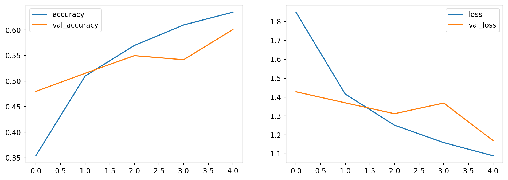
L’accuracy sale, la validation scende. Il modello funziona, anche se ballerino in validation. Questo è un punto di partenza esemplificativo. AlexNet è un modello piccolo e copia-incollabile.
7.1 Versione migliorata
Parte da AlexNet + buon senso ed esperienza. Stesso padding ovunque. Semplificato pooling prendendo il default: prendere blocchetti 2x2 e fare il massimo. Regolarizzata la struttura della rete: Conv-Batch-Conv-Batch-Pooling. Ridotto il numero di neuroni nella parte densa, per rimuovere parametri. Ridotto Dropout per ridurre tempistiche di training.
cnn2 = Sequential([
InputLayer(input_shape=(32,32,3)),
Conv2D(32, (3, 3), activation='relu', padding='same'),
BatchNormalization(),
Conv2D(32, (3, 3), activation='relu', padding='same'),
BatchNormalization(),
MaxPool2D(),
#
Conv2D(32, (3, 3), activation='relu', padding='same'),
BatchNormalization(),
Conv2D(32, (3, 3), activation='relu', padding='same'),
BatchNormalization(),
MaxPool2D(),
#
Conv2D(32, (3, 3), activation='relu', padding='same'),
BatchNormalization(),
Conv2D(32, (3, 3), activation='relu', padding='same'),
BatchNormalization(),
MaxPool2D(),
#
Flatten(),
Dropout(0.2),
Dense(1024, activation='relu'),
Dropout(0.2),
Dense(10, activation='softmax')])cnn2.compile(
optimizer="adam",
loss="sparse_categorical_crossentropy",
metrics=["accuracy"]
)7.1.1 Piccolo trucco: data augmentation
Si cambiano le immagini mandate alla rete neurale. È built in in Keras. Questo consente di aumentare il dataset e di rendere il modello più robusto. train_generator applica le modifiche per batch, un po’ per volta.
batch_size = 32
data_generator = tf.keras.preprocessing.image.ImageDataGenerator(
width_shift_range=0.1, height_shift_range=0.1, horizontal_flip=True
)
train_generator = data_generator.flow(xtrain, ytrain, batch_size)
steps_per_epoch = xtrain.shape[0] // batch_sizeIntanto testo il modello con la nuova struttura e senza training, per avere una base di partenza. Mi aspetto l’accuracy sia vicino al 0.1.
cnn2.evaluate(xtest, ytest) 1/313 ━━━━━━━━━━━━━━━━━━━━ 2:14 430ms/step - accuracy: 0.1250 - loss: 2.2967 7/313 ━━━━━━━━━━━━━━━━━━━━ 2s 9ms/step - accuracy: 0.1158 - loss: 2.2997 15/313 ━━━━━━━━━━━━━━━━━━━━ 2s 8ms/step - accuracy: 0.1147 - loss: 2.3007 22/313 ━━━━━━━━━━━━━━━━━━━━ 2s 8ms/step - accuracy: 0.1157 - loss: 2.3010 29/313 ━━━━━━━━━━━━━━━━━━━━ 2s 7ms/step - accuracy: 0.1152 - loss: 2.3012 36/313 ━━━━━━━━━━━━━━━━━━━━ 2s 7ms/step - accuracy: 0.1136 - loss: 2.3014 43/313 ━━━━━━━━━━━━━━━━━━━━ 1s 7ms/step - accuracy: 0.1119 - loss: 2.3016 51/313 ━━━━━━━━━━━━━━━━━━━━ 1s 7ms/step - accuracy: 0.1101 - loss: 2.3017 59/313 ━━━━━━━━━━━━━━━━━━━━ 1s 7ms/step - accuracy: 0.1085 - loss: 2.3018 67/313 ━━━━━━━━━━━━━━━━━━━━ 1s 7ms/step - accuracy: 0.1071 - loss: 2.3018 75/313 ━━━━━━━━━━━━━━━━━━━━ 1s 7ms/step - accuracy: 0.1060 - loss: 2.3019 83/313 ━━━━━━━━━━━━━━━━━━━━ 1s 7ms/step - accuracy: 0.1050 - loss: 2.3020 91/313 ━━━━━━━━━━━━━━━━━━━━ 1s 7ms/step - accuracy: 0.1040 - loss: 2.3021 99/313 ━━━━━━━━━━━━━━━━━━━━ 1s 7ms/step - accuracy: 0.1032 - loss: 2.3021107/313 ━━━━━━━━━━━━━━━━━━━━ 1s 7ms/step - accuracy: 0.1026 - loss: 2.3022115/313 ━━━━━━━━━━━━━━━━━━━━ 1s 7ms/step - accuracy: 0.1021 - loss: 2.3022123/313 ━━━━━━━━━━━━━━━━━━━━ 1s 7ms/step - accuracy: 0.1018 - loss: 2.3023131/313 ━━━━━━━━━━━━━━━━━━━━ 1s 7ms/step - accuracy: 0.1014 - loss: 2.3023138/313 ━━━━━━━━━━━━━━━━━━━━ 1s 7ms/step - accuracy: 0.1011 - loss: 2.3024146/313 ━━━━━━━━━━━━━━━━━━━━ 1s 7ms/step - accuracy: 0.1008 - loss: 2.3024154/313 ━━━━━━━━━━━━━━━━━━━━ 1s 7ms/step - accuracy: 0.1005 - loss: 2.3024162/313 ━━━━━━━━━━━━━━━━━━━━ 1s 7ms/step - accuracy: 0.1003 - loss: 2.3024170/313 ━━━━━━━━━━━━━━━━━━━━ 0s 7ms/step - accuracy: 0.1001 - loss: 2.3025178/313 ━━━━━━━━━━━━━━━━━━━━ 0s 7ms/step - accuracy: 0.0998 - loss: 2.3025186/313 ━━━━━━━━━━━━━━━━━━━━ 0s 7ms/step - accuracy: 0.0996 - loss: 2.3025194/313 ━━━━━━━━━━━━━━━━━━━━ 0s 7ms/step - accuracy: 0.0994 - loss: 2.3025202/313 ━━━━━━━━━━━━━━━━━━━━ 0s 7ms/step - accuracy: 0.0992 - loss: 2.3025210/313 ━━━━━━━━━━━━━━━━━━━━ 0s 7ms/step - accuracy: 0.0990 - loss: 2.3026218/313 ━━━━━━━━━━━━━━━━━━━━ 0s 7ms/step - accuracy: 0.0988 - loss: 2.3026226/313 ━━━━━━━━━━━━━━━━━━━━ 0s 7ms/step - accuracy: 0.0986 - loss: 2.3026234/313 ━━━━━━━━━━━━━━━━━━━━ 0s 7ms/step - accuracy: 0.0984 - loss: 2.3026242/313 ━━━━━━━━━━━━━━━━━━━━ 0s 7ms/step - accuracy: 0.0983 - loss: 2.3026250/313 ━━━━━━━━━━━━━━━━━━━━ 0s 7ms/step - accuracy: 0.0981 - loss: 2.3026258/313 ━━━━━━━━━━━━━━━━━━━━ 0s 7ms/step - accuracy: 0.0980 - loss: 2.3026266/313 ━━━━━━━━━━━━━━━━━━━━ 0s 7ms/step - accuracy: 0.0978 - loss: 2.3026274/313 ━━━━━━━━━━━━━━━━━━━━ 0s 7ms/step - accuracy: 0.0977 - loss: 2.3027282/313 ━━━━━━━━━━━━━━━━━━━━ 0s 7ms/step - accuracy: 0.0976 - loss: 2.3027290/313 ━━━━━━━━━━━━━━━━━━━━ 0s 7ms/step - accuracy: 0.0975 - loss: 2.3027298/313 ━━━━━━━━━━━━━━━━━━━━ 0s 7ms/step - accuracy: 0.0974 - loss: 2.3027306/313 ━━━━━━━━━━━━━━━━━━━━ 0s 7ms/step - accuracy: 0.0974 - loss: 2.3027313/313 ━━━━━━━━━━━━━━━━━━━━ 0s 8ms/step - accuracy: 0.0973 - loss: 2.3027313/313 ━━━━━━━━━━━━━━━━━━━━ 3s 8ms/step - accuracy: 0.0973 - loss: 2.3027[2.3029019832611084, 0.09520000219345093]training
hist2 = cnn2.fit(
train_generator,
validation_data=(xtest, ytest),
steps_per_epoch=steps_per_epoch,
epochs=5
)Epoch 1/5
1/1562 ━━━━━━━━━━━━━━━━━━━━ 2:10:48 5s/step - accuracy: 0.1250 - loss: 3.0199 2/1562 ━━━━━━━━━━━━━━━━━━━━ 2:17 88ms/step - accuracy: 0.1406 - loss: 3.1115 3/1562 ━━━━━━━━━━━━━━━━━━━━ 1:50 71ms/step - accuracy: 0.1319 - loss: 3.1416 5/1562 ━━━━━━━━━━━━━━━━━━━━ 1:30 58ms/step - accuracy: 0.1207 - loss: 3.1535 7/1562 ━━━━━━━━━━━━━━━━━━━━ 1:23 53ms/step - accuracy: 0.1177 - loss: 3.1474 9/1562 ━━━━━━━━━━━━━━━━━━━━ 1:27 56ms/step - accuracy: 0.1205 - loss: 3.1285 11/1562 ━━━━━━━━━━━━━━━━━━━━ 1:21 53ms/step - accuracy: 0.1235 - loss: 3.1077 12/1562 ━━━━━━━━━━━━━━━━━━━━ 1:23 54ms/step - accuracy: 0.1256 - loss: 3.0971 14/1562 ━━━━━━━━━━━━━━━━━━━━ 1:21 53ms/step - accuracy: 0.1298 - loss: 3.0732 15/1562 ━━━━━━━━━━━━━━━━━━━━ 1:21 53ms/step - accuracy: 0.1317 - loss: 3.0639 17/1562 ━━━━━━━━━━━━━━━━━━━━ 1:18 51ms/step - accuracy: 0.1347 - loss: 3.0425 19/1562 ━━━━━━━━━━━━━━━━━━━━ 1:15 49ms/step - accuracy: 0.1382 - loss: 3.0201 21/1562 ━━━━━━━━━━━━━━━━━━━━ 1:14 48ms/step - accuracy: 0.1421 - loss: 2.9958 23/1562 ━━━━━━━━━━━━━━━━━━━━ 1:12 47ms/step - accuracy: 0.1456 - loss: 2.9733 25/1562 ━━━━━━━━━━━━━━━━━━━━ 1:10 46ms/step - accuracy: 0.1495 - loss: 2.9512 27/1562 ━━━━━━━━━━━━━━━━━━━━ 1:08 45ms/step - accuracy: 0.1529 - loss: 2.9310 29/1562 ━━━━━━━━━━━━━━━━━━━━ 1:07 44ms/step - accuracy: 0.1562 - loss: 2.9113 31/1562 ━━━━━━━━━━━━━━━━━━━━ 1:06 44ms/step - accuracy: 0.1593 - loss: 2.8939 33/1562 ━━━━━━━━━━━━━━━━━━━━ 1:05 43ms/step - accuracy: 0.1626 - loss: 2.8768 35/1562 ━━━━━━━━━━━━━━━━━━━━ 1:04 42ms/step - accuracy: 0.1656 - loss: 2.8602 37/1562 ━━━━━━━━━━━━━━━━━━━━ 1:04 42ms/step - accuracy: 0.1688 - loss: 2.8433 39/1562 ━━━━━━━━━━━━━━━━━━━━ 1:03 42ms/step - accuracy: 0.1716 - loss: 2.8272 41/1562 ━━━━━━━━━━━━━━━━━━━━ 1:02 41ms/step - accuracy: 0.1742 - loss: 2.8122 43/1562 ━━━━━━━━━━━━━━━━━━━━ 1:01 41ms/step - accuracy: 0.1766 - loss: 2.7978 45/1562 ━━━━━━━━━━━━━━━━━━━━ 1:01 40ms/step - accuracy: 0.1789 - loss: 2.7844 47/1562 ━━━━━━━━━━━━━━━━━━━━ 1:00 40ms/step - accuracy: 0.1811 - loss: 2.7713 49/1562 ━━━━━━━━━━━━━━━━━━━━ 1:00 40ms/step - accuracy: 0.1833 - loss: 2.7583 51/1562 ━━━━━━━━━━━━━━━━━━━━ 1:00 40ms/step - accuracy: 0.1854 - loss: 2.7457 53/1562 ━━━━━━━━━━━━━━━━━━━━ 59s 40ms/step - accuracy: 0.1874 - loss: 2.7337 55/1562 ━━━━━━━━━━━━━━━━━━━━ 59s 39ms/step - accuracy: 0.1894 - loss: 2.7219 57/1562 ━━━━━━━━━━━━━━━━━━━━ 58s 39ms/step - accuracy: 0.1913 - loss: 2.7107 59/1562 ━━━━━━━━━━━━━━━━━━━━ 58s 39ms/step - accuracy: 0.1932 - loss: 2.6999 61/1562 ━━━━━━━━━━━━━━━━━━━━ 58s 39ms/step - accuracy: 0.1949 - loss: 2.6895 63/1562 ━━━━━━━━━━━━━━━━━━━━ 57s 39ms/step - accuracy: 0.1967 - loss: 2.6792 65/1562 ━━━━━━━━━━━━━━━━━━━━ 57s 38ms/step - accuracy: 0.1984 - loss: 2.6691 67/1562 ━━━━━━━━━━━━━━━━━━━━ 57s 38ms/step - accuracy: 0.2001 - loss: 2.6593 69/1562 ━━━━━━━━━━━━━━━━━━━━ 57s 38ms/step - accuracy: 0.2017 - loss: 2.6498 71/1562 ━━━━━━━━━━━━━━━━━━━━ 56s 38ms/step - accuracy: 0.2033 - loss: 2.6403 73/1562 ━━━━━━━━━━━━━━━━━━━━ 56s 38ms/step - accuracy: 0.2049 - loss: 2.6311 75/1562 ━━━━━━━━━━━━━━━━━━━━ 56s 38ms/step - accuracy: 0.2065 - loss: 2.6221 77/1562 ━━━━━━━━━━━━━━━━━━━━ 56s 38ms/step - accuracy: 0.2080 - loss: 2.6134 79/1562 ━━━━━━━━━━━━━━━━━━━━ 55s 38ms/step - accuracy: 0.2095 - loss: 2.6050 81/1562 ━━━━━━━━━━━━━━━━━━━━ 55s 38ms/step - accuracy: 0.2110 - loss: 2.5967 83/1562 ━━━━━━━━━━━━━━━━━━━━ 55s 38ms/step - accuracy: 0.2125 - loss: 2.5885 85/1562 ━━━━━━━━━━━━━━━━━━━━ 55s 37ms/step - accuracy: 0.2139 - loss: 2.5804 87/1562 ━━━━━━━━━━━━━━━━━━━━ 55s 37ms/step - accuracy: 0.2154 - loss: 2.5725 89/1562 ━━━━━━━━━━━━━━━━━━━━ 54s 37ms/step - accuracy: 0.2167 - loss: 2.5648 91/1562 ━━━━━━━━━━━━━━━━━━━━ 54s 37ms/step - accuracy: 0.2181 - loss: 2.5572 93/1562 ━━━━━━━━━━━━━━━━━━━━ 54s 37ms/step - accuracy: 0.2195 - loss: 2.5498 95/1562 ━━━━━━━━━━━━━━━━━━━━ 54s 37ms/step - accuracy: 0.2208 - loss: 2.5425 97/1562 ━━━━━━━━━━━━━━━━━━━━ 54s 37ms/step - accuracy: 0.2221 - loss: 2.5355 99/1562 ━━━━━━━━━━━━━━━━━━━━ 54s 37ms/step - accuracy: 0.2234 - loss: 2.5286 101/1562 ━━━━━━━━━━━━━━━━━━━━ 54s 37ms/step - accuracy: 0.2246 - loss: 2.5218 103/1562 ━━━━━━━━━━━━━━━━━━━━ 53s 37ms/step - accuracy: 0.2258 - loss: 2.5152 105/1562 ━━━━━━━━━━━━━━━━━━━━ 53s 37ms/step - accuracy: 0.2270 - loss: 2.5087 107/1562 ━━━━━━━━━━━━━━━━━━━━ 53s 37ms/step - accuracy: 0.2281 - loss: 2.5023 109/1562 ━━━━━━━━━━━━━━━━━━━━ 53s 37ms/step - accuracy: 0.2293 - loss: 2.4960 111/1562 ━━━━━━━━━━━━━━━━━━━━ 53s 37ms/step - accuracy: 0.2303 - loss: 2.4899 113/1562 ━━━━━━━━━━━━━━━━━━━━ 53s 37ms/step - accuracy: 0.2314 - loss: 2.4839 115/1562 ━━━━━━━━━━━━━━━━━━━━ 53s 37ms/step - accuracy: 0.2324 - loss: 2.4780 117/1562 ━━━━━━━━━━━━━━━━━━━━ 52s 37ms/step - accuracy: 0.2334 - loss: 2.4723 119/1562 ━━━━━━━━━━━━━━━━━━━━ 52s 37ms/step - accuracy: 0.2345 - loss: 2.4666 121/1562 ━━━━━━━━━━━━━━━━━━━━ 52s 37ms/step - accuracy: 0.2355 - loss: 2.4611 123/1562 ━━━━━━━━━━━━━━━━━━━━ 52s 37ms/step - accuracy: 0.2365 - loss: 2.4555 125/1562 ━━━━━━━━━━━━━━━━━━━━ 52s 37ms/step - accuracy: 0.2376 - loss: 2.4501 127/1562 ━━━━━━━━━━━━━━━━━━━━ 52s 37ms/step - accuracy: 0.2386 - loss: 2.4447 129/1562 ━━━━━━━━━━━━━━━━━━━━ 52s 36ms/step - accuracy: 0.2395 - loss: 2.4394 131/1562 ━━━━━━━━━━━━━━━━━━━━ 52s 36ms/step - accuracy: 0.2405 - loss: 2.4342 133/1562 ━━━━━━━━━━━━━━━━━━━━ 52s 36ms/step - accuracy: 0.2414 - loss: 2.4290 135/1562 ━━━━━━━━━━━━━━━━━━━━ 51s 36ms/step - accuracy: 0.2423 - loss: 2.4240 137/1562 ━━━━━━━━━━━━━━━━━━━━ 51s 36ms/step - accuracy: 0.2432 - loss: 2.4190 139/1562 ━━━━━━━━━━━━━━━━━━━━ 51s 36ms/step - accuracy: 0.2441 - loss: 2.4142 141/1562 ━━━━━━━━━━━━━━━━━━━━ 51s 36ms/step - accuracy: 0.2449 - loss: 2.4095 143/1562 ━━━━━━━━━━━━━━━━━━━━ 51s 36ms/step - accuracy: 0.2457 - loss: 2.4048 145/1562 ━━━━━━━━━━━━━━━━━━━━ 51s 36ms/step - accuracy: 0.2466 - loss: 2.4002 147/1562 ━━━━━━━━━━━━━━━━━━━━ 51s 36ms/step - accuracy: 0.2474 - loss: 2.3957 149/1562 ━━━━━━━━━━━━━━━━━━━━ 51s 36ms/step - accuracy: 0.2482 - loss: 2.3912 151/1562 ━━━━━━━━━━━━━━━━━━━━ 50s 36ms/step - accuracy: 0.2490 - loss: 2.3867 153/1562 ━━━━━━━━━━━━━━━━━━━━ 50s 36ms/step - accuracy: 0.2498 - loss: 2.3823 155/1562 ━━━━━━━━━━━━━━━━━━━━ 50s 36ms/step - accuracy: 0.2505 - loss: 2.3780 157/1562 ━━━━━━━━━━━━━━━━━━━━ 50s 36ms/step - accuracy: 0.2513 - loss: 2.3738 159/1562 ━━━━━━━━━━━━━━━━━━━━ 50s 36ms/step - accuracy: 0.2521 - loss: 2.3696 161/1562 ━━━━━━━━━━━━━━━━━━━━ 50s 36ms/step - accuracy: 0.2528 - loss: 2.3655 163/1562 ━━━━━━━━━━━━━━━━━━━━ 50s 36ms/step - accuracy: 0.2536 - loss: 2.3614 165/1562 ━━━━━━━━━━━━━━━━━━━━ 50s 36ms/step - accuracy: 0.2543 - loss: 2.3574 167/1562 ━━━━━━━━━━━━━━━━━━━━ 50s 36ms/step - accuracy: 0.2550 - loss: 2.3534 169/1562 ━━━━━━━━━━━━━━━━━━━━ 50s 36ms/step - accuracy: 0.2557 - loss: 2.3496 171/1562 ━━━━━━━━━━━━━━━━━━━━ 50s 36ms/step - accuracy: 0.2563 - loss: 2.3457 173/1562 ━━━━━━━━━━━━━━━━━━━━ 49s 36ms/step - accuracy: 0.2570 - loss: 2.3419 175/1562 ━━━━━━━━━━━━━━━━━━━━ 49s 36ms/step - accuracy: 0.2576 - loss: 2.3381 177/1562 ━━━━━━━━━━━━━━━━━━━━ 49s 36ms/step - accuracy: 0.2583 - loss: 2.3344 179/1562 ━━━━━━━━━━━━━━━━━━━━ 49s 36ms/step - accuracy: 0.2589 - loss: 2.3307 181/1562 ━━━━━━━━━━━━━━━━━━━━ 49s 36ms/step - accuracy: 0.2595 - loss: 2.3270 183/1562 ━━━━━━━━━━━━━━━━━━━━ 49s 36ms/step - accuracy: 0.2602 - loss: 2.3234 185/1562 ━━━━━━━━━━━━━━━━━━━━ 49s 36ms/step - accuracy: 0.2608 - loss: 2.3198 187/1562 ━━━━━━━━━━━━━━━━━━━━ 49s 36ms/step - accuracy: 0.2615 - loss: 2.3162 189/1562 ━━━━━━━━━━━━━━━━━━━━ 49s 36ms/step - accuracy: 0.2621 - loss: 2.3127 191/1562 ━━━━━━━━━━━━━━━━━━━━ 49s 36ms/step - accuracy: 0.2627 - loss: 2.3093 193/1562 ━━━━━━━━━━━━━━━━━━━━ 49s 36ms/step - accuracy: 0.2633 - loss: 2.3058 195/1562 ━━━━━━━━━━━━━━━━━━━━ 48s 36ms/step - accuracy: 0.2639 - loss: 2.3024 197/1562 ━━━━━━━━━━━━━━━━━━━━ 48s 36ms/step - accuracy: 0.2645 - loss: 2.2990 199/1562 ━━━━━━━━━━━━━━━━━━━━ 48s 36ms/step - accuracy: 0.2651 - loss: 2.2957 201/1562 ━━━━━━━━━━━━━━━━━━━━ 48s 36ms/step - accuracy: 0.2657 - loss: 2.2924 203/1562 ━━━━━━━━━━━━━━━━━━━━ 48s 36ms/step - accuracy: 0.2663 - loss: 2.2892 205/1562 ━━━━━━━━━━━━━━━━━━━━ 48s 36ms/step - accuracy: 0.2669 - loss: 2.2860 207/1562 ━━━━━━━━━━━━━━━━━━━━ 48s 36ms/step - accuracy: 0.2674 - loss: 2.2828 209/1562 ━━━━━━━━━━━━━━━━━━━━ 48s 36ms/step - accuracy: 0.2680 - loss: 2.2797 211/1562 ━━━━━━━━━━━━━━━━━━━━ 48s 36ms/step - accuracy: 0.2685 - loss: 2.2766 213/1562 ━━━━━━━━━━━━━━━━━━━━ 48s 36ms/step - accuracy: 0.2691 - loss: 2.2735 215/1562 ━━━━━━━━━━━━━━━━━━━━ 48s 36ms/step - accuracy: 0.2696 - loss: 2.2705 217/1562 ━━━━━━━━━━━━━━━━━━━━ 47s 36ms/step - accuracy: 0.2702 - loss: 2.2675 219/1562 ━━━━━━━━━━━━━━━━━━━━ 47s 36ms/step - accuracy: 0.2707 - loss: 2.2646 221/1562 ━━━━━━━━━━━━━━━━━━━━ 47s 36ms/step - accuracy: 0.2712 - loss: 2.2617 223/1562 ━━━━━━━━━━━━━━━━━━━━ 47s 36ms/step - accuracy: 0.2717 - loss: 2.2588 225/1562 ━━━━━━━━━━━━━━━━━━━━ 47s 36ms/step - accuracy: 0.2722 - loss: 2.2560 227/1562 ━━━━━━━━━━━━━━━━━━━━ 47s 36ms/step - accuracy: 0.2727 - loss: 2.2531 229/1562 ━━━━━━━━━━━━━━━━━━━━ 47s 36ms/step - accuracy: 0.2732 - loss: 2.2503 231/1562 ━━━━━━━━━━━━━━━━━━━━ 47s 36ms/step - accuracy: 0.2737 - loss: 2.2476 233/1562 ━━━━━━━━━━━━━━━━━━━━ 47s 36ms/step - accuracy: 0.2742 - loss: 2.2448 235/1562 ━━━━━━━━━━━━━━━━━━━━ 47s 36ms/step - accuracy: 0.2747 - loss: 2.2421 237/1562 ━━━━━━━━━━━━━━━━━━━━ 47s 36ms/step - accuracy: 0.2752 - loss: 2.2394 239/1562 ━━━━━━━━━━━━━━━━━━━━ 47s 36ms/step - accuracy: 0.2757 - loss: 2.2367 241/1562 ━━━━━━━━━━━━━━━━━━━━ 46s 36ms/step - accuracy: 0.2762 - loss: 2.2341 243/1562 ━━━━━━━━━━━━━━━━━━━━ 46s 36ms/step - accuracy: 0.2766 - loss: 2.2314 245/1562 ━━━━━━━━━━━━━━━━━━━━ 46s 36ms/step - accuracy: 0.2771 - loss: 2.2288 247/1562 ━━━━━━━━━━━━━━━━━━━━ 46s 36ms/step - accuracy: 0.2776 - loss: 2.2263 249/1562 ━━━━━━━━━━━━━━━━━━━━ 46s 35ms/step - accuracy: 0.2780 - loss: 2.2237 251/1562 ━━━━━━━━━━━━━━━━━━━━ 46s 35ms/step - accuracy: 0.2785 - loss: 2.2211 253/1562 ━━━━━━━━━━━━━━━━━━━━ 46s 35ms/step - accuracy: 0.2790 - loss: 2.2186 255/1562 ━━━━━━━━━━━━━━━━━━━━ 46s 35ms/step - accuracy: 0.2794 - loss: 2.2160 257/1562 ━━━━━━━━━━━━━━━━━━━━ 46s 35ms/step - accuracy: 0.2799 - loss: 2.2135 259/1562 ━━━━━━━━━━━━━━━━━━━━ 46s 35ms/step - accuracy: 0.2804 - loss: 2.2110 261/1562 ━━━━━━━━━━━━━━━━━━━━ 46s 35ms/step - accuracy: 0.2808 - loss: 2.2086 263/1562 ━━━━━━━━━━━━━━━━━━━━ 46s 35ms/step - accuracy: 0.2813 - loss: 2.2061 265/1562 ━━━━━━━━━━━━━━━━━━━━ 45s 35ms/step - accuracy: 0.2817 - loss: 2.2037 267/1562 ━━━━━━━━━━━━━━━━━━━━ 45s 35ms/step - accuracy: 0.2822 - loss: 2.2014 269/1562 ━━━━━━━━━━━━━━━━━━━━ 45s 35ms/step - accuracy: 0.2826 - loss: 2.1990 271/1562 ━━━━━━━━━━━━━━━━━━━━ 45s 35ms/step - accuracy: 0.2830 - loss: 2.1967 273/1562 ━━━━━━━━━━━━━━━━━━━━ 45s 35ms/step - accuracy: 0.2835 - loss: 2.1944 275/1562 ━━━━━━━━━━━━━━━━━━━━ 45s 35ms/step - accuracy: 0.2839 - loss: 2.1921 277/1562 ━━━━━━━━━━━━━━━━━━━━ 45s 35ms/step - accuracy: 0.2843 - loss: 2.1898 279/1562 ━━━━━━━━━━━━━━━━━━━━ 45s 35ms/step - accuracy: 0.2847 - loss: 2.1875 281/1562 ━━━━━━━━━━━━━━━━━━━━ 45s 35ms/step - accuracy: 0.2851 - loss: 2.1853 283/1562 ━━━━━━━━━━━━━━━━━━━━ 45s 35ms/step - accuracy: 0.2855 - loss: 2.1831 285/1562 ━━━━━━━━━━━━━━━━━━━━ 45s 35ms/step - accuracy: 0.2859 - loss: 2.1809 287/1562 ━━━━━━━━━━━━━━━━━━━━ 45s 35ms/step - accuracy: 0.2863 - loss: 2.1787 289/1562 ━━━━━━━━━━━━━━━━━━━━ 44s 35ms/step - accuracy: 0.2867 - loss: 2.1766 291/1562 ━━━━━━━━━━━━━━━━━━━━ 44s 35ms/step - accuracy: 0.2871 - loss: 2.1744 293/1562 ━━━━━━━━━━━━━━━━━━━━ 44s 35ms/step - accuracy: 0.2875 - loss: 2.1723 295/1562 ━━━━━━━━━━━━━━━━━━━━ 44s 35ms/step - accuracy: 0.2879 - loss: 2.1702 297/1562 ━━━━━━━━━━━━━━━━━━━━ 44s 35ms/step - accuracy: 0.2883 - loss: 2.1680 299/1562 ━━━━━━━━━━━━━━━━━━━━ 44s 35ms/step - accuracy: 0.2887 - loss: 2.1660 301/1562 ━━━━━━━━━━━━━━━━━━━━ 44s 35ms/step - accuracy: 0.2891 - loss: 2.1639 303/1562 ━━━━━━━━━━━━━━━━━━━━ 44s 35ms/step - accuracy: 0.2895 - loss: 2.1618 305/1562 ━━━━━━━━━━━━━━━━━━━━ 44s 35ms/step - accuracy: 0.2899 - loss: 2.1598 307/1562 ━━━━━━━━━━━━━━━━━━━━ 44s 35ms/step - accuracy: 0.2903 - loss: 2.1578 309/1562 ━━━━━━━━━━━━━━━━━━━━ 44s 35ms/step - accuracy: 0.2907 - loss: 2.1558 311/1562 ━━━━━━━━━━━━━━━━━━━━ 44s 35ms/step - accuracy: 0.2910 - loss: 2.1538 313/1562 ━━━━━━━━━━━━━━━━━━━━ 44s 35ms/step - accuracy: 0.2914 - loss: 2.1518 315/1562 ━━━━━━━━━━━━━━━━━━━━ 43s 35ms/step - accuracy: 0.2918 - loss: 2.1499 317/1562 ━━━━━━━━━━━━━━━━━━━━ 43s 35ms/step - accuracy: 0.2922 - loss: 2.1479 319/1562 ━━━━━━━━━━━━━━━━━━━━ 43s 35ms/step - accuracy: 0.2925 - loss: 2.1460 321/1562 ━━━━━━━━━━━━━━━━━━━━ 43s 35ms/step - accuracy: 0.2929 - loss: 2.1441 323/1562 ━━━━━━━━━━━━━━━━━━━━ 43s 35ms/step - accuracy: 0.2933 - loss: 2.1422 325/1562 ━━━━━━━━━━━━━━━━━━━━ 43s 35ms/step - accuracy: 0.2936 - loss: 2.1404 327/1562 ━━━━━━━━━━━━━━━━━━━━ 43s 35ms/step - accuracy: 0.2940 - loss: 2.1385 329/1562 ━━━━━━━━━━━━━━━━━━━━ 43s 35ms/step - accuracy: 0.2943 - loss: 2.1367 331/1562 ━━━━━━━━━━━━━━━━━━━━ 43s 35ms/step - accuracy: 0.2947 - loss: 2.1348 333/1562 ━━━━━━━━━━━━━━━━━━━━ 43s 35ms/step - accuracy: 0.2951 - loss: 2.1330 335/1562 ━━━━━━━━━━━━━━━━━━━━ 43s 35ms/step - accuracy: 0.2954 - loss: 2.1312 337/1562 ━━━━━━━━━━━━━━━━━━━━ 43s 35ms/step - accuracy: 0.2958 - loss: 2.1294 339/1562 ━━━━━━━━━━━━━━━━━━━━ 43s 35ms/step - accuracy: 0.2961 - loss: 2.1276 341/1562 ━━━━━━━━━━━━━━━━━━━━ 42s 35ms/step - accuracy: 0.2965 - loss: 2.1259 343/1562 ━━━━━━━━━━━━━━━━━━━━ 42s 35ms/step - accuracy: 0.2968 - loss: 2.1241 345/1562 ━━━━━━━━━━━━━━━━━━━━ 42s 35ms/step - accuracy: 0.2972 - loss: 2.1224 347/1562 ━━━━━━━━━━━━━━━━━━━━ 42s 35ms/step - accuracy: 0.2975 - loss: 2.1206 349/1562 ━━━━━━━━━━━━━━━━━━━━ 42s 35ms/step - accuracy: 0.2978 - loss: 2.1189 351/1562 ━━━━━━━━━━━━━━━━━━━━ 42s 35ms/step - accuracy: 0.2982 - loss: 2.1172 353/1562 ━━━━━━━━━━━━━━━━━━━━ 42s 35ms/step - accuracy: 0.2985 - loss: 2.1155 355/1562 ━━━━━━━━━━━━━━━━━━━━ 42s 35ms/step - accuracy: 0.2989 - loss: 2.1138 357/1562 ━━━━━━━━━━━━━━━━━━━━ 42s 35ms/step - accuracy: 0.2992 - loss: 2.1121 359/1562 ━━━━━━━━━━━━━━━━━━━━ 42s 35ms/step - accuracy: 0.2996 - loss: 2.1104 361/1562 ━━━━━━━━━━━━━━━━━━━━ 42s 35ms/step - accuracy: 0.2999 - loss: 2.1087 363/1562 ━━━━━━━━━━━━━━━━━━━━ 42s 35ms/step - accuracy: 0.3002 - loss: 2.1071 365/1562 ━━━━━━━━━━━━━━━━━━━━ 42s 35ms/step - accuracy: 0.3006 - loss: 2.1054 367/1562 ━━━━━━━━━━━━━━━━━━━━ 41s 35ms/step - accuracy: 0.3009 - loss: 2.1038 369/1562 ━━━━━━━━━━━━━━━━━━━━ 41s 35ms/step - accuracy: 0.3012 - loss: 2.1022 371/1562 ━━━━━━━━━━━━━━━━━━━━ 41s 35ms/step - accuracy: 0.3016 - loss: 2.1006 373/1562 ━━━━━━━━━━━━━━━━━━━━ 41s 35ms/step - accuracy: 0.3019 - loss: 2.0990 375/1562 ━━━━━━━━━━━━━━━━━━━━ 41s 35ms/step - accuracy: 0.3022 - loss: 2.0974 377/1562 ━━━━━━━━━━━━━━━━━━━━ 41s 35ms/step - accuracy: 0.3026 - loss: 2.0958 379/1562 ━━━━━━━━━━━━━━━━━━━━ 41s 35ms/step - accuracy: 0.3029 - loss: 2.0942 381/1562 ━━━━━━━━━━━━━━━━━━━━ 41s 35ms/step - accuracy: 0.3032 - loss: 2.0926 383/1562 ━━━━━━━━━━━━━━━━━━━━ 41s 35ms/step - accuracy: 0.3036 - loss: 2.0911 385/1562 ━━━━━━━━━━━━━━━━━━━━ 41s 35ms/step - accuracy: 0.3039 - loss: 2.0895 387/1562 ━━━━━━━━━━━━━━━━━━━━ 41s 35ms/step - accuracy: 0.3042 - loss: 2.0879 389/1562 ━━━━━━━━━━━━━━━━━━━━ 41s 35ms/step - accuracy: 0.3046 - loss: 2.0864 391/1562 ━━━━━━━━━━━━━━━━━━━━ 41s 35ms/step - accuracy: 0.3049 - loss: 2.0849 393/1562 ━━━━━━━━━━━━━━━━━━━━ 40s 35ms/step - accuracy: 0.3052 - loss: 2.0833 395/1562 ━━━━━━━━━━━━━━━━━━━━ 40s 35ms/step - accuracy: 0.3055 - loss: 2.0818 397/1562 ━━━━━━━━━━━━━━━━━━━━ 40s 35ms/step - accuracy: 0.3058 - loss: 2.0803 399/1562 ━━━━━━━━━━━━━━━━━━━━ 40s 35ms/step - accuracy: 0.3062 - loss: 2.0788 401/1562 ━━━━━━━━━━━━━━━━━━━━ 40s 35ms/step - accuracy: 0.3065 - loss: 2.0773 403/1562 ━━━━━━━━━━━━━━━━━━━━ 40s 35ms/step - accuracy: 0.3068 - loss: 2.0759 405/1562 ━━━━━━━━━━━━━━━━━━━━ 40s 35ms/step - accuracy: 0.3071 - loss: 2.0744 407/1562 ━━━━━━━━━━━━━━━━━━━━ 40s 35ms/step - accuracy: 0.3074 - loss: 2.0729 409/1562 ━━━━━━━━━━━━━━━━━━━━ 40s 35ms/step - accuracy: 0.3077 - loss: 2.0715 411/1562 ━━━━━━━━━━━━━━━━━━━━ 40s 35ms/step - accuracy: 0.3081 - loss: 2.0700 413/1562 ━━━━━━━━━━━━━━━━━━━━ 40s 35ms/step - accuracy: 0.3084 - loss: 2.0686 415/1562 ━━━━━━━━━━━━━━━━━━━━ 40s 35ms/step - accuracy: 0.3087 - loss: 2.0672 417/1562 ━━━━━━━━━━━━━━━━━━━━ 40s 35ms/step - accuracy: 0.3090 - loss: 2.0657 419/1562 ━━━━━━━━━━━━━━━━━━━━ 40s 35ms/step - accuracy: 0.3093 - loss: 2.0643 421/1562 ━━━━━━━━━━━━━━━━━━━━ 39s 35ms/step - accuracy: 0.3096 - loss: 2.0629 423/1562 ━━━━━━━━━━━━━━━━━━━━ 39s 35ms/step - accuracy: 0.3099 - loss: 2.0615 425/1562 ━━━━━━━━━━━━━━━━━━━━ 39s 35ms/step - accuracy: 0.3102 - loss: 2.0601 427/1562 ━━━━━━━━━━━━━━━━━━━━ 39s 35ms/step - accuracy: 0.3105 - loss: 2.0587 429/1562 ━━━━━━━━━━━━━━━━━━━━ 39s 35ms/step - accuracy: 0.3108 - loss: 2.0573 431/1562 ━━━━━━━━━━━━━━━━━━━━ 39s 35ms/step - accuracy: 0.3111 - loss: 2.0560 433/1562 ━━━━━━━━━━━━━━━━━━━━ 39s 35ms/step - accuracy: 0.3115 - loss: 2.0546 435/1562 ━━━━━━━━━━━━━━━━━━━━ 39s 35ms/step - accuracy: 0.3118 - loss: 2.0532 437/1562 ━━━━━━━━━━━━━━━━━━━━ 39s 35ms/step - accuracy: 0.3121 - loss: 2.0518 439/1562 ━━━━━━━━━━━━━━━━━━━━ 39s 35ms/step - accuracy: 0.3124 - loss: 2.0505 441/1562 ━━━━━━━━━━━━━━━━━━━━ 39s 35ms/step - accuracy: 0.3127 - loss: 2.0491 443/1562 ━━━━━━━━━━━━━━━━━━━━ 41s 37ms/step - accuracy: 0.3130 - loss: 2.0478 445/1562 ━━━━━━━━━━━━━━━━━━━━ 41s 37ms/step - accuracy: 0.3133 - loss: 2.0464 447/1562 ━━━━━━━━━━━━━━━━━━━━ 41s 37ms/step - accuracy: 0.3136 - loss: 2.0451 449/1562 ━━━━━━━━━━━━━━━━━━━━ 41s 37ms/step - accuracy: 0.3139 - loss: 2.0438 451/1562 ━━━━━━━━━━━━━━━━━━━━ 41s 37ms/step - accuracy: 0.3142 - loss: 2.0425 453/1562 ━━━━━━━━━━━━━━━━━━━━ 41s 37ms/step - accuracy: 0.3145 - loss: 2.0412 455/1562 ━━━━━━━━━━━━━━━━━━━━ 41s 37ms/step - accuracy: 0.3148 - loss: 2.0399 457/1562 ━━━━━━━━━━━━━━━━━━━━ 41s 37ms/step - accuracy: 0.3151 - loss: 2.0386 459/1562 ━━━━━━━━━━━━━━━━━━━━ 41s 37ms/step - accuracy: 0.3154 - loss: 2.0373 461/1562 ━━━━━━━━━━━━━━━━━━━━ 41s 37ms/step - accuracy: 0.3156 - loss: 2.0361 463/1562 ━━━━━━━━━━━━━━━━━━━━ 40s 37ms/step - accuracy: 0.3159 - loss: 2.0348 465/1562 ━━━━━━━━━━━━━━━━━━━━ 40s 37ms/step - accuracy: 0.3162 - loss: 2.0335 467/1562 ━━━━━━━━━━━━━━━━━━━━ 40s 37ms/step - accuracy: 0.3165 - loss: 2.0323 469/1562 ━━━━━━━━━━━━━━━━━━━━ 40s 37ms/step - accuracy: 0.3168 - loss: 2.0310 471/1562 ━━━━━━━━━━━━━━━━━━━━ 40s 37ms/step - accuracy: 0.3171 - loss: 2.0298 473/1562 ━━━━━━━━━━━━━━━━━━━━ 40s 37ms/step - accuracy: 0.3174 - loss: 2.0285 475/1562 ━━━━━━━━━━━━━━━━━━━━ 40s 37ms/step - accuracy: 0.3176 - loss: 2.0273 477/1562 ━━━━━━━━━━━━━━━━━━━━ 40s 37ms/step - accuracy: 0.3179 - loss: 2.0261 479/1562 ━━━━━━━━━━━━━━━━━━━━ 40s 37ms/step - accuracy: 0.3182 - loss: 2.0248 481/1562 ━━━━━━━━━━━━━━━━━━━━ 40s 37ms/step - accuracy: 0.3185 - loss: 2.0236 483/1562 ━━━━━━━━━━━━━━━━━━━━ 40s 37ms/step - accuracy: 0.3188 - loss: 2.0224 485/1562 ━━━━━━━━━━━━━━━━━━━━ 40s 37ms/step - accuracy: 0.3191 - loss: 2.0212 487/1562 ━━━━━━━━━━━━━━━━━━━━ 39s 37ms/step - accuracy: 0.3193 - loss: 2.0200 489/1562 ━━━━━━━━━━━━━━━━━━━━ 39s 37ms/step - accuracy: 0.3196 - loss: 2.0188 491/1562 ━━━━━━━━━━━━━━━━━━━━ 39s 37ms/step - accuracy: 0.3199 - loss: 2.0176 493/1562 ━━━━━━━━━━━━━━━━━━━━ 39s 37ms/step - accuracy: 0.3202 - loss: 2.0164 495/1562 ━━━━━━━━━━━━━━━━━━━━ 39s 37ms/step - accuracy: 0.3204 - loss: 2.0152 497/1562 ━━━━━━━━━━━━━━━━━━━━ 39s 37ms/step - accuracy: 0.3207 - loss: 2.0141 499/1562 ━━━━━━━━━━━━━━━━━━━━ 39s 37ms/step - accuracy: 0.3210 - loss: 2.0129 501/1562 ━━━━━━━━━━━━━━━━━━━━ 39s 37ms/step - accuracy: 0.3213 - loss: 2.0117 503/1562 ━━━━━━━━━━━━━━━━━━━━ 39s 37ms/step - accuracy: 0.3215 - loss: 2.0106 505/1562 ━━━━━━━━━━━━━━━━━━━━ 39s 37ms/step - accuracy: 0.3218 - loss: 2.0094 507/1562 ━━━━━━━━━━━━━━━━━━━━ 39s 37ms/step - accuracy: 0.3221 - loss: 2.0083 509/1562 ━━━━━━━━━━━━━━━━━━━━ 39s 37ms/step - accuracy: 0.3223 - loss: 2.0072 511/1562 ━━━━━━━━━━━━━━━━━━━━ 38s 37ms/step - accuracy: 0.3226 - loss: 2.0060 513/1562 ━━━━━━━━━━━━━━━━━━━━ 38s 37ms/step - accuracy: 0.3229 - loss: 2.0049 515/1562 ━━━━━━━━━━━━━━━━━━━━ 38s 37ms/step - accuracy: 0.3231 - loss: 2.0038 517/1562 ━━━━━━━━━━━━━━━━━━━━ 38s 37ms/step - accuracy: 0.3234 - loss: 2.0027 519/1562 ━━━━━━━━━━━━━━━━━━━━ 38s 37ms/step - accuracy: 0.3236 - loss: 2.0016 521/1562 ━━━━━━━━━━━━━━━━━━━━ 38s 37ms/step - accuracy: 0.3239 - loss: 2.0005 523/1562 ━━━━━━━━━━━━━━━━━━━━ 38s 37ms/step - accuracy: 0.3242 - loss: 1.9994 525/1562 ━━━━━━━━━━━━━━━━━━━━ 38s 37ms/step - accuracy: 0.3244 - loss: 1.9983 527/1562 ━━━━━━━━━━━━━━━━━━━━ 38s 37ms/step - accuracy: 0.3247 - loss: 1.9972 529/1562 ━━━━━━━━━━━━━━━━━━━━ 38s 37ms/step - accuracy: 0.3249 - loss: 1.9961 531/1562 ━━━━━━━━━━━━━━━━━━━━ 38s 37ms/step - accuracy: 0.3252 - loss: 1.9950 533/1562 ━━━━━━━━━━━━━━━━━━━━ 37s 37ms/step - accuracy: 0.3255 - loss: 1.9939 535/1562 ━━━━━━━━━━━━━━━━━━━━ 37s 37ms/step - accuracy: 0.3257 - loss: 1.9928 537/1562 ━━━━━━━━━━━━━━━━━━━━ 37s 37ms/step - accuracy: 0.3260 - loss: 1.9918 539/1562 ━━━━━━━━━━━━━━━━━━━━ 37s 37ms/step - accuracy: 0.3262 - loss: 1.9907 541/1562 ━━━━━━━━━━━━━━━━━━━━ 37s 37ms/step - accuracy: 0.3265 - loss: 1.9896 543/1562 ━━━━━━━━━━━━━━━━━━━━ 37s 37ms/step - accuracy: 0.3267 - loss: 1.9886 545/1562 ━━━━━━━━━━━━━━━━━━━━ 37s 37ms/step - accuracy: 0.3270 - loss: 1.9875 547/1562 ━━━━━━━━━━━━━━━━━━━━ 37s 37ms/step - accuracy: 0.3273 - loss: 1.9865 549/1562 ━━━━━━━━━━━━━━━━━━━━ 37s 37ms/step - accuracy: 0.3275 - loss: 1.9854 551/1562 ━━━━━━━━━━━━━━━━━━━━ 37s 37ms/step - accuracy: 0.3278 - loss: 1.9844 553/1562 ━━━━━━━━━━━━━━━━━━━━ 37s 37ms/step - accuracy: 0.3280 - loss: 1.9833 555/1562 ━━━━━━━━━━━━━━━━━━━━ 37s 37ms/step - accuracy: 0.3283 - loss: 1.9823 557/1562 ━━━━━━━━━━━━━━━━━━━━ 36s 37ms/step - accuracy: 0.3285 - loss: 1.9813 559/1562 ━━━━━━━━━━━━━━━━━━━━ 36s 37ms/step - accuracy: 0.3288 - loss: 1.9802 561/1562 ━━━━━━━━━━━━━━━━━━━━ 36s 37ms/step - accuracy: 0.3290 - loss: 1.9792 563/1562 ━━━━━━━━━━━━━━━━━━━━ 36s 37ms/step - accuracy: 0.3293 - loss: 1.9782 565/1562 ━━━━━━━━━━━━━━━━━━━━ 36s 37ms/step - accuracy: 0.3295 - loss: 1.9772 567/1562 ━━━━━━━━━━━━━━━━━━━━ 36s 37ms/step - accuracy: 0.3297 - loss: 1.9762 569/1562 ━━━━━━━━━━━━━━━━━━━━ 36s 37ms/step - accuracy: 0.3300 - loss: 1.9752 571/1562 ━━━━━━━━━━━━━━━━━━━━ 36s 37ms/step - accuracy: 0.3302 - loss: 1.9742 573/1562 ━━━━━━━━━━━━━━━━━━━━ 36s 37ms/step - accuracy: 0.3305 - loss: 1.9731 575/1562 ━━━━━━━━━━━━━━━━━━━━ 36s 37ms/step - accuracy: 0.3307 - loss: 1.9722 577/1562 ━━━━━━━━━━━━━━━━━━━━ 36s 37ms/step - accuracy: 0.3310 - loss: 1.9712 579/1562 ━━━━━━━━━━━━━━━━━━━━ 36s 37ms/step - accuracy: 0.3312 - loss: 1.9702 581/1562 ━━━━━━━━━━━━━━━━━━━━ 36s 37ms/step - accuracy: 0.3315 - loss: 1.9692 583/1562 ━━━━━━━━━━━━━━━━━━━━ 35s 37ms/step - accuracy: 0.3317 - loss: 1.9682 585/1562 ━━━━━━━━━━━━━━━━━━━━ 35s 37ms/step - accuracy: 0.3319 - loss: 1.9672 587/1562 ━━━━━━━━━━━━━━━━━━━━ 35s 37ms/step - accuracy: 0.3322 - loss: 1.9663 589/1562 ━━━━━━━━━━━━━━━━━━━━ 35s 37ms/step - accuracy: 0.3324 - loss: 1.9653 591/1562 ━━━━━━━━━━━━━━━━━━━━ 35s 37ms/step - accuracy: 0.3327 - loss: 1.9643 593/1562 ━━━━━━━━━━━━━━━━━━━━ 35s 37ms/step - accuracy: 0.3329 - loss: 1.9634 595/1562 ━━━━━━━━━━━━━━━━━━━━ 35s 37ms/step - accuracy: 0.3331 - loss: 1.9624 597/1562 ━━━━━━━━━━━━━━━━━━━━ 35s 37ms/step - accuracy: 0.3334 - loss: 1.9614 599/1562 ━━━━━━━━━━━━━━━━━━━━ 35s 37ms/step - accuracy: 0.3336 - loss: 1.9605 601/1562 ━━━━━━━━━━━━━━━━━━━━ 35s 37ms/step - accuracy: 0.3338 - loss: 1.9596 603/1562 ━━━━━━━━━━━━━━━━━━━━ 35s 37ms/step - accuracy: 0.3341 - loss: 1.9586 605/1562 ━━━━━━━━━━━━━━━━━━━━ 35s 37ms/step - accuracy: 0.3343 - loss: 1.9577 607/1562 ━━━━━━━━━━━━━━━━━━━━ 34s 37ms/step - accuracy: 0.3345 - loss: 1.9567 609/1562 ━━━━━━━━━━━━━━━━━━━━ 34s 37ms/step - accuracy: 0.3348 - loss: 1.9558 611/1562 ━━━━━━━━━━━━━━━━━━━━ 34s 37ms/step - accuracy: 0.3350 - loss: 1.9549 613/1562 ━━━━━━━━━━━━━━━━━━━━ 34s 37ms/step - accuracy: 0.3352 - loss: 1.9540 615/1562 ━━━━━━━━━━━━━━━━━━━━ 34s 37ms/step - accuracy: 0.3355 - loss: 1.9531 617/1562 ━━━━━━━━━━━━━━━━━━━━ 34s 37ms/step - accuracy: 0.3357 - loss: 1.9522 619/1562 ━━━━━━━━━━━━━━━━━━━━ 34s 37ms/step - accuracy: 0.3359 - loss: 1.9512 621/1562 ━━━━━━━━━━━━━━━━━━━━ 34s 37ms/step - accuracy: 0.3362 - loss: 1.9503 623/1562 ━━━━━━━━━━━━━━━━━━━━ 34s 37ms/step - accuracy: 0.3364 - loss: 1.9494 625/1562 ━━━━━━━━━━━━━━━━━━━━ 34s 37ms/step - accuracy: 0.3366 - loss: 1.9485 627/1562 ━━━━━━━━━━━━━━━━━━━━ 34s 37ms/step - accuracy: 0.3369 - loss: 1.9476 629/1562 ━━━━━━━━━━━━━━━━━━━━ 34s 37ms/step - accuracy: 0.3371 - loss: 1.9467 631/1562 ━━━━━━━━━━━━━━━━━━━━ 34s 37ms/step - accuracy: 0.3373 - loss: 1.9459 633/1562 ━━━━━━━━━━━━━━━━━━━━ 33s 37ms/step - accuracy: 0.3375 - loss: 1.9450 635/1562 ━━━━━━━━━━━━━━━━━━━━ 33s 37ms/step - accuracy: 0.3378 - loss: 1.9441 637/1562 ━━━━━━━━━━━━━━━━━━━━ 33s 37ms/step - accuracy: 0.3380 - loss: 1.9432 639/1562 ━━━━━━━━━━━━━━━━━━━━ 33s 37ms/step - accuracy: 0.3382 - loss: 1.9423 641/1562 ━━━━━━━━━━━━━━━━━━━━ 33s 36ms/step - accuracy: 0.3384 - loss: 1.9415 643/1562 ━━━━━━━━━━━━━━━━━━━━ 33s 37ms/step - accuracy: 0.3387 - loss: 1.9406 645/1562 ━━━━━━━━━━━━━━━━━━━━ 33s 36ms/step - accuracy: 0.3389 - loss: 1.9397 647/1562 ━━━━━━━━━━━━━━━━━━━━ 33s 36ms/step - accuracy: 0.3391 - loss: 1.9389 649/1562 ━━━━━━━━━━━━━━━━━━━━ 33s 36ms/step - accuracy: 0.3393 - loss: 1.9380 651/1562 ━━━━━━━━━━━━━━━━━━━━ 33s 36ms/step - accuracy: 0.3395 - loss: 1.9372 653/1562 ━━━━━━━━━━━━━━━━━━━━ 33s 36ms/step - accuracy: 0.3398 - loss: 1.9363 655/1562 ━━━━━━━━━━━━━━━━━━━━ 33s 36ms/step - accuracy: 0.3400 - loss: 1.9355 657/1562 ━━━━━━━━━━━━━━━━━━━━ 32s 36ms/step - accuracy: 0.3402 - loss: 1.9346 659/1562 ━━━━━━━━━━━━━━━━━━━━ 32s 36ms/step - accuracy: 0.3404 - loss: 1.9338 661/1562 ━━━━━━━━━━━━━━━━━━━━ 32s 36ms/step - accuracy: 0.3406 - loss: 1.9330 663/1562 ━━━━━━━━━━━━━━━━━━━━ 32s 36ms/step - accuracy: 0.3408 - loss: 1.9321 665/1562 ━━━━━━━━━━━━━━━━━━━━ 32s 36ms/step - accuracy: 0.3410 - loss: 1.9313 667/1562 ━━━━━━━━━━━━━━━━━━━━ 32s 36ms/step - accuracy: 0.3413 - loss: 1.9305 669/1562 ━━━━━━━━━━━━━━━━━━━━ 32s 36ms/step - accuracy: 0.3415 - loss: 1.9296 671/1562 ━━━━━━━━━━━━━━━━━━━━ 32s 36ms/step - accuracy: 0.3417 - loss: 1.9288 673/1562 ━━━━━━━━━━━━━━━━━━━━ 32s 36ms/step - accuracy: 0.3419 - loss: 1.9280 675/1562 ━━━━━━━━━━━━━━━━━━━━ 32s 36ms/step - accuracy: 0.3421 - loss: 1.9272 677/1562 ━━━━━━━━━━━━━━━━━━━━ 32s 36ms/step - accuracy: 0.3423 - loss: 1.9264 679/1562 ━━━━━━━━━━━━━━━━━━━━ 32s 36ms/step - accuracy: 0.3425 - loss: 1.9256 681/1562 ━━━━━━━━━━━━━━━━━━━━ 32s 36ms/step - accuracy: 0.3427 - loss: 1.9247 683/1562 ━━━━━━━━━━━━━━━━━━━━ 31s 36ms/step - accuracy: 0.3429 - loss: 1.9239 685/1562 ━━━━━━━━━━━━━━━━━━━━ 31s 36ms/step - accuracy: 0.3431 - loss: 1.9231 687/1562 ━━━━━━━━━━━━━━━━━━━━ 31s 36ms/step - accuracy: 0.3433 - loss: 1.9223 689/1562 ━━━━━━━━━━━━━━━━━━━━ 31s 36ms/step - accuracy: 0.3435 - loss: 1.9215 691/1562 ━━━━━━━━━━━━━━━━━━━━ 31s 36ms/step - accuracy: 0.3437 - loss: 1.9207 693/1562 ━━━━━━━━━━━━━━━━━━━━ 31s 36ms/step - accuracy: 0.3439 - loss: 1.9199 695/1562 ━━━━━━━━━━━━━━━━━━━━ 31s 36ms/step - accuracy: 0.3442 - loss: 1.9191 697/1562 ━━━━━━━━━━━━━━━━━━━━ 31s 36ms/step - accuracy: 0.3444 - loss: 1.9183 699/1562 ━━━━━━━━━━━━━━━━━━━━ 31s 36ms/step - accuracy: 0.3446 - loss: 1.9176 701/1562 ━━━━━━━━━━━━━━━━━━━━ 31s 36ms/step - accuracy: 0.3448 - loss: 1.9168 703/1562 ━━━━━━━━━━━━━━━━━━━━ 31s 36ms/step - accuracy: 0.3450 - loss: 1.9160 705/1562 ━━━━━━━━━━━━━━━━━━━━ 31s 36ms/step - accuracy: 0.3452 - loss: 1.9152 707/1562 ━━━━━━━━━━━━━━━━━━━━ 31s 36ms/step - accuracy: 0.3454 - loss: 1.9144 709/1562 ━━━━━━━━━━━━━━━━━━━━ 30s 36ms/step - accuracy: 0.3456 - loss: 1.9136 711/1562 ━━━━━━━━━━━━━━━━━━━━ 30s 36ms/step - accuracy: 0.3458 - loss: 1.9129 713/1562 ━━━━━━━━━━━━━━━━━━━━ 30s 36ms/step - accuracy: 0.3460 - loss: 1.9121 715/1562 ━━━━━━━━━━━━━━━━━━━━ 30s 36ms/step - accuracy: 0.3462 - loss: 1.9113 717/1562 ━━━━━━━━━━━━━━━━━━━━ 30s 36ms/step - accuracy: 0.3464 - loss: 1.9105 719/1562 ━━━━━━━━━━━━━━━━━━━━ 30s 36ms/step - accuracy: 0.3466 - loss: 1.9098 721/1562 ━━━━━━━━━━━━━━━━━━━━ 30s 36ms/step - accuracy: 0.3468 - loss: 1.9090 723/1562 ━━━━━━━━━━━━━━━━━━━━ 30s 36ms/step - accuracy: 0.3470 - loss: 1.9082 725/1562 ━━━━━━━━━━━━━━━━━━━━ 30s 36ms/step - accuracy: 0.3472 - loss: 1.9075 727/1562 ━━━━━━━━━━━━━━━━━━━━ 30s 36ms/step - accuracy: 0.3474 - loss: 1.9067 729/1562 ━━━━━━━━━━━━━━━━━━━━ 30s 36ms/step - accuracy: 0.3476 - loss: 1.9060 731/1562 ━━━━━━━━━━━━━━━━━━━━ 30s 36ms/step - accuracy: 0.3478 - loss: 1.9052 733/1562 ━━━━━━━━━━━━━━━━━━━━ 30s 36ms/step - accuracy: 0.3479 - loss: 1.9045 735/1562 ━━━━━━━━━━━━━━━━━━━━ 29s 36ms/step - accuracy: 0.3481 - loss: 1.9037 737/1562 ━━━━━━━━━━━━━━━━━━━━ 29s 36ms/step - accuracy: 0.3483 - loss: 1.9030 739/1562 ━━━━━━━━━━━━━━━━━━━━ 29s 36ms/step - accuracy: 0.3485 - loss: 1.9022 741/1562 ━━━━━━━━━━━━━━━━━━━━ 29s 36ms/step - accuracy: 0.3487 - loss: 1.9015 743/1562 ━━━━━━━━━━━━━━━━━━━━ 29s 36ms/step - accuracy: 0.3489 - loss: 1.9007 745/1562 ━━━━━━━━━━━━━━━━━━━━ 29s 36ms/step - accuracy: 0.3491 - loss: 1.9000 747/1562 ━━━━━━━━━━━━━━━━━━━━ 29s 36ms/step - accuracy: 0.3493 - loss: 1.8993 749/1562 ━━━━━━━━━━━━━━━━━━━━ 29s 36ms/step - accuracy: 0.3495 - loss: 1.8985 751/1562 ━━━━━━━━━━━━━━━━━━━━ 29s 36ms/step - accuracy: 0.3497 - loss: 1.8978 753/1562 ━━━━━━━━━━━━━━━━━━━━ 29s 36ms/step - accuracy: 0.3499 - loss: 1.8971 755/1562 ━━━━━━━━━━━━━━━━━━━━ 29s 36ms/step - accuracy: 0.3501 - loss: 1.8964 757/1562 ━━━━━━━━━━━━━━━━━━━━ 29s 36ms/step - accuracy: 0.3503 - loss: 1.8956 759/1562 ━━━━━━━━━━━━━━━━━━━━ 29s 36ms/step - accuracy: 0.3504 - loss: 1.8949 761/1562 ━━━━━━━━━━━━━━━━━━━━ 28s 36ms/step - accuracy: 0.3506 - loss: 1.8942 763/1562 ━━━━━━━━━━━━━━━━━━━━ 28s 36ms/step - accuracy: 0.3508 - loss: 1.8935 765/1562 ━━━━━━━━━━━━━━━━━━━━ 28s 36ms/step - accuracy: 0.3510 - loss: 1.8928 767/1562 ━━━━━━━━━━━━━━━━━━━━ 28s 36ms/step - accuracy: 0.3512 - loss: 1.8921 769/1562 ━━━━━━━━━━━━━━━━━━━━ 28s 36ms/step - accuracy: 0.3514 - loss: 1.8914 771/1562 ━━━━━━━━━━━━━━━━━━━━ 28s 36ms/step - accuracy: 0.3516 - loss: 1.8907 773/1562 ━━━━━━━━━━━━━━━━━━━━ 28s 36ms/step - accuracy: 0.3518 - loss: 1.8900 775/1562 ━━━━━━━━━━━━━━━━━━━━ 28s 36ms/step - accuracy: 0.3520 - loss: 1.8893 777/1562 ━━━━━━━━━━━━━━━━━━━━ 28s 36ms/step - accuracy: 0.3521 - loss: 1.8886 779/1562 ━━━━━━━━━━━━━━━━━━━━ 28s 36ms/step - accuracy: 0.3523 - loss: 1.8879 781/1562 ━━━━━━━━━━━━━━━━━━━━ 28s 36ms/step - accuracy: 0.3525 - loss: 1.8872 783/1562 ━━━━━━━━━━━━━━━━━━━━ 28s 36ms/step - accuracy: 0.3527 - loss: 1.8865 785/1562 ━━━━━━━━━━━━━━━━━━━━ 28s 36ms/step - accuracy: 0.3529 - loss: 1.8858 787/1562 ━━━━━━━━━━━━━━━━━━━━ 28s 36ms/step - accuracy: 0.3531 - loss: 1.8851 789/1562 ━━━━━━━━━━━━━━━━━━━━ 27s 36ms/step - accuracy: 0.3533 - loss: 1.8844 791/1562 ━━━━━━━━━━━━━━━━━━━━ 27s 36ms/step - accuracy: 0.3534 - loss: 1.8837 793/1562 ━━━━━━━━━━━━━━━━━━━━ 27s 36ms/step - accuracy: 0.3536 - loss: 1.8830 795/1562 ━━━━━━━━━━━━━━━━━━━━ 27s 36ms/step - accuracy: 0.3538 - loss: 1.8824 797/1562 ━━━━━━━━━━━━━━━━━━━━ 27s 36ms/step - accuracy: 0.3540 - loss: 1.8817 799/1562 ━━━━━━━━━━━━━━━━━━━━ 27s 36ms/step - accuracy: 0.3542 - loss: 1.8810 801/1562 ━━━━━━━━━━━━━━━━━━━━ 27s 36ms/step - accuracy: 0.3544 - loss: 1.8803 803/1562 ━━━━━━━━━━━━━━━━━━━━ 27s 36ms/step - accuracy: 0.3545 - loss: 1.8797 805/1562 ━━━━━━━━━━━━━━━━━━━━ 27s 36ms/step - accuracy: 0.3547 - loss: 1.8790 807/1562 ━━━━━━━━━━━━━━━━━━━━ 27s 36ms/step - accuracy: 0.3549 - loss: 1.8783 809/1562 ━━━━━━━━━━━━━━━━━━━━ 27s 36ms/step - accuracy: 0.3551 - loss: 1.8776 811/1562 ━━━━━━━━━━━━━━━━━━━━ 27s 36ms/step - accuracy: 0.3553 - loss: 1.8770 813/1562 ━━━━━━━━━━━━━━━━━━━━ 27s 36ms/step - accuracy: 0.3554 - loss: 1.8763 815/1562 ━━━━━━━━━━━━━━━━━━━━ 26s 36ms/step - accuracy: 0.3556 - loss: 1.8756 817/1562 ━━━━━━━━━━━━━━━━━━━━ 26s 36ms/step - accuracy: 0.3558 - loss: 1.8750 819/1562 ━━━━━━━━━━━━━━━━━━━━ 26s 36ms/step - accuracy: 0.3560 - loss: 1.8743 821/1562 ━━━━━━━━━━━━━━━━━━━━ 26s 36ms/step - accuracy: 0.3562 - loss: 1.8737 823/1562 ━━━━━━━━━━━━━━━━━━━━ 26s 36ms/step - accuracy: 0.3563 - loss: 1.8730 825/1562 ━━━━━━━━━━━━━━━━━━━━ 26s 36ms/step - accuracy: 0.3565 - loss: 1.8723 827/1562 ━━━━━━━━━━━━━━━━━━━━ 26s 36ms/step - accuracy: 0.3567 - loss: 1.8717 829/1562 ━━━━━━━━━━━━━━━━━━━━ 26s 36ms/step - accuracy: 0.3569 - loss: 1.8710 831/1562 ━━━━━━━━━━━━━━━━━━━━ 26s 36ms/step - accuracy: 0.3571 - loss: 1.8704 833/1562 ━━━━━━━━━━━━━━━━━━━━ 26s 36ms/step - accuracy: 0.3572 - loss: 1.8697 835/1562 ━━━━━━━━━━━━━━━━━━━━ 26s 36ms/step - accuracy: 0.3574 - loss: 1.8691 837/1562 ━━━━━━━━━━━━━━━━━━━━ 26s 36ms/step - accuracy: 0.3576 - loss: 1.8684 839/1562 ━━━━━━━━━━━━━━━━━━━━ 26s 36ms/step - accuracy: 0.3578 - loss: 1.8678 841/1562 ━━━━━━━━━━━━━━━━━━━━ 25s 36ms/step - accuracy: 0.3579 - loss: 1.8671 843/1562 ━━━━━━━━━━━━━━━━━━━━ 25s 36ms/step - accuracy: 0.3581 - loss: 1.8665 845/1562 ━━━━━━━━━━━━━━━━━━━━ 25s 36ms/step - accuracy: 0.3583 - loss: 1.8659 847/1562 ━━━━━━━━━━━━━━━━━━━━ 25s 36ms/step - accuracy: 0.3585 - loss: 1.8652 849/1562 ━━━━━━━━━━━━━━━━━━━━ 25s 36ms/step - accuracy: 0.3586 - loss: 1.8646 851/1562 ━━━━━━━━━━━━━━━━━━━━ 25s 36ms/step - accuracy: 0.3588 - loss: 1.8639 853/1562 ━━━━━━━━━━━━━━━━━━━━ 25s 36ms/step - accuracy: 0.3590 - loss: 1.8633 855/1562 ━━━━━━━━━━━━━━━━━━━━ 25s 36ms/step - accuracy: 0.3592 - loss: 1.8627 857/1562 ━━━━━━━━━━━━━━━━━━━━ 25s 36ms/step - accuracy: 0.3593 - loss: 1.8620 859/1562 ━━━━━━━━━━━━━━━━━━━━ 25s 36ms/step - accuracy: 0.3595 - loss: 1.8614 861/1562 ━━━━━━━━━━━━━━━━━━━━ 25s 36ms/step - accuracy: 0.3597 - loss: 1.8608 863/1562 ━━━━━━━━━━━━━━━━━━━━ 25s 36ms/step - accuracy: 0.3599 - loss: 1.8601 865/1562 ━━━━━━━━━━━━━━━━━━━━ 25s 36ms/step - accuracy: 0.3600 - loss: 1.8595 867/1562 ━━━━━━━━━━━━━━━━━━━━ 25s 36ms/step - accuracy: 0.3602 - loss: 1.8589 869/1562 ━━━━━━━━━━━━━━━━━━━━ 24s 36ms/step - accuracy: 0.3604 - loss: 1.8583 871/1562 ━━━━━━━━━━━━━━━━━━━━ 24s 36ms/step - accuracy: 0.3605 - loss: 1.8576 873/1562 ━━━━━━━━━━━━━━━━━━━━ 24s 36ms/step - accuracy: 0.3607 - loss: 1.8570 875/1562 ━━━━━━━━━━━━━━━━━━━━ 24s 36ms/step - accuracy: 0.3609 - loss: 1.8564 877/1562 ━━━━━━━━━━━━━━━━━━━━ 24s 36ms/step - accuracy: 0.3611 - loss: 1.8558 879/1562 ━━━━━━━━━━━━━━━━━━━━ 24s 36ms/step - accuracy: 0.3612 - loss: 1.8552 881/1562 ━━━━━━━━━━━━━━━━━━━━ 24s 36ms/step - accuracy: 0.3614 - loss: 1.8546 883/1562 ━━━━━━━━━━━━━━━━━━━━ 24s 36ms/step - accuracy: 0.3616 - loss: 1.8540 885/1562 ━━━━━━━━━━━━━━━━━━━━ 24s 36ms/step - accuracy: 0.3617 - loss: 1.8533 887/1562 ━━━━━━━━━━━━━━━━━━━━ 24s 36ms/step - accuracy: 0.3619 - loss: 1.8527 889/1562 ━━━━━━━━━━━━━━━━━━━━ 24s 36ms/step - accuracy: 0.3621 - loss: 1.8521 891/1562 ━━━━━━━━━━━━━━━━━━━━ 24s 36ms/step - accuracy: 0.3622 - loss: 1.8515 893/1562 ━━━━━━━━━━━━━━━━━━━━ 24s 36ms/step - accuracy: 0.3624 - loss: 1.8509 895/1562 ━━━━━━━━━━━━━━━━━━━━ 23s 36ms/step - accuracy: 0.3626 - loss: 1.8503 897/1562 ━━━━━━━━━━━━━━━━━━━━ 23s 36ms/step - accuracy: 0.3627 - loss: 1.8497 899/1562 ━━━━━━━━━━━━━━━━━━━━ 23s 36ms/step - accuracy: 0.3629 - loss: 1.8491 901/1562 ━━━━━━━━━━━━━━━━━━━━ 23s 36ms/step - accuracy: 0.3631 - loss: 1.8485 903/1562 ━━━━━━━━━━━━━━━━━━━━ 23s 36ms/step - accuracy: 0.3632 - loss: 1.8479 905/1562 ━━━━━━━━━━━━━━━━━━━━ 23s 36ms/step - accuracy: 0.3634 - loss: 1.8473 907/1562 ━━━━━━━━━━━━━━━━━━━━ 23s 36ms/step - accuracy: 0.3636 - loss: 1.8468 909/1562 ━━━━━━━━━━━━━━━━━━━━ 23s 36ms/step - accuracy: 0.3637 - loss: 1.8462 911/1562 ━━━━━━━━━━━━━━━━━━━━ 23s 36ms/step - accuracy: 0.3639 - loss: 1.8456 913/1562 ━━━━━━━━━━━━━━━━━━━━ 23s 36ms/step - accuracy: 0.3641 - loss: 1.8450 915/1562 ━━━━━━━━━━━━━━━━━━━━ 23s 36ms/step - accuracy: 0.3642 - loss: 1.8444 917/1562 ━━━━━━━━━━━━━━━━━━━━ 23s 36ms/step - accuracy: 0.3644 - loss: 1.8438 919/1562 ━━━━━━━━━━━━━━━━━━━━ 23s 36ms/step - accuracy: 0.3645 - loss: 1.8432 921/1562 ━━━━━━━━━━━━━━━━━━━━ 23s 36ms/step - accuracy: 0.3647 - loss: 1.8427 923/1562 ━━━━━━━━━━━━━━━━━━━━ 22s 36ms/step - accuracy: 0.3649 - loss: 1.8421 925/1562 ━━━━━━━━━━━━━━━━━━━━ 22s 36ms/step - accuracy: 0.3650 - loss: 1.8415 927/1562 ━━━━━━━━━━━━━━━━━━━━ 22s 36ms/step - accuracy: 0.3652 - loss: 1.8409 929/1562 ━━━━━━━━━━━━━━━━━━━━ 22s 36ms/step - accuracy: 0.3654 - loss: 1.8404 931/1562 ━━━━━━━━━━━━━━━━━━━━ 22s 36ms/step - accuracy: 0.3655 - loss: 1.8398 933/1562 ━━━━━━━━━━━━━━━━━━━━ 22s 36ms/step - accuracy: 0.3657 - loss: 1.8392 935/1562 ━━━━━━━━━━━━━━━━━━━━ 22s 36ms/step - accuracy: 0.3658 - loss: 1.8386 937/1562 ━━━━━━━━━━━━━━━━━━━━ 22s 36ms/step - accuracy: 0.3660 - loss: 1.8381 939/1562 ━━━━━━━━━━━━━━━━━━━━ 22s 36ms/step - accuracy: 0.3662 - loss: 1.8375 941/1562 ━━━━━━━━━━━━━━━━━━━━ 22s 36ms/step - accuracy: 0.3663 - loss: 1.8369 943/1562 ━━━━━━━━━━━━━━━━━━━━ 22s 36ms/step - accuracy: 0.3665 - loss: 1.8364 945/1562 ━━━━━━━━━━━━━━━━━━━━ 22s 36ms/step - accuracy: 0.3666 - loss: 1.8358 947/1562 ━━━━━━━━━━━━━━━━━━━━ 22s 36ms/step - accuracy: 0.3668 - loss: 1.8353 949/1562 ━━━━━━━━━━━━━━━━━━━━ 21s 36ms/step - accuracy: 0.3670 - loss: 1.8347 951/1562 ━━━━━━━━━━━━━━━━━━━━ 21s 36ms/step - accuracy: 0.3671 - loss: 1.8341 953/1562 ━━━━━━━━━━━━━━━━━━━━ 21s 36ms/step - accuracy: 0.3673 - loss: 1.8336 955/1562 ━━━━━━━━━━━━━━━━━━━━ 21s 36ms/step - accuracy: 0.3674 - loss: 1.8330 957/1562 ━━━━━━━━━━━━━━━━━━━━ 21s 36ms/step - accuracy: 0.3676 - loss: 1.8325 959/1562 ━━━━━━━━━━━━━━━━━━━━ 21s 36ms/step - accuracy: 0.3677 - loss: 1.8319 961/1562 ━━━━━━━━━━━━━━━━━━━━ 21s 36ms/step - accuracy: 0.3679 - loss: 1.8313 963/1562 ━━━━━━━━━━━━━━━━━━━━ 21s 36ms/step - accuracy: 0.3681 - loss: 1.8308 965/1562 ━━━━━━━━━━━━━━━━━━━━ 21s 36ms/step - accuracy: 0.3682 - loss: 1.8302 967/1562 ━━━━━━━━━━━━━━━━━━━━ 21s 36ms/step - accuracy: 0.3684 - loss: 1.8297 969/1562 ━━━━━━━━━━━━━━━━━━━━ 21s 36ms/step - accuracy: 0.3685 - loss: 1.8291 971/1562 ━━━━━━━━━━━━━━━━━━━━ 21s 36ms/step - accuracy: 0.3687 - loss: 1.8286 973/1562 ━━━━━━━━━━━━━━━━━━━━ 21s 36ms/step - accuracy: 0.3688 - loss: 1.8280 975/1562 ━━━━━━━━━━━━━━━━━━━━ 21s 36ms/step - accuracy: 0.3690 - loss: 1.8275 977/1562 ━━━━━━━━━━━━━━━━━━━━ 20s 36ms/step - accuracy: 0.3692 - loss: 1.8270 979/1562 ━━━━━━━━━━━━━━━━━━━━ 20s 36ms/step - accuracy: 0.3693 - loss: 1.8264 981/1562 ━━━━━━━━━━━━━━━━━━━━ 20s 36ms/step - accuracy: 0.3695 - loss: 1.8259 983/1562 ━━━━━━━━━━━━━━━━━━━━ 20s 36ms/step - accuracy: 0.3696 - loss: 1.8253 985/1562 ━━━━━━━━━━━━━━━━━━━━ 20s 36ms/step - accuracy: 0.3698 - loss: 1.8248 987/1562 ━━━━━━━━━━━━━━━━━━━━ 20s 36ms/step - accuracy: 0.3699 - loss: 1.8243 989/1562 ━━━━━━━━━━━━━━━━━━━━ 20s 36ms/step - accuracy: 0.3701 - loss: 1.8237 991/1562 ━━━━━━━━━━━━━━━━━━━━ 20s 36ms/step - accuracy: 0.3702 - loss: 1.8232 993/1562 ━━━━━━━━━━━━━━━━━━━━ 20s 36ms/step - accuracy: 0.3704 - loss: 1.8226 995/1562 ━━━━━━━━━━━━━━━━━━━━ 20s 36ms/step - accuracy: 0.3705 - loss: 1.8221 997/1562 ━━━━━━━━━━━━━━━━━━━━ 20s 36ms/step - accuracy: 0.3707 - loss: 1.8216 999/1562 ━━━━━━━━━━━━━━━━━━━━ 20s 36ms/step - accuracy: 0.3708 - loss: 1.82101001/1562 ━━━━━━━━━━━━━━━━━━━━ 20s 36ms/step - accuracy: 0.3710 - loss: 1.82051003/1562 ━━━━━━━━━━━━━━━━━━━━ 20s 36ms/step - accuracy: 0.3711 - loss: 1.82001005/1562 ━━━━━━━━━━━━━━━━━━━━ 19s 36ms/step - accuracy: 0.3713 - loss: 1.81951007/1562 ━━━━━━━━━━━━━━━━━━━━ 19s 36ms/step - accuracy: 0.3714 - loss: 1.81891009/1562 ━━━━━━━━━━━━━━━━━━━━ 19s 36ms/step - accuracy: 0.3716 - loss: 1.81841011/1562 ━━━━━━━━━━━━━━━━━━━━ 19s 36ms/step - accuracy: 0.3717 - loss: 1.81791013/1562 ━━━━━━━━━━━━━━━━━━━━ 19s 36ms/step - accuracy: 0.3719 - loss: 1.81731015/1562 ━━━━━━━━━━━━━━━━━━━━ 19s 36ms/step - accuracy: 0.3720 - loss: 1.81681017/1562 ━━━━━━━━━━━━━━━━━━━━ 19s 36ms/step - accuracy: 0.3722 - loss: 1.81631019/1562 ━━━━━━━━━━━━━━━━━━━━ 19s 36ms/step - accuracy: 0.3723 - loss: 1.81581021/1562 ━━━━━━━━━━━━━━━━━━━━ 19s 36ms/step - accuracy: 0.3725 - loss: 1.81521023/1562 ━━━━━━━━━━━━━━━━━━━━ 19s 36ms/step - accuracy: 0.3726 - loss: 1.81471025/1562 ━━━━━━━━━━━━━━━━━━━━ 19s 36ms/step - accuracy: 0.3728 - loss: 1.81421027/1562 ━━━━━━━━━━━━━━━━━━━━ 19s 36ms/step - accuracy: 0.3729 - loss: 1.81371029/1562 ━━━━━━━━━━━━━━━━━━━━ 19s 36ms/step - accuracy: 0.3731 - loss: 1.81321031/1562 ━━━━━━━━━━━━━━━━━━━━ 18s 36ms/step - accuracy: 0.3732 - loss: 1.81261033/1562 ━━━━━━━━━━━━━━━━━━━━ 18s 36ms/step - accuracy: 0.3734 - loss: 1.81211035/1562 ━━━━━━━━━━━━━━━━━━━━ 18s 36ms/step - accuracy: 0.3735 - loss: 1.81161037/1562 ━━━━━━━━━━━━━━━━━━━━ 18s 36ms/step - accuracy: 0.3737 - loss: 1.81111039/1562 ━━━━━━━━━━━━━━━━━━━━ 18s 36ms/step - accuracy: 0.3738 - loss: 1.81061041/1562 ━━━━━━━━━━━━━━━━━━━━ 18s 36ms/step - accuracy: 0.3740 - loss: 1.81011043/1562 ━━━━━━━━━━━━━━━━━━━━ 18s 36ms/step - accuracy: 0.3741 - loss: 1.80951045/1562 ━━━━━━━━━━━━━━━━━━━━ 18s 36ms/step - accuracy: 0.3743 - loss: 1.80901047/1562 ━━━━━━━━━━━━━━━━━━━━ 18s 36ms/step - accuracy: 0.3744 - loss: 1.80851049/1562 ━━━━━━━━━━━━━━━━━━━━ 18s 36ms/step - accuracy: 0.3746 - loss: 1.80801051/1562 ━━━━━━━━━━━━━━━━━━━━ 18s 36ms/step - accuracy: 0.3747 - loss: 1.80751053/1562 ━━━━━━━━━━━━━━━━━━━━ 18s 36ms/step - accuracy: 0.3749 - loss: 1.80701055/1562 ━━━━━━━━━━━━━━━━━━━━ 18s 36ms/step - accuracy: 0.3750 - loss: 1.80651057/1562 ━━━━━━━━━━━━━━━━━━━━ 18s 36ms/step - accuracy: 0.3752 - loss: 1.80601059/1562 ━━━━━━━━━━━━━━━━━━━━ 17s 36ms/step - accuracy: 0.3753 - loss: 1.80541061/1562 ━━━━━━━━━━━━━━━━━━━━ 17s 36ms/step - accuracy: 0.3755 - loss: 1.80491063/1562 ━━━━━━━━━━━━━━━━━━━━ 17s 36ms/step - accuracy: 0.3756 - loss: 1.80441065/1562 ━━━━━━━━━━━━━━━━━━━━ 17s 36ms/step - accuracy: 0.3757 - loss: 1.80391067/1562 ━━━━━━━━━━━━━━━━━━━━ 17s 36ms/step - accuracy: 0.3759 - loss: 1.80341069/1562 ━━━━━━━━━━━━━━━━━━━━ 17s 36ms/step - accuracy: 0.3760 - loss: 1.80291071/1562 ━━━━━━━━━━━━━━━━━━━━ 17s 36ms/step - accuracy: 0.3762 - loss: 1.80241073/1562 ━━━━━━━━━━━━━━━━━━━━ 17s 36ms/step - accuracy: 0.3763 - loss: 1.80191075/1562 ━━━━━━━━━━━━━━━━━━━━ 17s 36ms/step - accuracy: 0.3765 - loss: 1.80141077/1562 ━━━━━━━━━━━━━━━━━━━━ 17s 36ms/step - accuracy: 0.3766 - loss: 1.80091079/1562 ━━━━━━━━━━━━━━━━━━━━ 17s 36ms/step - accuracy: 0.3768 - loss: 1.80041081/1562 ━━━━━━━━━━━━━━━━━━━━ 17s 36ms/step - accuracy: 0.3769 - loss: 1.79991083/1562 ━━━━━━━━━━━━━━━━━━━━ 17s 36ms/step - accuracy: 0.3771 - loss: 1.79941085/1562 ━━━━━━━━━━━━━━━━━━━━ 17s 36ms/step - accuracy: 0.3772 - loss: 1.79891087/1562 ━━━━━━━━━━━━━━━━━━━━ 16s 36ms/step - accuracy: 0.3773 - loss: 1.79841089/1562 ━━━━━━━━━━━━━━━━━━━━ 16s 36ms/step - accuracy: 0.3775 - loss: 1.79791091/1562 ━━━━━━━━━━━━━━━━━━━━ 16s 36ms/step - accuracy: 0.3776 - loss: 1.79751093/1562 ━━━━━━━━━━━━━━━━━━━━ 16s 36ms/step - accuracy: 0.3778 - loss: 1.79701095/1562 ━━━━━━━━━━━━━━━━━━━━ 16s 36ms/step - accuracy: 0.3779 - loss: 1.79651097/1562 ━━━━━━━━━━━━━━━━━━━━ 16s 36ms/step - accuracy: 0.3781 - loss: 1.79601099/1562 ━━━━━━━━━━━━━━━━━━━━ 16s 36ms/step - accuracy: 0.3782 - loss: 1.79551101/1562 ━━━━━━━━━━━━━━━━━━━━ 16s 36ms/step - accuracy: 0.3783 - loss: 1.79501103/1562 ━━━━━━━━━━━━━━━━━━━━ 16s 36ms/step - accuracy: 0.3785 - loss: 1.79451105/1562 ━━━━━━━━━━━━━━━━━━━━ 16s 36ms/step - accuracy: 0.3786 - loss: 1.79401107/1562 ━━━━━━━━━━━━━━━━━━━━ 16s 36ms/step - accuracy: 0.3788 - loss: 1.79351109/1562 ━━━━━━━━━━━━━━━━━━━━ 16s 36ms/step - accuracy: 0.3789 - loss: 1.79311111/1562 ━━━━━━━━━━━━━━━━━━━━ 16s 36ms/step - accuracy: 0.3791 - loss: 1.79261113/1562 ━━━━━━━━━━━━━━━━━━━━ 16s 36ms/step - accuracy: 0.3792 - loss: 1.79211115/1562 ━━━━━━━━━━━━━━━━━━━━ 15s 36ms/step - accuracy: 0.3793 - loss: 1.79161117/1562 ━━━━━━━━━━━━━━━━━━━━ 15s 36ms/step - accuracy: 0.3795 - loss: 1.79111119/1562 ━━━━━━━━━━━━━━━━━━━━ 15s 36ms/step - accuracy: 0.3796 - loss: 1.79061121/1562 ━━━━━━━━━━━━━━━━━━━━ 15s 36ms/step - accuracy: 0.3798 - loss: 1.79021123/1562 ━━━━━━━━━━━━━━━━━━━━ 15s 36ms/step - accuracy: 0.3799 - loss: 1.78971125/1562 ━━━━━━━━━━━━━━━━━━━━ 15s 36ms/step - accuracy: 0.3800 - loss: 1.78921127/1562 ━━━━━━━━━━━━━━━━━━━━ 15s 36ms/step - accuracy: 0.3802 - loss: 1.78871129/1562 ━━━━━━━━━━━━━━━━━━━━ 15s 36ms/step - accuracy: 0.3803 - loss: 1.78821131/1562 ━━━━━━━━━━━━━━━━━━━━ 15s 36ms/step - accuracy: 0.3805 - loss: 1.78781133/1562 ━━━━━━━━━━━━━━━━━━━━ 15s 36ms/step - accuracy: 0.3806 - loss: 1.78731135/1562 ━━━━━━━━━━━━━━━━━━━━ 15s 36ms/step - accuracy: 0.3807 - loss: 1.78681137/1562 ━━━━━━━━━━━━━━━━━━━━ 15s 36ms/step - accuracy: 0.3809 - loss: 1.78631139/1562 ━━━━━━━━━━━━━━━━━━━━ 15s 36ms/step - accuracy: 0.3810 - loss: 1.78591141/1562 ━━━━━━━━━━━━━━━━━━━━ 14s 36ms/step - accuracy: 0.3812 - loss: 1.78541143/1562 ━━━━━━━━━━━━━━━━━━━━ 14s 36ms/step - accuracy: 0.3813 - loss: 1.78491145/1562 ━━━━━━━━━━━━━━━━━━━━ 14s 36ms/step - accuracy: 0.3814 - loss: 1.78451147/1562 ━━━━━━━━━━━━━━━━━━━━ 14s 36ms/step - accuracy: 0.3816 - loss: 1.78401149/1562 ━━━━━━━━━━━━━━━━━━━━ 14s 36ms/step - accuracy: 0.3817 - loss: 1.78351151/1562 ━━━━━━━━━━━━━━━━━━━━ 14s 36ms/step - accuracy: 0.3818 - loss: 1.78311153/1562 ━━━━━━━━━━━━━━━━━━━━ 14s 36ms/step - accuracy: 0.3820 - loss: 1.78261155/1562 ━━━━━━━━━━━━━━━━━━━━ 14s 36ms/step - accuracy: 0.3821 - loss: 1.78211157/1562 ━━━━━━━━━━━━━━━━━━━━ 14s 36ms/step - accuracy: 0.3823 - loss: 1.78171159/1562 ━━━━━━━━━━━━━━━━━━━━ 14s 36ms/step - accuracy: 0.3824 - loss: 1.78121161/1562 ━━━━━━━━━━━━━━━━━━━━ 14s 36ms/step - accuracy: 0.3825 - loss: 1.78071163/1562 ━━━━━━━━━━━━━━━━━━━━ 14s 36ms/step - accuracy: 0.3827 - loss: 1.78031165/1562 ━━━━━━━━━━━━━━━━━━━━ 14s 36ms/step - accuracy: 0.3828 - loss: 1.77981167/1562 ━━━━━━━━━━━━━━━━━━━━ 14s 36ms/step - accuracy: 0.3829 - loss: 1.77931169/1562 ━━━━━━━━━━━━━━━━━━━━ 13s 36ms/step - accuracy: 0.3831 - loss: 1.77891171/1562 ━━━━━━━━━━━━━━━━━━━━ 13s 36ms/step - accuracy: 0.3832 - loss: 1.77841173/1562 ━━━━━━━━━━━━━━━━━━━━ 13s 36ms/step - accuracy: 0.3833 - loss: 1.77801175/1562 ━━━━━━━━━━━━━━━━━━━━ 13s 36ms/step - accuracy: 0.3835 - loss: 1.77751177/1562 ━━━━━━━━━━━━━━━━━━━━ 13s 36ms/step - accuracy: 0.3836 - loss: 1.77701179/1562 ━━━━━━━━━━━━━━━━━━━━ 13s 36ms/step - accuracy: 0.3838 - loss: 1.77661181/1562 ━━━━━━━━━━━━━━━━━━━━ 13s 36ms/step - accuracy: 0.3839 - loss: 1.77611183/1562 ━━━━━━━━━━━━━━━━━━━━ 13s 36ms/step - accuracy: 0.3840 - loss: 1.77571185/1562 ━━━━━━━━━━━━━━━━━━━━ 13s 36ms/step - accuracy: 0.3842 - loss: 1.77521187/1562 ━━━━━━━━━━━━━━━━━━━━ 13s 36ms/step - accuracy: 0.3843 - loss: 1.77481189/1562 ━━━━━━━━━━━━━━━━━━━━ 13s 36ms/step - accuracy: 0.3844 - loss: 1.77431191/1562 ━━━━━━━━━━━━━━━━━━━━ 13s 36ms/step - accuracy: 0.3846 - loss: 1.77391193/1562 ━━━━━━━━━━━━━━━━━━━━ 13s 36ms/step - accuracy: 0.3847 - loss: 1.77341195/1562 ━━━━━━━━━━━━━━━━━━━━ 13s 36ms/step - accuracy: 0.3848 - loss: 1.77301197/1562 ━━━━━━━━━━━━━━━━━━━━ 12s 36ms/step - accuracy: 0.3850 - loss: 1.77251199/1562 ━━━━━━━━━━━━━━━━━━━━ 12s 36ms/step - accuracy: 0.3851 - loss: 1.77211201/1562 ━━━━━━━━━━━━━━━━━━━━ 12s 36ms/step - accuracy: 0.3852 - loss: 1.77161203/1562 ━━━━━━━━━━━━━━━━━━━━ 12s 36ms/step - accuracy: 0.3854 - loss: 1.77121205/1562 ━━━━━━━━━━━━━━━━━━━━ 12s 36ms/step - accuracy: 0.3855 - loss: 1.77071207/1562 ━━━━━━━━━━━━━━━━━━━━ 12s 36ms/step - accuracy: 0.3856 - loss: 1.77031209/1562 ━━━━━━━━━━━━━━━━━━━━ 12s 36ms/step - accuracy: 0.3858 - loss: 1.76981211/1562 ━━━━━━━━━━━━━━━━━━━━ 12s 36ms/step - accuracy: 0.3859 - loss: 1.76941213/1562 ━━━━━━━━━━━━━━━━━━━━ 12s 36ms/step - accuracy: 0.3860 - loss: 1.76891215/1562 ━━━━━━━━━━━━━━━━━━━━ 12s 36ms/step - accuracy: 0.3862 - loss: 1.76851217/1562 ━━━━━━━━━━━━━━━━━━━━ 12s 36ms/step - accuracy: 0.3863 - loss: 1.76801219/1562 ━━━━━━━━━━━━━━━━━━━━ 12s 36ms/step - accuracy: 0.3864 - loss: 1.76761221/1562 ━━━━━━━━━━━━━━━━━━━━ 12s 36ms/step - accuracy: 0.3866 - loss: 1.76711223/1562 ━━━━━━━━━━━━━━━━━━━━ 12s 36ms/step - accuracy: 0.3867 - loss: 1.76671225/1562 ━━━━━━━━━━━━━━━━━━━━ 11s 36ms/step - accuracy: 0.3868 - loss: 1.76621227/1562 ━━━━━━━━━━━━━━━━━━━━ 11s 36ms/step - accuracy: 0.3870 - loss: 1.76581229/1562 ━━━━━━━━━━━━━━━━━━━━ 11s 36ms/step - accuracy: 0.3871 - loss: 1.76541231/1562 ━━━━━━━━━━━━━━━━━━━━ 11s 36ms/step - accuracy: 0.3872 - loss: 1.76491233/1562 ━━━━━━━━━━━━━━━━━━━━ 11s 36ms/step - accuracy: 0.3874 - loss: 1.76451235/1562 ━━━━━━━━━━━━━━━━━━━━ 11s 36ms/step - accuracy: 0.3875 - loss: 1.76401237/1562 ━━━━━━━━━━━━━━━━━━━━ 11s 36ms/step - accuracy: 0.3876 - loss: 1.76361239/1562 ━━━━━━━━━━━━━━━━━━━━ 11s 36ms/step - accuracy: 0.3878 - loss: 1.76321241/1562 ━━━━━━━━━━━━━━━━━━━━ 11s 36ms/step - accuracy: 0.3879 - loss: 1.76271243/1562 ━━━━━━━━━━━━━━━━━━━━ 11s 36ms/step - accuracy: 0.3880 - loss: 1.76231245/1562 ━━━━━━━━━━━━━━━━━━━━ 11s 36ms/step - accuracy: 0.3882 - loss: 1.76191247/1562 ━━━━━━━━━━━━━━━━━━━━ 11s 36ms/step - accuracy: 0.3883 - loss: 1.76141249/1562 ━━━━━━━━━━━━━━━━━━━━ 11s 36ms/step - accuracy: 0.3884 - loss: 1.76101251/1562 ━━━━━━━━━━━━━━━━━━━━ 11s 36ms/step - accuracy: 0.3885 - loss: 1.76061253/1562 ━━━━━━━━━━━━━━━━━━━━ 10s 36ms/step - accuracy: 0.3887 - loss: 1.76011255/1562 ━━━━━━━━━━━━━━━━━━━━ 10s 36ms/step - accuracy: 0.3888 - loss: 1.75971257/1562 ━━━━━━━━━━━━━━━━━━━━ 10s 36ms/step - accuracy: 0.3889 - loss: 1.75931259/1562 ━━━━━━━━━━━━━━━━━━━━ 10s 36ms/step - accuracy: 0.3891 - loss: 1.75881261/1562 ━━━━━━━━━━━━━━━━━━━━ 10s 36ms/step - accuracy: 0.3892 - loss: 1.75841263/1562 ━━━━━━━━━━━━━━━━━━━━ 10s 36ms/step - accuracy: 0.3893 - loss: 1.75801265/1562 ━━━━━━━━━━━━━━━━━━━━ 10s 36ms/step - accuracy: 0.3894 - loss: 1.75751267/1562 ━━━━━━━━━━━━━━━━━━━━ 10s 36ms/step - accuracy: 0.3896 - loss: 1.75711269/1562 ━━━━━━━━━━━━━━━━━━━━ 10s 36ms/step - accuracy: 0.3897 - loss: 1.75671271/1562 ━━━━━━━━━━━━━━━━━━━━ 10s 36ms/step - accuracy: 0.3898 - loss: 1.75631273/1562 ━━━━━━━━━━━━━━━━━━━━ 10s 36ms/step - accuracy: 0.3900 - loss: 1.75581275/1562 ━━━━━━━━━━━━━━━━━━━━ 10s 36ms/step - accuracy: 0.3901 - loss: 1.75541277/1562 ━━━━━━━━━━━━━━━━━━━━ 10s 36ms/step - accuracy: 0.3902 - loss: 1.75501279/1562 ━━━━━━━━━━━━━━━━━━━━ 10s 36ms/step - accuracy: 0.3903 - loss: 1.75461281/1562 ━━━━━━━━━━━━━━━━━━━━ 9s 36ms/step - accuracy: 0.3905 - loss: 1.7541 1283/1562 ━━━━━━━━━━━━━━━━━━━━ 9s 35ms/step - accuracy: 0.3906 - loss: 1.75371285/1562 ━━━━━━━━━━━━━━━━━━━━ 9s 35ms/step - accuracy: 0.3907 - loss: 1.75331287/1562 ━━━━━━━━━━━━━━━━━━━━ 9s 35ms/step - accuracy: 0.3908 - loss: 1.75291289/1562 ━━━━━━━━━━━━━━━━━━━━ 9s 35ms/step - accuracy: 0.3910 - loss: 1.75241291/1562 ━━━━━━━━━━━━━━━━━━━━ 9s 35ms/step - accuracy: 0.3911 - loss: 1.75201293/1562 ━━━━━━━━━━━━━━━━━━━━ 9s 35ms/step - accuracy: 0.3912 - loss: 1.75161295/1562 ━━━━━━━━━━━━━━━━━━━━ 9s 35ms/step - accuracy: 0.3913 - loss: 1.75121297/1562 ━━━━━━━━━━━━━━━━━━━━ 9s 35ms/step - accuracy: 0.3915 - loss: 1.75081299/1562 ━━━━━━━━━━━━━━━━━━━━ 9s 35ms/step - accuracy: 0.3916 - loss: 1.75031301/1562 ━━━━━━━━━━━━━━━━━━━━ 9s 35ms/step - accuracy: 0.3917 - loss: 1.74991303/1562 ━━━━━━━━━━━━━━━━━━━━ 9s 35ms/step - accuracy: 0.3919 - loss: 1.74951305/1562 ━━━━━━━━━━━━━━━━━━━━ 9s 35ms/step - accuracy: 0.3920 - loss: 1.74911307/1562 ━━━━━━━━━━━━━━━━━━━━ 9s 35ms/step - accuracy: 0.3921 - loss: 1.74871309/1562 ━━━━━━━━━━━━━━━━━━━━ 8s 35ms/step - accuracy: 0.3922 - loss: 1.74831311/1562 ━━━━━━━━━━━━━━━━━━━━ 8s 35ms/step - accuracy: 0.3924 - loss: 1.74781313/1562 ━━━━━━━━━━━━━━━━━━━━ 8s 35ms/step - accuracy: 0.3925 - loss: 1.74741315/1562 ━━━━━━━━━━━━━━━━━━━━ 8s 35ms/step - accuracy: 0.3926 - loss: 1.74701317/1562 ━━━━━━━━━━━━━━━━━━━━ 8s 35ms/step - accuracy: 0.3927 - loss: 1.74661319/1562 ━━━━━━━━━━━━━━━━━━━━ 8s 35ms/step - accuracy: 0.3929 - loss: 1.74621321/1562 ━━━━━━━━━━━━━━━━━━━━ 8s 35ms/step - accuracy: 0.3930 - loss: 1.74581323/1562 ━━━━━━━━━━━━━━━━━━━━ 8s 35ms/step - accuracy: 0.3931 - loss: 1.74541325/1562 ━━━━━━━━━━━━━━━━━━━━ 8s 35ms/step - accuracy: 0.3932 - loss: 1.74491327/1562 ━━━━━━━━━━━━━━━━━━━━ 8s 35ms/step - accuracy: 0.3933 - loss: 1.74451329/1562 ━━━━━━━━━━━━━━━━━━━━ 8s 35ms/step - accuracy: 0.3935 - loss: 1.74411331/1562 ━━━━━━━━━━━━━━━━━━━━ 8s 35ms/step - accuracy: 0.3936 - loss: 1.74371333/1562 ━━━━━━━━━━━━━━━━━━━━ 8s 35ms/step - accuracy: 0.3937 - loss: 1.74331335/1562 ━━━━━━━━━━━━━━━━━━━━ 8s 35ms/step - accuracy: 0.3938 - loss: 1.74291337/1562 ━━━━━━━━━━━━━━━━━━━━ 7s 35ms/step - accuracy: 0.3940 - loss: 1.74251339/1562 ━━━━━━━━━━━━━━━━━━━━ 7s 35ms/step - accuracy: 0.3941 - loss: 1.74211341/1562 ━━━━━━━━━━━━━━━━━━━━ 7s 35ms/step - accuracy: 0.3942 - loss: 1.74171343/1562 ━━━━━━━━━━━━━━━━━━━━ 7s 35ms/step - accuracy: 0.3943 - loss: 1.74131345/1562 ━━━━━━━━━━━━━━━━━━━━ 7s 35ms/step - accuracy: 0.3944 - loss: 1.74091347/1562 ━━━━━━━━━━━━━━━━━━━━ 7s 35ms/step - accuracy: 0.3946 - loss: 1.74051349/1562 ━━━━━━━━━━━━━━━━━━━━ 7s 35ms/step - accuracy: 0.3947 - loss: 1.74011351/1562 ━━━━━━━━━━━━━━━━━━━━ 7s 35ms/step - accuracy: 0.3948 - loss: 1.73971353/1562 ━━━━━━━━━━━━━━━━━━━━ 7s 35ms/step - accuracy: 0.3949 - loss: 1.73931355/1562 ━━━━━━━━━━━━━━━━━━━━ 7s 35ms/step - accuracy: 0.3951 - loss: 1.73891357/1562 ━━━━━━━━━━━━━━━━━━━━ 7s 35ms/step - accuracy: 0.3952 - loss: 1.73851359/1562 ━━━━━━━━━━━━━━━━━━━━ 7s 35ms/step - accuracy: 0.3953 - loss: 1.73811361/1562 ━━━━━━━━━━━━━━━━━━━━ 7s 35ms/step - accuracy: 0.3954 - loss: 1.73771363/1562 ━━━━━━━━━━━━━━━━━━━━ 7s 35ms/step - accuracy: 0.3955 - loss: 1.73731365/1562 ━━━━━━━━━━━━━━━━━━━━ 6s 35ms/step - accuracy: 0.3957 - loss: 1.73691367/1562 ━━━━━━━━━━━━━━━━━━━━ 6s 35ms/step - accuracy: 0.3958 - loss: 1.73651369/1562 ━━━━━━━━━━━━━━━━━━━━ 6s 35ms/step - accuracy: 0.3959 - loss: 1.73611371/1562 ━━━━━━━━━━━━━━━━━━━━ 6s 35ms/step - accuracy: 0.3960 - loss: 1.73571373/1562 ━━━━━━━━━━━━━━━━━━━━ 6s 35ms/step - accuracy: 0.3961 - loss: 1.73531375/1562 ━━━━━━━━━━━━━━━━━━━━ 6s 35ms/step - accuracy: 0.3962 - loss: 1.73491377/1562 ━━━━━━━━━━━━━━━━━━━━ 6s 35ms/step - accuracy: 0.3964 - loss: 1.73451379/1562 ━━━━━━━━━━━━━━━━━━━━ 6s 35ms/step - accuracy: 0.3965 - loss: 1.73411381/1562 ━━━━━━━━━━━━━━━━━━━━ 6s 35ms/step - accuracy: 0.3966 - loss: 1.73371383/1562 ━━━━━━━━━━━━━━━━━━━━ 6s 35ms/step - accuracy: 0.3967 - loss: 1.73331385/1562 ━━━━━━━━━━━━━━━━━━━━ 6s 35ms/step - accuracy: 0.3968 - loss: 1.73291387/1562 ━━━━━━━━━━━━━━━━━━━━ 6s 35ms/step - accuracy: 0.3970 - loss: 1.73261389/1562 ━━━━━━━━━━━━━━━━━━━━ 6s 35ms/step - accuracy: 0.3971 - loss: 1.73221391/1562 ━━━━━━━━━━━━━━━━━━━━ 6s 35ms/step - accuracy: 0.3972 - loss: 1.73181393/1562 ━━━━━━━━━━━━━━━━━━━━ 5s 35ms/step - accuracy: 0.3973 - loss: 1.73141395/1562 ━━━━━━━━━━━━━━━━━━━━ 5s 35ms/step - accuracy: 0.3974 - loss: 1.73101397/1562 ━━━━━━━━━━━━━━━━━━━━ 5s 35ms/step - accuracy: 0.3975 - loss: 1.73061399/1562 ━━━━━━━━━━━━━━━━━━━━ 5s 35ms/step - accuracy: 0.3977 - loss: 1.73021401/1562 ━━━━━━━━━━━━━━━━━━━━ 5s 35ms/step - accuracy: 0.3978 - loss: 1.72981403/1562 ━━━━━━━━━━━━━━━━━━━━ 5s 35ms/step - accuracy: 0.3979 - loss: 1.72941405/1562 ━━━━━━━━━━━━━━━━━━━━ 5s 35ms/step - accuracy: 0.3980 - loss: 1.72911407/1562 ━━━━━━━━━━━━━━━━━━━━ 5s 35ms/step - accuracy: 0.3981 - loss: 1.72871409/1562 ━━━━━━━━━━━━━━━━━━━━ 5s 35ms/step - accuracy: 0.3982 - loss: 1.72831411/1562 ━━━━━━━━━━━━━━━━━━━━ 5s 35ms/step - accuracy: 0.3984 - loss: 1.72791413/1562 ━━━━━━━━━━━━━━━━━━━━ 5s 35ms/step - accuracy: 0.3985 - loss: 1.72751415/1562 ━━━━━━━━━━━━━━━━━━━━ 5s 35ms/step - accuracy: 0.3986 - loss: 1.72711417/1562 ━━━━━━━━━━━━━━━━━━━━ 5s 35ms/step - accuracy: 0.3987 - loss: 1.72681419/1562 ━━━━━━━━━━━━━━━━━━━━ 5s 35ms/step - accuracy: 0.3988 - loss: 1.72641421/1562 ━━━━━━━━━━━━━━━━━━━━ 4s 35ms/step - accuracy: 0.3989 - loss: 1.72601423/1562 ━━━━━━━━━━━━━━━━━━━━ 4s 35ms/step - accuracy: 0.3991 - loss: 1.72561425/1562 ━━━━━━━━━━━━━━━━━━━━ 4s 35ms/step - accuracy: 0.3992 - loss: 1.72521427/1562 ━━━━━━━━━━━━━━━━━━━━ 4s 35ms/step - accuracy: 0.3993 - loss: 1.72491429/1562 ━━━━━━━━━━━━━━━━━━━━ 4s 35ms/step - accuracy: 0.3994 - loss: 1.72451431/1562 ━━━━━━━━━━━━━━━━━━━━ 4s 35ms/step - accuracy: 0.3995 - loss: 1.72411433/1562 ━━━━━━━━━━━━━━━━━━━━ 4s 35ms/step - accuracy: 0.3996 - loss: 1.72371435/1562 ━━━━━━━━━━━━━━━━━━━━ 4s 35ms/step - accuracy: 0.3997 - loss: 1.72331437/1562 ━━━━━━━━━━━━━━━━━━━━ 4s 35ms/step - accuracy: 0.3999 - loss: 1.72301439/1562 ━━━━━━━━━━━━━━━━━━━━ 4s 35ms/step - accuracy: 0.4000 - loss: 1.72261441/1562 ━━━━━━━━━━━━━━━━━━━━ 4s 35ms/step - accuracy: 0.4001 - loss: 1.72221443/1562 ━━━━━━━━━━━━━━━━━━━━ 4s 35ms/step - accuracy: 0.4002 - loss: 1.72181445/1562 ━━━━━━━━━━━━━━━━━━━━ 4s 35ms/step - accuracy: 0.4003 - loss: 1.72151447/1562 ━━━━━━━━━━━━━━━━━━━━ 4s 35ms/step - accuracy: 0.4004 - loss: 1.72111449/1562 ━━━━━━━━━━━━━━━━━━━━ 3s 35ms/step - accuracy: 0.4005 - loss: 1.72071451/1562 ━━━━━━━━━━━━━━━━━━━━ 3s 35ms/step - accuracy: 0.4007 - loss: 1.72031453/1562 ━━━━━━━━━━━━━━━━━━━━ 3s 35ms/step - accuracy: 0.4008 - loss: 1.72001455/1562 ━━━━━━━━━━━━━━━━━━━━ 3s 35ms/step - accuracy: 0.4009 - loss: 1.71961457/1562 ━━━━━━━━━━━━━━━━━━━━ 3s 35ms/step - accuracy: 0.4010 - loss: 1.71921459/1562 ━━━━━━━━━━━━━━━━━━━━ 3s 35ms/step - accuracy: 0.4011 - loss: 1.71891461/1562 ━━━━━━━━━━━━━━━━━━━━ 3s 35ms/step - accuracy: 0.4012 - loss: 1.71851463/1562 ━━━━━━━━━━━━━━━━━━━━ 3s 35ms/step - accuracy: 0.4013 - loss: 1.71811465/1562 ━━━━━━━━━━━━━━━━━━━━ 3s 35ms/step - accuracy: 0.4014 - loss: 1.71771467/1562 ━━━━━━━━━━━━━━━━━━━━ 3s 35ms/step - accuracy: 0.4016 - loss: 1.71741469/1562 ━━━━━━━━━━━━━━━━━━━━ 3s 35ms/step - accuracy: 0.4017 - loss: 1.71701471/1562 ━━━━━━━━━━━━━━━━━━━━ 3s 35ms/step - accuracy: 0.4018 - loss: 1.71661473/1562 ━━━━━━━━━━━━━━━━━━━━ 3s 35ms/step - accuracy: 0.4019 - loss: 1.71631475/1562 ━━━━━━━━━━━━━━━━━━━━ 3s 35ms/step - accuracy: 0.4020 - loss: 1.71591477/1562 ━━━━━━━━━━━━━━━━━━━━ 3s 35ms/step - accuracy: 0.4021 - loss: 1.71551479/1562 ━━━━━━━━━━━━━━━━━━━━ 2s 35ms/step - accuracy: 0.4022 - loss: 1.71521481/1562 ━━━━━━━━━━━━━━━━━━━━ 2s 35ms/step - accuracy: 0.4023 - loss: 1.71481483/1562 ━━━━━━━━━━━━━━━━━━━━ 2s 35ms/step - accuracy: 0.4025 - loss: 1.71441485/1562 ━━━━━━━━━━━━━━━━━━━━ 2s 35ms/step - accuracy: 0.4026 - loss: 1.71411487/1562 ━━━━━━━━━━━━━━━━━━━━ 2s 35ms/step - accuracy: 0.4027 - loss: 1.71371489/1562 ━━━━━━━━━━━━━━━━━━━━ 2s 35ms/step - accuracy: 0.4028 - loss: 1.71331491/1562 ━━━━━━━━━━━━━━━━━━━━ 2s 35ms/step - accuracy: 0.4029 - loss: 1.71301493/1562 ━━━━━━━━━━━━━━━━━━━━ 2s 35ms/step - accuracy: 0.4030 - loss: 1.71261495/1562 ━━━━━━━━━━━━━━━━━━━━ 2s 35ms/step - accuracy: 0.4031 - loss: 1.71231497/1562 ━━━━━━━━━━━━━━━━━━━━ 2s 35ms/step - accuracy: 0.4032 - loss: 1.71191499/1562 ━━━━━━━━━━━━━━━━━━━━ 2s 35ms/step - accuracy: 0.4033 - loss: 1.71151501/1562 ━━━━━━━━━━━━━━━━━━━━ 2s 35ms/step - accuracy: 0.4035 - loss: 1.71121503/1562 ━━━━━━━━━━━━━━━━━━━━ 2s 35ms/step - accuracy: 0.4036 - loss: 1.71081505/1562 ━━━━━━━━━━━━━━━━━━━━ 2s 35ms/step - accuracy: 0.4037 - loss: 1.71051507/1562 ━━━━━━━━━━━━━━━━━━━━ 1s 35ms/step - accuracy: 0.4038 - loss: 1.71011509/1562 ━━━━━━━━━━━━━━━━━━━━ 1s 35ms/step - accuracy: 0.4039 - loss: 1.70971511/1562 ━━━━━━━━━━━━━━━━━━━━ 1s 35ms/step - accuracy: 0.4040 - loss: 1.70941513/1562 ━━━━━━━━━━━━━━━━━━━━ 1s 35ms/step - accuracy: 0.4041 - loss: 1.70901515/1562 ━━━━━━━━━━━━━━━━━━━━ 1s 35ms/step - accuracy: 0.4042 - loss: 1.70871517/1562 ━━━━━━━━━━━━━━━━━━━━ 1s 35ms/step - accuracy: 0.4043 - loss: 1.70831519/1562 ━━━━━━━━━━━━━━━━━━━━ 1s 35ms/step - accuracy: 0.4044 - loss: 1.70791521/1562 ━━━━━━━━━━━━━━━━━━━━ 1s 35ms/step - accuracy: 0.4046 - loss: 1.70761523/1562 ━━━━━━━━━━━━━━━━━━━━ 1s 35ms/step - accuracy: 0.4047 - loss: 1.70721525/1562 ━━━━━━━━━━━━━━━━━━━━ 1s 35ms/step - accuracy: 0.4048 - loss: 1.70691527/1562 ━━━━━━━━━━━━━━━━━━━━ 1s 35ms/step - accuracy: 0.4049 - loss: 1.70651529/1562 ━━━━━━━━━━━━━━━━━━━━ 1s 35ms/step - accuracy: 0.4050 - loss: 1.70621531/1562 ━━━━━━━━━━━━━━━━━━━━ 1s 35ms/step - accuracy: 0.4051 - loss: 1.70581533/1562 ━━━━━━━━━━━━━━━━━━━━ 1s 35ms/step - accuracy: 0.4052 - loss: 1.70551535/1562 ━━━━━━━━━━━━━━━━━━━━ 0s 35ms/step - accuracy: 0.4053 - loss: 1.70511537/1562 ━━━━━━━━━━━━━━━━━━━━ 0s 35ms/step - accuracy: 0.4054 - loss: 1.70481539/1562 ━━━━━━━━━━━━━━━━━━━━ 0s 35ms/step - accuracy: 0.4055 - loss: 1.70441541/1562 ━━━━━━━━━━━━━━━━━━━━ 0s 35ms/step - accuracy: 0.4056 - loss: 1.70411543/1562 ━━━━━━━━━━━━━━━━━━━━ 0s 35ms/step - accuracy: 0.4057 - loss: 1.70371545/1562 ━━━━━━━━━━━━━━━━━━━━ 0s 35ms/step - accuracy: 0.4058 - loss: 1.70341547/1562 ━━━━━━━━━━━━━━━━━━━━ 0s 35ms/step - accuracy: 0.4060 - loss: 1.70301549/1562 ━━━━━━━━━━━━━━━━━━━━ 0s 35ms/step - accuracy: 0.4061 - loss: 1.70271551/1562 ━━━━━━━━━━━━━━━━━━━━ 0s 35ms/step - accuracy: 0.4062 - loss: 1.70231553/1562 ━━━━━━━━━━━━━━━━━━━━ 0s 35ms/step - accuracy: 0.4063 - loss: 1.70201555/1562 ━━━━━━━━━━━━━━━━━━━━ 0s 35ms/step - accuracy: 0.4064 - loss: 1.70161557/1562 ━━━━━━━━━━━━━━━━━━━━ 0s 35ms/step - accuracy: 0.4065 - loss: 1.70131559/1562 ━━━━━━━━━━━━━━━━━━━━ 0s 35ms/step - accuracy: 0.4066 - loss: 1.70091561/1562 ━━━━━━━━━━━━━━━━━━━━ 0s 35ms/step - accuracy: 0.4067 - loss: 1.70061562/1562 ━━━━━━━━━━━━━━━━━━━━ 62s 37ms/step - accuracy: 0.4068 - loss: 1.7003 - val_accuracy: 0.5906 - val_loss: 1.1702
Epoch 2/5
1/1562 ━━━━━━━━━━━━━━━━━━━━ 56s 36ms/step - accuracy: 0.6562 - loss: 1.21841562/1562 ━━━━━━━━━━━━━━━━━━━━ 2s 1ms/step - accuracy: 0.6562 - loss: 0.6096 - val_accuracy: 0.5879 - val_loss: 1.1792
Epoch 3/5
1/1562 ━━━━━━━━━━━━━━━━━━━━ 1:50 71ms/step - accuracy: 0.5625 - loss: 1.2336 3/1562 ━━━━━━━━━━━━━━━━━━━━ 54s 35ms/step - accuracy: 0.5851 - loss: 1.1584 5/1562 ━━━━━━━━━━━━━━━━━━━━ 54s 35ms/step - accuracy: 0.5720 - loss: 1.1865 7/1562 ━━━━━━━━━━━━━━━━━━━━ 54s 35ms/step - accuracy: 0.5727 - loss: 1.1879 9/1562 ━━━━━━━━━━━━━━━━━━━━ 54s 35ms/step - accuracy: 0.5738 - loss: 1.1871 11/1562 ━━━━━━━━━━━━━━━━━━━━ 53s 35ms/step - accuracy: 0.5709 - loss: 1.1922 13/1562 ━━━━━━━━━━━━━━━━━━━━ 53s 34ms/step - accuracy: 0.5698 - loss: 1.1924 15/1562 ━━━━━━━━━━━━━━━━━━━━ 53s 35ms/step - accuracy: 0.5686 - loss: 1.1928 17/1562 ━━━━━━━━━━━━━━━━━━━━ 53s 35ms/step - accuracy: 0.5680 - loss: 1.1920 19/1562 ━━━━━━━━━━━━━━━━━━━━ 53s 35ms/step - accuracy: 0.5681 - loss: 1.1892 21/1562 ━━━━━━━━━━━━━━━━━━━━ 53s 35ms/step - accuracy: 0.5683 - loss: 1.1876 23/1562 ━━━━━━━━━━━━━━━━━━━━ 53s 35ms/step - accuracy: 0.5685 - loss: 1.1868 25/1562 ━━━━━━━━━━━━━━━━━━━━ 53s 35ms/step - accuracy: 0.5688 - loss: 1.1860 27/1562 ━━━━━━━━━━━━━━━━━━━━ 53s 35ms/step - accuracy: 0.5685 - loss: 1.1861 29/1562 ━━━━━━━━━━━━━━━━━━━━ 53s 35ms/step - accuracy: 0.5685 - loss: 1.1863 31/1562 ━━━━━━━━━━━━━━━━━━━━ 53s 35ms/step - accuracy: 0.5690 - loss: 1.1854 33/1562 ━━━━━━━━━━━━━━━━━━━━ 53s 35ms/step - accuracy: 0.5693 - loss: 1.1848 35/1562 ━━━━━━━━━━━━━━━━━━━━ 53s 35ms/step - accuracy: 0.5697 - loss: 1.1839 37/1562 ━━━━━━━━━━━━━━━━━━━━ 53s 35ms/step - accuracy: 0.5702 - loss: 1.1828 39/1562 ━━━━━━━━━━━━━━━━━━━━ 52s 35ms/step - accuracy: 0.5707 - loss: 1.1817 41/1562 ━━━━━━━━━━━━━━━━━━━━ 52s 35ms/step - accuracy: 0.5714 - loss: 1.1804 43/1562 ━━━━━━━━━━━━━━━━━━━━ 52s 35ms/step - accuracy: 0.5721 - loss: 1.1791 45/1562 ━━━━━━━━━━━━━━━━━━━━ 52s 35ms/step - accuracy: 0.5728 - loss: 1.1781 47/1562 ━━━━━━━━━━━━━━━━━━━━ 52s 35ms/step - accuracy: 0.5734 - loss: 1.1774 49/1562 ━━━━━━━━━━━━━━━━━━━━ 52s 35ms/step - accuracy: 0.5739 - loss: 1.1767 51/1562 ━━━━━━━━━━━━━━━━━━━━ 52s 35ms/step - accuracy: 0.5744 - loss: 1.1760 53/1562 ━━━━━━━━━━━━━━━━━━━━ 52s 35ms/step - accuracy: 0.5747 - loss: 1.1754 55/1562 ━━━━━━━━━━━━━━━━━━━━ 52s 35ms/step - accuracy: 0.5751 - loss: 1.1746 57/1562 ━━━━━━━━━━━━━━━━━━━━ 52s 35ms/step - accuracy: 0.5755 - loss: 1.1739 59/1562 ━━━━━━━━━━━━━━━━━━━━ 52s 35ms/step - accuracy: 0.5757 - loss: 1.1734 61/1562 ━━━━━━━━━━━━━━━━━━━━ 52s 35ms/step - accuracy: 0.5758 - loss: 1.1731 63/1562 ━━━━━━━━━━━━━━━━━━━━ 52s 35ms/step - accuracy: 0.5759 - loss: 1.1728 65/1562 ━━━━━━━━━━━━━━━━━━━━ 52s 35ms/step - accuracy: 0.5761 - loss: 1.1723 67/1562 ━━━━━━━━━━━━━━━━━━━━ 51s 35ms/step - accuracy: 0.5763 - loss: 1.1718 69/1562 ━━━━━━━━━━━━━━━━━━━━ 51s 35ms/step - accuracy: 0.5765 - loss: 1.1713 71/1562 ━━━━━━━━━━━━━━━━━━━━ 51s 35ms/step - accuracy: 0.5768 - loss: 1.1707 73/1562 ━━━━━━━━━━━━━━━━━━━━ 51s 35ms/step - accuracy: 0.5770 - loss: 1.1701 75/1562 ━━━━━━━━━━━━━━━━━━━━ 51s 35ms/step - accuracy: 0.5772 - loss: 1.1694 77/1562 ━━━━━━━━━━━━━━━━━━━━ 51s 35ms/step - accuracy: 0.5775 - loss: 1.1688 79/1562 ━━━━━━━━━━━━━━━━━━━━ 51s 35ms/step - accuracy: 0.5777 - loss: 1.1682 81/1562 ━━━━━━━━━━━━━━━━━━━━ 51s 35ms/step - accuracy: 0.5778 - loss: 1.1678 83/1562 ━━━━━━━━━━━━━━━━━━━━ 51s 35ms/step - accuracy: 0.5780 - loss: 1.1673 85/1562 ━━━━━━━━━━━━━━━━━━━━ 51s 35ms/step - accuracy: 0.5782 - loss: 1.1668 87/1562 ━━━━━━━━━━━━━━━━━━━━ 51s 35ms/step - accuracy: 0.5784 - loss: 1.1662 89/1562 ━━━━━━━━━━━━━━━━━━━━ 51s 35ms/step - accuracy: 0.5786 - loss: 1.1657 91/1562 ━━━━━━━━━━━━━━━━━━━━ 51s 35ms/step - accuracy: 0.5788 - loss: 1.1652 93/1562 ━━━━━━━━━━━━━━━━━━━━ 51s 35ms/step - accuracy: 0.5791 - loss: 1.1646 95/1562 ━━━━━━━━━━━━━━━━━━━━ 51s 35ms/step - accuracy: 0.5793 - loss: 1.1641 97/1562 ━━━━━━━━━━━━━━━━━━━━ 50s 35ms/step - accuracy: 0.5795 - loss: 1.1636 99/1562 ━━━━━━━━━━━━━━━━━━━━ 50s 35ms/step - accuracy: 0.5797 - loss: 1.1631 101/1562 ━━━━━━━━━━━━━━━━━━━━ 50s 35ms/step - accuracy: 0.5799 - loss: 1.1626 103/1562 ━━━━━━━━━━━━━━━━━━━━ 50s 35ms/step - accuracy: 0.5800 - loss: 1.1622 105/1562 ━━━━━━━━━━━━━━━━━━━━ 50s 35ms/step - accuracy: 0.5802 - loss: 1.1617 107/1562 ━━━━━━━━━━━━━━━━━━━━ 50s 35ms/step - accuracy: 0.5803 - loss: 1.1614 109/1562 ━━━━━━━━━━━━━━━━━━━━ 50s 35ms/step - accuracy: 0.5805 - loss: 1.1611 111/1562 ━━━━━━━━━━━━━━━━━━━━ 50s 35ms/step - accuracy: 0.5806 - loss: 1.1607 113/1562 ━━━━━━━━━━━━━━━━━━━━ 50s 35ms/step - accuracy: 0.5808 - loss: 1.1605 115/1562 ━━━━━━━━━━━━━━━━━━━━ 50s 35ms/step - accuracy: 0.5809 - loss: 1.1602 117/1562 ━━━━━━━━━━━━━━━━━━━━ 50s 35ms/step - accuracy: 0.5811 - loss: 1.1599 119/1562 ━━━━━━━━━━━━━━━━━━━━ 49s 35ms/step - accuracy: 0.5812 - loss: 1.1597 121/1562 ━━━━━━━━━━━━━━━━━━━━ 49s 35ms/step - accuracy: 0.5814 - loss: 1.1594 123/1562 ━━━━━━━━━━━━━━━━━━━━ 49s 35ms/step - accuracy: 0.5815 - loss: 1.1591 125/1562 ━━━━━━━━━━━━━━━━━━━━ 49s 35ms/step - accuracy: 0.5817 - loss: 1.1588 127/1562 ━━━━━━━━━━━━━━━━━━━━ 49s 35ms/step - accuracy: 0.5818 - loss: 1.1585 129/1562 ━━━━━━━━━━━━━━━━━━━━ 49s 35ms/step - accuracy: 0.5820 - loss: 1.1581 131/1562 ━━━━━━━━━━━━━━━━━━━━ 49s 35ms/step - accuracy: 0.5822 - loss: 1.1577 133/1562 ━━━━━━━━━━━━━━━━━━━━ 49s 35ms/step - accuracy: 0.5823 - loss: 1.1573 135/1562 ━━━━━━━━━━━━━━━━━━━━ 49s 35ms/step - accuracy: 0.5825 - loss: 1.1568 137/1562 ━━━━━━━━━━━━━━━━━━━━ 49s 35ms/step - accuracy: 0.5827 - loss: 1.1565 139/1562 ━━━━━━━━━━━━━━━━━━━━ 49s 35ms/step - accuracy: 0.5829 - loss: 1.1561 141/1562 ━━━━━━━━━━━━━━━━━━━━ 49s 35ms/step - accuracy: 0.5830 - loss: 1.1558 143/1562 ━━━━━━━━━━━━━━━━━━━━ 49s 35ms/step - accuracy: 0.5832 - loss: 1.1554 145/1562 ━━━━━━━━━━━━━━━━━━━━ 49s 35ms/step - accuracy: 0.5834 - loss: 1.1550 147/1562 ━━━━━━━━━━━━━━━━━━━━ 49s 35ms/step - accuracy: 0.5836 - loss: 1.1546 149/1562 ━━━━━━━━━━━━━━━━━━━━ 49s 35ms/step - accuracy: 0.5837 - loss: 1.1542 151/1562 ━━━━━━━━━━━━━━━━━━━━ 49s 35ms/step - accuracy: 0.5839 - loss: 1.1538 153/1562 ━━━━━━━━━━━━━━━━━━━━ 48s 35ms/step - accuracy: 0.5841 - loss: 1.1534 155/1562 ━━━━━━━━━━━━━━━━━━━━ 48s 35ms/step - accuracy: 0.5843 - loss: 1.1531 157/1562 ━━━━━━━━━━━━━━━━━━━━ 48s 35ms/step - accuracy: 0.5845 - loss: 1.1527 159/1562 ━━━━━━━━━━━━━━━━━━━━ 48s 35ms/step - accuracy: 0.5847 - loss: 1.1524 161/1562 ━━━━━━━━━━━━━━━━━━━━ 48s 35ms/step - accuracy: 0.5848 - loss: 1.1521 163/1562 ━━━━━━━━━━━━━━━━━━━━ 48s 35ms/step - accuracy: 0.5850 - loss: 1.1517 165/1562 ━━━━━━━━━━━━━━━━━━━━ 48s 35ms/step - accuracy: 0.5852 - loss: 1.1513 167/1562 ━━━━━━━━━━━━━━━━━━━━ 48s 35ms/step - accuracy: 0.5854 - loss: 1.1510 169/1562 ━━━━━━━━━━━━━━━━━━━━ 48s 35ms/step - accuracy: 0.5855 - loss: 1.1506 171/1562 ━━━━━━━━━━━━━━━━━━━━ 48s 35ms/step - accuracy: 0.5857 - loss: 1.1502 173/1562 ━━━━━━━━━━━━━━━━━━━━ 48s 35ms/step - accuracy: 0.5859 - loss: 1.1499 175/1562 ━━━━━━━━━━━━━━━━━━━━ 48s 35ms/step - accuracy: 0.5861 - loss: 1.1496 177/1562 ━━━━━━━━━━━━━━━━━━━━ 48s 35ms/step - accuracy: 0.5862 - loss: 1.1493 179/1562 ━━━━━━━━━━━━━━━━━━━━ 47s 35ms/step - accuracy: 0.5864 - loss: 1.1490 181/1562 ━━━━━━━━━━━━━━━━━━━━ 47s 35ms/step - accuracy: 0.5866 - loss: 1.1487 183/1562 ━━━━━━━━━━━━━━━━━━━━ 47s 35ms/step - accuracy: 0.5867 - loss: 1.1484 185/1562 ━━━━━━━━━━━━━━━━━━━━ 47s 35ms/step - accuracy: 0.5869 - loss: 1.1481 187/1562 ━━━━━━━━━━━━━━━━━━━━ 47s 35ms/step - accuracy: 0.5870 - loss: 1.1478 189/1562 ━━━━━━━━━━━━━━━━━━━━ 47s 35ms/step - accuracy: 0.5872 - loss: 1.1476 191/1562 ━━━━━━━━━━━━━━━━━━━━ 47s 35ms/step - accuracy: 0.5874 - loss: 1.1473 193/1562 ━━━━━━━━━━━━━━━━━━━━ 47s 35ms/step - accuracy: 0.5875 - loss: 1.1469 195/1562 ━━━━━━━━━━━━━━━━━━━━ 47s 35ms/step - accuracy: 0.5877 - loss: 1.1466 197/1562 ━━━━━━━━━━━━━━━━━━━━ 47s 35ms/step - accuracy: 0.5879 - loss: 1.1463 199/1562 ━━━━━━━━━━━━━━━━━━━━ 47s 35ms/step - accuracy: 0.5880 - loss: 1.1459 201/1562 ━━━━━━━━━━━━━━━━━━━━ 47s 35ms/step - accuracy: 0.5881 - loss: 1.1457 203/1562 ━━━━━━━━━━━━━━━━━━━━ 47s 35ms/step - accuracy: 0.5883 - loss: 1.1454 205/1562 ━━━━━━━━━━━━━━━━━━━━ 46s 35ms/step - accuracy: 0.5884 - loss: 1.1452 207/1562 ━━━━━━━━━━━━━━━━━━━━ 46s 35ms/step - accuracy: 0.5885 - loss: 1.1450 209/1562 ━━━━━━━━━━━━━━━━━━━━ 46s 35ms/step - accuracy: 0.5886 - loss: 1.1448 211/1562 ━━━━━━━━━━━━━━━━━━━━ 46s 35ms/step - accuracy: 0.5887 - loss: 1.1446 213/1562 ━━━━━━━━━━━━━━━━━━━━ 46s 35ms/step - accuracy: 0.5888 - loss: 1.1444 215/1562 ━━━━━━━━━━━━━━━━━━━━ 46s 35ms/step - accuracy: 0.5889 - loss: 1.1442 217/1562 ━━━━━━━━━━━━━━━━━━━━ 46s 35ms/step - accuracy: 0.5890 - loss: 1.1440 219/1562 ━━━━━━━━━━━━━━━━━━━━ 46s 35ms/step - accuracy: 0.5891 - loss: 1.1438 221/1562 ━━━━━━━━━━━━━━━━━━━━ 46s 35ms/step - accuracy: 0.5892 - loss: 1.1436 223/1562 ━━━━━━━━━━━━━━━━━━━━ 46s 35ms/step - accuracy: 0.5893 - loss: 1.1434 225/1562 ━━━━━━━━━━━━━━━━━━━━ 46s 35ms/step - accuracy: 0.5894 - loss: 1.1432 227/1562 ━━━━━━━━━━━━━━━━━━━━ 46s 35ms/step - accuracy: 0.5895 - loss: 1.1430 229/1562 ━━━━━━━━━━━━━━━━━━━━ 46s 35ms/step - accuracy: 0.5896 - loss: 1.1429 231/1562 ━━━━━━━━━━━━━━━━━━━━ 46s 35ms/step - accuracy: 0.5897 - loss: 1.1427 233/1562 ━━━━━━━━━━━━━━━━━━━━ 46s 35ms/step - accuracy: 0.5898 - loss: 1.1426 235/1562 ━━━━━━━━━━━━━━━━━━━━ 45s 35ms/step - accuracy: 0.5898 - loss: 1.1424 237/1562 ━━━━━━━━━━━━━━━━━━━━ 45s 35ms/step - accuracy: 0.5899 - loss: 1.1423 239/1562 ━━━━━━━━━━━━━━━━━━━━ 45s 35ms/step - accuracy: 0.5900 - loss: 1.1422 241/1562 ━━━━━━━━━━━━━━━━━━━━ 45s 35ms/step - accuracy: 0.5901 - loss: 1.1420 243/1562 ━━━━━━━━━━━━━━━━━━━━ 45s 35ms/step - accuracy: 0.5902 - loss: 1.1419 245/1562 ━━━━━━━━━━━━━━━━━━━━ 45s 35ms/step - accuracy: 0.5902 - loss: 1.1417 247/1562 ━━━━━━━━━━━━━━━━━━━━ 45s 35ms/step - accuracy: 0.5903 - loss: 1.1416 249/1562 ━━━━━━━━━━━━━━━━━━━━ 45s 35ms/step - accuracy: 0.5904 - loss: 1.1415 251/1562 ━━━━━━━━━━━━━━━━━━━━ 45s 35ms/step - accuracy: 0.5904 - loss: 1.1413 253/1562 ━━━━━━━━━━━━━━━━━━━━ 45s 35ms/step - accuracy: 0.5905 - loss: 1.1412 255/1562 ━━━━━━━━━━━━━━━━━━━━ 45s 35ms/step - accuracy: 0.5906 - loss: 1.1411 257/1562 ━━━━━━━━━━━━━━━━━━━━ 45s 35ms/step - accuracy: 0.5906 - loss: 1.1410 259/1562 ━━━━━━━━━━━━━━━━━━━━ 45s 35ms/step - accuracy: 0.5907 - loss: 1.1409 261/1562 ━━━━━━━━━━━━━━━━━━━━ 45s 35ms/step - accuracy: 0.5907 - loss: 1.1408 263/1562 ━━━━━━━━━━━━━━━━━━━━ 44s 35ms/step - accuracy: 0.5908 - loss: 1.1407 265/1562 ━━━━━━━━━━━━━━━━━━━━ 44s 35ms/step - accuracy: 0.5908 - loss: 1.1406 267/1562 ━━━━━━━━━━━━━━━━━━━━ 44s 35ms/step - accuracy: 0.5909 - loss: 1.1405 269/1562 ━━━━━━━━━━━━━━━━━━━━ 44s 35ms/step - accuracy: 0.5909 - loss: 1.1404 271/1562 ━━━━━━━━━━━━━━━━━━━━ 44s 35ms/step - accuracy: 0.5910 - loss: 1.1403 273/1562 ━━━━━━━━━━━━━━━━━━━━ 44s 35ms/step - accuracy: 0.5911 - loss: 1.1402 275/1562 ━━━━━━━━━━━━━━━━━━━━ 44s 35ms/step - accuracy: 0.5911 - loss: 1.1401 277/1562 ━━━━━━━━━━━━━━━━━━━━ 44s 35ms/step - accuracy: 0.5912 - loss: 1.1400 279/1562 ━━━━━━━━━━━━━━━━━━━━ 44s 35ms/step - accuracy: 0.5912 - loss: 1.1399 281/1562 ━━━━━━━━━━━━━━━━━━━━ 44s 35ms/step - accuracy: 0.5913 - loss: 1.1398 283/1562 ━━━━━━━━━━━━━━━━━━━━ 44s 35ms/step - accuracy: 0.5913 - loss: 1.1397 285/1562 ━━━━━━━━━━━━━━━━━━━━ 44s 35ms/step - accuracy: 0.5914 - loss: 1.1396 287/1562 ━━━━━━━━━━━━━━━━━━━━ 44s 35ms/step - accuracy: 0.5915 - loss: 1.1395 289/1562 ━━━━━━━━━━━━━━━━━━━━ 44s 35ms/step - accuracy: 0.5915 - loss: 1.1394 291/1562 ━━━━━━━━━━━━━━━━━━━━ 43s 35ms/step - accuracy: 0.5916 - loss: 1.1393 293/1562 ━━━━━━━━━━━━━━━━━━━━ 43s 35ms/step - accuracy: 0.5916 - loss: 1.1392 295/1562 ━━━━━━━━━━━━━━━━━━━━ 43s 35ms/step - accuracy: 0.5917 - loss: 1.1391 297/1562 ━━━━━━━━━━━━━━━━━━━━ 43s 35ms/step - accuracy: 0.5918 - loss: 1.1389 299/1562 ━━━━━━━━━━━━━━━━━━━━ 43s 35ms/step - accuracy: 0.5918 - loss: 1.1388 301/1562 ━━━━━━━━━━━━━━━━━━━━ 43s 35ms/step - accuracy: 0.5919 - loss: 1.1387 303/1562 ━━━━━━━━━━━━━━━━━━━━ 43s 35ms/step - accuracy: 0.5919 - loss: 1.1386 305/1562 ━━━━━━━━━━━━━━━━━━━━ 43s 35ms/step - accuracy: 0.5920 - loss: 1.1385 307/1562 ━━━━━━━━━━━━━━━━━━━━ 43s 35ms/step - accuracy: 0.5921 - loss: 1.1384 309/1562 ━━━━━━━━━━━━━━━━━━━━ 43s 35ms/step - accuracy: 0.5921 - loss: 1.1382 311/1562 ━━━━━━━━━━━━━━━━━━━━ 43s 35ms/step - accuracy: 0.5922 - loss: 1.1381 313/1562 ━━━━━━━━━━━━━━━━━━━━ 43s 35ms/step - accuracy: 0.5922 - loss: 1.1380 315/1562 ━━━━━━━━━━━━━━━━━━━━ 43s 35ms/step - accuracy: 0.5923 - loss: 1.1379 317/1562 ━━━━━━━━━━━━━━━━━━━━ 42s 35ms/step - accuracy: 0.5923 - loss: 1.1378 319/1562 ━━━━━━━━━━━━━━━━━━━━ 42s 35ms/step - accuracy: 0.5924 - loss: 1.1377 321/1562 ━━━━━━━━━━━━━━━━━━━━ 42s 35ms/step - accuracy: 0.5924 - loss: 1.1376 323/1562 ━━━━━━━━━━━━━━━━━━━━ 42s 35ms/step - accuracy: 0.5925 - loss: 1.1375 325/1562 ━━━━━━━━━━━━━━━━━━━━ 42s 35ms/step - accuracy: 0.5925 - loss: 1.1374 327/1562 ━━━━━━━━━━━━━━━━━━━━ 42s 35ms/step - accuracy: 0.5926 - loss: 1.1373 329/1562 ━━━━━━━━━━━━━━━━━━━━ 42s 35ms/step - accuracy: 0.5926 - loss: 1.1372 331/1562 ━━━━━━━━━━━━━━━━━━━━ 42s 35ms/step - accuracy: 0.5927 - loss: 1.1371 333/1562 ━━━━━━━━━━━━━━━━━━━━ 42s 35ms/step - accuracy: 0.5927 - loss: 1.1370 335/1562 ━━━━━━━━━━━━━━━━━━━━ 42s 35ms/step - accuracy: 0.5928 - loss: 1.1369 337/1562 ━━━━━━━━━━━━━━━━━━━━ 42s 35ms/step - accuracy: 0.5928 - loss: 1.1368 339/1562 ━━━━━━━━━━━━━━━━━━━━ 42s 35ms/step - accuracy: 0.5929 - loss: 1.1367 341/1562 ━━━━━━━━━━━━━━━━━━━━ 42s 35ms/step - accuracy: 0.5929 - loss: 1.1366 343/1562 ━━━━━━━━━━━━━━━━━━━━ 42s 35ms/step - accuracy: 0.5929 - loss: 1.1365 345/1562 ━━━━━━━━━━━━━━━━━━━━ 42s 35ms/step - accuracy: 0.5930 - loss: 1.1364 347/1562 ━━━━━━━━━━━━━━━━━━━━ 41s 35ms/step - accuracy: 0.5930 - loss: 1.1363 349/1562 ━━━━━━━━━━━━━━━━━━━━ 41s 35ms/step - accuracy: 0.5931 - loss: 1.1362 351/1562 ━━━━━━━━━━━━━━━━━━━━ 41s 35ms/step - accuracy: 0.5931 - loss: 1.1361 353/1562 ━━━━━━━━━━━━━━━━━━━━ 41s 35ms/step - accuracy: 0.5932 - loss: 1.1360 355/1562 ━━━━━━━━━━━━━━━━━━━━ 41s 35ms/step - accuracy: 0.5932 - loss: 1.1359 357/1562 ━━━━━━━━━━━━━━━━━━━━ 41s 35ms/step - accuracy: 0.5933 - loss: 1.1358 359/1562 ━━━━━━━━━━━━━━━━━━━━ 41s 35ms/step - accuracy: 0.5933 - loss: 1.1357 361/1562 ━━━━━━━━━━━━━━━━━━━━ 41s 35ms/step - accuracy: 0.5934 - loss: 1.1356 363/1562 ━━━━━━━━━━━━━━━━━━━━ 41s 35ms/step - accuracy: 0.5934 - loss: 1.1355 365/1562 ━━━━━━━━━━━━━━━━━━━━ 41s 35ms/step - accuracy: 0.5935 - loss: 1.1354 367/1562 ━━━━━━━━━━━━━━━━━━━━ 41s 35ms/step - accuracy: 0.5935 - loss: 1.1353 369/1562 ━━━━━━━━━━━━━━━━━━━━ 41s 34ms/step - accuracy: 0.5936 - loss: 1.1352 371/1562 ━━━━━━━━━━━━━━━━━━━━ 41s 34ms/step - accuracy: 0.5936 - loss: 1.1350 373/1562 ━━━━━━━━━━━━━━━━━━━━ 41s 34ms/step - accuracy: 0.5937 - loss: 1.1349 375/1562 ━━━━━━━━━━━━━━━━━━━━ 40s 35ms/step - accuracy: 0.5937 - loss: 1.1348 377/1562 ━━━━━━━━━━━━━━━━━━━━ 40s 34ms/step - accuracy: 0.5937 - loss: 1.1347 379/1562 ━━━━━━━━━━━━━━━━━━━━ 40s 34ms/step - accuracy: 0.5938 - loss: 1.1346 381/1562 ━━━━━━━━━━━━━━━━━━━━ 40s 34ms/step - accuracy: 0.5938 - loss: 1.1345 383/1562 ━━━━━━━━━━━━━━━━━━━━ 40s 34ms/step - accuracy: 0.5939 - loss: 1.1344 385/1562 ━━━━━━━━━━━━━━━━━━━━ 40s 34ms/step - accuracy: 0.5939 - loss: 1.1343 387/1562 ━━━━━━━━━━━━━━━━━━━━ 40s 34ms/step - accuracy: 0.5940 - loss: 1.1342 389/1562 ━━━━━━━━━━━━━━━━━━━━ 40s 35ms/step - accuracy: 0.5940 - loss: 1.1341 391/1562 ━━━━━━━━━━━━━━━━━━━━ 40s 35ms/step - accuracy: 0.5940 - loss: 1.1340 393/1562 ━━━━━━━━━━━━━━━━━━━━ 40s 35ms/step - accuracy: 0.5941 - loss: 1.1339 395/1562 ━━━━━━━━━━━━━━━━━━━━ 40s 35ms/step - accuracy: 0.5941 - loss: 1.1338 397/1562 ━━━━━━━━━━━━━━━━━━━━ 40s 35ms/step - accuracy: 0.5942 - loss: 1.1337 399/1562 ━━━━━━━━━━━━━━━━━━━━ 40s 35ms/step - accuracy: 0.5942 - loss: 1.1336 401/1562 ━━━━━━━━━━━━━━━━━━━━ 40s 35ms/step - accuracy: 0.5942 - loss: 1.1335 403/1562 ━━━━━━━━━━━━━━━━━━━━ 39s 35ms/step - accuracy: 0.5943 - loss: 1.1334 405/1562 ━━━━━━━━━━━━━━━━━━━━ 39s 35ms/step - accuracy: 0.5943 - loss: 1.1334 407/1562 ━━━━━━━━━━━━━━━━━━━━ 39s 35ms/step - accuracy: 0.5943 - loss: 1.1333 409/1562 ━━━━━━━━━━━━━━━━━━━━ 39s 35ms/step - accuracy: 0.5943 - loss: 1.1332 411/1562 ━━━━━━━━━━━━━━━━━━━━ 39s 35ms/step - accuracy: 0.5944 - loss: 1.1331 413/1562 ━━━━━━━━━━━━━━━━━━━━ 39s 35ms/step - accuracy: 0.5944 - loss: 1.1331 415/1562 ━━━━━━━━━━━━━━━━━━━━ 39s 35ms/step - accuracy: 0.5944 - loss: 1.1330 417/1562 ━━━━━━━━━━━━━━━━━━━━ 39s 35ms/step - accuracy: 0.5945 - loss: 1.1329 419/1562 ━━━━━━━━━━━━━━━━━━━━ 39s 35ms/step - accuracy: 0.5945 - loss: 1.1328 421/1562 ━━━━━━━━━━━━━━━━━━━━ 39s 34ms/step - accuracy: 0.5945 - loss: 1.1327 423/1562 ━━━━━━━━━━━━━━━━━━━━ 39s 34ms/step - accuracy: 0.5946 - loss: 1.1327 425/1562 ━━━━━━━━━━━━━━━━━━━━ 39s 34ms/step - accuracy: 0.5946 - loss: 1.1326 427/1562 ━━━━━━━━━━━━━━━━━━━━ 39s 34ms/step - accuracy: 0.5946 - loss: 1.1325 429/1562 ━━━━━━━━━━━━━━━━━━━━ 39s 34ms/step - accuracy: 0.5946 - loss: 1.1324 431/1562 ━━━━━━━━━━━━━━━━━━━━ 38s 34ms/step - accuracy: 0.5947 - loss: 1.1324 433/1562 ━━━━━━━━━━━━━━━━━━━━ 38s 34ms/step - accuracy: 0.5947 - loss: 1.1323 435/1562 ━━━━━━━━━━━━━━━━━━━━ 38s 34ms/step - accuracy: 0.5947 - loss: 1.1322 437/1562 ━━━━━━━━━━━━━━━━━━━━ 38s 34ms/step - accuracy: 0.5947 - loss: 1.1321 439/1562 ━━━━━━━━━━━━━━━━━━━━ 38s 34ms/step - accuracy: 0.5948 - loss: 1.1321 441/1562 ━━━━━━━━━━━━━━━━━━━━ 38s 34ms/step - accuracy: 0.5948 - loss: 1.1320 443/1562 ━━━━━━━━━━━━━━━━━━━━ 38s 34ms/step - accuracy: 0.5948 - loss: 1.1319 445/1562 ━━━━━━━━━━━━━━━━━━━━ 38s 34ms/step - accuracy: 0.5948 - loss: 1.1319 447/1562 ━━━━━━━━━━━━━━━━━━━━ 38s 34ms/step - accuracy: 0.5949 - loss: 1.1318 449/1562 ━━━━━━━━━━━━━━━━━━━━ 38s 34ms/step - accuracy: 0.5949 - loss: 1.1317 451/1562 ━━━━━━━━━━━━━━━━━━━━ 38s 34ms/step - accuracy: 0.5949 - loss: 1.1316 453/1562 ━━━━━━━━━━━━━━━━━━━━ 38s 35ms/step - accuracy: 0.5949 - loss: 1.1316 455/1562 ━━━━━━━━━━━━━━━━━━━━ 38s 35ms/step - accuracy: 0.5950 - loss: 1.1315 457/1562 ━━━━━━━━━━━━━━━━━━━━ 38s 35ms/step - accuracy: 0.5950 - loss: 1.1314 459/1562 ━━━━━━━━━━━━━━━━━━━━ 38s 35ms/step - accuracy: 0.5950 - loss: 1.1313 461/1562 ━━━━━━━━━━━━━━━━━━━━ 37s 35ms/step - accuracy: 0.5951 - loss: 1.1313 463/1562 ━━━━━━━━━━━━━━━━━━━━ 37s 35ms/step - accuracy: 0.5951 - loss: 1.1312 465/1562 ━━━━━━━━━━━━━━━━━━━━ 37s 35ms/step - accuracy: 0.5951 - loss: 1.1311 467/1562 ━━━━━━━━━━━━━━━━━━━━ 37s 35ms/step - accuracy: 0.5951 - loss: 1.1311 469/1562 ━━━━━━━━━━━━━━━━━━━━ 37s 35ms/step - accuracy: 0.5952 - loss: 1.1310 471/1562 ━━━━━━━━━━━━━━━━━━━━ 37s 35ms/step - accuracy: 0.5952 - loss: 1.1309 473/1562 ━━━━━━━━━━━━━━━━━━━━ 37s 35ms/step - accuracy: 0.5952 - loss: 1.1309 475/1562 ━━━━━━━━━━━━━━━━━━━━ 37s 35ms/step - accuracy: 0.5952 - loss: 1.1308 477/1562 ━━━━━━━━━━━━━━━━━━━━ 37s 35ms/step - accuracy: 0.5953 - loss: 1.1307 479/1562 ━━━━━━━━━━━━━━━━━━━━ 37s 35ms/step - accuracy: 0.5953 - loss: 1.1306 481/1562 ━━━━━━━━━━━━━━━━━━━━ 37s 35ms/step - accuracy: 0.5953 - loss: 1.1306 483/1562 ━━━━━━━━━━━━━━━━━━━━ 37s 35ms/step - accuracy: 0.5954 - loss: 1.1305 485/1562 ━━━━━━━━━━━━━━━━━━━━ 37s 35ms/step - accuracy: 0.5954 - loss: 1.1304 487/1562 ━━━━━━━━━━━━━━━━━━━━ 37s 35ms/step - accuracy: 0.5954 - loss: 1.1303 489/1562 ━━━━━━━━━━━━━━━━━━━━ 37s 35ms/step - accuracy: 0.5955 - loss: 1.1302 491/1562 ━━━━━━━━━━━━━━━━━━━━ 37s 35ms/step - accuracy: 0.5955 - loss: 1.1302 493/1562 ━━━━━━━━━━━━━━━━━━━━ 36s 35ms/step - accuracy: 0.5955 - loss: 1.1301 495/1562 ━━━━━━━━━━━━━━━━━━━━ 36s 35ms/step - accuracy: 0.5956 - loss: 1.1300 497/1562 ━━━━━━━━━━━━━━━━━━━━ 36s 35ms/step - accuracy: 0.5956 - loss: 1.1299 499/1562 ━━━━━━━━━━━━━━━━━━━━ 36s 35ms/step - accuracy: 0.5956 - loss: 1.1298 501/1562 ━━━━━━━━━━━━━━━━━━━━ 36s 35ms/step - accuracy: 0.5957 - loss: 1.1297 503/1562 ━━━━━━━━━━━━━━━━━━━━ 36s 35ms/step - accuracy: 0.5957 - loss: 1.1296 505/1562 ━━━━━━━━━━━━━━━━━━━━ 36s 35ms/step - accuracy: 0.5958 - loss: 1.1295 507/1562 ━━━━━━━━━━━━━━━━━━━━ 36s 35ms/step - accuracy: 0.5958 - loss: 1.1294 509/1562 ━━━━━━━━━━━━━━━━━━━━ 36s 35ms/step - accuracy: 0.5958 - loss: 1.1294 511/1562 ━━━━━━━━━━━━━━━━━━━━ 36s 35ms/step - accuracy: 0.5959 - loss: 1.1293 513/1562 ━━━━━━━━━━━━━━━━━━━━ 36s 35ms/step - accuracy: 0.5959 - loss: 1.1292 515/1562 ━━━━━━━━━━━━━━━━━━━━ 36s 35ms/step - accuracy: 0.5959 - loss: 1.1291 517/1562 ━━━━━━━━━━━━━━━━━━━━ 36s 35ms/step - accuracy: 0.5960 - loss: 1.1290 519/1562 ━━━━━━━━━━━━━━━━━━━━ 36s 35ms/step - accuracy: 0.5960 - loss: 1.1290 521/1562 ━━━━━━━━━━━━━━━━━━━━ 35s 35ms/step - accuracy: 0.5960 - loss: 1.1289 523/1562 ━━━━━━━━━━━━━━━━━━━━ 35s 35ms/step - accuracy: 0.5961 - loss: 1.1288 525/1562 ━━━━━━━━━━━━━━━━━━━━ 35s 35ms/step - accuracy: 0.5961 - loss: 1.1287 527/1562 ━━━━━━━━━━━━━━━━━━━━ 35s 35ms/step - accuracy: 0.5961 - loss: 1.1286 529/1562 ━━━━━━━━━━━━━━━━━━━━ 35s 35ms/step - accuracy: 0.5962 - loss: 1.1286 531/1562 ━━━━━━━━━━━━━━━━━━━━ 35s 35ms/step - accuracy: 0.5962 - loss: 1.1285 533/1562 ━━━━━━━━━━━━━━━━━━━━ 35s 35ms/step - accuracy: 0.5962 - loss: 1.1284 535/1562 ━━━━━━━━━━━━━━━━━━━━ 35s 35ms/step - accuracy: 0.5963 - loss: 1.1283 537/1562 ━━━━━━━━━━━━━━━━━━━━ 35s 35ms/step - accuracy: 0.5963 - loss: 1.1282 539/1562 ━━━━━━━━━━━━━━━━━━━━ 35s 35ms/step - accuracy: 0.5963 - loss: 1.1282 541/1562 ━━━━━━━━━━━━━━━━━━━━ 35s 35ms/step - accuracy: 0.5964 - loss: 1.1281 543/1562 ━━━━━━━━━━━━━━━━━━━━ 35s 35ms/step - accuracy: 0.5964 - loss: 1.1280 545/1562 ━━━━━━━━━━━━━━━━━━━━ 35s 35ms/step - accuracy: 0.5964 - loss: 1.1279 547/1562 ━━━━━━━━━━━━━━━━━━━━ 35s 35ms/step - accuracy: 0.5965 - loss: 1.1278 549/1562 ━━━━━━━━━━━━━━━━━━━━ 35s 35ms/step - accuracy: 0.5965 - loss: 1.1277 551/1562 ━━━━━━━━━━━━━━━━━━━━ 34s 35ms/step - accuracy: 0.5965 - loss: 1.1277 553/1562 ━━━━━━━━━━━━━━━━━━━━ 34s 35ms/step - accuracy: 0.5966 - loss: 1.1276 555/1562 ━━━━━━━━━━━━━━━━━━━━ 34s 35ms/step - accuracy: 0.5966 - loss: 1.1275 557/1562 ━━━━━━━━━━━━━━━━━━━━ 34s 35ms/step - accuracy: 0.5966 - loss: 1.1274 559/1562 ━━━━━━━━━━━━━━━━━━━━ 34s 35ms/step - accuracy: 0.5967 - loss: 1.1274 561/1562 ━━━━━━━━━━━━━━━━━━━━ 34s 35ms/step - accuracy: 0.5967 - loss: 1.1273 563/1562 ━━━━━━━━━━━━━━━━━━━━ 34s 35ms/step - accuracy: 0.5967 - loss: 1.1272 565/1562 ━━━━━━━━━━━━━━━━━━━━ 34s 35ms/step - accuracy: 0.5968 - loss: 1.1271 567/1562 ━━━━━━━━━━━━━━━━━━━━ 34s 35ms/step - accuracy: 0.5968 - loss: 1.1271 569/1562 ━━━━━━━━━━━━━━━━━━━━ 34s 35ms/step - accuracy: 0.5968 - loss: 1.1270 571/1562 ━━━━━━━━━━━━━━━━━━━━ 34s 35ms/step - accuracy: 0.5969 - loss: 1.1269 573/1562 ━━━━━━━━━━━━━━━━━━━━ 34s 35ms/step - accuracy: 0.5969 - loss: 1.1268 575/1562 ━━━━━━━━━━━━━━━━━━━━ 34s 35ms/step - accuracy: 0.5969 - loss: 1.1267 577/1562 ━━━━━━━━━━━━━━━━━━━━ 34s 35ms/step - accuracy: 0.5970 - loss: 1.1267 579/1562 ━━━━━━━━━━━━━━━━━━━━ 33s 35ms/step - accuracy: 0.5970 - loss: 1.1266 581/1562 ━━━━━━━━━━━━━━━━━━━━ 33s 35ms/step - accuracy: 0.5970 - loss: 1.1265 583/1562 ━━━━━━━━━━━━━━━━━━━━ 33s 35ms/step - accuracy: 0.5971 - loss: 1.1265 585/1562 ━━━━━━━━━━━━━━━━━━━━ 33s 35ms/step - accuracy: 0.5971 - loss: 1.1264 587/1562 ━━━━━━━━━━━━━━━━━━━━ 33s 35ms/step - accuracy: 0.5972 - loss: 1.1263 589/1562 ━━━━━━━━━━━━━━━━━━━━ 33s 35ms/step - accuracy: 0.5972 - loss: 1.1262 591/1562 ━━━━━━━━━━━━━━━━━━━━ 33s 35ms/step - accuracy: 0.5972 - loss: 1.1262 593/1562 ━━━━━━━━━━━━━━━━━━━━ 33s 35ms/step - accuracy: 0.5972 - loss: 1.1261 595/1562 ━━━━━━━━━━━━━━━━━━━━ 33s 35ms/step - accuracy: 0.5973 - loss: 1.1260 597/1562 ━━━━━━━━━━━━━━━━━━━━ 33s 35ms/step - accuracy: 0.5973 - loss: 1.1260 599/1562 ━━━━━━━━━━━━━━━━━━━━ 33s 35ms/step - accuracy: 0.5973 - loss: 1.1259 601/1562 ━━━━━━━━━━━━━━━━━━━━ 33s 35ms/step - accuracy: 0.5974 - loss: 1.1258 603/1562 ━━━━━━━━━━━━━━━━━━━━ 33s 35ms/step - accuracy: 0.5974 - loss: 1.1258 605/1562 ━━━━━━━━━━━━━━━━━━━━ 33s 35ms/step - accuracy: 0.5974 - loss: 1.1257 607/1562 ━━━━━━━━━━━━━━━━━━━━ 33s 35ms/step - accuracy: 0.5975 - loss: 1.1256 609/1562 ━━━━━━━━━━━━━━━━━━━━ 32s 35ms/step - accuracy: 0.5975 - loss: 1.1256 611/1562 ━━━━━━━━━━━━━━━━━━━━ 32s 35ms/step - accuracy: 0.5975 - loss: 1.1255 613/1562 ━━━━━━━━━━━━━━━━━━━━ 32s 35ms/step - accuracy: 0.5976 - loss: 1.1254 615/1562 ━━━━━━━━━━━━━━━━━━━━ 32s 35ms/step - accuracy: 0.5976 - loss: 1.1254 617/1562 ━━━━━━━━━━━━━━━━━━━━ 32s 35ms/step - accuracy: 0.5976 - loss: 1.1253 619/1562 ━━━━━━━━━━━━━━━━━━━━ 32s 35ms/step - accuracy: 0.5976 - loss: 1.1252 621/1562 ━━━━━━━━━━━━━━━━━━━━ 32s 35ms/step - accuracy: 0.5977 - loss: 1.1252 623/1562 ━━━━━━━━━━━━━━━━━━━━ 32s 35ms/step - accuracy: 0.5977 - loss: 1.1251 625/1562 ━━━━━━━━━━━━━━━━━━━━ 32s 35ms/step - accuracy: 0.5977 - loss: 1.1250 627/1562 ━━━━━━━━━━━━━━━━━━━━ 32s 35ms/step - accuracy: 0.5978 - loss: 1.1250 629/1562 ━━━━━━━━━━━━━━━━━━━━ 32s 35ms/step - accuracy: 0.5978 - loss: 1.1249 631/1562 ━━━━━━━━━━━━━━━━━━━━ 32s 35ms/step - accuracy: 0.5978 - loss: 1.1248 633/1562 ━━━━━━━━━━━━━━━━━━━━ 32s 35ms/step - accuracy: 0.5979 - loss: 1.1248 635/1562 ━━━━━━━━━━━━━━━━━━━━ 32s 35ms/step - accuracy: 0.5979 - loss: 1.1247 637/1562 ━━━━━━━━━━━━━━━━━━━━ 31s 35ms/step - accuracy: 0.5979 - loss: 1.1246 639/1562 ━━━━━━━━━━━━━━━━━━━━ 31s 35ms/step - accuracy: 0.5979 - loss: 1.1246 641/1562 ━━━━━━━━━━━━━━━━━━━━ 31s 35ms/step - accuracy: 0.5980 - loss: 1.1245 643/1562 ━━━━━━━━━━━━━━━━━━━━ 31s 35ms/step - accuracy: 0.5980 - loss: 1.1245 645/1562 ━━━━━━━━━━━━━━━━━━━━ 31s 35ms/step - accuracy: 0.5980 - loss: 1.1244 647/1562 ━━━━━━━━━━━━━━━━━━━━ 31s 35ms/step - accuracy: 0.5981 - loss: 1.1243 649/1562 ━━━━━━━━━━━━━━━━━━━━ 31s 35ms/step - accuracy: 0.5981 - loss: 1.1243 651/1562 ━━━━━━━━━━━━━━━━━━━━ 31s 35ms/step - accuracy: 0.5981 - loss: 1.1242 653/1562 ━━━━━━━━━━━━━━━━━━━━ 31s 35ms/step - accuracy: 0.5982 - loss: 1.1241 655/1562 ━━━━━━━━━━━━━━━━━━━━ 31s 35ms/step - accuracy: 0.5982 - loss: 1.1241 657/1562 ━━━━━━━━━━━━━━━━━━━━ 31s 35ms/step - accuracy: 0.5982 - loss: 1.1240 659/1562 ━━━━━━━━━━━━━━━━━━━━ 31s 35ms/step - accuracy: 0.5983 - loss: 1.1239 661/1562 ━━━━━━━━━━━━━━━━━━━━ 31s 35ms/step - accuracy: 0.5983 - loss: 1.1239 663/1562 ━━━━━━━━━━━━━━━━━━━━ 31s 35ms/step - accuracy: 0.5983 - loss: 1.1238 665/1562 ━━━━━━━━━━━━━━━━━━━━ 31s 35ms/step - accuracy: 0.5984 - loss: 1.1237 667/1562 ━━━━━━━━━━━━━━━━━━━━ 30s 35ms/step - accuracy: 0.5984 - loss: 1.1237 669/1562 ━━━━━━━━━━━━━━━━━━━━ 30s 35ms/step - accuracy: 0.5984 - loss: 1.1236 671/1562 ━━━━━━━━━━━━━━━━━━━━ 30s 35ms/step - accuracy: 0.5985 - loss: 1.1235 673/1562 ━━━━━━━━━━━━━━━━━━━━ 30s 35ms/step - accuracy: 0.5985 - loss: 1.1235 675/1562 ━━━━━━━━━━━━━━━━━━━━ 30s 35ms/step - accuracy: 0.5985 - loss: 1.1234 677/1562 ━━━━━━━━━━━━━━━━━━━━ 30s 35ms/step - accuracy: 0.5986 - loss: 1.1233 679/1562 ━━━━━━━━━━━━━━━━━━━━ 30s 35ms/step - accuracy: 0.5986 - loss: 1.1233 681/1562 ━━━━━━━━━━━━━━━━━━━━ 30s 35ms/step - accuracy: 0.5986 - loss: 1.1232 683/1562 ━━━━━━━━━━━━━━━━━━━━ 30s 35ms/step - accuracy: 0.5987 - loss: 1.1232 685/1562 ━━━━━━━━━━━━━━━━━━━━ 30s 35ms/step - accuracy: 0.5987 - loss: 1.1231 687/1562 ━━━━━━━━━━━━━━━━━━━━ 30s 35ms/step - accuracy: 0.5987 - loss: 1.1230 689/1562 ━━━━━━━━━━━━━━━━━━━━ 30s 35ms/step - accuracy: 0.5987 - loss: 1.1230 691/1562 ━━━━━━━━━━━━━━━━━━━━ 30s 35ms/step - accuracy: 0.5988 - loss: 1.1229 693/1562 ━━━━━━━━━━━━━━━━━━━━ 30s 35ms/step - accuracy: 0.5988 - loss: 1.1228 695/1562 ━━━━━━━━━━━━━━━━━━━━ 29s 35ms/step - accuracy: 0.5988 - loss: 1.1228 697/1562 ━━━━━━━━━━━━━━━━━━━━ 29s 35ms/step - accuracy: 0.5989 - loss: 1.1227 699/1562 ━━━━━━━━━━━━━━━━━━━━ 29s 35ms/step - accuracy: 0.5989 - loss: 1.1227 701/1562 ━━━━━━━━━━━━━━━━━━━━ 29s 35ms/step - accuracy: 0.5989 - loss: 1.1226 703/1562 ━━━━━━━━━━━━━━━━━━━━ 29s 35ms/step - accuracy: 0.5990 - loss: 1.1225 705/1562 ━━━━━━━━━━━━━━━━━━━━ 29s 35ms/step - accuracy: 0.5990 - loss: 1.1225 707/1562 ━━━━━━━━━━━━━━━━━━━━ 29s 35ms/step - accuracy: 0.5990 - loss: 1.1224 709/1562 ━━━━━━━━━━━━━━━━━━━━ 29s 35ms/step - accuracy: 0.5991 - loss: 1.1224 711/1562 ━━━━━━━━━━━━━━━━━━━━ 29s 35ms/step - accuracy: 0.5991 - loss: 1.1223 713/1562 ━━━━━━━━━━━━━━━━━━━━ 29s 35ms/step - accuracy: 0.5991 - loss: 1.1222 715/1562 ━━━━━━━━━━━━━━━━━━━━ 29s 35ms/step - accuracy: 0.5992 - loss: 1.1222 717/1562 ━━━━━━━━━━━━━━━━━━━━ 29s 35ms/step - accuracy: 0.5992 - loss: 1.1221 719/1562 ━━━━━━━━━━━━━━━━━━━━ 29s 35ms/step - accuracy: 0.5992 - loss: 1.1221 721/1562 ━━━━━━━━━━━━━━━━━━━━ 29s 35ms/step - accuracy: 0.5993 - loss: 1.1220 723/1562 ━━━━━━━━━━━━━━━━━━━━ 28s 35ms/step - accuracy: 0.5993 - loss: 1.1219 725/1562 ━━━━━━━━━━━━━━━━━━━━ 28s 35ms/step - accuracy: 0.5993 - loss: 1.1219 727/1562 ━━━━━━━━━━━━━━━━━━━━ 28s 35ms/step - accuracy: 0.5994 - loss: 1.1218 729/1562 ━━━━━━━━━━━━━━━━━━━━ 28s 35ms/step - accuracy: 0.5994 - loss: 1.1217 731/1562 ━━━━━━━━━━━━━━━━━━━━ 28s 35ms/step - accuracy: 0.5994 - loss: 1.1217 733/1562 ━━━━━━━━━━━━━━━━━━━━ 28s 35ms/step - accuracy: 0.5995 - loss: 1.1216 735/1562 ━━━━━━━━━━━━━━━━━━━━ 28s 35ms/step - accuracy: 0.5995 - loss: 1.1216 737/1562 ━━━━━━━━━━━━━━━━━━━━ 28s 35ms/step - accuracy: 0.5995 - loss: 1.1215 739/1562 ━━━━━━━━━━━━━━━━━━━━ 28s 35ms/step - accuracy: 0.5996 - loss: 1.1214 741/1562 ━━━━━━━━━━━━━━━━━━━━ 28s 35ms/step - accuracy: 0.5996 - loss: 1.1214 743/1562 ━━━━━━━━━━━━━━━━━━━━ 28s 35ms/step - accuracy: 0.5996 - loss: 1.1213 745/1562 ━━━━━━━━━━━━━━━━━━━━ 28s 35ms/step - accuracy: 0.5996 - loss: 1.1212 747/1562 ━━━━━━━━━━━━━━━━━━━━ 28s 35ms/step - accuracy: 0.5997 - loss: 1.1212 749/1562 ━━━━━━━━━━━━━━━━━━━━ 28s 35ms/step - accuracy: 0.5997 - loss: 1.1211 751/1562 ━━━━━━━━━━━━━━━━━━━━ 28s 35ms/step - accuracy: 0.5997 - loss: 1.1211 753/1562 ━━━━━━━━━━━━━━━━━━━━ 27s 35ms/step - accuracy: 0.5998 - loss: 1.1210 755/1562 ━━━━━━━━━━━━━━━━━━━━ 27s 35ms/step - accuracy: 0.5998 - loss: 1.1210 757/1562 ━━━━━━━━━━━━━━━━━━━━ 27s 35ms/step - accuracy: 0.5998 - loss: 1.1209 759/1562 ━━━━━━━━━━━━━━━━━━━━ 27s 35ms/step - accuracy: 0.5999 - loss: 1.1208 761/1562 ━━━━━━━━━━━━━━━━━━━━ 27s 35ms/step - accuracy: 0.5999 - loss: 1.1208 763/1562 ━━━━━━━━━━━━━━━━━━━━ 27s 35ms/step - accuracy: 0.5999 - loss: 1.1207 765/1562 ━━━━━━━━━━━━━━━━━━━━ 27s 35ms/step - accuracy: 0.5999 - loss: 1.1207 767/1562 ━━━━━━━━━━━━━━━━━━━━ 27s 35ms/step - accuracy: 0.6000 - loss: 1.1206 769/1562 ━━━━━━━━━━━━━━━━━━━━ 27s 35ms/step - accuracy: 0.6000 - loss: 1.1205 771/1562 ━━━━━━━━━━━━━━━━━━━━ 27s 35ms/step - accuracy: 0.6000 - loss: 1.1205 773/1562 ━━━━━━━━━━━━━━━━━━━━ 27s 35ms/step - accuracy: 0.6001 - loss: 1.1204 775/1562 ━━━━━━━━━━━━━━━━━━━━ 27s 35ms/step - accuracy: 0.6001 - loss: 1.1204 777/1562 ━━━━━━━━━━━━━━━━━━━━ 27s 35ms/step - accuracy: 0.6001 - loss: 1.1203 779/1562 ━━━━━━━━━━━━━━━━━━━━ 27s 35ms/step - accuracy: 0.6002 - loss: 1.1202 781/1562 ━━━━━━━━━━━━━━━━━━━━ 26s 35ms/step - accuracy: 0.6002 - loss: 1.1202 783/1562 ━━━━━━━━━━━━━━━━━━━━ 26s 35ms/step - accuracy: 0.6002 - loss: 1.1201 785/1562 ━━━━━━━━━━━━━━━━━━━━ 26s 35ms/step - accuracy: 0.6002 - loss: 1.1200 787/1562 ━━━━━━━━━━━━━━━━━━━━ 26s 35ms/step - accuracy: 0.6003 - loss: 1.1200 789/1562 ━━━━━━━━━━━━━━━━━━━━ 26s 35ms/step - accuracy: 0.6003 - loss: 1.1199 791/1562 ━━━━━━━━━━━━━━━━━━━━ 26s 35ms/step - accuracy: 0.6003 - loss: 1.1198 793/1562 ━━━━━━━━━━━━━━━━━━━━ 26s 35ms/step - accuracy: 0.6004 - loss: 1.1198 795/1562 ━━━━━━━━━━━━━━━━━━━━ 26s 35ms/step - accuracy: 0.6004 - loss: 1.1197 797/1562 ━━━━━━━━━━━━━━━━━━━━ 26s 35ms/step - accuracy: 0.6004 - loss: 1.1197 799/1562 ━━━━━━━━━━━━━━━━━━━━ 26s 35ms/step - accuracy: 0.6004 - loss: 1.1196 801/1562 ━━━━━━━━━━━━━━━━━━━━ 26s 35ms/step - accuracy: 0.6005 - loss: 1.1195 803/1562 ━━━━━━━━━━━━━━━━━━━━ 26s 35ms/step - accuracy: 0.6005 - loss: 1.1195 805/1562 ━━━━━━━━━━━━━━━━━━━━ 26s 35ms/step - accuracy: 0.6005 - loss: 1.1194 807/1562 ━━━━━━━━━━━━━━━━━━━━ 26s 35ms/step - accuracy: 0.6006 - loss: 1.1193 809/1562 ━━━━━━━━━━━━━━━━━━━━ 26s 35ms/step - accuracy: 0.6006 - loss: 1.1193 811/1562 ━━━━━━━━━━━━━━━━━━━━ 25s 35ms/step - accuracy: 0.6006 - loss: 1.1192 813/1562 ━━━━━━━━━━━━━━━━━━━━ 25s 35ms/step - accuracy: 0.6007 - loss: 1.1192 815/1562 ━━━━━━━━━━━━━━━━━━━━ 25s 35ms/step - accuracy: 0.6007 - loss: 1.1191 817/1562 ━━━━━━━━━━━━━━━━━━━━ 25s 35ms/step - accuracy: 0.6007 - loss: 1.1190 819/1562 ━━━━━━━━━━━━━━━━━━━━ 25s 35ms/step - accuracy: 0.6007 - loss: 1.1190 821/1562 ━━━━━━━━━━━━━━━━━━━━ 25s 35ms/step - accuracy: 0.6008 - loss: 1.1189 823/1562 ━━━━━━━━━━━━━━━━━━━━ 25s 35ms/step - accuracy: 0.6008 - loss: 1.1188 825/1562 ━━━━━━━━━━━━━━━━━━━━ 25s 35ms/step - accuracy: 0.6008 - loss: 1.1188 827/1562 ━━━━━━━━━━━━━━━━━━━━ 25s 35ms/step - accuracy: 0.6009 - loss: 1.1187 829/1562 ━━━━━━━━━━━━━━━━━━━━ 25s 35ms/step - accuracy: 0.6009 - loss: 1.1186 831/1562 ━━━━━━━━━━━━━━━━━━━━ 25s 35ms/step - accuracy: 0.6009 - loss: 1.1186 833/1562 ━━━━━━━━━━━━━━━━━━━━ 25s 35ms/step - accuracy: 0.6009 - loss: 1.1185 835/1562 ━━━━━━━━━━━━━━━━━━━━ 25s 35ms/step - accuracy: 0.6010 - loss: 1.1184 837/1562 ━━━━━━━━━━━━━━━━━━━━ 25s 35ms/step - accuracy: 0.6010 - loss: 1.1184 839/1562 ━━━━━━━━━━━━━━━━━━━━ 25s 35ms/step - accuracy: 0.6010 - loss: 1.1183 841/1562 ━━━━━━━━━━━━━━━━━━━━ 24s 35ms/step - accuracy: 0.6011 - loss: 1.1182 843/1562 ━━━━━━━━━━━━━━━━━━━━ 24s 35ms/step - accuracy: 0.6011 - loss: 1.1182 845/1562 ━━━━━━━━━━━━━━━━━━━━ 24s 35ms/step - accuracy: 0.6011 - loss: 1.1181 847/1562 ━━━━━━━━━━━━━━━━━━━━ 24s 35ms/step - accuracy: 0.6011 - loss: 1.1180 849/1562 ━━━━━━━━━━━━━━━━━━━━ 24s 35ms/step - accuracy: 0.6012 - loss: 1.1180 851/1562 ━━━━━━━━━━━━━━━━━━━━ 24s 35ms/step - accuracy: 0.6012 - loss: 1.1179 853/1562 ━━━━━━━━━━━━━━━━━━━━ 24s 35ms/step - accuracy: 0.6012 - loss: 1.1178 855/1562 ━━━━━━━━━━━━━━━━━━━━ 24s 35ms/step - accuracy: 0.6013 - loss: 1.1178 857/1562 ━━━━━━━━━━━━━━━━━━━━ 24s 35ms/step - accuracy: 0.6013 - loss: 1.1177 859/1562 ━━━━━━━━━━━━━━━━━━━━ 24s 35ms/step - accuracy: 0.6013 - loss: 1.1176 861/1562 ━━━━━━━━━━━━━━━━━━━━ 24s 35ms/step - accuracy: 0.6013 - loss: 1.1176 863/1562 ━━━━━━━━━━━━━━━━━━━━ 24s 35ms/step - accuracy: 0.6014 - loss: 1.1175 865/1562 ━━━━━━━━━━━━━━━━━━━━ 24s 35ms/step - accuracy: 0.6014 - loss: 1.1175 867/1562 ━━━━━━━━━━━━━━━━━━━━ 24s 35ms/step - accuracy: 0.6014 - loss: 1.1174 869/1562 ━━━━━━━━━━━━━━━━━━━━ 23s 35ms/step - accuracy: 0.6015 - loss: 1.1173 871/1562 ━━━━━━━━━━━━━━━━━━━━ 23s 35ms/step - accuracy: 0.6015 - loss: 1.1173 873/1562 ━━━━━━━━━━━━━━━━━━━━ 23s 35ms/step - accuracy: 0.6015 - loss: 1.1172 875/1562 ━━━━━━━━━━━━━━━━━━━━ 23s 35ms/step - accuracy: 0.6015 - loss: 1.1171 877/1562 ━━━━━━━━━━━━━━━━━━━━ 23s 35ms/step - accuracy: 0.6016 - loss: 1.1171 879/1562 ━━━━━━━━━━━━━━━━━━━━ 23s 35ms/step - accuracy: 0.6016 - loss: 1.1170 881/1562 ━━━━━━━━━━━━━━━━━━━━ 23s 35ms/step - accuracy: 0.6016 - loss: 1.1169 883/1562 ━━━━━━━━━━━━━━━━━━━━ 23s 35ms/step - accuracy: 0.6017 - loss: 1.1169 885/1562 ━━━━━━━━━━━━━━━━━━━━ 23s 35ms/step - accuracy: 0.6017 - loss: 1.1168 887/1562 ━━━━━━━━━━━━━━━━━━━━ 23s 35ms/step - accuracy: 0.6017 - loss: 1.1167 889/1562 ━━━━━━━━━━━━━━━━━━━━ 23s 35ms/step - accuracy: 0.6017 - loss: 1.1167 891/1562 ━━━━━━━━━━━━━━━━━━━━ 23s 35ms/step - accuracy: 0.6018 - loss: 1.1166 893/1562 ━━━━━━━━━━━━━━━━━━━━ 23s 35ms/step - accuracy: 0.6018 - loss: 1.1166 895/1562 ━━━━━━━━━━━━━━━━━━━━ 23s 35ms/step - accuracy: 0.6018 - loss: 1.1165 897/1562 ━━━━━━━━━━━━━━━━━━━━ 23s 35ms/step - accuracy: 0.6019 - loss: 1.1164 899/1562 ━━━━━━━━━━━━━━━━━━━━ 22s 35ms/step - accuracy: 0.6019 - loss: 1.1164 901/1562 ━━━━━━━━━━━━━━━━━━━━ 22s 35ms/step - accuracy: 0.6019 - loss: 1.1163 903/1562 ━━━━━━━━━━━━━━━━━━━━ 22s 35ms/step - accuracy: 0.6019 - loss: 1.1163 905/1562 ━━━━━━━━━━━━━━━━━━━━ 22s 35ms/step - accuracy: 0.6020 - loss: 1.1162 907/1562 ━━━━━━━━━━━━━━━━━━━━ 22s 35ms/step - accuracy: 0.6020 - loss: 1.1161 909/1562 ━━━━━━━━━━━━━━━━━━━━ 22s 35ms/step - accuracy: 0.6020 - loss: 1.1161 911/1562 ━━━━━━━━━━━━━━━━━━━━ 22s 35ms/step - accuracy: 0.6020 - loss: 1.1160 913/1562 ━━━━━━━━━━━━━━━━━━━━ 22s 35ms/step - accuracy: 0.6021 - loss: 1.1159 915/1562 ━━━━━━━━━━━━━━━━━━━━ 22s 35ms/step - accuracy: 0.6021 - loss: 1.1159 917/1562 ━━━━━━━━━━━━━━━━━━━━ 22s 35ms/step - accuracy: 0.6021 - loss: 1.1158 919/1562 ━━━━━━━━━━━━━━━━━━━━ 22s 35ms/step - accuracy: 0.6022 - loss: 1.1157 921/1562 ━━━━━━━━━━━━━━━━━━━━ 22s 35ms/step - accuracy: 0.6022 - loss: 1.1157 923/1562 ━━━━━━━━━━━━━━━━━━━━ 22s 35ms/step - accuracy: 0.6022 - loss: 1.1156 925/1562 ━━━━━━━━━━━━━━━━━━━━ 22s 35ms/step - accuracy: 0.6022 - loss: 1.1156 927/1562 ━━━━━━━━━━━━━━━━━━━━ 21s 35ms/step - accuracy: 0.6023 - loss: 1.1155 929/1562 ━━━━━━━━━━━━━━━━━━━━ 21s 35ms/step - accuracy: 0.6023 - loss: 1.1154 931/1562 ━━━━━━━━━━━━━━━━━━━━ 21s 35ms/step - accuracy: 0.6023 - loss: 1.1154 933/1562 ━━━━━━━━━━━━━━━━━━━━ 21s 35ms/step - accuracy: 0.6024 - loss: 1.1153 935/1562 ━━━━━━━━━━━━━━━━━━━━ 21s 35ms/step - accuracy: 0.6024 - loss: 1.1152 937/1562 ━━━━━━━━━━━━━━━━━━━━ 21s 35ms/step - accuracy: 0.6024 - loss: 1.1152 939/1562 ━━━━━━━━━━━━━━━━━━━━ 21s 35ms/step - accuracy: 0.6024 - loss: 1.1151 941/1562 ━━━━━━━━━━━━━━━━━━━━ 21s 35ms/step - accuracy: 0.6025 - loss: 1.1150 943/1562 ━━━━━━━━━━━━━━━━━━━━ 21s 35ms/step - accuracy: 0.6025 - loss: 1.1150 945/1562 ━━━━━━━━━━━━━━━━━━━━ 21s 35ms/step - accuracy: 0.6025 - loss: 1.1149 947/1562 ━━━━━━━━━━━━━━━━━━━━ 21s 35ms/step - accuracy: 0.6026 - loss: 1.1149 949/1562 ━━━━━━━━━━━━━━━━━━━━ 21s 35ms/step - accuracy: 0.6026 - loss: 1.1148 951/1562 ━━━━━━━━━━━━━━━━━━━━ 21s 35ms/step - accuracy: 0.6026 - loss: 1.1147 953/1562 ━━━━━━━━━━━━━━━━━━━━ 21s 35ms/step - accuracy: 0.6026 - loss: 1.1147 955/1562 ━━━━━━━━━━━━━━━━━━━━ 21s 35ms/step - accuracy: 0.6027 - loss: 1.1146 957/1562 ━━━━━━━━━━━━━━━━━━━━ 20s 35ms/step - accuracy: 0.6027 - loss: 1.1145 959/1562 ━━━━━━━━━━━━━━━━━━━━ 20s 35ms/step - accuracy: 0.6027 - loss: 1.1145 961/1562 ━━━━━━━━━━━━━━━━━━━━ 20s 35ms/step - accuracy: 0.6028 - loss: 1.1144 963/1562 ━━━━━━━━━━━━━━━━━━━━ 20s 35ms/step - accuracy: 0.6028 - loss: 1.1144 965/1562 ━━━━━━━━━━━━━━━━━━━━ 20s 35ms/step - accuracy: 0.6028 - loss: 1.1143 967/1562 ━━━━━━━━━━━━━━━━━━━━ 20s 35ms/step - accuracy: 0.6028 - loss: 1.1142 969/1562 ━━━━━━━━━━━━━━━━━━━━ 20s 35ms/step - accuracy: 0.6029 - loss: 1.1142 971/1562 ━━━━━━━━━━━━━━━━━━━━ 20s 35ms/step - accuracy: 0.6029 - loss: 1.1141 973/1562 ━━━━━━━━━━━━━━━━━━━━ 20s 35ms/step - accuracy: 0.6029 - loss: 1.1140 975/1562 ━━━━━━━━━━━━━━━━━━━━ 20s 35ms/step - accuracy: 0.6030 - loss: 1.1140 977/1562 ━━━━━━━━━━━━━━━━━━━━ 20s 35ms/step - accuracy: 0.6030 - loss: 1.1139 979/1562 ━━━━━━━━━━━━━━━━━━━━ 20s 35ms/step - accuracy: 0.6030 - loss: 1.1138 981/1562 ━━━━━━━━━━━━━━━━━━━━ 20s 35ms/step - accuracy: 0.6030 - loss: 1.1138 983/1562 ━━━━━━━━━━━━━━━━━━━━ 20s 35ms/step - accuracy: 0.6031 - loss: 1.1137 985/1562 ━━━━━━━━━━━━━━━━━━━━ 19s 35ms/step - accuracy: 0.6031 - loss: 1.1136 987/1562 ━━━━━━━━━━━━━━━━━━━━ 19s 35ms/step - accuracy: 0.6031 - loss: 1.1136 989/1562 ━━━━━━━━━━━━━━━━━━━━ 19s 35ms/step - accuracy: 0.6032 - loss: 1.1135 991/1562 ━━━━━━━━━━━━━━━━━━━━ 19s 35ms/step - accuracy: 0.6032 - loss: 1.1135 993/1562 ━━━━━━━━━━━━━━━━━━━━ 19s 35ms/step - accuracy: 0.6032 - loss: 1.1134 995/1562 ━━━━━━━━━━━━━━━━━━━━ 19s 35ms/step - accuracy: 0.6032 - loss: 1.1133 997/1562 ━━━━━━━━━━━━━━━━━━━━ 19s 35ms/step - accuracy: 0.6033 - loss: 1.1133 999/1562 ━━━━━━━━━━━━━━━━━━━━ 19s 35ms/step - accuracy: 0.6033 - loss: 1.11321001/1562 ━━━━━━━━━━━━━━━━━━━━ 19s 35ms/step - accuracy: 0.6033 - loss: 1.11321003/1562 ━━━━━━━━━━━━━━━━━━━━ 19s 35ms/step - accuracy: 0.6033 - loss: 1.11311005/1562 ━━━━━━━━━━━━━━━━━━━━ 19s 35ms/step - accuracy: 0.6034 - loss: 1.11301007/1562 ━━━━━━━━━━━━━━━━━━━━ 19s 35ms/step - accuracy: 0.6034 - loss: 1.11301009/1562 ━━━━━━━━━━━━━━━━━━━━ 19s 35ms/step - accuracy: 0.6034 - loss: 1.11291011/1562 ━━━━━━━━━━━━━━━━━━━━ 19s 35ms/step - accuracy: 0.6035 - loss: 1.11281013/1562 ━━━━━━━━━━━━━━━━━━━━ 18s 35ms/step - accuracy: 0.6035 - loss: 1.11281015/1562 ━━━━━━━━━━━━━━━━━━━━ 18s 35ms/step - accuracy: 0.6035 - loss: 1.11271017/1562 ━━━━━━━━━━━━━━━━━━━━ 18s 35ms/step - accuracy: 0.6035 - loss: 1.11271019/1562 ━━━━━━━━━━━━━━━━━━━━ 18s 35ms/step - accuracy: 0.6036 - loss: 1.11261021/1562 ━━━━━━━━━━━━━━━━━━━━ 18s 35ms/step - accuracy: 0.6036 - loss: 1.11251023/1562 ━━━━━━━━━━━━━━━━━━━━ 18s 35ms/step - accuracy: 0.6036 - loss: 1.11251025/1562 ━━━━━━━━━━━━━━━━━━━━ 18s 35ms/step - accuracy: 0.6036 - loss: 1.11241027/1562 ━━━━━━━━━━━━━━━━━━━━ 18s 35ms/step - accuracy: 0.6037 - loss: 1.11241029/1562 ━━━━━━━━━━━━━━━━━━━━ 18s 35ms/step - accuracy: 0.6037 - loss: 1.11231031/1562 ━━━━━━━━━━━━━━━━━━━━ 18s 35ms/step - accuracy: 0.6037 - loss: 1.11221033/1562 ━━━━━━━━━━━━━━━━━━━━ 18s 35ms/step - accuracy: 0.6038 - loss: 1.11221035/1562 ━━━━━━━━━━━━━━━━━━━━ 18s 35ms/step - accuracy: 0.6038 - loss: 1.11211037/1562 ━━━━━━━━━━━━━━━━━━━━ 18s 35ms/step - accuracy: 0.6038 - loss: 1.11201039/1562 ━━━━━━━━━━━━━━━━━━━━ 18s 35ms/step - accuracy: 0.6038 - loss: 1.11201041/1562 ━━━━━━━━━━━━━━━━━━━━ 18s 35ms/step - accuracy: 0.6039 - loss: 1.11191043/1562 ━━━━━━━━━━━━━━━━━━━━ 17s 35ms/step - accuracy: 0.6039 - loss: 1.11191045/1562 ━━━━━━━━━━━━━━━━━━━━ 17s 35ms/step - accuracy: 0.6039 - loss: 1.11181047/1562 ━━━━━━━━━━━━━━━━━━━━ 17s 35ms/step - accuracy: 0.6039 - loss: 1.11171049/1562 ━━━━━━━━━━━━━━━━━━━━ 17s 35ms/step - accuracy: 0.6040 - loss: 1.11171051/1562 ━━━━━━━━━━━━━━━━━━━━ 17s 35ms/step - accuracy: 0.6040 - loss: 1.11161053/1562 ━━━━━━━━━━━━━━━━━━━━ 17s 35ms/step - accuracy: 0.6040 - loss: 1.11161055/1562 ━━━━━━━━━━━━━━━━━━━━ 17s 35ms/step - accuracy: 0.6040 - loss: 1.11151057/1562 ━━━━━━━━━━━━━━━━━━━━ 17s 35ms/step - accuracy: 0.6041 - loss: 1.11141059/1562 ━━━━━━━━━━━━━━━━━━━━ 17s 35ms/step - accuracy: 0.6041 - loss: 1.11141061/1562 ━━━━━━━━━━━━━━━━━━━━ 17s 35ms/step - accuracy: 0.6041 - loss: 1.11131063/1562 ━━━━━━━━━━━━━━━━━━━━ 17s 35ms/step - accuracy: 0.6041 - loss: 1.11131065/1562 ━━━━━━━━━━━━━━━━━━━━ 17s 35ms/step - accuracy: 0.6042 - loss: 1.11121067/1562 ━━━━━━━━━━━━━━━━━━━━ 17s 35ms/step - accuracy: 0.6042 - loss: 1.11111069/1562 ━━━━━━━━━━━━━━━━━━━━ 17s 35ms/step - accuracy: 0.6042 - loss: 1.11111071/1562 ━━━━━━━━━━━━━━━━━━━━ 16s 35ms/step - accuracy: 0.6042 - loss: 1.11101073/1562 ━━━━━━━━━━━━━━━━━━━━ 16s 35ms/step - accuracy: 0.6043 - loss: 1.11101075/1562 ━━━━━━━━━━━━━━━━━━━━ 16s 35ms/step - accuracy: 0.6043 - loss: 1.11091077/1562 ━━━━━━━━━━━━━━━━━━━━ 16s 35ms/step - accuracy: 0.6043 - loss: 1.11081079/1562 ━━━━━━━━━━━━━━━━━━━━ 16s 35ms/step - accuracy: 0.6043 - loss: 1.11081081/1562 ━━━━━━━━━━━━━━━━━━━━ 16s 35ms/step - accuracy: 0.6044 - loss: 1.11071083/1562 ━━━━━━━━━━━━━━━━━━━━ 16s 35ms/step - accuracy: 0.6044 - loss: 1.11071085/1562 ━━━━━━━━━━━━━━━━━━━━ 16s 35ms/step - accuracy: 0.6044 - loss: 1.11061087/1562 ━━━━━━━━━━━━━━━━━━━━ 16s 35ms/step - accuracy: 0.6044 - loss: 1.11061089/1562 ━━━━━━━━━━━━━━━━━━━━ 16s 35ms/step - accuracy: 0.6045 - loss: 1.11051091/1562 ━━━━━━━━━━━━━━━━━━━━ 16s 35ms/step - accuracy: 0.6045 - loss: 1.11051093/1562 ━━━━━━━━━━━━━━━━━━━━ 16s 35ms/step - accuracy: 0.6045 - loss: 1.11041095/1562 ━━━━━━━━━━━━━━━━━━━━ 16s 35ms/step - accuracy: 0.6045 - loss: 1.11031097/1562 ━━━━━━━━━━━━━━━━━━━━ 16s 35ms/step - accuracy: 0.6046 - loss: 1.11031099/1562 ━━━━━━━━━━━━━━━━━━━━ 16s 35ms/step - accuracy: 0.6046 - loss: 1.11021101/1562 ━━━━━━━━━━━━━━━━━━━━ 15s 35ms/step - accuracy: 0.6046 - loss: 1.11021103/1562 ━━━━━━━━━━━━━━━━━━━━ 15s 35ms/step - accuracy: 0.6046 - loss: 1.11011105/1562 ━━━━━━━━━━━━━━━━━━━━ 15s 35ms/step - accuracy: 0.6047 - loss: 1.11011107/1562 ━━━━━━━━━━━━━━━━━━━━ 15s 35ms/step - accuracy: 0.6047 - loss: 1.11001109/1562 ━━━━━━━━━━━━━━━━━━━━ 15s 35ms/step - accuracy: 0.6047 - loss: 1.11001111/1562 ━━━━━━━━━━━━━━━━━━━━ 15s 35ms/step - accuracy: 0.6047 - loss: 1.10991113/1562 ━━━━━━━━━━━━━━━━━━━━ 15s 35ms/step - accuracy: 0.6048 - loss: 1.10981115/1562 ━━━━━━━━━━━━━━━━━━━━ 15s 35ms/step - accuracy: 0.6048 - loss: 1.10981117/1562 ━━━━━━━━━━━━━━━━━━━━ 15s 35ms/step - accuracy: 0.6048 - loss: 1.10971119/1562 ━━━━━━━━━━━━━━━━━━━━ 15s 35ms/step - accuracy: 0.6048 - loss: 1.10971121/1562 ━━━━━━━━━━━━━━━━━━━━ 15s 35ms/step - accuracy: 0.6049 - loss: 1.10961123/1562 ━━━━━━━━━━━━━━━━━━━━ 15s 35ms/step - accuracy: 0.6049 - loss: 1.10961125/1562 ━━━━━━━━━━━━━━━━━━━━ 15s 35ms/step - accuracy: 0.6049 - loss: 1.10951127/1562 ━━━━━━━━━━━━━━━━━━━━ 15s 35ms/step - accuracy: 0.6049 - loss: 1.10951129/1562 ━━━━━━━━━━━━━━━━━━━━ 14s 35ms/step - accuracy: 0.6049 - loss: 1.10941131/1562 ━━━━━━━━━━━━━━━━━━━━ 14s 35ms/step - accuracy: 0.6050 - loss: 1.10931133/1562 ━━━━━━━━━━━━━━━━━━━━ 14s 35ms/step - accuracy: 0.6050 - loss: 1.10931135/1562 ━━━━━━━━━━━━━━━━━━━━ 14s 35ms/step - accuracy: 0.6050 - loss: 1.10921137/1562 ━━━━━━━━━━━━━━━━━━━━ 14s 35ms/step - accuracy: 0.6050 - loss: 1.10921139/1562 ━━━━━━━━━━━━━━━━━━━━ 14s 35ms/step - accuracy: 0.6051 - loss: 1.10911141/1562 ━━━━━━━━━━━━━━━━━━━━ 14s 35ms/step - accuracy: 0.6051 - loss: 1.10911143/1562 ━━━━━━━━━━━━━━━━━━━━ 14s 35ms/step - accuracy: 0.6051 - loss: 1.10901145/1562 ━━━━━━━━━━━━━━━━━━━━ 14s 35ms/step - accuracy: 0.6051 - loss: 1.10891147/1562 ━━━━━━━━━━━━━━━━━━━━ 14s 35ms/step - accuracy: 0.6052 - loss: 1.10891149/1562 ━━━━━━━━━━━━━━━━━━━━ 14s 35ms/step - accuracy: 0.6052 - loss: 1.10881151/1562 ━━━━━━━━━━━━━━━━━━━━ 14s 35ms/step - accuracy: 0.6052 - loss: 1.10881153/1562 ━━━━━━━━━━━━━━━━━━━━ 14s 35ms/step - accuracy: 0.6052 - loss: 1.10871155/1562 ━━━━━━━━━━━━━━━━━━━━ 14s 35ms/step - accuracy: 0.6053 - loss: 1.10871157/1562 ━━━━━━━━━━━━━━━━━━━━ 14s 35ms/step - accuracy: 0.6053 - loss: 1.10861159/1562 ━━━━━━━━━━━━━━━━━━━━ 13s 35ms/step - accuracy: 0.6053 - loss: 1.10851161/1562 ━━━━━━━━━━━━━━━━━━━━ 13s 35ms/step - accuracy: 0.6053 - loss: 1.10851163/1562 ━━━━━━━━━━━━━━━━━━━━ 13s 35ms/step - accuracy: 0.6054 - loss: 1.10841165/1562 ━━━━━━━━━━━━━━━━━━━━ 13s 35ms/step - accuracy: 0.6054 - loss: 1.10841167/1562 ━━━━━━━━━━━━━━━━━━━━ 13s 35ms/step - accuracy: 0.6054 - loss: 1.10831169/1562 ━━━━━━━━━━━━━━━━━━━━ 13s 35ms/step - accuracy: 0.6054 - loss: 1.10831171/1562 ━━━━━━━━━━━━━━━━━━━━ 13s 35ms/step - accuracy: 0.6054 - loss: 1.10821173/1562 ━━━━━━━━━━━━━━━━━━━━ 13s 35ms/step - accuracy: 0.6055 - loss: 1.10821175/1562 ━━━━━━━━━━━━━━━━━━━━ 13s 35ms/step - accuracy: 0.6055 - loss: 1.10811177/1562 ━━━━━━━━━━━━━━━━━━━━ 13s 35ms/step - accuracy: 0.6055 - loss: 1.10801179/1562 ━━━━━━━━━━━━━━━━━━━━ 13s 35ms/step - accuracy: 0.6055 - loss: 1.10801181/1562 ━━━━━━━━━━━━━━━━━━━━ 13s 35ms/step - accuracy: 0.6056 - loss: 1.10791183/1562 ━━━━━━━━━━━━━━━━━━━━ 13s 35ms/step - accuracy: 0.6056 - loss: 1.10791185/1562 ━━━━━━━━━━━━━━━━━━━━ 13s 35ms/step - accuracy: 0.6056 - loss: 1.10781187/1562 ━━━━━━━━━━━━━━━━━━━━ 12s 35ms/step - accuracy: 0.6056 - loss: 1.10781189/1562 ━━━━━━━━━━━━━━━━━━━━ 12s 35ms/step - accuracy: 0.6057 - loss: 1.10771191/1562 ━━━━━━━━━━━━━━━━━━━━ 12s 35ms/step - accuracy: 0.6057 - loss: 1.10771193/1562 ━━━━━━━━━━━━━━━━━━━━ 12s 35ms/step - accuracy: 0.6057 - loss: 1.10761195/1562 ━━━━━━━━━━━━━━━━━━━━ 12s 35ms/step - accuracy: 0.6057 - loss: 1.10751197/1562 ━━━━━━━━━━━━━━━━━━━━ 12s 35ms/step - accuracy: 0.6057 - loss: 1.10751199/1562 ━━━━━━━━━━━━━━━━━━━━ 12s 35ms/step - accuracy: 0.6058 - loss: 1.10741201/1562 ━━━━━━━━━━━━━━━━━━━━ 12s 35ms/step - accuracy: 0.6058 - loss: 1.10741203/1562 ━━━━━━━━━━━━━━━━━━━━ 12s 35ms/step - accuracy: 0.6058 - loss: 1.10731205/1562 ━━━━━━━━━━━━━━━━━━━━ 12s 35ms/step - accuracy: 0.6058 - loss: 1.10731207/1562 ━━━━━━━━━━━━━━━━━━━━ 12s 35ms/step - accuracy: 0.6059 - loss: 1.10721209/1562 ━━━━━━━━━━━━━━━━━━━━ 12s 35ms/step - accuracy: 0.6059 - loss: 1.10721211/1562 ━━━━━━━━━━━━━━━━━━━━ 12s 35ms/step - accuracy: 0.6059 - loss: 1.10711213/1562 ━━━━━━━━━━━━━━━━━━━━ 12s 35ms/step - accuracy: 0.6059 - loss: 1.10701215/1562 ━━━━━━━━━━━━━━━━━━━━ 11s 35ms/step - accuracy: 0.6059 - loss: 1.10701217/1562 ━━━━━━━━━━━━━━━━━━━━ 11s 35ms/step - accuracy: 0.6060 - loss: 1.10691219/1562 ━━━━━━━━━━━━━━━━━━━━ 11s 35ms/step - accuracy: 0.6060 - loss: 1.10691221/1562 ━━━━━━━━━━━━━━━━━━━━ 11s 35ms/step - accuracy: 0.6060 - loss: 1.10681223/1562 ━━━━━━━━━━━━━━━━━━━━ 11s 35ms/step - accuracy: 0.6060 - loss: 1.10681225/1562 ━━━━━━━━━━━━━━━━━━━━ 11s 35ms/step - accuracy: 0.6061 - loss: 1.10671227/1562 ━━━━━━━━━━━━━━━━━━━━ 11s 35ms/step - accuracy: 0.6061 - loss: 1.10671229/1562 ━━━━━━━━━━━━━━━━━━━━ 11s 35ms/step - accuracy: 0.6061 - loss: 1.10661231/1562 ━━━━━━━━━━━━━━━━━━━━ 11s 35ms/step - accuracy: 0.6061 - loss: 1.10661233/1562 ━━━━━━━━━━━━━━━━━━━━ 11s 35ms/step - accuracy: 0.6061 - loss: 1.10651235/1562 ━━━━━━━━━━━━━━━━━━━━ 11s 35ms/step - accuracy: 0.6062 - loss: 1.10641237/1562 ━━━━━━━━━━━━━━━━━━━━ 11s 35ms/step - accuracy: 0.6062 - loss: 1.10641239/1562 ━━━━━━━━━━━━━━━━━━━━ 11s 35ms/step - accuracy: 0.6062 - loss: 1.10631241/1562 ━━━━━━━━━━━━━━━━━━━━ 11s 35ms/step - accuracy: 0.6062 - loss: 1.10631243/1562 ━━━━━━━━━━━━━━━━━━━━ 11s 35ms/step - accuracy: 0.6063 - loss: 1.10621245/1562 ━━━━━━━━━━━━━━━━━━━━ 10s 35ms/step - accuracy: 0.6063 - loss: 1.10621247/1562 ━━━━━━━━━━━━━━━━━━━━ 10s 35ms/step - accuracy: 0.6063 - loss: 1.10611249/1562 ━━━━━━━━━━━━━━━━━━━━ 10s 35ms/step - accuracy: 0.6063 - loss: 1.10601251/1562 ━━━━━━━━━━━━━━━━━━━━ 10s 35ms/step - accuracy: 0.6063 - loss: 1.10601253/1562 ━━━━━━━━━━━━━━━━━━━━ 10s 35ms/step - accuracy: 0.6064 - loss: 1.10591255/1562 ━━━━━━━━━━━━━━━━━━━━ 10s 35ms/step - accuracy: 0.6064 - loss: 1.10591257/1562 ━━━━━━━━━━━━━━━━━━━━ 10s 35ms/step - accuracy: 0.6064 - loss: 1.10581259/1562 ━━━━━━━━━━━━━━━━━━━━ 10s 35ms/step - accuracy: 0.6064 - loss: 1.10581261/1562 ━━━━━━━━━━━━━━━━━━━━ 10s 35ms/step - accuracy: 0.6065 - loss: 1.10571263/1562 ━━━━━━━━━━━━━━━━━━━━ 10s 35ms/step - accuracy: 0.6065 - loss: 1.10561265/1562 ━━━━━━━━━━━━━━━━━━━━ 10s 35ms/step - accuracy: 0.6065 - loss: 1.10561267/1562 ━━━━━━━━━━━━━━━━━━━━ 10s 35ms/step - accuracy: 0.6065 - loss: 1.10551269/1562 ━━━━━━━━━━━━━━━━━━━━ 10s 35ms/step - accuracy: 0.6065 - loss: 1.10551271/1562 ━━━━━━━━━━━━━━━━━━━━ 10s 35ms/step - accuracy: 0.6066 - loss: 1.10541273/1562 ━━━━━━━━━━━━━━━━━━━━ 9s 35ms/step - accuracy: 0.6066 - loss: 1.1054 1275/1562 ━━━━━━━━━━━━━━━━━━━━ 9s 35ms/step - accuracy: 0.6066 - loss: 1.10531277/1562 ━━━━━━━━━━━━━━━━━━━━ 9s 35ms/step - accuracy: 0.6066 - loss: 1.10531279/1562 ━━━━━━━━━━━━━━━━━━━━ 9s 35ms/step - accuracy: 0.6067 - loss: 1.10521281/1562 ━━━━━━━━━━━━━━━━━━━━ 9s 35ms/step - accuracy: 0.6067 - loss: 1.10511283/1562 ━━━━━━━━━━━━━━━━━━━━ 9s 35ms/step - accuracy: 0.6067 - loss: 1.10511285/1562 ━━━━━━━━━━━━━━━━━━━━ 9s 35ms/step - accuracy: 0.6067 - loss: 1.10501287/1562 ━━━━━━━━━━━━━━━━━━━━ 9s 35ms/step - accuracy: 0.6068 - loss: 1.10501289/1562 ━━━━━━━━━━━━━━━━━━━━ 9s 35ms/step - accuracy: 0.6068 - loss: 1.10491291/1562 ━━━━━━━━━━━━━━━━━━━━ 9s 35ms/step - accuracy: 0.6068 - loss: 1.10491293/1562 ━━━━━━━━━━━━━━━━━━━━ 9s 35ms/step - accuracy: 0.6068 - loss: 1.10481295/1562 ━━━━━━━━━━━━━━━━━━━━ 9s 35ms/step - accuracy: 0.6068 - loss: 1.10471297/1562 ━━━━━━━━━━━━━━━━━━━━ 9s 35ms/step - accuracy: 0.6069 - loss: 1.10471299/1562 ━━━━━━━━━━━━━━━━━━━━ 9s 35ms/step - accuracy: 0.6069 - loss: 1.10461301/1562 ━━━━━━━━━━━━━━━━━━━━ 9s 35ms/step - accuracy: 0.6069 - loss: 1.10461303/1562 ━━━━━━━━━━━━━━━━━━━━ 8s 35ms/step - accuracy: 0.6069 - loss: 1.10451305/1562 ━━━━━━━━━━━━━━━━━━━━ 8s 35ms/step - accuracy: 0.6070 - loss: 1.10451307/1562 ━━━━━━━━━━━━━━━━━━━━ 8s 35ms/step - accuracy: 0.6070 - loss: 1.10441309/1562 ━━━━━━━━━━━━━━━━━━━━ 8s 35ms/step - accuracy: 0.6070 - loss: 1.10441311/1562 ━━━━━━━━━━━━━━━━━━━━ 8s 35ms/step - accuracy: 0.6070 - loss: 1.10431313/1562 ━━━━━━━━━━━━━━━━━━━━ 8s 35ms/step - accuracy: 0.6070 - loss: 1.10421315/1562 ━━━━━━━━━━━━━━━━━━━━ 8s 35ms/step - accuracy: 0.6071 - loss: 1.10421317/1562 ━━━━━━━━━━━━━━━━━━━━ 8s 35ms/step - accuracy: 0.6071 - loss: 1.10411319/1562 ━━━━━━━━━━━━━━━━━━━━ 8s 35ms/step - accuracy: 0.6071 - loss: 1.10411321/1562 ━━━━━━━━━━━━━━━━━━━━ 8s 35ms/step - accuracy: 0.6071 - loss: 1.10401323/1562 ━━━━━━━━━━━━━━━━━━━━ 8s 35ms/step - accuracy: 0.6072 - loss: 1.10401325/1562 ━━━━━━━━━━━━━━━━━━━━ 8s 35ms/step - accuracy: 0.6072 - loss: 1.10391327/1562 ━━━━━━━━━━━━━━━━━━━━ 8s 35ms/step - accuracy: 0.6072 - loss: 1.10381329/1562 ━━━━━━━━━━━━━━━━━━━━ 8s 35ms/step - accuracy: 0.6072 - loss: 1.10381331/1562 ━━━━━━━━━━━━━━━━━━━━ 7s 35ms/step - accuracy: 0.6072 - loss: 1.10371333/1562 ━━━━━━━━━━━━━━━━━━━━ 7s 35ms/step - accuracy: 0.6073 - loss: 1.10371335/1562 ━━━━━━━━━━━━━━━━━━━━ 7s 35ms/step - accuracy: 0.6073 - loss: 1.10361337/1562 ━━━━━━━━━━━━━━━━━━━━ 7s 35ms/step - accuracy: 0.6073 - loss: 1.10361339/1562 ━━━━━━━━━━━━━━━━━━━━ 7s 35ms/step - accuracy: 0.6073 - loss: 1.10351341/1562 ━━━━━━━━━━━━━━━━━━━━ 7s 35ms/step - accuracy: 0.6074 - loss: 1.10351343/1562 ━━━━━━━━━━━━━━━━━━━━ 7s 35ms/step - accuracy: 0.6074 - loss: 1.10341345/1562 ━━━━━━━━━━━━━━━━━━━━ 7s 35ms/step - accuracy: 0.6074 - loss: 1.10331347/1562 ━━━━━━━━━━━━━━━━━━━━ 7s 35ms/step - accuracy: 0.6074 - loss: 1.10331349/1562 ━━━━━━━━━━━━━━━━━━━━ 7s 35ms/step - accuracy: 0.6075 - loss: 1.10321351/1562 ━━━━━━━━━━━━━━━━━━━━ 7s 35ms/step - accuracy: 0.6075 - loss: 1.10321353/1562 ━━━━━━━━━━━━━━━━━━━━ 7s 35ms/step - accuracy: 0.6075 - loss: 1.10311355/1562 ━━━━━━━━━━━━━━━━━━━━ 7s 35ms/step - accuracy: 0.6075 - loss: 1.10311357/1562 ━━━━━━━━━━━━━━━━━━━━ 7s 35ms/step - accuracy: 0.6075 - loss: 1.10301359/1562 ━━━━━━━━━━━━━━━━━━━━ 7s 35ms/step - accuracy: 0.6076 - loss: 1.10301361/1562 ━━━━━━━━━━━━━━━━━━━━ 6s 35ms/step - accuracy: 0.6076 - loss: 1.10291363/1562 ━━━━━━━━━━━━━━━━━━━━ 6s 35ms/step - accuracy: 0.6076 - loss: 1.10281365/1562 ━━━━━━━━━━━━━━━━━━━━ 6s 35ms/step - accuracy: 0.6076 - loss: 1.10281367/1562 ━━━━━━━━━━━━━━━━━━━━ 6s 35ms/step - accuracy: 0.6077 - loss: 1.10271369/1562 ━━━━━━━━━━━━━━━━━━━━ 6s 35ms/step - accuracy: 0.6077 - loss: 1.10271371/1562 ━━━━━━━━━━━━━━━━━━━━ 6s 35ms/step - accuracy: 0.6077 - loss: 1.10261373/1562 ━━━━━━━━━━━━━━━━━━━━ 6s 35ms/step - accuracy: 0.6077 - loss: 1.10261375/1562 ━━━━━━━━━━━━━━━━━━━━ 6s 35ms/step - accuracy: 0.6077 - loss: 1.10251377/1562 ━━━━━━━━━━━━━━━━━━━━ 6s 35ms/step - accuracy: 0.6078 - loss: 1.10251379/1562 ━━━━━━━━━━━━━━━━━━━━ 6s 35ms/step - accuracy: 0.6078 - loss: 1.10241381/1562 ━━━━━━━━━━━━━━━━━━━━ 6s 35ms/step - accuracy: 0.6078 - loss: 1.10241383/1562 ━━━━━━━━━━━━━━━━━━━━ 6s 35ms/step - accuracy: 0.6078 - loss: 1.10231385/1562 ━━━━━━━━━━━━━━━━━━━━ 6s 35ms/step - accuracy: 0.6079 - loss: 1.10221387/1562 ━━━━━━━━━━━━━━━━━━━━ 6s 35ms/step - accuracy: 0.6079 - loss: 1.10221389/1562 ━━━━━━━━━━━━━━━━━━━━ 5s 35ms/step - accuracy: 0.6079 - loss: 1.10211391/1562 ━━━━━━━━━━━━━━━━━━━━ 5s 35ms/step - accuracy: 0.6079 - loss: 1.10211393/1562 ━━━━━━━━━━━━━━━━━━━━ 5s 35ms/step - accuracy: 0.6079 - loss: 1.10201395/1562 ━━━━━━━━━━━━━━━━━━━━ 5s 35ms/step - accuracy: 0.6080 - loss: 1.10201397/1562 ━━━━━━━━━━━━━━━━━━━━ 5s 35ms/step - accuracy: 0.6080 - loss: 1.10191399/1562 ━━━━━━━━━━━━━━━━━━━━ 5s 35ms/step - accuracy: 0.6080 - loss: 1.10191401/1562 ━━━━━━━━━━━━━━━━━━━━ 5s 35ms/step - accuracy: 0.6080 - loss: 1.10181403/1562 ━━━━━━━━━━━━━━━━━━━━ 5s 35ms/step - accuracy: 0.6081 - loss: 1.10181405/1562 ━━━━━━━━━━━━━━━━━━━━ 5s 35ms/step - accuracy: 0.6081 - loss: 1.10171407/1562 ━━━━━━━━━━━━━━━━━━━━ 5s 35ms/step - accuracy: 0.6081 - loss: 1.10161409/1562 ━━━━━━━━━━━━━━━━━━━━ 5s 35ms/step - accuracy: 0.6081 - loss: 1.10161411/1562 ━━━━━━━━━━━━━━━━━━━━ 5s 35ms/step - accuracy: 0.6082 - loss: 1.10151413/1562 ━━━━━━━━━━━━━━━━━━━━ 5s 35ms/step - accuracy: 0.6082 - loss: 1.10151415/1562 ━━━━━━━━━━━━━━━━━━━━ 5s 35ms/step - accuracy: 0.6082 - loss: 1.10141417/1562 ━━━━━━━━━━━━━━━━━━━━ 5s 35ms/step - accuracy: 0.6082 - loss: 1.10141419/1562 ━━━━━━━━━━━━━━━━━━━━ 4s 35ms/step - accuracy: 0.6082 - loss: 1.10131421/1562 ━━━━━━━━━━━━━━━━━━━━ 4s 35ms/step - accuracy: 0.6083 - loss: 1.10131423/1562 ━━━━━━━━━━━━━━━━━━━━ 4s 35ms/step - accuracy: 0.6083 - loss: 1.10121425/1562 ━━━━━━━━━━━━━━━━━━━━ 4s 35ms/step - accuracy: 0.6083 - loss: 1.10121427/1562 ━━━━━━━━━━━━━━━━━━━━ 4s 35ms/step - accuracy: 0.6083 - loss: 1.10111429/1562 ━━━━━━━━━━━━━━━━━━━━ 4s 35ms/step - accuracy: 0.6084 - loss: 1.10111431/1562 ━━━━━━━━━━━━━━━━━━━━ 4s 35ms/step - accuracy: 0.6084 - loss: 1.10101433/1562 ━━━━━━━━━━━━━━━━━━━━ 4s 35ms/step - accuracy: 0.6084 - loss: 1.10091435/1562 ━━━━━━━━━━━━━━━━━━━━ 4s 35ms/step - accuracy: 0.6084 - loss: 1.10091437/1562 ━━━━━━━━━━━━━━━━━━━━ 4s 35ms/step - accuracy: 0.6084 - loss: 1.10081439/1562 ━━━━━━━━━━━━━━━━━━━━ 4s 35ms/step - accuracy: 0.6085 - loss: 1.10081441/1562 ━━━━━━━━━━━━━━━━━━━━ 4s 35ms/step - accuracy: 0.6085 - loss: 1.10071443/1562 ━━━━━━━━━━━━━━━━━━━━ 4s 35ms/step - accuracy: 0.6085 - loss: 1.10071445/1562 ━━━━━━━━━━━━━━━━━━━━ 4s 35ms/step - accuracy: 0.6085 - loss: 1.10061447/1562 ━━━━━━━━━━━━━━━━━━━━ 3s 35ms/step - accuracy: 0.6086 - loss: 1.10061449/1562 ━━━━━━━━━━━━━━━━━━━━ 3s 35ms/step - accuracy: 0.6086 - loss: 1.10051451/1562 ━━━━━━━━━━━━━━━━━━━━ 3s 35ms/step - accuracy: 0.6086 - loss: 1.10051453/1562 ━━━━━━━━━━━━━━━━━━━━ 3s 35ms/step - accuracy: 0.6086 - loss: 1.10041455/1562 ━━━━━━━━━━━━━━━━━━━━ 3s 35ms/step - accuracy: 0.6087 - loss: 1.10031457/1562 ━━━━━━━━━━━━━━━━━━━━ 3s 35ms/step - accuracy: 0.6087 - loss: 1.10031459/1562 ━━━━━━━━━━━━━━━━━━━━ 3s 35ms/step - accuracy: 0.6087 - loss: 1.10021461/1562 ━━━━━━━━━━━━━━━━━━━━ 3s 35ms/step - accuracy: 0.6087 - loss: 1.10021463/1562 ━━━━━━━━━━━━━━━━━━━━ 3s 35ms/step - accuracy: 0.6087 - loss: 1.10011465/1562 ━━━━━━━━━━━━━━━━━━━━ 3s 35ms/step - accuracy: 0.6088 - loss: 1.10011467/1562 ━━━━━━━━━━━━━━━━━━━━ 3s 35ms/step - accuracy: 0.6088 - loss: 1.10001469/1562 ━━━━━━━━━━━━━━━━━━━━ 3s 35ms/step - accuracy: 0.6088 - loss: 1.10001471/1562 ━━━━━━━━━━━━━━━━━━━━ 3s 35ms/step - accuracy: 0.6088 - loss: 1.09991473/1562 ━━━━━━━━━━━━━━━━━━━━ 3s 35ms/step - accuracy: 0.6089 - loss: 1.09981475/1562 ━━━━━━━━━━━━━━━━━━━━ 3s 35ms/step - accuracy: 0.6089 - loss: 1.09981477/1562 ━━━━━━━━━━━━━━━━━━━━ 2s 35ms/step - accuracy: 0.6089 - loss: 1.09971479/1562 ━━━━━━━━━━━━━━━━━━━━ 2s 35ms/step - accuracy: 0.6089 - loss: 1.09971481/1562 ━━━━━━━━━━━━━━━━━━━━ 2s 35ms/step - accuracy: 0.6090 - loss: 1.09961483/1562 ━━━━━━━━━━━━━━━━━━━━ 2s 35ms/step - accuracy: 0.6090 - loss: 1.09961485/1562 ━━━━━━━━━━━━━━━━━━━━ 2s 35ms/step - accuracy: 0.6090 - loss: 1.09951487/1562 ━━━━━━━━━━━━━━━━━━━━ 2s 35ms/step - accuracy: 0.6090 - loss: 1.09951489/1562 ━━━━━━━━━━━━━━━━━━━━ 2s 35ms/step - accuracy: 0.6090 - loss: 1.09941491/1562 ━━━━━━━━━━━━━━━━━━━━ 2s 35ms/step - accuracy: 0.6091 - loss: 1.09941493/1562 ━━━━━━━━━━━━━━━━━━━━ 2s 35ms/step - accuracy: 0.6091 - loss: 1.09931495/1562 ━━━━━━━━━━━━━━━━━━━━ 2s 35ms/step - accuracy: 0.6091 - loss: 1.09921497/1562 ━━━━━━━━━━━━━━━━━━━━ 2s 35ms/step - accuracy: 0.6091 - loss: 1.09921499/1562 ━━━━━━━━━━━━━━━━━━━━ 2s 35ms/step - accuracy: 0.6092 - loss: 1.09911501/1562 ━━━━━━━━━━━━━━━━━━━━ 2s 35ms/step - accuracy: 0.6092 - loss: 1.09911503/1562 ━━━━━━━━━━━━━━━━━━━━ 2s 35ms/step - accuracy: 0.6092 - loss: 1.09901505/1562 ━━━━━━━━━━━━━━━━━━━━ 1s 35ms/step - accuracy: 0.6092 - loss: 1.09901507/1562 ━━━━━━━━━━━━━━━━━━━━ 1s 35ms/step - accuracy: 0.6093 - loss: 1.09891509/1562 ━━━━━━━━━━━━━━━━━━━━ 1s 35ms/step - accuracy: 0.6093 - loss: 1.09891511/1562 ━━━━━━━━━━━━━━━━━━━━ 1s 35ms/step - accuracy: 0.6093 - loss: 1.09881513/1562 ━━━━━━━━━━━━━━━━━━━━ 1s 35ms/step - accuracy: 0.6093 - loss: 1.09881515/1562 ━━━━━━━━━━━━━━━━━━━━ 1s 35ms/step - accuracy: 0.6093 - loss: 1.09871517/1562 ━━━━━━━━━━━━━━━━━━━━ 1s 35ms/step - accuracy: 0.6094 - loss: 1.09871519/1562 ━━━━━━━━━━━━━━━━━━━━ 1s 35ms/step - accuracy: 0.6094 - loss: 1.09861521/1562 ━━━━━━━━━━━━━━━━━━━━ 1s 35ms/step - accuracy: 0.6094 - loss: 1.09861523/1562 ━━━━━━━━━━━━━━━━━━━━ 1s 35ms/step - accuracy: 0.6094 - loss: 1.09851525/1562 ━━━━━━━━━━━━━━━━━━━━ 1s 35ms/step - accuracy: 0.6095 - loss: 1.09841527/1562 ━━━━━━━━━━━━━━━━━━━━ 1s 35ms/step - accuracy: 0.6095 - loss: 1.09841529/1562 ━━━━━━━━━━━━━━━━━━━━ 1s 35ms/step - accuracy: 0.6095 - loss: 1.09831531/1562 ━━━━━━━━━━━━━━━━━━━━ 1s 35ms/step - accuracy: 0.6095 - loss: 1.09831533/1562 ━━━━━━━━━━━━━━━━━━━━ 1s 35ms/step - accuracy: 0.6095 - loss: 1.09821535/1562 ━━━━━━━━━━━━━━━━━━━━ 0s 35ms/step - accuracy: 0.6096 - loss: 1.09821537/1562 ━━━━━━━━━━━━━━━━━━━━ 0s 35ms/step - accuracy: 0.6096 - loss: 1.09811539/1562 ━━━━━━━━━━━━━━━━━━━━ 0s 35ms/step - accuracy: 0.6096 - loss: 1.09811541/1562 ━━━━━━━━━━━━━━━━━━━━ 0s 35ms/step - accuracy: 0.6096 - loss: 1.09801543/1562 ━━━━━━━━━━━━━━━━━━━━ 0s 35ms/step - accuracy: 0.6097 - loss: 1.09801545/1562 ━━━━━━━━━━━━━━━━━━━━ 0s 35ms/step - accuracy: 0.6097 - loss: 1.09791547/1562 ━━━━━━━━━━━━━━━━━━━━ 0s 35ms/step - accuracy: 0.6097 - loss: 1.09791549/1562 ━━━━━━━━━━━━━━━━━━━━ 0s 35ms/step - accuracy: 0.6097 - loss: 1.09781551/1562 ━━━━━━━━━━━━━━━━━━━━ 0s 35ms/step - accuracy: 0.6097 - loss: 1.09781553/1562 ━━━━━━━━━━━━━━━━━━━━ 0s 35ms/step - accuracy: 0.6098 - loss: 1.09771555/1562 ━━━━━━━━━━━━━━━━━━━━ 0s 35ms/step - accuracy: 0.6098 - loss: 1.09771557/1562 ━━━━━━━━━━━━━━━━━━━━ 0s 35ms/step - accuracy: 0.6098 - loss: 1.09761559/1562 ━━━━━━━━━━━━━━━━━━━━ 0s 35ms/step - accuracy: 0.6098 - loss: 1.09761561/1562 ━━━━━━━━━━━━━━━━━━━━ 0s 35ms/step - accuracy: 0.6098 - loss: 1.09751562/1562 ━━━━━━━━━━━━━━━━━━━━ 56s 36ms/step - accuracy: 0.6099 - loss: 1.0974 - val_accuracy: 0.6188 - val_loss: 1.1145
Epoch 4/5
1/1562 ━━━━━━━━━━━━━━━━━━━━ 52s 34ms/step - accuracy: 0.5625 - loss: 1.11711562/1562 ━━━━━━━━━━━━━━━━━━━━ 2s 1ms/step - accuracy: 0.5625 - loss: 0.5589 - val_accuracy: 0.6288 - val_loss: 1.0812
Epoch 5/5
1/1562 ━━━━━━━━━━━━━━━━━━━━ 1:51 71ms/step - accuracy: 0.6562 - loss: 0.9840 3/1562 ━━━━━━━━━━━━━━━━━━━━ 54s 35ms/step - accuracy: 0.6597 - loss: 0.9511 5/1562 ━━━━━━━━━━━━━━━━━━━━ 54s 35ms/step - accuracy: 0.6474 - loss: 0.9785 7/1562 ━━━━━━━━━━━━━━━━━━━━ 54s 35ms/step - accuracy: 0.6413 - loss: 0.9998 9/1562 ━━━━━━━━━━━━━━━━━━━━ 54s 35ms/step - accuracy: 0.6353 - loss: 1.0200 11/1562 ━━━━━━━━━━━━━━━━━━━━ 53s 35ms/step - accuracy: 0.6331 - loss: 1.0307 13/1562 ━━━━━━━━━━━━━━━━━━━━ 53s 35ms/step - accuracy: 0.6330 - loss: 1.0328 15/1562 ━━━━━━━━━━━━━━━━━━━━ 53s 35ms/step - accuracy: 0.6337 - loss: 1.0323 17/1562 ━━━━━━━━━━━━━━━━━━━━ 53s 35ms/step - accuracy: 0.6360 - loss: 1.0272 19/1562 ━━━━━━━━━━━━━━━━━━━━ 53s 35ms/step - accuracy: 0.6385 - loss: 1.0214 21/1562 ━━━━━━━━━━━━━━━━━━━━ 53s 35ms/step - accuracy: 0.6402 - loss: 1.0171 23/1562 ━━━━━━━━━━━━━━━━━━━━ 53s 35ms/step - accuracy: 0.6417 - loss: 1.0131 25/1562 ━━━━━━━━━━━━━━━━━━━━ 53s 35ms/step - accuracy: 0.6426 - loss: 1.0103 27/1562 ━━━━━━━━━━━━━━━━━━━━ 53s 35ms/step - accuracy: 0.6430 - loss: 1.0080 29/1562 ━━━━━━━━━━━━━━━━━━━━ 53s 35ms/step - accuracy: 0.6437 - loss: 1.0054 31/1562 ━━━━━━━━━━━━━━━━━━━━ 53s 35ms/step - accuracy: 0.6443 - loss: 1.0028 33/1562 ━━━━━━━━━━━━━━━━━━━━ 53s 35ms/step - accuracy: 0.6449 - loss: 1.0001 35/1562 ━━━━━━━━━━━━━━━━━━━━ 53s 35ms/step - accuracy: 0.6455 - loss: 0.9972 37/1562 ━━━━━━━━━━━━━━━━━━━━ 53s 35ms/step - accuracy: 0.6461 - loss: 0.9949 39/1562 ━━━━━━━━━━━━━━━━━━━━ 53s 35ms/step - accuracy: 0.6466 - loss: 0.9928 41/1562 ━━━━━━━━━━━━━━━━━━━━ 53s 35ms/step - accuracy: 0.6470 - loss: 0.9913 43/1562 ━━━━━━━━━━━━━━━━━━━━ 53s 35ms/step - accuracy: 0.6474 - loss: 0.9901 45/1562 ━━━━━━━━━━━━━━━━━━━━ 52s 35ms/step - accuracy: 0.6477 - loss: 0.9894 47/1562 ━━━━━━━━━━━━━━━━━━━━ 52s 35ms/step - accuracy: 0.6479 - loss: 0.9888 49/1562 ━━━━━━━━━━━━━━━━━━━━ 52s 35ms/step - accuracy: 0.6483 - loss: 0.9879 51/1562 ━━━━━━━━━━━━━━━━━━━━ 52s 35ms/step - accuracy: 0.6487 - loss: 0.9869 53/1562 ━━━━━━━━━━━━━━━━━━━━ 52s 35ms/step - accuracy: 0.6491 - loss: 0.9858 55/1562 ━━━━━━━━━━━━━━━━━━━━ 52s 35ms/step - accuracy: 0.6495 - loss: 0.9847 57/1562 ━━━━━━━━━━━━━━━━━━━━ 52s 35ms/step - accuracy: 0.6498 - loss: 0.9838 59/1562 ━━━━━━━━━━━━━━━━━━━━ 52s 35ms/step - accuracy: 0.6499 - loss: 0.9831 61/1562 ━━━━━━━━━━━━━━━━━━━━ 51s 35ms/step - accuracy: 0.6500 - loss: 0.9827 63/1562 ━━━━━━━━━━━━━━━━━━━━ 51s 35ms/step - accuracy: 0.6502 - loss: 0.9820 65/1562 ━━━━━━━━━━━━━━━━━━━━ 51s 35ms/step - accuracy: 0.6503 - loss: 0.9814 67/1562 ━━━━━━━━━━━━━━━━━━━━ 51s 35ms/step - accuracy: 0.6504 - loss: 0.9808 69/1562 ━━━━━━━━━━━━━━━━━━━━ 51s 35ms/step - accuracy: 0.6506 - loss: 0.9802 71/1562 ━━━━━━━━━━━━━━━━━━━━ 51s 35ms/step - accuracy: 0.6508 - loss: 0.9797 73/1562 ━━━━━━━━━━━━━━━━━━━━ 51s 35ms/step - accuracy: 0.6510 - loss: 0.9790 75/1562 ━━━━━━━━━━━━━━━━━━━━ 51s 35ms/step - accuracy: 0.6511 - loss: 0.9784 77/1562 ━━━━━━━━━━━━━━━━━━━━ 51s 35ms/step - accuracy: 0.6513 - loss: 0.9777 79/1562 ━━━━━━━━━━━━━━━━━━━━ 51s 35ms/step - accuracy: 0.6514 - loss: 0.9773 81/1562 ━━━━━━━━━━━━━━━━━━━━ 51s 35ms/step - accuracy: 0.6515 - loss: 0.9768 83/1562 ━━━━━━━━━━━━━━━━━━━━ 51s 35ms/step - accuracy: 0.6516 - loss: 0.9763 85/1562 ━━━━━━━━━━━━━━━━━━━━ 51s 35ms/step - accuracy: 0.6517 - loss: 0.9759 87/1562 ━━━━━━━━━━━━━━━━━━━━ 51s 35ms/step - accuracy: 0.6517 - loss: 0.9754 89/1562 ━━━━━━━━━━━━━━━━━━━━ 51s 35ms/step - accuracy: 0.6518 - loss: 0.9749 91/1562 ━━━━━━━━━━━━━━━━━━━━ 51s 35ms/step - accuracy: 0.6518 - loss: 0.9744 93/1562 ━━━━━━━━━━━━━━━━━━━━ 50s 35ms/step - accuracy: 0.6519 - loss: 0.9739 95/1562 ━━━━━━━━━━━━━━━━━━━━ 50s 35ms/step - accuracy: 0.6520 - loss: 0.9734 97/1562 ━━━━━━━━━━━━━━━━━━━━ 50s 35ms/step - accuracy: 0.6522 - loss: 0.9728 99/1562 ━━━━━━━━━━━━━━━━━━━━ 50s 35ms/step - accuracy: 0.6523 - loss: 0.9723 101/1562 ━━━━━━━━━━━━━━━━━━━━ 50s 35ms/step - accuracy: 0.6524 - loss: 0.9718 103/1562 ━━━━━━━━━━━━━━━━━━━━ 50s 35ms/step - accuracy: 0.6525 - loss: 0.9713 105/1562 ━━━━━━━━━━━━━━━━━━━━ 50s 35ms/step - accuracy: 0.6526 - loss: 0.9708 107/1562 ━━━━━━━━━━━━━━━━━━━━ 50s 35ms/step - accuracy: 0.6528 - loss: 0.9702 109/1562 ━━━━━━━━━━━━━━━━━━━━ 50s 35ms/step - accuracy: 0.6529 - loss: 0.9696 111/1562 ━━━━━━━━━━━━━━━━━━━━ 50s 35ms/step - accuracy: 0.6531 - loss: 0.9690 113/1562 ━━━━━━━━━━━━━━━━━━━━ 50s 35ms/step - accuracy: 0.6533 - loss: 0.9684 115/1562 ━━━━━━━━━━━━━━━━━━━━ 50s 35ms/step - accuracy: 0.6535 - loss: 0.9677 117/1562 ━━━━━━━━━━━━━━━━━━━━ 50s 35ms/step - accuracy: 0.6537 - loss: 0.9671 119/1562 ━━━━━━━━━━━━━━━━━━━━ 50s 35ms/step - accuracy: 0.6539 - loss: 0.9666 121/1562 ━━━━━━━━━━━━━━━━━━━━ 50s 35ms/step - accuracy: 0.6540 - loss: 0.9661 123/1562 ━━━━━━━━━━━━━━━━━━━━ 50s 35ms/step - accuracy: 0.6542 - loss: 0.9656 125/1562 ━━━━━━━━━━━━━━━━━━━━ 50s 35ms/step - accuracy: 0.6543 - loss: 0.9652 127/1562 ━━━━━━━━━━━━━━━━━━━━ 49s 35ms/step - accuracy: 0.6544 - loss: 0.9648 129/1562 ━━━━━━━━━━━━━━━━━━━━ 49s 35ms/step - accuracy: 0.6545 - loss: 0.9644 131/1562 ━━━━━━━━━━━━━━━━━━━━ 49s 35ms/step - accuracy: 0.6546 - loss: 0.9641 133/1562 ━━━━━━━━━━━━━━━━━━━━ 49s 35ms/step - accuracy: 0.6547 - loss: 0.9638 135/1562 ━━━━━━━━━━━━━━━━━━━━ 49s 35ms/step - accuracy: 0.6549 - loss: 0.9634 137/1562 ━━━━━━━━━━━━━━━━━━━━ 49s 35ms/step - accuracy: 0.6550 - loss: 0.9631 139/1562 ━━━━━━━━━━━━━━━━━━━━ 49s 35ms/step - accuracy: 0.6551 - loss: 0.9628 141/1562 ━━━━━━━━━━━━━━━━━━━━ 49s 35ms/step - accuracy: 0.6552 - loss: 0.9625 143/1562 ━━━━━━━━━━━━━━━━━━━━ 49s 35ms/step - accuracy: 0.6553 - loss: 0.9622 145/1562 ━━━━━━━━━━━━━━━━━━━━ 49s 35ms/step - accuracy: 0.6555 - loss: 0.9619 147/1562 ━━━━━━━━━━━━━━━━━━━━ 49s 35ms/step - accuracy: 0.6556 - loss: 0.9616 149/1562 ━━━━━━━━━━━━━━━━━━━━ 49s 35ms/step - accuracy: 0.6557 - loss: 0.9613 151/1562 ━━━━━━━━━━━━━━━━━━━━ 49s 35ms/step - accuracy: 0.6558 - loss: 0.9610 153/1562 ━━━━━━━━━━━━━━━━━━━━ 48s 35ms/step - accuracy: 0.6560 - loss: 0.9608 155/1562 ━━━━━━━━━━━━━━━━━━━━ 48s 35ms/step - accuracy: 0.6561 - loss: 0.9605 157/1562 ━━━━━━━━━━━━━━━━━━━━ 48s 35ms/step - accuracy: 0.6562 - loss: 0.9602 159/1562 ━━━━━━━━━━━━━━━━━━━━ 48s 35ms/step - accuracy: 0.6564 - loss: 0.9599 161/1562 ━━━━━━━━━━━━━━━━━━━━ 48s 35ms/step - accuracy: 0.6565 - loss: 0.9597 163/1562 ━━━━━━━━━━━━━━━━━━━━ 48s 35ms/step - accuracy: 0.6566 - loss: 0.9594 165/1562 ━━━━━━━━━━━━━━━━━━━━ 48s 35ms/step - accuracy: 0.6567 - loss: 0.9592 167/1562 ━━━━━━━━━━━━━━━━━━━━ 48s 35ms/step - accuracy: 0.6568 - loss: 0.9589 169/1562 ━━━━━━━━━━━━━━━━━━━━ 48s 35ms/step - accuracy: 0.6569 - loss: 0.9587 171/1562 ━━━━━━━━━━━━━━━━━━━━ 48s 35ms/step - accuracy: 0.6570 - loss: 0.9585 173/1562 ━━━━━━━━━━━━━━━━━━━━ 48s 35ms/step - accuracy: 0.6571 - loss: 0.9583 175/1562 ━━━━━━━━━━━━━━━━━━━━ 48s 35ms/step - accuracy: 0.6571 - loss: 0.9581 177/1562 ━━━━━━━━━━━━━━━━━━━━ 48s 35ms/step - accuracy: 0.6572 - loss: 0.9579 179/1562 ━━━━━━━━━━━━━━━━━━━━ 48s 35ms/step - accuracy: 0.6573 - loss: 0.9578 181/1562 ━━━━━━━━━━━━━━━━━━━━ 47s 35ms/step - accuracy: 0.6574 - loss: 0.9576 183/1562 ━━━━━━━━━━━━━━━━━━━━ 47s 35ms/step - accuracy: 0.6574 - loss: 0.9575 185/1562 ━━━━━━━━━━━━━━━━━━━━ 47s 35ms/step - accuracy: 0.6575 - loss: 0.9573 187/1562 ━━━━━━━━━━━━━━━━━━━━ 47s 35ms/step - accuracy: 0.6576 - loss: 0.9572 189/1562 ━━━━━━━━━━━━━━━━━━━━ 47s 35ms/step - accuracy: 0.6576 - loss: 0.9571 191/1562 ━━━━━━━━━━━━━━━━━━━━ 47s 35ms/step - accuracy: 0.6577 - loss: 0.9570 193/1562 ━━━━━━━━━━━━━━━━━━━━ 47s 35ms/step - accuracy: 0.6577 - loss: 0.9569 195/1562 ━━━━━━━━━━━━━━━━━━━━ 47s 35ms/step - accuracy: 0.6578 - loss: 0.9568 197/1562 ━━━━━━━━━━━━━━━━━━━━ 47s 35ms/step - accuracy: 0.6578 - loss: 0.9568 199/1562 ━━━━━━━━━━━━━━━━━━━━ 47s 35ms/step - accuracy: 0.6578 - loss: 0.9567 201/1562 ━━━━━━━━━━━━━━━━━━━━ 47s 35ms/step - accuracy: 0.6579 - loss: 0.9567 203/1562 ━━━━━━━━━━━━━━━━━━━━ 47s 35ms/step - accuracy: 0.6579 - loss: 0.9567 205/1562 ━━━━━━━━━━━━━━━━━━━━ 47s 35ms/step - accuracy: 0.6580 - loss: 0.9567 207/1562 ━━━━━━━━━━━━━━━━━━━━ 47s 35ms/step - accuracy: 0.6580 - loss: 0.9567 209/1562 ━━━━━━━━━━━━━━━━━━━━ 46s 35ms/step - accuracy: 0.6580 - loss: 0.9567 211/1562 ━━━━━━━━━━━━━━━━━━━━ 46s 35ms/step - accuracy: 0.6581 - loss: 0.9566 213/1562 ━━━━━━━━━━━━━━━━━━━━ 46s 35ms/step - accuracy: 0.6581 - loss: 0.9566 215/1562 ━━━━━━━━━━━━━━━━━━━━ 46s 35ms/step - accuracy: 0.6581 - loss: 0.9566 217/1562 ━━━━━━━━━━━━━━━━━━━━ 46s 35ms/step - accuracy: 0.6582 - loss: 0.9566 219/1562 ━━━━━━━━━━━━━━━━━━━━ 46s 35ms/step - accuracy: 0.6582 - loss: 0.9566 221/1562 ━━━━━━━━━━━━━━━━━━━━ 46s 35ms/step - accuracy: 0.6583 - loss: 0.9566 223/1562 ━━━━━━━━━━━━━━━━━━━━ 46s 35ms/step - accuracy: 0.6583 - loss: 0.9566 225/1562 ━━━━━━━━━━━━━━━━━━━━ 46s 35ms/step - accuracy: 0.6583 - loss: 0.9565 227/1562 ━━━━━━━━━━━━━━━━━━━━ 46s 35ms/step - accuracy: 0.6584 - loss: 0.9565 229/1562 ━━━━━━━━━━━━━━━━━━━━ 46s 35ms/step - accuracy: 0.6584 - loss: 0.9565 231/1562 ━━━━━━━━━━━━━━━━━━━━ 46s 35ms/step - accuracy: 0.6584 - loss: 0.9565 233/1562 ━━━━━━━━━━━━━━━━━━━━ 46s 35ms/step - accuracy: 0.6585 - loss: 0.9565 235/1562 ━━━━━━━━━━━━━━━━━━━━ 46s 35ms/step - accuracy: 0.6585 - loss: 0.9565 237/1562 ━━━━━━━━━━━━━━━━━━━━ 45s 35ms/step - accuracy: 0.6585 - loss: 0.9565 239/1562 ━━━━━━━━━━━━━━━━━━━━ 45s 35ms/step - accuracy: 0.6586 - loss: 0.9565 241/1562 ━━━━━━━━━━━━━━━━━━━━ 45s 35ms/step - accuracy: 0.6586 - loss: 0.9565 243/1562 ━━━━━━━━━━━━━━━━━━━━ 45s 35ms/step - accuracy: 0.6587 - loss: 0.9565 245/1562 ━━━━━━━━━━━━━━━━━━━━ 45s 35ms/step - accuracy: 0.6587 - loss: 0.9564 247/1562 ━━━━━━━━━━━━━━━━━━━━ 45s 35ms/step - accuracy: 0.6587 - loss: 0.9564 249/1562 ━━━━━━━━━━━━━━━━━━━━ 45s 35ms/step - accuracy: 0.6588 - loss: 0.9564 251/1562 ━━━━━━━━━━━━━━━━━━━━ 45s 35ms/step - accuracy: 0.6588 - loss: 0.9563 253/1562 ━━━━━━━━━━━━━━━━━━━━ 45s 35ms/step - accuracy: 0.6588 - loss: 0.9563 255/1562 ━━━━━━━━━━━━━━━━━━━━ 45s 35ms/step - accuracy: 0.6589 - loss: 0.9563 257/1562 ━━━━━━━━━━━━━━━━━━━━ 45s 35ms/step - accuracy: 0.6589 - loss: 0.9563 259/1562 ━━━━━━━━━━━━━━━━━━━━ 45s 35ms/step - accuracy: 0.6589 - loss: 0.9563 261/1562 ━━━━━━━━━━━━━━━━━━━━ 45s 35ms/step - accuracy: 0.6590 - loss: 0.9562 263/1562 ━━━━━━━━━━━━━━━━━━━━ 45s 35ms/step - accuracy: 0.6590 - loss: 0.9562 265/1562 ━━━━━━━━━━━━━━━━━━━━ 44s 35ms/step - accuracy: 0.6590 - loss: 0.9562 267/1562 ━━━━━━━━━━━━━━━━━━━━ 44s 35ms/step - accuracy: 0.6591 - loss: 0.9562 269/1562 ━━━━━━━━━━━━━━━━━━━━ 44s 35ms/step - accuracy: 0.6591 - loss: 0.9562 271/1562 ━━━━━━━━━━━━━━━━━━━━ 44s 35ms/step - accuracy: 0.6591 - loss: 0.9562 273/1562 ━━━━━━━━━━━━━━━━━━━━ 44s 35ms/step - accuracy: 0.6591 - loss: 0.9561 275/1562 ━━━━━━━━━━━━━━━━━━━━ 44s 35ms/step - accuracy: 0.6592 - loss: 0.9561 277/1562 ━━━━━━━━━━━━━━━━━━━━ 44s 35ms/step - accuracy: 0.6592 - loss: 0.9561 279/1562 ━━━━━━━━━━━━━━━━━━━━ 44s 35ms/step - accuracy: 0.6592 - loss: 0.9561 281/1562 ━━━━━━━━━━━━━━━━━━━━ 44s 35ms/step - accuracy: 0.6592 - loss: 0.9561 283/1562 ━━━━━━━━━━━━━━━━━━━━ 44s 35ms/step - accuracy: 0.6592 - loss: 0.9561 285/1562 ━━━━━━━━━━━━━━━━━━━━ 44s 35ms/step - accuracy: 0.6593 - loss: 0.9561 287/1562 ━━━━━━━━━━━━━━━━━━━━ 44s 35ms/step - accuracy: 0.6593 - loss: 0.9561 289/1562 ━━━━━━━━━━━━━━━━━━━━ 44s 35ms/step - accuracy: 0.6593 - loss: 0.9561 291/1562 ━━━━━━━━━━━━━━━━━━━━ 44s 35ms/step - accuracy: 0.6593 - loss: 0.9560 293/1562 ━━━━━━━━━━━━━━━━━━━━ 43s 35ms/step - accuracy: 0.6593 - loss: 0.9560 295/1562 ━━━━━━━━━━━━━━━━━━━━ 43s 35ms/step - accuracy: 0.6594 - loss: 0.9560 297/1562 ━━━━━━━━━━━━━━━━━━━━ 43s 35ms/step - accuracy: 0.6594 - loss: 0.9560 299/1562 ━━━━━━━━━━━━━━━━━━━━ 43s 35ms/step - accuracy: 0.6594 - loss: 0.9560 301/1562 ━━━━━━━━━━━━━━━━━━━━ 43s 35ms/step - accuracy: 0.6594 - loss: 0.9560 303/1562 ━━━━━━━━━━━━━━━━━━━━ 43s 35ms/step - accuracy: 0.6594 - loss: 0.9560 305/1562 ━━━━━━━━━━━━━━━━━━━━ 43s 35ms/step - accuracy: 0.6594 - loss: 0.9560 307/1562 ━━━━━━━━━━━━━━━━━━━━ 43s 35ms/step - accuracy: 0.6594 - loss: 0.9560 309/1562 ━━━━━━━━━━━━━━━━━━━━ 43s 35ms/step - accuracy: 0.6595 - loss: 0.9559 311/1562 ━━━━━━━━━━━━━━━━━━━━ 43s 35ms/step - accuracy: 0.6595 - loss: 0.9559 313/1562 ━━━━━━━━━━━━━━━━━━━━ 43s 35ms/step - accuracy: 0.6595 - loss: 0.9559 315/1562 ━━━━━━━━━━━━━━━━━━━━ 43s 35ms/step - accuracy: 0.6595 - loss: 0.9559 317/1562 ━━━━━━━━━━━━━━━━━━━━ 43s 35ms/step - accuracy: 0.6596 - loss: 0.9559 319/1562 ━━━━━━━━━━━━━━━━━━━━ 43s 35ms/step - accuracy: 0.6596 - loss: 0.9559 321/1562 ━━━━━━━━━━━━━━━━━━━━ 42s 35ms/step - accuracy: 0.6596 - loss: 0.9559 323/1562 ━━━━━━━━━━━━━━━━━━━━ 42s 35ms/step - accuracy: 0.6596 - loss: 0.9559 325/1562 ━━━━━━━━━━━━━━━━━━━━ 42s 35ms/step - accuracy: 0.6596 - loss: 0.9559 327/1562 ━━━━━━━━━━━━━━━━━━━━ 42s 35ms/step - accuracy: 0.6596 - loss: 0.9559 329/1562 ━━━━━━━━━━━━━━━━━━━━ 42s 35ms/step - accuracy: 0.6596 - loss: 0.9559 331/1562 ━━━━━━━━━━━━━━━━━━━━ 42s 35ms/step - accuracy: 0.6596 - loss: 0.9559 333/1562 ━━━━━━━━━━━━━━━━━━━━ 42s 35ms/step - accuracy: 0.6596 - loss: 0.9559 335/1562 ━━━━━━━━━━━━━━━━━━━━ 42s 35ms/step - accuracy: 0.6596 - loss: 0.9559 337/1562 ━━━━━━━━━━━━━━━━━━━━ 42s 35ms/step - accuracy: 0.6596 - loss: 0.9559 339/1562 ━━━━━━━━━━━━━━━━━━━━ 42s 35ms/step - accuracy: 0.6597 - loss: 0.9559 341/1562 ━━━━━━━━━━━━━━━━━━━━ 42s 35ms/step - accuracy: 0.6597 - loss: 0.9559 343/1562 ━━━━━━━━━━━━━━━━━━━━ 42s 35ms/step - accuracy: 0.6597 - loss: 0.9559 345/1562 ━━━━━━━━━━━━━━━━━━━━ 42s 35ms/step - accuracy: 0.6597 - loss: 0.9559 347/1562 ━━━━━━━━━━━━━━━━━━━━ 42s 35ms/step - accuracy: 0.6597 - loss: 0.9559 349/1562 ━━━━━━━━━━━━━━━━━━━━ 41s 35ms/step - accuracy: 0.6597 - loss: 0.9558 351/1562 ━━━━━━━━━━━━━━━━━━━━ 41s 35ms/step - accuracy: 0.6597 - loss: 0.9558 353/1562 ━━━━━━━━━━━━━━━━━━━━ 41s 35ms/step - accuracy: 0.6597 - loss: 0.9558 355/1562 ━━━━━━━━━━━━━━━━━━━━ 41s 35ms/step - accuracy: 0.6597 - loss: 0.9558 357/1562 ━━━━━━━━━━━━━━━━━━━━ 41s 35ms/step - accuracy: 0.6597 - loss: 0.9558 359/1562 ━━━━━━━━━━━━━━━━━━━━ 41s 35ms/step - accuracy: 0.6597 - loss: 0.9558 361/1562 ━━━━━━━━━━━━━━━━━━━━ 41s 35ms/step - accuracy: 0.6597 - loss: 0.9557 363/1562 ━━━━━━━━━━━━━━━━━━━━ 41s 35ms/step - accuracy: 0.6597 - loss: 0.9557 365/1562 ━━━━━━━━━━━━━━━━━━━━ 41s 35ms/step - accuracy: 0.6597 - loss: 0.9557 367/1562 ━━━━━━━━━━━━━━━━━━━━ 41s 35ms/step - accuracy: 0.6597 - loss: 0.9557 369/1562 ━━━━━━━━━━━━━━━━━━━━ 41s 35ms/step - accuracy: 0.6597 - loss: 0.9557 371/1562 ━━━━━━━━━━━━━━━━━━━━ 41s 35ms/step - accuracy: 0.6597 - loss: 0.9557 373/1562 ━━━━━━━━━━━━━━━━━━━━ 41s 35ms/step - accuracy: 0.6598 - loss: 0.9557 375/1562 ━━━━━━━━━━━━━━━━━━━━ 41s 35ms/step - accuracy: 0.6598 - loss: 0.9557 377/1562 ━━━━━━━━━━━━━━━━━━━━ 40s 35ms/step - accuracy: 0.6598 - loss: 0.9557 379/1562 ━━━━━━━━━━━━━━━━━━━━ 40s 35ms/step - accuracy: 0.6598 - loss: 0.9557 381/1562 ━━━━━━━━━━━━━━━━━━━━ 40s 35ms/step - accuracy: 0.6598 - loss: 0.9557 383/1562 ━━━━━━━━━━━━━━━━━━━━ 40s 35ms/step - accuracy: 0.6598 - loss: 0.9557 385/1562 ━━━━━━━━━━━━━━━━━━━━ 40s 35ms/step - accuracy: 0.6598 - loss: 0.9557 387/1562 ━━━━━━━━━━━━━━━━━━━━ 40s 35ms/step - accuracy: 0.6598 - loss: 0.9557 389/1562 ━━━━━━━━━━━━━━━━━━━━ 40s 35ms/step - accuracy: 0.6598 - loss: 0.9557 391/1562 ━━━━━━━━━━━━━━━━━━━━ 40s 35ms/step - accuracy: 0.6598 - loss: 0.9557 393/1562 ━━━━━━━━━━━━━━━━━━━━ 40s 35ms/step - accuracy: 0.6598 - loss: 0.9557 395/1562 ━━━━━━━━━━━━━━━━━━━━ 40s 35ms/step - accuracy: 0.6598 - loss: 0.9557 397/1562 ━━━━━━━━━━━━━━━━━━━━ 40s 35ms/step - accuracy: 0.6598 - loss: 0.9557 399/1562 ━━━━━━━━━━━━━━━━━━━━ 40s 35ms/step - accuracy: 0.6598 - loss: 0.9557 401/1562 ━━━━━━━━━━━━━━━━━━━━ 40s 35ms/step - accuracy: 0.6598 - loss: 0.9557 403/1562 ━━━━━━━━━━━━━━━━━━━━ 40s 35ms/step - accuracy: 0.6598 - loss: 0.9557 405/1562 ━━━━━━━━━━━━━━━━━━━━ 40s 35ms/step - accuracy: 0.6598 - loss: 0.9557 407/1562 ━━━━━━━━━━━━━━━━━━━━ 39s 35ms/step - accuracy: 0.6598 - loss: 0.9557 409/1562 ━━━━━━━━━━━━━━━━━━━━ 39s 35ms/step - accuracy: 0.6598 - loss: 0.9558 411/1562 ━━━━━━━━━━━━━━━━━━━━ 39s 35ms/step - accuracy: 0.6599 - loss: 0.9558 413/1562 ━━━━━━━━━━━━━━━━━━━━ 39s 35ms/step - accuracy: 0.6599 - loss: 0.9558 415/1562 ━━━━━━━━━━━━━━━━━━━━ 39s 35ms/step - accuracy: 0.6599 - loss: 0.9558 417/1562 ━━━━━━━━━━━━━━━━━━━━ 39s 35ms/step - accuracy: 0.6599 - loss: 0.9558 419/1562 ━━━━━━━━━━━━━━━━━━━━ 39s 35ms/step - accuracy: 0.6599 - loss: 0.9558 421/1562 ━━━━━━━━━━━━━━━━━━━━ 39s 35ms/step - accuracy: 0.6599 - loss: 0.9558 423/1562 ━━━━━━━━━━━━━━━━━━━━ 39s 35ms/step - accuracy: 0.6599 - loss: 0.9558 425/1562 ━━━━━━━━━━━━━━━━━━━━ 39s 35ms/step - accuracy: 0.6599 - loss: 0.9558 427/1562 ━━━━━━━━━━━━━━━━━━━━ 39s 35ms/step - accuracy: 0.6599 - loss: 0.9558 429/1562 ━━━━━━━━━━━━━━━━━━━━ 39s 35ms/step - accuracy: 0.6600 - loss: 0.9558 431/1562 ━━━━━━━━━━━━━━━━━━━━ 39s 35ms/step - accuracy: 0.6600 - loss: 0.9558 433/1562 ━━━━━━━━━━━━━━━━━━━━ 39s 35ms/step - accuracy: 0.6600 - loss: 0.9558 435/1562 ━━━━━━━━━━━━━━━━━━━━ 38s 35ms/step - accuracy: 0.6600 - loss: 0.9558 437/1562 ━━━━━━━━━━━━━━━━━━━━ 38s 35ms/step - accuracy: 0.6600 - loss: 0.9558 439/1562 ━━━━━━━━━━━━━━━━━━━━ 38s 35ms/step - accuracy: 0.6600 - loss: 0.9558 441/1562 ━━━━━━━━━━━━━━━━━━━━ 38s 35ms/step - accuracy: 0.6601 - loss: 0.9558 443/1562 ━━━━━━━━━━━━━━━━━━━━ 38s 35ms/step - accuracy: 0.6601 - loss: 0.9557 445/1562 ━━━━━━━━━━━━━━━━━━━━ 38s 35ms/step - accuracy: 0.6601 - loss: 0.9557 447/1562 ━━━━━━━━━━━━━━━━━━━━ 38s 35ms/step - accuracy: 0.6601 - loss: 0.9557 449/1562 ━━━━━━━━━━━━━━━━━━━━ 38s 35ms/step - accuracy: 0.6601 - loss: 0.9557 451/1562 ━━━━━━━━━━━━━━━━━━━━ 38s 35ms/step - accuracy: 0.6601 - loss: 0.9557 453/1562 ━━━━━━━━━━━━━━━━━━━━ 38s 35ms/step - accuracy: 0.6602 - loss: 0.9557 455/1562 ━━━━━━━━━━━━━━━━━━━━ 38s 35ms/step - accuracy: 0.6602 - loss: 0.9557 457/1562 ━━━━━━━━━━━━━━━━━━━━ 38s 35ms/step - accuracy: 0.6602 - loss: 0.9557 459/1562 ━━━━━━━━━━━━━━━━━━━━ 38s 35ms/step - accuracy: 0.6602 - loss: 0.9557 461/1562 ━━━━━━━━━━━━━━━━━━━━ 38s 35ms/step - accuracy: 0.6602 - loss: 0.9556 463/1562 ━━━━━━━━━━━━━━━━━━━━ 37s 35ms/step - accuracy: 0.6602 - loss: 0.9556 465/1562 ━━━━━━━━━━━━━━━━━━━━ 37s 35ms/step - accuracy: 0.6603 - loss: 0.9556 467/1562 ━━━━━━━━━━━━━━━━━━━━ 37s 35ms/step - accuracy: 0.6603 - loss: 0.9555 469/1562 ━━━━━━━━━━━━━━━━━━━━ 37s 35ms/step - accuracy: 0.6603 - loss: 0.9555 471/1562 ━━━━━━━━━━━━━━━━━━━━ 37s 35ms/step - accuracy: 0.6603 - loss: 0.9555 473/1562 ━━━━━━━━━━━━━━━━━━━━ 37s 35ms/step - accuracy: 0.6603 - loss: 0.9554 475/1562 ━━━━━━━━━━━━━━━━━━━━ 37s 35ms/step - accuracy: 0.6604 - loss: 0.9554 477/1562 ━━━━━━━━━━━━━━━━━━━━ 37s 35ms/step - accuracy: 0.6604 - loss: 0.9554 479/1562 ━━━━━━━━━━━━━━━━━━━━ 37s 35ms/step - accuracy: 0.6604 - loss: 0.9553 481/1562 ━━━━━━━━━━━━━━━━━━━━ 37s 35ms/step - accuracy: 0.6604 - loss: 0.9553 483/1562 ━━━━━━━━━━━━━━━━━━━━ 37s 35ms/step - accuracy: 0.6605 - loss: 0.9553 485/1562 ━━━━━━━━━━━━━━━━━━━━ 37s 35ms/step - accuracy: 0.6605 - loss: 0.9552 487/1562 ━━━━━━━━━━━━━━━━━━━━ 37s 35ms/step - accuracy: 0.6605 - loss: 0.9552 489/1562 ━━━━━━━━━━━━━━━━━━━━ 37s 35ms/step - accuracy: 0.6605 - loss: 0.9552 491/1562 ━━━━━━━━━━━━━━━━━━━━ 37s 35ms/step - accuracy: 0.6605 - loss: 0.9551 493/1562 ━━━━━━━━━━━━━━━━━━━━ 36s 35ms/step - accuracy: 0.6606 - loss: 0.9551 495/1562 ━━━━━━━━━━━━━━━━━━━━ 36s 35ms/step - accuracy: 0.6606 - loss: 0.9551 497/1562 ━━━━━━━━━━━━━━━━━━━━ 36s 35ms/step - accuracy: 0.6606 - loss: 0.9550 499/1562 ━━━━━━━━━━━━━━━━━━━━ 36s 35ms/step - accuracy: 0.6606 - loss: 0.9550 501/1562 ━━━━━━━━━━━━━━━━━━━━ 36s 35ms/step - accuracy: 0.6607 - loss: 0.9550 503/1562 ━━━━━━━━━━━━━━━━━━━━ 36s 35ms/step - accuracy: 0.6607 - loss: 0.9549 505/1562 ━━━━━━━━━━━━━━━━━━━━ 36s 35ms/step - accuracy: 0.6607 - loss: 0.9549 507/1562 ━━━━━━━━━━━━━━━━━━━━ 36s 35ms/step - accuracy: 0.6607 - loss: 0.9548 509/1562 ━━━━━━━━━━━━━━━━━━━━ 36s 35ms/step - accuracy: 0.6608 - loss: 0.9548 511/1562 ━━━━━━━━━━━━━━━━━━━━ 36s 35ms/step - accuracy: 0.6608 - loss: 0.9548 513/1562 ━━━━━━━━━━━━━━━━━━━━ 36s 35ms/step - accuracy: 0.6608 - loss: 0.9547 515/1562 ━━━━━━━━━━━━━━━━━━━━ 36s 35ms/step - accuracy: 0.6608 - loss: 0.9547 517/1562 ━━━━━━━━━━━━━━━━━━━━ 36s 35ms/step - accuracy: 0.6609 - loss: 0.9546 519/1562 ━━━━━━━━━━━━━━━━━━━━ 36s 35ms/step - accuracy: 0.6609 - loss: 0.9546 521/1562 ━━━━━━━━━━━━━━━━━━━━ 35s 35ms/step - accuracy: 0.6609 - loss: 0.9545 523/1562 ━━━━━━━━━━━━━━━━━━━━ 35s 35ms/step - accuracy: 0.6609 - loss: 0.9545 525/1562 ━━━━━━━━━━━━━━━━━━━━ 35s 35ms/step - accuracy: 0.6610 - loss: 0.9544 527/1562 ━━━━━━━━━━━━━━━━━━━━ 35s 35ms/step - accuracy: 0.6610 - loss: 0.9544 529/1562 ━━━━━━━━━━━━━━━━━━━━ 35s 35ms/step - accuracy: 0.6610 - loss: 0.9543 531/1562 ━━━━━━━━━━━━━━━━━━━━ 35s 35ms/step - accuracy: 0.6610 - loss: 0.9543 533/1562 ━━━━━━━━━━━━━━━━━━━━ 35s 35ms/step - accuracy: 0.6611 - loss: 0.9543 535/1562 ━━━━━━━━━━━━━━━━━━━━ 35s 35ms/step - accuracy: 0.6611 - loss: 0.9542 537/1562 ━━━━━━━━━━━━━━━━━━━━ 35s 35ms/step - accuracy: 0.6611 - loss: 0.9542 539/1562 ━━━━━━━━━━━━━━━━━━━━ 35s 35ms/step - accuracy: 0.6611 - loss: 0.9541 541/1562 ━━━━━━━━━━━━━━━━━━━━ 35s 35ms/step - accuracy: 0.6612 - loss: 0.9541 543/1562 ━━━━━━━━━━━━━━━━━━━━ 35s 35ms/step - accuracy: 0.6612 - loss: 0.9540 545/1562 ━━━━━━━━━━━━━━━━━━━━ 35s 35ms/step - accuracy: 0.6612 - loss: 0.9540 547/1562 ━━━━━━━━━━━━━━━━━━━━ 35s 35ms/step - accuracy: 0.6612 - loss: 0.9539 549/1562 ━━━━━━━━━━━━━━━━━━━━ 35s 35ms/step - accuracy: 0.6613 - loss: 0.9539 551/1562 ━━━━━━━━━━━━━━━━━━━━ 34s 35ms/step - accuracy: 0.6613 - loss: 0.9538 553/1562 ━━━━━━━━━━━━━━━━━━━━ 34s 35ms/step - accuracy: 0.6613 - loss: 0.9538 555/1562 ━━━━━━━━━━━━━━━━━━━━ 34s 35ms/step - accuracy: 0.6613 - loss: 0.9537 557/1562 ━━━━━━━━━━━━━━━━━━━━ 34s 35ms/step - accuracy: 0.6614 - loss: 0.9537 559/1562 ━━━━━━━━━━━━━━━━━━━━ 34s 35ms/step - accuracy: 0.6614 - loss: 0.9536 561/1562 ━━━━━━━━━━━━━━━━━━━━ 34s 35ms/step - accuracy: 0.6614 - loss: 0.9536 563/1562 ━━━━━━━━━━━━━━━━━━━━ 34s 35ms/step - accuracy: 0.6614 - loss: 0.9535 565/1562 ━━━━━━━━━━━━━━━━━━━━ 34s 35ms/step - accuracy: 0.6615 - loss: 0.9535 567/1562 ━━━━━━━━━━━━━━━━━━━━ 34s 35ms/step - accuracy: 0.6615 - loss: 0.9534 569/1562 ━━━━━━━━━━━━━━━━━━━━ 34s 35ms/step - accuracy: 0.6615 - loss: 0.9534 571/1562 ━━━━━━━━━━━━━━━━━━━━ 34s 35ms/step - accuracy: 0.6615 - loss: 0.9533 573/1562 ━━━━━━━━━━━━━━━━━━━━ 34s 35ms/step - accuracy: 0.6615 - loss: 0.9533 575/1562 ━━━━━━━━━━━━━━━━━━━━ 34s 35ms/step - accuracy: 0.6616 - loss: 0.9532 577/1562 ━━━━━━━━━━━━━━━━━━━━ 34s 35ms/step - accuracy: 0.6616 - loss: 0.9532 579/1562 ━━━━━━━━━━━━━━━━━━━━ 33s 35ms/step - accuracy: 0.6616 - loss: 0.9531 581/1562 ━━━━━━━━━━━━━━━━━━━━ 33s 35ms/step - accuracy: 0.6616 - loss: 0.9531 583/1562 ━━━━━━━━━━━━━━━━━━━━ 33s 35ms/step - accuracy: 0.6617 - loss: 0.9530 585/1562 ━━━━━━━━━━━━━━━━━━━━ 33s 35ms/step - accuracy: 0.6617 - loss: 0.9530 587/1562 ━━━━━━━━━━━━━━━━━━━━ 33s 35ms/step - accuracy: 0.6617 - loss: 0.9529 589/1562 ━━━━━━━━━━━━━━━━━━━━ 33s 35ms/step - accuracy: 0.6617 - loss: 0.9529 591/1562 ━━━━━━━━━━━━━━━━━━━━ 33s 35ms/step - accuracy: 0.6617 - loss: 0.9529 593/1562 ━━━━━━━━━━━━━━━━━━━━ 33s 35ms/step - accuracy: 0.6618 - loss: 0.9528 595/1562 ━━━━━━━━━━━━━━━━━━━━ 33s 35ms/step - accuracy: 0.6618 - loss: 0.9528 597/1562 ━━━━━━━━━━━━━━━━━━━━ 33s 35ms/step - accuracy: 0.6618 - loss: 0.9527 599/1562 ━━━━━━━━━━━━━━━━━━━━ 33s 35ms/step - accuracy: 0.6618 - loss: 0.9526 601/1562 ━━━━━━━━━━━━━━━━━━━━ 33s 35ms/step - accuracy: 0.6619 - loss: 0.9526 603/1562 ━━━━━━━━━━━━━━━━━━━━ 33s 35ms/step - accuracy: 0.6619 - loss: 0.9525 605/1562 ━━━━━━━━━━━━━━━━━━━━ 33s 35ms/step - accuracy: 0.6619 - loss: 0.9525 607/1562 ━━━━━━━━━━━━━━━━━━━━ 32s 35ms/step - accuracy: 0.6619 - loss: 0.9524 609/1562 ━━━━━━━━━━━━━━━━━━━━ 32s 35ms/step - accuracy: 0.6620 - loss: 0.9524 611/1562 ━━━━━━━━━━━━━━━━━━━━ 32s 35ms/step - accuracy: 0.6620 - loss: 0.9523 613/1562 ━━━━━━━━━━━━━━━━━━━━ 32s 35ms/step - accuracy: 0.6620 - loss: 0.9523 615/1562 ━━━━━━━━━━━━━━━━━━━━ 32s 35ms/step - accuracy: 0.6620 - loss: 0.9522 617/1562 ━━━━━━━━━━━━━━━━━━━━ 32s 35ms/step - accuracy: 0.6621 - loss: 0.9522 619/1562 ━━━━━━━━━━━━━━━━━━━━ 32s 35ms/step - accuracy: 0.6621 - loss: 0.9521 621/1562 ━━━━━━━━━━━━━━━━━━━━ 32s 35ms/step - accuracy: 0.6621 - loss: 0.9521 623/1562 ━━━━━━━━━━━━━━━━━━━━ 32s 35ms/step - accuracy: 0.6621 - loss: 0.9520 625/1562 ━━━━━━━━━━━━━━━━━━━━ 32s 35ms/step - accuracy: 0.6621 - loss: 0.9520 627/1562 ━━━━━━━━━━━━━━━━━━━━ 32s 35ms/step - accuracy: 0.6622 - loss: 0.9519 629/1562 ━━━━━━━━━━━━━━━━━━━━ 32s 35ms/step - accuracy: 0.6622 - loss: 0.9519 631/1562 ━━━━━━━━━━━━━━━━━━━━ 32s 35ms/step - accuracy: 0.6622 - loss: 0.9518 633/1562 ━━━━━━━━━━━━━━━━━━━━ 32s 35ms/step - accuracy: 0.6622 - loss: 0.9518 635/1562 ━━━━━━━━━━━━━━━━━━━━ 32s 35ms/step - accuracy: 0.6622 - loss: 0.9518 637/1562 ━━━━━━━━━━━━━━━━━━━━ 31s 35ms/step - accuracy: 0.6623 - loss: 0.9517 639/1562 ━━━━━━━━━━━━━━━━━━━━ 31s 35ms/step - accuracy: 0.6623 - loss: 0.9517 641/1562 ━━━━━━━━━━━━━━━━━━━━ 31s 35ms/step - accuracy: 0.6623 - loss: 0.9516 643/1562 ━━━━━━━━━━━━━━━━━━━━ 31s 35ms/step - accuracy: 0.6623 - loss: 0.9516 645/1562 ━━━━━━━━━━━━━━━━━━━━ 31s 35ms/step - accuracy: 0.6624 - loss: 0.9515 647/1562 ━━━━━━━━━━━━━━━━━━━━ 31s 35ms/step - accuracy: 0.6624 - loss: 0.9515 649/1562 ━━━━━━━━━━━━━━━━━━━━ 31s 35ms/step - accuracy: 0.6624 - loss: 0.9514 651/1562 ━━━━━━━━━━━━━━━━━━━━ 31s 35ms/step - accuracy: 0.6624 - loss: 0.9514 653/1562 ━━━━━━━━━━━━━━━━━━━━ 31s 35ms/step - accuracy: 0.6624 - loss: 0.9513 655/1562 ━━━━━━━━━━━━━━━━━━━━ 31s 35ms/step - accuracy: 0.6625 - loss: 0.9513 657/1562 ━━━━━━━━━━━━━━━━━━━━ 31s 35ms/step - accuracy: 0.6625 - loss: 0.9512 659/1562 ━━━━━━━━━━━━━━━━━━━━ 31s 35ms/step - accuracy: 0.6625 - loss: 0.9512 661/1562 ━━━━━━━━━━━━━━━━━━━━ 31s 35ms/step - accuracy: 0.6625 - loss: 0.9511 663/1562 ━━━━━━━━━━━━━━━━━━━━ 31s 35ms/step - accuracy: 0.6626 - loss: 0.9511 665/1562 ━━━━━━━━━━━━━━━━━━━━ 31s 35ms/step - accuracy: 0.6626 - loss: 0.9510 667/1562 ━━━━━━━━━━━━━━━━━━━━ 30s 35ms/step - accuracy: 0.6626 - loss: 0.9510 669/1562 ━━━━━━━━━━━━━━━━━━━━ 30s 35ms/step - accuracy: 0.6626 - loss: 0.9509 671/1562 ━━━━━━━━━━━━━━━━━━━━ 30s 35ms/step - accuracy: 0.6627 - loss: 0.9509 673/1562 ━━━━━━━━━━━━━━━━━━━━ 30s 35ms/step - accuracy: 0.6627 - loss: 0.9508 675/1562 ━━━━━━━━━━━━━━━━━━━━ 30s 35ms/step - accuracy: 0.6627 - loss: 0.9508 677/1562 ━━━━━━━━━━━━━━━━━━━━ 30s 35ms/step - accuracy: 0.6627 - loss: 0.9507 679/1562 ━━━━━━━━━━━━━━━━━━━━ 30s 35ms/step - accuracy: 0.6628 - loss: 0.9507 681/1562 ━━━━━━━━━━━━━━━━━━━━ 30s 35ms/step - accuracy: 0.6628 - loss: 0.9506 683/1562 ━━━━━━━━━━━━━━━━━━━━ 30s 35ms/step - accuracy: 0.6628 - loss: 0.9506 685/1562 ━━━━━━━━━━━━━━━━━━━━ 30s 35ms/step - accuracy: 0.6628 - loss: 0.9505 687/1562 ━━━━━━━━━━━━━━━━━━━━ 30s 35ms/step - accuracy: 0.6629 - loss: 0.9505 689/1562 ━━━━━━━━━━━━━━━━━━━━ 30s 35ms/step - accuracy: 0.6629 - loss: 0.9504 691/1562 ━━━━━━━━━━━━━━━━━━━━ 30s 35ms/step - accuracy: 0.6629 - loss: 0.9504 693/1562 ━━━━━━━━━━━━━━━━━━━━ 30s 35ms/step - accuracy: 0.6629 - loss: 0.9503 695/1562 ━━━━━━━━━━━━━━━━━━━━ 29s 35ms/step - accuracy: 0.6630 - loss: 0.9503 697/1562 ━━━━━━━━━━━━━━━━━━━━ 29s 35ms/step - accuracy: 0.6630 - loss: 0.9503 699/1562 ━━━━━━━━━━━━━━━━━━━━ 29s 35ms/step - accuracy: 0.6630 - loss: 0.9502 701/1562 ━━━━━━━━━━━━━━━━━━━━ 29s 35ms/step - accuracy: 0.6630 - loss: 0.9502 703/1562 ━━━━━━━━━━━━━━━━━━━━ 29s 35ms/step - accuracy: 0.6631 - loss: 0.9501 705/1562 ━━━━━━━━━━━━━━━━━━━━ 29s 35ms/step - accuracy: 0.6631 - loss: 0.9501 707/1562 ━━━━━━━━━━━━━━━━━━━━ 29s 35ms/step - accuracy: 0.6631 - loss: 0.9500 709/1562 ━━━━━━━━━━━━━━━━━━━━ 29s 35ms/step - accuracy: 0.6631 - loss: 0.9500 711/1562 ━━━━━━━━━━━━━━━━━━━━ 29s 35ms/step - accuracy: 0.6632 - loss: 0.9499 713/1562 ━━━━━━━━━━━━━━━━━━━━ 29s 35ms/step - accuracy: 0.6632 - loss: 0.9499 715/1562 ━━━━━━━━━━━━━━━━━━━━ 29s 35ms/step - accuracy: 0.6632 - loss: 0.9498 717/1562 ━━━━━━━━━━━━━━━━━━━━ 29s 35ms/step - accuracy: 0.6632 - loss: 0.9498 719/1562 ━━━━━━━━━━━━━━━━━━━━ 29s 35ms/step - accuracy: 0.6632 - loss: 0.9498 721/1562 ━━━━━━━━━━━━━━━━━━━━ 29s 35ms/step - accuracy: 0.6633 - loss: 0.9497 723/1562 ━━━━━━━━━━━━━━━━━━━━ 29s 35ms/step - accuracy: 0.6633 - loss: 0.9497 725/1562 ━━━━━━━━━━━━━━━━━━━━ 28s 35ms/step - accuracy: 0.6633 - loss: 0.9496 727/1562 ━━━━━━━━━━━━━━━━━━━━ 28s 35ms/step - accuracy: 0.6633 - loss: 0.9496 729/1562 ━━━━━━━━━━━━━━━━━━━━ 28s 35ms/step - accuracy: 0.6633 - loss: 0.9495 731/1562 ━━━━━━━━━━━━━━━━━━━━ 28s 35ms/step - accuracy: 0.6634 - loss: 0.9495 733/1562 ━━━━━━━━━━━━━━━━━━━━ 28s 35ms/step - accuracy: 0.6634 - loss: 0.9495 735/1562 ━━━━━━━━━━━━━━━━━━━━ 28s 35ms/step - accuracy: 0.6634 - loss: 0.9494 737/1562 ━━━━━━━━━━━━━━━━━━━━ 28s 35ms/step - accuracy: 0.6634 - loss: 0.9494 739/1562 ━━━━━━━━━━━━━━━━━━━━ 28s 35ms/step - accuracy: 0.6635 - loss: 0.9493 741/1562 ━━━━━━━━━━━━━━━━━━━━ 28s 35ms/step - accuracy: 0.6635 - loss: 0.9493 743/1562 ━━━━━━━━━━━━━━━━━━━━ 28s 35ms/step - accuracy: 0.6635 - loss: 0.9492 745/1562 ━━━━━━━━━━━━━━━━━━━━ 28s 35ms/step - accuracy: 0.6635 - loss: 0.9492 747/1562 ━━━━━━━━━━━━━━━━━━━━ 28s 35ms/step - accuracy: 0.6635 - loss: 0.9491 749/1562 ━━━━━━━━━━━━━━━━━━━━ 28s 35ms/step - accuracy: 0.6636 - loss: 0.9491 751/1562 ━━━━━━━━━━━━━━━━━━━━ 28s 35ms/step - accuracy: 0.6636 - loss: 0.9491 753/1562 ━━━━━━━━━━━━━━━━━━━━ 27s 35ms/step - accuracy: 0.6636 - loss: 0.9490 755/1562 ━━━━━━━━━━━━━━━━━━━━ 27s 35ms/step - accuracy: 0.6636 - loss: 0.9490 757/1562 ━━━━━━━━━━━━━━━━━━━━ 27s 35ms/step - accuracy: 0.6636 - loss: 0.9489 759/1562 ━━━━━━━━━━━━━━━━━━━━ 27s 35ms/step - accuracy: 0.6637 - loss: 0.9489 761/1562 ━━━━━━━━━━━━━━━━━━━━ 27s 35ms/step - accuracy: 0.6637 - loss: 0.9488 763/1562 ━━━━━━━━━━━━━━━━━━━━ 27s 35ms/step - accuracy: 0.6637 - loss: 0.9488 765/1562 ━━━━━━━━━━━━━━━━━━━━ 27s 35ms/step - accuracy: 0.6637 - loss: 0.9488 767/1562 ━━━━━━━━━━━━━━━━━━━━ 27s 35ms/step - accuracy: 0.6637 - loss: 0.9487 769/1562 ━━━━━━━━━━━━━━━━━━━━ 27s 35ms/step - accuracy: 0.6638 - loss: 0.9487 771/1562 ━━━━━━━━━━━━━━━━━━━━ 27s 35ms/step - accuracy: 0.6638 - loss: 0.9487 773/1562 ━━━━━━━━━━━━━━━━━━━━ 27s 35ms/step - accuracy: 0.6638 - loss: 0.9486 775/1562 ━━━━━━━━━━━━━━━━━━━━ 27s 35ms/step - accuracy: 0.6638 - loss: 0.9486 777/1562 ━━━━━━━━━━━━━━━━━━━━ 27s 35ms/step - accuracy: 0.6638 - loss: 0.9485 779/1562 ━━━━━━━━━━━━━━━━━━━━ 27s 35ms/step - accuracy: 0.6638 - loss: 0.9485 781/1562 ━━━━━━━━━━━━━━━━━━━━ 26s 35ms/step - accuracy: 0.6639 - loss: 0.9485 783/1562 ━━━━━━━━━━━━━━━━━━━━ 26s 35ms/step - accuracy: 0.6639 - loss: 0.9484 785/1562 ━━━━━━━━━━━━━━━━━━━━ 26s 35ms/step - accuracy: 0.6639 - loss: 0.9484 787/1562 ━━━━━━━━━━━━━━━━━━━━ 26s 35ms/step - accuracy: 0.6639 - loss: 0.9484 789/1562 ━━━━━━━━━━━━━━━━━━━━ 26s 35ms/step - accuracy: 0.6639 - loss: 0.9483 791/1562 ━━━━━━━━━━━━━━━━━━━━ 26s 35ms/step - accuracy: 0.6640 - loss: 0.9483 793/1562 ━━━━━━━━━━━━━━━━━━━━ 26s 35ms/step - accuracy: 0.6640 - loss: 0.9483 795/1562 ━━━━━━━━━━━━━━━━━━━━ 26s 35ms/step - accuracy: 0.6640 - loss: 0.9482 797/1562 ━━━━━━━━━━━━━━━━━━━━ 26s 35ms/step - accuracy: 0.6640 - loss: 0.9482 799/1562 ━━━━━━━━━━━━━━━━━━━━ 26s 35ms/step - accuracy: 0.6640 - loss: 0.9482 801/1562 ━━━━━━━━━━━━━━━━━━━━ 26s 35ms/step - accuracy: 0.6640 - loss: 0.9481 803/1562 ━━━━━━━━━━━━━━━━━━━━ 26s 35ms/step - accuracy: 0.6641 - loss: 0.9481 805/1562 ━━━━━━━━━━━━━━━━━━━━ 26s 35ms/step - accuracy: 0.6641 - loss: 0.9481 807/1562 ━━━━━━━━━━━━━━━━━━━━ 26s 35ms/step - accuracy: 0.6641 - loss: 0.9480 809/1562 ━━━━━━━━━━━━━━━━━━━━ 26s 35ms/step - accuracy: 0.6641 - loss: 0.9480 811/1562 ━━━━━━━━━━━━━━━━━━━━ 25s 35ms/step - accuracy: 0.6641 - loss: 0.9480 813/1562 ━━━━━━━━━━━━━━━━━━━━ 25s 35ms/step - accuracy: 0.6641 - loss: 0.9479 815/1562 ━━━━━━━━━━━━━━━━━━━━ 25s 35ms/step - accuracy: 0.6642 - loss: 0.9479 817/1562 ━━━━━━━━━━━━━━━━━━━━ 25s 35ms/step - accuracy: 0.6642 - loss: 0.9479 819/1562 ━━━━━━━━━━━━━━━━━━━━ 25s 35ms/step - accuracy: 0.6642 - loss: 0.9478 821/1562 ━━━━━━━━━━━━━━━━━━━━ 25s 35ms/step - accuracy: 0.6642 - loss: 0.9478 823/1562 ━━━━━━━━━━━━━━━━━━━━ 25s 35ms/step - accuracy: 0.6642 - loss: 0.9478 825/1562 ━━━━━━━━━━━━━━━━━━━━ 25s 35ms/step - accuracy: 0.6642 - loss: 0.9477 827/1562 ━━━━━━━━━━━━━━━━━━━━ 25s 35ms/step - accuracy: 0.6643 - loss: 0.9477 829/1562 ━━━━━━━━━━━━━━━━━━━━ 25s 35ms/step - accuracy: 0.6643 - loss: 0.9477 831/1562 ━━━━━━━━━━━━━━━━━━━━ 25s 35ms/step - accuracy: 0.6643 - loss: 0.9476 833/1562 ━━━━━━━━━━━━━━━━━━━━ 25s 35ms/step - accuracy: 0.6643 - loss: 0.9476 835/1562 ━━━━━━━━━━━━━━━━━━━━ 25s 35ms/step - accuracy: 0.6643 - loss: 0.9476 837/1562 ━━━━━━━━━━━━━━━━━━━━ 25s 35ms/step - accuracy: 0.6643 - loss: 0.9475 839/1562 ━━━━━━━━━━━━━━━━━━━━ 24s 35ms/step - accuracy: 0.6643 - loss: 0.9475 841/1562 ━━━━━━━━━━━━━━━━━━━━ 24s 35ms/step - accuracy: 0.6644 - loss: 0.9475 843/1562 ━━━━━━━━━━━━━━━━━━━━ 24s 35ms/step - accuracy: 0.6644 - loss: 0.9475 845/1562 ━━━━━━━━━━━━━━━━━━━━ 24s 35ms/step - accuracy: 0.6644 - loss: 0.9474 847/1562 ━━━━━━━━━━━━━━━━━━━━ 24s 35ms/step - accuracy: 0.6644 - loss: 0.9474 849/1562 ━━━━━━━━━━━━━━━━━━━━ 24s 35ms/step - accuracy: 0.6644 - loss: 0.9474 851/1562 ━━━━━━━━━━━━━━━━━━━━ 24s 35ms/step - accuracy: 0.6644 - loss: 0.9473 853/1562 ━━━━━━━━━━━━━━━━━━━━ 24s 35ms/step - accuracy: 0.6645 - loss: 0.9473 855/1562 ━━━━━━━━━━━━━━━━━━━━ 24s 35ms/step - accuracy: 0.6645 - loss: 0.9473 857/1562 ━━━━━━━━━━━━━━━━━━━━ 24s 35ms/step - accuracy: 0.6645 - loss: 0.9472 859/1562 ━━━━━━━━━━━━━━━━━━━━ 24s 35ms/step - accuracy: 0.6645 - loss: 0.9472 861/1562 ━━━━━━━━━━━━━━━━━━━━ 24s 35ms/step - accuracy: 0.6645 - loss: 0.9472 863/1562 ━━━━━━━━━━━━━━━━━━━━ 24s 35ms/step - accuracy: 0.6645 - loss: 0.9471 865/1562 ━━━━━━━━━━━━━━━━━━━━ 24s 35ms/step - accuracy: 0.6646 - loss: 0.9471 867/1562 ━━━━━━━━━━━━━━━━━━━━ 24s 35ms/step - accuracy: 0.6646 - loss: 0.9471 869/1562 ━━━━━━━━━━━━━━━━━━━━ 23s 35ms/step - accuracy: 0.6646 - loss: 0.9470 871/1562 ━━━━━━━━━━━━━━━━━━━━ 23s 35ms/step - accuracy: 0.6646 - loss: 0.9470 873/1562 ━━━━━━━━━━━━━━━━━━━━ 23s 35ms/step - accuracy: 0.6646 - loss: 0.9470 875/1562 ━━━━━━━━━━━━━━━━━━━━ 23s 35ms/step - accuracy: 0.6646 - loss: 0.9469 877/1562 ━━━━━━━━━━━━━━━━━━━━ 23s 35ms/step - accuracy: 0.6647 - loss: 0.9469 879/1562 ━━━━━━━━━━━━━━━━━━━━ 23s 35ms/step - accuracy: 0.6647 - loss: 0.9469 881/1562 ━━━━━━━━━━━━━━━━━━━━ 23s 35ms/step - accuracy: 0.6647 - loss: 0.9468 883/1562 ━━━━━━━━━━━━━━━━━━━━ 23s 35ms/step - accuracy: 0.6647 - loss: 0.9468 885/1562 ━━━━━━━━━━━━━━━━━━━━ 23s 35ms/step - accuracy: 0.6647 - loss: 0.9468 887/1562 ━━━━━━━━━━━━━━━━━━━━ 23s 35ms/step - accuracy: 0.6648 - loss: 0.9467 889/1562 ━━━━━━━━━━━━━━━━━━━━ 23s 35ms/step - accuracy: 0.6648 - loss: 0.9467 891/1562 ━━━━━━━━━━━━━━━━━━━━ 23s 35ms/step - accuracy: 0.6648 - loss: 0.9467 893/1562 ━━━━━━━━━━━━━━━━━━━━ 23s 35ms/step - accuracy: 0.6648 - loss: 0.9466 895/1562 ━━━━━━━━━━━━━━━━━━━━ 23s 35ms/step - accuracy: 0.6648 - loss: 0.9466 897/1562 ━━━━━━━━━━━━━━━━━━━━ 22s 35ms/step - accuracy: 0.6648 - loss: 0.9466 899/1562 ━━━━━━━━━━━━━━━━━━━━ 22s 35ms/step - accuracy: 0.6649 - loss: 0.9465 901/1562 ━━━━━━━━━━━━━━━━━━━━ 22s 35ms/step - accuracy: 0.6649 - loss: 0.9465 903/1562 ━━━━━━━━━━━━━━━━━━━━ 22s 35ms/step - accuracy: 0.6649 - loss: 0.9465 905/1562 ━━━━━━━━━━━━━━━━━━━━ 22s 35ms/step - accuracy: 0.6649 - loss: 0.9464 907/1562 ━━━━━━━━━━━━━━━━━━━━ 22s 35ms/step - accuracy: 0.6649 - loss: 0.9464 909/1562 ━━━━━━━━━━━━━━━━━━━━ 22s 35ms/step - accuracy: 0.6649 - loss: 0.9464 911/1562 ━━━━━━━━━━━━━━━━━━━━ 22s 35ms/step - accuracy: 0.6650 - loss: 0.9463 913/1562 ━━━━━━━━━━━━━━━━━━━━ 22s 35ms/step - accuracy: 0.6650 - loss: 0.9463 915/1562 ━━━━━━━━━━━━━━━━━━━━ 22s 35ms/step - accuracy: 0.6650 - loss: 0.9463 917/1562 ━━━━━━━━━━━━━━━━━━━━ 22s 35ms/step - accuracy: 0.6650 - loss: 0.9462 919/1562 ━━━━━━━━━━━━━━━━━━━━ 22s 35ms/step - accuracy: 0.6650 - loss: 0.9462 921/1562 ━━━━━━━━━━━━━━━━━━━━ 22s 35ms/step - accuracy: 0.6650 - loss: 0.9462 923/1562 ━━━━━━━━━━━━━━━━━━━━ 22s 35ms/step - accuracy: 0.6651 - loss: 0.9462 925/1562 ━━━━━━━━━━━━━━━━━━━━ 22s 35ms/step - accuracy: 0.6651 - loss: 0.9461 927/1562 ━━━━━━━━━━━━━━━━━━━━ 21s 35ms/step - accuracy: 0.6651 - loss: 0.9461 929/1562 ━━━━━━━━━━━━━━━━━━━━ 21s 35ms/step - accuracy: 0.6651 - loss: 0.9461 931/1562 ━━━━━━━━━━━━━━━━━━━━ 21s 35ms/step - accuracy: 0.6651 - loss: 0.9460 933/1562 ━━━━━━━━━━━━━━━━━━━━ 21s 35ms/step - accuracy: 0.6651 - loss: 0.9460 935/1562 ━━━━━━━━━━━━━━━━━━━━ 21s 35ms/step - accuracy: 0.6652 - loss: 0.9460 937/1562 ━━━━━━━━━━━━━━━━━━━━ 21s 35ms/step - accuracy: 0.6652 - loss: 0.9459 939/1562 ━━━━━━━━━━━━━━━━━━━━ 21s 35ms/step - accuracy: 0.6652 - loss: 0.9459 940/1562 ━━━━━━━━━━━━━━━━━━━━ 21s 35ms/step - accuracy: 0.6652 - loss: 0.9459 942/1562 ━━━━━━━━━━━━━━━━━━━━ 21s 35ms/step - accuracy: 0.6652 - loss: 0.9458 944/1562 ━━━━━━━━━━━━━━━━━━━━ 21s 35ms/step - accuracy: 0.6652 - loss: 0.9458 946/1562 ━━━━━━━━━━━━━━━━━━━━ 21s 35ms/step - accuracy: 0.6653 - loss: 0.9458 948/1562 ━━━━━━━━━━━━━━━━━━━━ 21s 35ms/step - accuracy: 0.6653 - loss: 0.9457 950/1562 ━━━━━━━━━━━━━━━━━━━━ 21s 35ms/step - accuracy: 0.6653 - loss: 0.9457 952/1562 ━━━━━━━━━━━━━━━━━━━━ 21s 35ms/step - accuracy: 0.6653 - loss: 0.9457 954/1562 ━━━━━━━━━━━━━━━━━━━━ 21s 35ms/step - accuracy: 0.6653 - loss: 0.9456 956/1562 ━━━━━━━━━━━━━━━━━━━━ 20s 35ms/step - accuracy: 0.6653 - loss: 0.9456 958/1562 ━━━━━━━━━━━━━━━━━━━━ 20s 35ms/step - accuracy: 0.6654 - loss: 0.9456 960/1562 ━━━━━━━━━━━━━━━━━━━━ 20s 35ms/step - accuracy: 0.6654 - loss: 0.9456 962/1562 ━━━━━━━━━━━━━━━━━━━━ 20s 35ms/step - accuracy: 0.6654 - loss: 0.9455 964/1562 ━━━━━━━━━━━━━━━━━━━━ 20s 35ms/step - accuracy: 0.6654 - loss: 0.9455 965/1562 ━━━━━━━━━━━━━━━━━━━━ 20s 35ms/step - accuracy: 0.6654 - loss: 0.9455 966/1562 ━━━━━━━━━━━━━━━━━━━━ 20s 35ms/step - accuracy: 0.6654 - loss: 0.9455 967/1562 ━━━━━━━━━━━━━━━━━━━━ 20s 35ms/step - accuracy: 0.6654 - loss: 0.9454 968/1562 ━━━━━━━━━━━━━━━━━━━━ 20s 35ms/step - accuracy: 0.6655 - loss: 0.9454 969/1562 ━━━━━━━━━━━━━━━━━━━━ 20s 35ms/step - accuracy: 0.6655 - loss: 0.9454 971/1562 ━━━━━━━━━━━━━━━━━━━━ 20s 35ms/step - accuracy: 0.6655 - loss: 0.9454 973/1562 ━━━━━━━━━━━━━━━━━━━━ 20s 35ms/step - accuracy: 0.6655 - loss: 0.9454 975/1562 ━━━━━━━━━━━━━━━━━━━━ 20s 35ms/step - accuracy: 0.6655 - loss: 0.9453 977/1562 ━━━━━━━━━━━━━━━━━━━━ 20s 35ms/step - accuracy: 0.6655 - loss: 0.9453 979/1562 ━━━━━━━━━━━━━━━━━━━━ 20s 35ms/step - accuracy: 0.6655 - loss: 0.9453 981/1562 ━━━━━━━━━━━━━━━━━━━━ 20s 35ms/step - accuracy: 0.6656 - loss: 0.9452 983/1562 ━━━━━━━━━━━━━━━━━━━━ 20s 35ms/step - accuracy: 0.6656 - loss: 0.9452 985/1562 ━━━━━━━━━━━━━━━━━━━━ 20s 35ms/step - accuracy: 0.6656 - loss: 0.9452 987/1562 ━━━━━━━━━━━━━━━━━━━━ 20s 35ms/step - accuracy: 0.6656 - loss: 0.9451 989/1562 ━━━━━━━━━━━━━━━━━━━━ 19s 35ms/step - accuracy: 0.6656 - loss: 0.9451 991/1562 ━━━━━━━━━━━━━━━━━━━━ 19s 35ms/step - accuracy: 0.6656 - loss: 0.9451 993/1562 ━━━━━━━━━━━━━━━━━━━━ 19s 35ms/step - accuracy: 0.6657 - loss: 0.9451 995/1562 ━━━━━━━━━━━━━━━━━━━━ 19s 35ms/step - accuracy: 0.6657 - loss: 0.9450 997/1562 ━━━━━━━━━━━━━━━━━━━━ 19s 35ms/step - accuracy: 0.6657 - loss: 0.9450 999/1562 ━━━━━━━━━━━━━━━━━━━━ 19s 35ms/step - accuracy: 0.6657 - loss: 0.94501001/1562 ━━━━━━━━━━━━━━━━━━━━ 19s 35ms/step - accuracy: 0.6657 - loss: 0.94491003/1562 ━━━━━━━━━━━━━━━━━━━━ 19s 35ms/step - accuracy: 0.6657 - loss: 0.94491005/1562 ━━━━━━━━━━━━━━━━━━━━ 19s 35ms/step - accuracy: 0.6658 - loss: 0.94491007/1562 ━━━━━━━━━━━━━━━━━━━━ 19s 35ms/step - accuracy: 0.6658 - loss: 0.94491009/1562 ━━━━━━━━━━━━━━━━━━━━ 19s 35ms/step - accuracy: 0.6658 - loss: 0.94481011/1562 ━━━━━━━━━━━━━━━━━━━━ 19s 35ms/step - accuracy: 0.6658 - loss: 0.94481013/1562 ━━━━━━━━━━━━━━━━━━━━ 19s 35ms/step - accuracy: 0.6658 - loss: 0.94481015/1562 ━━━━━━━━━━━━━━━━━━━━ 19s 35ms/step - accuracy: 0.6658 - loss: 0.94471017/1562 ━━━━━━━━━━━━━━━━━━━━ 18s 35ms/step - accuracy: 0.6658 - loss: 0.94471019/1562 ━━━━━━━━━━━━━━━━━━━━ 18s 35ms/step - accuracy: 0.6659 - loss: 0.94471021/1562 ━━━━━━━━━━━━━━━━━━━━ 18s 35ms/step - accuracy: 0.6659 - loss: 0.94471023/1562 ━━━━━━━━━━━━━━━━━━━━ 18s 35ms/step - accuracy: 0.6659 - loss: 0.94461025/1562 ━━━━━━━━━━━━━━━━━━━━ 18s 35ms/step - accuracy: 0.6659 - loss: 0.94461027/1562 ━━━━━━━━━━━━━━━━━━━━ 18s 35ms/step - accuracy: 0.6659 - loss: 0.94461029/1562 ━━━━━━━━━━━━━━━━━━━━ 18s 35ms/step - accuracy: 0.6659 - loss: 0.94461031/1562 ━━━━━━━━━━━━━━━━━━━━ 18s 35ms/step - accuracy: 0.6659 - loss: 0.94451033/1562 ━━━━━━━━━━━━━━━━━━━━ 18s 35ms/step - accuracy: 0.6660 - loss: 0.94451035/1562 ━━━━━━━━━━━━━━━━━━━━ 18s 35ms/step - accuracy: 0.6660 - loss: 0.94451037/1562 ━━━━━━━━━━━━━━━━━━━━ 18s 35ms/step - accuracy: 0.6660 - loss: 0.94441039/1562 ━━━━━━━━━━━━━━━━━━━━ 18s 35ms/step - accuracy: 0.6660 - loss: 0.94441041/1562 ━━━━━━━━━━━━━━━━━━━━ 18s 35ms/step - accuracy: 0.6660 - loss: 0.94441043/1562 ━━━━━━━━━━━━━━━━━━━━ 18s 35ms/step - accuracy: 0.6660 - loss: 0.94431045/1562 ━━━━━━━━━━━━━━━━━━━━ 17s 35ms/step - accuracy: 0.6661 - loss: 0.94431047/1562 ━━━━━━━━━━━━━━━━━━━━ 17s 35ms/step - accuracy: 0.6661 - loss: 0.94431049/1562 ━━━━━━━━━━━━━━━━━━━━ 17s 35ms/step - accuracy: 0.6661 - loss: 0.94431051/1562 ━━━━━━━━━━━━━━━━━━━━ 17s 35ms/step - accuracy: 0.6661 - loss: 0.94421053/1562 ━━━━━━━━━━━━━━━━━━━━ 17s 35ms/step - accuracy: 0.6661 - loss: 0.94421055/1562 ━━━━━━━━━━━━━━━━━━━━ 17s 35ms/step - accuracy: 0.6661 - loss: 0.94421057/1562 ━━━━━━━━━━━━━━━━━━━━ 17s 35ms/step - accuracy: 0.6662 - loss: 0.94411059/1562 ━━━━━━━━━━━━━━━━━━━━ 17s 35ms/step - accuracy: 0.6662 - loss: 0.94411061/1562 ━━━━━━━━━━━━━━━━━━━━ 17s 35ms/step - accuracy: 0.6662 - loss: 0.94411063/1562 ━━━━━━━━━━━━━━━━━━━━ 17s 35ms/step - accuracy: 0.6662 - loss: 0.94411065/1562 ━━━━━━━━━━━━━━━━━━━━ 17s 35ms/step - accuracy: 0.6662 - loss: 0.94401067/1562 ━━━━━━━━━━━━━━━━━━━━ 17s 35ms/step - accuracy: 0.6662 - loss: 0.94401069/1562 ━━━━━━━━━━━━━━━━━━━━ 17s 35ms/step - accuracy: 0.6662 - loss: 0.94401071/1562 ━━━━━━━━━━━━━━━━━━━━ 17s 35ms/step - accuracy: 0.6663 - loss: 0.94391073/1562 ━━━━━━━━━━━━━━━━━━━━ 17s 35ms/step - accuracy: 0.6663 - loss: 0.94391075/1562 ━━━━━━━━━━━━━━━━━━━━ 16s 35ms/step - accuracy: 0.6663 - loss: 0.94391077/1562 ━━━━━━━━━━━━━━━━━━━━ 16s 35ms/step - accuracy: 0.6663 - loss: 0.94381079/1562 ━━━━━━━━━━━━━━━━━━━━ 16s 35ms/step - accuracy: 0.6663 - loss: 0.94381081/1562 ━━━━━━━━━━━━━━━━━━━━ 16s 35ms/step - accuracy: 0.6663 - loss: 0.94381083/1562 ━━━━━━━━━━━━━━━━━━━━ 16s 35ms/step - accuracy: 0.6664 - loss: 0.94371085/1562 ━━━━━━━━━━━━━━━━━━━━ 16s 35ms/step - accuracy: 0.6664 - loss: 0.94371087/1562 ━━━━━━━━━━━━━━━━━━━━ 16s 35ms/step - accuracy: 0.6664 - loss: 0.94371089/1562 ━━━━━━━━━━━━━━━━━━━━ 16s 35ms/step - accuracy: 0.6664 - loss: 0.94361091/1562 ━━━━━━━━━━━━━━━━━━━━ 16s 35ms/step - accuracy: 0.6664 - loss: 0.94361093/1562 ━━━━━━━━━━━━━━━━━━━━ 16s 35ms/step - accuracy: 0.6664 - loss: 0.94361095/1562 ━━━━━━━━━━━━━━━━━━━━ 16s 35ms/step - accuracy: 0.6665 - loss: 0.94361097/1562 ━━━━━━━━━━━━━━━━━━━━ 16s 35ms/step - accuracy: 0.6665 - loss: 0.94351099/1562 ━━━━━━━━━━━━━━━━━━━━ 16s 35ms/step - accuracy: 0.6665 - loss: 0.94351101/1562 ━━━━━━━━━━━━━━━━━━━━ 16s 35ms/step - accuracy: 0.6665 - loss: 0.94351103/1562 ━━━━━━━━━━━━━━━━━━━━ 15s 35ms/step - accuracy: 0.6665 - loss: 0.94341105/1562 ━━━━━━━━━━━━━━━━━━━━ 15s 35ms/step - accuracy: 0.6665 - loss: 0.94341107/1562 ━━━━━━━━━━━━━━━━━━━━ 15s 35ms/step - accuracy: 0.6666 - loss: 0.94341109/1562 ━━━━━━━━━━━━━━━━━━━━ 15s 35ms/step - accuracy: 0.6666 - loss: 0.94331111/1562 ━━━━━━━━━━━━━━━━━━━━ 15s 35ms/step - accuracy: 0.6666 - loss: 0.94331113/1562 ━━━━━━━━━━━━━━━━━━━━ 15s 35ms/step - accuracy: 0.6666 - loss: 0.94331115/1562 ━━━━━━━━━━━━━━━━━━━━ 15s 35ms/step - accuracy: 0.6666 - loss: 0.94321117/1562 ━━━━━━━━━━━━━━━━━━━━ 15s 35ms/step - accuracy: 0.6666 - loss: 0.94321119/1562 ━━━━━━━━━━━━━━━━━━━━ 15s 35ms/step - accuracy: 0.6667 - loss: 0.94321121/1562 ━━━━━━━━━━━━━━━━━━━━ 15s 35ms/step - accuracy: 0.6667 - loss: 0.94311123/1562 ━━━━━━━━━━━━━━━━━━━━ 15s 35ms/step - accuracy: 0.6667 - loss: 0.94311125/1562 ━━━━━━━━━━━━━━━━━━━━ 15s 35ms/step - accuracy: 0.6667 - loss: 0.94311127/1562 ━━━━━━━━━━━━━━━━━━━━ 15s 35ms/step - accuracy: 0.6667 - loss: 0.94311129/1562 ━━━━━━━━━━━━━━━━━━━━ 15s 35ms/step - accuracy: 0.6667 - loss: 0.94301131/1562 ━━━━━━━━━━━━━━━━━━━━ 14s 35ms/step - accuracy: 0.6667 - loss: 0.94301133/1562 ━━━━━━━━━━━━━━━━━━━━ 14s 35ms/step - accuracy: 0.6668 - loss: 0.94301135/1562 ━━━━━━━━━━━━━━━━━━━━ 14s 35ms/step - accuracy: 0.6668 - loss: 0.94291137/1562 ━━━━━━━━━━━━━━━━━━━━ 14s 35ms/step - accuracy: 0.6668 - loss: 0.94291139/1562 ━━━━━━━━━━━━━━━━━━━━ 14s 35ms/step - accuracy: 0.6668 - loss: 0.94291141/1562 ━━━━━━━━━━━━━━━━━━━━ 14s 35ms/step - accuracy: 0.6668 - loss: 0.94281143/1562 ━━━━━━━━━━━━━━━━━━━━ 14s 35ms/step - accuracy: 0.6668 - loss: 0.94281145/1562 ━━━━━━━━━━━━━━━━━━━━ 14s 35ms/step - accuracy: 0.6669 - loss: 0.94281147/1562 ━━━━━━━━━━━━━━━━━━━━ 14s 35ms/step - accuracy: 0.6669 - loss: 0.94271149/1562 ━━━━━━━━━━━━━━━━━━━━ 14s 35ms/step - accuracy: 0.6669 - loss: 0.94271151/1562 ━━━━━━━━━━━━━━━━━━━━ 14s 35ms/step - accuracy: 0.6669 - loss: 0.94271153/1562 ━━━━━━━━━━━━━━━━━━━━ 14s 35ms/step - accuracy: 0.6669 - loss: 0.94271155/1562 ━━━━━━━━━━━━━━━━━━━━ 14s 35ms/step - accuracy: 0.6669 - loss: 0.94261157/1562 ━━━━━━━━━━━━━━━━━━━━ 14s 35ms/step - accuracy: 0.6669 - loss: 0.94261159/1562 ━━━━━━━━━━━━━━━━━━━━ 14s 35ms/step - accuracy: 0.6670 - loss: 0.94261161/1562 ━━━━━━━━━━━━━━━━━━━━ 13s 35ms/step - accuracy: 0.6670 - loss: 0.94251163/1562 ━━━━━━━━━━━━━━━━━━━━ 13s 35ms/step - accuracy: 0.6670 - loss: 0.94251165/1562 ━━━━━━━━━━━━━━━━━━━━ 13s 35ms/step - accuracy: 0.6670 - loss: 0.94251167/1562 ━━━━━━━━━━━━━━━━━━━━ 13s 35ms/step - accuracy: 0.6670 - loss: 0.94241169/1562 ━━━━━━━━━━━━━━━━━━━━ 13s 35ms/step - accuracy: 0.6670 - loss: 0.94241171/1562 ━━━━━━━━━━━━━━━━━━━━ 13s 35ms/step - accuracy: 0.6671 - loss: 0.94241173/1562 ━━━━━━━━━━━━━━━━━━━━ 13s 35ms/step - accuracy: 0.6671 - loss: 0.94231175/1562 ━━━━━━━━━━━━━━━━━━━━ 13s 35ms/step - accuracy: 0.6671 - loss: 0.94231177/1562 ━━━━━━━━━━━━━━━━━━━━ 13s 35ms/step - accuracy: 0.6671 - loss: 0.94231179/1562 ━━━━━━━━━━━━━━━━━━━━ 13s 35ms/step - accuracy: 0.6671 - loss: 0.94231181/1562 ━━━━━━━━━━━━━━━━━━━━ 13s 35ms/step - accuracy: 0.6671 - loss: 0.94221183/1562 ━━━━━━━━━━━━━━━━━━━━ 13s 35ms/step - accuracy: 0.6671 - loss: 0.94221185/1562 ━━━━━━━━━━━━━━━━━━━━ 13s 35ms/step - accuracy: 0.6672 - loss: 0.94221187/1562 ━━━━━━━━━━━━━━━━━━━━ 13s 35ms/step - accuracy: 0.6672 - loss: 0.94211189/1562 ━━━━━━━━━━━━━━━━━━━━ 12s 35ms/step - accuracy: 0.6672 - loss: 0.94211191/1562 ━━━━━━━━━━━━━━━━━━━━ 12s 35ms/step - accuracy: 0.6672 - loss: 0.94211193/1562 ━━━━━━━━━━━━━━━━━━━━ 12s 35ms/step - accuracy: 0.6672 - loss: 0.94201195/1562 ━━━━━━━━━━━━━━━━━━━━ 12s 35ms/step - accuracy: 0.6672 - loss: 0.94201197/1562 ━━━━━━━━━━━━━━━━━━━━ 12s 35ms/step - accuracy: 0.6672 - loss: 0.94201199/1562 ━━━━━━━━━━━━━━━━━━━━ 12s 35ms/step - accuracy: 0.6673 - loss: 0.94201201/1562 ━━━━━━━━━━━━━━━━━━━━ 12s 35ms/step - accuracy: 0.6673 - loss: 0.94191203/1562 ━━━━━━━━━━━━━━━━━━━━ 12s 35ms/step - accuracy: 0.6673 - loss: 0.94191205/1562 ━━━━━━━━━━━━━━━━━━━━ 12s 35ms/step - accuracy: 0.6673 - loss: 0.94191207/1562 ━━━━━━━━━━━━━━━━━━━━ 12s 35ms/step - accuracy: 0.6673 - loss: 0.94181209/1562 ━━━━━━━━━━━━━━━━━━━━ 12s 35ms/step - accuracy: 0.6673 - loss: 0.94181211/1562 ━━━━━━━━━━━━━━━━━━━━ 12s 35ms/step - accuracy: 0.6673 - loss: 0.94181213/1562 ━━━━━━━━━━━━━━━━━━━━ 12s 35ms/step - accuracy: 0.6674 - loss: 0.94181215/1562 ━━━━━━━━━━━━━━━━━━━━ 12s 35ms/step - accuracy: 0.6674 - loss: 0.94171217/1562 ━━━━━━━━━━━━━━━━━━━━ 11s 35ms/step - accuracy: 0.6674 - loss: 0.94171219/1562 ━━━━━━━━━━━━━━━━━━━━ 11s 35ms/step - accuracy: 0.6674 - loss: 0.94171221/1562 ━━━━━━━━━━━━━━━━━━━━ 11s 35ms/step - accuracy: 0.6674 - loss: 0.94171223/1562 ━━━━━━━━━━━━━━━━━━━━ 11s 35ms/step - accuracy: 0.6674 - loss: 0.94161225/1562 ━━━━━━━━━━━━━━━━━━━━ 11s 35ms/step - accuracy: 0.6674 - loss: 0.94161227/1562 ━━━━━━━━━━━━━━━━━━━━ 11s 35ms/step - accuracy: 0.6675 - loss: 0.94161229/1562 ━━━━━━━━━━━━━━━━━━━━ 11s 35ms/step - accuracy: 0.6675 - loss: 0.94161231/1562 ━━━━━━━━━━━━━━━━━━━━ 11s 35ms/step - accuracy: 0.6675 - loss: 0.94151233/1562 ━━━━━━━━━━━━━━━━━━━━ 11s 35ms/step - accuracy: 0.6675 - loss: 0.94151235/1562 ━━━━━━━━━━━━━━━━━━━━ 11s 35ms/step - accuracy: 0.6675 - loss: 0.94151237/1562 ━━━━━━━━━━━━━━━━━━━━ 11s 35ms/step - accuracy: 0.6675 - loss: 0.94141239/1562 ━━━━━━━━━━━━━━━━━━━━ 11s 35ms/step - accuracy: 0.6675 - loss: 0.94141241/1562 ━━━━━━━━━━━━━━━━━━━━ 11s 35ms/step - accuracy: 0.6675 - loss: 0.94141243/1562 ━━━━━━━━━━━━━━━━━━━━ 11s 35ms/step - accuracy: 0.6676 - loss: 0.94141245/1562 ━━━━━━━━━━━━━━━━━━━━ 11s 35ms/step - accuracy: 0.6676 - loss: 0.94141247/1562 ━━━━━━━━━━━━━━━━━━━━ 10s 35ms/step - accuracy: 0.6676 - loss: 0.94131249/1562 ━━━━━━━━━━━━━━━━━━━━ 10s 35ms/step - accuracy: 0.6676 - loss: 0.94131251/1562 ━━━━━━━━━━━━━━━━━━━━ 10s 35ms/step - accuracy: 0.6676 - loss: 0.94131253/1562 ━━━━━━━━━━━━━━━━━━━━ 10s 35ms/step - accuracy: 0.6676 - loss: 0.94131255/1562 ━━━━━━━━━━━━━━━━━━━━ 10s 35ms/step - accuracy: 0.6676 - loss: 0.94121257/1562 ━━━━━━━━━━━━━━━━━━━━ 10s 35ms/step - accuracy: 0.6676 - loss: 0.94121259/1562 ━━━━━━━━━━━━━━━━━━━━ 10s 35ms/step - accuracy: 0.6677 - loss: 0.94121261/1562 ━━━━━━━━━━━━━━━━━━━━ 10s 35ms/step - accuracy: 0.6677 - loss: 0.94121263/1562 ━━━━━━━━━━━━━━━━━━━━ 10s 35ms/step - accuracy: 0.6677 - loss: 0.94111265/1562 ━━━━━━━━━━━━━━━━━━━━ 10s 35ms/step - accuracy: 0.6677 - loss: 0.94111267/1562 ━━━━━━━━━━━━━━━━━━━━ 10s 35ms/step - accuracy: 0.6677 - loss: 0.94111269/1562 ━━━━━━━━━━━━━━━━━━━━ 10s 35ms/step - accuracy: 0.6677 - loss: 0.94111271/1562 ━━━━━━━━━━━━━━━━━━━━ 10s 35ms/step - accuracy: 0.6677 - loss: 0.94101273/1562 ━━━━━━━━━━━━━━━━━━━━ 10s 35ms/step - accuracy: 0.6677 - loss: 0.94101275/1562 ━━━━━━━━━━━━━━━━━━━━ 9s 35ms/step - accuracy: 0.6677 - loss: 0.9410 1277/1562 ━━━━━━━━━━━━━━━━━━━━ 9s 35ms/step - accuracy: 0.6678 - loss: 0.94101279/1562 ━━━━━━━━━━━━━━━━━━━━ 9s 35ms/step - accuracy: 0.6678 - loss: 0.94091281/1562 ━━━━━━━━━━━━━━━━━━━━ 9s 35ms/step - accuracy: 0.6678 - loss: 0.94091283/1562 ━━━━━━━━━━━━━━━━━━━━ 9s 35ms/step - accuracy: 0.6678 - loss: 0.94091285/1562 ━━━━━━━━━━━━━━━━━━━━ 9s 35ms/step - accuracy: 0.6678 - loss: 0.94091287/1562 ━━━━━━━━━━━━━━━━━━━━ 9s 35ms/step - accuracy: 0.6678 - loss: 0.94081289/1562 ━━━━━━━━━━━━━━━━━━━━ 9s 35ms/step - accuracy: 0.6678 - loss: 0.94081291/1562 ━━━━━━━━━━━━━━━━━━━━ 9s 35ms/step - accuracy: 0.6678 - loss: 0.94081293/1562 ━━━━━━━━━━━━━━━━━━━━ 9s 35ms/step - accuracy: 0.6679 - loss: 0.94081295/1562 ━━━━━━━━━━━━━━━━━━━━ 9s 35ms/step - accuracy: 0.6679 - loss: 0.94081297/1562 ━━━━━━━━━━━━━━━━━━━━ 9s 35ms/step - accuracy: 0.6679 - loss: 0.94071299/1562 ━━━━━━━━━━━━━━━━━━━━ 9s 35ms/step - accuracy: 0.6679 - loss: 0.94071301/1562 ━━━━━━━━━━━━━━━━━━━━ 9s 35ms/step - accuracy: 0.6679 - loss: 0.94071303/1562 ━━━━━━━━━━━━━━━━━━━━ 8s 35ms/step - accuracy: 0.6679 - loss: 0.94071305/1562 ━━━━━━━━━━━━━━━━━━━━ 8s 35ms/step - accuracy: 0.6679 - loss: 0.94061307/1562 ━━━━━━━━━━━━━━━━━━━━ 8s 35ms/step - accuracy: 0.6679 - loss: 0.94061309/1562 ━━━━━━━━━━━━━━━━━━━━ 8s 35ms/step - accuracy: 0.6679 - loss: 0.94061311/1562 ━━━━━━━━━━━━━━━━━━━━ 8s 35ms/step - accuracy: 0.6680 - loss: 0.94061313/1562 ━━━━━━━━━━━━━━━━━━━━ 8s 35ms/step - accuracy: 0.6680 - loss: 0.94051315/1562 ━━━━━━━━━━━━━━━━━━━━ 8s 35ms/step - accuracy: 0.6680 - loss: 0.94051317/1562 ━━━━━━━━━━━━━━━━━━━━ 8s 35ms/step - accuracy: 0.6680 - loss: 0.94051319/1562 ━━━━━━━━━━━━━━━━━━━━ 8s 35ms/step - accuracy: 0.6680 - loss: 0.94051321/1562 ━━━━━━━━━━━━━━━━━━━━ 8s 35ms/step - accuracy: 0.6680 - loss: 0.94051323/1562 ━━━━━━━━━━━━━━━━━━━━ 8s 35ms/step - accuracy: 0.6680 - loss: 0.94041325/1562 ━━━━━━━━━━━━━━━━━━━━ 8s 35ms/step - accuracy: 0.6680 - loss: 0.94041327/1562 ━━━━━━━━━━━━━━━━━━━━ 8s 35ms/step - accuracy: 0.6681 - loss: 0.94041329/1562 ━━━━━━━━━━━━━━━━━━━━ 8s 35ms/step - accuracy: 0.6681 - loss: 0.94041331/1562 ━━━━━━━━━━━━━━━━━━━━ 8s 35ms/step - accuracy: 0.6681 - loss: 0.94031333/1562 ━━━━━━━━━━━━━━━━━━━━ 7s 35ms/step - accuracy: 0.6681 - loss: 0.94031335/1562 ━━━━━━━━━━━━━━━━━━━━ 7s 35ms/step - accuracy: 0.6681 - loss: 0.94031337/1562 ━━━━━━━━━━━━━━━━━━━━ 7s 35ms/step - accuracy: 0.6681 - loss: 0.94031339/1562 ━━━━━━━━━━━━━━━━━━━━ 7s 35ms/step - accuracy: 0.6681 - loss: 0.94031341/1562 ━━━━━━━━━━━━━━━━━━━━ 7s 35ms/step - accuracy: 0.6681 - loss: 0.94021343/1562 ━━━━━━━━━━━━━━━━━━━━ 7s 35ms/step - accuracy: 0.6681 - loss: 0.94021345/1562 ━━━━━━━━━━━━━━━━━━━━ 7s 35ms/step - accuracy: 0.6682 - loss: 0.94021347/1562 ━━━━━━━━━━━━━━━━━━━━ 7s 35ms/step - accuracy: 0.6682 - loss: 0.94021349/1562 ━━━━━━━━━━━━━━━━━━━━ 7s 35ms/step - accuracy: 0.6682 - loss: 0.94011351/1562 ━━━━━━━━━━━━━━━━━━━━ 7s 35ms/step - accuracy: 0.6682 - loss: 0.94011353/1562 ━━━━━━━━━━━━━━━━━━━━ 7s 35ms/step - accuracy: 0.6682 - loss: 0.94011355/1562 ━━━━━━━━━━━━━━━━━━━━ 7s 35ms/step - accuracy: 0.6682 - loss: 0.94011357/1562 ━━━━━━━━━━━━━━━━━━━━ 7s 35ms/step - accuracy: 0.6682 - loss: 0.94001359/1562 ━━━━━━━━━━━━━━━━━━━━ 7s 35ms/step - accuracy: 0.6682 - loss: 0.94001361/1562 ━━━━━━━━━━━━━━━━━━━━ 6s 35ms/step - accuracy: 0.6682 - loss: 0.94001363/1562 ━━━━━━━━━━━━━━━━━━━━ 6s 35ms/step - accuracy: 0.6683 - loss: 0.94001365/1562 ━━━━━━━━━━━━━━━━━━━━ 6s 35ms/step - accuracy: 0.6683 - loss: 0.94001367/1562 ━━━━━━━━━━━━━━━━━━━━ 6s 35ms/step - accuracy: 0.6683 - loss: 0.93991369/1562 ━━━━━━━━━━━━━━━━━━━━ 6s 35ms/step - accuracy: 0.6683 - loss: 0.93991371/1562 ━━━━━━━━━━━━━━━━━━━━ 6s 35ms/step - accuracy: 0.6683 - loss: 0.93991373/1562 ━━━━━━━━━━━━━━━━━━━━ 6s 35ms/step - accuracy: 0.6683 - loss: 0.93991375/1562 ━━━━━━━━━━━━━━━━━━━━ 6s 35ms/step - accuracy: 0.6683 - loss: 0.93981377/1562 ━━━━━━━━━━━━━━━━━━━━ 6s 35ms/step - accuracy: 0.6683 - loss: 0.93981379/1562 ━━━━━━━━━━━━━━━━━━━━ 6s 35ms/step - accuracy: 0.6683 - loss: 0.93981381/1562 ━━━━━━━━━━━━━━━━━━━━ 6s 35ms/step - accuracy: 0.6684 - loss: 0.93981383/1562 ━━━━━━━━━━━━━━━━━━━━ 6s 35ms/step - accuracy: 0.6684 - loss: 0.93971385/1562 ━━━━━━━━━━━━━━━━━━━━ 6s 35ms/step - accuracy: 0.6684 - loss: 0.93971387/1562 ━━━━━━━━━━━━━━━━━━━━ 6s 35ms/step - accuracy: 0.6684 - loss: 0.93971389/1562 ━━━━━━━━━━━━━━━━━━━━ 6s 35ms/step - accuracy: 0.6684 - loss: 0.93971391/1562 ━━━━━━━━━━━━━━━━━━━━ 5s 35ms/step - accuracy: 0.6684 - loss: 0.93971393/1562 ━━━━━━━━━━━━━━━━━━━━ 5s 35ms/step - accuracy: 0.6684 - loss: 0.93961395/1562 ━━━━━━━━━━━━━━━━━━━━ 5s 35ms/step - accuracy: 0.6684 - loss: 0.93961397/1562 ━━━━━━━━━━━━━━━━━━━━ 5s 35ms/step - accuracy: 0.6684 - loss: 0.93961399/1562 ━━━━━━━━━━━━━━━━━━━━ 5s 35ms/step - accuracy: 0.6684 - loss: 0.93961401/1562 ━━━━━━━━━━━━━━━━━━━━ 5s 35ms/step - accuracy: 0.6685 - loss: 0.93951403/1562 ━━━━━━━━━━━━━━━━━━━━ 5s 35ms/step - accuracy: 0.6685 - loss: 0.93951405/1562 ━━━━━━━━━━━━━━━━━━━━ 5s 35ms/step - accuracy: 0.6685 - loss: 0.93951407/1562 ━━━━━━━━━━━━━━━━━━━━ 5s 35ms/step - accuracy: 0.6685 - loss: 0.93951409/1562 ━━━━━━━━━━━━━━━━━━━━ 5s 35ms/step - accuracy: 0.6685 - loss: 0.93951411/1562 ━━━━━━━━━━━━━━━━━━━━ 5s 35ms/step - accuracy: 0.6685 - loss: 0.93941413/1562 ━━━━━━━━━━━━━━━━━━━━ 5s 35ms/step - accuracy: 0.6685 - loss: 0.93941415/1562 ━━━━━━━━━━━━━━━━━━━━ 5s 35ms/step - accuracy: 0.6685 - loss: 0.93941417/1562 ━━━━━━━━━━━━━━━━━━━━ 5s 35ms/step - accuracy: 0.6685 - loss: 0.93941419/1562 ━━━━━━━━━━━━━━━━━━━━ 4s 35ms/step - accuracy: 0.6685 - loss: 0.93931421/1562 ━━━━━━━━━━━━━━━━━━━━ 4s 35ms/step - accuracy: 0.6686 - loss: 0.93931423/1562 ━━━━━━━━━━━━━━━━━━━━ 4s 35ms/step - accuracy: 0.6686 - loss: 0.93931425/1562 ━━━━━━━━━━━━━━━━━━━━ 4s 35ms/step - accuracy: 0.6686 - loss: 0.93931427/1562 ━━━━━━━━━━━━━━━━━━━━ 4s 35ms/step - accuracy: 0.6686 - loss: 0.93931429/1562 ━━━━━━━━━━━━━━━━━━━━ 4s 35ms/step - accuracy: 0.6686 - loss: 0.93921431/1562 ━━━━━━━━━━━━━━━━━━━━ 4s 35ms/step - accuracy: 0.6686 - loss: 0.93921433/1562 ━━━━━━━━━━━━━━━━━━━━ 4s 35ms/step - accuracy: 0.6686 - loss: 0.93921435/1562 ━━━━━━━━━━━━━━━━━━━━ 4s 35ms/step - accuracy: 0.6686 - loss: 0.93921437/1562 ━━━━━━━━━━━━━━━━━━━━ 4s 35ms/step - accuracy: 0.6686 - loss: 0.93921439/1562 ━━━━━━━━━━━━━━━━━━━━ 4s 35ms/step - accuracy: 0.6686 - loss: 0.93911441/1562 ━━━━━━━━━━━━━━━━━━━━ 4s 35ms/step - accuracy: 0.6687 - loss: 0.93911443/1562 ━━━━━━━━━━━━━━━━━━━━ 4s 35ms/step - accuracy: 0.6687 - loss: 0.93911445/1562 ━━━━━━━━━━━━━━━━━━━━ 4s 35ms/step - accuracy: 0.6687 - loss: 0.93911447/1562 ━━━━━━━━━━━━━━━━━━━━ 3s 35ms/step - accuracy: 0.6687 - loss: 0.93901449/1562 ━━━━━━━━━━━━━━━━━━━━ 3s 35ms/step - accuracy: 0.6687 - loss: 0.93901451/1562 ━━━━━━━━━━━━━━━━━━━━ 3s 35ms/step - accuracy: 0.6687 - loss: 0.93901453/1562 ━━━━━━━━━━━━━━━━━━━━ 3s 35ms/step - accuracy: 0.6687 - loss: 0.93901455/1562 ━━━━━━━━━━━━━━━━━━━━ 3s 35ms/step - accuracy: 0.6687 - loss: 0.93901457/1562 ━━━━━━━━━━━━━━━━━━━━ 3s 35ms/step - accuracy: 0.6687 - loss: 0.93891459/1562 ━━━━━━━━━━━━━━━━━━━━ 3s 35ms/step - accuracy: 0.6688 - loss: 0.93891461/1562 ━━━━━━━━━━━━━━━━━━━━ 3s 35ms/step - accuracy: 0.6688 - loss: 0.93891463/1562 ━━━━━━━━━━━━━━━━━━━━ 3s 35ms/step - accuracy: 0.6688 - loss: 0.93891465/1562 ━━━━━━━━━━━━━━━━━━━━ 3s 35ms/step - accuracy: 0.6688 - loss: 0.93891467/1562 ━━━━━━━━━━━━━━━━━━━━ 3s 35ms/step - accuracy: 0.6688 - loss: 0.93881469/1562 ━━━━━━━━━━━━━━━━━━━━ 3s 35ms/step - accuracy: 0.6688 - loss: 0.93881471/1562 ━━━━━━━━━━━━━━━━━━━━ 3s 35ms/step - accuracy: 0.6688 - loss: 0.93881473/1562 ━━━━━━━━━━━━━━━━━━━━ 3s 35ms/step - accuracy: 0.6688 - loss: 0.93881475/1562 ━━━━━━━━━━━━━━━━━━━━ 3s 35ms/step - accuracy: 0.6688 - loss: 0.93871477/1562 ━━━━━━━━━━━━━━━━━━━━ 2s 35ms/step - accuracy: 0.6688 - loss: 0.93871479/1562 ━━━━━━━━━━━━━━━━━━━━ 2s 35ms/step - accuracy: 0.6689 - loss: 0.93871481/1562 ━━━━━━━━━━━━━━━━━━━━ 2s 35ms/step - accuracy: 0.6689 - loss: 0.93871483/1562 ━━━━━━━━━━━━━━━━━━━━ 2s 35ms/step - accuracy: 0.6689 - loss: 0.93871485/1562 ━━━━━━━━━━━━━━━━━━━━ 2s 35ms/step - accuracy: 0.6689 - loss: 0.93861487/1562 ━━━━━━━━━━━━━━━━━━━━ 2s 35ms/step - accuracy: 0.6689 - loss: 0.93861489/1562 ━━━━━━━━━━━━━━━━━━━━ 2s 35ms/step - accuracy: 0.6689 - loss: 0.93861491/1562 ━━━━━━━━━━━━━━━━━━━━ 2s 35ms/step - accuracy: 0.6689 - loss: 0.93861493/1562 ━━━━━━━━━━━━━━━━━━━━ 2s 35ms/step - accuracy: 0.6689 - loss: 0.93861495/1562 ━━━━━━━━━━━━━━━━━━━━ 2s 35ms/step - accuracy: 0.6689 - loss: 0.93851497/1562 ━━━━━━━━━━━━━━━━━━━━ 2s 35ms/step - accuracy: 0.6689 - loss: 0.93851499/1562 ━━━━━━━━━━━━━━━━━━━━ 2s 35ms/step - accuracy: 0.6690 - loss: 0.93851501/1562 ━━━━━━━━━━━━━━━━━━━━ 2s 35ms/step - accuracy: 0.6690 - loss: 0.93851503/1562 ━━━━━━━━━━━━━━━━━━━━ 2s 35ms/step - accuracy: 0.6690 - loss: 0.93841505/1562 ━━━━━━━━━━━━━━━━━━━━ 1s 35ms/step - accuracy: 0.6690 - loss: 0.93841507/1562 ━━━━━━━━━━━━━━━━━━━━ 1s 35ms/step - accuracy: 0.6690 - loss: 0.93841509/1562 ━━━━━━━━━━━━━━━━━━━━ 1s 35ms/step - accuracy: 0.6690 - loss: 0.93841511/1562 ━━━━━━━━━━━━━━━━━━━━ 1s 35ms/step - accuracy: 0.6690 - loss: 0.93831513/1562 ━━━━━━━━━━━━━━━━━━━━ 1s 35ms/step - accuracy: 0.6690 - loss: 0.93831515/1562 ━━━━━━━━━━━━━━━━━━━━ 1s 35ms/step - accuracy: 0.6690 - loss: 0.93831517/1562 ━━━━━━━━━━━━━━━━━━━━ 1s 35ms/step - accuracy: 0.6690 - loss: 0.93831519/1562 ━━━━━━━━━━━━━━━━━━━━ 1s 35ms/step - accuracy: 0.6691 - loss: 0.93831521/1562 ━━━━━━━━━━━━━━━━━━━━ 1s 35ms/step - accuracy: 0.6691 - loss: 0.93821523/1562 ━━━━━━━━━━━━━━━━━━━━ 1s 35ms/step - accuracy: 0.6691 - loss: 0.93821525/1562 ━━━━━━━━━━━━━━━━━━━━ 1s 35ms/step - accuracy: 0.6691 - loss: 0.93821527/1562 ━━━━━━━━━━━━━━━━━━━━ 1s 35ms/step - accuracy: 0.6691 - loss: 0.93821529/1562 ━━━━━━━━━━━━━━━━━━━━ 1s 35ms/step - accuracy: 0.6691 - loss: 0.93811531/1562 ━━━━━━━━━━━━━━━━━━━━ 1s 35ms/step - accuracy: 0.6691 - loss: 0.93811533/1562 ━━━━━━━━━━━━━━━━━━━━ 1s 35ms/step - accuracy: 0.6691 - loss: 0.93811535/1562 ━━━━━━━━━━━━━━━━━━━━ 0s 35ms/step - accuracy: 0.6691 - loss: 0.93811537/1562 ━━━━━━━━━━━━━━━━━━━━ 0s 35ms/step - accuracy: 0.6692 - loss: 0.93801539/1562 ━━━━━━━━━━━━━━━━━━━━ 0s 35ms/step - accuracy: 0.6692 - loss: 0.93801541/1562 ━━━━━━━━━━━━━━━━━━━━ 0s 35ms/step - accuracy: 0.6692 - loss: 0.93801543/1562 ━━━━━━━━━━━━━━━━━━━━ 0s 35ms/step - accuracy: 0.6692 - loss: 0.93801545/1562 ━━━━━━━━━━━━━━━━━━━━ 0s 35ms/step - accuracy: 0.6692 - loss: 0.93801547/1562 ━━━━━━━━━━━━━━━━━━━━ 0s 35ms/step - accuracy: 0.6692 - loss: 0.93791549/1562 ━━━━━━━━━━━━━━━━━━━━ 0s 35ms/step - accuracy: 0.6692 - loss: 0.93791551/1562 ━━━━━━━━━━━━━━━━━━━━ 0s 35ms/step - accuracy: 0.6692 - loss: 0.93791553/1562 ━━━━━━━━━━━━━━━━━━━━ 0s 35ms/step - accuracy: 0.6692 - loss: 0.93791555/1562 ━━━━━━━━━━━━━━━━━━━━ 0s 35ms/step - accuracy: 0.6692 - loss: 0.93781557/1562 ━━━━━━━━━━━━━━━━━━━━ 0s 35ms/step - accuracy: 0.6693 - loss: 0.93781559/1562 ━━━━━━━━━━━━━━━━━━━━ 0s 35ms/step - accuracy: 0.6693 - loss: 0.93781561/1562 ━━━━━━━━━━━━━━━━━━━━ 0s 35ms/step - accuracy: 0.6693 - loss: 0.93781562/1562 ━━━━━━━━━━━━━━━━━━━━ 56s 36ms/step - accuracy: 0.6693 - loss: 0.9377 - val_accuracy: 0.6309 - val_loss: 1.1161Una volta che ho addestrato una rete, che ne faccio? La salvo su disco.
cnn2.save_weights("cnn2.weights.h5")
pickle.dump(hist2.history, open("cnn2_history.pkl", "wb"))Una volta caricata la rete pretrainata, posso fare un check della performance del modello.
cnn2.evaluate(xtest, ytest) 1/313 ━━━━━━━━━━━━━━━━━━━━ 6s 19ms/step - accuracy: 0.6250 - loss: 0.9119 9/313 ━━━━━━━━━━━━━━━━━━━━ 2s 7ms/step - accuracy: 0.5824 - loss: 1.1389 18/313 ━━━━━━━━━━━━━━━━━━━━ 1s 6ms/step - accuracy: 0.5885 - loss: 1.1765 27/313 ━━━━━━━━━━━━━━━━━━━━ 1s 6ms/step - accuracy: 0.6014 - loss: 1.1569 35/313 ━━━━━━━━━━━━━━━━━━━━ 1s 6ms/step - accuracy: 0.6078 - loss: 1.1505 43/313 ━━━━━━━━━━━━━━━━━━━━ 1s 6ms/step - accuracy: 0.6136 - loss: 1.1413 51/313 ━━━━━━━━━━━━━━━━━━━━ 1s 6ms/step - accuracy: 0.6171 - loss: 1.1332 58/313 ━━━━━━━━━━━━━━━━━━━━ 1s 7ms/step - accuracy: 0.6194 - loss: 1.1281 65/313 ━━━━━━━━━━━━━━━━━━━━ 1s 7ms/step - accuracy: 0.6212 - loss: 1.1243 73/313 ━━━━━━━━━━━━━━━━━━━━ 1s 7ms/step - accuracy: 0.6231 - loss: 1.1209 80/313 ━━━━━━━━━━━━━━━━━━━━ 1s 7ms/step - accuracy: 0.6242 - loss: 1.1192 87/313 ━━━━━━━━━━━━━━━━━━━━ 1s 7ms/step - accuracy: 0.6246 - loss: 1.1193 95/313 ━━━━━━━━━━━━━━━━━━━━ 1s 7ms/step - accuracy: 0.6251 - loss: 1.1193103/313 ━━━━━━━━━━━━━━━━━━━━ 1s 7ms/step - accuracy: 0.6255 - loss: 1.1190111/313 ━━━━━━━━━━━━━━━━━━━━ 1s 7ms/step - accuracy: 0.6257 - loss: 1.1189119/313 ━━━━━━━━━━━━━━━━━━━━ 1s 7ms/step - accuracy: 0.6259 - loss: 1.1193127/313 ━━━━━━━━━━━━━━━━━━━━ 1s 7ms/step - accuracy: 0.6261 - loss: 1.1194135/313 ━━━━━━━━━━━━━━━━━━━━ 1s 7ms/step - accuracy: 0.6264 - loss: 1.1192143/313 ━━━━━━━━━━━━━━━━━━━━ 1s 7ms/step - accuracy: 0.6268 - loss: 1.1188151/313 ━━━━━━━━━━━━━━━━━━━━ 1s 7ms/step - accuracy: 0.6270 - loss: 1.1187159/313 ━━━━━━━━━━━━━━━━━━━━ 1s 7ms/step - accuracy: 0.6273 - loss: 1.1183166/313 ━━━━━━━━━━━━━━━━━━━━ 1s 7ms/step - accuracy: 0.6276 - loss: 1.1180173/313 ━━━━━━━━━━━━━━━━━━━━ 0s 7ms/step - accuracy: 0.6278 - loss: 1.1178181/313 ━━━━━━━━━━━━━━━━━━━━ 0s 7ms/step - accuracy: 0.6281 - loss: 1.1177189/313 ━━━━━━━━━━━━━━━━━━━━ 0s 7ms/step - accuracy: 0.6283 - loss: 1.1176197/313 ━━━━━━━━━━━━━━━━━━━━ 0s 7ms/step - accuracy: 0.6284 - loss: 1.1176205/313 ━━━━━━━━━━━━━━━━━━━━ 0s 7ms/step - accuracy: 0.6286 - loss: 1.1173213/313 ━━━━━━━━━━━━━━━━━━━━ 0s 7ms/step - accuracy: 0.6288 - loss: 1.1172221/313 ━━━━━━━━━━━━━━━━━━━━ 0s 7ms/step - accuracy: 0.6289 - loss: 1.1171229/313 ━━━━━━━━━━━━━━━━━━━━ 0s 7ms/step - accuracy: 0.6289 - loss: 1.1172237/313 ━━━━━━━━━━━━━━━━━━━━ 0s 7ms/step - accuracy: 0.6290 - loss: 1.1171245/313 ━━━━━━━━━━━━━━━━━━━━ 0s 7ms/step - accuracy: 0.6290 - loss: 1.1172253/313 ━━━━━━━━━━━━━━━━━━━━ 0s 7ms/step - accuracy: 0.6290 - loss: 1.1173261/313 ━━━━━━━━━━━━━━━━━━━━ 0s 7ms/step - accuracy: 0.6290 - loss: 1.1173269/313 ━━━━━━━━━━━━━━━━━━━━ 0s 7ms/step - accuracy: 0.6291 - loss: 1.1174277/313 ━━━━━━━━━━━━━━━━━━━━ 0s 7ms/step - accuracy: 0.6291 - loss: 1.1174285/313 ━━━━━━━━━━━━━━━━━━━━ 0s 7ms/step - accuracy: 0.6291 - loss: 1.1175293/313 ━━━━━━━━━━━━━━━━━━━━ 0s 7ms/step - accuracy: 0.6292 - loss: 1.1175301/313 ━━━━━━━━━━━━━━━━━━━━ 0s 7ms/step - accuracy: 0.6292 - loss: 1.1175309/313 ━━━━━━━━━━━━━━━━━━━━ 0s 7ms/step - accuracy: 0.6293 - loss: 1.1174313/313 ━━━━━━━━━━━━━━━━━━━━ 2s 7ms/step - accuracy: 0.6293 - loss: 1.1174[1.1160508394241333, 0.6309000253677368]Ho copiato i valori dei parametri dentro la rete e con pickle ho salvato la storia del training. Posso caricare la rete e la storia del training e fare un plot.
plt.figure(figsize=(12, 4))
plt.subplot(1,2,1)
plt.plot(hist2.history['accuracy'], label='accuracy')
plt.plot(hist2.history['val_accuracy'], label='val_accuracy')
plt.legend()
plt.subplot(1,2,2)
plt.plot(hist2.history['loss'], label='loss')
plt.plot(hist2.history['val_loss'], label='val_loss')
plt.legend()
plt.show()
plt.close()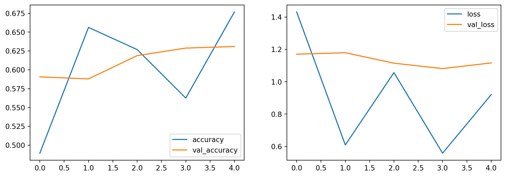
Posso seguire l’andamento del training sia con accuracy che loss. Posso aumentare le epoche, ma richiede più tempo. La soluzione non è ottimale, ma sta imparando. Senza data augmentation, il training sarebbe peggiore. Così facendo ho un modello più robusto. Per migliorare ancora la performance in base alle richieste potrei:
- aumentare il numero di epoche.
- aumentare le iterazioni.
- usare un altro optimizer per ridurre le oscillazioni della validation accuracy e loss.
Salvare su file consente anche di fare confronti tra modelli diversi e di fare ensemble learning.
8 Generatori di immagini
Vediamo un esempio pratico di transfer learning su CNN. Lo montiamo da zero, siccome è un esempio didattico. L’idea è di avere una richiesta di classificazione binaria avendo poche immagini a disposizione: è sia un campanello di allarme di fare transfer learning, sia una situazione tipica di business.
#say no to warnings!
import warnings
warnings.filterwarnings("ignore")
import os
os.environ['TF_CPP_MIN_LOG_LEVEL'] = '3'
import tensorflow as tf
tf.compat.v1.logging.set_verbosity(tf.compat.v1.logging.ERROR)import matplotlib.pyplot as plt
import numpy as np
from tensorflow.keras.preprocessing.image import \
ImageDataGenerator,load_img,array_to_img,img_to_array
from tensorflow.keras.applications import resnet50,ResNet50
from tensorflow.keras.layers import GlobalAveragePooling2D, Dense
from tensorflow.keras.models import ModelResidual Network: le connessioni residuali erano la parte innovativa. È sempre un CNN con la stessa logica di convoluzioni per fare feature extraction e flatten o pooling per ottenere un vettore di feature per ogni immagine, per finire con layer densi.
import os
path = "/Users/simonebrazzi/datasets/rural_and_urban_photos/"
os.listdir(path + "train/urban/")[0]'urban_33.jpeg'plt.imshow(load_img(path + "train/urban/urban_33.jpeg"))
plt.show()
plt.close()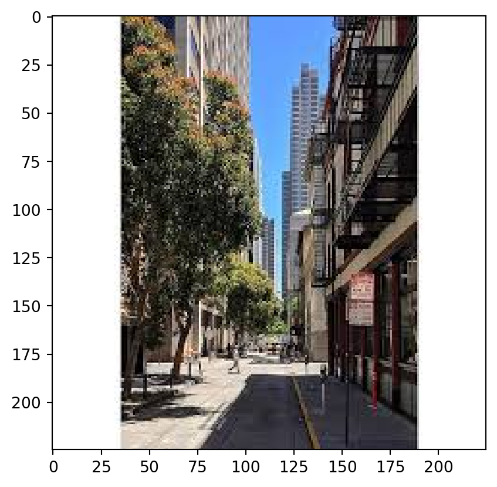
len(os.listdir(path + "train/urban/")), len(os.listdir(path + "train/rural/"))(36, 36)Il dataset è bilanciato, ma abbiamo solo 72 datapoints. Anche usando data augmentationm non è un numero sufficiente. Qui il transfer learning è l’unica opzione possibile.
Ci sono molti modi per caricare un dataset diviso in folders multiple. Keras ha ImageDataGenerator(), ossia un generatore di immagini. Lo possiamo usare anche per caricare immagini dal disco.
train_datagen = ImageDataGenerator()
train_generator = train_datagen.flow_from_directory(
directory=path + "train/"
)
len(next(train_generator))Found 72 images belonging to 2 classes.2next(train_generator)[0].shape(32, 256, 256, 3)Abbiamo una batch di 32 immagini, ognuna con 256x256 pixel e 3 canali. Il generatore di immagini è un iterator che restituisce un batch di immagini e le rispettive etichette. È un’ottima soluzione per dataset molto grandi, perché non carica tutto in memoria, ma solo un batch alla volta. Il 32 ci indica che le immagini sono caricate a batch di 32. Il 256 non va bene, siccome imagenet richiede immagini 224x224. Dobbiamo fare un preprocessing delle immagini.
train_datagen = ImageDataGenerator(
preprocessing_function=resnet50.preprocess_input
)
train_generator = train_datagen.flow_from_directory(
directory=path + "train/",
target_size=(224, 224),
batch_size=72 # tutte le immagini
)
next(train_generator)[0].shapeFound 72 images belonging to 2 classes.(72, 224, 224, 3)Quando passo l’immagine in un modello pretrainato DEVO fare il preprocessing, altrimenti la predizione non è attendibile. Il preprocessing è specifico per ogni modello, quindi devo usare il preprocessing di resnet50. Senza, sto usando il modello male.
I valori sono stati riscalati.
next(train_generator)[0]array([[[[ 151.061 , 138.22101 , 131.32 ],
[ 151.061 , 138.22101 , 131.32 ],
[ 151.061 , 138.22101 , 131.32 ],
...,
[ 111.061 , 98.221 , 91.32 ],
[ 111.061 , 98.221 , 91.32 ],
[ 108.061 , 95.221 , 88.32 ]],
[[ 151.061 , 138.22101 , 131.32 ],
[ 151.061 , 138.22101 , 131.32 ],
[ 151.061 , 138.22101 , 131.32 ],
...,
[ 112.061 , 99.221 , 92.32 ],
[ 112.061 , 99.221 , 92.32 ],
[ 111.061 , 98.221 , 91.32 ]],
[[ 151.061 , 138.22101 , 131.32 ],
[ 151.061 , 138.22101 , 131.32 ],
[ 151.061 , 138.22101 , 131.32 ],
...,
[ 115.061 , 102.221 , 95.32 ],
[ 115.061 , 102.221 , 95.32 ],
[ 117.061 , 104.221 , 97.32 ]],
...,
[[ -81.939 , -30.779 , -56.68 ],
[ -78.939 , -27.779 , -53.68 ],
[ -75.939 , -26.779 , -51.68 ],
...,
[ -70.939 , -52.779 , -56.68 ],
[ -58.939003 , -42.779 , -45.68 ],
[ -88.939 , -75.779 , -76.68 ]],
[[ -83.939 , -34.779 , -59.68 ],
[ -76.939 , -27.779 , -52.68 ],
[ -71.939 , -22.779 , -47.68 ],
...,
[ -81.939 , -63.779 , -67.68 ],
[ -77.939 , -61.779 , -64.68 ],
[ -85.939 , -69.779 , -71.68 ]],
[[ -82.939 , -35.779 , -60.68 ],
[ -72.939 , -25.779 , -50.68 ],
[ -74.939 , -27.779 , -52.68 ],
...,
[ -75.939 , -59.779 , -62.68 ],
[ -80.939 , -64.779 , -67.68 ],
[ -78.939 , -62.779 , -64.68 ]]],
[[[ 26.060997 , -2.7789993, -25.68 ],
[ 25.060997 , -3.7789993, -26.68 ],
[ 24.060997 , -4.7789993, -27.68 ],
...,
[ 32.060997 , -4.7789993, -29.68 ],
[ 32.060997 , -4.7789993, -29.68 ],
[ 27.060997 , -9.778999 , -34.68 ]],
[[ 26.060997 , -2.7789993, -25.68 ],
[ 25.060997 , -3.7789993, -26.68 ],
[ 24.060997 , -4.7789993, -27.68 ],
...,
[ 32.060997 , -4.7789993, -29.68 ],
[ 32.060997 , -4.7789993, -29.68 ],
[ 27.060997 , -9.778999 , -34.68 ]],
[[ 27.060997 , -1.7789993, -24.68 ],
[ 26.060997 , -2.7789993, -25.68 ],
[ 25.060997 , -3.7789993, -26.68 ],
...,
[ 31.060997 , -5.7789993, -30.68 ],
[ 31.060997 , -5.7789993, -30.68 ],
[ 28.060997 , -8.778999 , -33.68 ]],
...,
[[ -73.939 , -80.779 , -76.68 ],
[ -73.939 , -80.779 , -76.68 ],
[ -74.939 , -81.779 , -77.68 ],
...,
[ -77.939 , -83.779 , -75.68 ],
[ -75.939 , -82.779 , -76.68 ],
[ -68.939 , -77.779 , -73.68 ]],
[[ -78.939 , -85.779 , -81.68 ],
[ -78.939 , -85.779 , -81.68 ],
[ -77.939 , -84.779 , -80.68 ],
...,
[ -75.939 , -81.779 , -73.68 ],
[ -76.939 , -83.779 , -77.68 ],
[ -78.939 , -89.779 , -85.68 ]],
[[ -72.939 , -76.779 , -73.68 ],
[ -79.939 , -83.779 , -80.68 ],
[ -81.939 , -85.779 , -82.68 ],
...,
[ -77.939 , -84.779 , -78.68 ],
[ -61.939003 , -68.779 , -64.68 ],
[ -72.939 , -81.779 , -77.68 ]]],
[[[ 116.061 , 91.221 , 72.32 ],
[ 116.061 , 92.221 , 71.32 ],
[ 116.061 , 91.221 , 72.32 ],
...,
[ 115.061 , 90.221 , 71.32 ],
[ 116.061 , 91.221 , 72.32 ],
[ 115.061 , 90.221 , 71.32 ]],
[[ 115.061 , 90.221 , 71.32 ],
[ 115.061 , 91.221 , 70.32 ],
[ 116.061 , 91.221 , 72.32 ],
...,
[ 115.061 , 90.221 , 71.32 ],
[ 116.061 , 91.221 , 72.32 ],
[ 116.061 , 91.221 , 72.32 ]],
[[ 116.061 , 91.221 , 72.32 ],
[ 115.061 , 91.221 , 70.32 ],
[ 115.061 , 90.221 , 71.32 ],
...,
[ 116.061 , 91.221 , 72.32 ],
[ 115.061 , 90.221 , 71.32 ],
[ 115.061 , 90.221 , 71.32 ]],
...,
[[ -35.939003 , -32.779 , -27.68 ],
[ -87.939 , -90.779 , -97.68 ],
[ -70.939 , -75.779 , -75.68 ],
...,
[ -41.939003 , -34.779 , -10.68 ],
[ -11.939003 , -0.7789993, 20.32 ],
[ -61.939003 , -60.779 , -44.68 ]],
[[ -69.939 , -76.779 , -78.68 ],
[ -46.939003 , -46.779 , -45.68 ],
[ -49.939003 , -48.779 , -43.68 ],
...,
[ -23.939003 , -13.778999 , 5.3199997],
[ 11.060997 , 28.221 , 56.32 ],
[ 65.061 , 79.221 , 98.32 ]],
[[ -77.939 , -84.779 , -86.68 ],
[ -69.939 , -75.779 , -79.68 ],
[ -65.939 , -69.779 , -67.68 ],
...,
[ -44.939003 , -34.779 , -19.68 ],
[ -46.939003 , -42.779 , -23.68 ],
[ -32.939003 , -25.779 , -1.6800003]]],
...,
[[[ -18.939003 , 3.2210007, 6.3199997],
[ -18.939003 , 3.2210007, 6.3199997],
[ -18.939003 , 3.2210007, 6.3199997],
...,
[ -90.939 , -115.779 , -123.68 ],
[ -90.939 , -115.779 , -123.68 ],
[ -87.939 , -116.779 , -122.68 ]],
[[ -18.939003 , 3.2210007, 6.3199997],
[ -18.939003 , 3.2210007, 6.3199997],
[ -18.939003 , 3.2210007, 6.3199997],
...,
[ -90.939 , -115.779 , -123.68 ],
[ -89.939 , -115.779 , -123.68 ],
[ -87.939 , -116.779 , -122.68 ]],
[[ -18.939003 , 3.2210007, 6.3199997],
[ -18.939003 , 3.2210007, 6.3199997],
[ -18.939003 , 3.2210007, 6.3199997],
...,
[ -89.939 , -115.779 , -123.68 ],
[ -87.939 , -115.779 , -123.68 ],
[ -87.939 , -116.779 , -122.68 ]],
...,
[[ -88.939 , -113.779 , -120.68 ],
[ -88.939 , -113.779 , -120.68 ],
[ -88.939 , -113.779 , -120.68 ],
...,
[-101.939 , -113.779 , -123.68 ],
[ -99.939 , -113.779 , -123.68 ],
[ -94.939 , -115.779 , -122.68 ]],
[[ -88.939 , -115.779 , -121.68 ],
[ -89.939 , -114.779 , -121.68 ],
[ -88.939 , -115.779 , -121.68 ],
...,
[ -99.939 , -113.779 , -123.68 ],
[ -97.939 , -113.779 , -123.68 ],
[ -92.939 , -115.779 , -122.68 ]],
[[ -87.939 , -116.779 , -122.68 ],
[ -89.939 , -116.779 , -122.68 ],
[ -87.939 , -116.779 , -122.68 ],
...,
[ -93.939 , -114.779 , -121.68 ],
[ -91.939 , -114.779 , -121.68 ],
[ -89.939 , -114.779 , -121.68 ]]],
[[[ 131.061 , 59.221 , 7.3199997],
[ 131.061 , 59.221 , 7.3199997],
[ 131.061 , 59.221 , 7.3199997],
...,
[ 132.061 , 66.221 , 9.32 ],
[ 132.061 , 66.221 , 9.32 ],
[ 132.061 , 65.221 , 11.32 ]],
[[ 132.061 , 60.221 , 8.32 ],
[ 132.061 , 60.221 , 8.32 ],
[ 132.061 , 60.221 , 8.32 ],
...,
[ 132.061 , 66.221 , 9.32 ],
[ 132.061 , 66.221 , 9.32 ],
[ 132.061 , 65.221 , 11.32 ]],
[[ 131.061 , 61.221 , 9.32 ],
[ 131.061 , 61.221 , 9.32 ],
[ 131.061 , 61.221 , 9.32 ],
...,
[ 133.061 , 67.221 , 10.32 ],
[ 133.061 , 67.221 , 10.32 ],
[ 133.061 , 66.221 , 12.32 ]],
...,
[[ -78.939 , -79.779 , -74.68 ],
[ -99.939 , -100.779 , -95.68 ],
[-103.939 , -110.779 , -104.68 ],
...,
[ -19.939003 , 1.2210007, 60.32 ],
[ -75.939 , -54.779 , -2.6800003],
[ -53.939003 , -31.779 , 5.3199997]],
[[ -93.939 , -97.779 , -91.68 ],
[ -71.939 , -75.779 , -69.68 ],
[ -80.939 , -85.779 , -79.68 ],
...,
[ -5.939003 , 20.221 , 81.32 ],
[ -59.939003 , -35.779 , 19.32 ],
[ -59.939003 , -35.779 , 7.3199997]],
[[ -96.939 , -100.779 , -97.68 ],
[ -97.939 , -101.779 , -98.68 ],
[ -81.939 , -85.779 , -82.68 ],
...,
[ -18.939003 , 13.221001 , 74.32 ],
[ -1.939003 , 27.221 , 85.32 ],
[ -38.939003 , -11.778999 , 39.32 ]]],
[[[-103.939 , -109.779 , -83.68 ],
[-103.939 , -116.779 , -95.68 ],
[-103.939 , -116.779 , -90.68 ],
...,
[-103.939 , -116.779 , -78.68 ],
[-103.939 , -116.779 , -82.68 ],
[-103.939 , -116.779 , -84.68 ]],
[[-103.939 , -112.779 , -84.68 ],
[-103.939 , -116.779 , -97.68 ],
[-103.939 , -114.779 , -86.68 ],
...,
[-103.939 , -116.779 , -78.68 ],
[-103.939 , -109.779 , -73.68 ],
[-103.939 , -116.779 , -85.68 ]],
[[-103.939 , -115.779 , -81.68 ],
[-103.939 , -116.779 , -92.68 ],
[-103.939 , -114.779 , -83.68 ],
...,
[ -99.939 , -108.779 , -74.68 ],
[-103.939 , -116.779 , -89.68 ],
[-103.939 , -115.779 , -87.68 ]],
...,
[[-101.939 , -116.779 , -89.68 ],
[ -99.939 , -116.779 , -87.68 ],
[ -98.939 , -115.779 , -86.68 ],
...,
[-103.939 , -114.779 , -86.68 ],
[-103.939 , -114.779 , -86.68 ],
[-103.939 , -116.779 , -85.68 ]],
[[-103.939 , -116.779 , -92.68 ],
[-101.939 , -116.779 , -89.68 ],
[ -99.939 , -116.779 , -87.68 ],
...,
[-103.939 , -114.779 , -86.68 ],
[-103.939 , -114.779 , -86.68 ],
[-103.939 , -116.779 , -85.68 ]],
[[-101.939 , -116.779 , -87.68 ],
[-101.939 , -116.779 , -87.68 ],
[-101.939 , -116.779 , -87.68 ],
...,
[-103.939 , -116.779 , -87.68 ],
[-103.939 , -116.779 , -87.68 ],
[-103.939 , -116.779 , -87.68 ]]]], dtype=float32)Posso fare la stessa cosa con il test set.
test_datagen = ImageDataGenerator(
preprocessing_function=resnet50.preprocess_input
)
test_generator = test_datagen.flow_from_directory(
directory=path + "val/",
target_size=(224, 224),
batch_size=20,
shuffle=False
)Found 20 images belonging to 2 classes.test_datagen = ImageDataGenerator()
raw_xtest, ytest = next(
test_datagen.flow_from_directory(
directory=path + "val/",
target_size=(224, 224),
batch_size=20,
shuffle=False
)
)
xtest = resnet50.preprocess_input(raw_xtest)Found 20 images belonging to 2 classes.raw_xtest.shape, ytest.shape((20, 224, 224, 3), (20, 2))Ho 20 immagini, ognuna con 224x224 pixel e 3 canali. ytest ha 20 etichette.
raw_xtest[0]array([[[ 85.32 , 96.221 , 134.061 ],
[ 85.32 , 96.221 , 134.061 ],
[ 85.32 , 96.221 , 134.061 ],
...,
[ 82.32 , 94.221 , 136.061 ],
[ 82.32 , 94.221 , 136.061 ],
[ 81.32 , 93.221 , 135.061 ]],
[[ 87.32 , 98.221 , 136.061 ],
[ 87.32 , 98.221 , 136.061 ],
[ 87.32 , 98.221 , 136.061 ],
...,
[ 82.32 , 94.221 , 136.061 ],
[ 81.32 , 93.221 , 135.061 ],
[ 81.32 , 93.221 , 135.061 ]],
[[ 90.32 , 101.221 , 139.061 ],
[ 90.32 , 101.221 , 139.061 ],
[ 91.32 , 102.221 , 140.061 ],
...,
[ 81.32 , 93.221 , 135.061 ],
[ 81.32 , 93.221 , 135.061 ],
[ 81.32 , 93.221 , 135.061 ]],
...,
[[-38.68 , -29.779 , -56.939003 ],
[-46.68 , -37.779 , -64.939 ],
[-47.68 , -39.779 , -66.939 ],
...,
[-23.68 , -25.779 , -51.939003 ],
[-17.68 , -18.779 , -44.939003 ],
[ -7.6800003, -5.7789993, -34.939003 ]],
[[-44.68 , -35.779 , -61.939003 ],
[-44.68 , -35.779 , -61.939003 ],
[-38.68 , -33.779 , -58.939003 ],
...,
[-10.68 , -15.778999 , -40.939003 ],
[ 21.32 , 19.221 , -6.939003 ],
[-26.68 , -24.779 , -53.939003 ]],
[[-45.68 , -34.779 , -56.939003 ],
[-58.68 , -50.779 , -71.939 ],
[-44.68 , -42.779 , -61.939003 ],
...,
[ -8.68 , -15.778999 , -37.939003 ],
[-15.68 , -20.779 , -45.939003 ],
[-26.68 , -24.779 , -53.939003 ]]], dtype=float32)Le immagini in raw_xtest non sono ancora state preprocessate. Questo ci servirà per i plot. La rete neurale deve essere trainata sul preprocessing, per evitare gatti tende da doccia.
raw_xtest serve per visualizzare le immagini, xtest per fare validazione.
9 Utilizziamo il transfer learning
9.1 Modello
weights ci dice che il modello è pretrainato. é di default è True, ossia prende tutto il modello. Con False, ci toglie gli ultimi layer.
base_model = ResNet50(
weights='imagenet',
include_top=False
)#for i, layer in enumerate(base_model.layers):
# print(i, layer.name)Abbiamo 174 layers con tantissime convoluzioni.
base_model.summary()Model: "resnet50"
┏━━━━━━━━━━━━━━━━━━━━━┳━━━━━━━━━━━━━━━━━━━┳━━━━━━━━━━━━┳━━━━━━━━━━━━━━━━━━━┓ ┃ Layer (type) ┃ Output Shape ┃ Param # ┃ Connected to ┃ ┡━━━━━━━━━━━━━━━━━━━━━╇━━━━━━━━━━━━━━━━━━━╇━━━━━━━━━━━━╇━━━━━━━━━━━━━━━━━━━┩ │ input_layer_4 │ (None, None, │ 0 │ - │ │ (InputLayer) │ None, 3) │ │ │ ├─────────────────────┼───────────────────┼────────────┼───────────────────┤ │ conv1_pad │ (None, None, │ 0 │ input_layer_4[0]… │ │ (ZeroPadding2D) │ None, 3) │ │ │ ├─────────────────────┼───────────────────┼────────────┼───────────────────┤ │ conv1_conv (Conv2D) │ (None, None, │ 9,472 │ conv1_pad[0][0] │ │ │ None, 64) │ │ │ ├─────────────────────┼───────────────────┼────────────┼───────────────────┤ │ conv1_bn │ (None, None, │ 256 │ conv1_conv[0][0] │ │ (BatchNormalizatio… │ None, 64) │ │ │ ├─────────────────────┼───────────────────┼────────────┼───────────────────┤ │ conv1_relu │ (None, None, │ 0 │ conv1_bn[0][0] │ │ (Activation) │ None, 64) │ │ │ ├─────────────────────┼───────────────────┼────────────┼───────────────────┤ │ pool1_pad │ (None, None, │ 0 │ conv1_relu[0][0] │ │ (ZeroPadding2D) │ None, 64) │ │ │ ├─────────────────────┼───────────────────┼────────────┼───────────────────┤ │ pool1_pool │ (None, None, │ 0 │ pool1_pad[0][0] │ │ (MaxPooling2D) │ None, 64) │ │ │ ├─────────────────────┼───────────────────┼────────────┼───────────────────┤ │ conv2_block1_1_conv │ (None, None, │ 4,160 │ pool1_pool[0][0] │ │ (Conv2D) │ None, 64) │ │ │ ├─────────────────────┼───────────────────┼────────────┼───────────────────┤ │ conv2_block1_1_bn │ (None, None, │ 256 │ conv2_block1_1_c… │ │ (BatchNormalizatio… │ None, 64) │ │ │ ├─────────────────────┼───────────────────┼────────────┼───────────────────┤ │ conv2_block1_1_relu │ (None, None, │ 0 │ conv2_block1_1_b… │ │ (Activation) │ None, 64) │ │ │ ├─────────────────────┼───────────────────┼────────────┼───────────────────┤ │ conv2_block1_2_conv │ (None, None, │ 36,928 │ conv2_block1_1_r… │ │ (Conv2D) │ None, 64) │ │ │ ├─────────────────────┼───────────────────┼────────────┼───────────────────┤ │ conv2_block1_2_bn │ (None, None, │ 256 │ conv2_block1_2_c… │ │ (BatchNormalizatio… │ None, 64) │ │ │ ├─────────────────────┼───────────────────┼────────────┼───────────────────┤ │ conv2_block1_2_relu │ (None, None, │ 0 │ conv2_block1_2_b… │ │ (Activation) │ None, 64) │ │ │ ├─────────────────────┼───────────────────┼────────────┼───────────────────┤ │ conv2_block1_0_conv │ (None, None, │ 16,640 │ pool1_pool[0][0] │ │ (Conv2D) │ None, 256) │ │ │ ├─────────────────────┼───────────────────┼────────────┼───────────────────┤ │ conv2_block1_3_conv │ (None, None, │ 16,640 │ conv2_block1_2_r… │ │ (Conv2D) │ None, 256) │ │ │ ├─────────────────────┼───────────────────┼────────────┼───────────────────┤ │ conv2_block1_0_bn │ (None, None, │ 1,024 │ conv2_block1_0_c… │ │ (BatchNormalizatio… │ None, 256) │ │ │ ├─────────────────────┼───────────────────┼────────────┼───────────────────┤ │ conv2_block1_3_bn │ (None, None, │ 1,024 │ conv2_block1_3_c… │ │ (BatchNormalizatio… │ None, 256) │ │ │ ├─────────────────────┼───────────────────┼────────────┼───────────────────┤ │ conv2_block1_add │ (None, None, │ 0 │ conv2_block1_0_b… │ │ (Add) │ None, 256) │ │ conv2_block1_3_b… │ ├─────────────────────┼───────────────────┼────────────┼───────────────────┤ │ conv2_block1_out │ (None, None, │ 0 │ conv2_block1_add… │ │ (Activation) │ None, 256) │ │ │ ├─────────────────────┼───────────────────┼────────────┼───────────────────┤ │ conv2_block2_1_conv │ (None, None, │ 16,448 │ conv2_block1_out… │ │ (Conv2D) │ None, 64) │ │ │ ├─────────────────────┼───────────────────┼────────────┼───────────────────┤ │ conv2_block2_1_bn │ (None, None, │ 256 │ conv2_block2_1_c… │ │ (BatchNormalizatio… │ None, 64) │ │ │ ├─────────────────────┼───────────────────┼────────────┼───────────────────┤ │ conv2_block2_1_relu │ (None, None, │ 0 │ conv2_block2_1_b… │ │ (Activation) │ None, 64) │ │ │ ├─────────────────────┼───────────────────┼────────────┼───────────────────┤ │ conv2_block2_2_conv │ (None, None, │ 36,928 │ conv2_block2_1_r… │ │ (Conv2D) │ None, 64) │ │ │ ├─────────────────────┼───────────────────┼────────────┼───────────────────┤ │ conv2_block2_2_bn │ (None, None, │ 256 │ conv2_block2_2_c… │ │ (BatchNormalizatio… │ None, 64) │ │ │ ├─────────────────────┼───────────────────┼────────────┼───────────────────┤ │ conv2_block2_2_relu │ (None, None, │ 0 │ conv2_block2_2_b… │ │ (Activation) │ None, 64) │ │ │ ├─────────────────────┼───────────────────┼────────────┼───────────────────┤ │ conv2_block2_3_conv │ (None, None, │ 16,640 │ conv2_block2_2_r… │ │ (Conv2D) │ None, 256) │ │ │ ├─────────────────────┼───────────────────┼────────────┼───────────────────┤ │ conv2_block2_3_bn │ (None, None, │ 1,024 │ conv2_block2_3_c… │ │ (BatchNormalizatio… │ None, 256) │ │ │ ├─────────────────────┼───────────────────┼────────────┼───────────────────┤ │ conv2_block2_add │ (None, None, │ 0 │ conv2_block1_out… │ │ (Add) │ None, 256) │ │ conv2_block2_3_b… │ ├─────────────────────┼───────────────────┼────────────┼───────────────────┤ │ conv2_block2_out │ (None, None, │ 0 │ conv2_block2_add… │ │ (Activation) │ None, 256) │ │ │ ├─────────────────────┼───────────────────┼────────────┼───────────────────┤ │ conv2_block3_1_conv │ (None, None, │ 16,448 │ conv2_block2_out… │ │ (Conv2D) │ None, 64) │ │ │ ├─────────────────────┼───────────────────┼────────────┼───────────────────┤ │ conv2_block3_1_bn │ (None, None, │ 256 │ conv2_block3_1_c… │ │ (BatchNormalizatio… │ None, 64) │ │ │ ├─────────────────────┼───────────────────┼────────────┼───────────────────┤ │ conv2_block3_1_relu │ (None, None, │ 0 │ conv2_block3_1_b… │ │ (Activation) │ None, 64) │ │ │ ├─────────────────────┼───────────────────┼────────────┼───────────────────┤ │ conv2_block3_2_conv │ (None, None, │ 36,928 │ conv2_block3_1_r… │ │ (Conv2D) │ None, 64) │ │ │ ├─────────────────────┼───────────────────┼────────────┼───────────────────┤ │ conv2_block3_2_bn │ (None, None, │ 256 │ conv2_block3_2_c… │ │ (BatchNormalizatio… │ None, 64) │ │ │ ├─────────────────────┼───────────────────┼────────────┼───────────────────┤ │ conv2_block3_2_relu │ (None, None, │ 0 │ conv2_block3_2_b… │ │ (Activation) │ None, 64) │ │ │ ├─────────────────────┼───────────────────┼────────────┼───────────────────┤ │ conv2_block3_3_conv │ (None, None, │ 16,640 │ conv2_block3_2_r… │ │ (Conv2D) │ None, 256) │ │ │ ├─────────────────────┼───────────────────┼────────────┼───────────────────┤ │ conv2_block3_3_bn │ (None, None, │ 1,024 │ conv2_block3_3_c… │ │ (BatchNormalizatio… │ None, 256) │ │ │ ├─────────────────────┼───────────────────┼────────────┼───────────────────┤ │ conv2_block3_add │ (None, None, │ 0 │ conv2_block2_out… │ │ (Add) │ None, 256) │ │ conv2_block3_3_b… │ ├─────────────────────┼───────────────────┼────────────┼───────────────────┤ │ conv2_block3_out │ (None, None, │ 0 │ conv2_block3_add… │ │ (Activation) │ None, 256) │ │ │ ├─────────────────────┼───────────────────┼────────────┼───────────────────┤ │ conv3_block1_1_conv │ (None, None, │ 32,896 │ conv2_block3_out… │ │ (Conv2D) │ None, 128) │ │ │ ├─────────────────────┼───────────────────┼────────────┼───────────────────┤ │ conv3_block1_1_bn │ (None, None, │ 512 │ conv3_block1_1_c… │ │ (BatchNormalizatio… │ None, 128) │ │ │ ├─────────────────────┼───────────────────┼────────────┼───────────────────┤ │ conv3_block1_1_relu │ (None, None, │ 0 │ conv3_block1_1_b… │ │ (Activation) │ None, 128) │ │ │ ├─────────────────────┼───────────────────┼────────────┼───────────────────┤ │ conv3_block1_2_conv │ (None, None, │ 147,584 │ conv3_block1_1_r… │ │ (Conv2D) │ None, 128) │ │ │ ├─────────────────────┼───────────────────┼────────────┼───────────────────┤ │ conv3_block1_2_bn │ (None, None, │ 512 │ conv3_block1_2_c… │ │ (BatchNormalizatio… │ None, 128) │ │ │ ├─────────────────────┼───────────────────┼────────────┼───────────────────┤ │ conv3_block1_2_relu │ (None, None, │ 0 │ conv3_block1_2_b… │ │ (Activation) │ None, 128) │ │ │ ├─────────────────────┼───────────────────┼────────────┼───────────────────┤ │ conv3_block1_0_conv │ (None, None, │ 131,584 │ conv2_block3_out… │ │ (Conv2D) │ None, 512) │ │ │ ├─────────────────────┼───────────────────┼────────────┼───────────────────┤ │ conv3_block1_3_conv │ (None, None, │ 66,048 │ conv3_block1_2_r… │ │ (Conv2D) │ None, 512) │ │ │ ├─────────────────────┼───────────────────┼────────────┼───────────────────┤ │ conv3_block1_0_bn │ (None, None, │ 2,048 │ conv3_block1_0_c… │ │ (BatchNormalizatio… │ None, 512) │ │ │ ├─────────────────────┼───────────────────┼────────────┼───────────────────┤ │ conv3_block1_3_bn │ (None, None, │ 2,048 │ conv3_block1_3_c… │ │ (BatchNormalizatio… │ None, 512) │ │ │ ├─────────────────────┼───────────────────┼────────────┼───────────────────┤ │ conv3_block1_add │ (None, None, │ 0 │ conv3_block1_0_b… │ │ (Add) │ None, 512) │ │ conv3_block1_3_b… │ ├─────────────────────┼───────────────────┼────────────┼───────────────────┤ │ conv3_block1_out │ (None, None, │ 0 │ conv3_block1_add… │ │ (Activation) │ None, 512) │ │ │ ├─────────────────────┼───────────────────┼────────────┼───────────────────┤ │ conv3_block2_1_conv │ (None, None, │ 65,664 │ conv3_block1_out… │ │ (Conv2D) │ None, 128) │ │ │ ├─────────────────────┼───────────────────┼────────────┼───────────────────┤ │ conv3_block2_1_bn │ (None, None, │ 512 │ conv3_block2_1_c… │ │ (BatchNormalizatio… │ None, 128) │ │ │ ├─────────────────────┼───────────────────┼────────────┼───────────────────┤ │ conv3_block2_1_relu │ (None, None, │ 0 │ conv3_block2_1_b… │ │ (Activation) │ None, 128) │ │ │ ├─────────────────────┼───────────────────┼────────────┼───────────────────┤ │ conv3_block2_2_conv │ (None, None, │ 147,584 │ conv3_block2_1_r… │ │ (Conv2D) │ None, 128) │ │ │ ├─────────────────────┼───────────────────┼────────────┼───────────────────┤ │ conv3_block2_2_bn │ (None, None, │ 512 │ conv3_block2_2_c… │ │ (BatchNormalizatio… │ None, 128) │ │ │ ├─────────────────────┼───────────────────┼────────────┼───────────────────┤ │ conv3_block2_2_relu │ (None, None, │ 0 │ conv3_block2_2_b… │ │ (Activation) │ None, 128) │ │ │ ├─────────────────────┼───────────────────┼────────────┼───────────────────┤ │ conv3_block2_3_conv │ (None, None, │ 66,048 │ conv3_block2_2_r… │ │ (Conv2D) │ None, 512) │ │ │ ├─────────────────────┼───────────────────┼────────────┼───────────────────┤ │ conv3_block2_3_bn │ (None, None, │ 2,048 │ conv3_block2_3_c… │ │ (BatchNormalizatio… │ None, 512) │ │ │ ├─────────────────────┼───────────────────┼────────────┼───────────────────┤ │ conv3_block2_add │ (None, None, │ 0 │ conv3_block1_out… │ │ (Add) │ None, 512) │ │ conv3_block2_3_b… │ ├─────────────────────┼───────────────────┼────────────┼───────────────────┤ │ conv3_block2_out │ (None, None, │ 0 │ conv3_block2_add… │ │ (Activation) │ None, 512) │ │ │ ├─────────────────────┼───────────────────┼────────────┼───────────────────┤ │ conv3_block3_1_conv │ (None, None, │ 65,664 │ conv3_block2_out… │ │ (Conv2D) │ None, 128) │ │ │ ├─────────────────────┼───────────────────┼────────────┼───────────────────┤ │ conv3_block3_1_bn │ (None, None, │ 512 │ conv3_block3_1_c… │ │ (BatchNormalizatio… │ None, 128) │ │ │ ├─────────────────────┼───────────────────┼────────────┼───────────────────┤ │ conv3_block3_1_relu │ (None, None, │ 0 │ conv3_block3_1_b… │ │ (Activation) │ None, 128) │ │ │ ├─────────────────────┼───────────────────┼────────────┼───────────────────┤ │ conv3_block3_2_conv │ (None, None, │ 147,584 │ conv3_block3_1_r… │ │ (Conv2D) │ None, 128) │ │ │ ├─────────────────────┼───────────────────┼────────────┼───────────────────┤ │ conv3_block3_2_bn │ (None, None, │ 512 │ conv3_block3_2_c… │ │ (BatchNormalizatio… │ None, 128) │ │ │ ├─────────────────────┼───────────────────┼────────────┼───────────────────┤ │ conv3_block3_2_relu │ (None, None, │ 0 │ conv3_block3_2_b… │ │ (Activation) │ None, 128) │ │ │ ├─────────────────────┼───────────────────┼────────────┼───────────────────┤ │ conv3_block3_3_conv │ (None, None, │ 66,048 │ conv3_block3_2_r… │ │ (Conv2D) │ None, 512) │ │ │ ├─────────────────────┼───────────────────┼────────────┼───────────────────┤ │ conv3_block3_3_bn │ (None, None, │ 2,048 │ conv3_block3_3_c… │ │ (BatchNormalizatio… │ None, 512) │ │ │ ├─────────────────────┼───────────────────┼────────────┼───────────────────┤ │ conv3_block3_add │ (None, None, │ 0 │ conv3_block2_out… │ │ (Add) │ None, 512) │ │ conv3_block3_3_b… │ ├─────────────────────┼───────────────────┼────────────┼───────────────────┤ │ conv3_block3_out │ (None, None, │ 0 │ conv3_block3_add… │ │ (Activation) │ None, 512) │ │ │ ├─────────────────────┼───────────────────┼────────────┼───────────────────┤ │ conv3_block4_1_conv │ (None, None, │ 65,664 │ conv3_block3_out… │ │ (Conv2D) │ None, 128) │ │ │ ├─────────────────────┼───────────────────┼────────────┼───────────────────┤ │ conv3_block4_1_bn │ (None, None, │ 512 │ conv3_block4_1_c… │ │ (BatchNormalizatio… │ None, 128) │ │ │ ├─────────────────────┼───────────────────┼────────────┼───────────────────┤ │ conv3_block4_1_relu │ (None, None, │ 0 │ conv3_block4_1_b… │ │ (Activation) │ None, 128) │ │ │ ├─────────────────────┼───────────────────┼────────────┼───────────────────┤ │ conv3_block4_2_conv │ (None, None, │ 147,584 │ conv3_block4_1_r… │ │ (Conv2D) │ None, 128) │ │ │ ├─────────────────────┼───────────────────┼────────────┼───────────────────┤ │ conv3_block4_2_bn │ (None, None, │ 512 │ conv3_block4_2_c… │ │ (BatchNormalizatio… │ None, 128) │ │ │ ├─────────────────────┼───────────────────┼────────────┼───────────────────┤ │ conv3_block4_2_relu │ (None, None, │ 0 │ conv3_block4_2_b… │ │ (Activation) │ None, 128) │ │ │ ├─────────────────────┼───────────────────┼────────────┼───────────────────┤ │ conv3_block4_3_conv │ (None, None, │ 66,048 │ conv3_block4_2_r… │ │ (Conv2D) │ None, 512) │ │ │ ├─────────────────────┼───────────────────┼────────────┼───────────────────┤ │ conv3_block4_3_bn │ (None, None, │ 2,048 │ conv3_block4_3_c… │ │ (BatchNormalizatio… │ None, 512) │ │ │ ├─────────────────────┼───────────────────┼────────────┼───────────────────┤ │ conv3_block4_add │ (None, None, │ 0 │ conv3_block3_out… │ │ (Add) │ None, 512) │ │ conv3_block4_3_b… │ ├─────────────────────┼───────────────────┼────────────┼───────────────────┤ │ conv3_block4_out │ (None, None, │ 0 │ conv3_block4_add… │ │ (Activation) │ None, 512) │ │ │ ├─────────────────────┼───────────────────┼────────────┼───────────────────┤ │ conv4_block1_1_conv │ (None, None, │ 131,328 │ conv3_block4_out… │ │ (Conv2D) │ None, 256) │ │ │ ├─────────────────────┼───────────────────┼────────────┼───────────────────┤ │ conv4_block1_1_bn │ (None, None, │ 1,024 │ conv4_block1_1_c… │ │ (BatchNormalizatio… │ None, 256) │ │ │ ├─────────────────────┼───────────────────┼────────────┼───────────────────┤ │ conv4_block1_1_relu │ (None, None, │ 0 │ conv4_block1_1_b… │ │ (Activation) │ None, 256) │ │ │ ├─────────────────────┼───────────────────┼────────────┼───────────────────┤ │ conv4_block1_2_conv │ (None, None, │ 590,080 │ conv4_block1_1_r… │ │ (Conv2D) │ None, 256) │ │ │ ├─────────────────────┼───────────────────┼────────────┼───────────────────┤ │ conv4_block1_2_bn │ (None, None, │ 1,024 │ conv4_block1_2_c… │ │ (BatchNormalizatio… │ None, 256) │ │ │ ├─────────────────────┼───────────────────┼────────────┼───────────────────┤ │ conv4_block1_2_relu │ (None, None, │ 0 │ conv4_block1_2_b… │ │ (Activation) │ None, 256) │ │ │ ├─────────────────────┼───────────────────┼────────────┼───────────────────┤ │ conv4_block1_0_conv │ (None, None, │ 525,312 │ conv3_block4_out… │ │ (Conv2D) │ None, 1024) │ │ │ ├─────────────────────┼───────────────────┼────────────┼───────────────────┤ │ conv4_block1_3_conv │ (None, None, │ 263,168 │ conv4_block1_2_r… │ │ (Conv2D) │ None, 1024) │ │ │ ├─────────────────────┼───────────────────┼────────────┼───────────────────┤ │ conv4_block1_0_bn │ (None, None, │ 4,096 │ conv4_block1_0_c… │ │ (BatchNormalizatio… │ None, 1024) │ │ │ ├─────────────────────┼───────────────────┼────────────┼───────────────────┤ │ conv4_block1_3_bn │ (None, None, │ 4,096 │ conv4_block1_3_c… │ │ (BatchNormalizatio… │ None, 1024) │ │ │ ├─────────────────────┼───────────────────┼────────────┼───────────────────┤ │ conv4_block1_add │ (None, None, │ 0 │ conv4_block1_0_b… │ │ (Add) │ None, 1024) │ │ conv4_block1_3_b… │ ├─────────────────────┼───────────────────┼────────────┼───────────────────┤ │ conv4_block1_out │ (None, None, │ 0 │ conv4_block1_add… │ │ (Activation) │ None, 1024) │ │ │ ├─────────────────────┼───────────────────┼────────────┼───────────────────┤ │ conv4_block2_1_conv │ (None, None, │ 262,400 │ conv4_block1_out… │ │ (Conv2D) │ None, 256) │ │ │ ├─────────────────────┼───────────────────┼────────────┼───────────────────┤ │ conv4_block2_1_bn │ (None, None, │ 1,024 │ conv4_block2_1_c… │ │ (BatchNormalizatio… │ None, 256) │ │ │ ├─────────────────────┼───────────────────┼────────────┼───────────────────┤ │ conv4_block2_1_relu │ (None, None, │ 0 │ conv4_block2_1_b… │ │ (Activation) │ None, 256) │ │ │ ├─────────────────────┼───────────────────┼────────────┼───────────────────┤ │ conv4_block2_2_conv │ (None, None, │ 590,080 │ conv4_block2_1_r… │ │ (Conv2D) │ None, 256) │ │ │ ├─────────────────────┼───────────────────┼────────────┼───────────────────┤ │ conv4_block2_2_bn │ (None, None, │ 1,024 │ conv4_block2_2_c… │ │ (BatchNormalizatio… │ None, 256) │ │ │ ├─────────────────────┼───────────────────┼────────────┼───────────────────┤ │ conv4_block2_2_relu │ (None, None, │ 0 │ conv4_block2_2_b… │ │ (Activation) │ None, 256) │ │ │ ├─────────────────────┼───────────────────┼────────────┼───────────────────┤ │ conv4_block2_3_conv │ (None, None, │ 263,168 │ conv4_block2_2_r… │ │ (Conv2D) │ None, 1024) │ │ │ ├─────────────────────┼───────────────────┼────────────┼───────────────────┤ │ conv4_block2_3_bn │ (None, None, │ 4,096 │ conv4_block2_3_c… │ │ (BatchNormalizatio… │ None, 1024) │ │ │ ├─────────────────────┼───────────────────┼────────────┼───────────────────┤ │ conv4_block2_add │ (None, None, │ 0 │ conv4_block1_out… │ │ (Add) │ None, 1024) │ │ conv4_block2_3_b… │ ├─────────────────────┼───────────────────┼────────────┼───────────────────┤ │ conv4_block2_out │ (None, None, │ 0 │ conv4_block2_add… │ │ (Activation) │ None, 1024) │ │ │ ├─────────────────────┼───────────────────┼────────────┼───────────────────┤ │ conv4_block3_1_conv │ (None, None, │ 262,400 │ conv4_block2_out… │ │ (Conv2D) │ None, 256) │ │ │ ├─────────────────────┼───────────────────┼────────────┼───────────────────┤ │ conv4_block3_1_bn │ (None, None, │ 1,024 │ conv4_block3_1_c… │ │ (BatchNormalizatio… │ None, 256) │ │ │ ├─────────────────────┼───────────────────┼────────────┼───────────────────┤ │ conv4_block3_1_relu │ (None, None, │ 0 │ conv4_block3_1_b… │ │ (Activation) │ None, 256) │ │ │ ├─────────────────────┼───────────────────┼────────────┼───────────────────┤ │ conv4_block3_2_conv │ (None, None, │ 590,080 │ conv4_block3_1_r… │ │ (Conv2D) │ None, 256) │ │ │ ├─────────────────────┼───────────────────┼────────────┼───────────────────┤ │ conv4_block3_2_bn │ (None, None, │ 1,024 │ conv4_block3_2_c… │ │ (BatchNormalizatio… │ None, 256) │ │ │ ├─────────────────────┼───────────────────┼────────────┼───────────────────┤ │ conv4_block3_2_relu │ (None, None, │ 0 │ conv4_block3_2_b… │ │ (Activation) │ None, 256) │ │ │ ├─────────────────────┼───────────────────┼────────────┼───────────────────┤ │ conv4_block3_3_conv │ (None, None, │ 263,168 │ conv4_block3_2_r… │ │ (Conv2D) │ None, 1024) │ │ │ ├─────────────────────┼───────────────────┼────────────┼───────────────────┤ │ conv4_block3_3_bn │ (None, None, │ 4,096 │ conv4_block3_3_c… │ │ (BatchNormalizatio… │ None, 1024) │ │ │ ├─────────────────────┼───────────────────┼────────────┼───────────────────┤ │ conv4_block3_add │ (None, None, │ 0 │ conv4_block2_out… │ │ (Add) │ None, 1024) │ │ conv4_block3_3_b… │ ├─────────────────────┼───────────────────┼────────────┼───────────────────┤ │ conv4_block3_out │ (None, None, │ 0 │ conv4_block3_add… │ │ (Activation) │ None, 1024) │ │ │ ├─────────────────────┼───────────────────┼────────────┼───────────────────┤ │ conv4_block4_1_conv │ (None, None, │ 262,400 │ conv4_block3_out… │ │ (Conv2D) │ None, 256) │ │ │ ├─────────────────────┼───────────────────┼────────────┼───────────────────┤ │ conv4_block4_1_bn │ (None, None, │ 1,024 │ conv4_block4_1_c… │ │ (BatchNormalizatio… │ None, 256) │ │ │ ├─────────────────────┼───────────────────┼────────────┼───────────────────┤ │ conv4_block4_1_relu │ (None, None, │ 0 │ conv4_block4_1_b… │ │ (Activation) │ None, 256) │ │ │ ├─────────────────────┼───────────────────┼────────────┼───────────────────┤ │ conv4_block4_2_conv │ (None, None, │ 590,080 │ conv4_block4_1_r… │ │ (Conv2D) │ None, 256) │ │ │ ├─────────────────────┼───────────────────┼────────────┼───────────────────┤ │ conv4_block4_2_bn │ (None, None, │ 1,024 │ conv4_block4_2_c… │ │ (BatchNormalizatio… │ None, 256) │ │ │ ├─────────────────────┼───────────────────┼────────────┼───────────────────┤ │ conv4_block4_2_relu │ (None, None, │ 0 │ conv4_block4_2_b… │ │ (Activation) │ None, 256) │ │ │ ├─────────────────────┼───────────────────┼────────────┼───────────────────┤ │ conv4_block4_3_conv │ (None, None, │ 263,168 │ conv4_block4_2_r… │ │ (Conv2D) │ None, 1024) │ │ │ ├─────────────────────┼───────────────────┼────────────┼───────────────────┤ │ conv4_block4_3_bn │ (None, None, │ 4,096 │ conv4_block4_3_c… │ │ (BatchNormalizatio… │ None, 1024) │ │ │ ├─────────────────────┼───────────────────┼────────────┼───────────────────┤ │ conv4_block4_add │ (None, None, │ 0 │ conv4_block3_out… │ │ (Add) │ None, 1024) │ │ conv4_block4_3_b… │ ├─────────────────────┼───────────────────┼────────────┼───────────────────┤ │ conv4_block4_out │ (None, None, │ 0 │ conv4_block4_add… │ │ (Activation) │ None, 1024) │ │ │ ├─────────────────────┼───────────────────┼────────────┼───────────────────┤ │ conv4_block5_1_conv │ (None, None, │ 262,400 │ conv4_block4_out… │ │ (Conv2D) │ None, 256) │ │ │ ├─────────────────────┼───────────────────┼────────────┼───────────────────┤ │ conv4_block5_1_bn │ (None, None, │ 1,024 │ conv4_block5_1_c… │ │ (BatchNormalizatio… │ None, 256) │ │ │ ├─────────────────────┼───────────────────┼────────────┼───────────────────┤ │ conv4_block5_1_relu │ (None, None, │ 0 │ conv4_block5_1_b… │ │ (Activation) │ None, 256) │ │ │ ├─────────────────────┼───────────────────┼────────────┼───────────────────┤ │ conv4_block5_2_conv │ (None, None, │ 590,080 │ conv4_block5_1_r… │ │ (Conv2D) │ None, 256) │ │ │ ├─────────────────────┼───────────────────┼────────────┼───────────────────┤ │ conv4_block5_2_bn │ (None, None, │ 1,024 │ conv4_block5_2_c… │ │ (BatchNormalizatio… │ None, 256) │ │ │ ├─────────────────────┼───────────────────┼────────────┼───────────────────┤ │ conv4_block5_2_relu │ (None, None, │ 0 │ conv4_block5_2_b… │ │ (Activation) │ None, 256) │ │ │ ├─────────────────────┼───────────────────┼────────────┼───────────────────┤ │ conv4_block5_3_conv │ (None, None, │ 263,168 │ conv4_block5_2_r… │ │ (Conv2D) │ None, 1024) │ │ │ ├─────────────────────┼───────────────────┼────────────┼───────────────────┤ │ conv4_block5_3_bn │ (None, None, │ 4,096 │ conv4_block5_3_c… │ │ (BatchNormalizatio… │ None, 1024) │ │ │ ├─────────────────────┼───────────────────┼────────────┼───────────────────┤ │ conv4_block5_add │ (None, None, │ 0 │ conv4_block4_out… │ │ (Add) │ None, 1024) │ │ conv4_block5_3_b… │ ├─────────────────────┼───────────────────┼────────────┼───────────────────┤ │ conv4_block5_out │ (None, None, │ 0 │ conv4_block5_add… │ │ (Activation) │ None, 1024) │ │ │ ├─────────────────────┼───────────────────┼────────────┼───────────────────┤ │ conv4_block6_1_conv │ (None, None, │ 262,400 │ conv4_block5_out… │ │ (Conv2D) │ None, 256) │ │ │ ├─────────────────────┼───────────────────┼────────────┼───────────────────┤ │ conv4_block6_1_bn │ (None, None, │ 1,024 │ conv4_block6_1_c… │ │ (BatchNormalizatio… │ None, 256) │ │ │ ├─────────────────────┼───────────────────┼────────────┼───────────────────┤ │ conv4_block6_1_relu │ (None, None, │ 0 │ conv4_block6_1_b… │ │ (Activation) │ None, 256) │ │ │ ├─────────────────────┼───────────────────┼────────────┼───────────────────┤ │ conv4_block6_2_conv │ (None, None, │ 590,080 │ conv4_block6_1_r… │ │ (Conv2D) │ None, 256) │ │ │ ├─────────────────────┼───────────────────┼────────────┼───────────────────┤ │ conv4_block6_2_bn │ (None, None, │ 1,024 │ conv4_block6_2_c… │ │ (BatchNormalizatio… │ None, 256) │ │ │ ├─────────────────────┼───────────────────┼────────────┼───────────────────┤ │ conv4_block6_2_relu │ (None, None, │ 0 │ conv4_block6_2_b… │ │ (Activation) │ None, 256) │ │ │ ├─────────────────────┼───────────────────┼────────────┼───────────────────┤ │ conv4_block6_3_conv │ (None, None, │ 263,168 │ conv4_block6_2_r… │ │ (Conv2D) │ None, 1024) │ │ │ ├─────────────────────┼───────────────────┼────────────┼───────────────────┤ │ conv4_block6_3_bn │ (None, None, │ 4,096 │ conv4_block6_3_c… │ │ (BatchNormalizatio… │ None, 1024) │ │ │ ├─────────────────────┼───────────────────┼────────────┼───────────────────┤ │ conv4_block6_add │ (None, None, │ 0 │ conv4_block5_out… │ │ (Add) │ None, 1024) │ │ conv4_block6_3_b… │ ├─────────────────────┼───────────────────┼────────────┼───────────────────┤ │ conv4_block6_out │ (None, None, │ 0 │ conv4_block6_add… │ │ (Activation) │ None, 1024) │ │ │ ├─────────────────────┼───────────────────┼────────────┼───────────────────┤ │ conv5_block1_1_conv │ (None, None, │ 524,800 │ conv4_block6_out… │ │ (Conv2D) │ None, 512) │ │ │ ├─────────────────────┼───────────────────┼────────────┼───────────────────┤ │ conv5_block1_1_bn │ (None, None, │ 2,048 │ conv5_block1_1_c… │ │ (BatchNormalizatio… │ None, 512) │ │ │ ├─────────────────────┼───────────────────┼────────────┼───────────────────┤ │ conv5_block1_1_relu │ (None, None, │ 0 │ conv5_block1_1_b… │ │ (Activation) │ None, 512) │ │ │ ├─────────────────────┼───────────────────┼────────────┼───────────────────┤ │ conv5_block1_2_conv │ (None, None, │ 2,359,808 │ conv5_block1_1_r… │ │ (Conv2D) │ None, 512) │ │ │ ├─────────────────────┼───────────────────┼────────────┼───────────────────┤ │ conv5_block1_2_bn │ (None, None, │ 2,048 │ conv5_block1_2_c… │ │ (BatchNormalizatio… │ None, 512) │ │ │ ├─────────────────────┼───────────────────┼────────────┼───────────────────┤ │ conv5_block1_2_relu │ (None, None, │ 0 │ conv5_block1_2_b… │ │ (Activation) │ None, 512) │ │ │ ├─────────────────────┼───────────────────┼────────────┼───────────────────┤ │ conv5_block1_0_conv │ (None, None, │ 2,099,200 │ conv4_block6_out… │ │ (Conv2D) │ None, 2048) │ │ │ ├─────────────────────┼───────────────────┼────────────┼───────────────────┤ │ conv5_block1_3_conv │ (None, None, │ 1,050,624 │ conv5_block1_2_r… │ │ (Conv2D) │ None, 2048) │ │ │ ├─────────────────────┼───────────────────┼────────────┼───────────────────┤ │ conv5_block1_0_bn │ (None, None, │ 8,192 │ conv5_block1_0_c… │ │ (BatchNormalizatio… │ None, 2048) │ │ │ ├─────────────────────┼───────────────────┼────────────┼───────────────────┤ │ conv5_block1_3_bn │ (None, None, │ 8,192 │ conv5_block1_3_c… │ │ (BatchNormalizatio… │ None, 2048) │ │ │ ├─────────────────────┼───────────────────┼────────────┼───────────────────┤ │ conv5_block1_add │ (None, None, │ 0 │ conv5_block1_0_b… │ │ (Add) │ None, 2048) │ │ conv5_block1_3_b… │ ├─────────────────────┼───────────────────┼────────────┼───────────────────┤ │ conv5_block1_out │ (None, None, │ 0 │ conv5_block1_add… │ │ (Activation) │ None, 2048) │ │ │ ├─────────────────────┼───────────────────┼────────────┼───────────────────┤ │ conv5_block2_1_conv │ (None, None, │ 1,049,088 │ conv5_block1_out… │ │ (Conv2D) │ None, 512) │ │ │ ├─────────────────────┼───────────────────┼────────────┼───────────────────┤ │ conv5_block2_1_bn │ (None, None, │ 2,048 │ conv5_block2_1_c… │ │ (BatchNormalizatio… │ None, 512) │ │ │ ├─────────────────────┼───────────────────┼────────────┼───────────────────┤ │ conv5_block2_1_relu │ (None, None, │ 0 │ conv5_block2_1_b… │ │ (Activation) │ None, 512) │ │ │ ├─────────────────────┼───────────────────┼────────────┼───────────────────┤ │ conv5_block2_2_conv │ (None, None, │ 2,359,808 │ conv5_block2_1_r… │ │ (Conv2D) │ None, 512) │ │ │ ├─────────────────────┼───────────────────┼────────────┼───────────────────┤ │ conv5_block2_2_bn │ (None, None, │ 2,048 │ conv5_block2_2_c… │ │ (BatchNormalizatio… │ None, 512) │ │ │ ├─────────────────────┼───────────────────┼────────────┼───────────────────┤ │ conv5_block2_2_relu │ (None, None, │ 0 │ conv5_block2_2_b… │ │ (Activation) │ None, 512) │ │ │ ├─────────────────────┼───────────────────┼────────────┼───────────────────┤ │ conv5_block2_3_conv │ (None, None, │ 1,050,624 │ conv5_block2_2_r… │ │ (Conv2D) │ None, 2048) │ │ │ ├─────────────────────┼───────────────────┼────────────┼───────────────────┤ │ conv5_block2_3_bn │ (None, None, │ 8,192 │ conv5_block2_3_c… │ │ (BatchNormalizatio… │ None, 2048) │ │ │ ├─────────────────────┼───────────────────┼────────────┼───────────────────┤ │ conv5_block2_add │ (None, None, │ 0 │ conv5_block1_out… │ │ (Add) │ None, 2048) │ │ conv5_block2_3_b… │ ├─────────────────────┼───────────────────┼────────────┼───────────────────┤ │ conv5_block2_out │ (None, None, │ 0 │ conv5_block2_add… │ │ (Activation) │ None, 2048) │ │ │ ├─────────────────────┼───────────────────┼────────────┼───────────────────┤ │ conv5_block3_1_conv │ (None, None, │ 1,049,088 │ conv5_block2_out… │ │ (Conv2D) │ None, 512) │ │ │ ├─────────────────────┼───────────────────┼────────────┼───────────────────┤ │ conv5_block3_1_bn │ (None, None, │ 2,048 │ conv5_block3_1_c… │ │ (BatchNormalizatio… │ None, 512) │ │ │ ├─────────────────────┼───────────────────┼────────────┼───────────────────┤ │ conv5_block3_1_relu │ (None, None, │ 0 │ conv5_block3_1_b… │ │ (Activation) │ None, 512) │ │ │ ├─────────────────────┼───────────────────┼────────────┼───────────────────┤ │ conv5_block3_2_conv │ (None, None, │ 2,359,808 │ conv5_block3_1_r… │ │ (Conv2D) │ None, 512) │ │ │ ├─────────────────────┼───────────────────┼────────────┼───────────────────┤ │ conv5_block3_2_bn │ (None, None, │ 2,048 │ conv5_block3_2_c… │ │ (BatchNormalizatio… │ None, 512) │ │ │ ├─────────────────────┼───────────────────┼────────────┼───────────────────┤ │ conv5_block3_2_relu │ (None, None, │ 0 │ conv5_block3_2_b… │ │ (Activation) │ None, 512) │ │ │ ├─────────────────────┼───────────────────┼────────────┼───────────────────┤ │ conv5_block3_3_conv │ (None, None, │ 1,050,624 │ conv5_block3_2_r… │ │ (Conv2D) │ None, 2048) │ │ │ ├─────────────────────┼───────────────────┼────────────┼───────────────────┤ │ conv5_block3_3_bn │ (None, None, │ 8,192 │ conv5_block3_3_c… │ │ (BatchNormalizatio… │ None, 2048) │ │ │ ├─────────────────────┼───────────────────┼────────────┼───────────────────┤ │ conv5_block3_add │ (None, None, │ 0 │ conv5_block2_out… │ │ (Add) │ None, 2048) │ │ conv5_block3_3_b… │ ├─────────────────────┼───────────────────┼────────────┼───────────────────┤ │ conv5_block3_out │ (None, None, │ 0 │ conv5_block3_add… │ │ (Activation) │ None, 2048) │ │ │ └─────────────────────┴───────────────────┴────────────┴───────────────────┘
Total params: 23,587,712 (89.98 MB)
Trainable params: 23,534,592 (89.78 MB)
Non-trainable params: 53,120 (207.50 KB)
Ora posso aggiungere i layers per il nostro task. Il modo più semplice è con API funzionale.
Schiaccio i risultati, ossia un Flatten. Un’alternativa al Flatten è il GlobalAveragePooling2D.
GlobalAveragePooling2D trasforma un oggetto 3D in 1D. Invece che linearizzare fa dei pooling, così da ottenere una dimensione più compatta. GlobalAveragePooling2D crea un layer funzionale e lo applico funzionalmente su x con (x). Ora ho un vettore. I vari layers densi non hanno una ricetta: si va per tentativi
x = base_model.output
x = GlobalAveragePooling2D()(x)
x = Dense(1024, activation="relu", name="my_layer_1")(x)
x = Dense(512, activation="relu", name="my_layer_2")(x)
pred = Dense(2, activation="softmax", name="my_layer_3")(x)Ora metto insieme con Model().
transfer_model = Model(
inputs=base_model.input, # entro con il modello pretrainato.
outputs=pred # ultimo layer
)len(base_model.layers), len(transfer_model.layers)(175, 179)transfer_model.summary()Model: "functional_4"
┏━━━━━━━━━━━━━━━━━━━━━┳━━━━━━━━━━━━━━━━━━━┳━━━━━━━━━━━━┳━━━━━━━━━━━━━━━━━━━┓ ┃ Layer (type) ┃ Output Shape ┃ Param # ┃ Connected to ┃ ┡━━━━━━━━━━━━━━━━━━━━━╇━━━━━━━━━━━━━━━━━━━╇━━━━━━━━━━━━╇━━━━━━━━━━━━━━━━━━━┩ │ input_layer_4 │ (None, None, │ 0 │ - │ │ (InputLayer) │ None, 3) │ │ │ ├─────────────────────┼───────────────────┼────────────┼───────────────────┤ │ conv1_pad │ (None, None, │ 0 │ input_layer_4[0]… │ │ (ZeroPadding2D) │ None, 3) │ │ │ ├─────────────────────┼───────────────────┼────────────┼───────────────────┤ │ conv1_conv (Conv2D) │ (None, None, │ 9,472 │ conv1_pad[0][0] │ │ │ None, 64) │ │ │ ├─────────────────────┼───────────────────┼────────────┼───────────────────┤ │ conv1_bn │ (None, None, │ 256 │ conv1_conv[0][0] │ │ (BatchNormalizatio… │ None, 64) │ │ │ ├─────────────────────┼───────────────────┼────────────┼───────────────────┤ │ conv1_relu │ (None, None, │ 0 │ conv1_bn[0][0] │ │ (Activation) │ None, 64) │ │ │ ├─────────────────────┼───────────────────┼────────────┼───────────────────┤ │ pool1_pad │ (None, None, │ 0 │ conv1_relu[0][0] │ │ (ZeroPadding2D) │ None, 64) │ │ │ ├─────────────────────┼───────────────────┼────────────┼───────────────────┤ │ pool1_pool │ (None, None, │ 0 │ pool1_pad[0][0] │ │ (MaxPooling2D) │ None, 64) │ │ │ ├─────────────────────┼───────────────────┼────────────┼───────────────────┤ │ conv2_block1_1_conv │ (None, None, │ 4,160 │ pool1_pool[0][0] │ │ (Conv2D) │ None, 64) │ │ │ ├─────────────────────┼───────────────────┼────────────┼───────────────────┤ │ conv2_block1_1_bn │ (None, None, │ 256 │ conv2_block1_1_c… │ │ (BatchNormalizatio… │ None, 64) │ │ │ ├─────────────────────┼───────────────────┼────────────┼───────────────────┤ │ conv2_block1_1_relu │ (None, None, │ 0 │ conv2_block1_1_b… │ │ (Activation) │ None, 64) │ │ │ ├─────────────────────┼───────────────────┼────────────┼───────────────────┤ │ conv2_block1_2_conv │ (None, None, │ 36,928 │ conv2_block1_1_r… │ │ (Conv2D) │ None, 64) │ │ │ ├─────────────────────┼───────────────────┼────────────┼───────────────────┤ │ conv2_block1_2_bn │ (None, None, │ 256 │ conv2_block1_2_c… │ │ (BatchNormalizatio… │ None, 64) │ │ │ ├─────────────────────┼───────────────────┼────────────┼───────────────────┤ │ conv2_block1_2_relu │ (None, None, │ 0 │ conv2_block1_2_b… │ │ (Activation) │ None, 64) │ │ │ ├─────────────────────┼───────────────────┼────────────┼───────────────────┤ │ conv2_block1_0_conv │ (None, None, │ 16,640 │ pool1_pool[0][0] │ │ (Conv2D) │ None, 256) │ │ │ ├─────────────────────┼───────────────────┼────────────┼───────────────────┤ │ conv2_block1_3_conv │ (None, None, │ 16,640 │ conv2_block1_2_r… │ │ (Conv2D) │ None, 256) │ │ │ ├─────────────────────┼───────────────────┼────────────┼───────────────────┤ │ conv2_block1_0_bn │ (None, None, │ 1,024 │ conv2_block1_0_c… │ │ (BatchNormalizatio… │ None, 256) │ │ │ ├─────────────────────┼───────────────────┼────────────┼───────────────────┤ │ conv2_block1_3_bn │ (None, None, │ 1,024 │ conv2_block1_3_c… │ │ (BatchNormalizatio… │ None, 256) │ │ │ ├─────────────────────┼───────────────────┼────────────┼───────────────────┤ │ conv2_block1_add │ (None, None, │ 0 │ conv2_block1_0_b… │ │ (Add) │ None, 256) │ │ conv2_block1_3_b… │ ├─────────────────────┼───────────────────┼────────────┼───────────────────┤ │ conv2_block1_out │ (None, None, │ 0 │ conv2_block1_add… │ │ (Activation) │ None, 256) │ │ │ ├─────────────────────┼───────────────────┼────────────┼───────────────────┤ │ conv2_block2_1_conv │ (None, None, │ 16,448 │ conv2_block1_out… │ │ (Conv2D) │ None, 64) │ │ │ ├─────────────────────┼───────────────────┼────────────┼───────────────────┤ │ conv2_block2_1_bn │ (None, None, │ 256 │ conv2_block2_1_c… │ │ (BatchNormalizatio… │ None, 64) │ │ │ ├─────────────────────┼───────────────────┼────────────┼───────────────────┤ │ conv2_block2_1_relu │ (None, None, │ 0 │ conv2_block2_1_b… │ │ (Activation) │ None, 64) │ │ │ ├─────────────────────┼───────────────────┼────────────┼───────────────────┤ │ conv2_block2_2_conv │ (None, None, │ 36,928 │ conv2_block2_1_r… │ │ (Conv2D) │ None, 64) │ │ │ ├─────────────────────┼───────────────────┼────────────┼───────────────────┤ │ conv2_block2_2_bn │ (None, None, │ 256 │ conv2_block2_2_c… │ │ (BatchNormalizatio… │ None, 64) │ │ │ ├─────────────────────┼───────────────────┼────────────┼───────────────────┤ │ conv2_block2_2_relu │ (None, None, │ 0 │ conv2_block2_2_b… │ │ (Activation) │ None, 64) │ │ │ ├─────────────────────┼───────────────────┼────────────┼───────────────────┤ │ conv2_block2_3_conv │ (None, None, │ 16,640 │ conv2_block2_2_r… │ │ (Conv2D) │ None, 256) │ │ │ ├─────────────────────┼───────────────────┼────────────┼───────────────────┤ │ conv2_block2_3_bn │ (None, None, │ 1,024 │ conv2_block2_3_c… │ │ (BatchNormalizatio… │ None, 256) │ │ │ ├─────────────────────┼───────────────────┼────────────┼───────────────────┤ │ conv2_block2_add │ (None, None, │ 0 │ conv2_block1_out… │ │ (Add) │ None, 256) │ │ conv2_block2_3_b… │ ├─────────────────────┼───────────────────┼────────────┼───────────────────┤ │ conv2_block2_out │ (None, None, │ 0 │ conv2_block2_add… │ │ (Activation) │ None, 256) │ │ │ ├─────────────────────┼───────────────────┼────────────┼───────────────────┤ │ conv2_block3_1_conv │ (None, None, │ 16,448 │ conv2_block2_out… │ │ (Conv2D) │ None, 64) │ │ │ ├─────────────────────┼───────────────────┼────────────┼───────────────────┤ │ conv2_block3_1_bn │ (None, None, │ 256 │ conv2_block3_1_c… │ │ (BatchNormalizatio… │ None, 64) │ │ │ ├─────────────────────┼───────────────────┼────────────┼───────────────────┤ │ conv2_block3_1_relu │ (None, None, │ 0 │ conv2_block3_1_b… │ │ (Activation) │ None, 64) │ │ │ ├─────────────────────┼───────────────────┼────────────┼───────────────────┤ │ conv2_block3_2_conv │ (None, None, │ 36,928 │ conv2_block3_1_r… │ │ (Conv2D) │ None, 64) │ │ │ ├─────────────────────┼───────────────────┼────────────┼───────────────────┤ │ conv2_block3_2_bn │ (None, None, │ 256 │ conv2_block3_2_c… │ │ (BatchNormalizatio… │ None, 64) │ │ │ ├─────────────────────┼───────────────────┼────────────┼───────────────────┤ │ conv2_block3_2_relu │ (None, None, │ 0 │ conv2_block3_2_b… │ │ (Activation) │ None, 64) │ │ │ ├─────────────────────┼───────────────────┼────────────┼───────────────────┤ │ conv2_block3_3_conv │ (None, None, │ 16,640 │ conv2_block3_2_r… │ │ (Conv2D) │ None, 256) │ │ │ ├─────────────────────┼───────────────────┼────────────┼───────────────────┤ │ conv2_block3_3_bn │ (None, None, │ 1,024 │ conv2_block3_3_c… │ │ (BatchNormalizatio… │ None, 256) │ │ │ ├─────────────────────┼───────────────────┼────────────┼───────────────────┤ │ conv2_block3_add │ (None, None, │ 0 │ conv2_block2_out… │ │ (Add) │ None, 256) │ │ conv2_block3_3_b… │ ├─────────────────────┼───────────────────┼────────────┼───────────────────┤ │ conv2_block3_out │ (None, None, │ 0 │ conv2_block3_add… │ │ (Activation) │ None, 256) │ │ │ ├─────────────────────┼───────────────────┼────────────┼───────────────────┤ │ conv3_block1_1_conv │ (None, None, │ 32,896 │ conv2_block3_out… │ │ (Conv2D) │ None, 128) │ │ │ ├─────────────────────┼───────────────────┼────────────┼───────────────────┤ │ conv3_block1_1_bn │ (None, None, │ 512 │ conv3_block1_1_c… │ │ (BatchNormalizatio… │ None, 128) │ │ │ ├─────────────────────┼───────────────────┼────────────┼───────────────────┤ │ conv3_block1_1_relu │ (None, None, │ 0 │ conv3_block1_1_b… │ │ (Activation) │ None, 128) │ │ │ ├─────────────────────┼───────────────────┼────────────┼───────────────────┤ │ conv3_block1_2_conv │ (None, None, │ 147,584 │ conv3_block1_1_r… │ │ (Conv2D) │ None, 128) │ │ │ ├─────────────────────┼───────────────────┼────────────┼───────────────────┤ │ conv3_block1_2_bn │ (None, None, │ 512 │ conv3_block1_2_c… │ │ (BatchNormalizatio… │ None, 128) │ │ │ ├─────────────────────┼───────────────────┼────────────┼───────────────────┤ │ conv3_block1_2_relu │ (None, None, │ 0 │ conv3_block1_2_b… │ │ (Activation) │ None, 128) │ │ │ ├─────────────────────┼───────────────────┼────────────┼───────────────────┤ │ conv3_block1_0_conv │ (None, None, │ 131,584 │ conv2_block3_out… │ │ (Conv2D) │ None, 512) │ │ │ ├─────────────────────┼───────────────────┼────────────┼───────────────────┤ │ conv3_block1_3_conv │ (None, None, │ 66,048 │ conv3_block1_2_r… │ │ (Conv2D) │ None, 512) │ │ │ ├─────────────────────┼───────────────────┼────────────┼───────────────────┤ │ conv3_block1_0_bn │ (None, None, │ 2,048 │ conv3_block1_0_c… │ │ (BatchNormalizatio… │ None, 512) │ │ │ ├─────────────────────┼───────────────────┼────────────┼───────────────────┤ │ conv3_block1_3_bn │ (None, None, │ 2,048 │ conv3_block1_3_c… │ │ (BatchNormalizatio… │ None, 512) │ │ │ ├─────────────────────┼───────────────────┼────────────┼───────────────────┤ │ conv3_block1_add │ (None, None, │ 0 │ conv3_block1_0_b… │ │ (Add) │ None, 512) │ │ conv3_block1_3_b… │ ├─────────────────────┼───────────────────┼────────────┼───────────────────┤ │ conv3_block1_out │ (None, None, │ 0 │ conv3_block1_add… │ │ (Activation) │ None, 512) │ │ │ ├─────────────────────┼───────────────────┼────────────┼───────────────────┤ │ conv3_block2_1_conv │ (None, None, │ 65,664 │ conv3_block1_out… │ │ (Conv2D) │ None, 128) │ │ │ ├─────────────────────┼───────────────────┼────────────┼───────────────────┤ │ conv3_block2_1_bn │ (None, None, │ 512 │ conv3_block2_1_c… │ │ (BatchNormalizatio… │ None, 128) │ │ │ ├─────────────────────┼───────────────────┼────────────┼───────────────────┤ │ conv3_block2_1_relu │ (None, None, │ 0 │ conv3_block2_1_b… │ │ (Activation) │ None, 128) │ │ │ ├─────────────────────┼───────────────────┼────────────┼───────────────────┤ │ conv3_block2_2_conv │ (None, None, │ 147,584 │ conv3_block2_1_r… │ │ (Conv2D) │ None, 128) │ │ │ ├─────────────────────┼───────────────────┼────────────┼───────────────────┤ │ conv3_block2_2_bn │ (None, None, │ 512 │ conv3_block2_2_c… │ │ (BatchNormalizatio… │ None, 128) │ │ │ ├─────────────────────┼───────────────────┼────────────┼───────────────────┤ │ conv3_block2_2_relu │ (None, None, │ 0 │ conv3_block2_2_b… │ │ (Activation) │ None, 128) │ │ │ ├─────────────────────┼───────────────────┼────────────┼───────────────────┤ │ conv3_block2_3_conv │ (None, None, │ 66,048 │ conv3_block2_2_r… │ │ (Conv2D) │ None, 512) │ │ │ ├─────────────────────┼───────────────────┼────────────┼───────────────────┤ │ conv3_block2_3_bn │ (None, None, │ 2,048 │ conv3_block2_3_c… │ │ (BatchNormalizatio… │ None, 512) │ │ │ ├─────────────────────┼───────────────────┼────────────┼───────────────────┤ │ conv3_block2_add │ (None, None, │ 0 │ conv3_block1_out… │ │ (Add) │ None, 512) │ │ conv3_block2_3_b… │ ├─────────────────────┼───────────────────┼────────────┼───────────────────┤ │ conv3_block2_out │ (None, None, │ 0 │ conv3_block2_add… │ │ (Activation) │ None, 512) │ │ │ ├─────────────────────┼───────────────────┼────────────┼───────────────────┤ │ conv3_block3_1_conv │ (None, None, │ 65,664 │ conv3_block2_out… │ │ (Conv2D) │ None, 128) │ │ │ ├─────────────────────┼───────────────────┼────────────┼───────────────────┤ │ conv3_block3_1_bn │ (None, None, │ 512 │ conv3_block3_1_c… │ │ (BatchNormalizatio… │ None, 128) │ │ │ ├─────────────────────┼───────────────────┼────────────┼───────────────────┤ │ conv3_block3_1_relu │ (None, None, │ 0 │ conv3_block3_1_b… │ │ (Activation) │ None, 128) │ │ │ ├─────────────────────┼───────────────────┼────────────┼───────────────────┤ │ conv3_block3_2_conv │ (None, None, │ 147,584 │ conv3_block3_1_r… │ │ (Conv2D) │ None, 128) │ │ │ ├─────────────────────┼───────────────────┼────────────┼───────────────────┤ │ conv3_block3_2_bn │ (None, None, │ 512 │ conv3_block3_2_c… │ │ (BatchNormalizatio… │ None, 128) │ │ │ ├─────────────────────┼───────────────────┼────────────┼───────────────────┤ │ conv3_block3_2_relu │ (None, None, │ 0 │ conv3_block3_2_b… │ │ (Activation) │ None, 128) │ │ │ ├─────────────────────┼───────────────────┼────────────┼───────────────────┤ │ conv3_block3_3_conv │ (None, None, │ 66,048 │ conv3_block3_2_r… │ │ (Conv2D) │ None, 512) │ │ │ ├─────────────────────┼───────────────────┼────────────┼───────────────────┤ │ conv3_block3_3_bn │ (None, None, │ 2,048 │ conv3_block3_3_c… │ │ (BatchNormalizatio… │ None, 512) │ │ │ ├─────────────────────┼───────────────────┼────────────┼───────────────────┤ │ conv3_block3_add │ (None, None, │ 0 │ conv3_block2_out… │ │ (Add) │ None, 512) │ │ conv3_block3_3_b… │ ├─────────────────────┼───────────────────┼────────────┼───────────────────┤ │ conv3_block3_out │ (None, None, │ 0 │ conv3_block3_add… │ │ (Activation) │ None, 512) │ │ │ ├─────────────────────┼───────────────────┼────────────┼───────────────────┤ │ conv3_block4_1_conv │ (None, None, │ 65,664 │ conv3_block3_out… │ │ (Conv2D) │ None, 128) │ │ │ ├─────────────────────┼───────────────────┼────────────┼───────────────────┤ │ conv3_block4_1_bn │ (None, None, │ 512 │ conv3_block4_1_c… │ │ (BatchNormalizatio… │ None, 128) │ │ │ ├─────────────────────┼───────────────────┼────────────┼───────────────────┤ │ conv3_block4_1_relu │ (None, None, │ 0 │ conv3_block4_1_b… │ │ (Activation) │ None, 128) │ │ │ ├─────────────────────┼───────────────────┼────────────┼───────────────────┤ │ conv3_block4_2_conv │ (None, None, │ 147,584 │ conv3_block4_1_r… │ │ (Conv2D) │ None, 128) │ │ │ ├─────────────────────┼───────────────────┼────────────┼───────────────────┤ │ conv3_block4_2_bn │ (None, None, │ 512 │ conv3_block4_2_c… │ │ (BatchNormalizatio… │ None, 128) │ │ │ ├─────────────────────┼───────────────────┼────────────┼───────────────────┤ │ conv3_block4_2_relu │ (None, None, │ 0 │ conv3_block4_2_b… │ │ (Activation) │ None, 128) │ │ │ ├─────────────────────┼───────────────────┼────────────┼───────────────────┤ │ conv3_block4_3_conv │ (None, None, │ 66,048 │ conv3_block4_2_r… │ │ (Conv2D) │ None, 512) │ │ │ ├─────────────────────┼───────────────────┼────────────┼───────────────────┤ │ conv3_block4_3_bn │ (None, None, │ 2,048 │ conv3_block4_3_c… │ │ (BatchNormalizatio… │ None, 512) │ │ │ ├─────────────────────┼───────────────────┼────────────┼───────────────────┤ │ conv3_block4_add │ (None, None, │ 0 │ conv3_block3_out… │ │ (Add) │ None, 512) │ │ conv3_block4_3_b… │ ├─────────────────────┼───────────────────┼────────────┼───────────────────┤ │ conv3_block4_out │ (None, None, │ 0 │ conv3_block4_add… │ │ (Activation) │ None, 512) │ │ │ ├─────────────────────┼───────────────────┼────────────┼───────────────────┤ │ conv4_block1_1_conv │ (None, None, │ 131,328 │ conv3_block4_out… │ │ (Conv2D) │ None, 256) │ │ │ ├─────────────────────┼───────────────────┼────────────┼───────────────────┤ │ conv4_block1_1_bn │ (None, None, │ 1,024 │ conv4_block1_1_c… │ │ (BatchNormalizatio… │ None, 256) │ │ │ ├─────────────────────┼───────────────────┼────────────┼───────────────────┤ │ conv4_block1_1_relu │ (None, None, │ 0 │ conv4_block1_1_b… │ │ (Activation) │ None, 256) │ │ │ ├─────────────────────┼───────────────────┼────────────┼───────────────────┤ │ conv4_block1_2_conv │ (None, None, │ 590,080 │ conv4_block1_1_r… │ │ (Conv2D) │ None, 256) │ │ │ ├─────────────────────┼───────────────────┼────────────┼───────────────────┤ │ conv4_block1_2_bn │ (None, None, │ 1,024 │ conv4_block1_2_c… │ │ (BatchNormalizatio… │ None, 256) │ │ │ ├─────────────────────┼───────────────────┼────────────┼───────────────────┤ │ conv4_block1_2_relu │ (None, None, │ 0 │ conv4_block1_2_b… │ │ (Activation) │ None, 256) │ │ │ ├─────────────────────┼───────────────────┼────────────┼───────────────────┤ │ conv4_block1_0_conv │ (None, None, │ 525,312 │ conv3_block4_out… │ │ (Conv2D) │ None, 1024) │ │ │ ├─────────────────────┼───────────────────┼────────────┼───────────────────┤ │ conv4_block1_3_conv │ (None, None, │ 263,168 │ conv4_block1_2_r… │ │ (Conv2D) │ None, 1024) │ │ │ ├─────────────────────┼───────────────────┼────────────┼───────────────────┤ │ conv4_block1_0_bn │ (None, None, │ 4,096 │ conv4_block1_0_c… │ │ (BatchNormalizatio… │ None, 1024) │ │ │ ├─────────────────────┼───────────────────┼────────────┼───────────────────┤ │ conv4_block1_3_bn │ (None, None, │ 4,096 │ conv4_block1_3_c… │ │ (BatchNormalizatio… │ None, 1024) │ │ │ ├─────────────────────┼───────────────────┼────────────┼───────────────────┤ │ conv4_block1_add │ (None, None, │ 0 │ conv4_block1_0_b… │ │ (Add) │ None, 1024) │ │ conv4_block1_3_b… │ ├─────────────────────┼───────────────────┼────────────┼───────────────────┤ │ conv4_block1_out │ (None, None, │ 0 │ conv4_block1_add… │ │ (Activation) │ None, 1024) │ │ │ ├─────────────────────┼───────────────────┼────────────┼───────────────────┤ │ conv4_block2_1_conv │ (None, None, │ 262,400 │ conv4_block1_out… │ │ (Conv2D) │ None, 256) │ │ │ ├─────────────────────┼───────────────────┼────────────┼───────────────────┤ │ conv4_block2_1_bn │ (None, None, │ 1,024 │ conv4_block2_1_c… │ │ (BatchNormalizatio… │ None, 256) │ │ │ ├─────────────────────┼───────────────────┼────────────┼───────────────────┤ │ conv4_block2_1_relu │ (None, None, │ 0 │ conv4_block2_1_b… │ │ (Activation) │ None, 256) │ │ │ ├─────────────────────┼───────────────────┼────────────┼───────────────────┤ │ conv4_block2_2_conv │ (None, None, │ 590,080 │ conv4_block2_1_r… │ │ (Conv2D) │ None, 256) │ │ │ ├─────────────────────┼───────────────────┼────────────┼───────────────────┤ │ conv4_block2_2_bn │ (None, None, │ 1,024 │ conv4_block2_2_c… │ │ (BatchNormalizatio… │ None, 256) │ │ │ ├─────────────────────┼───────────────────┼────────────┼───────────────────┤ │ conv4_block2_2_relu │ (None, None, │ 0 │ conv4_block2_2_b… │ │ (Activation) │ None, 256) │ │ │ ├─────────────────────┼───────────────────┼────────────┼───────────────────┤ │ conv4_block2_3_conv │ (None, None, │ 263,168 │ conv4_block2_2_r… │ │ (Conv2D) │ None, 1024) │ │ │ ├─────────────────────┼───────────────────┼────────────┼───────────────────┤ │ conv4_block2_3_bn │ (None, None, │ 4,096 │ conv4_block2_3_c… │ │ (BatchNormalizatio… │ None, 1024) │ │ │ ├─────────────────────┼───────────────────┼────────────┼───────────────────┤ │ conv4_block2_add │ (None, None, │ 0 │ conv4_block1_out… │ │ (Add) │ None, 1024) │ │ conv4_block2_3_b… │ ├─────────────────────┼───────────────────┼────────────┼───────────────────┤ │ conv4_block2_out │ (None, None, │ 0 │ conv4_block2_add… │ │ (Activation) │ None, 1024) │ │ │ ├─────────────────────┼───────────────────┼────────────┼───────────────────┤ │ conv4_block3_1_conv │ (None, None, │ 262,400 │ conv4_block2_out… │ │ (Conv2D) │ None, 256) │ │ │ ├─────────────────────┼───────────────────┼────────────┼───────────────────┤ │ conv4_block3_1_bn │ (None, None, │ 1,024 │ conv4_block3_1_c… │ │ (BatchNormalizatio… │ None, 256) │ │ │ ├─────────────────────┼───────────────────┼────────────┼───────────────────┤ │ conv4_block3_1_relu │ (None, None, │ 0 │ conv4_block3_1_b… │ │ (Activation) │ None, 256) │ │ │ ├─────────────────────┼───────────────────┼────────────┼───────────────────┤ │ conv4_block3_2_conv │ (None, None, │ 590,080 │ conv4_block3_1_r… │ │ (Conv2D) │ None, 256) │ │ │ ├─────────────────────┼───────────────────┼────────────┼───────────────────┤ │ conv4_block3_2_bn │ (None, None, │ 1,024 │ conv4_block3_2_c… │ │ (BatchNormalizatio… │ None, 256) │ │ │ ├─────────────────────┼───────────────────┼────────────┼───────────────────┤ │ conv4_block3_2_relu │ (None, None, │ 0 │ conv4_block3_2_b… │ │ (Activation) │ None, 256) │ │ │ ├─────────────────────┼───────────────────┼────────────┼───────────────────┤ │ conv4_block3_3_conv │ (None, None, │ 263,168 │ conv4_block3_2_r… │ │ (Conv2D) │ None, 1024) │ │ │ ├─────────────────────┼───────────────────┼────────────┼───────────────────┤ │ conv4_block3_3_bn │ (None, None, │ 4,096 │ conv4_block3_3_c… │ │ (BatchNormalizatio… │ None, 1024) │ │ │ ├─────────────────────┼───────────────────┼────────────┼───────────────────┤ │ conv4_block3_add │ (None, None, │ 0 │ conv4_block2_out… │ │ (Add) │ None, 1024) │ │ conv4_block3_3_b… │ ├─────────────────────┼───────────────────┼────────────┼───────────────────┤ │ conv4_block3_out │ (None, None, │ 0 │ conv4_block3_add… │ │ (Activation) │ None, 1024) │ │ │ ├─────────────────────┼───────────────────┼────────────┼───────────────────┤ │ conv4_block4_1_conv │ (None, None, │ 262,400 │ conv4_block3_out… │ │ (Conv2D) │ None, 256) │ │ │ ├─────────────────────┼───────────────────┼────────────┼───────────────────┤ │ conv4_block4_1_bn │ (None, None, │ 1,024 │ conv4_block4_1_c… │ │ (BatchNormalizatio… │ None, 256) │ │ │ ├─────────────────────┼───────────────────┼────────────┼───────────────────┤ │ conv4_block4_1_relu │ (None, None, │ 0 │ conv4_block4_1_b… │ │ (Activation) │ None, 256) │ │ │ ├─────────────────────┼───────────────────┼────────────┼───────────────────┤ │ conv4_block4_2_conv │ (None, None, │ 590,080 │ conv4_block4_1_r… │ │ (Conv2D) │ None, 256) │ │ │ ├─────────────────────┼───────────────────┼────────────┼───────────────────┤ │ conv4_block4_2_bn │ (None, None, │ 1,024 │ conv4_block4_2_c… │ │ (BatchNormalizatio… │ None, 256) │ │ │ ├─────────────────────┼───────────────────┼────────────┼───────────────────┤ │ conv4_block4_2_relu │ (None, None, │ 0 │ conv4_block4_2_b… │ │ (Activation) │ None, 256) │ │ │ ├─────────────────────┼───────────────────┼────────────┼───────────────────┤ │ conv4_block4_3_conv │ (None, None, │ 263,168 │ conv4_block4_2_r… │ │ (Conv2D) │ None, 1024) │ │ │ ├─────────────────────┼───────────────────┼────────────┼───────────────────┤ │ conv4_block4_3_bn │ (None, None, │ 4,096 │ conv4_block4_3_c… │ │ (BatchNormalizatio… │ None, 1024) │ │ │ ├─────────────────────┼───────────────────┼────────────┼───────────────────┤ │ conv4_block4_add │ (None, None, │ 0 │ conv4_block3_out… │ │ (Add) │ None, 1024) │ │ conv4_block4_3_b… │ ├─────────────────────┼───────────────────┼────────────┼───────────────────┤ │ conv4_block4_out │ (None, None, │ 0 │ conv4_block4_add… │ │ (Activation) │ None, 1024) │ │ │ ├─────────────────────┼───────────────────┼────────────┼───────────────────┤ │ conv4_block5_1_conv │ (None, None, │ 262,400 │ conv4_block4_out… │ │ (Conv2D) │ None, 256) │ │ │ ├─────────────────────┼───────────────────┼────────────┼───────────────────┤ │ conv4_block5_1_bn │ (None, None, │ 1,024 │ conv4_block5_1_c… │ │ (BatchNormalizatio… │ None, 256) │ │ │ ├─────────────────────┼───────────────────┼────────────┼───────────────────┤ │ conv4_block5_1_relu │ (None, None, │ 0 │ conv4_block5_1_b… │ │ (Activation) │ None, 256) │ │ │ ├─────────────────────┼───────────────────┼────────────┼───────────────────┤ │ conv4_block5_2_conv │ (None, None, │ 590,080 │ conv4_block5_1_r… │ │ (Conv2D) │ None, 256) │ │ │ ├─────────────────────┼───────────────────┼────────────┼───────────────────┤ │ conv4_block5_2_bn │ (None, None, │ 1,024 │ conv4_block5_2_c… │ │ (BatchNormalizatio… │ None, 256) │ │ │ ├─────────────────────┼───────────────────┼────────────┼───────────────────┤ │ conv4_block5_2_relu │ (None, None, │ 0 │ conv4_block5_2_b… │ │ (Activation) │ None, 256) │ │ │ ├─────────────────────┼───────────────────┼────────────┼───────────────────┤ │ conv4_block5_3_conv │ (None, None, │ 263,168 │ conv4_block5_2_r… │ │ (Conv2D) │ None, 1024) │ │ │ ├─────────────────────┼───────────────────┼────────────┼───────────────────┤ │ conv4_block5_3_bn │ (None, None, │ 4,096 │ conv4_block5_3_c… │ │ (BatchNormalizatio… │ None, 1024) │ │ │ ├─────────────────────┼───────────────────┼────────────┼───────────────────┤ │ conv4_block5_add │ (None, None, │ 0 │ conv4_block4_out… │ │ (Add) │ None, 1024) │ │ conv4_block5_3_b… │ ├─────────────────────┼───────────────────┼────────────┼───────────────────┤ │ conv4_block5_out │ (None, None, │ 0 │ conv4_block5_add… │ │ (Activation) │ None, 1024) │ │ │ ├─────────────────────┼───────────────────┼────────────┼───────────────────┤ │ conv4_block6_1_conv │ (None, None, │ 262,400 │ conv4_block5_out… │ │ (Conv2D) │ None, 256) │ │ │ ├─────────────────────┼───────────────────┼────────────┼───────────────────┤ │ conv4_block6_1_bn │ (None, None, │ 1,024 │ conv4_block6_1_c… │ │ (BatchNormalizatio… │ None, 256) │ │ │ ├─────────────────────┼───────────────────┼────────────┼───────────────────┤ │ conv4_block6_1_relu │ (None, None, │ 0 │ conv4_block6_1_b… │ │ (Activation) │ None, 256) │ │ │ ├─────────────────────┼───────────────────┼────────────┼───────────────────┤ │ conv4_block6_2_conv │ (None, None, │ 590,080 │ conv4_block6_1_r… │ │ (Conv2D) │ None, 256) │ │ │ ├─────────────────────┼───────────────────┼────────────┼───────────────────┤ │ conv4_block6_2_bn │ (None, None, │ 1,024 │ conv4_block6_2_c… │ │ (BatchNormalizatio… │ None, 256) │ │ │ ├─────────────────────┼───────────────────┼────────────┼───────────────────┤ │ conv4_block6_2_relu │ (None, None, │ 0 │ conv4_block6_2_b… │ │ (Activation) │ None, 256) │ │ │ ├─────────────────────┼───────────────────┼────────────┼───────────────────┤ │ conv4_block6_3_conv │ (None, None, │ 263,168 │ conv4_block6_2_r… │ │ (Conv2D) │ None, 1024) │ │ │ ├─────────────────────┼───────────────────┼────────────┼───────────────────┤ │ conv4_block6_3_bn │ (None, None, │ 4,096 │ conv4_block6_3_c… │ │ (BatchNormalizatio… │ None, 1024) │ │ │ ├─────────────────────┼───────────────────┼────────────┼───────────────────┤ │ conv4_block6_add │ (None, None, │ 0 │ conv4_block5_out… │ │ (Add) │ None, 1024) │ │ conv4_block6_3_b… │ ├─────────────────────┼───────────────────┼────────────┼───────────────────┤ │ conv4_block6_out │ (None, None, │ 0 │ conv4_block6_add… │ │ (Activation) │ None, 1024) │ │ │ ├─────────────────────┼───────────────────┼────────────┼───────────────────┤ │ conv5_block1_1_conv │ (None, None, │ 524,800 │ conv4_block6_out… │ │ (Conv2D) │ None, 512) │ │ │ ├─────────────────────┼───────────────────┼────────────┼───────────────────┤ │ conv5_block1_1_bn │ (None, None, │ 2,048 │ conv5_block1_1_c… │ │ (BatchNormalizatio… │ None, 512) │ │ │ ├─────────────────────┼───────────────────┼────────────┼───────────────────┤ │ conv5_block1_1_relu │ (None, None, │ 0 │ conv5_block1_1_b… │ │ (Activation) │ None, 512) │ │ │ ├─────────────────────┼───────────────────┼────────────┼───────────────────┤ │ conv5_block1_2_conv │ (None, None, │ 2,359,808 │ conv5_block1_1_r… │ │ (Conv2D) │ None, 512) │ │ │ ├─────────────────────┼───────────────────┼────────────┼───────────────────┤ │ conv5_block1_2_bn │ (None, None, │ 2,048 │ conv5_block1_2_c… │ │ (BatchNormalizatio… │ None, 512) │ │ │ ├─────────────────────┼───────────────────┼────────────┼───────────────────┤ │ conv5_block1_2_relu │ (None, None, │ 0 │ conv5_block1_2_b… │ │ (Activation) │ None, 512) │ │ │ ├─────────────────────┼───────────────────┼────────────┼───────────────────┤ │ conv5_block1_0_conv │ (None, None, │ 2,099,200 │ conv4_block6_out… │ │ (Conv2D) │ None, 2048) │ │ │ ├─────────────────────┼───────────────────┼────────────┼───────────────────┤ │ conv5_block1_3_conv │ (None, None, │ 1,050,624 │ conv5_block1_2_r… │ │ (Conv2D) │ None, 2048) │ │ │ ├─────────────────────┼───────────────────┼────────────┼───────────────────┤ │ conv5_block1_0_bn │ (None, None, │ 8,192 │ conv5_block1_0_c… │ │ (BatchNormalizatio… │ None, 2048) │ │ │ ├─────────────────────┼───────────────────┼────────────┼───────────────────┤ │ conv5_block1_3_bn │ (None, None, │ 8,192 │ conv5_block1_3_c… │ │ (BatchNormalizatio… │ None, 2048) │ │ │ ├─────────────────────┼───────────────────┼────────────┼───────────────────┤ │ conv5_block1_add │ (None, None, │ 0 │ conv5_block1_0_b… │ │ (Add) │ None, 2048) │ │ conv5_block1_3_b… │ ├─────────────────────┼───────────────────┼────────────┼───────────────────┤ │ conv5_block1_out │ (None, None, │ 0 │ conv5_block1_add… │ │ (Activation) │ None, 2048) │ │ │ ├─────────────────────┼───────────────────┼────────────┼───────────────────┤ │ conv5_block2_1_conv │ (None, None, │ 1,049,088 │ conv5_block1_out… │ │ (Conv2D) │ None, 512) │ │ │ ├─────────────────────┼───────────────────┼────────────┼───────────────────┤ │ conv5_block2_1_bn │ (None, None, │ 2,048 │ conv5_block2_1_c… │ │ (BatchNormalizatio… │ None, 512) │ │ │ ├─────────────────────┼───────────────────┼────────────┼───────────────────┤ │ conv5_block2_1_relu │ (None, None, │ 0 │ conv5_block2_1_b… │ │ (Activation) │ None, 512) │ │ │ ├─────────────────────┼───────────────────┼────────────┼───────────────────┤ │ conv5_block2_2_conv │ (None, None, │ 2,359,808 │ conv5_block2_1_r… │ │ (Conv2D) │ None, 512) │ │ │ ├─────────────────────┼───────────────────┼────────────┼───────────────────┤ │ conv5_block2_2_bn │ (None, None, │ 2,048 │ conv5_block2_2_c… │ │ (BatchNormalizatio… │ None, 512) │ │ │ ├─────────────────────┼───────────────────┼────────────┼───────────────────┤ │ conv5_block2_2_relu │ (None, None, │ 0 │ conv5_block2_2_b… │ │ (Activation) │ None, 512) │ │ │ ├─────────────────────┼───────────────────┼────────────┼───────────────────┤ │ conv5_block2_3_conv │ (None, None, │ 1,050,624 │ conv5_block2_2_r… │ │ (Conv2D) │ None, 2048) │ │ │ ├─────────────────────┼───────────────────┼────────────┼───────────────────┤ │ conv5_block2_3_bn │ (None, None, │ 8,192 │ conv5_block2_3_c… │ │ (BatchNormalizatio… │ None, 2048) │ │ │ ├─────────────────────┼───────────────────┼────────────┼───────────────────┤ │ conv5_block2_add │ (None, None, │ 0 │ conv5_block1_out… │ │ (Add) │ None, 2048) │ │ conv5_block2_3_b… │ ├─────────────────────┼───────────────────┼────────────┼───────────────────┤ │ conv5_block2_out │ (None, None, │ 0 │ conv5_block2_add… │ │ (Activation) │ None, 2048) │ │ │ ├─────────────────────┼───────────────────┼────────────┼───────────────────┤ │ conv5_block3_1_conv │ (None, None, │ 1,049,088 │ conv5_block2_out… │ │ (Conv2D) │ None, 512) │ │ │ ├─────────────────────┼───────────────────┼────────────┼───────────────────┤ │ conv5_block3_1_bn │ (None, None, │ 2,048 │ conv5_block3_1_c… │ │ (BatchNormalizatio… │ None, 512) │ │ │ ├─────────────────────┼───────────────────┼────────────┼───────────────────┤ │ conv5_block3_1_relu │ (None, None, │ 0 │ conv5_block3_1_b… │ │ (Activation) │ None, 512) │ │ │ ├─────────────────────┼───────────────────┼────────────┼───────────────────┤ │ conv5_block3_2_conv │ (None, None, │ 2,359,808 │ conv5_block3_1_r… │ │ (Conv2D) │ None, 512) │ │ │ ├─────────────────────┼───────────────────┼────────────┼───────────────────┤ │ conv5_block3_2_bn │ (None, None, │ 2,048 │ conv5_block3_2_c… │ │ (BatchNormalizatio… │ None, 512) │ │ │ ├─────────────────────┼───────────────────┼────────────┼───────────────────┤ │ conv5_block3_2_relu │ (None, None, │ 0 │ conv5_block3_2_b… │ │ (Activation) │ None, 512) │ │ │ ├─────────────────────┼───────────────────┼────────────┼───────────────────┤ │ conv5_block3_3_conv │ (None, None, │ 1,050,624 │ conv5_block3_2_r… │ │ (Conv2D) │ None, 2048) │ │ │ ├─────────────────────┼───────────────────┼────────────┼───────────────────┤ │ conv5_block3_3_bn │ (None, None, │ 8,192 │ conv5_block3_3_c… │ │ (BatchNormalizatio… │ None, 2048) │ │ │ ├─────────────────────┼───────────────────┼────────────┼───────────────────┤ │ conv5_block3_add │ (None, None, │ 0 │ conv5_block2_out… │ │ (Add) │ None, 2048) │ │ conv5_block3_3_b… │ ├─────────────────────┼───────────────────┼────────────┼───────────────────┤ │ conv5_block3_out │ (None, None, │ 0 │ conv5_block3_add… │ │ (Activation) │ None, 2048) │ │ │ ├─────────────────────┼───────────────────┼────────────┼───────────────────┤ │ global_average_poo… │ (None, 2048) │ 0 │ conv5_block3_out… │ │ (GlobalAveragePool… │ │ │ │ ├─────────────────────┼───────────────────┼────────────┼───────────────────┤ │ my_layer_1 (Dense) │ (None, 1024) │ 2,098,176 │ global_average_p… │ ├─────────────────────┼───────────────────┼────────────┼───────────────────┤ │ my_layer_2 (Dense) │ (None, 512) │ 524,800 │ my_layer_1[0][0] │ ├─────────────────────┼───────────────────┼────────────┼───────────────────┤ │ my_layer_3 (Dense) │ (None, 2) │ 1,026 │ my_layer_2[0][0] │ └─────────────────────┴───────────────────┴────────────┴───────────────────┘
Total params: 26,211,714 (99.99 MB)
Trainable params: 26,158,594 (99.79 MB)
Non-trainable params: 53,120 (207.50 KB)
I primi 174 layers sono congelati, ossia non si aggiornano. I layers aggiunti sono trainable e sono i my_layers_1,2 e 3, oltre al pooling.
for i, l in enumerate(transfer_model.layers):
print(i, l.name, l.trainable)0 input_layer_4 True
1 conv1_pad True
2 conv1_conv True
3 conv1_bn True
4 conv1_relu True
5 pool1_pad True
6 pool1_pool True
7 conv2_block1_1_conv True
8 conv2_block1_1_bn True
9 conv2_block1_1_relu True
10 conv2_block1_2_conv True
11 conv2_block1_2_bn True
12 conv2_block1_2_relu True
13 conv2_block1_0_conv True
14 conv2_block1_3_conv True
15 conv2_block1_0_bn True
16 conv2_block1_3_bn True
17 conv2_block1_add True
18 conv2_block1_out True
19 conv2_block2_1_conv True
20 conv2_block2_1_bn True
21 conv2_block2_1_relu True
22 conv2_block2_2_conv True
23 conv2_block2_2_bn True
24 conv2_block2_2_relu True
25 conv2_block2_3_conv True
26 conv2_block2_3_bn True
27 conv2_block2_add True
28 conv2_block2_out True
29 conv2_block3_1_conv True
30 conv2_block3_1_bn True
31 conv2_block3_1_relu True
32 conv2_block3_2_conv True
33 conv2_block3_2_bn True
34 conv2_block3_2_relu True
35 conv2_block3_3_conv True
36 conv2_block3_3_bn True
37 conv2_block3_add True
38 conv2_block3_out True
39 conv3_block1_1_conv True
40 conv3_block1_1_bn True
41 conv3_block1_1_relu True
42 conv3_block1_2_conv True
43 conv3_block1_2_bn True
44 conv3_block1_2_relu True
45 conv3_block1_0_conv True
46 conv3_block1_3_conv True
47 conv3_block1_0_bn True
48 conv3_block1_3_bn True
49 conv3_block1_add True
50 conv3_block1_out True
51 conv3_block2_1_conv True
52 conv3_block2_1_bn True
53 conv3_block2_1_relu True
54 conv3_block2_2_conv True
55 conv3_block2_2_bn True
56 conv3_block2_2_relu True
57 conv3_block2_3_conv True
58 conv3_block2_3_bn True
59 conv3_block2_add True
60 conv3_block2_out True
61 conv3_block3_1_conv True
62 conv3_block3_1_bn True
63 conv3_block3_1_relu True
64 conv3_block3_2_conv True
65 conv3_block3_2_bn True
66 conv3_block3_2_relu True
67 conv3_block3_3_conv True
68 conv3_block3_3_bn True
69 conv3_block3_add True
70 conv3_block3_out True
71 conv3_block4_1_conv True
72 conv3_block4_1_bn True
73 conv3_block4_1_relu True
74 conv3_block4_2_conv True
75 conv3_block4_2_bn True
76 conv3_block4_2_relu True
77 conv3_block4_3_conv True
78 conv3_block4_3_bn True
79 conv3_block4_add True
80 conv3_block4_out True
81 conv4_block1_1_conv True
82 conv4_block1_1_bn True
83 conv4_block1_1_relu True
84 conv4_block1_2_conv True
85 conv4_block1_2_bn True
86 conv4_block1_2_relu True
87 conv4_block1_0_conv True
88 conv4_block1_3_conv True
89 conv4_block1_0_bn True
90 conv4_block1_3_bn True
91 conv4_block1_add True
92 conv4_block1_out True
93 conv4_block2_1_conv True
94 conv4_block2_1_bn True
95 conv4_block2_1_relu True
96 conv4_block2_2_conv True
97 conv4_block2_2_bn True
98 conv4_block2_2_relu True
99 conv4_block2_3_conv True
100 conv4_block2_3_bn True
101 conv4_block2_add True
102 conv4_block2_out True
103 conv4_block3_1_conv True
104 conv4_block3_1_bn True
105 conv4_block3_1_relu True
106 conv4_block3_2_conv True
107 conv4_block3_2_bn True
108 conv4_block3_2_relu True
109 conv4_block3_3_conv True
110 conv4_block3_3_bn True
111 conv4_block3_add True
112 conv4_block3_out True
113 conv4_block4_1_conv True
114 conv4_block4_1_bn True
115 conv4_block4_1_relu True
116 conv4_block4_2_conv True
117 conv4_block4_2_bn True
118 conv4_block4_2_relu True
119 conv4_block4_3_conv True
120 conv4_block4_3_bn True
121 conv4_block4_add True
122 conv4_block4_out True
123 conv4_block5_1_conv True
124 conv4_block5_1_bn True
125 conv4_block5_1_relu True
126 conv4_block5_2_conv True
127 conv4_block5_2_bn True
128 conv4_block5_2_relu True
129 conv4_block5_3_conv True
130 conv4_block5_3_bn True
131 conv4_block5_add True
132 conv4_block5_out True
133 conv4_block6_1_conv True
134 conv4_block6_1_bn True
135 conv4_block6_1_relu True
136 conv4_block6_2_conv True
137 conv4_block6_2_bn True
138 conv4_block6_2_relu True
139 conv4_block6_3_conv True
140 conv4_block6_3_bn True
141 conv4_block6_add True
142 conv4_block6_out True
143 conv5_block1_1_conv True
144 conv5_block1_1_bn True
145 conv5_block1_1_relu True
146 conv5_block1_2_conv True
147 conv5_block1_2_bn True
148 conv5_block1_2_relu True
149 conv5_block1_0_conv True
150 conv5_block1_3_conv True
151 conv5_block1_0_bn True
152 conv5_block1_3_bn True
153 conv5_block1_add True
154 conv5_block1_out True
155 conv5_block2_1_conv True
156 conv5_block2_1_bn True
157 conv5_block2_1_relu True
158 conv5_block2_2_conv True
159 conv5_block2_2_bn True
160 conv5_block2_2_relu True
161 conv5_block2_3_conv True
162 conv5_block2_3_bn True
163 conv5_block2_add True
164 conv5_block2_out True
165 conv5_block3_1_conv True
166 conv5_block3_1_bn True
167 conv5_block3_1_relu True
168 conv5_block3_2_conv True
169 conv5_block3_2_bn True
170 conv5_block3_2_relu True
171 conv5_block3_3_conv True
172 conv5_block3_3_bn True
173 conv5_block3_add True
174 conv5_block3_out True
175 global_average_pooling2d_1 True
176 my_layer_1 True
177 my_layer_2 True
178 my_layer_3 TrueAncora 2 accortezze: 1. I nuovi layers devono essere addestrabili. Se non lo sono, non si aggiornano. Ai vecchi devo applicare il freezing.
for layers in transfer_model.layers[:175]:
layers.trainable = False
for layers in transfer_model.layers[175:]:
layers.trainable = True- Manca il compile
transfer_model.compile(
optimizer="adam", # sempre un buon punto di partenza
loss="categorical_crossentropy",
metrics=["accuracy"]
)9.2 Training
Test per saggiare il valore atteso. Già che non si rompa è un buon risultato. Di per sé è un coin flip.
transfer_model.evaluate(xtest, ytest)1/1 ━━━━━━━━━━━━━━━━━━━━ 0s 4s/step - accuracy: 0.7000 - loss: 0.64811/1 ━━━━━━━━━━━━━━━━━━━━ 4s 4s/step - accuracy: 0.7000 - loss: 0.6481[0.6480610966682434, 0.699999988079071]history = transfer_model.fit(
train_generator,
steps_per_epoch=2, # 72/32 =
epochs=5,
validation_data=(xtest, ytest)
)Epoch 1/5
1/2 ━━━━━━━━━━━━━━━━━━━━ 7s 7s/step - accuracy: 0.4722 - loss: 0.75002/2 ━━━━━━━━━━━━━━━━━━━━ 8s 361ms/step - accuracy: 0.4722 - loss: 0.5625 - val_accuracy: 0.9000 - val_loss: 0.1736
Epoch 2/5
1/2 ━━━━━━━━━━━━━━━━━━━━ 0s 653ms/step - accuracy: 0.9861 - loss: 0.05252/2 ━━━━━━━━━━━━━━━━━━━━ 1s 151ms/step - accuracy: 0.9861 - loss: 0.0394 - val_accuracy: 1.0000 - val_loss: 0.0264
Epoch 3/5
1/2 ━━━━━━━━━━━━━━━━━━━━ 0s 468ms/step - accuracy: 0.9861 - loss: 0.01852/2 ━━━━━━━━━━━━━━━━━━━━ 1s 186ms/step - accuracy: 0.9861 - loss: 0.0139 - val_accuracy: 0.9500 - val_loss: 0.0549
Epoch 4/5
1/2 ━━━━━━━━━━━━━━━━━━━━ 0s 441ms/step - accuracy: 1.0000 - loss: 0.00402/2 ━━━━━━━━━━━━━━━━━━━━ 1s 124ms/step - accuracy: 1.0000 - loss: 0.0030 - val_accuracy: 1.0000 - val_loss: 0.0260
Epoch 5/5
1/2 ━━━━━━━━━━━━━━━━━━━━ 0s 440ms/step - accuracy: 1.0000 - loss: 2.0985e-042/2 ━━━━━━━━━━━━━━━━━━━━ 1s 147ms/step - accuracy: 1.0000 - loss: 1.5738e-04 - val_accuracy: 1.0000 - val_loss: 0.0099transfer_model.evaluate(xtest, ytest)1/1 ━━━━━━━━━━━━━━━━━━━━ 0s 113ms/step - accuracy: 1.0000 - loss: 0.00991/1 ━━━━━━━━━━━━━━━━━━━━ 0s 116ms/step - accuracy: 1.0000 - loss: 0.0099[0.009872267954051495, 1.0]9.3 Plot
plt.imshow(array_to_img(raw_xtest[0]))
plt.show()
plt.close()
ytest[0]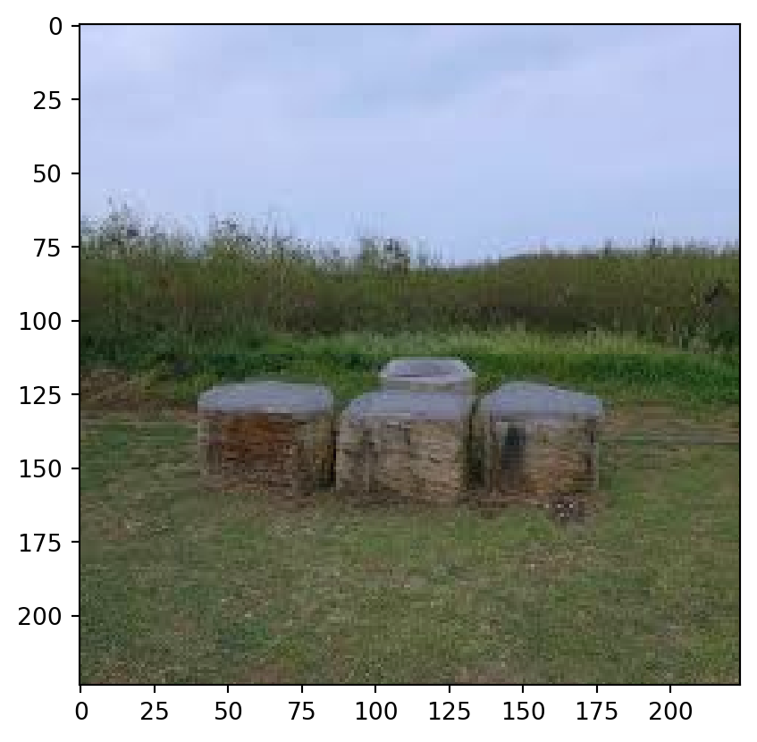
array([1., 0.], dtype=float32)cnames = ["rural", "urban"]predictions = transfer_model.predict(xtest)1/1 ━━━━━━━━━━━━━━━━━━━━ 0s 3s/step1/1 ━━━━━━━━━━━━━━━━━━━━ 3s 3s/stepLe predictions sono una matrice. Noi vogliamo sapere quale classe viene predetta.
str_preds = np.array(cnames)[np.argmax(predictions, axis=1)]plt.figure(figsize=(20,16))
for k in range(20):
plt.subplot(4, 5, k+1)
#plt.plot([1,2,3]) -> line plot to create the template
plt.imshow(array_to_img(raw_xtest[k]))
plt.xticks([], [])
plt.yticks([], [])
ml_pred = str_preds[k]
gt_label = cnames[np.argmax(ytest[k])]
#plt.title(k, fontsize = 10)
plt.title(
gt_label,
fontsize=15,
color="black" if ml_pred == gt_label else "red"
)
plt.tight_layout();
plt.show()
plt.close()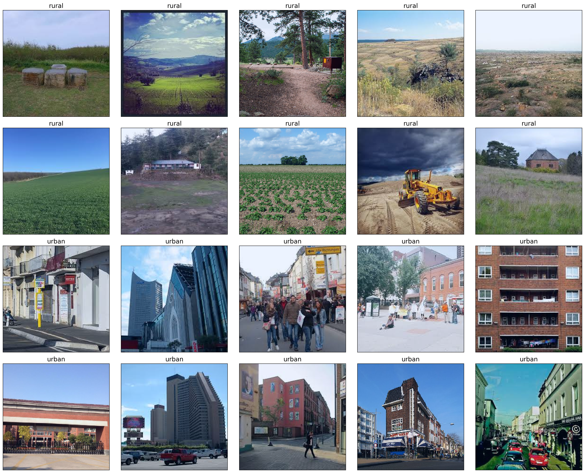